Bollettieri's Tennis Handbook
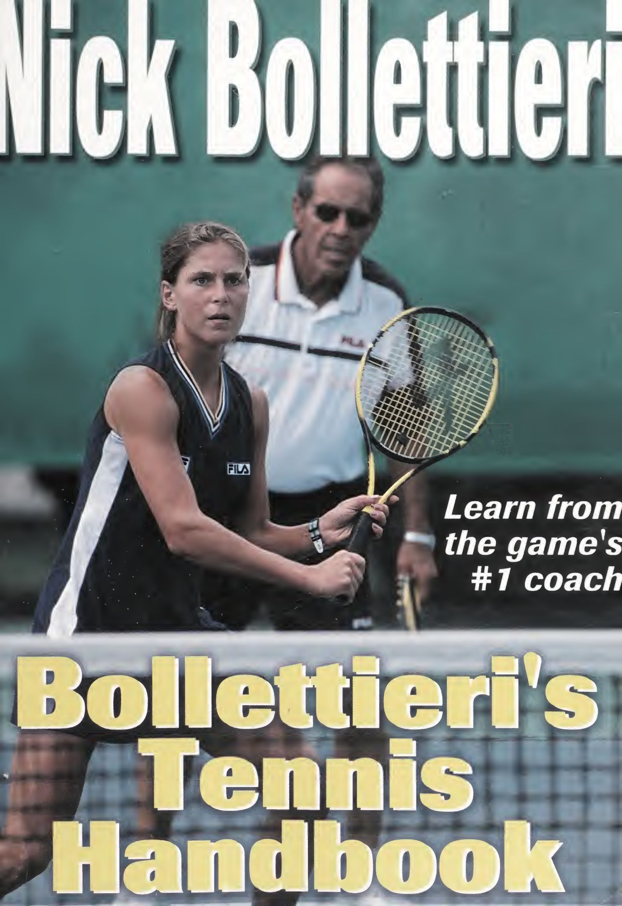
Bản dịch Việt ngữ này chỉ dùng cho mục đích học tập cá nhân, phi thương mại. Bản quyền tác phẩm gốc thuộc về tác giả và nhà xuất bản.
Mục Lục Toàn Thư Cẩm Nang Huấn Luyện Viên Nick Bollettieri (4 Phần & 9 Chương Chuyên Sâu)
Hệ Thống Phát Triển Bollettieri & Nền Tảng Cơ Học Chuyển Động
Part I: The Bollettieri Development System & Stroke Fundamentals
Lời Mở Đầu & Hệ Thống Phát Triển Bollettieri
Preface & Chapter 1: The Bollettieri Development System
Tôi tạo ra khối lượng tác phẩm này với một mục đích - để chia sẻ kinh nghiệm trong sự nghiệp 44 năm của mình. Nó sẽ mô tả các khái niệm của tôi về việc dạy người chơi ở mọi cấp độ, từ người mới bắt đầu đến người chưa có kinh nghiệm. 1 trên thế giới. Tôi sẽ kể lại những câu chuyện về nhiều tay vợt mà tôi từng làm việc cùng. Tôi sẽ mô tả điểm mạnh, đặc điểm, nỗi sợ hãi và hành vi hoang tưởng của họ. Nhìn vào mục lục sẽ thấy nhiều chủ đề mà cuốn sách đề cập, từ điều kiện thể chất đến cách nuôi dạy con cái cho đến thành phần và độ căng của dây vợt của bạn. Tôi hy vọng rằng chúng tôi đã bao gồm một cái gì đó cho tất cả mọi người. Nếu các tay vợt, huấn luyện viên, quản trị viên và phụ huynh đọc cuốn sách này cảm thấy như một tia sáng đã bật lên, rằng họ đã học được điều gì đó mới mẻ, thì tôi sẽ coi hàng nghìn giờ sản xuất là đáng giá. Cuốn sách này là sản phẩm của những người tò mò, những người siêng năng cố gắng duy trì vị thế dẫn đầu trong ngành quần vợt.
Ngay từ đầu, tôi muốn nói rõ rằng các quan điểm trình bày trong cuốn sổ tay này đều xuất phát từ kinh nghiệm tích lũy được trong hơn bốn thập kỷ giảng dạy. Tôi không tuyên bố mình đúng và tôi không buộc tội bất cứ ai có phương pháp khác là sai. Trong nhiều trường hợp, tôi đã chỉ ra nhiều kỹ thuật khác nhau để so sánh. Cuốn sổ tay này không chỉ chứa đựng những nguyên tắc cơ bản về đánh bóng tennis.
Nó bao gồm các kỹ thuật tiên tiến, đẳng cấp thế giới và các sắc thái có thể khiến một tay vợt giỏi trở thành một tay vợt vĩ đại. Tôi đã cố gắng chia sẻ trò chơi đã thay đổi như thế nào trong bốn thập kỷ qua. Cuốn sách được tổ chức theo cách mà bạn có thể tìm kiếm thông tin cụ thể - khi nào và làm thế nào để bắt đầu cho con bạn chơi quần vợt, cách chuẩn bị tốt nhất vào đại học, cách đảm bảo học bổng đại học hoặc thi đấu cho trường đại học mà bạn chọn, cách chọn học viện quần vợt hoặc trại hè, cách phân biệt huấn luyện viên với người hướng dẫn và cách chọn giữa chúng.
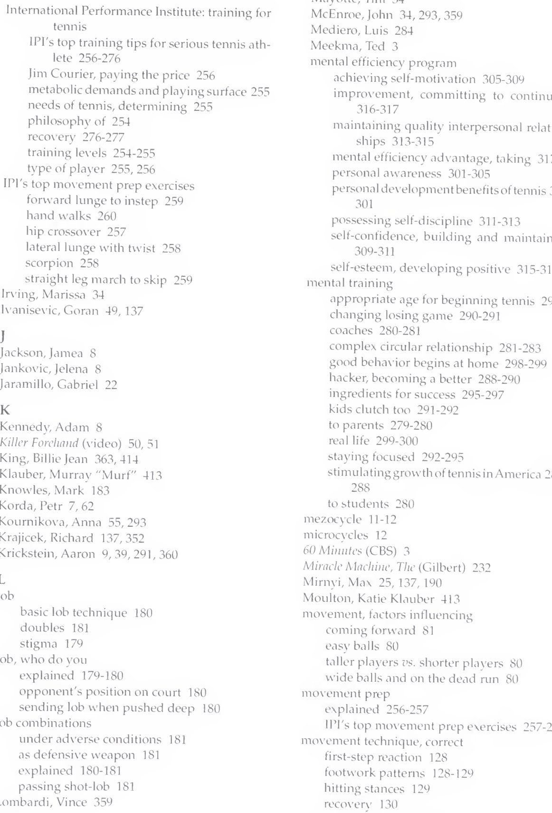
Tôi đã kể lại trải nghiệm trưởng thành của một số tay vợt vĩ đại nhất của thế hệ - Agassi, Krickstein, Courier, Horvath, Bassett, Sampras, Seles, Pierce, Majoli, Rios, Hingis, Haas, Philippoussis, Becker, Venus và Serena Williams, cùng những người khác. Tôi hy vọng bạn thích đọc về những tay vợt này cũng như tôi thích thú khi biên soạn tài liệu.
Trong mọi trường hợp, hãy truy cập trang Web của tôi tại www.imgacademies.com và gửi e-mail cho tôi. Trong suốt hơn bốn thập kỷ huấn luyện, tôi đã tiếp xúc với mọi người từ mọi tầng lớp xã hội. Tôi tiếp tục thất vọng với bản thân vì đã không ghi nhật ký hàng ngày, một thứ giúp củng cố trí nhớ và ngăn chặn sự mất mát chi tiết không thể tránh khỏi theo thời gian. Vì vậy, trước khi bạn phải hối tiếc tương tự, hãy bắt đầu viết nhật ký ngay hôm nay. Nhật ký trở thành kho báu gợi lại những chi tiết vụn vặt của một sự kiện, những chi tiết khiến nó đáng được ghi nhớ ngay từ đầu.
xii Tôi rất hân hạnh được chứng kiến sự biến đổi hoàn toàn của quần vợt. Với tư cách là huấn luyện viên, Ive phải thích nghi với phong cách chơi mới. Nếu tôi không điều chỉnh, học trò của tôi sẽ trở thành nạn nhân của sự phát triển về trang bị, chiến lược và chiến thuật. Tuy nhiên, xét cho cùng, làm việc chăm chỉ, cống hiến và sẵn sàng nhận trách nhiệm về thất bại luôn là nền tảng của một nhà vô địch. Luyện tập có mục đích và thực hiện các bài tập nhiều lần là điều giúp vận động viên đạt được Sự Sự tự tin tuyệt đối. Sự lặp lại chuyển thành hiệu suất vô địch. Người chơi đã đánh cú đánh đó hàng nghìn lần trước đó và biết rằng mình có thể đánh cú đánh đó lần này và lần tiếp theo.
Tất cả những gì một huấn luyện viên có thể hy vọng đạt được là giúp học viên đạt đến mức tối đa khả năng của họ. Hãy tin tôi, điều này không hề dễ dàng! Những huấn luyện viên hiểu học sinh của mình - tâm trạng, nỗi sợ hãi và nhu cầu của họ - có thể nhận được sự tôn trọng của họ. Những huấn luyện viên này có cơ hội nâng cao tiềm năng của học sinh. Thật vậy, khả năng hiểu học sinh có thể là đặc điểm xác định của một huấn luyện viên, phẩm chất giúp phân biệt huấn luyện viên với giáo viên hoặc người hướng dẫn.
Một huấn luyện viên phát triển sự hiểu biết về tính cách thực sự và những sắc thái tiềm ẩn của học sinh. Mô tả này không nhằm mục đích làm giảm giá trị của người hướng dẫn, người đóng vai trò quan trọng. Nhưng con đường dẫn đến những màn trình diễn đặc biệt, xuất sắc hoặc đẳng cấp thế giới đầy rẫy những thương vong của những cá nhân tài năng bước lên con đường mà không có huấn luyện viên.
Vận động viên hoàn hảo của tôi Vận động viên hoàn hảo của tôi thường thắng nhiều hơn là thua. Không ai thắng mọi lúc - không phải Michael Jordan, không phải Muhammad Ali, không phải Roger Clemens. Nhưng vận động viên hoàn hảo của tôi không thường xuyên thua cuộc. Anh ấy hoặc cô ấy chơi để giành chiến thắng. Khi vận động viên hoàn hảo của tôi chiến thắng, anh ta hoặc cô ta sẽ giành chiến thắng một cách công bằng và nhã nhặn, tuân thủ các quy tắc thành văn và bất thành văn, không gây phản cảm hay hạ thấp đối thủ. Khi người chơi của tôi thua, anh ta hoặc cô ta sẽ thua một cách duyên dáng như nhau, sẽ thua do bị đánh bại chứ không phải do không nỗ lực hết mình. Vận động viên của tôi sẽ chúc mừng đối thủ và không tìm lời bào chữa.
Người đó sẽ tự nguyện sẽ làm việc chăm chỉ hơn để thay đổi kết quả vào lần tới. Vận động viên hoàn hảo của tôi sẽ háo hức làm việc chăm chỉ để tiến bộ, tiến tới sự hoàn hảo. Người đó sẽ là người quan sát và người nghe, học bằng cách quan sát và lắng nghe lời khuyên. Vận động viên hoàn hảo của tôi sẽ yêu thích môn thể thao này, lịch sử của nó, sự phức tạp của nó và sẽ là một niềm vinh dự cho môn thể thao này cũng như cho gia đình và bạn bè của anh ấy hoặc cô ấy chứ không phải là một sự xấu hổ. Tay vợt của tôi sẽ là người phát ngôn của nó, bằng hành động thậm chí còn hơn cả lời nói. Anh ấy hoặc cô ấy sẽ là quảng cáo vĩnh viễn của trò chơi, nhưng sở thích và tính cách của người chơi của tôi sẽ vượt lên trên trò chơi.
Vận động viên hoàn hảo của tôi sẽ nhớ cách trở thành một nhà vô địch thực sự và sẽ hành động như một nhà vô địch trong và ngoài sân chơi. Người chơi của tôi sẽ Sự tự tin nhưng không kiêu ngạo. Anh ấy hoặc cô ấy sẽ chia sẻ kiến thức, kỹ thuật và hiểu biết sâu sắc với người khác. Tay vợt của tôi sẽ truyền cảm hứng và hướng dẫn cho thế hệ tiếp theo và tự động trở thành một hình mẫu.
Vận động viên hoàn hảo của tôi có thể là nam hoặc nữ, cao hay thấp, da đen hoặc da trắng. Anh ấy hoặc cô ấy sẽ có rất nhiều Arthur Ashe bên trong, rất nhiều Wayne Gretzky, rất nhiều Bart Starr, rất nhiều Bill Bradley, rất nhiều Martina Navratilova. Tôi rất thích huấn luyện vận động viên hoàn hảo. Chỉ một lần thôi. Mặc dù vận động viên hoàn hảo mà tôi mô tả có thể chỉ tồn tại trong tưởng tượng, nhưng vẫn có một số cá nhân nổi bật giữa đám đông, một số bậc thầy trong thời gian của họ đã thu hút sự chú ý của chúng ta và tiêu tốn trí tưởng tượng của chúng ta.
Ai có thể quên được ngọn lửa, niềm đam mê và sự tinh thông của John McEnroe? Những món quà của anh ấy chỉ thỉnh thoảng xuất hiện. Khi tôi nghĩ về một đối thủ, một chiến binh, một người không chịu bỏ cuộc, một người thậm chí ngày nay vẫn nghĩ rằng mình có thể đánh bại tất cả mọi người, tôi nghĩ đến Jimmy Connors. Tôi thích xem anh ấy thi đấu và tôi không thể tưởng tượng được môn quần vợt mà không có anh ấy.
Tôi sẽ không bao giờ quên tuổi trẻ bất diệt, sự thăng trầm không ngừng, sự nhiệt tình của Tracy Austin, nhà vô địch US Open hai lần và vẫn đánh bại những người chiến thắng với tư cách bình luận viên truyền hình. Thuật ngữ tiên phong được minh họa bởi Billie Jean King, động lực thúc đẩy trò chơi của phụ nữ trở nên nổi bật. Thậm chí ngày nay, cô ấy vẫn tiếp tục cho đi, quảng bá và nâng cao.
Việc nghỉ hưu gần đây của Wayne Gretzky đã củng cố vị trí của anh ấy như một trong những vận động viên được kính trọng nhất mọi thời đại. Tôi sẽ không bao giờ quên nhận xét mà anh ấy đã đưa ra trong một cuộc phỏng vấn gần đây, một nhận xét giải thích cho sự nổi tiếng to lớn của anh ấy. Anh ấy nói trong buổi tập, anh ấy đã làm chính xác điều tương tự - anh ấy đã cố gắng hết sức. Chúng tôi rằng trong mọi trận đấu, mọi cuộc triển lãm, mọi buổi biểu diễn từ thiện, mọi người đều có thể học hỏi từ thái độ của anh ấy.
Chris Evert để lại dấu ấn trong làng quần vợt. Cô ấy minh họa từ R-E-S-P-EAi có thể quên Bjorn Borg? Sự tập trung và tập trung của anh ấy đã giúp anh ấy vô địch Wimbledon sáu lần với tư cách là vận động viên cơ bản. Không thể tin được! Tôi không thể Kết thúc cú đánh danh sách những vận động viên gần như hoàn hảo của mình nếu không có cái tên Arnold Palmer. Anh ấy là một nghệ sĩ biểu diễn nổi bật, một quý ông tinh túy và là một hình mẫu tốt cho tất cả chúng ta.
Tôi chân thành cảm ơn Mark McCormack và Bob Kain của International Management Group đã cho phép tôi tiếp tục là "Nick Bollettieri" sau khi mua học viện của mình. Họ cũng như tôi, đã làm việc không mệt mỏi để giúp đỡ môn quần vợt. Đối với Betsey Nagelsen McCormack, bạn là một người không thể tin được từ trong ra ngoài. Cảm ơn.
Tôi muốn cảm ơn và ghi nhận Human Kinetics vì sự kiên nhẫn và cách tiếp cận chuyên nghiệp của họ trong việc sản xuất ấn bản cuốn sách này của tôi. Ngoài gia đình, tôi xin ghi nhận và bày tỏ lòng biết ơn chân thành tới tập thể của mình. Những người này đã dành hàng trăm giờ để biên tập ấn bản cuốn sách này của tôi: Pat Dougherty, Geoff Lance, Louise Luscombe và Peter McCraw. Xin gửi lời cảm ơn chân thành đến nhiều người khác đã cung cấp những ý kiến đóng góp quý báu để hoàn thành tác phẩm này.
Sự hỗ trợ liên tục của những người và tổ chức sau đây cũng đã đóng góp to lớn: Fila Swiss Army Brands Oakley Volkl Penn Bill & Catharina Birchall Bob Davis Ông bà Oscar De La Renta Ông Bill Dennis Don Engel và gia đình Barry Gimelstob Ông Leland Hardy Monte Hurowitz và Bob Jellen cùng gia đình Terry Kennedy và gia đình Andy Krieger và Tiến sĩ Murf Klauber'^ Ryszard Krauze và gia đình Nate Landow và Dan Lufkin Louis Marx Jr.
và gia đình Louis Marx III Marty Mulligan Tiến sĩ Glen & Marilyn Nelson và gia đình j Steve Owens Samuel Reid Charlie Reed Gary Scheck Bernie & Margot Richard Schutzman và gia đình Schmidt và gia đình Tom Seavey và gia đình Lenny Solomon Jack Schneider và gia đình Allen Wheat Richard Williams Marylou Whitney và gia đình và gia đình và John Hendrickson xvi Mike Callans Jerry Glauser Murray Evans và gia đình Mark Fisher và gia đình Terry Havens Fulton Liss gia đình Tiến sĩ Lawrence Lieberman Judge Robert Farrance Steve Jonsson Ivano Panetti Tiến sĩ Terry Alford Norbert Peters và Barry Gibb và gia đình: Hãy tiếp tục chơi Cơn sốt Đêm Thứ Bảy '''Thành công ban đầu của tôi trong kinh doanh quần vợt phần lớn là nhờ vào Tiến sĩ John.
Sự ủng hộ và tin tưởng của Klauber dành cho tôi. Từ những ngày đầu của tôi tại Colony Tennis and Beach Resort cho đến ngày hôm nay. Tiến sĩ Klauber đã duy trì khu nghỉ dưỡng của mình là một trong những khu nghỉ dưỡng tốt nhất trên thế giới. Cảm ơn, bác sĩ! Những cá nhân sau đây đã cống hiến hết mình cho tôi trong 20 năm trở lên. Chỉ nhờ sự tận tâm và cống hiến của họ mà chúng tôi đã thành công ngoài mọi mong đợi và được tờ New York Times mệnh danh là "Người mẹ của tất cả các học viện". Greg Breunich Chip Brooks Chip Hart Gabriel Jaramillo Ted Meekma Julio Moros Carolina Murphy Steve Shulla Đặc biệt gửi lời cảm ơn đến một người bạn cũ, người bạn tâm giao và cộng tác viên, Mike DePalmer Sr. Mike là người đã hướng dẫn bước chân của tôi đến khu vực Bradenton.
Sau vài tháng, Mike có một giấc mơ và thúc giục tôi phát triển Học viện Bollettieri đầu tiên. Cảm ơn, Mike! Sẽ thật thiếu sót nếu không ghi nhận và cảm ơn 5 đứa con của tôi là Jimmy, Danielle, Angel, Nicole và Alex - những người đã dành tình yêu, sự hỗ trợ và sự thấu hiểu trong suốt sự nghiệp của tôi. Và cảm ơn Kristen đã đưa ra những ý tưởng điên rồ của tôi. Đối với nhiều người đã cống hiến cả cuộc đời cho công việc, cuộc sống gia đình đôi khi gặp nhiều khó khăn.
Và gửi tới những người hâm mộ, giới truyền thông và những người chơi trò chơi tuyệt vời của chúng tôi, các bạn đã tiếp tục ủng hộ tôi, tìm kiếm lời khuyên của tôi, theo học tại học viện của tôi và mang lại động lực cho tôi trong hơn bốn thập kỷ. Qua nhiều năm, các bạn đã trở thành nguồn sức mạnh và một nhóm gia đình và bạn bè mở rộng. Tôi cũng muốn ghi nhận nhiều người tiên phong trong nghề dạy học, những người đã giúp tôi phát triển các kỹ năng của riêng mình: Harry Hopman, Dennis Van der Meer, Vic Braden, và John Wilkerson, cũng như những huấn luyện viên mà tên tuổi của họ đã cho phép tôi bỏ qua trong thời điểm cao cấp này. Xin gửi lời cảm ơn đặc biệt đến Eugene Scott, biên tập viên tạp chí Tennis Week, người luôn dũng cảm đứng lên bảo vệ sự thật, phơi bày những bất công trước ánh sáng mặt trời cho mọi người thấy. Cảm ơn USPTA và USPTR đã góp phần phấn đấu đạt được sự xuất sắc của xvii và cảm ơn tất cả các học viện quần vợt khác, giống như tôi, nhận ra những khó khăn, chấp nhận thử thách, nghiến răng và tạo ra sự khác biệt trong cuộc sống của hàng trăm, hàng nghìn người chơi.
Tôi cũng rất vui mừng về những thay đổi mà USTA đang thực hiện đối với các chương trình của mình. Tôi mong muốn được hợp tác chặt chẽ hơn với họ trong một số dự án rất thú vị trong những năm tới. Cựu sinh viên Nick đã làm việc cá nhân với những người chơi Pro Tour sau hoặc họ đã được đào tạo tại Học viện Quần vợt Nick Bollettieri: Người chơi WTA Tour Nicole Arendt Terry Phelps Carling Bassett Mary Pierce Daja Bedanova Rafaella Reggi Elena Bovina Brie Rippner Sandra Cacic Chanda Rubin Pam Casale Patty Schnyder Catalina Cristea Monica Seles Erika de Lone Anne-Gaelle Sidot Mariaan de Swardt Alexandra Stevenson Ruxandra Dragomir Helena Sukova Mary Joe Fernandez Andrea Temesvari Andrea Glass Caroline Vis Julie Halard-Decugis Marlene Weingartner Daniela Hantuchova Serena Williams Martina Hingis Venus Williams Kathleen Horvath Anke Huber Người chơi ATP Tour Jelena Jankovic Andre Agassi Sonya Jeyaseelan Julian Alonso Anna Kournikova Paul Annacone Mirjana Lucic Hicham Arazi Iva Majoli Jimmy Arias Amelie Mauresmo Hugo Armando Rachel McQuillan Boris Becker Karin Miller Jim Courier xviil Martin Damm Cecil Mamiit Nicolas Massu Mike DePalmer Jr.
Slava Dosedel Paul-Henri Mathieu Andrei Medvedev Max Mirnyi Younes El Aynaoui Thomas Enqvist Brad Gilbert Francisco Montana Justin Gimelstob Diego Nargiso Marc-Kevin Goellner Yannick Noah Magnus Norman Brian Gottfried Jim Grabb Jiri Novak Marcus Ondruska Oliver Gross Tommy Haas Mark Philippoussis Rodney Harmon David Rikl Chip Hooper Marcelo Rios Yevgeny Kafelnikov Christian Ruud Cedric Kauffman Mark Knowles Andrea Sa Marat Safin Petr Korda Pete Sampras Aaron Krickstein Cyril Suk Karol Kucera Jeff Tarango Giovanni Lapentti Magnus Larson Laurence Tieleman Daniel Vacek Jean Rene Lisnard Glenn Weiner David MacPherson David Wheaton Todd Witskin Xavier Malisse Hệ thống phát triển Bollettieri Trong giai đoạn đầu của sự nghiệp, tôi nhận ra rằng nếu tôi làm việc lâu hơn và chăm chỉ hơn bất kỳ ai khác và vây quanh mình là những người trung thành, tận tâm, Triết lý của chúng tôi là huấn luyện con người chứ không chỉ là kỹ năng.
Đó là tôi có thể là ai đó. Tôi nhận ra rằng nếu tôi học được từ những thất bại của mình và có được sự hỗ trợ của bạn bè, không chỉ tôi mới có thể tạo ra ảnh hưởng. Vào những năm 1950 và đầu những năm 1960 tốt hơn, bạn chỉ cần nhặt một hộp người chơi quần vợt, những quả bóng, đi đến công viên và chiếm một trong nhiều sân trống để chơi quần vợt. Sự bùng nổ quần vợt bắt đầu từ thời đại đó. Mọi thứ đã thay đổi đáng kể trong bốn thập kỷ qua. Ngày nay, các câu lạc bộ quần vợt còn nhằm mục đích giúp học sinh phát triển, thường là một phần của khu phức hợp giải trí gia đình có thể phù hợp với cuộc sống.
bao gồm các trung tâm thể dục nhịp điệu, câu lạc bộ thể dục, sân quần vợt, sân bóng quần, cửa hàng chuyên nghiệp và thẩm mỹ viện. Các tay vợt chuyên nghiệp ngày nay cần có sự hiểu biết về kinh doanh để tồn tại. Điều quan trọng không kém là các chuyên gia ngày nay cần hiểu rằng nhiều chủ sở hữu câu lạc bộ phải đa dạng hóa để câu lạc bộ của họ có lợi nhuận về mặt tài chính. Hệ thống của chúng tôi tích hợp tất cả các khía cạnh đào tạo: thể chất, kỹ thuật, chiến thuật, tinh thần, dinh dưỡng, tái tạo và xã hội. Trong các buổi học của chúng tôi, học sinh sẽ làm việc trong và ngoài sân đấu về các kỹ thuật, chiến lược chơi trò chơi, các buổi thực hành mang tính xây dựng, chuyển động, các nhu cầu tinh thần mà bạn phải chấp nhận và giải quyết, và cuối cùng là sự phát triển thể chất của cơ thể bạn và cách sử dụng nó bất kể điều gì xảy ra.
Lịch sử Học viện quần vợt Nick Bollettieri (NBTA) bắt đầu hoạt động vào năm 1977 tại Colony Beach và Tennis Resort trên Longboat Key, Florida. Ý tưởng thành lập học viện đến từ Mike DePalmer Sr., một người bạn thân của Nick. Học viện bắt đầu đào tạo các vận động viên quần vợt cấp cơ sở vào cuối tuần với giá 35 USD mỗi buổi. Lúc đầu, học viện chỉ thu hút học sinh từ Sarasota-Bradenton. Tuy nhiên, tin đồn nhanh chóng lan rộng khắp tiểu bang và Nick bắt đầu thu hút người chơi từ Jacksonville đến Miami. Chẳng bao lâu sau, đã có 30 đến 40 bạn trẻ tham gia chương trình. Để chứa càng nhiều học sinh càng tốt, sáu đến tám học sinh cuối cấp sẽ ở chung một phòng tại Colony.
Vào mùa hè năm 1978, Nick nói với các học sinh tại trại hè của anh ấy ở Beaver Dam, Wisconsin, rằng anh ấy sẽ mở một trường học ở Sarasota. Trường sẽ cung cấp giao bóng hướng dẫn chơi tennis và cung cấp chỗ ở và ăn ở. Mùa hè năm đó, anh xếp 20 học sinh để nhập học vào tháng 9, dù chưa có cơ sở nội trú. Trong vài năm đầu tiên, một nửa số học sinh sống ở nhà Nick và số còn lại sống rải rác tại nhà của các giáo viên.
Ưu điểm của anh ấy không chỉ là huấn luyện viên quần vợt mà còn là đầu bếp, người giúp việc, gia sư và tài xế. Một trong những học sinh nội trú sớm nhất và nổi bật nhất là cô gái trẻ đến từ Tây Virginia tên là Anne White. Anne được biết đến nhiều nhất với bộ bodysuit màu trắng vừa vặn gây sốc mà cô mặc trong trận đấu vòng một tại Wimbledon năm 1985. Việc cô thách thức các phép xã giao truyền thống đã đưa ảnh của cô lên trang bìa của mọi tạp chí quần vợt trên thế giới. Việc công khai đã thu hút nhiều sự chú ý đến học viện mới của Nick.
Cuối năm đó NBTA có lần đầu tiên trong số nhiều đợt tăng trưởng vượt bậc. Lúc này học viện đã tràn ngập học sinh. Không gian sân đấu và năng lực nhà ở không đủ. Để giải quyết vấn đề tại sân đấu, Nick hợp tác với Mike DePalmer Sr. để mua một câu lạc bộ quần vợt nằm trên 75th Street NW ở Bradenton. Cơ sở này được đặt tên là Câu lạc bộ Quần vợt DePalmer-Bollettieri, ngày nay vẫn hoạt động với tên gọi Trung tâm Quần vợt Nick Bollettieri.
Tình hình nhà ở đã được giải quyết bằng cách mua Manatee Court West Motel, tọa lạc tại 6300 Manatee Avenue West. Nhà nghỉ được chuyển đổi thành học viện quần vợt nội trú đầu tiên trên thế giới. Từ vị trí trung tâm này, học sinh có thể đi bộ đến trường học thuật, Học viện Bradenton. Từ đó, sau đó họ được đưa đến thuộc địa hoặc câu lạc bộ.
Đây là sự khởi đầu của Học viện Quần vợt Nick Bollettieri. Học phí một năm là 12.000 USD. Đây là những năm vinh quang. Các sinh viên bao gồm Jimmy Arias, Kathleen Horvath và Carling Basset, tất cả đều được xếp hạng trong top 10 thế giới. Nhưng điều này là không đủ. Nick cảm thấy anh ấy cần một cơ sở mới cho bọn trẻ. Anh tưởng tượng ra một cơ sở lớn hơn, khép kín hoàn chỉnh với sân, ký túc xá, nhà bếp và phòng ăn. Giấc mơ đã bắt đầu!
Những năm đầu Năm 1980 Bollettieri quyết định đã đến lúc phải thực hiện một bước đi khác. Cùng với các đối tác của mình, anh ấy đã mua một cánh đồng cà chua rộng 100 mẫu Anh trên đường 34th Street West. Tại đây, ông đã xây dựng 22 tòa nhà, 32 chung cư, một phòng ăn với tiện nghi nhà bếp và một hồ bơi. Số lượng tuyển sinh ban đầu tại học viện là 100 sinh viên được giám sát bởi 22 nhân viên. Các phòng được thiết kế để chứa bốn học sinh mỗi phòng, nhưng vào thời điểm việc xây dựng hoàn thành, việc tuyển sinh của học viện yêu cầu Nick phải nhồi nhét tám học sinh vào một phòng.
Ngay cả với việc mở rộng, Nick cũng không bằng lòng ngồi lại và tận hưởng thành công của mình. Đã đến lúc phải mơ một lần nữa. Năm 1982, Nick mua 13 mẫu đất liền kề với học viện, trên đó anh xây thêm 22 sân và khu phức hợp quần vợt trong nhà đầu tiên ở phía nam Atlanta. Nhiều người cho rằng Nick đã mất trí vì xây dựng Sân trong nhà ở Florida, nhưng Nick biết anh cần một cơ sở vật chất hoàn thiện hơn để thu hút ngày càng nhiều người chơi giỏi hơn.
Sau đó, vào năm 1983, Jimmy Arias, người xếp hạng 5 thế giới, lọt vào bán kết US Open. Thành công của Jimmy và tầm nhìn về tương lai của Nick bắt đầu thu hút những người chơi có thứ hạng cao hơn và tiềm năng lớn hơn. Cuối năm đó Nick xây thêm hai tòa nhà nữa cho học viện. Với việc bổ sung thêm 16 ký túc xá, học viện đã có thể tăng số lượng tuyển sinh lên 160 sinh viên.
Năm 1986 học viện bổ sung thêm chương trình dành cho người lớn để tăng số lượng tuyển sinh. Điều này có nghĩa là phải bổ sung thêm nhiều sân, nâng tổng số lên 54 (14 Sân Sân đất nện, 4 Sân trong nhà và 36 Sân cứng ở sân vận động). Đến thời điểm này, NBTA đã được công nhận là học viện quần vợt hàng đầu thế giới. Nick đã huấn luyện và huấn luyện nhiều tuyển thủ hàng đầu. Trước năm 1990 NBTA sẽ sản xuất ba số thế giới. 1 người chơi trong giải đấu chuyên nghiệp (Andre Agassi, Jim Courier và Monica Seles). Học viện đã được giới thiệu trên các chương trình truyền hình như 20/20 (ABC), 60 Minutes (CBS) và NBC Evening News (NBC).
Vụ việc đã thu hút sự chú ý của International Management Group (IMG), công ty quản lý thể thao lớn nhất thế giới. Năm 1987 Nick bán NBTA cho IMG. Ông cảm thấy rằng nếu học viện tiếp tục phát triển và mở rộng thì nó cần có sự tiếp xúc và hỗ trợ tài chính của IMG. Nick đồng ý ở lại học viện với tư cách là chủ tịch và người sáng lập.
Với việc bổ sung IMG, học viện một lần nữa có thể mở rộng và nâng cấp cơ sở của mình. Khu vực ăn uống được mở rộng để chứa người lớn. Một hồ bơi khác, các cơ sở giải trí và một trung tâm huấn luyện biểu diễn để huấn luyện ngoài sân đấu đã được xây dựng. Với sự thành công của NBTA, Nick, Ted Meekma và Giám đốc điều hành Greg Breunich quyết định đã đến lúc phải mơ ước một lần nữa. Năm 1990, họ lặp lại trong các môn thể thao khác những gì Nick đã đạt được bằng phương pháp giảng dạy và huấn luyện quần vợt của mình. Vì vậy, Học viện Thể thao Bollettieri đã được thành lập. Những triết lý mà Nick sử dụng trong quần vợt giờ đây sẽ được đưa vào các chương trình thể thao khác. Ý tưởng này sẽ đánh dấu nỗ lực đầu tiên nhằm đào tạo nhiều môn thể thao tại một cơ sở.
Các nhà phê bình cho rằng điều đó không thể thực hiện được. Hiện tại Đến năm 1994, một tầm nhìn khác của Bollettieri đã trở thành hiện thực. Với việc giới thiệu ba môn thể thao mới, NBTA trở thành Học viện thể thao Bollettieri (BSA). Với việc bổ sung Học viện Golf David Leadbetter, Học viện Bóng đá và Học viện Bóng chày, BSA hiện là học viện thể thao lớn nhất thế giới. Cơ sở rộng 45 mẫu Anh, vẫn tọa lạc tại 34th Street West ở Bradenton, cung cấp khu liên hợp thể thao hiện đại và hoàn thiện nhất để huấn luyện thể thao ở bất cứ đâu.
Năm 1996 BSA hoàn thành khu phức hợp trong nhà của Viện Hiệu suất Quốc tế (IPI). Thực chất, tòa nhà này là một sân bóng đá trong nhà rộng 30.000m2 được trải cỏ nhân tạo. IPI Dome, như tên gọi của nó, được sử dụng để tập luyện nhiều môn thể thao, bất kể thời tiết và được trang bị để phù hợp với hầu hết mọi môn thể thao sử dụng bóng.
Cùng năm đó BSA mở Trung tâm Trị liệu Y học Thể thao. Mở cửa cho công chúng, trung tâm tuyển dụng các nhà trị liệu thể thao được cấp phép đầy đủ. Trong suốt cả năm, các vận động viên chuyên nghiệp hàng đầu từ nhiều môn thể thao khác nhau thường xuyên đến trung tâm trị liệu. Năm 1997 BSA trở thành sân nhà của Eddie Herr Junior Invitational, một trong những sự kiện danh giá nhất thế giới về điền kinh nghiệp dư. Năm nay là năm thành công nhất trong lịch sử 11 năm giải đấu quốc tế với 1.100 tay vợt đến từ 87 quốc gia khác nhau tham gia. Trong số các đối thủ có 130 người được xếp hạng không. 1 toàn quốc và xếp hạng 88. 2 toàn quốc ở nhiều lứa tuổi khác nhau.
BSA hiện có hơn 400 sinh viên toàn thời gian đến từ hơn 40 quốc gia. Các trại hè và tuần nghỉ phép có hơn 500 người tham gia cùng một lúc. Với việc hoàn thành 10 tòa nhà đầu tiên của Biệt thự Bollettieri, học viện hiện có thể đáp ứng nhu cầu ngày càng tăng này. Chi phí hiện tại cho một chương trình thể thao trong năm học (tháng 9 đến tháng 5) là khoảng 28.000 USD, chưa kể tiền học phí.
BSA cũng có một số lượng học bổng hạn chế dành cho những người cần hỗ trợ tài chính hoặc những người có tài năng đặc biệt. BSA đã phải trải qua một chặng đường dài để có được đội ngũ nhân viên quần vợt gồm 22 người đảm nhiệm tất cả công việc. Học viện hiện có 250 người ở 25 khoa, bao gồm các chuyên gia quần vợt (người lớn và trẻ em); nhân viên chơi gôn, bóng chày, bóng đá, bóng rổ và khúc côn cầu; giao bóng khách; bán hàng và tiếp thị; đặt chỗ; dọn phòng; một nhà bếp đầy đủ; tâm lý thể thao; sự thích hợp; chương trình nghiên cứu và phát triển; và hơn thế nữa.
Phòng Thương mại Quận Manatee ước tính rằng học viện đầu tư hơn 20 triệu đô la vào nền kinh tế địa phương mỗi năm. BSA đã nhận được sự hỗ trợ to lớn của địa phương. Cư dân địa phương đồng ý rằng học viện là một câu chuyện thành công hiện đại và tự hào rằng nó vẫn tồn tại ở Bradenton. Nick đã có nhiều cơ hội chuyển đến những địa điểm dễ tiếp cận hơn nhưng anh ấy thích cộng đồng này và cảm thấy như ở nhà ở đó.
Tương lai Học viện thể thao Bollettieri, hiện được gọi là Học viện IMG, có rất nhiều dự định cho tương lai. Khu biệt thự nghỉ dưỡng Bollettieri đã được chứng minh là thành công rực rỡ và giờ đây còn có nhà câu lạc bộ/trung tâm hội nghị và hồ bơi. Tổng diện tích đất được sở hữu và cho thuê do Học viện IMG kiểm soát là 190 mẫu Anh. Vào năm 2001, hơn 100 mẫu đất này sẽ được phát triển để bao gồm một cơ sở đào tạo chơi gôn mới, hai sân bóng chày, năm sân bóng đá, thêm 15 sân tennis và thêm 60 căn biệt thự. Các môn thể thao mới được giới thiệu sẽ bao gồm các chương trình học viện trại bóng rổ và đạp xe.
Nick Bollettieri, IMG và nhóm Học viện IMG mong muốn tiếp tục thiết lập tiêu chuẩn để đánh giá tất cả những người khác trong ngành kinh doanh đào tạo nhiều môn thể thao, trong thế kỷ 21. Huấn luyện Chúng tôi tạo ra sự khác biệt lớn giữa giáo viên và huấn luyện viên. Chúng tôi là huấn luyện viên và nhà giáo dục. Huấn luyện bao gồm việc đặt ra các nhiệm vụ đầy thách thức để nâng cao kiến thức, kỹ năng và thái độ của người chơi. Bí quyết của các huấn luyện viên của chúng tôi như sau: • Tổ chức và lập kế hoạch • Chỉ đạo, hướng dẫn và thử thách • Giám sát và đánh giá • Giao tiếp và động viên • Đặt mục tiêu và mục tiêu rõ ràng • Hy sinh và làm việc chăm chỉ • Đặt học sinh lên hàng đầu • Tiếp tục học tập • Trở thành người chơi trong nhóm và tôn trọng đồng nghiệp • Yêu thích công việc Huấn luyện Kỹ năng huấn luyện theo từng bước Huấn luyện là một quá trình. Hệ thống của chúng tôi chuyển từ bước này sang bước tiếp theo để việc thực hành có cấu trúc và tiến trình hợp lý. Không có sửa chữa nhanh chóng. Cách tốt nhất để tiếp cận một học sinh là nhằm mục đích cải thiện thành tích của học sinh đó một cách lâu dài. Hệ thống của chúng tôi là một quá trình giáo dục.
Một số huấn luyện viên dạy từng cú đánh một lúc. Ví dụ, thuận tay là bài học đầu tiên, trái tay là bài học thứ hai, v.v. Nhưng người chơi sẽ không gặp phải chuỗi tình huống này trong trò chơi và học sinh sẽ không học được các kỹ năng vận động. Huấn luyện viên của chúng tôi có kiến thức về các nguyên tắc và các bước giúp mọi người học các kỹ năng vận động.
Phương pháp Bollettieri dạy cho học sinh nhiều kỹ năng khác nhau chỉ trong một buổi học. Khi dạy các cú đánh, chúng tôi dạy học sinh cách xử lý bóng tùy theo vị trí của họ trên sân và chúng tôi huấn luyện họ cách xác định loại bóng mà họ đang nhận. Học sinh cũng đặt ra mục tiêu và nắm rõ mục đích của từng bài tập.
Giáo dục thường xuyên Tất cả các thành viên trong ban huấn luyện NBTA đều phải trải qua một quá trình đào tạo nghiêm ngặt. Sau đó, chúng tôi nhấn mạnh đến giáo dục thường xuyên. Huấn luyện viên của chúng tôi gặp nhau hàng ngày để nghiên cứu các chủ đề như • khả năng cú đánh, • Phân tích video về một học sinh cụ thể, • điều hòa tinh thần, • điều hòa thể chất, • kết quả và nhận xét từ huấn luyện viên của chúng tôi khi họ trở về từ các giải đấu và • bài thuyết trình của diễn giả khách mời.
Chúng tôi gặp nhau vào Thứ Bảy hàng tuần trong hai giờ để thảo luận về phong cách huấn luyện, xu hướng mới, v.v. Sáu tuần một lần, chúng tôi tiến hành một lớp học định kỳ kéo dài tám giờ và lập kế hoạch cho giai đoạn tiếp theo của chương trình. Tổ chức và Lập kế hoạch NBTA đã đào tạo ra những tay vợt hàng đầu trong 20 năm qua. Thành tích thành tích của chúng tôi đã nói lên điều đó. Thành công của chúng ta không đến một cách ngẫu nhiên.
Cần nhiều năm làm việc chăm chỉ, lập kế hoạch, giám sát, đánh giá và đặt mục tiêu để phát triển mọi tay vợt. Để phát triển tay vợt một cách hiệu quả nhất, huấn luyện viên cần biết nhiều về họ: • Mục tiêu và tham vọng (được xem xét định kỳ với học sinh) • Tính cách — cách các tay vợt xử lý áp lực của cuộc sống hàng ngày, bao gồm cả thể thao • Các giai đoạn phát triển; điểm mạnh và điểm yếu; kỹ năng kỹ thuật, chiến thuật, chiến lược, thể chất và tinh thần; thói quen dinh dưỡng; sự trưởng thành • Nền tảng xã hội - cha mẹ, bạn bè, v.v. Tất cả những yếu tố này quyết định đường lối hành động của huấn luyện viên. Mỗi học sinh đều khác nhau.
Hệ thống trang trại NBTA là công ty dẫn đầu trong việc giảng dạy một môn thể thao cá nhân trong môi trường nhóm. Điều này trái ngược với quan niệm thông thường thời đó rằng dạy học từng người một là cách duy nhất để thực hiện. Huấn luyện theo nhóm có nhiều lợi ích. Học sinh học hỏi lẫn nhau và thúc đẩy nhau đạt đến trình độ cao hơn thông qua động lực và sự cạnh tranh.
Tại học viện, chúng tôi đã rất thành công trong việc sử dụng phương pháp tiếp cận hệ thống trang trại. Chúng tôi xếp học sinh vào nhóm theo kết quả trận đấu. Học sinh chơi các trận đấu thử thách và chuyển sang nhóm cao hơn hoặc thấp hơn dựa trên kết quả trận đấu. Chúng tôi nhấn mạnh đến sự cạnh tranh và học cách giành chiến thắng. Chơi đơn và đôi mỗi ngày là điều cần thiết. Trong những trường hợp đặc biệt, chúng tôi xem xét giới tính, độ tuổi, số năm kinh nghiệm thi đấu, v.v. khi thành lập nhóm.
Sự phát triển của một tay vợt là một chương trình dài hạn bao gồm các lịch trình khác nhau, các nhóm nhỏ hơn và trợ giúp từng người một. Trong suốt lịch sử của học viện, hệ thống của chúng tôi đủ linh hoạt để điều chỉnh theo nhu cầu phát triển của nhiều tay vợt. Không có gì đáng ngạc nhiên khi nhu cầu của người chơi mang tính cá nhân và đòi hỏi các giải pháp độc lập. Hệ thống của chúng tôi cho phép chúng tôi xác định các phần trong trò chơi của người chơi sẽ cho phép họ chuyển sang cấp độ chơi khác.
Học viên trở thành đối tác đấu tập của hàng chục võ sĩ chuyên nghiệp đang sống hoặc đào tạo tại đây. Ví dụ, vào tháng 12 năm 1997 Xavier Malisse đã giành chiến thắng trong Giải đấu trẻ quốc tế Eddie Herr danh giá. Anh ấy đã bỏ qua Orange Bowl để dành ba tuần luyện tập với Marcelo Rios, Tommy Haas, Mark Philippoussis, Jimmy Arias, Petr Korda và Thomas Enqvist. Ngay sau trải nghiệm này, Xavier đã trở thành chuyên nghiệp và Tạp chí Tenuis đã dự đoán những điều lớn lao cho anh ấy. Không chắc Xavier có thể đạt được trình độ luyện tập này ở nơi khác. Vào năm 1997 và 1998, khi vẫn còn là một thiếu niên. Tommy Haas tập luyện cùng Boris Becker. Haas và Becker tiếp tục tập luyện cùng nhau. Martina Hingis được đào tạo tại học viện vào tháng 11 năm 1998 để chuẩn bị cho Giải vô địch WTA Tour Chase.
Khi ở đây, cô ấy đã dành hai giờ mỗi ngày để luyện tập với những học sinh trẻ giỏi nhất của tôi, những người không thể tin được. Bạn không thể đặt giá cho loại trải nghiệm này! có cơ hội đánh với cô ấy. Venus và Serena Williams cùng với Jimmy Arias đã đánh bại tất cả mọi người trong học viện khi họ tập luyện tại đây. Nhóm Khi sinh viên toàn thời gian đến vào tháng 9, chúng tôi chơi các trận đấu trong suốt tuần đầu tiên. Chúng tôi ghi lại kết quả của tất cả các trận đấu và xếp học sinh vào các nhóm theo kết quả trận đấu.
Điều thú vị là Andre Agassi được xếp hạng 32 khi còn là học sinh cuối cấp tại NBTA. Tommy Haas được xếp hạng thứ 7. Những số liệu thống kê này cho bạn ý tưởng về mức độ cạnh tranh tại học viện. Hôm nay, chúng tôi có một nhóm nữ sinh tại học viện đang tập luyện dưới sự giám sát của Nick và có tiềm năng trở thành vận động viên WTA hàng đầu. Ví dụ, Jelena Jankovic đã vô địch Australian Junior Open năm 2001 ở tuổi 15. Cô ấy hiện đang xếp thứ nhất. 2 thiếu niên trên thế giới. Jamea Jackson được xếp hạng không.
1 ở lứa tuổi 16 trở xuống tại Hoa Kỳ ở tuổi 13. Maria Sharapova ở tuổi 13 đã giành được danh hiệu Eddie Herr 16 tuổi trở xuống. Tatiana Golovin đã giành chức vô địch quốc gia Pháp từ 14 tuổi trở xuống ở tuổi 12 và Orange Bowl ở độ tuổi 12. Stephanie Herz được xếp ở vị trí số 1. Vị trí số 1 ở độ tuổi 12 trở xuống ở Hà Lan ở tuổi 9. Nick cảm thấy có nhiều điểm tương đồng giữa nhóm nữ sinh này và nhóm nam sinh mà anh từng gặp vào cuối những năm 1980 (Agassi, Courier, Wheaton, v.v.).
Ở nhóm nam, chúng ta có Todd Reid và Adam Kennedy là số một. Nam sinh xếp hạng 1 và 2 ở Úc. Horia Tecau từng lọt vào bán kết năm 1999 nam 14 tuổi trở xuống Orange Bowl và được xếp hạng số 1. 1 ở Romania ở lứa tuổi 16 trở xuống. Dong Choi, người đã vô địch Orange Bowl hạng 12 trở xuống ở lứa tuổi 12 nam, là học sinh 14 tuổi có thứ hạng cao nhất trong bảng xếp hạng ITF 18 trở xuống. Jarrett Chirico được xếp ở vị trí số 1. Cậu bé đứng thứ 2 ở Mỹ ở độ tuổi 14 và anh trai Christopher đứng ở vị trí số 1.
1 ở độ tuổi 12 trở xuống ở Hoa Kỳ. Mỗi nhóm có một huấn luyện viên chịu trách nhiệm về chương trình học của học sinh, phù hợp với trình độ của nhóm. Huấn luyện viên giúp lập kế hoạch và tổ chức chương trình của học sinh trong cả năm học (chín tháng). Huấn luyện viên chỉ đạo, hướng dẫn và thử thách học sinh cũng như giúp học sinh đặt ra mục tiêu.
Chúng tôi thường xuyên theo dõi và đánh giá những mục tiêu này. Huấn luyện viên cũng chịu trách nhiệm liên lạc với phụ huynh. Cha mẹ Cha mẹ đóng vai trò hỗ trợ quan trọng trong sự nghiệp của bất kỳ vận động viên nào. Hầu hết các tay vợt vĩ đại đều có sự hỗ trợ của mẹ hoặc cha. Cha mẹ biết rõ con cái của họ. Họ hiểu sự thay đổi tâm trạng của họ, điều gì khiến họ khó chịu, nỗi sợ hãi của họ, v.v. Phụ huynh, huấn luyện viên và học sinh phải học cách làm việc cùng nhau và phải duy trì mối quan hệ tốt. Cha mẹ có thể là một thế lực mạnh mẽ không chỉ trong sự nghiệp cấp dưới mà còn trong sự nghiệp chuyên nghiệp.
Một trong những phần khó khăn nhất của việc huấn luyện là đối phó với cha mẹ. Trong nhiều năm qua chúng tôi đã có cơ hội làm việc với rất nhiều phụ huynh. Với tư cách là huấn luyện viên, chúng tôi tin rằng một trong những công việc chính của chúng tôi là giáo dục phụ huynh về tầm quan trọng của việc họ tham gia vào vai trò hỗ trợ. Cha mẹ có thể tham gia theo cả cách tích cực và tiêu cực. Ví dụ, nhiều bậc cha mẹ đã mất con do những hành động của họ trong hoặc ngoài sân đấu. Cha mẹ có thể trở thành những kẻ độc tài cố gắng kiểm soát từng giây phút trong cuộc đời học sinh. Họ nói về quần vợt trong và ngoài sân đấu và có thể đặt ra những mục tiêu cao một cách phi thực tế cho con cái họ. Cha mẹ thường cố gắng thực hiện những giấc mơ thành công chưa thực hiện được của mình thông qua con trai và con gái của họ. Quần vợt trở thành cơn ác mộng đối với đứa trẻ, và cha mẹ trở thành kẻ thù.
Gần như không thể sống từng giây dưới áp lực như vậy. Huấn luyện viên sẽ gặp khó khăn khi giao tiếp với một đứa trẻ có cha mẹ liên tục chỉ trích. Các tay vợt thường muốn bố mẹ mình là bố, mẹ chứ không phải huấn luyện viên. Andrea Tamisvary và Mary Pierce chỉ là hai ví dụ về những tay vợt có cha mẹ luôn đau khổ vì con cái. Nhìn lại, có vẻ như những bậc cha mẹ này không thể quyết định khi nào nên buông tay. Kết quả là mối quan hệ của họ với con gái họ bị ảnh hưởng. Tamisvary và Pierce đã trải qua những khoảng thời gian khó khăn cùng cha mẹ và cuối cùng mỗi người đều đi theo con đường riêng của mình. Cả hai tay vợt đều lọt vào top 10 và giành nhiều chức vô địch, trong đó có các danh hiệu Grand Slam. Hãy tưởng tượng những danh hiệu và tiền bạc tạo nên khoảng cách giữa cha mẹ và con cái! Đây có phải là con đường để đi? Không có trong cuốn sách của tôi!
Các bậc cha mẹ khác, như Krickstein, Agassi và Courier, mặc dù có liên quan sâu sắc nhưng dường như đã biết khi nào nên lùi lại. Họ hiểu rõ trận đấu nhưng sử dụng huấn luyện viên để truyền đạt những hướng dẫn, sửa chữa và động viên. Chúng tôi đã hợp tác chặt chẽ với những người chơi này bằng cách liên tục xem xét các mục tiêu, theo dõi, đánh giá và động viên. Điều quan trọng là sự giao tiếp giữa tất cả các bên. Người chơi là thuyền trưởng của con tàu và tất cả thành viên thủy thủ đoàn cần phải hiểu điều đó. Một ví dụ minh họa mối quan hệ này xảy ra trong giải Mỹ mở rộng. Aaron Krickstein thi đấu kém cỏi và thua một trận. Bố của Aaron. Tiến sĩ Krickstein đã phát điên trên khán đài khi nói rằng Aaron không thể giao bóng hoặc Cú thuận tay (forehand) (forehand) và chơi rất chậm.
Sau trận đấu, Tiến sĩ Krickstein đã thể hiện một khía cạnh khác của mình với con trai mình trên đường đến phòng thay đồ. Anh ấy chúc mừng Aaron và ôm anh ấy để bày tỏ sự tự hào của anh ấy. Ông nói với con trai rằng đối thủ của ông đã chơi tốt hơn ông và Aaron không thể làm gì hơn. Tiến sĩ Krickstein đã có thể thoát khỏi công việc huấn luyện viên và tập trung vào vai trò làm cha. Anh ấy giao công việc huấn luyện cho các huấn luyện viên. Aaron và bố anh vẫn có mối quan hệ thân thiết.
Ông Seles thì hơi khác một chút. Anh ấy và tôi là huấn luyện viên. Ông Seles tham gia vào mọi khía cạnh trong quá trình đào tạo của Monica. Ngay từ đầu tôi đã đề nghị ông Seles chỉ nói về quần vợt trên sân. Một khi họ rời khỏi sân học viện, họ sẽ không thảo luận về quần vợt nữa. Ông Seles đã làm theo lời khuyên của tôi, còn Monica và cha cô ấy đã xây dựng được một mối quan hệ không thể tin được.
Nhiều bậc cha mẹ không thể tách biệt cuộc sống trong và ngoài sân đấu. Gia đình về nhà, bố mẹ cứ nói mãi về cú thuận tay (forehand) bị mất điểm. Học sinh cần có cuộc sống với gia đình tách biệt với cuộc sống quần vợt của mình. Khi chúng tôi gặp gỡ các bậc phụ huynh, đặc biệt là những người ở đây hàng ngày trong suốt cả năm, chúng tôi cố gắng hướng dẫn họ hiểu một số điểm: • Cách tốt nhất để giúp con họ là giao tiếp thông qua các huấn luyện viên và tin tưởng vào các huấn luyện viên sẽ làm những gì tốt nhất cho học sinh.
• Vai trò của họ trong hệ thống hỗ trợ là vô cùng quan trọng. • Họ nên dành cho con những phản hồi tích cực và thật nhiều tình yêu thương. • Các chủ đề liên quan đến quần vợt được giải quyết thông qua các huấn luyện viên. • Tất cả các bên (phụ huynh, học sinh và huấn luyện viên) phải hiểu mục tiêu của người chơi và hệ thống sẽ được sử dụng để đạt được mục tiêu đó. Đào tạo và phát triển vận động viên Bollettieri^ Chúng tôi tiếp cận vấn đề đào tạo và phát triển vận động viên một cách rất nghiêm túc. Các chương trình của chúng tôi ngày nay được tích hợp đầy đủ để đảm bảo tối đa sự phát triển của mỗi học sinh. Năm đào tạo sắp tới bắt đầu từ lâu trước khi quả bóng đầu tiên được đánh, đội ngũ nhân viên lên kế hoạch cho mọi khía cạnh trong năm học của học sinh. Các thành phần kỹ thuật, chiến thuật, tinh thần và thể chất đều được lên kế hoạch và giám sát. Ngoài ra, sự tăng trưởng và phát triển, các khía cạnh văn hóa và xã hội được tích hợp để đảm bảo chúng tôi đang phát triển cả một tay vợt và con người hoàn chỉnh.
Định kỳ NBTA là lần đầu tiên sử dụng định kỳ để đào tạo người chơi quần vợt. Định kỳ là phương tiện lập kế hoạch tập luyện và thi đấu ngắn hạn và dài hạn bằng cách tối ưu hóa nội dung, khối lượng, cường độ và tần suất chuẩn bị để đạt được hiệu suất tối đa. Định kỳ đơn giản có nghĩa là làm việc theo chu kỳ hoặc phân đoạn thời gian. Mỗi chu kỳ có một tỷ lệ thời gian cụ thể và mỗi chu kỳ tỷ lệ thuận với các chu kỳ khác.
Việc định kỳ mang lại một số lợi ích: • Vận động viên đạt thành tích cao nhất vào thời điểm quan trọng. • Công việc hiệu quả hơn. • Mục tiêu rõ ràng và xác định. • Có kế hoạch làm việc và nghỉ ngơi cụ thể cho ngắn hạn và dài hạn. • Sự đa dạng trong thực hành giúp tránh sự nhàm chán. • Nguy cơ chấn thương do tập luyện quá sức, vận động quá sức và kiệt sức đã giảm đi.
Luân phiên Để tối đa hóa hiệu quả tập luyện, học viên thực hiện ba lượt luân phiên mỗi ngày. Sau đây là ví dụ về một ngày điển hình tại NBTA: • Sân tập (IV2 giờ) — có 14 sân • Khu vực thi đấu (IVz giờ) — có 33 sân bao gồm Sân trong nhà và Sân Sân đất nện *Phần này của Peter D. McCraw. • Viện Hiệu suất Quốc tế - điều hòa hàng ngày lúc 4:30 trong một giờ; Điều hòa tinh thần Performanceax Mỗi nhóm gặp bộ phận điều hòa tinh thần vào thứ Hai và huấn luyện viên sẽ củng cố chủ đề trong cả tuần.
Chương trình được chia thành ba phần: macrocycle, mezocycle và microcycle. Macrocycle Kế hoạch quần vợt hàng năm tạo thành nền tảng cho năm tập luyện. Chu kỳ vĩ mô là một giai đoạn cụ thể phác thảo quá trình đào tạo cá nhân, tập trung vào thời gian làm việc và thời gian nghỉ ngơi. Vòng quay vĩ mô của chúng tôi kéo dài chín tháng, bắt đầu khi học sinh đến vào tháng 9 và Kết thúc cú đánh khi các em khởi hành vào tháng 6.
Trong chu kỳ vĩ mô này, chúng tôi sử dụng nhiều chu kỳ. Để phù hợp với lịch thi đấu, chu kỳ hàng năm đòi hỏi cường độ tập luyện cao và khối lượng tập luyện tương đối cao quanh năm. Trong nhiều giai đoạn, chúng tôi thường xuyên đưa ra các khoảng nghỉ để ngăn ngừa tập luyện quá sức, chấn thương do tập luyện quá sức và kiệt sức. Kế hoạch thường niên quần vợt - Đội hình chung 6 tháng 9 năm 1999 - 5 tháng 6 năm 2000 Taper H Home Thi đấu D Kỹ thuật E3 AccI / Kiểm tra S Nghỉ ngơi tích cực Trước khi thi đấu t= kiểm tra CD ro o ^ (N (N E.
-C o h- CO o ^ (N CJ — T- T- (N CO CD CM CD UO Mezocycle Chu kỳ bảy tuần được chia thành một tuần thử nghiệm và làm quen, ba tuần kỹ thuật, hai tuần trước khi thi đấu, hai ngày thi đấu và năm ngày nghỉ tích cực. Việc giám sát sâu hơn diễn ra bằng cách chia giai đoạn thành các xe vi mô, kéo dài một tuần. Xe máy của chúng tôi được chia thành bốn loại vi mô khác nhau: kỹ thuật, tiền thi đấu, thi đấu và nghỉ ngơi.
Giai đoạn 1 - Đội hình chung Tháng 9 -24 tháng 10 0 Kiểm tra AccI Hoạt động Nghỉ ngơi ^Trước khi thi đấu H Kỹ thuật H Trang chủ 0 Cuộc thi ngày 4 tháng 9 Tháng 10 Xe máy vi mô Chúng tôi chia xe máy mezocycle thành xe máy vi mô, là xe đạp nhỏ hoặc xe tập luyện hàng tuần. Xe đạp vi mô là công cụ để kiểm soát và tối ưu hóa khả năng thích ứng ngắn hạn hoặc cách học sinh phản ứng với khối lượng đào tạo hàng ngày.
Mỗi huấn luyện viên xác định khối lượng luyện tập cho nhóm trong một chu kỳ vi mô, có tính đến khối lượng, cường độ, tính đặc hiệu, tần suất và khả năng phục hồi. Bức tranh lớn phải rõ ràng trước khi thực hiện kế hoạch ngắn hạn. Chu kỳ vi mô 6 - Chu kỳ trước cuộc thi Phân chia tuần Mỗi vi mô tạo thành kế hoạch chi tiết cho quá trình luyện tập trong tuần. Tất cả những gì còn lại là chi tiết hàng ngày - kế hoạch từng phút về cách mỗi nhóm sử dụng thời gian của mình. Với quy mô và cách bố trí của học viện, bảng luyện tập hàng ngày của chúng tôi thực sự rất chi tiết.
Dưới đây là tổng quan về các biến số vi mô mà chúng tôi sử dụng: • Khối lượng hàng tuần. Khối lượng hàng tuần xác định độ dài của cả đợt khoan và vòng quay trận đấu. Trong các máy vi mô kỹ thuật, âm lượng cao - 90 đến 100 phần trăm. Thời lượng của một lượt quay là 90 phút. Khi chúng ta chuyển sang sử dụng xe đạp vi mô trước khi cạnh tranh, âm lượng sẽ giảm xuống còn 70 đến 90%.
Thời gian luân chuyển cũng giảm xuống còn 75 phút để bù đắp cho cường độ tập luyện ngày càng tăng. Trong một cuộc thi, thể tích vi mô thường là 60 đến 75 phần trăm, với thời gian quay thay đổi từ 60 đến 75 phút. Âm lượng Xoay 100% 90 phút o O' 90 phút o 75 phút o o o 75 phút © 60 phút • Cường độ hàng tuần. Cường độ hàng tuần xác định phạm vi nhịp tim của cả lượt tập luyện và lượt đấu. Khi khối lượng hàng tuần giảm, cường độ (nhịp tim) trong tuần sẽ tăng lên. Cường độ 100 phần trăm được huấn luyện trong các vi mô thi đấu để tái tạo môi trường thi đấu thực tế.
Cường độ từ 80 đến 90 phần trăm được đào tạo về xe máy vi mô trước khi thi đấu và cường độ từ 70 đến 80 phần trăm được đào tạo về xe máy vi mô kỹ thuật. Cường độ 60 phần trăm được sử dụng cho các xe vi mô phục hồi, xả nước và nghỉ ngơi tích cực. CƯỜNG ĐỘ Tim r.\te 100% 160-180 bpm 90^0 140-160 bpm o o O 130-150 bpm 70°o 120-140 bpm 60^0 100-120 bpm • Tải hàng ngày. Tải trọng hàng ngày xác định phần trăm thời gian dành cho việc luyện tập và độ dài của mỗi bài tập trong các lượt luyện tập và đấu trận đấu.
Dựa trên thời gian luân phiên 90 phút (luyện tập hoặc đấu trận) vào một ngày bận rộn, các nhóm dành 80% trong số 90 phút để thực sự luyện tập. Thời gian còn lại dành cho việc nghỉ ngơi, bổ sung nước, nhận hướng dẫn và nhặt bóng. Tương tự như vậy, sự tiến triển diễn ra vào những ngày trung bình, 70 phần trăm và những ngày ánh sáng, 60 phần trăm. Đang tải % Khoan Trận đấu * Dựa trên vòng quay 90 phút Hea\T S0% 10 phút* 20 phút* Trung bình 70% 8 phút* 1 6 phút* Nhẹ 60% 6 phút* 12 phút* Kết hợp tất cả Việc tích hợp khối lượng, cường độ và tải hàng ngày hàng tuần cung cấp các phương tiện để chúng tôi thay đổi khối lượng đào tạo đối với học viên trong năm đào tạo chín tháng. Điều này đảm bảo sự thích nghi tối ưu cho tất cả học sinh và tránh tình trạng kiệt sức, tập luyện quá sức và chấn thương.
Cuộc thi sơ tuyển kỹ thuật hàng tuầnV oluine & Intensity ioc «ni UpKTl-t.ww. lit;ipti4*6 I farm % Active Rest Việc tích lũy khối lượng tập luyện tương tự góp phần gây mệt mỏi quá mức và làm chậm quá trình phục hồi. Bằng cách thay đổi khối lượng công việc (mức độ thích ứng), chúng tôi cho phép người chơi của mình bắt đầu buổi tập tiếp theo trong trạng thái phục hồi hoàn toàn.
Nói cách khác, bằng cách bổ sung sự đa dạng trong các bài tập hàng ngày, học sinh của chúng tôi hào hứng hơn với việc luyện tập. Họ sẽ cải thiện nhiều hơn, phục hồi nhanh hơn và cảm thấy bớt mệt mỏi hơn. Điều quan trọng là phải có trình tự khác nhau về cường độ tập luyện khi khối lượng và cường độ tập luyện không đồng đều. Một ngày có thể là một ngày luyện tập vất vả, ngày tiếp theo có thể là trung bình, ngày khác có thể nhẹ nhàng, và một ngày khác nữa có thể rất khó gây sốc cho hệ thống. Sau vài ngày tải này là một hoặc hai ngày nghỉ ngơi.
Thích ứng là cách học sinh tiếp thu việc đào tạo. Nếu học viên không thể thích ứng với khối lượng và cường độ tập luyện, chúng tôi sẽ giới thiệu khối lượng tập luyện mới để tăng cường khả năng thích ứng. Xe đạp vi mô là đơn vị đào tạo được kiểm soát dễ dàng nhất trong quá trình đào tạo hàng năm. Huấn luyện viên có thể điều chỉnh nhanh chóng khi cần thiết. Xe đạp vi mô cung cấp sự linh hoạt.
Chúng tôi nhấn mạnh đến chất lượng trong một buổi tập luyện, nhưng đôi khi chúng tôi tập luyện về số lượng. Huấn luyện viên và tay vợt phải theo dõi quá trình tập luyện và hiệu suất để đảm bảo sự thích ứng tối ưu trong ngắn hạn và dài hạn với việc tập luyện. Chúng tôi tin rằng không có gì thúc đẩy sự cải thiện nhiều hơn việc tập luyện theo từng môn thể thao cụ thể. Khi thiết kế, sắp xếp trình tự và triển khai các xe đạp vi mô hàng tuần, chúng tôi tuân thủ các nguyên tắc sau: kỹ năng trước tốc độ, tốc độ trước sức mạnh và sức mạnh, sức mạnh trước sức mạnh (kỵ khí alactic trước kỵ khí lactic) và sức mạnh trước sức bền.
Giai đoạn kỹ thuật • Thực hành được thực hiện với một mục tiêu — cải thiện cơ chế sinh học của quá trình tạo cú đánh. • Tốc độ tập luyện chậm (cường độ thấp). • Học sinh đánh nhiều bóng, thời gian luyện tập kéo dài (âm lượng lớn) và lặp lại nhiều lần. • Học sinh phát triển sức bền cơ bắp và khả năng tim mạch. • Người chơi tập luyện dựa trên sức mạnh phần thân dưới.
• Chúng tôi quay rất nhiều video về nét vẽ của học sinh. • Chúng tôi khuyến cáo học sinh không nên chơi các giải đấu và chỉ chơi một vài trận trong giai đoạn này. Học sinh đang dần quen với việc sửa lỗi và sẽ nặng nề và chậm chạp trong thời gian này. Tổng quan kỹ thuật mẫu hàng tuần Quần vợt - trên sân • Tuần dài chậm và ổn định. Âm lượng (90 phần trăm) với tốc độ dễ dàng (70 phần trăm).
• Tuần công tác nền tảng và kỹ thuật cơ bản. Nhịp tim dao động từ 120 đến 140 bpm. • Khoảng thời gian nghỉ ngơi — tối đa 3 phút hoặc khi nhịp tim dưới 1 00 bpm. Trọng tâm của trận đấu — bóng sống Trọng tâm khoan — bóng được đưa • Nguyên tắc cơ bản về cú chạm đất — CC/DTL • Giao bóng và trả lại • Cú chạm đất • Độ sâu/độ chính xác và tốc độ giao bóng • Kết hợp — các mẫu 2 trên 1 • Giai đoạn tiếp cận/cú vô-lê (volley)/trên cao Giai đoạn trước thi đấu — Huấn luyện để thi đấu • Mục tiêu của giai đoạn huấn luyện thứ hai này là điều chỉnh học sinh để có thành tích thi đấu.
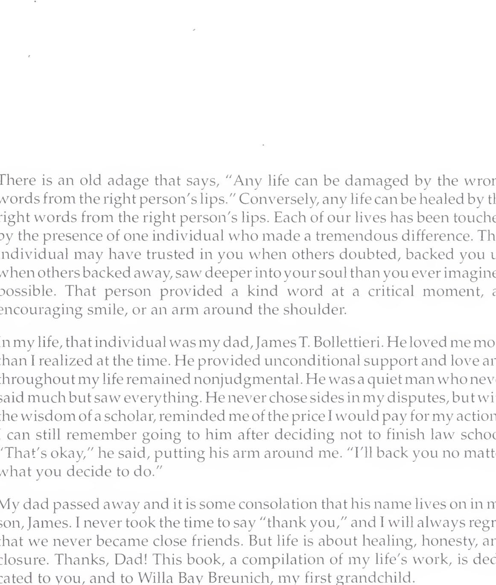
• Đây là giai đoạn chuẩn bị cuối cùng về kỹ thuật, chiến thuật, thể lực và tinh thần trước khi thi đấu. • Trong giai đoạn này nhấn mạnh vào chiến thuật và chiến lược. • Học sinh nên xác định và hiểu phong cách chơi của mình • Học sinh nên cải thiện việc lựa chọn và kết hợp cú đánh và học hỏi. để chơi các điểm theo số điểm.
• Các trận đấu trở nên quan trọng trong việc đánh giá điểm mạnh và điểm yếu về thành tích. Đánh giá giúp chúng tôi tối ưu hóa quá trình chuẩn bị liên tục của học sinh. • Điều quan trọng là phải phù hợp với phong cách chơi của học sinh. Các bài tập phải cụ thể. Học sinh nên đánh mọi quả bóng có mục đích. • Chương trình của chúng tôi được thiết kế để tái tạo các điều kiện cạnh tranh nhằm tối đa hóa khả năng thích ứng và hiệu suất cụ thể.
• Trong giai đoạn này, học sinh học cách thể hiện dưới áp lực vì họ phải đối mặt với mọi điều kiện cạnh tranh trong quá trình đào tạo. Trong quá trình thi đấu, học sinh được đưa ra các tình huống khác nhau. Ví dụ: họ chơi các trận đấu bắt đầu với tỷ số 3-3, love-15, họ chỉ chơi tiebreak ba trong năm set với kết quả được tính để xếp hạng, họ chơi bằng vợt của người khác, họ dừng lại trong 15 hoặc 30 phút để mô phỏng sự chậm trễ của mưa, v.v.
• Trong giai đoạn này học sinh cải thiện động tác bùng nổ ở bước đầu tiên bằng các bài tập kết hợp giữa sức mạnh và tốc độ. • Thứ Ba và thứ Năm hàng tuần, chúng tôi làm việc về plyometrics dành riêng cho quần vợt. Những cuộc tập trận này làm cho học sinh mạnh mẽ hơn và nhanh hơn. Tổng quan mẫu hàng tuần trước khi thi đấu Quần vợt — trên sân • Nhịp độ tuần nhanh hơn Khối lượng 80 phần trăm — luân chuyển 75 phút.
• Tuần tập luyện/chơi tính điểm và hiệp đấu trước khi thi đấu. Nhấn mạnh vào việc thay Đổi hướng bóng đi, phong cách chơi. • Phạm vi nhịp tim tổng thể = 130 đến 150 bpm. • Chạy bộ phục hồi và Giao bóng / Cú giao bóng 5 giờ-5 giờ 30 chiều. mỗi ngày. Trọng tâm luyện tập - bóng trực tiếp và được đưa bóng Trọng tâm thi đấu trận đấu • Chơi cố định - Thứ Hai và Thứ Năm • Kết hợp 2 đấu 1 • Điểm - giao bóng và vô-lê /kiểu • Tiếp cận/bóng vô-lê/chuyền/chơi trên cao • Trò chơi 11 điểm - nhiệm vụ cụ thể • Giao bóng và trả lại Luân phiên hàng ngày - 75/60 phút • 1:30-2:45 chiều
• 2:45-4:00 chiều • 4:00-5:00 chiều (60 phút) Công việc hàng ngày • 5:00-5:30 chiều — Tất cả các nhóm chạy bộ hoặc giao bóng • Chạy bộ phục hồi 20 phút — Nhịp tim tối đa 70 phần trăm (130 đến 140 bpm) Giai đoạn thi đấu — Huấn luyện để giành chiến thắng • Mục tiêu của giai đoạn này là đạt đến mức độ chơi tối đa. • Trong giai đoạn 'Huấn luyện để giành chiến thắng' sử dụng nhiều giai đoạn, khoảng 80 đến 85 phần trăm quá trình huấn luyện là dành cho thể thao hoặc sự kiện cụ thể.
• Mặc dù học viên vẫn có thể cải thiện về kỹ thuật và thể lực, nhưng phần lớn sự tiến bộ sẽ đến từ kinh nghiệm, hình mẫu từ những tay vợt khác, cải tiến về chiến thuật và cải thiện năng lực tinh thần. • Trong giai đoạn này, người chơi sẽ mở rộng kiến thức về những gì phù hợp với họ. Các ví dụ bao gồm khởi động, hạ nhiệt, chiến lược, hydrat hóa và dinh dưỡng cũng như phục hồi và tái tạo cho trận đấu tiếp theo.
• Trong giai đoạn "Huấn luyện để giành chiến thắng", các thành phần chính của tập luyện và hiệu suất bao gồm duy trì năng lực thể chất hiện có, độ thon và đỉnh cao, Sự tập trung, phục hồi và tái tạo. • Yếu tố tâm lý trong tập luyện và thi đấu cũng được ưu tiên. • Khi học sinh đạt đến giới hạn về thể lực và kỹ thuật, các kỹ năng và năng lực tâm lý đóng vai trò chủ đạo trong thành tích học tập. Nhưng nếu học trò chưa phát triển toàn diện về thể lực, kỹ thuật, chiến thuật thì tâm lý không thể làm nên nhà vô địch.
• Trong giai đoạn này, học sinh chơi các trận đấu và giải đấu. Người chơi nên tập trung vào chiến lược, chiến thuật và kỷ luật tinh thần. • Trong quá trình điều hòa, chúng tôi tập trung vào tốc độ, sự nhanh nhẹn cũng như khả năng phục hồi và tái tạo. • Học sinh và huấn luyện viên nên đánh giá hiệu suất để giúp thiết kế các mục tiêu ngắn hạn và dài hạn. • Để tối đa hóa hiệu quả tập luyện và hiệu suất, các tay vợt và huấn luyện viên phải có khả năng nhìn được bức tranh toàn cảnh.
Mẫu tổng quan về giải đấu hàng tuần Quần vợt — trên sân • 5 ngày thi đấu — Grand Prix #1. • Vòng Robin Ngày 1 và 2 để quyết định hạt giống cho giải đấu loại trực tiếp. • Giải đôi thay thế cho giải đơn an ủi. Đăng nhập vào thứ Tư, vòng đầu tiên vào thứ Năm. • 3 trên 5 — Không tính điểm quảng cáo, tỷ số hòa là 4-4. • Phong cách chơi.
• Kế hoạch trò chơi — Chiến lược và chiến thuật theo phong cách chơi. • Nhấn mạnh — Khởi động, tổ chức, đúng giờ và chuẩn bị. • Chơi để thắng. Giai đoạn nghỉ ngơi • Để tránh việc tập luyện chậm chạp và giảm hiệu suất, hoặc khi tập luyện quá sức và căng thẳng, thời gian nghỉ ngơi có thể được sắp xếp để chống lại mức độ mệt mỏi không mong muốn. Nhu cầu cá nhân của người chơi sẽ quyết định độ dài và trình tự của chu kỳ này.
• Chu kỳ nghỉ ngơi cho phép học sinh phục hồi sau những căng thẳng về thể chất và tinh thần khi tập luyện. • Nghỉ ngơi có thể có hai loại - nghỉ ngơi hoàn toàn và nghỉ ngơi tích cực. Cả hai đều quan trọng trong việc đạt được mức hiệu suất tối đa. • Mức độ làm việc đến nghỉ ngơi phải được xác định theo nhịp điệu tự nhiên của cơ thể và theo các mô hình rõ ràng khi học sinh đang tiến bộ hoặc trở nên trì trệ ở cùng một mức độ.
• Trong thời gian nghỉ ngơi tích cực, học sinh làm việc dễ dàng trong 30 đến 90 phút mà không cần tập. Chúng tôi cũng khuyên bạn nên tập luyện chéo với các môn thể thao khác mà chúng tôi thúc đẩy sự cạnh tranh trong bầu không khí thoải mái hơn. Trong quá trình tập luyện chéo, cơ thể hoạt động nhưng tâm trí được nghỉ ngơi. • Trong thời gian nghỉ ngơi hoàn toàn, học sinh không luyện tập. Ở đây chúng tôi khuyên học sinh nên đi bộ dài.
• Trước khi thi đấu, chúng tôi giảm dần cường độ tập luyện, để cơ thể có thời gian hồi phục và tái tạo. Thói quen này, được gọi là giảm dần, cho phép học sinh nỗ lực hết mình trong suốt cuộc thi. Mẫu tổng quan về cuộc thi hàng tuần Quần vợt — trên sân • Tuần nghỉ ngơi tích cực — Tập luyện nhẹ với cường độ và khối lượng rất thấp.
• Đào tạo không chuyên về quần vợt. • Hoạt động nghỉ ngơi và tái tạo. • Xem giải đấu mời của Eddie Herr tại học viện. Tuyển sinh toàn thời gian tại Học viện quần vợt Bollettieri Những sinh viên may mắn được đến thăm Học viện toàn thời gian phải gửi đơn đăng ký đến văn phòng Tuyển sinh. Chúng tôi cũng khuyến khích một chuyến thăm cá nhân tới học viện và ba trường học thuật dành cho những người tham gia của chúng tôi. Nếu không thể đến thăm cá nhân, giám đốc tuyển sinh sẽ tiến hành một cuộc phỏng vấn qua điện thoại với người nộp đơn để xác định xem người đó có phải là ứng viên phù hợp với chương trình hay không.
Khi tất cả các biểu mẫu cần thiết đã được hoàn thành và mọi thứ đều ổn thỏa, chúng tôi sẽ gửi thư chấp nhận cho người nộp đơn và nhận tiền đặt cọc. Học kỳ toàn thời gian của chúng tôi thường bắt đầu vào cuối tháng 8; tuy nhiên, chúng tôi nhận học sinh vào bất kỳ thời điểm nào trong năm học. Cuộc sống ở Học viện Khi đến học viện, tất cả học sinh sẽ đăng ký với bộ phận đặt chỗ của chúng tôi. Chúng tôi sắp xếp một định hướng. Họ tham quan học viện và gặp gỡ các giám đốc thể thao, y tá và giám đốc giao bóng sinh viên, tất cả đều sẽ tham gia vào quá trình đào tạo và cuộc sống của họ tại học viện.
Phần lớn người chơi của chúng tôi đến trường vào buổi sáng và tham gia một trong sáu chương trình thể thao của chúng tôi vào buổi chiều và sáng thứ Bảy. Trường học từ 8 giờ sáng đến 12 giờ 30 trưa. Sau đó học sinh trở lại học viện để ăn trưa. Các chương trình thể thao bắt đầu từ 1:30 chiều. đến 5 giờ 30 chiều Những học sinh không đi học có thể tham gia chương trình thể thao vào buổi sáng. Mức giá dựa trên chương trình học sinh tham gia cũng như việc học sinh nội trú hay không nội trú. Học phí có thể được đóng làm một hoặc hai đợt; tuy nhiên, giá sẽ thấp hơn nếu thanh toán toàn bộ phí cùng một lúc.
Sau bữa tối, tất cả người chơi đang theo học tại trường sẽ đến phòng học. Chúng tôi có một điều phối viên làm việc với các trường học để đảm bảo rằng các tay vợt của chúng tôi đang học tập tốt. Những học sinh cần giúp đỡ thêm có thể ở lại trường cho đến 2 giờ 30 chiều thì xe buýt sẽ đón các em. Có gia sư kèm phụ phí cho những sinh viên cần trợ giúp thêm trong học tập.
Nhiều tay vợt không nội trú của chúng tôi đến trường vào buổi sáng, đến học viện để ăn trưa và tham gia chương trình thể thao buổi chiều, sau đó trở về nhà ăn tối và đi ngủ. Họ cũng được chào đón tham gia vào các hoạt động ngoại khóa của chúng tôi. Mặc dù chúng tôi có một số trường hợp ngoại lệ, nhưng chúng tôi thường yêu cầu những người chơi đã học xong trung học và trên 18 tuổi phải sống ngoài khuôn viên trường.
Vào buổi tối, học sinh phải dọn dẹp phòng học trước khi đi ngủ, giữ gìn chỗ ở gọn gàng, dọn dẹp giường ngủ, v.v. Một nhân viên dọn phòng thực hiện công việc dọn dẹp chính. Chúng tôi cung cấp bữa ăn nhẹ buổi tối tại căng tin cho tất cả học sinh nội trú. Đồ giặt được thu gom vào những thời điểm nhất định mỗi tuần cho học sinh nội trú của chúng tôi và trả lại vào một thời điểm nhất định.
Mỗi ký túc xá có một người giám sát chăm sóc những người tham gia nội trú. Những nhân viên này sẵn sàng hỗ trợ những người tham gia của chúng tôi nếu có nhu cầu. Họ có thể giúp đỡ những học sinh nội trú nhỏ tuổi cùng nhau giặt đồ và vượt qua nỗi nhớ nhà. Họ giải quyết các vấn đề về bạn cùng phòng và quản lý mọi thứ về cuộc sống trong khuôn viên trường. Nhân viên ký túc xá cũng đảm bảo rằng sinh viên tuân thủ mọi nội quy và báo cáo với giám đốc giao bóng sinh viên khi có vấn đề phát sinh.
Chúng tôi chỉ định phòng cho các tay vợt nội trú của mình theo độ tuổi, trường học và môn thể thao. Nếu tình huống bạn cùng phòng không hiệu quả, chúng tôi sẵn sàng thay đổi phòng để phù hợp với tính cách của người chơi. Người chơi quay lại có thể yêu cầu một người bạn cùng phòng cụ thể. Chúng tôi lên kế hoạch cho các hoạt động bổ sung cho những người tham gia, chẳng hạn như các chuyến đi đến bãi biển, trung tâm mua sắm địa phương, công viên giải trí, phim ảnh và nhiều hoạt động khác. Các buổi khiêu vũ được tổ chức định kỳ tại học viện và chúng tôi cũng cung cấp các hoạt động khác (ví dụ: câu cá biển sâu, mô tô nước). Bộ phận vận chuyển của chúng tôi sẵn sàng đưa người chơi đến và đi từ các hoạt động đã lên kế hoạch, các cuộc hẹn với bác sĩ, v.v.
Mặc dù chúng tôi không cho phép những người tham gia rời khỏi khuôn viên học viện mà không có sự giám sát của nhân viên hoặc người được phụ huynh hoặc người giám hộ chỉ định, học sinh có thể sắp xếp để được đưa đến một nhóm tại một nhà hàng để ăn tối. Họ phải ở đó để đón vào một thời điểm được chỉ định. Mặc dù chúng tôi mở cửa 365 ngày một năm nhưng thời gian nghỉ của học sinh cũng trùng với thời gian nghỉ của các trường học. Không ai bắt buộc phải rời đi trong kỳ nghỉ lễ, nghỉ xuân hoặc nghỉ đông và chúng tôi cung cấp chương trình thể thao với một khoản phụ phí cho những người còn lại ở học viện.
Mỗi học sinh đều có một tài khoản ngân hàng do học viện nắm giữ và duy trì. Cha mẹ hoặc người giám hộ có thể bổ sung tài khoản bằng séc, thẻ tín dụng hoặc chuyển khoản quốc tế. Ngân hàng của chúng tôi mở cửa hàng ngày vào những thời điểm nhất định. Chúng tôi cung cấp bản sao tài khoản cá nhân của trẻ bất kỳ lúc nào cho phụ huynh hoặc người giám hộ theo yêu cầu.
Rào cản ngôn ngữ đôi khi gây khó khăn vì chúng tôi tuyển sinh học viên từ khắp nơi trên thế giới. Vì giám đốc tuyển sinh nói được tiếng Anh, tiếng Tây Ban Nha và một ít tiếng Pháp nên chúng tôi có thể vượt qua một số rào cản đó. Qua kinh nghiệm, chúng tôi cũng đã học được cách đối phó với các ngôn ngữ khác. Đôi khi chúng tôi cần một thông dịch viên và chúng tôi tìm kiếm cha mẹ của các tay vợt đang ở tại địa phương.
Bởi vì phần lớn người chơi theo học tại các trường học thuật, chúng tôi nỗ lực duy trì mối quan hệ hợp tác tốt đẹp với Trường Pendleton, Học viện Bradenton và Trường St. Stephen. Giám đốc tuyển sinh đóng vai trò là người liên lạc giữa NBTA và các trường. Để giữ mối quan hệ thân thiện, chúng ta hành động kịp thời nếu có vấn đề phát sinh.
Các tay vợt quốc tế tham dự chương trình quần vợt cả ngày của chúng tôi phải tham dự theo thị thực du lịch. Người chơi quốc tế đang theo học tại các trường học thuật phải nộp đơn riêng vào trường học thuật mà họ lựa chọn. Học viện Bradenton cung cấp chương trình ESOL (Tiếng Anh cho người nói các ngôn ngữ khác) để giúp người chơi quốc tế có thể học tập tại một trường học ở Mỹ. Sau khi học sinh được nhận vào trường và nộp học phí học kỳ đầu tiên, trường sẽ cấp thị thực 1-20. Sinh viên phải xuất trình giấy tờ này tại đại sứ quán Mỹ ở nước sở tại để hộ chiếu được đóng dấu thị thực du học. Khi học sinh đến NBTA, tất cả hộ chiếu và vé máy bay sẽ được nộp tại Giao bóng Khách hàng để đảm bảo chúng được lưu giữ an toàn. Đại lý du lịch nội bộ của chúng tôi sẵn sàng hỗ trợ đặt chỗ du lịch cho sinh viên của chúng tôi.
Chúng tôi có những gia đình cần hỗ trợ tài chính nộp đơn để gửi những đứa con tài năng của họ đến học viện. Mặc dù chúng tôi thường không có học bổng nhưng chúng tôi xem xét từng trường hợp riêng lẻ. Chúng tôi trả lời từng yêu cầu hỗ trợ tài chính nhưng thường đề nghị các gia đình tìm kiếm một nhà tài trợ địa phương. Chúng tôi cung cấp cho tất cả các sinh viên tương lai một đơn đăng ký tham gia chương trình của chúng tôi và khuyến khích họ hoàn thành đơn đăng ký rồi gửi lại vào hồ sơ của chúng tôi nếu tình hình của họ thay đổi. IMG chuẩn bị danh sách học bổng hàng năm cho những người chơi mà họ muốn tài trợ. NBTA cũng duy trì một danh sách những người nhận học bổng.
Các khoản giảm giá được phân phối cho các sinh viên quay trở lại của chúng tôi theo số năm theo học (tức là một năm, 5 phần trăm; hai năm, 10 phần trăm; ba năm, 15 phần trăm; và bốn năm, 20 phần trăm). Giám đốc tuyển sinh chịu trách nhiệm về mọi biện pháp kỷ luật đối với những người tham gia toàn thời gian của chúng tôi. Cuộc thảo luận này bao gồm giám đốc sinh viên, nhân viên ký túc xá và giám đốc thể thao hoặc huấn luyện viên nếu cần thiết. Sổ tay sinh viên, được cung cấp cho tất cả người chơi tham gia chương trình toàn thời gian của chúng tôi, nêu rõ các quy tắc và quy định.
Tất cả phụ huynh và người tham gia phải ký và gửi lại biểu mẫu chính sách về ma túy và rượu của chúng tôi, đây là một phần trong gói đăng ký của chúng tôi. Chúng tôi sẽ không tha thứ cho việc sử dụng bất kỳ chất bị kiểm soát nào. Việc sử dụng các chất bị kiểm soát sẽ dẫn đến việc bị đuổi khỏi học viện ngay lập tức. Trợ giúp Đặc biệt Bất kỳ học sinh nào gặp vấn đề với cú đánh của mình hoặc cần thêm một chút thời gian chơi quần vợt sẽ nhận được trợ giúp đặc biệt cho nhu cầu cụ thể. Tay vợt hoặc huấn luyện viên của tay vợt có thể yêu cầu hỗ trợ. Học viện cung cấp trợ giúp đặc biệt hàng tuần vào các buổi sáng Thứ Bảy, từ 7 giờ sáng đến 8 giờ 30 sáng. Ngoài ra, những sinh viên đang thực hiện những thay đổi lớn về kỹ thuật của mình sẽ được trợ giúp đặc biệt trong tuần. Học viên được huấn luyện trực tiếp trong 30 phút, tập trung vào việc cải thiện chỉ một khía cạnh trong trò chơi của mình, chẳng hạn như cú Cú thuận tay (forehand) (forehand) hoặc cách đánh điểm. Sau buổi học, học sinh viết vào vở cá nhân những điểm chính của bài học.
Một lần nữa sau khi xem xét chương trình 2000-2001, Nick và Gabriel Jaramillo (Giám đốc Chương trình) sẽ bổ sung một chương trình mới hoàn chỉnh cho mùa thu năm 2001. Ba trong số các huấn luyện viên lâu năm và kinh nghiệm của học viện sẽ làm việc tại các sân 1, 2 và 3. Họ sẽ gặp các nhóm cá nhân và huấn luyện viên của họ hàng ngày làm việc về kỹ thuật và các bài tập. Tất cả các hoạt động của họ sẽ được quay video trong suốt năm học và mỗi học sinh sẽ nhận được một bản sao vào cuối năm.
Cùng lúc ba sân này đang được tiến hành, huấn luyện viên trưởng của mỗi sân sẽ chọn những học sinh gặp khó khăn và cử họ đến sân vận động để nhận sự giúp đỡ từ Gabriel và Nick. Lưu ý: Sân đấu này cũng sẽ được quay video và sau đó được giám đốc của ba sân đấu và huấn luyện viên hàng ngày của học sinh xem xét. Hệ thống này cho phép toàn đội, bao gồm cả huấn luyện viên và học sinh, biết chính xác những gì đã diễn ra.
Học sinh bị thương Bất kỳ học sinh nào cảm thấy bị thương hoặc bị bệnh đều có trách nhiệm đến gặp y tá. Y tá sẽ đánh giá học sinh và đề xuất phương án hành động. Không học sinh nào được phép trở lại phòng của mình trong thời gian thực tập. Nếu học viên bị thương nhẹ có thể trở lại tập luyện ngay lập tức. Đối với thương tích hoặc bệnh tật nghiêm trọng hơn, học sinh có thể được hướng dẫn theo dõi buổi tập hoặc ở lại phòng y tá. Việc đến văn phòng bác sĩ sẽ diễn ra nếu y tá cảm thấy cần thiết hoặc nếu phụ huynh yêu cầu. Sự phục hồi của mỗi học sinh được đánh giá lại mỗi ngày và một hướng hành động mới được xác định dựa trên quá trình phục hồi.
Nỗi nhớ nhà Một học viên có thể cảm thấy nhớ nhà vào bất kỳ thời điểm nào trong quá trình đào tạo. Khi chúng tôi nhận ra nỗi nhớ nhà, chúng tôi cung cấp tư vấn trực tiếp để xác định các vấn đề mà học sinh đang giải quyết. Nếu cần thiết, chúng tôi liên hệ với phụ huynh để giúp đỡ học sinh vượt qua thời gian khó khăn này. Giải đấu Các giải đấu được tổ chức quanh năm ở các khu vực khác nhau của tiểu bang, quốc gia hoặc thế giới. Một giải đấu có thể bao gồm cả hai giới ở mọi lứa tuổi hoặc có thể hạn chế hơn. Chúng tôi đăng các tờ đăng ký cho các giải đấu địa phương và bao gồm thông tin về ngày và chi phí của chuyến đi (phí tham dự, phương tiện đi lại, đồ ăn và khách sạn nếu cần thiết). Các giải đấu nằm ngoài khu vực địa phương sẽ có chi phí cao hơn và cần nhiều kế hoạch hơn. Ít nhất một huấn luyện viên đi cùng học sinh trong mỗi giải đấu. Mỗi giải đấu cung cấp một hình thức thi đấu khác nhau, vì vậy học sinh có thể tham dự các giải đấu phù hợp với phong cách chơi của mình.
Bài học video Bất kỳ học sinh nào cũng có thể yêu cầu một bài học video. Với một khoản phụ phí, học viên sẽ có một buổi học kéo dài một giờ với huấn luyện viên riêng. Bài học có thể tập trung vào nhu cầu của học viên hoặc bao quát tất cả các nét. Huấn luyện viên và học sinh sẽ xem lại băng để thảo luận về điểm mạnh và điểm yếu. Video này dành cho học sinh lưu giữ và xem lại.
Học viện đã giới thiệu một phần bổ sung cho hệ thống giảng dạy của chúng tôi. Các bài học riêng cá nhân có video cùng lúc (điều này thường được thực hiện bởi huấn luyện viên làm việc với học sinh đó hàng ngày). Lưu ý: Quần vợt ngắn, trại hè cũng có thể yêu cầu loại bài học này. Bài học với Nick Bollettieri Bất kỳ học sinh nào cũng có thể yêu cầu một bài học với Nick với một khoản phí bổ sung. Nick sẽ làm việc với học sinh về các khía cạnh chung trong trò chơi của học sinh hoặc tập trung vào các chi tiết cụ thể. Bài học với Nick sẽ đưa ra đánh giá về trò chơi của học sinh, cung cấp cái nhìn sâu sắc về những điểm mà học sinh có thể cải thiện và cho biết học sinh xếp hạng ở đâu so với những người chơi khác. Sân đấu của Nick có thiết lập Phân tích video hoàn chỉnh để ghi lại mọi khía cạnh của bài học. Ông sử dụng hệ thống này để cung cấp phương tiện đánh giá cho học sinh. Mỗi bản ghi được nhân đôi.
Chúng tôi giữ một bản trong hồ sơ và gửi bản còn lại về nhà cho phụ huynh. Kỳ nghỉ và Trại hè* Thế giới Walt Disney và Học viện quần vợt Bollettieri có điểm gì chung? Một con chuột có đôi tai to? Một con vịt biết nói? Lọ Lem chờ đợi tiếng chuông nửa đêm? Không có điều nào ở trên. WDW và NBTAhave đã thực hiện triết lý của mình một cách đơn giản và trực tiếp: "Hãy để khách hàng tận hưởng trải nghiệm giữa tưởng tượng và đời thực tại một điểm dừng." NBTA là một trải nghiệm dành cho bất kỳ vận động viên trẻ hoặc có tâm hồn trẻ trung nào.
Đây là một cơ sở đào tạo thể thao cho phép mỗi khách phát triển với tư cách là một vận động viên và một con người. Tại NBTA, chúng tôi đã trải qua một số khó khăn ngày càng tăng và đã học được bài học từ mỗi vấn đề đó. Nhiều năm trước, chúng tôi đã cử phần lớn trong số 30 huấn luyện viên quần vợt của mình đến điều hành các trại hè vệ tinh trên khắp thế giới. Mặc dù 8 đến 12 trại hè này đã mang lại sự bão hòa lành mạnh cho thị trường, nhưng khía cạnh "tàu mẹ" trong trải nghiệm NBTA lại bị ảnh hưởng. Giờ đây, chúng tôi cam kết duy trì sự nhất quán về con người, địa điểm và mọi thứ cho những vị khách lưu trú ngắn ngày hoặc hàng tuần để họ có thể trải nghiệm cuộc sống của một vận động viên chuyên nghiệp khi đến thăm NBTA.
*Phần này của Chip Hart và Ken Merritt. Công việc vui vẻ Chúng tôi có một số nhân vật có thật làm huấn luyện viên của chương trình quần vợt NBTA. Những huấn luyện viên chuyên nghiệp này có thể thực hiện hoặc phá vỡ chuyến thăm của vị khách ngắn hạn. Các huấn luyện viên tại NBTA rất cứng rắn nhưng họ mang lại bầu không khí thuận lợi cho việc học tập và đào tạo. Các huấn luyện viên của NBTA đối xử với mọi học sinh, già hay trẻ, như một vận động viên chuyên nghiệp tiềm năng. Nhiều cuộc nói chuyện nhỏ diễn ra giữa huấn luyện viên và khách hàng-học sinh. Nhưng tất cả những cuộc nói chuyện và la hét đều lành mạnh và vui vẻ, yêu thương, được thực hiện để mang đến một bầu không khí dành riêng cho giáo dục và vui chơi.
Phong cách huấn luyện cứng rắn này, kết hợp với sự dịu dàng và lòng trắc ẩn, có thể được nhìn thấy và cảm nhận hàng ngày. Điển hình, khi các khách mời bắt đầu chương trình vào sáng thứ Hai, họ rất lo lắng và đôi khi sợ hãi nên các huấn luyện viên phải dành nhiều thời gian để làm quen với họ. Nhưng đến sáng thứ Tư, hãy chú ý.
Đây là buổi sáng khó khăn nhất trong tuần. Sau khi các huấn luyện viên của NBTA "bắt họ" vào sáng thứ Tư, chúng tôi cung cấp một chuyến đi biển tùy chọn vào chiều hôm đó. Tôi muốn được khám phá Trải nghiệm tại NBTA sẽ không trọn vẹn nếu không có người đứng đầu, Nick Bollettieri. Khi ở nơi cư trú, Nick có mặt tại tòa hàng ngày để thực hiện phép thuật của mình, một mắt theo dõi học sinh và một mắt theo dõi mọi thứ khác.
Đôi khi anh ấy có một tay vợt chuyên nghiệp hàng đầu trên sân của mình, giống như một trong những chị em nhà Williams. Tommy Haas, hoặc Max Mirnyi. Những lần khác, anh ta lẻn ra phía sau sân để xem một đứa trẻ 11 tuổi, mới đến thăm được một tuần, thi đấu một trận. Anh ấy có khả năng khiến bất cứ ai chơi tốt hơn chỉ bằng cách ở bên cạnh. Tôi thực sự cảm thấy rằng mọi vị khách tại NBTA đều muốn được phát hiện để trở thành tay vợt xuất sắc tiếp theo của Nick Bollettieri. Mỗi người đều muốn nghe Nick nói: "Hãy để tôi làm huấn luyện viên cho bạn. Tôi sẽ đưa bạn lên một tầm cao mới." Tuần điển hình Một sinh viên hè điển hình hoặc vị khách hàng tuần đến vào Chủ nhật, có phần hồi hộp và lo lắng. Sinh viên đăng ký, mở tài khoản ngân hàng, chụp ảnh giấy tờ tùy thân và gặp gỡ tất cả bạn cùng phòng của mình. Sau đó, hầu hết các vị khách sẽ khám phá cơ sở đào tạo thể thao rộng 190 mẫu Anh của chúng tôi.
Một cuộc họp định hướng là bắt buộc đối với mỗi người mới đến lúc 7 giờ tối. mỗi tối chủ nhật. Buổi tụ tập này mang đến cho khách mời cơ hội tìm hiểu những gì sẽ xảy ra trong tuần đó, từ các nội quy của khuôn viên trường cho đến bài phát biểu "Đừng quên kem chống nắng và chai nước". Sáng thứ Hai: Tối qua có ai ngủ thật không? Dây thần kinh có thể được cắt bằng dao. Cuộc đánh giá sắp bắt đầu. Mọi người đều im lặng và chăm chú. Đây là lần cuối cùng các huấn luyện viên nhìn thấy họ như thế này trong cả tuần. Các huấn luyện viên di chuyển các tay vợt xung quanh sân cho đến khi tất cả đều khá phù hợp với những tay vợt có khả năng ngang nhau. Đôi khi có vẻ hơi khó hiểu hoặc thậm chí bực bội khi thấy một người chơi bắt đầu ở sân trên cùng chỉ để được đưa từ sân này sang sân khác cho đến khi người chơi tìm được đồng nghiệp của mình.
Trước khi bắt đầu đánh giá, có một chút lo lắng giữa các huấn luyện viên ở một bên hàng rào và các tay vợt ở bên kia hàng rào. Cuối cùng, một trong những huấn luyện viên phá vỡ sự căng thẳng bằng lời chào "Chào buổi sáng". Điều đó vẫn làm tôi ngạc nhiên, sau ngần ấy năm, làm thế nào các huấn luyện viên ở NBTA có thể phân biệt các tay vợt thực sự với những tay vợt muốn trở thành tay vợt chỉ bằng cách nhìn vào họ, thậm chí trước khi họ đánh một quả bóng. Sau buổi đánh giá, các khách mời hàng tuần có cơ hội gặp huấn luyện viên trưởng của mình trong một cuộc họp định hướng nhóm. Họ trao đổi tên, quê quán và thời gian lưu trú. Sau đó công việc bắt đầu.
Khi chuông reo lúc 8 giờ sáng, mỗi huấn luyện viên bắt đầu công việc hàng ngày là biến các vị khách thành những tay vợt giỏi nhất mà họ có thể trở thành vào thứ Sáu. Các buổi sáng thứ Hai dành riêng cho các kỹ thuật của Cú thuận tay (forehand) Bollettieri Killer. Đồng thời, các học viên đang dần quen với cách huấn luyện viên của chúng tôi đưa bóng và ý nghĩa của biểu cảm của họ, những cụm từ như "Thấp đến cao bắt vợt ở phía trên" và "Tăng tốc đầu vợt". Chiều thứ Hai: Du khách thử nghiệm những kiến thức mới tìm được bằng các trận đấu với các bạn trong nhóm. Từ quan điểm cường độ, thứ Hai được chúng ta gọi là những ngày nặng vừa phải.
Thứ Ba: Sáng Thứ Ba được dành để bao quát các kỹ thuật của Bollistic Backhand một tay, hai tay và hai tay bằng cách thực hiện theo bằng một tay. Cường độ giảm đi một chút so với thứ Hai đơn giản vì chúng tôi biết khách của mình đang mệt mỏi và hơi đau nhức do làm việc ngày hôm trước. Sáng thứ Tư: Sáng thứ Tư được dành để phát triển Sonic Serve và Back-atcha Back.
Chiều thứ Tư: NBTA dành tặng chuyến đi biển cho những ai muốn đi. Đây là một chuyến đi tùy chọn, nhưng hơn 80 phần trăm học sinh cắm trại sẽ tham gia. Sáng thứ Năm: Thời gian này được dành để cải thiện kỹ năng bắt vô-lê, đánh đầu và các trò chơi chuyển tiếp chung. Đợi một chút. Mọi người đều nói rằng Bollettieri không giỏi thực hiện những cú vô-lê. Nhưng sự thật là Nick và các huấn luyện viên đã dành hàng giờ để cải thiện lối chơi trên lưới của các vị khách.
Chiều thứ Năm: Đây là nơi du khách có cơ hội thi đấu. Người chơi đối đầu với nhóm ngay trên hoặc dưới nhóm của họ. Tinh thần đồng đội và tình bạn thật phấn khởi. Áp lực là không thể chịu nổi, nhưng bầu không khí thật tuyệt vời. Và họ nói quần vợt không phải là môn thể thao đồng đội. Thứ sáu: Tất cả khách của chúng tôi tham gia vào các trò chơi và diễn tập trước khi thi đấu, một truyền thống hàng tuần đã bắt đầu từ nhiều năm trước. Âm nhạc bùng nổ và người chơi đang lặn, tất cả đều diễn ra trong các trò chơi dành riêng cho trận đấu cho phép mọi người có cơ hội được làm việc vào sáng thứ Bảy: Bây giờ là lúc để ôn lại. Mỗi học sinh có một cơ hội cuối cùng để hoàn thành một cú đánh cụ thể trước khi về nhà để giành chức vô địch câu lạc bộ của mình.
Đỉnh điểm trong tuần là có Nick ở trọ. Anh ấy gặp nhóm hai lần, trong đó buổi đầu tiên là để tạo động lực và buổi thứ hai là trả lời các câu hỏi của học sinh. Nick cũng làm như vậy với chương trình dành cho người lớn. Ngoài sân Sân tennis là lý do đầu tiên du khách đến với NBTA. Tất cả họ đều muốn trở nên giỏi nhất có thể trong thời gian ngắn. Nhưng tôi tin rằng thời gian ngoài sân là lý do khiến họ tiếp tục quay trở lại.
Luôn ghi nhớ kỳ nghỉ hoặc kỳ nghỉ hè và biến nó thành một phần quan trọng của trải nghiệm là điều mang lại và lưu giữ những kỷ niệm. Sau khi Kết thúc cú đánh chương trình thể thao trong ngày, các em có thể hành động như những đứa trẻ ở trại hè. Hãy để tôi chuẩn bị bối cảnh cho bạn: khoảng 400 chàng trai và cô gái, từ hơn 40 quốc gia, đi vòng quanh hồ bơi và khu vực sân trong trong bữa tối để cố gắng quyết định xem họ sẽ làm gì vào tối hôm đó và họ sẽ làm điều đó với ai. Họ có rất nhiều sự lựa chọn với từ bảy đến chín chuyến xe buýt đi xem phim, trung tâm mua sắm, khu trò chơi điện tử, đường đua xe go-cart, cửa hàng, bảo tàng, v.v. Hoặc họ có thể ở lại khuôn viên trường và tham gia vào các hoạt động như tiệc bể bơi, biểu diễn tài năng, giao lưu âm nhạc, lớp học nghệ thuật, giải đấu bóng bàn hoặc giải đấu bi-a.
Một Cuộc Sống Cân Bằng Để đạt được kết quả tối đa từ nỗ lực của bạn, bất kể bạn đang đảm nhận nhiệm vụ gì, bạn phải tập trung. Bạn không thể bước giữa ranh giới và hy vọng cố gắng hết sức khi những suy nghĩ và mối quan tâm của bạn ở nơi khác. Không ai hiểu điều này rõ hơn Nick. Anh ta có thể quan sát một học sinh bước lên sân từ khoảng cách 20 mét và biết ngay liệu học sinh đó có tập trung và sẵn sàng cống hiến hết mình hay không. Anh ta có thể nhận biết bằng ngôn ngữ cơ thể, qua cách vận động viên thể hiện bản thân, liệu học sinh có tập trung và sẵn sàng tham gia hay không hoặc liệu học sinh có điều gì cản trở sự cam kết hoàn toàn hay không. Bởi vì anh ấy hiểu rất rõ điều này nên Nick nhấn mạnh vào cái mà chúng tôi gọi là chương trình Đời sống Sinh viên. Sự hiểu biết rõ ràng là học sinh phải vui vẻ và không bị phân tâm để thể hiện hết khả năng của mình.
Nếu không hài lòng thì họ sẽ không tập trung hay cam kết trước tòa. Nhân viên sẽ làm việc với học sinh ngoài sân đấu để giúp các em đạt đến mức có thể sẵn sàng thi đấu. Cuộc sống của vận động viên trẻ của chúng ta phải có sự cân bằng - lượng giải trí và tương tác xã hội phù hợp. Và tất nhiên, việc học tập của sinh viên phải được kiểm soát. Nếu không có sự cân bằng hợp lý thì không học sinh nào có thể đạt thành tích cao nhất trong trò chơi của mình. Không có sự cân bằng có nghĩa là không có hạnh phúc và không có thành công! Thái độ là từ khóa quyết định thành công hay thất bại.
Chương trình Đời sống Sinh viên Người điều phối hoạt động là một phần thiết yếu trong sự phát triển trí tuệ và tinh thần của toàn thể sinh viên tại Học viện Quần vợt Bollettieri. Chúng tôi có sáu môn thể thao và hơn 400 sinh viên từ 45 quốc gia sống trong một cộng đồng tập trung và có tổ chức. Cố gắng làm cho tất cả học sinh cảm thấy như họ là một phần của một gia đình, gia đình Bollettieri, là triết lý cơ bản của ca đêm. Sự khác biệt giữa chương trình của chúng tôi và các chương trình tương tự trong khuôn viên trường cao đẳng hoặc đại học là chúng tôi có trẻ em từ 12 tuổi đến 19 tuổi. Khi lớn lên, tất cả chúng tôi đều biết rằng có một ranh giới mong manh giữa việc trở thành bạn thân của em trai hoặc em gái của bạn và việc chúng trở thành kẻ thù tồi tệ nhất của bạn. Người điều phối hoạt động là người phải giải quyết những khác biệt về tuổi tác và tuổi tác sinh học này.
Lĩnh vực phát triển học sinh-vận động viên này thực sự là cơ hội duy nhất để học sinh đưa ra lựa chọn với lịch trình hàng ngày. Học sinh được hướng dẫn phải làm gì từ khi thức dậy cho đến khi đi ngủ, nhưng những hoạt động này mang lại cho các em cơ hội để nói không hoặc cơ hội để lựa chọn điều mình muốn làm. Nếu không có chương trình hoạt động của chúng tôi, học sinh sẽ không có cuộc sống nào khác ngoài môn thể thao của mình. Dưới đây là danh sách các hoạt động và lịch sự kiện mẫu dành cho học viên tại học viện.
Các giải đấu và giải đấu nội bộ Chúng tôi cung cấp và khuyến khích sự tham gia của mỗi sinh viên hoặc nhân viên trong khuôn viên trường vào một số hoạt động thể thao. • Giải bóng đá cờ 5 đấu 5 • Giải bóng đá dành cho những người không chơi bóng đá • Bóng rổ 3 đấu 3 • Đĩa ném cuối cùng • Giải quần vợt dành cho những người không chơi quần vợt • Đi chơi gôn Nongolfer Phát triển văn hóa Nhờ mối quan hệ của chúng tôi với cộng đồng, chúng tôi có thể cung cấp các hoạt động mang tính giáo dục và thú vị cho những học sinh có tư duy văn hóa hơn.
• Nhà hát · Hòa nhạc · Bảo tàng · Thủy cung · Nhóm nghiên cứu Hệ thống phát triển Bollettieh · Cuộc họp dinh dưỡng · Cuộc họp tôn giáo · 'Lớp học khiêu vũ · Hội thảo về người mẫu, sắc đẹp và trang điểm Âm nhạc và nghệ thuật Chúng tôi cung cấp một hoặc nhiều giảng viên chuyên nghiệp để dạy các lớp âm nhạc và nghệ thuật cho sinh viên sáng tạo theo học tại NBTA.
• Thưởng thức âm nhạc • Học chơi nhạc • Học piano • Vẽ tranh và làm gốm • Câu lạc bộ kịch và vui chơi Giải trí Giải trí trong khuôn viên trường xây dựng tinh thần, niềm đam mê và tình bạn thân thiết giữa các sinh viên. Tổ chức các hoạt động giải trí đặc biệt hàng tháng sẽ khiến nơi này trở nên sống động vào ban đêm. • Cuộc thi hát nhép • Chương trình tài năng • Đêm thơ bên hồ bơi • Đêm trả tiền theo lượt xem trong phòng video • Chủ đề hội trường so với hội trường • Khóa học • Diễn giả khách mời hoặc phiên họp nhóm • Tiệc "Nick at Night" • Tiệc bể bơi Sự kiện đặc biệt Sử dụng bảng thông báo sự kiện đặc biệt cho phép chúng tôi liên lạc trực tiếp với mọi sinh viên trong khuôn viên trường, từ đó tạo ra các chủ đề và hoạt động toàn trường trong suốt ngày học tập và sinh hoạt bình thường.
• Buổi trò chuyện với huấn luyện viên • Đêm quê hương • Sự kiện giữa nhân viên và sinh viên • Cuộc thi Olympic • Thực đơn ăn uống đặc biệt • Lễ kỷ niệm các chuyến đi Chúng tôi lên lịch các chuyến đi để đáp ứng nhu cầu hàng ngày của học sinh. • Trung tâm mua sắm • Phim ảnh • Bowling • Salon Extended Family Hệ thống gia đình rất quan trọng đối với cuộc sống của học sinh nội trú của chúng tôi. Nguyên tắc đầu tiên của hệ thống là tính toàn vẹn. Tổng thể lớn hơn tổng các phần của nó. Hệ thống là kết quả không phải từ các phần tử được thêm vào với nhau mà từ sự tương tác giữa các phần tử. Các yếu tố trong trường hợp này là sinh viên, gia đình trực tiếp của họ và nhân viên hỗ trợ NBTA. Không có sự tương tác thì không có hệ thống. Chức năng chính của nhân viên ký túc xá là nhận ra những yếu tố này và hướng dẫn học sinh của chúng tôi phát huy hết khả năng của mình. Mục tiêu chính của hệ thống đại gia đình lành mạnh là có các nhân viên chủ chốt để tất cả học sinh cảm thấy an toàn và tự do giao tiếp ở mọi cấp độ.
Học sinh của chúng ta sẽ nhận được gì từ NBTA khi Kết thúc cú đánh thời gian lưu trú? Hơn bất cứ điều gì, đó sẽ là những mối quan hệ - mối quan hệ với nhân viên hỗ trợ, với huấn luyện viên, và trực tiếp hơn là với các bạn học sinh, tình bạn có thể tồn tại suốt đời. Trong thời gian lưu trú tại NBTA, sinh viên có thể giao lưu với mọi người đến từ hơn 40 quốc gia. Chỉ điều này thôi cũng có thể mang lại một trong những trải nghiệm học tập tuyệt vời nhất trong cuộc đời. Bất kỳ hệ thống gia đình nào cũng bao gồm các mối quan hệ kết nối.
Các sinh viên có xuất thân khác nhau cùng nhau đến NBTA để theo đuổi ước mơ cá nhân. Yếu tố này liên kết các học sinh của chúng tôi với một mục tiêu chung - niềm yêu thích trò chơi của các em và nơi các em muốn theo đuổi nó. Các hệ thống gia đình, giống như tất cả các hệ thống, liên quan thông qua một quá trình gọi là phản hồi, vòng lặp giúp hệ thống hoạt động. Những nhân viên lắng nghe và nói chuyện với học sinh hiểu những gì học sinh đang trải qua về mặt tinh thần - niềm vui chiến thắng, nỗi đau đớn khi thất bại, cuộc đấu tranh đối phó với chấn thương và hồi phục. Khi cậu bé hay cô bé không có sự hỗ trợ của bố hoặc mẹ, nhân viên trực ca đêm phải là người lắng nghe, liên hệ và trò chuyện. Đội ngũ nhân viên ban đêm là chìa khóa nếu NBTA muốn đào tạo ra những tay vợt xuất sắc mà nhờ đó Nick và các huấn luyện viên đã trở nên nổi tiếng thế giới. Người giám sát ban đêm có một công việc quan trọng là đại gia đình cung cấp một nơi lành mạnh và an toàn cho học sinh để đạt được ước mơ và mục tiêu trong cuộc sống.
Nội quy gia đình Tất cả các gia đình đều có nội quy, một số nhiều hơn, một số ít hơn. Tuy nhiên, cha mẹ hiểu rằng tất cả trẻ em đều cần được hướng dẫn! Không có cách nào xung quanh điều này. Khi nộp đơn vào NBTA, các bậc phụ huynh luôn vui vẻ khi biết về các chính sách và quy trình của công ty chúng tôi nhằm bảo vệ và hướng dẫn con em mình. Bọn trẻ không hào hứng lắm. Chúng tôi hiểu rằng cha mẹ đã giao phó con cái của họ cho chúng tôi và chúng tôi coi đây là trách nhiệm nghiêm túc nhất của mình. Các bậc cha mẹ đang yêu cầu chúng tôi hỗ trợ họ trong việc nuôi dưỡng, định hình và định hình tương lai của tài sản quý giá nhất của họ. Ồ!
Hãy nói với tôi rằng đó không phải là một trách nhiệm nghiêm trọng nào đó. Sợi dây chung liên kết cấu trúc gia đình trong nước với cấu trúc gia đình mở rộng NBTA là sự tồn tại của các quy tắc gia đình và hậu quả liên quan đến việc vi phạm chúng. Lý do đưa ra các quy tắc trong cả hai trường hợp là để giúp đứa trẻ đi đúng hướng trên hành trình trưởng thành.
Mặc dù hầu hết các gia đình đều quan tâm đến lợi ích chung của một gia đình bốn hoặc năm người, nhưng chúng tôi quan tâm đến việc cung cấp nền tảng chung cho khoảng 200 sinh viên sống toàn thời gian với chúng tôi. Để làm được điều này, chúng tôi cần phát triển một hệ thống phù hợp với số lượng học sinh này. Hệ thống phải cung cấp hướng dẫn rõ ràng cho học sinh nhưng không tỏ ra quá khó chịu. Cần phải có sự gắn kết tự nhiên với cấu trúc gia đình hiện có của học sinh. Chúng tôi đã nghiên cứu nhiều trường nội trú đã tồn tại từ thế kỷ 19. Chúng tôi thấy không cần phải phát minh lại bánh xe khi các trường này đã hoàn thiện hệ thống trong hơn 100 năm. Tất cả các trường đều có hệ thống trong đó học sinh đạt được thành tích hoặc điểm yếu dựa trên hành động hoặc khả năng tuân theo các quy tắc của họ. Chúng tôi chỉ cần điều chỉnh triết lý đó cho phù hợp với thiết lập độc đáo của mình. Bởi vì ý tưởng đạt được thành tích cao luôn đồng nghĩa với NBTA nên chúng tôi quyết định rằng học sinh sẽ tích lũy hoặc đạt được điểm dựa trên lựa chọn của chính các em. Chúng tôi gọi phiên bản này đơn giản là hệ thống điểm. Hệ thống yêu cầu mỗi học sinh phải đạt được một tiêu chuẩn nhất định mỗi tuần để tham gia các hoạt động xã hội ngoại khóa. Một gia đình có thể sử dụng một hệ thống tương tự, yêu cầu đứa trẻ duy trì một mức độ hành vi nhất định mỗi tuần để đi khiêu vũ vào cuối tuần hoặc đi xem phim với bạn bè. Nếu hành vi đó không đạt đến một mức độ chấp nhận được nhất định thì cha mẹ sẽ không cho phép trẻ tham gia. Khi đứa trẻ thể hiện mức độ trách nhiệm phù hợp, nó sẽ có được nhiều tự do hơn.
Trẻ có quyền quyết định xem các hoạt động đó có quan trọng hay không. Hệ thống này đặt ra nhu cầu cho thanh niên đưa ra lựa chọn và tuân theo hậu quả. Nó cũng giúp học sinh thực hiện quá trình chuyển đổi từ thanh niên sang người lớn. Hậu quả của việc không tuân thủ các quy tắc có thể bao gồm việc hạn chế về khuôn viên trường, chi tiết công việc và, trong những trường hợp nghiêm trọng, bị đình chỉ hoạt động thể thao hoặc trường học. Tất cả những điều này chẳng có ý nghĩa gì nếu những người giám sát các quy tắc gia đình không vững vàng và công bằng.
Melting Pot Cuộc sống ký túc xá toàn thời gian tại NBTA là nơi hội tụ của các nền văn hóa, tính cách, kỹ năng và sở thích. Mặc dù sinh viên chọn theo học NBTA vì các chương trình thể thao của trường, những sinh viên sống trong khuôn viên trường phải đối mặt với những thách thức đặc biệt khi rời xa lĩnh vực họ đã chọn. Có lẽ đây là lần đầu tiên sinh viên xa nhà, sống một mình và tiếp xúc gần gũi với những người khác, những người có thể không cùng chung giá trị, ngôn ngữ, phong tục hoặc thậm chí là chế độ ăn uống. Công việc của người giám sát ký túc xá là thiết lập một bộ quy tắc chung kết hợp tất cả các khía cạnh mong muốn, nhu cầu và mong muốn của sinh viên. Đây không phải là một nhiệm vụ dễ dàng và không phải lúc nào cũng có thể thực hiện được. Nhưng bằng cách kết hợp giữa sự thẳng thắn, nhất quán, lý luận và đôi khi hài hước, có thể đặt ra các tiêu chuẩn mà học sinh sẽ tuân theo. Chúng tôi luôn khuyến khích sự chia sẻ cởi mở về ý kiến, đề xuất và trò chuyện giữa các bạn cùng phòng và nhân viên ký túc xá. Sự cởi mở này mang lại cho sinh viên cảm giác được lắng nghe và hòa nhập, tất yếu dẫn đến sự phát triển khả năng lãnh đạo của sinh viên. Như với bất kỳ nhóm nào, không phải tất cả học sinh đều hòa hợp với nhau, thậm chí không chấp nhận sự khác biệt. Điều chúng tôi có thể khuyến khích và thể hiện thông qua các chính sách và thái độ của mình là sự khoan dung và hiểu biết về những khác biệt này.
Có thể thấy một số ví dụ về sự kết hợp của những khác biệt khi học sinh được yêu cầu nấu một bữa ăn đặc trưng của đất nước họ hoặc chia sẻ một số phong tục của đất nước họ. Sinh viên cũng có cơ hội tham gia vào các sự kiện thể hiện tình huống giữa phòng với phòng hoặc ký túc xá với ký túc xá. Sự khác biệt có xu hướng mờ dần khi các thành viên trong nhóm phải dựa vào nhau để đạt được mục tiêu. Chúng ta càng đặt ra nhiều mục tiêu chung thì học sinh càng có xu hướng dựa vào nhau bất chấp sự khác biệt của họ.
NBTA cũng quan tâm đến nhu cầu của học sinh sau khi họ rời học viện của chúng tôi. Để đạt được mục tiêu này, chúng tôi cung cấp và khuyến khích sinh viên tham gia nhiều hoạt động bên ngoài; tất cả mọi thứ, từ các sự kiện thể thao đến opera, từ các khóa học lái xe đến các khóa luyện thi SAT, từ các bài giảng về vệ sinh cá nhân cho đến việc đưa học sinh đến nhà thờ.
Nhìn chung, nhân viên NBTA đóng vai trò là đại diện cho cha mẹ, xử lý mọi việc từ kỷ luật đến thấu hiểu. Từ kỹ năng sống đến kỹ năng thể thao, từ khả năng giao tiếp xã hội đến thành công trong học tập, nhân viên NBTA sẵn sàng giúp hướng dẫn và tạo dựng những người chiến thắng trong tương lai, trong hoặc ngoài sân đấu. Học thuật Một trong những nhiệm vụ khó khăn nhất mà chúng tôi phải đối mặt khi làm việc với học sinh toàn thời gian cũng chính là nhiệm vụ mà hàng triệu phụ huynh có con tuổi thanh thiếu niên phải đối mặt mỗi năm. Làm cách nào để con tôi tập trung vào việc học và dạy con rằng kết quả học tập hiện tại sẽ được tính đến trong tương lai? Trận chiến này diễn ra khốc liệt mỗi ngày tại NBTA. Nhiệm vụ có thể đặc biệt khó khăn với một số vận động viên tài năng hơn của chúng tôi. Một số sinh viên này có ấn tượng sai lầm rằng trường học không quan trọng vì họ sẽ kiếm được hàng triệu USD từ lĩnh vực thể thao và sẵn sàng cho cuộc sống. Trong suốt những năm tồn tại của học viện này, chỉ có một sinh viên không chú ý đến lời khuyên học tập của chúng tôi. Anh ấy cần phải sửa chữa để được nhận vào đại học. Đơn giản là anh ấy không nhận ra rằng mỗi ngày anh ấy không dành thời gian ưu tiên cho việc học tập thì sẽ có thêm một ngày dành cho việc đào hố sau đó.
Chúng tôi hiểu và sắp xếp lại các quá trình suy nghĩ thất thường, đồng thời thực hiện các biện pháp phòng ngừa bổ sung để cung cấp cho sinh viên của mình một nhóm hỗ trợ học tập hạng nhất. Chúng tôi coi trọng phần học tập trong cuộc sống của sinh viên đến mức chúng tôi đã thuê một nhân viên đặc biệt để giám sát và điều phối mọi hoạt động học tập. Những nhiệm vụ này bao gồm phỏng vấn và tuyển dụng những gia sư giỏi nhất và thông minh nhất cho học sinh của chúng tôi, đồng thời tổ chức các phòng học buổi tối bắt buộc dựa trên nhu cầu khóa học cụ thể, phân nhóm những học sinh cần trợ giúp, chẳng hạn như lịch sử hoặc toán. Người giám sát này tham dự các cuộc họp hàng tuần với đại diện của cả hai trường để theo dõi sự tiến bộ của từng học sinh cụ thể. Người giám sát tổ chức dạy kèm riêng cho những học sinh cần trợ giúp thêm và tổ chức các lớp luyện thi Scholastic Aptitude Test (SAT).
Đây là những điểm hỗ trợ chính mà chúng tôi cung cấp cùng với việc giảng dạy tại Trường Pendleton, Học viện Bradenton và St. Stephen's. Chuẩn bị vào đại học cho học sinh cuối cấp là một công việc quan trọng khác của đội ngũ nhân viên của chúng tôi. Bên cạnh việc được cung cấp các khóa học luyện thi SAT, học sinh cuối cấp còn được đào tạo về cách viết bài luận đại học, điền đơn đăng ký, viết thư bày tỏ quan tâm đến các trường đại học cụ thể và làm video thể thao để gửi đến các trường đại học. Năm 1998, các học sinh cuối cấp của NBTA đã được cấp chung học bổng thể thao và học tập trị giá khoảng một triệu đô la. Đó là tiền nghiêm trọng!
Dưới đây là một phần danh sách các trường đại học đã chấp nhận sớm cho sinh viên của chúng tôi trong năm học 1999-2000: Đại học Duke Đại học Harvard Đại học Princeton Đại học Pennsylvania Đại học Oxford Đại học London Trường Tài chính Vanderbilt Đại học Boston Đại học Bách khoa Worcester Đại học Wake Forest Đại học Adelphi Đại học Notre Dame Đại học St. Lawrence Florida Viện Công nghệ Đại học Fairfield Đại học Colgate Theo đuổi ước mơ Mỗi tháng 9 khi cánh cửa mở ra cho một năm học mới tại học viện, hàng trăm trẻ em và thanh niên bước qua cánh cổng của một tổ chức mà trong 20 năm qua đã sản sinh ra những nhà vô địch quần vợt và quan trọng hơn là những nhà vô địch trong cuộc sống. Họ đến từ mọi nơi trên thế giới và đại diện cho nhiều nền văn hóa và tôn giáo khác nhau. Họ có nền giáo dục đa dạng như người ta có thể tưởng tượng. Một số đến từ những gia đình khá giả. Những người khác từ các gia đình đã cùng nhau kiếm từng xu bằng cách bán hoặc thế chấp nhà, thay đổi công việc, hoặc thậm chí rời bỏ gia đình - tất cả để cho con họ cơ hội theo đuổi ước mơ.
Quần vợt đại học dưới góc nhìn của Scott Treibly, Huấn luyện viên quần vợt, Đại học Texas A&M Quyết định thời điểm thích hợp để một tay vợt trở thành chuyên nghiệp là một chủ đề thường xuyên diễn ra tại các sự kiện quần vợt trên khắp thế giới. Để trở thành một tay vợt "chuyên nghiệp" ngày nay, bạn phải có tinh thần dẻo dai, thể lực tốt, tinh thần vững vàng và ổn định về tài chính. Đối với một số hậu bối hàng đầu, điều đó có thể có nghĩa là ngay bây giờ. Đối với những người khác, việc phát triển trí óc và cơ thể của họ thông qua hệ thống quần vợt ở trường đại học nên là một điều tuyệt đối cần cân nhắc. Các tay vợt trẻ nên đánh giá cẩn thận và trung thực khả năng của mình trước khi thực hiện bước nhảy theo một trong hai hướng. Huấn luyện viên Tim Cass của Đại học Texas A&M cho biết: “Những người Mỹ hàng đầu ngày nay nên sử dụng quần vợt đại học làm bàn đạp để trở thành chuyên gia. Nó giúp các tay vợt có thời gian khắc phục những điểm yếu và cho phép giới trẻ phát triển thịnh vượng”. "Trừ khi một tay vợt được đảm bảo một triệu đô la thì anh ta hoặc cô ta sẽ phải bước vào đại học." John McEnroe, Jimmy Connors, Arthur Ashe, Stan Smith và Tim Mayotte: Tất cả những tay vợt vĩ đại này đều sử dụng quần vợt đại học làm bước đệm để trở thành chuyên gia.
Nếu bước đi này đủ tốt đối với họ thì đối với thế hệ trẻ ngày nay cũng đủ tốt. Lợi ích lớn nhất của quần vợt đại học ngày nay là nó cho phép bạn chơi cả các trận đấu ở trường đại học và các giải đấu chuyên nghiệp. Các môn thể thao khác không cho phép bạn thi đấu 20 cuộc thi chuyên nghiệp trong màu áo trường. Với sự gia tăng các giải đấu chuyên nghiệp trên khắp Hoa Kỳ, các vận động viên sinh viên có thể sử dụng mùa hè, ngày nghỉ và các phần của mùa giải để thi đấu các sự kiện trong tương lai, người thách đấu và giải lớn.
Nếu bạn đủ giỏi để thực hiện chuyến tham quan thường xuyên thì bạn có thể thực hiện bước nhảy vọt. Hãy coi Arthur Ashe, John McEnroe và Stan Smith là những tay vợt đã sử dụng cấp bậc đại học. Ashe đã biểu diễn liên tục trong các sự kiện lưu diễn trong suốt sự nghiệp đại học của mình nhưng đã chọn ở lại trường để học và có cơ hội giành chức vô địch quốc gia và cá nhân.
Năm 1966, sau khi giành chức vô địch đồng đội và cá nhân, Ashe bắt đầu thi đấu toàn thời gian trong giải đấu. Năm 1968, anh giành được danh hiệu Grand Slam đầu tiên trong số ba danh hiệu Grand Slam tại US Open. Ashe, một trong những tay vợt vĩ đại nhất mọi thời đại của quần vợt, là người Mỹ gốc Phi đầu tiên nổi bật ở cả cấp độ quần vợt đại học và chuyên nghiệp. McEnroe đã tạo nên làn sóng lớn trước năm thứ nhất đại học khi anh tiến vào bán kết Wimbledon.
Năm 1978, ông giành chức vô địch cá nhân và đồng đội NCAA cho Stanford trước khi tuyên bố mình chuyên nghiệp. Stan Smith thi đấu tại USC từ năm 1966-1968 và giành chức vô địch đơn NCAA năm 1968. Sau giờ học, Smith cũng thành công ở giải đấu chuyên nghiệp, giành chức vô địch đơn Mỹ mở rộng năm 1971 và chức vô địch đơn nam Wimbledon năm 1972.
Trong lịch sử quần vợt gần đây hơn, Marissa Irving nổi bật của Stanford đã chơi quần vợt ở trường đại học khi được xếp hạng 81 thế giới. Cô thua ở vòng hai Australian Open trước khi bắt đầu mùa xuân. Matt Anger cũng có kết quả tương tự khi sử dụng. Anh đã lọt vào vòng 3 Australian Open trước khi trở lại trường học. Những tay vợt trong quá khứ và hiện tại này là những ví dụ về lý do tại sao quần vợt đại học có thể nâng cao sự nghiệp chuyên nghiệp.
Có rất nhiều lợi ích khi theo đuổi con đường quần vợt ở trường đại học. Một lợi ích như vậy là huấn luyện. Huấn luyện viên Ian Duvenhage của Đại học Florida cho biết: “Đại học, giống như giải đấu AAA trong môn bóng chày, cung cấp một sân tập có giá trị và sự hướng dẫn quan trọng”. Loại hướng dẫn này giúp§ phát triển các nguyên tắc cơ bản của trò chơi. Một lợi ích khác của quần vợt ở trường đại học là nó giúp người chơi thăng tiến và dạy về giá trị của đồng đội. Trong đội, sinh viên-vận động viên học được các giá trị của quản lý thời gian và kỷ luật. Các lợi ích khác bao gồm cơ sở vật chất tốt, du lịch, học bổng, báo chí và truyền hình quốc gia. Ngoài những lợi ích này đối với trò chơi quần vợt của bạn, bạn còn được học đại học.
Tuy nhiên, có một số tay vợt trẻ nên trực tiếp thi đấu chuyên nghiệp. Những tài năng hiếm có như Andre Agassi, Jim Courier và Pete Sampras sẽ chuyển sang thi đấu chuyên nghiệp sau khi tốt nghiệp trung học. Họ sinh ra đã tuyệt vời. Andy Roddick, Vince Spadea và Jan-Michael Gambill cũng thành công ngay trên đường đua chuyên nghiệp. Lựa chọn chuyển sang thi đấu chuyên nghiệp đối với những tay vợt này là một bước đi đúng đắn dựa trên sự tiến bộ và kết quả của họ khi còn là đàn em. Ngược lại, David Wheaton, người lớn lên cùng thế hệ, lại chọn học đại học. Chỉ sau hai năm thi đấu ở trường đại học và phát triển thể chất, anh ấy mới chuyển sang thi đấu chuyên nghiệp và đạt được thứ hạng cao trong sự nghiệp. 12.
Thời điểm là điều cốt yếu vì người chơi trưởng thành và trưởng thành ở các giai đoạn khác nhau. Phạm vi sự nghiệp quần vợt chuyên nghiệp trải dài từ độ tuổi 15 đến 35. Thi đấu ở cấp độ cao nhất trong giải ATP và WTA đòi hỏi sự hoàn hảo. Những người chuyên nghiệp ở cấp độ cao nhất có thể khai thác điểm yếu của bạn và không cho phép bạn phát huy điểm mạnh của mình.
"Tôi không tin một vận động viên quần vợt nên chuyển sang chuyên nghiệp trừ khi họ là Toàn thế giới," Huấn luyện viên Duvenhage nói. Bạn không thể có lỗ hổng trong trò chơi của mình nếu bạn muốn cạnh tranh với những người giỏi nhất thế giới. Ngôi sao mới nổi người Mỹ Andy Roddick, cựu đàn em hàng đầu thế giới, chuyển sang thi đấu chuyên nghiệp sau khi vô địch giải Eddie Herr International, Orange Bowl và giải vô địch trẻ Úc mở rộng. Hai năm trước, có vẻ như Andy sẽ được hưởng lợi từ môn quần vợt ở trường đại học. Tuy nhiên, anh ấy đã cố gắng cải thiện nhiều khía cạnh trong trò chơi của mình và bắt đầu thống trị tất cả các đồng nghiệp của mình.
Kiểu thành công này đã khuyến khích anh quyết định chuyển sang thi đấu chuyên nghiệp. Chuyến tham quan thật hấp dẫn và đối với những người chơi muốn biểu diễn trong đấu trường quần vợt khó nắm bắt, có thể sẽ có lợi hơn nếu bỏ qua bước chơi quần vợt ở trường đại học trên đường đến đỉnh cao. Việc bỏ qua việc thiết lập trường đại học có thể tạo ra những tình huống cực đoan. Bạn muốn chơi các giải đấu chuyên nghiệp cấp độ đầu tiên trên sân số 28 ở Indonesia để giành một điểm ATP hay đến Tây Ban Nha để vượt qua vô số tay vợt đang phát triển trên Sân Sân đất nện đỏ?
Hàng nghìn vận động viên vĩ đại đã bước qua cánh cửa quần vợt đại học. Sau khi chuẩn bị về mặt thể chất và tinh thần trong thời gian học đại học, nhiều người đã trở thành những chuyên gia quần vợt thành công. [tiếp theo] Quần vợt đại học dưới góc nhìn [tiếp theo] các bác sĩ, giáo viên và doanh nhân. Bầu không khí đại học thách thức các vận động viên hàng ngày và buộc họ phải đưa ra quyết định để duy trì kỷ luật và nhân cách. Việc tạo nên một nhà vô địch ở cấp độ này cần có sự kết hợp độc đáo giữa tài năng, trái tim, sự cam kết và sự hy sinh.
Đôi Tại sao đôi đại học lại tuyệt vời như vậy? Đánh đôi là một trong những tài sản lớn nhất của quần vợt đại học. Không có nhiều địa điểm thi đấu trên thế giới dành nhiều thời gian cho các nội dung đánh đôi cơ bản như vậy. Có rất nhiều chiến lược nhân đôi có thể được dạy, học và thực hiện. Trong thực tế, các huấn luyện viên đại học nhấn mạnh đến vị trí đặt bóng, tầm quan trọng của quả giao bóng đầu tiên, sử dụng sự đa dạng khi Trả giao bóng [lông bóng, cắt bóng, dọc biên và Đánh chéo sân (cross-court)], thực hiện cú vô-lê đầu tiên sâu sau cú giao bóng, cách giao tiếp giữa các điểm và cách bắt lưới can thiệp (poaching) khu giữa một cách hiệu quả. Chiến thuật đánh đôi trở nên khoa học vì có ít không gian trên sân hơn. Ít không gian hơn sẽ tạo ra ít biến số hơn và tăng tầm quan trọng của điểm mạnh và điểm yếu của đối thủ.
Sự thật: 37 tay vợt cấp đại học đã giành được danh hiệu đôi nam nữ lớn trong 20 năm qua. Có một số lý do để xem xét. Các tay vợt thường bắt đầu và Kết thúc cú đánh các bài tập đồng đội bằng nội dung đánh đôi. Có huấn luyện trên sân cho các trận đấu đơn và đôi. Đánh đôi là một động lực lớn gây áp lực lên người chơi để giành chiến thắng trong set đấu chuyên nghiệp của họ. Các bài tập rèn luyện các điểm tốt hơn ở trường đại học thường không được thực hiện ở Châu Âu và Nam Mỹ. Những lục địa này thậm chí thường không tổ chức các sự kiện đánh đôi. Cuối cùng, các trận đấu ở trường đại học được diễn ra trên Sân cứng, nơi phổ biến phong cách quyết liệt cần thiết trong các trận đấu đôi.
Đánh đôi luôn là một trò chơi thú vị. Quần vợt đại học đã nâng cao chất lượng và cho phép nhiều tay vợt tiếp tục thi đấu và có sự nghiệp thành công trong giải đấu. Theo đuổi ước mơ có nhiều hình thức khác nhau tùy thuộc vào học sinh mà bạn nói chuyện. Giấc mơ thường có phạm vi từ muốn trở thành không. 1 thế giới" hoặc "Tôi muốn trở thành một tay vợt chuyên nghiệp" đến "Tôi muốn chơi ở trường đại học". Khi chúng tôi phỏng vấn các sinh viên tiềm năng để được nhận vào NBTA, phần quan trọng nhất của quá trình không phải là trình độ khả năng của đứa trẻ mà là liệu chúng có ước mơ và sẵn sàng hy sinh những điều cần thiết để theo đuổi ước mơ đó hay không. Nhiều người không quen thuộc với học viện tin rằng chúng tôi chỉ tạo ra những nhà vô địch quần vợt. Những người quen thuộc với học viện và các mục tiêu của nó hiểu rõ rằng các nhà vô địch thế giới, những người có thể tạo dựng sự nghiệp từ việc thi đấu môn thể thao này rất hiếm. Những gì thực sự diễn ra hàng ngày đang chuẩn bị cho học sinh của chúng ta trở thành những nhà vô địch trong tương lai trong cuộc sống. Hầu hết học sinh sẽ bị ảnh hưởng nhiều bởi những gì xảy ra bên ngoài sân chơi cũng như những gì xảy ra trong đó. Mục tiêu thực sự của chúng tôi là tạo ra những con người thành công và toàn diện!
Nền Tảng Bộ Pháp, Cầm Vợt & Cuộc Cách Mạng Thế Đứng Mở
Chapter 2: Stroke Fundamentals & Open Stance Revolution
Nguyên tắc cơ bản về cú đánh "Không có cựu Tổng thống Gerald R. Ford nào đưa ra nhận xét này áp dụng nhiều cho viện thể thao và huấn luyện một cách chăm chỉ như bất kỳ nỗ lực nào khác của con người. công việc. Sẽ có những từ này áp dụng cho thể thao, huấn luyện, nuôi dạy những đứa trẻ thất vọng, đi học, hoặc chỉ ra khỏi giường vào một buổi sáng lạnh lẽo, ảm đạm. Những giấc mơ gắn liền với bất kỳ cuộc thi thể thao nào không thể được thể hiện mà không có tinh thần, nhưng bạn càng làm việc chăm chỉ thì việc áp dụng một đạo đức làm việc khác thường sẽ xảy ra. Thành phần lớn nhất của sự thành công trong thể thao sẽ càng may mắn hơn cho bạn. Đừng bao giờ kỷ luật.
hài lòng với nỗ lực chưa cao nhất của mình. Nếu bạn phấn đấu đạt đến đỉnh cao và tôi đã nghe nói về các cú đánh và cách cầm vợt trong nhiều năm. Ở giai đoạn đầu của sự nghiệp của tôi (cô muộn màng, bạn vẫn sẽ ở những năm 1950 và 1960) chỉ có một vài kiểu 'đánh bại đàn'. nắm và xoay. Sau đây là hiểu biết thông thường về cách cầm gậy theo cú chạm đất ở ván 1.
Đối với cú thuận tay (forehand), người chơi sử dụng cách cầm vợt thuận tay phía đông. 2. Đối với cú Cú trái tay (backhand) (backhand), người chơi sử dụng cách cầm vợt trái tay phía đông. Phần lớn người chơi đều thuận tay. 3. Những nét vẽ rất yên tĩnh. Phần lớn người chơi ít phải chạy loanh quanh khi chọn Cú thuận tay (forehand) (forehand) hoặc trái tay. (Ngày nay, người chơi có xu hướng đánh càng nhiều cú thuận tay (forehand) càng tốt.) 4.
Người chơi vào tư thế sẵn sàng (ready position) ở dấu thăng ở giữa. Lần duy nhất có sự lựa chọn sử dụng cú đánh nào là khi bóng rơi xuống giữa sân. 5. Khi tiếp xúc và hồi phục, người chơi phải Kết thúc cú đánh, tránh nhảy, giữ chân sau phía sau, v.v. Sau đó, họ sẽ bình phục và trở lại vị trí trung tâm.
6. Tay vợt phải đón bóng ở phía trước chân dẫn trước. Các trường hợp ngoại lệ là Harold Solomon và Eddie Dibbs vào thời điểm đó đang Cú trái tay (backhand) (backhand) bằng hai tay. Harold có một cách cầm nắm hài hước (hoàn toàn từ nửa tây sang tây). Nhìn lại thì rõ ràng là sự nắm quyền của Solomon và Dibbs đã đi trước thời đại. Cùng lúc đó Jimmy Evert đang dạy con gái mình, Chris, trái tay bằng hai tay.
Bốn mươi năm sau có một quan điểm hoàn toàn mới. Chương này sẽ cho bạn cái nhìn về những gì đang diễn ra ngày hôm nay. Mặc dù diện mạo đã thay đổi nhưng một số nguyên tắc cơ bản dường như vẫn tồn tại vĩnh viễn. Khi mới bắt đầu dạy chơi, kiến thức của tôi còn hạn chế. Ngày nay, tôi nhận ra rằng việc thiếu kiến thức kỹ thuật đã góp phần tạo nên cả thành công lẫn thất bại của tôi.
Tôi nhìn học sinh và để họ làm những gì tự nhiên. Tôi hầu như không biết gì về cú vô-lê, nhưng bằng cách nào đó Brian Gottfried, một trong những học trò của tôi vào đầu những năm 1960, đã trở thành một trong những tay vô-lê giỏi nhất môn thể thao này. Tai nạn xảy ra. Năm 1996, Bjorn Borg đến thăm học viện để chuẩn bị cho Giải đấu cấp 35. Khi nói chuyện với Bjorn, tôi nhận ra rằng lối chơi của anh ấy không được dạy. Anh ấy làm điều đó một cách tự nhiên.
Tôi hiểu rằng sự nghiệp tuyệt vời của anh ấy là kết quả của việc làm việc bằng tài năng thiên bẩm và bản năng, đặc biệt là khả năng cầm vợt phương Tây của anh ấy. Anh ấy sẽ chạy theo mọi quả bóng (thương hiệu của anh ấy). Anh ta đánh với độ xoáy lớn, giật trái tay bằng hai tay, và đôi khi đánh bằng hai tay và thực hiện tiếp bằng một tay. Anh ấy thật độc đáo. Những người nói rằng anh ấy không thể thắng trên Sân cỏ đều im lặng. Cuộc sống được xây dựng dựa trên sức mạnh và danh hiệu Wimbledon, ...
Borg biết cách giành chiến thắng. Tôi yếu đuối; bạn phải kết hợp những suy nghĩ giống nhau để thành công! khi tôi gặp Martina Hingis lúc 11 tuổi. Những cú đánh của cô ấy có phần không ổn, nhưng cô ấy biết phải làm gì với quả bóng! Mẹ cô xứng đáng nhận giải Quả bóng vàng vì không để người khác dạy mình. Trong vài tháng Borg ở học viện, anh ấy nói với tôi rằng anh ấy thích chơi hơn là chỉ đánh; anh ấy chỉ đơn giản thích làm những gì anh ấy cảm thấy tự nhiên. Bjorn cũng sẽ ghi lại bất cứ thứ gì không được đóng đinh trên sân. Đây là triết lý mà tôi cố gắng truyền đạt cho tất cả học sinh của mình. Hai sinh viên mà tôi nghĩ đến là Jimmy Arias và Andre Agassi. Cả hai người cha của họ đều bảo họ chỉ đơn giản là "đánh quả bóng đi." Các quy tắc cơ bản là cần thiết cho dù bạn làm việc cùng loại người chơi nào. Nhưng bạn phải nhớ rằng tất cả người chơi đều khác nhau. Ngay cả với những nguyên tắc cơ bản, vẫn có thể có những khác biệt nhỏ.
Tôi thường nhắc lại rằng đánh một quả bóng thôi là chưa đủ để phát huy hết tiềm năng của một người. Mỗi người chơi đều có tài sản và nợ. Cuộc sống được xây dựng dựa trên điểm mạnh và điểm yếu; bạn phải pha trộn chúng để thành công. Các nguyên tắc cơ bản của Lew có thể được đặt sang một bên nếu người chơi muốn đạt đến cấp độ cao hơn. Cuối cùng, mọi người thường sẽ chơi theo phong cách phù hợp với tính cách của họ. Lấy Aaron Krickstein làm ví dụ. Anh ấy là một tay vợt trầm tính và sống nội tâm. Trong các trận đấu, anh ấy sẽ chơi chính xác như vậy, mặc dù anh ấy có tính cạnh tranh cực kỳ cao.
Một ví dụ khác là Monica Seles. Cô ấy cực kỳ im lặng khi tập luyện (ngoại trừ tiếng rít khó tin đó). Thái độ trầm lặng này trái ngược với bản chất hung hãn của cô. Ngược lại, cô ấy gần giống Jekyll và Hyde. Carling Basset luôn như vậy, cả trong và ngoài sân đấu. Cô ấy năng nổ nhưng lại sử dụng phong cách khiến mọi người trở thành người hâm mộ.
Jimmy Arias có một tính cách kiên định. Anh ta sẽ đặt cược vào bất cứ điều gì và luôn tấn công người khác, cả trong và ngoài sân đấu. Andre Agassi là một tay vợt có tính cạnh tranh cao nhưng không ồn ào như Arias trong lời nói và hành động. Tuy nhiên, trên sân, anh ta không ngừng nghỉ và thường thích trừng phạt các tay vợt bằng cách giữ họ trên sân lâu hơn mức cần thiết.
Martina Hingis có nụ cười lôi cuốn và trầm lặng, nhưng đừng để điều đó đánh lừa bạn. Cô là loại người chơi nguy hiểm nhất, một sát thủ chuyên nghiệp với nụ cười trên môi. Giúp đỡ trò chơi của học sinh Tôi luôn có cách tiếp cận đơn giản, không phức tạp đối với quần vợt và cuộc sống. Trong và ngoài sân đấu, trong những lúc thuận lợi cũng như khó khăn, nghệ thuật giảm thiểu các vấn đề về dạng đơn giản nhất đã giúp ích rất nhiều cho tôi. Cũng như cuộc sống, việc giảng dạy tốt có thể được đơn giản hóa bằng cách rút gọn nó thành những yếu tố cơ bản. Kinh nghiệm của tôi cho thấy rằng ở cấp độ đơn giản nhất, quần vợt có thể được chia thành ba phần: kỹ thuật, khả năng tinh thần và thể chất.
Lưu ý rằng bây giờ chúng tôi cố gắng xác định và đưa vào phương trình các đặc điểm thể thao được thừa hưởng, nền tảng thể thao của gia đình, phân tích thống kê về đặc điểm thi đấu và thử nghiệm để xác định kích thước, dinh dưỡng')n, v.v. Trước khi đi vào phần cầm vợt, vung vợt và các phần phức tạp khác của trò chơi, chúng ta hãy thảo luận về những cách diễn đạt chính được các huấn luyện viên sử dụng khi giảng dạy, các bình luận viên khi triệu tập một trận đấu và thậm chí cả các bậc cha mẹ khi họ nói chuyện với con mình.
• Giữ bóng trong cuộc (nhất quán) — Người chơi phải luôn đặt mục tiêu đánh bóng qua lưới nhiều hơn đối phương một lần. Những người chơi thiếu kiên nhẫn có thể muốn có cơ hội lớn sớm. Huấn luyện viên có thể cho phép điều này, nhưng họ phải đảm bảo rằng người chơi kiếm được nó bằng cách đưa một số lượng bóng cụ thể vào cuộc chơi trước khi tìm ra người chiến thắng. Ý tưởng này rất quan trọng để thấm nhuần vào những người chơi muốn đưa trò chơi của họ lên một tầm cao mới. Ví dụ về hướng dẫn cho người chơi như sau: 1. Giữ bóng trong cuộc nhưng không đẩy.
2. Giữ bóng trong cuộc trong một số cú đánh nhất định, sau đó là người thắng cuộc mà không cần chờ đến sai sót. 3. Giữ bóng trong cuộc cho đến khi đối phương đánh trượt. • Đánh vào một vị trí hoặc vị trí nhất định (vị trí) — Ưu tiên hàng đầu là giữ bóng trong cuộc. Thử thách tiếp theo là đặt bóng vào khu vực đã chọn.
• Giữ đối thủ ở sâu — Độ sâu ngăn cản người chơi giành quyền kiểm soát. Người chơi phải sớm đạt được chiều sâu trong quá trình phát triển một điểm. Tăng thêm khoảng trống về độ cao qua lưới sẽ tạo ra những quả bóng sâu hơn. • Hành động trên bóng (các biến thể của độ xoáy) — Đánh bóng theo cùng một cách mọi lúc có thể không đủ để đánh bại một đối thủ giỏi, đặc biệt nếu đối thủ phù hợp với phong cách chơi duy nhất của người chơi. Thêm các vòng xoáy vào quả bóng có thể tạo ra một loại vũ khí chính!
• Sức mạnh, hay đúng hơn là "sức mạnh được kiểm soát" — Người chơi phải hiểu rằng sức mạnh không đến từ năng lượng vật lý thuần túy. Marcelo Rios chỉ cao 5 foot 9 nhưng anh ấy tạo ra sức mạnh to lớn trong các cú giao bóng và cú chạm đất. Sức mạnh này đến từ việc luyện tập rất nhiều, với thời gian và Tốc độ đầu vợt tăng lên là những yếu tố chính.
Phát triển kỹ năng thể thao Trong thể thao, tất cả chúng ta đều mơ ước trở thành người giỏi nhất. Nhưng không ai mơ về sự chăm chỉ, cống hiến, kiến thức và sự hy sinh để trở nên xuất sắc trong một môn thể thao. Cuộc sống không có nhiều khác biệt và hầu hết những người bạn gặp đều mong muốn thành công trong cuộc sống. Cũng như trong thể thao, thành công là vấn đề của sự cống hiến, hy sinh và nỗ lực. Nếu bạn muốn trở thành người bán hàng giỏi nhất thế giới, bạn cần phải biết nhiều hơn là cách gõ cửa từng nhà. Trước khi bạn có thể bán bất cứ thứ gì bạn phải hiểu nghệ thuật bán hàng. Để thành công, bạn phải hiểu rằng cần phải có kiến thức, sự cống hiến và sự chăm chỉ.
Cách hiểu tương tự cũng áp dụng cho những người chơi quần vợt, những người về cơ bản muốn đánh bóng qua lưới nhiều hơn đối thủ của họ một lần. Người chơi càng tìm hiểu nhiều về bóng trước khi tiếp xúc thì họ càng thành công trong việc kiểm soát quả trả bóng. Người chơi cần phải làm quen với các yếu tố trong môn thể thao của họ.
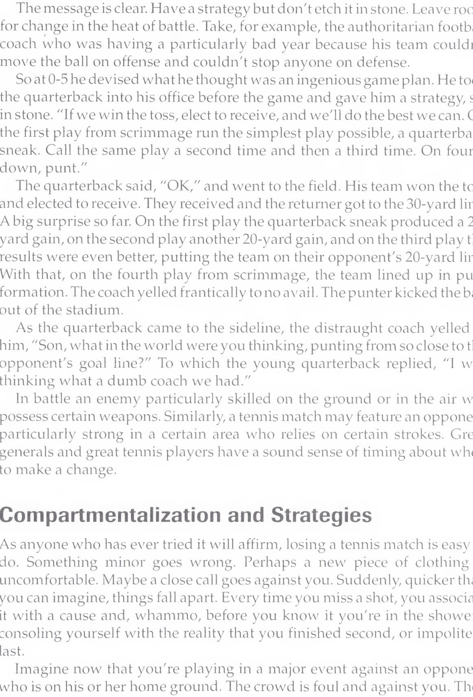
Tôi bắt đầu cho trẻ nhỏ tham gia bất kỳ môn thể thao nào bằng cách trước tiên cho phép chúng vui chơi trong khi chúng phát triển các kỹ năng vận động, Sự Sự tự tin và sự hiểu biết về cách thức và lý do bóng nảy. Theo một cách thú vị nào đó, tôi sẽ dạy họ cảm nhận và chuyển động của vật thể trong môn thể thao này, có thể là một quả bóng, một quả bóng, nước hay thậm chí là một con ngựa. Nhịp điệu này, ý tưởng hòa làm một với quả bóng, dạy tính kỷ luật cần thiết để thành công trong một trận đấu, một dự án hoặc một sự nghiệp. Trẻ em là những miếng bọt biển và tiếp thu hầu hết kiến thức về cuộc sống trong ba năm đầu đời.
Theo đánh giá của tôi, trong thể thao nói chung và quần vợt nói riêng, những người mới bắt đầu và thậm chí cả những người chơi thành thạo đang thử nghiệm những cú đánh mới ban đầu không nên lo lắng rằng bóng của họ đang bắn tung tóe khắp sân. Thay vào đó, họ nên tìm hiểu cảm giác của quả bóng, cách nó nảy lên và những gì nó có thể làm. Mức độ hiểu biết rất đơn giản: 1. Biết điều gì đó về quả bóng 2. Biết cách sẵn sàng đón bóng và cách di chuyển về phía nó 3. Biết điều gì xảy ra khi tiếp xúc 4. Phối hợp vợt và cơ thể Sự đơn giản này thể hiện rõ ở những người mới bắt đầu và những người chơi nâng cao. Người mới bắt đầu nên tập trung vào việc tiếp xúc hơn là việc xây dựng cú đánh. Hãy xem xét ví dụ về một học sinh giỏi được dạy cách đánh một lát. Trước khi học sinh có thể hoàn thiện cú đánh, trước tiên họ phải biết độ nảy của nó, hướng thay đổi của nó, về việc di chuyển tiến hoặc lùi và lý do căn bản đằng sau việc đánh một lát.
Chỉ khi học trò hiểu hết những khái niệm này, huấn luyện viên mới có thể nghĩ ra một buổi tập có tác dụng lan tỏa hiệu quả vào các trận đấu. Lời khuyên sâu sắc nhất của tôi là hãy làm quen với trái bóng. Không thể thành công với bất kỳ môn thể thao, ô tô, máy tính, vấn đề toán học nào, bất cứ điều gì, cho đến khi một người hoàn toàn thoải mái với các nguyên tắc cơ bản. Ví dụ. Dale Earnhardt, một trong những tay đua xe giỏi nhất thế giới, có một đội ngũ nhân viên có chuyên môn cơ khí tốt nhất mà tiền có thể mua được.
Tuy nhiên, Earnhardt có thể cho bạn biết lượng không khí trong lốp xe của anh ấy và cách hoạt động của động cơ. Đó là câu chuyện tương tự với chủ tịch Microsoft Bill Gates. Anh ấy có thể thảo luận về mọi khía cạnh kinh doanh của mình, từ phát minh đến bán hàng. Với quần vợt, tôi chơi những trò chơi đơn giản với học sinh của mình. Tôi yêu cầu họ nhìn thấy quả bóng ngay khi có thể và phản ứng với nó.
1. Một tay vợt ở trình độ trung bình thấp hơn phản ứng với quả bóng sau khi nó nảy về phía mình. 2. Một tay vợt trung gian chắc chắn sẽ phản ứng với quả bóng khi nó đi qua lưới. 3. Người chơi nâng cao phản ứng với bóng khi nó rời vợt đối phương. 4. Những người chơi hàng đầu — bằng cách nhìn vào Mặt vợt, mức độ tiếp xúc và vị trí cơ thể của đối phương — có thể dự đoán chính xác loại bóng nào sẽ qua lưới và nó có thể đi đến đâu.
Các chuyên gia đua xe nói rằng Michael Schumacher biết rất rõ về ô tô của mình và rất hòa hợp với cảm giác cũng như âm thanh đến mức anh ấy biết mình đang đi nhanh như thế nào trong vòng hai dặm một giờ mà không cần nhìn vào đồng hồ tốc độ. Phẩm chất này khiến anh ấy trở thành một trong những người giỏi nhất thế giới. Lưu ý những điều sau: 1. Người chơi nên biết họ sẽ nhận được loại bóng nào và họ sẽ nhận bóng ở đâu trên sân.
2. Người chơi nên ghi nhớ trong đầu xu hướng của đối thủ - nơi họ thường thực hiện các cú đánh và kiểu chơi của họ là gì. Mỗi tay vợt đều có một phong cách nhất định. Sampras Cú thuận tay (forehand) (forehand) tương đối bằng phẳng. Ở bên trái tay, anh ta có thể đánh thẳng dọc theo đường biên và chéo bàn với một số xoáy. Seles đánh bóng sớm và có độ xoáy từ hai bên. Marcelo Rios đánh bóng sớm và tương đối ngang bằng với cả hai bên. Nếu các chuyên gia phần lớn có thể dự đoán được, thì ở bất kỳ cấp độ nào thấp hơn, việc dự đoán hướng bóng sẽ chỉ là một bước nhanh chóng.
Người chơi cần lưu ý những mẹo nhặt bóng sớm này: 1. Kiểm tra sổ sở thích của đối thủ trước trận đấu. 2. Quan sát vị trí, thế đứng và sự chuẩn bị của đối phương. 3. Lưu ý góc của vợt. 4. Chú ý xem cú swing từ thấp đến cao hay cao xuống thấp. 5. Lưu ý tốc độ của cú vung. Một số dấu hiệu có thể giúp người chơi dự đoán sớm việc Trả giao bóng: 1.
Độ cao của cú ném. Nó có thay đổi với những cú giao bóng nhất định không? 2. Hướng ném. 3. Sử dụng chân đa dạng. 4. Số lần xoay hông và vai. Bằng cách tìm kiếm những manh mối này, người chơi sẽ có thể nhặt được bóng sớm hơn. Các tuyển trạch viên bóng chày đang dẫn đầu trong lĩnh vực nghệ thuật này. Để dự đoán loại bóng mà người ném bóng sẽ ném, họ quay video người ném bóng và tìm kiếm những khác biệt nhỏ trên mỗi cú ném.
Điều này cũng tương tự đối với tiền vệ hoặc tiền vệ trong bóng đá. Chạy lùi có thể được thiết lập theo một cách khác nếu họ muốn chặn thay vì mang bóng. Bằng cách quan sát nhiều lần lặp lại, đối thủ hoặc người theo dõi có thể phát hiện ra những chuyển động nhỏ mà một người thực hiện khi không có bóng. Trong một trận đấu playoff năm 1997, New England Patriots đã nhận được tín hiệu của Dan Marino. Họ sa thải anh ta nhiều lần hoặc chặn anh ta lại. Kết quả: Miami thua.
Qua nhiều năm giảng dạy của tôi, một tiêu chuẩn hiển nhiên đã xuất hiện. Những học sinh cống hiến 100% sẽ có cơ hội tốt hơn để thu được lợi ích. Chúng tôi nói với tất cả học viên của mình - toàn thời gian, thời gian ngắn, người lớn, học sinh cuối cấp và các chuyên gia rằng hai mẹo quan trọng để cải thiện mà không cần học là như sau: 1. Đừng bao giờ nghĩ rằng bạn không thể với tới một quả bóng. Nếu bạn cố gắng giành lấy mọi quả bóng, ngay cả những quả bóng không thể, bạn sẽ chạm được những quả bóng mà bạn chưa bao giờ nghĩ là có thể.
2. Đừng bao giờ để bóng nảy lên 2 lần trong luyện tập. Nếu bạn rèn luyện bản thân theo cách này, bạn sẽ học được cách nhặt bóng sớm hơn. Chuyển động Tư thế sẵn sàng (ready position), bước đầu tiên đến bóng, các Bước điều chỉnh, bước hồi phục đầu tiên, các bước xáo trộn, bước tách bóng, tốc độ, sự cân bằng và sức mạnh đều là những yếu tố quan trọng của chuyển động.
1. Tư thế sẵn sàng (ready position) — mãnh liệt và tập trung nhưng vẫn thoải mái, sử dụng vị trí cân bằng để di chuyển và kiểm soát hiệu quả của bước đầu tiên tới bóng 2. Bước đầu tiên đến bóng — thường là bước ra theo hướng bóng nhanh, mạnh và cân bằng, dẫn người chơi đến khoảng cách tiếp xúc ngắn nhất 3. Các Bước điều chỉnh — các bước nhỏ cho phép người chơi ở vị trí đánh mạnh nhất có thể 4. Phục hồi — phải là một phần của cú xoay người để cuối cùng người chơi Kết thúc cú đánh ở vị trí đó vị trí cân bằng cho bước đầu tiên quay trở lại trung tâm Bước phục hồi đầu tiên - thường là bước chéo để che sân mở nhanh hơn, dẫn đến một số bước xáo trộn để che sân phía sau người chơi 6.
Các bước xáo trộn — các bước đưa người chơi vào vị trí thuận lợi để di chuyển theo bất kỳ hướng nào và thường Kết thúc cú đánh bằng một bước tách ra ngay khi đối thủ tiếp xúc. Rõ ràng, điều hòa, tốc độ, sức mạnh và dự đoán là điều tự nhiên hơn đối với một số người chơi. Tuy nhiên, kỹ thuật di chuyển tốt có thể mang lại lợi ích cho tất cả người chơi. Cường độ, Sự tập trung và khả năng dự đoán đều được cải thiện nếu người chơi nhìn thấy bóng sớm khỏi vợt đối phương.
Cùng với việc nhặt bóng sớm hơn, người chơi phải học cách kêu meo bằng chân. Không có sự thay thế. Vô số thói quen đơn giản có thể cải thiện tình trạng thể chất. Khi xem xét chuyển động trên sân, lực đẩy luôn là làm thế nào để tiếp cận bóng nhanh chóng mà không lãng phí chuyển động. Làm thế nào để người chơi tiếp cận bóng để có thể tiếp xúc ở trạng thái cân bằng tốt? Người chơi hồi phục như thế nào? Quá trình này là di chuyển, cân bằng, tiếp xúc và phục hồi.
Phục hồi Trong những năm đầu tiên giảng dạy, bao gồm cả việc nghe và quan sát các tay vợt cũng như các huấn luyện viên khác, tôi đã học được rằng không thể quá chú trọng đến quá trình phục hồi. Đánh bóng chỉ là một phần của quá trình tạo ra cú đánh. Người chơi phải quay lại vị trí để đánh trả quả bóng tiếp theo. Hãy nghĩ đến một điểm dừng ngắn để mở rộng hoàn toàn để đánh bóng xuống đất. Người thực hiện không chỉ phải đeo găng mà còn phải ném bóng vào một trong các đế. Với cơ thể đang chuyển động hoàn toàn, không thể dừng lại khi chạm bóng, do đó, người dừng bước phải thực hiện một vài bước, thực hiện cú ném về trụ thứ nhất, sau đó quay trở lại trụ thứ hai nếu cần.
Tôi nghĩ đến một vận động viên quần vợt thực hiện động tác tương tự. Tôi yêu cầu các tay vợt của mình đang chạy thực hiện một hoặc hai bước sớm hơn sau khi tiếp xúc và sử dụng bước bổ sung để đẩy lùi về vị trí cho quả bóng tiếp theo. Hãy nhìn Andre Agassi, Michael Chang, Jim Courier và Venus Williams, bạn sẽ thấy họ không chỉ tiến thêm một bước mà còn rời chân trong thời điểm tiếp xúc và dứt điểm theo hướng hồi phục.
Một người chơi sẽ đánh trúng một số người chiến thắng hoàn toàn, nhưng phần lớn bóng sẽ quay trở lại người chơi. Điều quan trọng hơn hết là học cách đánh và phục hồi, không chỉ quay trở lại giữa sân mà còn đến nơi quả bóng tiếp theo có thể đến. Một số tay vợt hàng đầu hiện nay (Jim Courier, Tommy Haas, Steffi Graf, Andre Agassi, Martina Hingis, Marcelo Rios và chị em nhà Williams) áp dụng quy tắc này bất cứ khi nào có thể.
Trong nhiều năm, trung tâm sân là nơi duy nhất để đến, nhưng những vận động viên khỏe hơn và nhanh hơn sử dụng công nghệ vợt tiên tiến đã phát triển những vũ khí mới mạnh mẽ. Với suy nghĩ này, người chơi nên tìm một điểm phục hồi phù hợp với phong cách chơi của họ. Tạo ra sự thay đổi Trong hầu hết mọi lĩnh vực nỗ lực của con người, con người không muốn thay đổi và thậm chí có thể chống lại nó. Chỉ gợi ý thay đổi thôi cũng cho thấy có điều gì đó không ổn với hiện trạng, một khái niệm mà hầu hết mọi người khó chấp nhận. Thay đổi hiện trạng có thể là điều không thể chấp nhận được, đặc biệt đối với những người đã đạt được một số thành công. Quan trọng hơn, hầu hết mọi người đều cảm thấy thoải mái với hiện trạng.
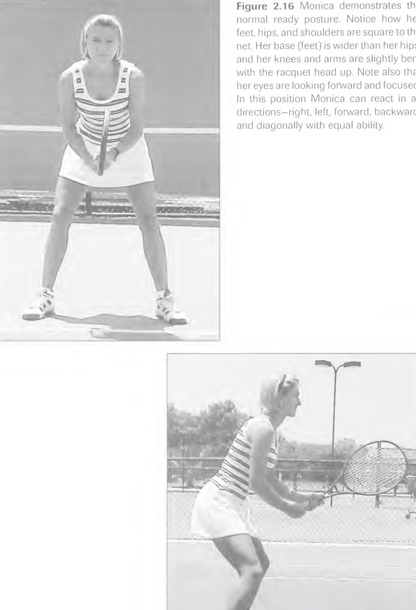
Nếu bạn yêu cầu ai đó thay đổi, trước tiên bạn phải nhận thức được nỗi sợ hãi sẽ sinh ra sự thay đổi. Từ quan điểm của một huấn luyện viên, hãy cho phép chúng tôi chia sẻ kinh nghiệm của mình. Ví dụ, một sự thay đổi trong cách cầm chắc chắn sẽ không thoải mái. Không ai biết liệu sự thay đổi có thành công hay không. Như trong mọi sự thay đổi, phần lớn phụ thuộc vào sự háo hức và quyết tâm của người thực hiện thay đổi. Tuy nhiên, với tư cách là một huấn luyện viên, nếu bạn tin rằng mình đang làm những gì tốt nhất cho học sinh, bạn phải A5 chấp nhận thử thách và đối mặt với rủi ro. Với hầu hết học sinh, bạn phải chuẩn bị để đối phó với học sinh và phụ huynh của họ.
Khi thực hiện các thay đổi, hãy xem xét phương pháp thực hiện những điều chỉnh nhỏ để học sinh thậm chí không nhận thức được rằng những thay đổi đang được thực hiện. Một hình mẫu tốt là nha sĩ sẽ đánh lạc hướng bệnh nhân khi thực hiện một mũi tiêm khó chịu. Nghĩa là, bạn có thể ngăn học sinh của mình suy nghĩ về những thay đổi lớn bằng cách thực hiện những thay đổi nhỏ nhưng dần dần.
Một số học sinh lo sợ trước bất kỳ sự thay đổi nào. Với những sinh viên này, bạn chỉ có thể đạt được những thay đổi lớn nếu bạn sẵn sàng làm một số công việc phụ trợ. Đặc biệt, trước tiên bạn phải thảo luận với học sinh và phụ huynh về những thay đổi liên quan và điều gì có thể xảy ra với trò chơi của học sinh. Hãy xem điều gì sẽ xảy ra khi thay đổi một thế trận cực tây sang một thế trận cực đông.
• Sẽ xảy ra hiện tượng mất điện. Kiểu cầm vợt cực tây mang lại cảm giác mạnh mẽ, Tốc độ đầu vợt tuyệt vời và độ xoáy nhiều khi Mặt vợt đóng lại rất nhanh. • Với cách cầm vợt mới, Mặt vợt sẽ không đóng lại nhanh nữa và bóng có thể sẽ bay cao và bay ra ngoài. Cách cầm vợt phía đông có thể có quá nhiều thay đổi để tác động trong một bước vì các vấn đề về sức mạnh, thiếu Tốc độ đầu vợt, mặt tiếp xúc, độ xoáy, v.v. sẽ dẫn đến tất cả các loại cú đánh, bao gồm cả bóng đi cao, sâu và xa ra ngoài cuộc chơi.
• Sự khó chịu về thể chất (mụn nước) và lo lắng về tinh thần (mất Sự tự tin) sẽ xảy ra. • Quá trình này có thể mất nhiều thời gian. Bạn, với tư cách là huấn luyện viên, phải nhận ra rằng sự thay đổi có thể đòi hỏi phải thay đổi cách tập luyện và cách thi đấu của học viên. Hai lựa chọn là thực hiện thay đổi cùng một lúc hoặc thực hiện thay đổi theo từng đoạn nhỏ để hạn chế tổn thương cho học sinh.
Trước khi thực hiện bất kỳ thay đổi nào, cần phải xem xét nhiều yếu tố: • Tuổi của học sinh • Khả năng thể thao của học sinh • Mục tiêu của học sinh • Phần còn lại của trận đấu của học sinh • Loại trò chơi mà học sinh chơi • Trình bày kết quả với tư cách là một tay vợt • Thái độ tinh thần của học sinh • Khả năng chấp nhận thay đổi của phụ huynh Ví dụ, Pete Sampras đã chấp nhận sự khôn ngoan của Tiến sĩ Fischer, một huấn luyện viên lớn tuổi hơn nhiều. Fischer khuyên Sampras rằng để một ngày nào đó có thể cạnh tranh ở đỉnh cao thế giới, anh cần phải phát huy tài năng mà Chúa ban cho mình. Về cơ bản, anh phải chuyển từ Trái tay hai tay sang Trái tay một tay. Quyết định này thật khó khăn vì Sampras đã thực hiện khá tốt Cú trái tay (backhand) (backhand) tay bằng hai tay của mình. Cuộc thảo luận đã được bàn tán nhiều vì lúc đó Pete mới 14 tuổi. Phải mất hai năm thua lỗ và mất đi vị trí đàn em, Sampras mới đạt được mục tiêu của mình. Bạn quyết định xem nó có đáng không.
Sau khi xem xét tất cả các yếu tố này, với tư cách là huấn luyện viên, bạn phải kiên nhẫn và tích cực, làm việc nhiều với thái độ tinh thần của học sinh cũng như các kỹ thuật thay đổi. Bạn có thể cần sự giúp đỡ từ một nguồn bên ngoài. Thông tin thêm về Thực hiện Thay đổi Là một người đã thay đổi nhiều người chơi, tôi nhận thấy phương pháp thực hiện thay đổi từng chút một là thú vị nhất và đầy thách thức nhất. Cố gắng đưa học sinh của bạn lên một tầm cao mới bằng cách thực hiện một số thay đổi nhỏ, đặc biệt khi học sinh sợ thay đổi hoặc hài lòng với thành công, là một trong những trở ngại thách thức nhất mà bất kỳ huấn luyện viên nào cũng có thể gặp phải. Cách của chúng tôi là chấp nhận sự không khoan nhượng của họ như một thực tế và làm việc một cách gián tiếp.
Ví dụ, một học viên đến với chúng tôi với một cú Vung vợt ra sau (lấy đà) hình tròn cao. Chúng tôi nhận thấy rằng trên đường chạy, anh ấy gặp khó khăn khi thực hiện cú thuận tay (forehand) chéo góc. Điều đầu tiên chúng tôi làm là khiến học viên thừa nhận rằng anh ta gặp "một số" khó khăn khi đánh Đánh chéo sân (cross-court). Chúng tôi sử dụng từ “một số” vì điều quan trọng là không hủy hoại Sự Sự tự tin hay thách thức cái tôi. Bước tiếp theo sẽ là một cuộc thảo luận bao gồm các yếu tố sau: • Xác định tình huống.
• Hãy chắc chắn rằng cả tay vợt và huấn luyện viên đều đồng ý rằng có vấn đề. • Xác định giải pháp được đề xuất. Khó khăn trong việc thực hiện các cú đánh Đánh chéo sân (cross-court) trên đường chạy thường do • sử dụng động tác vung vợt ra sau quá lớn, • chuẩn bị quá muộn, thường do sử dụng động tác vung vợt ra sau hình tròn quá cao hoặc vung vợt ra sau đôi, hoặc • để chuyển động làm sai lệch thời gian.
Sau đó, chúng tôi đặt vợt ở tư thế vung vợt lùi hoàn toàn trước khi bắt đầu chạy. Khi thực hiện động tác này, học viên chỉ cần vung người về phía trước để đánh chéo bàn. Điều này luôn làm tăng cơ hội thực hiện cú đánh. Có tất cả thông tin Sự nghiệp giảng dạy của tôi bắt đầu vào cuối những năm 1950. Kỹ thuật là phần chính của bài học.
• Cách cầm vợt — thuận tay phía đông và trái tay phía đông • Xoay — thẳng về sau / • Tiếp xúc — hơi ở phía trước chân đánh hoặc ra phía trước cơ thể • Tiếp theo — một cú xoay qua bóng với thời gian theo dõi dài đến mục tiêu, không cần chuyển động thêm với cơ thể và không cần bước thêm bằng chân sau Khi trò chơi ngày càng phổ biến trong những năm 1960 và 1970, chúng tôi đã bổ sung các kỹ thuật giảng dạy của mình. Một trong những lý do giúp học viện tiếp tục thành công là khả năng phát triển của chúng tôi cùng với môn thể thao này. Tư duy mới, lựa chọn mới và cơ sở vật chất mới giúp học viện luôn dẫn đầu về giảng dạy.
Kể từ khởi đầu khá khiêm tốn của tôi, những thay đổi sâu rộng đã xảy ra trong kỹ thuật và chiến thuật của trò chơi. Việc tích lũy điểm trong các pha giao bóng kéo dài đã nhường chỗ cho việc giành bóng sớm và hạ gục những người chiến thắng từ bất kỳ đâu trên sân. Thể thao và phong trào bây giờ về cơ bản là khác nhau. Vào những năm 1950, chúng tôi tuyển những vận động viên quần vợt và cố gắng biến họ thành vận động viên. Bây giờ chúng tôi lấy những vận động viên xuất sắc và biến họ thành những vận động viên quần vợt. Cùng với sự thay đổi này là sự xuất hiện của các nhà tâm lý học và tuyển trạch viên thể thao, rèn luyện tinh thần, dinh dưỡng, báo cáo video thống kê, vợt dài hơn và mạnh hơn, v.v.
Báo cáo trinh sát có nhiều dạng: báo cáo máy tính hiển thị số liệu thống kê và kiểu chơi, video hoàn chỉnh về các trận đấu hoặc thông tin trước trận đấu như hồ sơ người chơi và kết quả trước đó. Hãy nhớ rằng nói quá nhiều hoặc chiến lược mang thai có thể gây tổn hại vì nó làm mất đi bản năng chơi tự nhiên. Người chơi có thể phụ thuộc quá nhiều vào lời khuyên thay vì Nếu bạn đối xử với người chơi của mình như tâm lý của chính họ.
Trinh sát chơi một CIlBmpionS quan trọng, th6y II thực hiện chiến thắng. Nhà vô địch tương tự được chọn! Nhờ có kiến thức chuyên môn, trinh sát có thể chuyển bại thành thắng. Theo dõi hầu hết các sự kiện thể thao, huấn luyện viên và người chơi có thể sử dụng các phiên băng video để cùng nhau xem những gì đã thành công, những gì cần phải loại bỏ và những điểm có thể thực hiện cải tiến. Trong nhiều trường hợp, các tay vợt không tin vào lời kể của huấn luyện viên về những gì họ vừa làm.
Lấy lại cây vợt 1 đã làm việc với Marcelo Rios liên tục trong ba năm qua. Ba tuần trước khi Grand Slam Cup 1998 bắt đầu, Marcelo cảm thấy cú thuận tay (forehand) của mình không ổn lắm. Anh ấy cũng có cảm giác tương tự ở US Open vài tháng trước đó. Điều quan trọng là phải hiểu rằng người chơi sẽ đưa Tín hiệu phối hợp (signal) rằng họ không thoải mái với điều gì đó. Marcelo ban đầu không nói nhiều và hầu hết mọi người đều cảm thấy khó giao tiếp với anh ấy. Nhưng tôi tin rằng nếu bạn đối xử với tay vợt của mình như những nhà vô địch, họ sẽ thi đấu như những nhà vô địch. Tôi khuyên anh ấy nên thực hiện một vài điều chỉnh đơn giản khi vung vợt về sau để khắc phục những vấn đề anh ấy đang gặp phải.
Marcelo có đôi tay thiên phú cùng với khả năng nhận bóng sớm, di chuyển và tiếp xúc sớm. Tôi nhận thấy những điều sau: 1. Từ tư thế sẵn sàng (ready position) khá thấp, anh ấy đã hạ đầu vợt xuống thấp hơn nữa khi bắt đầu vung vợt sau. 2. Anh ấy dẫn đầu cú Vung vợt ra sau (lấy đà) bằng khuỷu tay của mình. 3. Anh ấy giữ cổ vợt bằng bàn tay không đánh của mình đến mức anh ấy đã hoàn thành gần 75% động tác vung vợt ra sau trước khi bỏ tay ra khỏi vợt.
Marcelo là một chàng trai trẻ có năng khiếu nên có thể bù đắp khi đến muộn. Nhưng sự đền bù liên tục đó có thể dẫn đến những vấn đề khác. Tôi bảo anh ta đừng thả đầu vợt xuống trong phần đầu tiên của cú vung vợt sau, hãy thả tay đối diện sớm hơn một chút và để đầu vợt dẫn dắt cú vung vợt sau. Vài tuần sau, Marcelo đánh bại Andre Agassi ở Grand Slam Cup và giành được 1,4 triệu USD. Với tư cách là một huấn luyện viên, bạn phải đứng lên và mạo hiểm nói với học sinh của mình những gì bạn cảm thấy là đúng, mặc dù học sinh có thể không sẵn lòng chấp nhận điều đó. Cách bạn nói với học sinh là điều quan trọng, vì vậy hãy biết tính cách của học sinh!
Đồng thời, tôi cũng đang làm việc với Venus Williams, người hoàn toàn khác biệt trong cách vung vợt sau của cô ấy. Cô ấy ngay lập tức tách hai tay ra, vợt đánh về rất cao và nhanh như cú vung vợt về phía sau của bất kỳ ai trong trận đấu. “Hãy lấy vợt về sớm” có lẽ là một trong những cách diễn đạt phổ biến nhất được sử dụng bởi các giảng viên chuyên nghiệp.
Tôi vẫn sử dụng nó và nó đáng để xem xét chi tiết. Cụm từ này trở nên phức tạp hơn một chút và dần dần xuất hiện một câu nói mới: "xoay hông và vai" hoặc "xoay vai". Với một số người chơi, vợt quay trở lại ở lần xoay hông và vai đầu tiên. Những người chơi khác quay lại, vợt và cánh tay không làm gì khác ngoài việc giữ nguyên tư thế sẵn sàng (ready position).
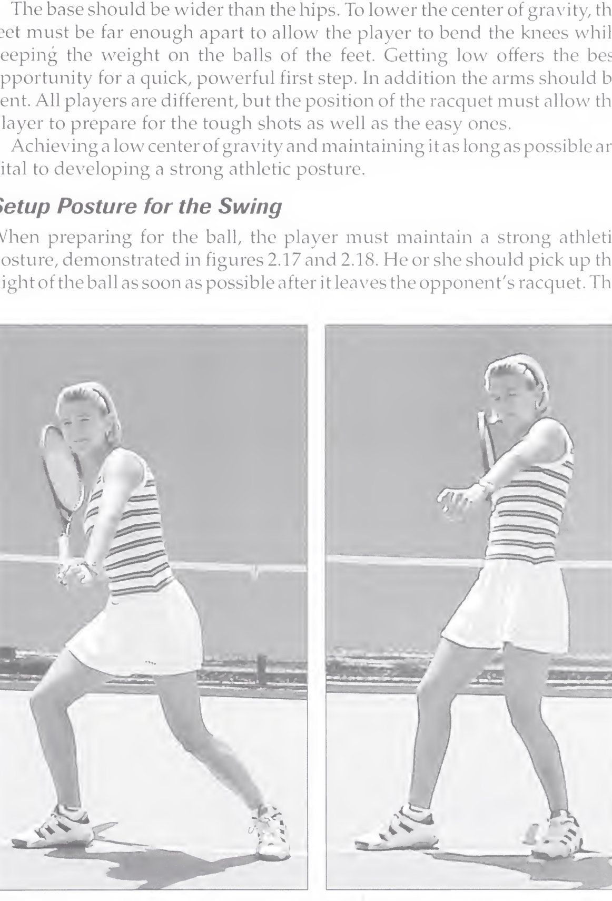
Tôi Không phải là ai đánh quả bóng đầu tiên đã quay lại cái cũ, mà là ai đánh cây vợt cuối cùng _ trở lại, nhưng mắt tôi đang nhìn bóng vào! được sử dụng để xem hông và vai có quay hay không. Nếu không, tôi thấy dễ dàng hơn nhiều khi sử dụng từ “lưng vợt” và sau đó nói về hông và vai. Hôm nay, Tm một lần nữa nói với những học sinh có vẻ gặp khó khăn khi gặp bóng nhanh ở phía trước, "Hãy lấy vợt về sớm." Iva Majoli và chị em nhà Williams có những cú vung vợt ra sau cực kỳ nhanh, điều mà tôi cảm thấy cho phép họ đánh được bất kỳ biến thể nào ở cú thuận tay (forehand).
Tôi không yêu cầu học viên của tôi phải chuẩn bị sớm như Iva Majoli, nhưng với những học viên đã vượt quá trình độ mới bắt đầu, tôi rất chú ý đến động tác vung vợt sau. Trong hầu hết các trường hợp, tôi lại quay lại với câu nói cũ của mình "Lấy vợt về sớm". Nhưng tôi cũng đang quan sát và hy vọng vào việc xoay vai và hông. Lựa chọn cú đánh Lựa chọn cú đánh cũng quan trọng như việc thực hiện cú đánh. Người chơi nên tập trung vào những cú đánh có tỷ lệ phần trăm cao mà họ Sự tự tin thực hiện. Họ nên thay đổi các cú đánh của mình trong một tình huống nhất định để đối thủ của họ không thể đoán trước được cú đánh và giành được Điểm lợi thế (advantage). Nên tránh những cú đánh có tỷ lệ thấp, đặc biệt là ở những điểm quan trọng. Ví dụ: người chơi không nên cố gắng ép người chiến thắng từ khoảng cách 10 feet so với đường cuối sân.
Người chơi nên chọn những cú đánh khiến đối thủ di chuyển xung quanh và buộc họ mắc những lỗi không đáng có hoặc những cú đánh phòng thủ yếu. Tính nhất quán trong cú đánh Người chơi nên quyết tâm đánh bóng qua lưới nhiều hơn đối thủ một lần. Cách tiếp cận là phải kiên nhẫn, sẵn sàng ở lại sân miễn là cần thiết để giành chiến thắng. Điều này đặc biệt đúng khi chơi trên sân chậm.
Độ chính xác của cú đánh Độ chính xác trong quần vợt có nghĩa là đánh trong một khu vực nhất định với đủ mức an toàn. Tay vợt có khả năng đặt bóng sẽ mắc nhiều lỗi không đáng có. Người chơi nên cố gắng đạt được độ chính xác để cho phép cú đánh chệch hướng một chút nhưng vẫn ở trong khu vực mục tiêu. Việc có được độ chính xác như vậy sẽ giảm thiểu những lỗi không đáng có và cho phép người chơi giữ nguyên điểm mà không mắc lỗi. Không ai giỏi việc này hơn Chris Evert và Bjorn Borg.
Tốc độ đầu vợt Pow! Bang! Bùm! Âm thanh này có giống như những quả bóng bay trong phim hoạt hình Batman không? Đó thực sự là âm thanh của quần vợt chuyên nghiệp ngày nay. Mọi người đều biết rằng quần vợt đang chuyển sang một trò chơi mạnh mẽ hơn, nhanh hơn. Người ta chỉ cần nhìn vào những tay vợt như Boris Becker, Andre Agassi, Goran Ivanisevic và Mark Philippoussis, mỗi người đều to lớn nhưng không lớn hơn nhiều so với một tay vợt giải trí thông thường.
Điều gì phân biệt giữa người chơi chuyên nghiệp và người chơi giải trí? Sự khác biệt quan trọng là khả năng tạo ra năng lượng. Câu hỏi thường gặp nhất tại Học viện quần vợt Bollettieri, nơi nổi tiếng với những cú thuận tay (forehand) đẳng cấp thế giới, là "Làm cách nào tôi có thể đánh bóng mạnh hơn?" Những người chuyên nghiệp làm điều đó như thế nào, và làm thế nào để học viên có thể làm điều đó tốt hơn? Hãy cùng khám phá câu trả lời một cách khoa học và thực tế. Chúng tôi sẽ đề xuất một số cách để tăng thêm sức mạnh bằng cách đo Tốc độ đầu vợt mà không làm mất kiểm soát. Chúng tôi cũng sẽ đưa ra một số so sánh giữa tay vợt sinh viên và một số tay vợt giỏi nhất thế giới.
Tốc độ đầu vợt là gì? Phần lớn đã được viết về Nhịp điệu trận đấu của trận đấu ngày nay - một số tích cực, một số tiêu cực. • Quyền lực có phải là một Điểm lợi thế (advantage) không công bằng đối với một số người chơi? • Có nên giới hạn các người giao bóng lớn chỉ Giao bóng / Cú giao bóng một lần? • Có nên làm bóng nặng hơn để duy trì các pha đánh bóng dài hơn không? • Công nghệ mới có nên bị đặt ngoài vòng pháp luật? • Tốc độ của quả bóng có làm thay đổi cục diện trận đấu không?
• Những yếu tố nào góp phần làm tăng sức mạnh? Người ta đã chứng minh rõ ràng rằng sức mạnh hay việc thiếu nó được quyết định bởi khả năng tạo ra Tốc độ đầu vợt của người chơi. Tốc độ đầu vợt, tốc độ bóng đến và vị trí trên vợt nơi bóng tiếp xúc đều góp phần vào tốc độ bóng rời vợt.
Swing Tip Tốc độ đầu vợt là tốc độ mà vợt di chuyển tại điểm tiếp xúc với bóng. Tạo ra tốc độ này một cách nhất quán là giải pháp cho một trò chơi mạnh mẽ hơn. Nhiều người trong chúng ta có thể tạo ra Tốc độ đầu vợt nhưng có thể sử dụng quá nhiều cổ tay hoặc cơ thể khi đánh. Có thể dễ dàng phát hiện cổ tay cẩu thả hoặc chuyển động cơ thể quá mức do ném cơ thể vào cú đánh trước hoặc trong khi thực hiện chuyển động đánh.
Mẹo xoay Những người chơi hàng đầu sử dụng cổ tay của họ một cách hiệu quả và hiệu quả bằng cách rèn luyện cổ tay của họ để phối hợp mọi hành động với chuyển động của cơ thể. Làm cách nào để chúng tôi phát triển sức mạnh cho người chơi mà không phải hy sinh quyền kiểm soát? Chúng tôi tăng dần khả năng của người chơi để phát triển Tốc độ đầu vợt phù hợp với bóng trong khi vẫn duy trì khả năng kiểm soát tương tự hoặc tốt hơn.
Tăng Tốc độ đầu vợt mà không phải hy sinh khả năng kiểm soát Như được trình bày đầy đủ trong video Cú cú thuận tay (forehand) sát thủ (Killer Forehand) của tôi, một số yếu tố liên quan đến việc tối đa hóa vũ khí thuận tay. Đầu tiên, bạn không thể bắn đại bác từ ca nô. Người chơi phải tạo ra một nền tảng vững chắc để cung cấp sức mạnh và khả năng kiểm soát cho tốc độ vung vợt cao. Tư thế đánh có ảnh hưởng lớn đến Tốc độ đầu vợt có thể được phát triển. Tôi khuyên bạn nên đánh từ cả tư thế cởi mở và trung lập để cải thiện Tốc độ đầu vợt ở cú Cú thuận tay (forehand) (forehand) và trái tay. Thế còn việc đánh khi đang ở trên không, sau khi nhảy khỏi mặt đất thì sao? Cần phải luyện tập vô tận hàng giờ để kiểm soát bóng giống như các vận động viên chuyên nghiệp thường làm khi nhảy lên không trung. Xác định khả năng của học sinh của bạn.
Bên cạnh nền tảng vững chắc, học viên phải cân nhắc xem đầu vợt được căn chỉnh như thế nào so với bóng đang tới khi bắt đầu cú vung vợt về phía trước. Nếu mông vợt thẳng hàng với đường đi của quả bóng đang tới, người chơi sẽ có thể tác dụng lực lớn nhất vào quả bóng thông qua đòn bẩy, do đó làm tăng Tốc độ đầu vợt.
Việc cầm và đánh cánh tay hoặc các cánh tay phải luôn được thả lỏng. Nắm bóng quá mạnh và cố gắng sử dụng cơ bóng sẽ gây mất lực do cánh tay hoặc các cánh tay thiếu linh hoạt. Làm việc với nền tảng vững chắc và cánh tay linh hoạt cũng giống như có một cán roi và một sợi dây roi lỏng lẻo. Cả hai phối hợp với nhau để tạo ra gia tốc và tiếng roi.
Mẹo đánh bóng Tăng tốc đầu vợt nhanh dọc theo đường xoay ngang cơ thể sẽ tạo ra tốc độ và đòn bẩy lớn nhất cho bóng. Hành động này tương tự như giật một chiếc khăn từ tay ai đó. Tất cả những yếu tố này góp phần học cách tạo ra Tốc độ đầu vợt tối đa trong khi vẫn duy trì khả năng kiểm soát và tính nhất quán. Lưu ý rằng học viên sẽ mất kiểm soát cú đánh nếu họ Bật cổ tay vào điểm tiếp xúc và Kết thúc cú đánh với lòng bàn tay hướng về phía mình trong phần tiếp theo.
Học sinh nên cầm vợt theo kiểu bán tây, đánh bóng trên mặt phẳng thẳng đứng và xoay cổ tay sau khi hoàn thành cú đánh. Hãy tham khảo video Cú cú thuận tay (forehand) sát thủ (Killer Forehand) của tôi để biết thêm thông tin chi tiết về cách tăng Tốc độ đầu vợt với tất cả các kiểu xoáy, cắt, cắt, v.v. Mẹo xoay cổ tay Hành động chính xác của cổ tay đối với cú thuận tay (forehand) Xoáy lên là lòng bàn tay hướng ra xa người chơi với cách cầm vợt phía đông và lòng bàn tay hướng xuống đất đối với người chơi có kiểu cầm vợt bán tây hoặc tây.
Ý kiến khoa học Tiến sĩ Howard Brody thuộc khoa vật lý của Đại học Pennsylvania, người chủ trì nghiên cứu và phát triển của USTA về các vấn đề giải thích vật lý, nói: "Không quan trọng cơ thể bạn đang làm gì. Đầu, tay hoặc chân của bạn đang làm gì không quan trọng. Không quan trọng bạn đang giữ đầu vợt lỏng lẻo hay trong tư thế cầm vợt chết người. Vận tốc đầu vợt tại điểm tiếp xúc mới là tất cả những gì quan trọng. Bằng cách sử dụng một cây vợt có bản lề ở giữa đầu và tay cầm, chúng tôi đã chứng minh rằng cây vợt mang lại toàn bộ sức mạnh.
Những gì bản lề làm là chứng tỏ rằng đầu vợt không có cách nào biết được đầu, cánh tay, vai, hông, v.v., đang làm gì tại điểm tiếp xúc. Bản lề về cơ bản là ngắt kết nối (đầu vợt và cánh tay với nhau). Chỉ có vận tốc đầu vợt quyết định đường đi và tốc độ của quả bóng." Bruce Wright, giám đốc Bio-Tennis Sports Science, chủ sở hữu thiết bị duy nhất trên thế giới dùng để xác định loại dây, thước đo và độ căng thích hợp dựa trên tốc độ vung vợt của từng cá nhân và tốc độ của quả bóng tới, đồng ý: "Tốc độ đầu vợt là điều cần thiết trong việc phát triển tốc độ của quả bóng. Tuy nhiên, thể lực của người chơi sẽ quyết định khả năng Tốc độ đầu vợt hiệu quả nhất. Điều quan trọng cần nhớ là bất kể sức mạnh thể chất, đến một lúc nào đó, bất kỳ người chơi nào cũng sẽ bắt đầu mất kiểm soát." Một số sản phẩm trên thị trường có thể giúp người chơi xác định Tốc độ đầu vợt và tốc độ gần đúng của cú đánh của họ. Hầu hết người chơi chuyên nghiệp đều cầm vợt theo kiểu bán tây, đánh bóng trên mặt phẳng thẳng đứng và lật cổ tay sau khi hoàn thành cú đánh. Điều quan trọng cần nhớ là những tay vợt giỏi nhất thế giới luôn giữ cổ tay tự do để di chuyển trên mặt phẳng thẳng đứng.
Người chơi để cổ tay di chuyển theo chiều ngang sẽ phát triển cổ tay cẩu thả trước khi bạn có thể nói, "Pow! Bang! Bam!" Ồ Đúng vậy, và cuối cùng Sức mạnh Sức mạnh phải là sản phẩm cuối cùng, một khi kỹ thuật đã thảo luận trước đó đã thành thạo. Tôi thường thấy rằng những học viên đã nắm vững các kiến thức cơ bản khác sẽ tự động đánh với nhiều sức mạnh hơn nhờ kỹ thuật hợp lý và Sự Sự tự tin. Sức mạnh bổ sung cũng sẽ đến thông qua sự phát triển thể chất bình thường và một chương trình rèn luyện thể chất có định hướng.
Cuối cùng, phần lớn người chơi cảm thấy họ có được nhiều sức mạnh hơn bằng cách sử dụng nhiều cơ thể hơn. Điều này không phải vậy! Họ nên vung vợt theo kiểu bình thường bằng cách sử dụng chân, khả năng tăng tốc của vợt và lực bóng của đối phương. Hãy cho tôi biết về trò chơi! Không một ngày nào trôi qua mà học sinh hay người lớn không hỏi tôi làm thế nào để có thêm sức mạnh. Câu trả lời của tôi rất đơn giản. Sức mạnh không hữu ích trừ khi người chơi điều khiển nó như một phần của toàn bộ quá trình đánh bóng.
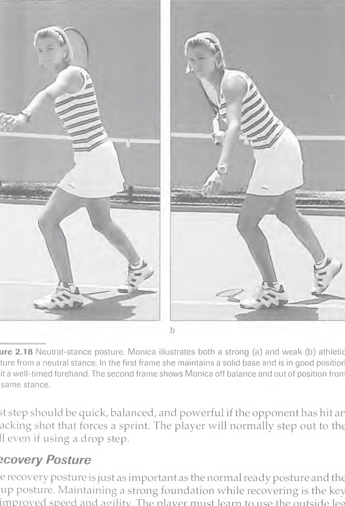
Từng bước Giữ bóng trong cuộc — Dù phải làm thế nào, học viên phải giữ bóng trong cuộc và cố gắng duy trì kỹ thuật đánh đúng. Đánh trúng đích — Người chơi phải giữ bóng trong cuộc, duy trì kỹ thuật và tập đánh vào cùng một chỗ. Chiều cao và chiều sâu - Đánh bóng sâu đến phần sân đối phương và lặp lại ba bước đầu tiên này sẽ kiểm soát các pha bóng.
Các biến thể — Học sinh nên áp dụng các vòng quay khác nhau. Tốc độ Thái độ của một tay vợt có thể tích cực hoặc tiêu cực khi di chuyển tới bóng. Anh ta hoặc cô ta nên bắt đầu chuẩn bị vợt sớm, bước đầu tiên nhanh chóng và đưa cơ thể vào hành động để phản ứng với tốc độ cực nhanh. Khi người chơi đến gần bóng hơn, các bước sẽ trở nên ngắn hơn để người đó có thể thiết lập và duy trì Trọng tâm cơ thể khi tiếp xúc. Nền tảng kém và tư thế yếu sẽ hạn chế khả năng thực hiện các cú đánh một cách nhất quán.
Người chơi nên nỗ lực cải thiện sự nhanh nhẹn trong khi vẫn duy trì sự cân bằng. Nhảy dây, tập chân trên sân, tập phản ứng nhanh, chạy nước rút trên sân và luyện tập xen kẽ đều có thể cải thiện sự nhanh nhẹn. Người chơi nên di chuyển nhịp nhàng, không bị giật và luôn phải suy nghĩ “nhanh chân”. Michael Chang và Martina Hingis có tốc độ và sự nhanh nhẹn tuyệt vời. Họ có được hầu hết mọi quả bóng. Chìa khóa của chuyển động chỉ đơn giản là tin rằng bạn có thể chạm tới mọi quả bóng! Chúng ta thường thấy các tay vợt tranh nhau giành bóng. Tất cả người chơi đều có thể làm điều tương tự nếu họ nỗ lực.
Bộ chân Bộ chân là nền tảng để người ta xây dựng các cú đánh. Nếu không có động tác chân thích hợp, tay vợt sẽ không thể tiếp cận được bóng hoặc khi chạm bóng sẽ bị mất Trọng tâm cơ thể và mất vị trí. Động tác chân tốt mang lại cho tay vợt nhiều lựa chọn và tạo ra những sơ hở mà những tay vợt khác không có. Lưu ý rằng tôi nói động tác chân tốt - không phải động tác chân tốt.
Học viên phải chú ý nỗ lực phát triển động tác chân và tốc độ chân hoàn hảo trong mỗi buổi tập. Tham khảo chương 11 để biết các bài tập phát triển tốc độ, sự nhanh nhẹn và động tác chân. Chuẩn bị vợt Khi bàn chân ở tư Tư thế sẵn sàng, chúng đang cố gắng hỗ trợ lực của cú đánh. Trong quá trình chuẩn bị vợt, não sẽ gửi thông điệp từ tay đến chân về cách thiết lập. Nếu việc chuẩn bị vợt ở phía sau cơ thể với mông vợt hướng sang một bên thay vì hướng về phía lưới, bàn chân sẽ nhận được thông báo để thiết lập tư thế hướng lực sang một bên thay vì hướng về phía lưới. Điều này được gọi là lập trường đóng.
Nếu người chơi chuẩn bị vợt trong động tác vung vợt sau, dù thẳng về phía sau hay xoay tròn, và vợt vẫn ở phía trước cơ thể khi người chơi di chuyển tới bóng, quy trình tự nhiên sẽ là thiết lập ở tư thế mở, với tùy chọn đánh lái vào tư thế trung lập. Nếu báng vợt là đèn pin thì khi chuẩn bị, tia sáng không bao giờ được chiếu về phía sau người chơi hoặc hướng về phía sân. Chùm ánh sáng phải ở phía trước cơ thể khi người chơi di chuyển.
Chuẩn bị sớm giúp bàn chân có đủ thời gian để điều chỉnh vào thế đánh chuẩn bị. Chuẩn bị muộn thường dẫn đến đánh muộn, đánh vội và đặt chân không đúng hoặc quá muộn. Phục hồi Quá trình phục hồi phải là một tiến trình tự nhiên của quá trình tiếp theo để đưa người chơi trở lại tư thế sẵn sàng (ready position). Học viên phải phát triển thói quen hồi phục sau mỗi lần bắn để chuẩn bị tiếp tục quan điểm. Các kiểu bước chân được sử dụng khi phục hồi khác nhau, từ các bước xáo trộn đến các bước chéo, trong đó vai vẫn hướng về phía trước, cho phép người chơi quay trở lại hướng mà họ đã đến. Khi bóng đã được đánh, người chơi có thể quay người và chạy.
Giữ nó đơn giản!* Hầu hết mọi thứ về trò chơi ngày nay đều nhanh hơn và mạnh hơn. Các tay vợt nhanh hơn, khỏe hơn và trở lại vị trí sớm hơn. Công nghệ vợt và dây giúp tăng tốc trận đấu. Bóng đến tay người chơi nhanh hơn bao giờ hết. Để xử lý Nhịp điệu trận đấu, học sinh phải đơn giản hóa các nét vẽ. Người đó phải chuẩn bị sớm hơn và giữ cho cú swing gọn gàng. Học viện quần vợt Bollettieri chào đón người chơi, cả trẻ em và người lớn, ở mọi cấp độ kỹ năng. Việc điều chỉnh cú đánh phổ biến nhất mà chúng tôi thực hiện ở mọi cấp độ chơi là giảm động tác vung vợt ra sau.
Trong các môn thể thao như gôn, bóng chày, và tất nhiên, quần vợt, gậy hoặc gậy hoặc vợt càng xa người chơi thì càng khó kiểm soát. Khi chuyển động tròn của cú đánh ra sau quá lớn hoặc cú đánh ra sau thẳng về phía sau quá xa, chúng ta thấy rằng đầu vợt có xu hướng di chuyển quá xa cơ thể. Nền móng bắt đầu lung lay và sự cân bằng bị lung lay. Người chơi có thể vươn tay hoặc duỗi người để lấy bóng, thường đánh bóng bằng cánh tay thẳng. Sau đó chuyện gì sẽ xảy ra? Kỹ thuật bị phá vỡ, người chơi mất khả năng kiểm soát đầu vợt, cắt giảm các lựa chọn.
Người chơi nên tiếp cận bóng bằng chân chứ không phải vợt, Bước chân (footwork) đủ gần để thực hiện một cú xoay người gọn gàng. *Phần này ban đầu xuất hiện trên Tạp chí Quần vợt. In lại với sự cho phép. Hãy để tôi nhắc lại: để xử lý sức mạnh ngày nay, người chơi phải củng cố các cú đánh mặt đất - chúng phải ngắn hơn và đơn giản hơn. Và với sức mạnh ngày càng tăng và độ Xoáy lên các cú đánh trên mặt đất, người chơi cũng phải điều chỉnh kỹ thuật bắt vô-lê. Với những nét đơn giản hơn, ít có thể sai sót hơn.
Những cú đánh ngắn hơn là chìa khóa thành công trong trò chơi sức mạnh ngày nay. Thuận tay Như tôi đã nói 40 năm trước, hãy lấy lại cây vợt! Trước khi làm bất cứ điều gì để khiến cú Cú thuận tay (forehand) (forehand) gọn gàng hơn, học viên phải tìm hiểu xem liệu mình có nhìn thấy bóng sớm hay không. Người chơi nên phản ứng ngay khi bóng rời vợt đối phương. Nếu người chơi đợi bóng đi qua lưới và nảy lên trước khi bắt đầu chuẩn bị, như 90% người chơi làm, thì cú xoay người sẽ như thế nào cũng không có gì khác biệt - người chơi sẽ gặp vấn đề. Bắt đầu từ hôm nay, ngay khi bóng rời vợt đối phương, học sinh phải nói “Bóng”. Điều này sẽ cải thiện Sự tập trung và thúc đẩy sự chuẩn bị sớm hơn.
Về việc làm cho cú vung vợt trở nên đơn giản hơn, điều tôi nói với các học trò của mình hôm nay chính xác là những gì tôi đã nói vào năm 1958: lấy lại cây vợt! Người chơi nên xoay hông và vai. Di chuyển vợt từ tư thế sẵn sàng (ready position) là không cần thiết - người chơi chỉ cần cuộn phần thân trên lại ngay lập tức. Trong vài tháng qua. Tôi đã dành thời gian với Venus và Serena Williams. Tôi bị ấn tượng bởi khả năng xoay hông và vai mạnh mẽ của họ cũng như cách họ đưa đầu vợt về phía sau nhanh hơn bất kỳ ai mà tôi từng làm việc cùng. Họ là những hình mẫu tốt để sao chép.
Yếu tố khác để củng cố cú đánh là giữ khuỷu tay và vợt gần cơ thể hơn một chút trong cú đánh sau. Sự mất kiểm soát xảy ra khi người chơi vung tay với cánh tay thẳng và khuỷu tay ra xa. Bây giờ, hãy để tôi hướng dẫn bạn một số bài tập đơn giản để giúp học viên của bạn phát triển một cú vung ngắn hơn và chắc chắn hơn.
. Người chơi đứng bên trong đường cuối sân và đánh tất cả các cú đánh trên mặt đất từ đó. Người chơi đương nhiên sẽ xoay người nhanh hơn và vung vợt ngắn hơn để đánh bóng tốt. 2. Yêu cầu một đối tác thực hành giao bóng từ vạch giao bóng khi người chơi đứng cách vạch cuối sân một vài feet để nhận giao bóng. Người chơi không có lựa chọn nào khác ngoài việc nhặt bóng sớm và rút ngắn thời gian Vung vợt ra sau (lấy đà). Sau khi thực hiện ở lượt về để có ý tưởng, người chơi có thể áp dụng vào lối chơi sân sau trên tất cả các cú đánh trên mặt đất.
3. Cho người chơi nhét một quả bóng dưới nách. Đó là điều tôi đã yêu cầu Anna Kournikova làm ở học viện. Cô ấy đã để cánh tay của mình quá xa cơ thể khi thực hiện động tác Vung vợt ra sau (lấy đà) và khi va chạm. Khi chúng tôi nhét một quả bóng vào dưới nách cô ấy, quả bóng sẽ rơi xuống khi cánh tay của cô ấy đưa ra quá xa. Để giữ cho nó không bị ngã, cô phải học cách giữ khuỷu tay của mình gần cơ thể hơn. Tại Giải vô địch Lipton, tôi đã thấy sự tiến bộ lớn trong cú thuận tay (forehand) của Anna so với một năm trước khi tôi nói chuyện với cô ấy về việc cố gắng giữ cánh tay đó gần cơ thể hơn.
Trái tay Học viên nên thực hiện động tác vung vợt lùi hoàn toàn. Cách để đơn giản hóa cú Cú trái tay (backhand) (backhand) là đưa vợt về phía sau chỉ bằng một động tác. Hầu hết người chơi, ngay cả những người giỏi nhất, ban đầu chỉ có xu hướng thực hiện một nửa cú Vung vợt ra sau (lấy đà) ở phía trái tay. Sau đó, từ nửa cú Vung vợt ra sau (lấy đà) đó, hoặc họ sẽ cố gắng vung vợt về phía trước và không chạm đủ vào bóng hoặc ở giây cuối cùng họ sẽ kéo vợt lùi xa hơn và tiếp xúc với bóng quá muộn. Quả bóng ở phía sau họ, họ đập vào nó và họ không thể chui xuống dưới nó để quay. Họ cũng không thể đánh Đánh chéo sân (cross-court) khi bị áp lực. Người chơi bằng hai tay có thể thực hiện cú xoay hai đoạn nhiều hơn một chút vì bàn tay phụ đôi khi có thể bù đắp cho sự tiếp xúc muộn. Người sử dụng hai tay cũng có thể thực hiện chuyển động rút gọn vì hai tay tạo ra nhiều lực hơn một tay khi thực hiện một nửa động tác Vung vợt ra sau (lấy đà).
Tuy nhiên, dù sử dụng hai tay hay một tay, người chơi vẫn phải thực hiện một cú vung ngược hoàn toàn. Hãy xem những cú Cú trái tay (backhand) (backhand) bằng hai tay của Andre Agassi, Michael Chang, Venus Williams và Serena Williams. Cây vợt bắn trả như một khẩu đại bác. Hãy xem những Cú trái tay (backhand) (backhand) tay bằng một tay của Pete Sampras và Tommy Haas. Lần thứ hai bóng đi về phía trái tay, người chơi nên xoay toàn bộ hông và vai và đưa vợt về phía sau. Tất cả những gì anh ấy hoặc cô ấy phải làm từ đó là đu về phía trước. Một tay vợt đã dành thời gian tập luyện tại học viện của tôi, Mark Philippoussis đã cải thiện đáng kể Cú trái tay (backhand) (backhand) tay của mình. Tại giải đấu mà anh ấy vô địch ở Memphis, điều đó đã bị khuất tầm nhìn. Tại sao? Anh ấy đã có một bước ngoặt cực kỳ nhanh chóng. Anh ta có thể tạo góc cho cú đánh Đánh chéo sân (cross-court) khi đánh một cú chạy trái tay, trong khi hầu hết các tay vợt chỉ có thể đánh dọc biên.
Cú vô-lê (volley) Mọi thứ bắt đầu với Tư thế sẵn sàng. Trong cú vô-lê, tư thế sẵn sàng (ready position) thậm chí còn quan trọng hơn vị trí ở đường cuối sân vì bóng đến tay người chơi nhanh gấp đôi. Tư thế sẵn sàng phải tương tự như tư thế được sử dụng bởi các vận động viên trong các môn thể thao khác đòi hỏi phản ứng nhanh, chẳng hạn như bóng chày cản phá và bóng đá. Vị trí giống như con mèo mang lại cơ hội tốt nhất để thành công. Đối với cú vô-lê có nghĩa là chân đặt thẳng, trọng lượng hơi hướng về phía trước, vợt đưa ra phía trước để cho phép di chuyển theo bất kỳ hướng nào hoặc ở vị trí có độ cân bằng tốt cho bóng đi thẳng vào người chơi.
Khi bóng ở xa người chơi, người đó sẽ di chuyển tới bóng bằng chân. Thay vì với tay hoặc cảm nhận bóng ở phía trước, người chơi nên di chuyển vào vị trí thuận lợi rồi đợi bóng. Hầu hết người chơi sẽ ngạc nhiên về khả năng kiểm soát cú vô-lê của họ bằng phương pháp này. Với nền tảng vững chắc, cây vợt có thể chứa được mọi loại bóng.
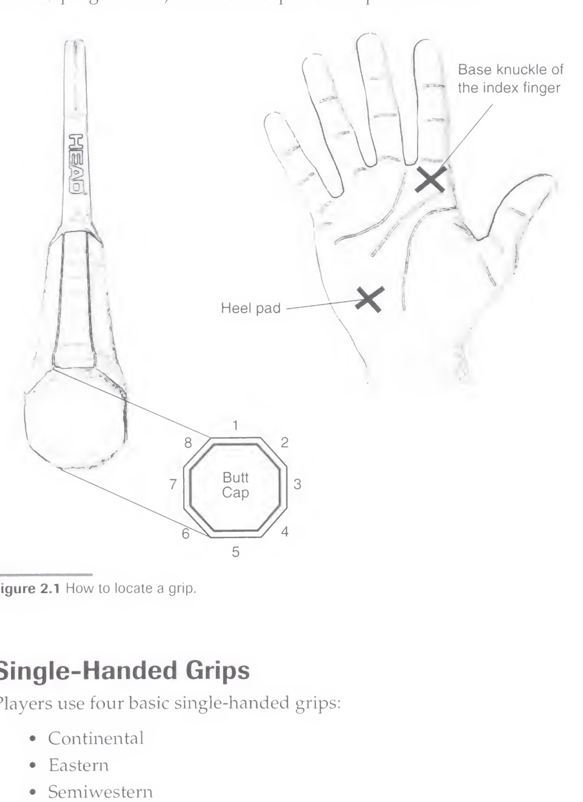
Người chơi có thể sử dụng sức mạnh của đối phương bằng cách hướng đầu vợt vào bóng. Nếu bóng tới rất khó, nên sử dụng cú xoay ngắn hơn. Để có một quả Bóng ngon ăn (sitter) dàng, có thể thực hiện một cú xoay lớn hơn. Stefan Edberg và Boris Becker là những tay bắt vô-lê cừ khôi vì một lý do hơn tất cả những lý do khác: cả hai đều có nền tảng và khả năng giữ Trọng tâm cơ thể tuyệt vời. Họ di chuyển vào vị trí tốt, họ giữ Trọng tâm cơ thể tốt — họ không với tới hoặc ngã khi đánh bóng — và họ sử dụng chuyển động vuốt ve ngắn. Kết quả là họ kiểm soát được đầu vợt, có rất ít sự thay đổi khi tiếp xúc. Họ cũng thích bắt vô-lê và vào lưới mọi lúc. Nếu người chơi muốn học chơi cú vô-lê (volley), anh ta hoặc cô ta có thể đọc tất cả về nó, nhưng điều quan trọng là phải thử nó. Người chơi phải đi lên đó. Nếu người chơi cố gắng 50 lần và chỉ đánh được 2 cú vô-lê, thì đó có thể là nhiều hơn 2 cú mà người đó từng đánh trước đó. Lần tới có thể là 3, và Sự Sự tự tin sẽ hình thành từ đó.
Giao bóng Người chơi nên giữ đầu vợt cao hơn khi thực hiện Vung vợt ra sau (lấy đà). Giao bóng là một trong những cú đánh cơ bản, một phần quan trọng của trò chơi. Nếu người chơi gặp khó khăn trong việc phối hợp động tác ném và vợt, hoặc đối phó với nắng và gió, đã đến lúc xem xét việc đơn giản hóa áp dụng cho các cú đánh khác. Không có chuyển động giao bóng nào là tốt nhất cho tất cả mọi người. Trong các cú giao bóng cổ điển của Pete Sampras hoặc Boris Becker, vợt và tay ném bắt đầu đi xuống cùng nhau, sau đó đầu vợt đi qua chân và quay trở lại hàng rào trong khi tay ném bắt đầu đưa lên. Người chơi đang thực hiện tốt cú xoay phức tạp và hoàn chỉnh này nên giữ nó.
Nhưng nếu người chơi gặp khó khăn, hãy làm cho việc giao bóng trở nên đơn giản hơn. Hãy xem những vận động viên chuyên nghiệp sử dụng chuyển động ngắn hơn với ít hoặc không có xu hướng hạ xuống khi bắt đầu, Patrick Rafter, Marcelo Rios, Iva Majoli, có thể kể tên ba người. Nhiều người chơi, bao gồm cả người mới bắt đầu, chiến binh weekenci và có lẽ là học sinh của bạn, nên cân nhắc chuyển động nhỏ gọn hơn.
Mary Joe Fernandez đến học viện khoảng một năm rưỡi trước và nói, "Nick, tôi không hài lòng với cú giao bóng của mình. Vợt và cú ném của tôi dường như không ăn khớp với nhau." Cô ấy nói rằng cú ném của cô ấy bị trôi và cô ấy không thể tạo ra đủ năng lượng. Để giúp giải quyết vấn đề, tôi bắt đầu bằng cách yêu cầu cô ấy thả vợt qua vai và giao bóng từ đó. Sau đó tôi yêu cầu cô ấy thực hiện động tác Vung vợt ra sau (lấy đà) một nửa. Khi cô ấy hỏi ý tôi nói điều đó là gì, tôi nói: “Chỉ cần xoay vai và giữ đầu vợt cao ngang thắt lưng khi thực hiện động tác vung vợt ra sau.” Cô ấy nói cảm giác thật tuyệt nhưng vẫn hỏi: "Nó trông như thế nào?" Một số người chơi ngần ngại làm điều gì đó khác biệt.
Tôi nói, "Tôi không quan tâm nó trông như thế nào. Điều quan trọng là điều gì xảy ra - kết quả." Sự điều chỉnh nhỏ này đối với một chuyển động hợp nhất đã giúp Fernandez Sự tự tin rằng lần ném bóng sẽ đi đến cùng một vị trí. Cô không phải lo lắng về những sai lệch. Cô ấy nói rằng nó đã tạo ra một sự khác biệt to lớn. Nếu người chơi gặp khó khăn trong việc căn thời gian tung và vung vợt hoặc với tính nhất quán của cú ném, họ nên cân nhắc việc điều chỉnh sang một động tác giao bóng đơn giản hơn.
Grips* Một lần nữa, tôi nhắc lại những ngày đầu đi dạy của mình. Tôi đã đi đến những cuốn sách. Các chuyên gia đã mô tả các tay cầm, và chỉ vậy thôi. Tôi rất vui vì đã không đọc hoặc làm theo hướng dẫn quá kỹ vì tôi nhanh chóng nhận ra rằng phong cách và cách cầm vợt của mỗi người sẽ là thương hiệu của họ. Nhiều yếu tố ảnh hưởng đến việc lựa chọn tay cầm: 1.
Xử lý các cú nảy từ các bề Mặt sân khác nhau 2. Xử lý bóng có độ cao khác nhau 3. Thêm độ xoáy cho bóng 4. Sử dụng vũ khí với những thay đổi nhỏ về cách cầm 5. Đánh khi đang lên 6. Sử dụng một tay so với hai tay Chúng ta có thể tiếp tục nói, nhưng trên thực tế, một số cách cầm vợt nhất định dường như hoạt động tốt hơn trong một số cú đánh nhất định. Một số cách cầm vợt ban đầu đã được mở rộng để bao gồm cả anh em họ, cô và chú của những kiểu đầu tiên. Trong những năm 1960 và 1970, các huấn luyện viên đã quá cứng nhắc về cách cầm vợt mà họ hướng dẫn học sinh của mình sử dụng. Không phải hôm nay. Các tay cầm bây giờ có kích thước từ một phần tư đến gần một nửa lượt (tức là từ lục địa đến bán tây hoặc thuận tay phía đông đến toàn bộ phía tây). Bất kể người chơi sử dụng cách cầm vợt nào, họ phải chấp nhận rằng các cú đánh, bề mặt và điều kiện khác nhau sẽ yêu cầu những thay đổi nhỏ trong cách cầm vợt tiêu chuẩn.
Cách cầm vợt của người chơi thường phát triển từ môi trường mà người chơi học trò chơi. Ví dụ, những người chơi đến từ Nam Mỹ lớn lên trên Sân Sân đất nện (đất đỏ) thường sử dụng cách cầm vợt từ phương Tây đến phương Tây vì họ phải đối phó với những quả bóng có độ nảy cao. Lưu ý rằng hình minh họa trong chương này dành cho người chơi thuận tay phải. Chúng tôi đã đính kèm bảng tham khảo cách cầm vợt ở phía sau phần cách cầm vợt (bảng 2.1 ở trang 78) phác thảo các vị trí cầm vợt dành cho người chơi thuận tay trái. Người chơi thuận tay đôi cũng sẽ thấy phần này hữu ích vì bảng tham chiếu cách cầm vợt cấu hình cách cầm vợt cho cả cú Cú thuận tay (forehand) (forehand) và trái tay bằng hai tay.
Tìm một tay cầm Để xác định vị trí của mỗi tay cầm, người chơi đặt đốt ngón tay gốc của ngón trỏ và phần đệm gót chân của lòng bàn tay lên góc xiên được đánh số như trong hình 2.1. Điều này sẽ *Phần này của Nick Bollettieri và Peter D. McCraw. đảm bảo rằng bàn tay được căn chỉnh chính xác trên tay cầm. Ví dụ: tay cầm kiểu lục địa được xác định bằng cách đặt đốt ngón tay cơ bản trên góc xiên 1-2 (góc xiên trên cùng bên phải) và phần đệm gót chân của lòng bàn tay trên góc xiên 2.
Hình 2.1 Cách xác định vị trí tay cầm. Cách cầm một tay Người chơi sử dụng bốn cách cầm cơ bản bằng một tay: • Lục địa • Đông • Bán tây • Tây Mỗi cách cầm này đều có ưu điểm và nhược điểm. Cuối cùng, người chơi cần sử dụng kiểu cầm vợt mang lại sự kết hợp giữa tính nhất quán, khả năng kiểm soát và sức mạnh cho phong cách chơi của mình.
Continental Grip Kiểu cầm lục địa đã từng là kiểu cầm vợt phổ biến được sử dụng để đánh các cú thuận tay (forehand), trái tay, các cú đánh đặc biệt, cú vô-lê, cú đánh đầu và giao bóng. Nó có nguồn gốc từ các Sân Sân đất nện mềm, độ nảy thấp của Châu Âu. Mặc dù nó đã được thay thế trong trò chơi ngày nay, nhưng nó vẫn đóng vai trò là điểm bám nền tảng cho cú vô-lê, giao bóng và đánh đầu cho hầu hết người chơi. Xem hình 2.2.
Hình 2.2 Cách Cách cầm vợt Continental được xác định bằng cách đặt đốt ngón tay gốc của ngón trỏ lên góc xiên 1-2 và phần đệm gót chân của lòng bàn tay ở góc xiên 2. Ưu điểm Nhược điểm • Bóng thấp và căng • Bóng cao • Không thể tạo ra nhiều Xoáy lên • Kiểm soát • Khó tạo ra lực • Các cú đánh đặc biệt - góc Xoáy lên và Cú lốp bóng (lob) • Chuyển sang lưới • Cú đánh thả • Xoay khi giao bóng • Cẳng tay yếu • Khó tạo ra lực • Các cú đánh đặc biệt - góc Xoáy lên và Cú lốp bóng (lob) • Chuyển sang lưới • Cú đánh thả • Xoay khi giao bóng • Cẳng tay yếu • Bóng xoáy xuống cú vô-lê • Yêu cầu thời gian hoàn hảo • Giao bóng và vô-lê thuận tay Khi quần vợt đã phát triển, kiểu cầm vợt thuận tay kiểu lục địa đã trở thành kiểu cầm vợt ít được yêu thích nhất.
Tôi thường không khuyên bạn nên sử dụng nó như một kiểu cầm thuận tay vì nó đòi hỏi một cẳng tay cực kỳ khỏe và thời gian hoàn hảo. Cú Cú trái tay (backhand) (backhand) ngày nay ít được sử dụng thường xuyên hơn để đánh Cú trái tay (backhand) (backhand) tay mạnh mẽ. Mặc dù có hiệu quả trong việc tạo ra một cú Cú trái tay (backhand) (backhand), nhưng cách cầm kiểu lục địa không mang lại sức mạnh hoặc sự ổn định ở đầu vợt để xử lý những cú đánh đất mạnh từ đối thủ. Rất khó để tạo ra Xoáy lên và tôi chỉ giới thiệu nó cho những người chơi đang học cắt lát.
Cú vô-lê (volley) Kiểu cầm lục địa là kiểu cầm ưa thích của tôi để dạy cú vô-lê (volley) cho những người chơi nâng cao. Kiểu cầm vợt lục địa không yêu cầu thay đổi cách cầm và nó mang lại sự hỗ trợ tốt nhất cho cổ tay khi đánh các cú vô-lê thuận tay và trái tay. Trong trò chơi ngày nay, đây là kiểu cầm vợt ưa thích của hầu hết các chuyên gia hàng đầu. Kiểu cầm này cho phép người chơi trên lưới thực hiện các cú giao bóng, đánh trên cao, thuận tay và trái tay mà không cần thay đổi cách cầm.
Cú thuận tay (forehand) phía Đông Kiểu cầm vợt phía đông bắt nguồn từ các Mặt sân có độ nảy trung bình ở miền đông Hoa Kỳ. Đó là cách cầm vợt thuận tay cổ điển. Tay cầm phía đông mang đến sự linh hoạt cho các phong cách cá nhân, sự thoải mái cho người mới bắt đầu và tính linh hoạt cho mọi bề mặt. Đây là cách cầm đơn giản nhất để học và sử dụng. Xem hình 2.3. Hình 2.3 Cách cầm vợt thuận tay phía đông được xác định bằng cách đặt khớp gốc của ngón trỏ ở góc xiên 3 và phần đệm gót chân của lòng bàn tay ở góc xiên 2-3.
Mẹo cầm vợt Một số người chơi áp dụng cách cầm vợt thuận tay một cách tự nhiên với tất cả các ngón tay chạm vào nhau và ngón cái chạm vào ngón trỏ. Khi sử dụng cách cầm vợt đó, hầu hết người chơi đều cảm thấy mất cảm giác và khả năng kiểm soát. Tôi hướng dẫn học trò của mình dang rộng ngón trỏ ra để cải thiện cả cảm giác và độ ổn định của đầu vợt khi tiếp xúc.
Trái tay phía đông Trái tay phía đông, kiểu cầm trái tay cổ điển, mang lại sự ổn định tối đa và cho phép người chơi lái bóng và đánh với Xoáy lên. Pete Sampras và Petr Korda là một trong số những chuyên gia sử dụng cách cầm vợt này. Tôi khuyên hầu hết người chơi nên áp dụng cách cầm vợt mạnh theo hướng Đông đối với các Cú trái tay (backhand) (backhand) tay Xoáy lên. Xem hình 2.4.
Hình 2.4 Tay cầm trái tay phía đông được xác định bằng cách đặt đốt ngón tay gốc của ngón trỏ trên góc xiên 1 và phần đệm gót chân của lòng bàn tay trên góc xiên 1-8. Mẹo cầm vợt Từ cách cầm vợt thuận tay phía đông, một phần tư vòng sang trái sẽ tạo ra cú Cú trái tay (backhand) (backhand) phía đông. Khớp gốc của ngón trỏ phải di chuyển từ góc xiên 3 đến góc xiên 1. Miếng đệm gót chân phải di chuyển từ góc xiên 2-3 đến góc xiên 1-8.
Ưu điểm Nhược điểm • Dễ cho người mới bắt đầu • Khó với bóng rất cao • Dễ tạo lực • Bóng cao đến thắt lưng • Thích ứng với các bề mặt khác nhau • Đa dạng — Xoáy lên, xoáy xuống, công động phẳng Cú thuận tay (forehand) bán phương Tây Kiểu cầm này mang lại cả sức mạnh và khả năng kiểm soát cú thuận tay (forehand). Người mới bắt đầu cảm thấy thoải mái với nó vì lòng bàn tay hỗ trợ vợt và mang lại sự ổn định bổ sung cho đầu vợt khi tiếp xúc. Nó đặc biệt thích hợp để đánh các cú giật thuận tay và Xoáy lên mạnh mẽ. Xem hình 2.5.
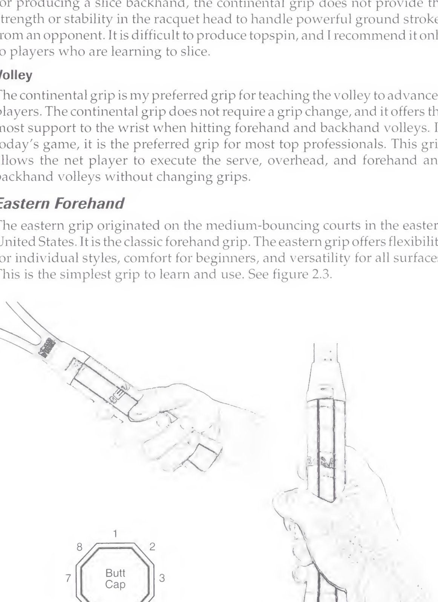
Mẹo cầm vợt Tôi khuyên những người mới bắt đầu nên bắt đầu và duy trì cách cầm vợt mạnh từ đông đến bán tây ở cú thuận tay (forehand). Ưu điểm Nhược điểm • Bóng cao ngang vai • Bóng thấp • Những cú đánh chạm đất Xoáy lên nặng • Khó thực hiện cú cắt trong các cú đánh thả • Đánh quả bóng có độ xoáy lớn, nặng • Khó tung cú vô-lê ở mức thấp • Xoay những cú vô-lê có lực và độ xoáy • Cần thay đổi cách cầm vợt lớn • Ngụy trang khi đánh Butt Cap eV=/4 Hình 2.5 Cách cầm vợt thuận tay nửa tây được định vị bằng cách đặt đốt ngón chân gốc của ngón trỏ lên góc xiên 4 và phần đệm gót chân của lòng bàn tay ở trên góc xiên 4.
Cú trái tay (backhand) bán tây phương Cú trái tay (backhand) bán tây phương giống như cú thuận tay (forehand) bán tây liên quan đến bàn tay và vợt, nhưng bị đảo ngược. Cách cầm vợt này mang lại độ Xoáy lên đáng kể nhưng đòi hỏi sức mạnh và khả năng tăng tốc vợt khi tiếp xúc. Cách cầm này có xu hướng khiến người chơi dẫn trước bằng khuỷu tay trong khi vung vợt về phía trước. Xem hình 2.6.
Người chơi có trình độ cao hơn có thể cân nhắc cách cầm vợt này. Các tay vợt chuyên nghiệp sử dụng nó thường xuyên khi thực hiện các cú Cú lốp bóng (lob) Xoáy lên và các cú đánh góc. Tôi không khuyến nghị cách cầm vợt này cho phần lớn người chơi. Ưu điểm Nhược điểm • Áp dụng topspin • Khó áp dụng các cú đánh chuyên dụng - các góc và Cú lốp bóng (lob) Xoáy lên từ những quả bóng có chiều cao trung bình • Khó đánh những Cú Cú cú bỏ nhỏ (drop shot) (drop shot) (drop shot) • Khó đánh cú công Cú đánh phẳng • Độ xoáy nặng từ cú đánh xa • Khó đánh rất thấp Hình 2.6 Cách cầm vợt trái tay nửa tây được định vị bằng cách đặt khớp ngón trỏ gốc trên góc xiên 8 và phần đệm gót chân của lòng bàn tay trên góc xiên 8.
Western Forehand Kiểu cầm này bắt nguồn từ Mặt sân xi măng có độ nảy cao ở miền Tây Hoa Kỳ. Hạn chế của cách cầm này là nó đóng Mặt vợt quá sớm trước khi tiếp xúc. Đây là cách cầm bóng tuyệt vời đối với bóng cao và Xoáy lên nhưng lại khó xử lý đối với bóng thấp và xoáy xuống. Xem hình 2.7. Những tay vợt sử dụng nhiều Xoáy lên như Thomas Muster, Sergi Bruguera và Alberto Berasategui sẽ sử dụng cách cầm vợt này. Trừ khi người chơi có cổ tay vô cùng khỏe và khả năng căn thời gian hoàn hảo, nếu không cách cầm vợt kiểu phương Tây sẽ gây ra vấn đề.
Tôi không khuyến nghị nó cho hầu hết người chơi. Ưu điểm Nhược điểm • Tốt nhất cho bóng rất cao • Rất khó nâng thấp • Có thể tấn công bóng cao • Có thể tạo ra Tốc độ đầu vợt rất lớn • Không thể cắt, chip hoặc đánh những cú đánh thả • Có thể tạo ra đáng kể • Cần thay đổi độ bám xoáy rất lớn • Tốt cho Xoáy lên và • Khó điều khiển các góc bóng từ những cú chuyền có độ cao trung bình Hình 2.7 Cách cầm vợt thuận tay phía Tây được định vị bằng cách đặt đốt ngón tay gốc của ngón trỏ trên góc xiên 5 và đệm gót chân của lòng bàn tay hướng lên trên góc xiên 5.
Cách cầm vợt hai tay Cách cầm vợt thuận tay hai tay. Pancho Segura, Monica Seles, Jan-Michael Gambill và Fabrice Santoro chỉ là một số trong số những tay vợt đã thành công khi sử dụng cú thuận tay (forehand) hai tay. Gambill và Santoro, những kỳ thủ xuất sắc sử dụng hai tay từ cả hai phía, có phong cách khác nhau. Jan-Michael hung hãn hơn nhiều và ra đòn với ít độ xoáy hơn, trong khi Fabrice là một tay đấm phản công với đủ loại cú đánh đặc biệt.
Nếu người chơi đánh bằng hai tay ở cả hai bên và không thay Đổi bên (switch) của các tay, thì tay trên không thể đóng vai trò thống trị ở cả hai bên. Ví dụ, bên trái của Monica Seles không mạnh bằng bên phải của cô ấy vì tay trên không thể đẩy đầu vợt qua như khi đánh từ bên phải. Một trong những yếu tố quan trọng để sử dụng hai tay từ cả hai bên là tốc độ chân. Phạm vi tiếp cận hạn chế mà kiểu cầm này mang lại đòi hỏi tốc độ và sự nhanh nhẹn cao.
Mẹo tham quan Vòng đua năm 1999 đã xác định rõ ràng rằng Monica Seles chậm hơn so với vài năm trước. Cô ấy không còn có thể thống trị sức mạnh và khả năng thể thao của các tay vợt trong giải đấu dành cho nữ. Bây giờ cô ấy tấn công phòng thủ khi bị ép ra biên hoặc khi di chuyển lên để lấy bóng ngắn. Cô ấy thậm chí còn bắt đầu đánh một số cú thuận tay (forehand) bằng một tay.
Các biến thể cách cầm của cú thuận tay (forehand) hai tay về cơ bản giống như cách cầm của cú Cú trái tay (backhand) (backhand) hai tay. Sự khác biệt duy nhất là tay phải hay tay trái ở trên. Bảng tham khảo cách cầm vợt ở trang 78 phác thảo các biến thể cách cầm vợt hai tay cho cả người chơi thuận tay phải và tay trái. Bảng xác định từng cách cầm vợt thuận tay bằng hai tay.
Cách cầm vợt trái tay bằng hai tay. Giống như cú thuận tay (forehand), có một số cách kết hợp cách cầm vợt cho cú Cú trái tay (backhand) (backhand) đôi. Mỗi cái đều có ưu điểm và nhược điểm. Các biến thể của cách cầm vợt Ngày nay có một số biến thể của cách cầm vợt được sử dụng khi đánh bằng hai tay. Chúng áp dụng cho cả cú thuận tay (forehand) hai tay và Cú trái tay (backhand) (backhand) tay hai tay.
Các hình minh họa là của người chơi thuận tay phải, nhưng bảng tham chiếu cách cầm vợt sẽ giúp xác định vị trí cách cầm vợt của tay trái. Tay dưới Thuận tay phía đông Thuận tay phía đông Cú trái tay (backhand) phía Đông Cú thuận tay (forehand) nửa phương Tây Thuận tay phía Đông Cú thuận tay (forehand) phía Đông Cú thuận tay (forehand) phía Đông Cú thuận tay (forehand) phía đông Lục địa Cú thuận tay (forehand) phía đông Lục địa Cú thuận tay (forehand) bán phía đông Lục địa Thuận tay phương Tây Roie của mỗi tay Khi thảo luận về cách cầm vợt hai tay, điều quan trọng là phải phân biệt vai trò của mỗi tay khi đánh một cú Cú trái tay (backhand) (backhand).
Tay dưới Trong khi vung vợt, tay dưới luôn đóng vai trò hỗ trợ, giúp tính thời gian, ổn định đầu vợt và kiểm soát. Tôi thích học sinh của tôi sử dụng kiểu cầm vợt lục địa bằng tay dưới hơn vì họ có thể đánh bằng một tay đối với những quả bóng rộng, những cú tiếp cận cắt lát, và những cú vô-lê. Mats Wilander đã sử dụng thành công phong cách này.
Người chơi tay bài hàng đầu phải chấp nhận rằng tay bài hàng đầu đóng vai trò thống trị và dẫn dắt chương trình! Tay trên tạo ra cả gia tốc pcwer và đầu vợt. Lực đến từ tay trên (phía bên trái đối với người chơi thuận tay phải), giống như cú thuận tay (forehand) trái cho phép vai xoay qua bóng. Tình huống này trái ngược với cú Cú trái tay (backhand) (backhand) bằng một tay, trong đó vai trước là yếu tố chính và bên trái đóng vai trò hỗ trợ bằng cách chuyển đòn bẩy sang bên phải.
Trái tay hai tay — Thuận tay phía đông/Thuận tay phía đông Với cách cầm này, bàn tay phía dưới (cổ tay) phải đặt ngửa về phía sau trong cú đánh về phía sau, khiến việc kiểm soát đầu vợt trở nên khó khăn hơn cũng như làm tăng xu hướng Mặt vợt hơi mở ra khi tiếp xúc. Tay cầm phía đông của tay dưới có thể được sử dụng để thực hiện các cú cắt và bóng khi tay trên được thả ra. Xem hình 2.8.
Hình 2.8 Vị trí cầm nắm phía đông/đông được xác định bằng cách đặt đốt ngón tay dưới của ngón trỏ lên góc xiên Chà miếng đệm gót chân của lòng bàn tay theo góc xiên 2-3. Đốt ngón tay trên của ngón trỏ được đặt ở góc xiên 7, và phần đệm gót chân của lòng bàn tay được đặt ở góc xiên 7-8. Trái tay hai tay — Thuận tay phía Đông/Thuận tay bán Tây / Tình huống này tương tự như kiểu lục địa/bán tây và tùy thuộc vào sự lựa chọn của từng cá nhân. Tay dưới có thể thực hiện cú cắt và vô-lê một cách thỏa đáng, nhưng cần phải thay đổi cách cầm nếu người chơi muốn tìm cách cầm cú cắt và vô-lê lý tưởng cho lục địa. Xem hình 2.9.
Hình 2.9 Vị trí cầm nắm phía đông/bán tây được xác định bằng cách đặt đốt ngón tay dưới của ngón trỏ lên góc xiên 3 và phần đệm gót chân của lòng bàn tay lên góc xiên 2-3. Đốt ngón tay gốc của ngón trỏ được đặt ở góc xiên 6, với gót chân của lòng bàn tay ở góc xiên 6. Trái tay hai tay - Thuận tay phía Đông/Thuận tay phía Tây Sự kết hợp cách cầm vợt này đòi hỏi tay trên không chỉ để kiểm soát điểm tiếp xúc mà còn làm chủ cú đánh với một cú đánh hoàn toàn theo sau quanh vai đối diện. Xem hình 2.10.
Jim Courier đã sử dụng cách cầm vợt này trong vài năm đầu tiên tham gia chuyến lưu diễn, và anh ấy đã bị tấn công về phía này cho đến khi tôi đề xuất một cách tiếp theo lớn hơn nhiều. Tay trên đóng vai trò chiếm ưu thế hơn vì tay trái của Jim quá khỏe nên anh khó có thể theo dõi lâu dài. Với cách cầm vợt này, người chơi phải xử lý Cú trái tay (backhand) (backhand) tay giống như cú thuận tay (forehand) trái, đánh nó với một cú đánh hoàn toàn quanh vai đối diện. Courier đã có thể nhúng bóng trước một quả giao bóng và một cú vô-lê và đánh sâu hơn với độ xoáy nhờ sự thay đổi.
Hình 2.10 Tay cầm phía đông/tây được xác định bằng cách đặt đốt ngón tay dưới của ngón trỏ trên góc xiên 3 và phần đệm gót chân của lòng bàn tay trên góc xiên 2-3. Đốt ngón tay trên của ngón trỏ được đặt ở góc xiên 5, và phần đệm gót chân của lòng bàn tay được đặt ở góc xiên 5. Trái tay hai tay - Trái tay phía đông/Thuận tay bán tây e Sự kết hợp cách cầm bất thường này tùy thuộc vào sự lựa chọn của mỗi cá nhân. Một đặc điểm là người chơi không có nhiều lựa chọn khi tay bài trên được thả ra. Cách cầm vợt trái tay phía Đông của tay dưới không lý tưởng cho cú cắt bóng, tiếp cận hoặc bắt vô-lê. Tuy nhiên, cách cầm vợt bán tây của tay trên cung cấp mức hỗ trợ lý tưởng, cho phép nó đóng vai trò chủ đạo trong quá trình thực hiện. Xem hình 2.11.
Hình 2.11 Cách cầm vợt trái tay phía đông/bán tây được xác định bằng cách đặt đốt ngón tay dưới của ngón trỏ ở góc xiên 1 và phần đệm gót chân của lòng bàn tay ở góc xiên 8. Đốt ngón tay trên của ngón trỏ được đặt ở góc xiên 6, với gót chân của lòng bàn tay ở góc xiên 6. Cú Cú trái tay (backhand) (backhand) hai tay — Cú thuận tay (forehand) lục địa/phương Đông Kiểu cầm này cho phép người chơi buông ra bằng tay trên khi tiếp xúc và đánh một cú cắt, đánh rơi hoặc vô-lê bằng một tay bằng kiểu cầm vợt lục địa. Mặc dù tay trên không cung cấp nhiều hỗ trợ như cách cầm vợt bán tây, nhưng sự kết hợp cách cầm này sẽ Giao bóng / Cú giao bóng tốt cho người chơi. Xem hình 2.12.
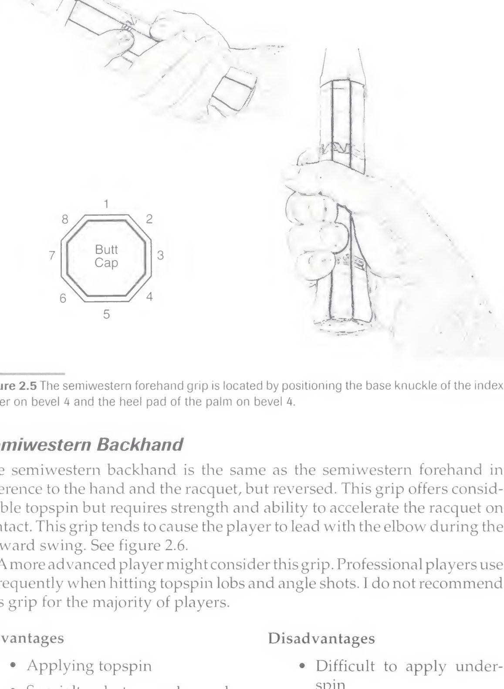
Hình 2.12 Tay cầm lục địa/hướng đông được xác định bằng cách đặt đốt ngón tay dưới của ngón trỏ trên góc xiên 2 và phần đệm gót chân của lòng bàn tay trên góc xiên 1-2. Đốt ngón tay trên của ngón trỏ được đặt ở góc xiên 7, và phần đệm gót chân của lòng bàn tay được đặt ở góc xiên 7-8. Trái tay hai tay - Thuận tay lục địa/bán tây Đây là khuyến nghị cách cầm của tôi cho cú Cú trái tay (backhand) (backhand) hai tay. Tay cầm bán tây của tay trên ở vị trí lý tưởng để đóng vai trò chủ đạo, với lòng bàn tay nằm dưới tay cầm, mang lại sự hỗ trợ tối đa. Cách Cách cầm vợt Continental của tay dưới cho phép người chơi có thể cắt, thả cú sút, vô-lê và tiếp cận bóng rộng khi tay trên được thả ra.
Xem hình 2.13. Để củng cố vai trò chủ đạo của lối chơi tay trên, tôi yêu cầu học sinh của mình thực hành đánh bằng một tay, tay trên, theo kiểu cầm vợt bán tây, dạy họ sử dụng tay trên để đưa đầu vợt về phía trước. Martina Hingis và cả hai chị em nhà Williams đều thực hiện bài tập này hàng ngày và Andre Agassi cũng vậy. Hình 2.13 Tay cầm kiểu lục địa/bán tây được xác định bằng cách đặt đốt ngón tay dưới của ngón trỏ ở góc xiên 2 và phần đệm gót chân của lòng bàn tay ở góc xiên 1-2. Đốt ngón tay trên của ngón trỏ được đặt ở góc xiên 6, với miếng đệm gót chân của lòng bàn tay ở góc xiên 6.
Kiểu cầm vợt thuận tay kiểu lục địa/miền Tây Cách cầm này rất giống với kiểu cầm trái tay kiểu lục địa/bán tây. Tay trên nằm sâu hơn một chút dưới cán vợt, khiến nó đóng vai trò chủ đạo hơn trong suốt quá trình vung vợt, đặc biệt là trong quá trình thực hiện cú đánh tiếp theo. Cách cầm vợt lục địa của tay dưới cho phép người chơi có thể cắt, thả cú sút, vô-lê và chạm bóng rộng khi tay trên được thả ra. Xem hình 2.14.
Với cách cầm vợt này, Cú trái tay (backhand) (backhand) tay phải được coi giống như cú thuận tay (forehand) trái, đánh nó với một cú đánh hoàn toàn quanh vai đối diện. Người chơi ngày nay đang sử dụng những tay cầm nào? Những tay vợt nam và nữ hàng đầu chủ yếu sử dụng các kiểu cầm thuận tay từ kiểu đông đến nửa tây. Hình 2.1 4 Tay cầm lục địa/tây được định vị bằng cách đặt đốt ngón tay dưới của ngón trỏ trên góc xiên 2 và phần đệm gót chân của lòng bàn tay trên góc xiên 1 -2. Đốt ngón tay trên của ngón trỏ được đặt ở góc xiên 5, và phần đệm gót chân của lòng bàn tay được đặt ở góc xiên 5.
Cách cầm vợt thuận tay của những tay vợt hàng đầu Ladies Pete Sampras — phía đông Lindsay Davenport — phía đông Marcelo Rios — phía đông Martina Hingis — phía đông mạnh mẽ Patrick Rafter — phía đông Jana Novotna — phía đông Carlos Moya — phía tây Arantxa Sanchez-Vicario bán tây Petr Korda — phía đông Andre Agassi — nửa tây Venus Williams — nửa tây Monica Seles — hai tay cả hai bên Alex Corretja — nửa tây Karol Kucera — nửa tây Conchita Martinez — nửa tây Nathalie Tauziat — lục địa Tim Henman — phía đông Yevgeny Kafelnikov — mạnh về phía đông/bán tây Patty Schnyder — bán tây Dominique van Roost — phía đông Khuyến nghị về cách cầm vợt Các cú đánh cơ bản, thuận tay Mạnh phía đông đến bán tây Các cú đánh cơ bản, trái tay Một tay (người mới bắt đầu): đông đến bán tây Một tay (nâng cao): đông đến bán tây Tay đôi — tay trên: thuận tay mạnh phía đông đến thuận tay nửa tây Hai tay — tay dưới: lục địa Lát: lục địa đến phía đông Senw Giai đoạn phát triển: cú thuận tay (forehand) mạnh từ phía đông đến phía đông Khi người chơi phát triển - giao bóng đầu tiên: lục địa Khi người chơi phát triển - giao bóng thứ hai: trái tay phía đông yếu đến lục địa. Xu hướng trong các cấp bậc chuyên nghiệp là cách cầm giao bóng chuyển từ kiểu cầm vợt lục địa sang kiểu cầm vợt yếu phía đông sang kiểu cầm vợt phía đông. Boris Becker và Pete Sampras đã làm theo mô hình này.
Trên cao Giai đoạn phát triển: thuận tay phía đông đến thuận tay phía đông Khi người chơi phát triển: cú Cú trái tay (backhand) (backhand) phía đông đến yếu Cú vô-lê phía đông Giai đoạn phát triển: thuận tay phía đông và trái tay phía đông Một tay: lục địa Hai tay — tay trên: thuận tay phía đông mạnh đến thuận tay nửa tây Hai tay — tay dưới: lục địa Khi một người chơi phát triển, hãy di chuyển cách cầm cú vô-lê (volley) về phía lục địa mà không cần thay đổi cách cầm.
Các cú đánh đặc biệt Cú thuận tay (forehand) Xoáy lên thuận tay: mạnh phía đông đến nửa tây Trái tay một tayT bán tây Trái tay đôi — tay trên: thuận tay mạnh phía đông đến thuận tay bán tây Trái tay hai tay — tay dưới: lục địa Lốp Xoáy cắt (underspin) (Xoáy cắt (underspin) (slice)) thuận tay: lục địa đến yếu phía đông Trái tay một tay: lục địa đến yếu phía đông Trái tay hai tay — tay trên: thuận tay mạnh phía đông đến thuận tay nửa tây Trái tay hai tay — tay dưới: lục địa Góc Xoáy lên tay: mạnh phía đông đến nửa tây Trái tay một tay: mạnh phía đông đến nửa tây Trái tay đôi — tay trên: thuận tay mạnh phía đông đến thuận tay nửa tây Trái tay hai tay — tay dưới: lục địa Cú đánh thả thuận tay: lục địa đến yếu phía đông Trái tay một tay: lục địa đến yếu phía đông Trái tay đôi — tay trên: thuận tay mạnh phía đông đến thuận tay bán phương Tây Trái tay hai tay - tay dưới: lục địa Nửa cú vô-lê (volley) Một số người chơi thực hiện chuyển đổi nhanh sang cú vô-lê nắm bắt được cú đánh tiếp cận của họ, nhưng những người khác thì không. Sử dụng kiểu cầm vợt lục địa cho một nửa cú vô-lê cho phép người chơi đi vào dưới bóng, nhưng người chơi sẽ khó thực hiện được cú Xoáy lên khi buộc phải thực hiện một nửa cú vô-lê. Tôi khuyên các học trò của tôi nên sử dụng những thứ sau: Thuận tay: mạnh phía đông Trái tay một tay: lục địa đến yếu phía đông Trái tay đôi — tay trên: thuận tay mạnh phía đông đến thuận tay nửa tây Trái tay hai tay — tay dưới: lục địa . Lợi ích của việc sử dụng cách cầm vợt lục địa cho tay dưới bao gồm khả năng thả tay trên và mở Mặt vợt để áp dụng xoáy xuống.
Người chơi phải cẩn thận khi thực hiện thay đổi cách cầm vợt cho nửa cú vô-lê. Cú đánh này thường bị áp lực. Khi thực hiện cú đánh phản xạ, rất khó để tìm được cách cầm vợt mới. Học sinh có thể bị mắc kẹt giữa cách nắm cũ và cách mới. Nói chung, tôi sẽ chỉ thực hiện những thay đổi đối với cách cầm vợt nửa chuyền đối với học viên có kỹ thuật cầm vợt tiếp đất và đánh tiếp cận cực tốt.
Mẹo tham quan Khuyến khích học trò của bạn di chuyển nhanh chóng sau một pha tiếp cận và quyết tâm không đánh một nửa quả vô-lê. Mục tiêu là loại bỏ sự do dự khi đánh một nửa quả vô-lê và quả vô-lê. Hãy nhớ rằng những tay đấm phản công như Agassi, Courier và Hingis thấy những cú vô-lê một nửa là một niềm vui. Lời khuyên về cách cầm vợt 1. Cách cầm vợt là điều cơ bản cho mọi cú đánh. Việc điều chỉnh có thể khiến bạn cảm thấy không thoải mái lúc ban đầu, nhưng khi luyện tập cách cầm vợt sẽ trở thành bản chất thứ hai và trò chơi của học viên chắc chắn sẽ được cải thiện.
2. Độ bám phải không đổi trong suốt cú đánh. 3. Học sinh phải kiên nhẫn với cách cầm và cảm thấy thoải mái với nó. 4. Học viên không nên ngại thay đổi cách cầm vợt nếu làm như vậy có thể giúp ích cho trò chơi của họ. Mặc dù cách cầm, thế đứng và cú xoay đều đã thay đổi trong 20 năm qua, nhưng các trường hợp ngoại lệ vẫn là quy luật. Đề xuất của tôi luôn là người chơi hãy tìm ra những gì phù hợp với mình, thảo luận với huấn luyện viên và kiên trì với nó!
Bảng tham khảo cách cầm vợt Bảng 2.1 được thiết kế để cung cấp cái nhìn tổng quan về tất cả các cách cầm vợt cho cả người chơi thuận tay phải và tay trái. Chúng tôi hy vọng rằng bạn thấy nó hữu ích trong việc hiểu rõ hơn về từng cách cầm vợt. Xem thêm hình 2.15. Xây dựng nền tảng vững chắc Trò chơi của người chơi bắt đầu với một nền tảng vững chắc. Chúng ta có thể nói cả ngày về cách tốt nhất để chuẩn bị, liên lạc và thực hiện theo, nhưng sẽ không có nhiều khác biệt về kết quả nếu người chơi thiết lập và liên lạc từ một nền tảng yếu. Nền tảng vững chắc giúp người chơi có cơ hội tốt nhất để phản ứng nhanh và giữ Trọng tâm cơ thể khi thực hiện cú đánh.
Trung Trọng tâm cơ thể Kiểm soát trọng tâm là rất quan trọng để chơi quần vợt xuất sắc. Những tay vợt vĩ đại như Michael Chang, Thomas Muster, Martina Hingis, Steffi Graf, và Bảng tham khảo kiểu cầm vợt Người chơi thuận tay phải Tay cầm đơn tay Tay cầm cơ bản Đốt ngón tay cơ bản Miếng đệm gót chân Ngón tay cơ sở Miếng đệm gót chân Lục địa 1-2 1-8 Tay thuận phía đông 2-3 7-8 Tay trái phía đông 1-8 1-2 Tay cầm nửa tây Tây Tay trái nửa tây Tây Tay dưới Tay trên Tay dưới Bàn tay trên Bàn tay cơ bản Gót chân cơ bản Gót chân Đế gót Tay nắm đôi miếng đệm đốt ngón tay miếng đệm đốt ngón tay miếng đệm đốt ngón tay! pad Miền Đông/miền Đông 2-3 7-8 7-8 2-3 Miền Đông/ miền bán tây fh 2-3 6-7 Miền Đông/khu vực miền Tây 2-3 7-8 Miền Đông bh/ miền bán tây fh 1-8 1-2 Miền lục địa/ miền đông fh 1-2 7-8 1-8 2-3 Lục địa/ miền bán tây fh 1-2 1-8 Lục địa/ miền tây fh 1-2 1-8 Amanda Coetzer sở hữu kỹ năng di chuyển đặc biệt. Bạn có bao giờ thắc mắc tại sao họ lại có thể đạt được những thành tích thể thao tuyệt vời như vậy không? Một số khái niệm chính có thể giúp bạn hiểu rõ hơn về thành công của chúng: • Khối tâm. Trọng tâm là điểm cân bằng giả định của cơ thể. Trung bình nó bằng 55% chiều cao đối với phụ nữ và 57% đối với nam giới. Khối tâm là điểm cân bằng không đổi, luôn nằm trong cơ thể. Ba yếu tố ảnh hưởng đến trọng tâm - chiều cao, hình dáng cơ thể và giới tính.
• Trọng tâm. Trọng tâm là điểm cân bằng sẽ dịch chuyển trong cơ thể khi cơ thể di chuyển. Nếu một người đứng yên và thẳng đứng thì trọng tâm sẽ bằng trọng tâm. Khi một người di chuyển, trọng tâm sẽ dịch chuyển trong cơ thể và thậm chí có thể di chuyển ra ngoài cơ thể. Sự dịch chuyển trọng tâm ra xa khối tâm tạo ra chuyển động.
Hình 2.15 Tìm cách cầm nắm cho tay trái hoặc tay phải. • Sự cân bằng. Một người giữ Trọng tâm cơ thể khi anh ta hoặc cô ta tạo ra trạng thái cân bằng trung lập và nằm trong cơ sở hỗ trợ. Một ví dụ về cơ sở hỗ trợ trong quần vợt là khi một tay vợt vào lưới và thực hiện một bước tách đôi. Mục tiêu của bước tách bóng là thay đổi động lượng về phía trước thành một thế đứng cân bằng, cho phép người chơi phản ứng với các cú thuận tay (forehand) hoặc trái tay hoặc di chuyển theo đường chéo theo một trong hai hướng.
• Mô men quán tính. Để khắc phục mô men quán tính, điều quan trọng là phải có trọng tâm thấp hơn trong đế đỡ. • Góc dương. Đế đỡ phải có góc dương thích hợp để có thể tác dụng lực, phản lực và di chuyển theo bất kỳ hướng nào. Những góc này giúp đạt được phản ứng tuyệt vời, tốc độ nhanh ở bước đầu tiên, khả năng tăng tốc, giảm tốc và Đổi hướng bóng 360 độ.
Các yếu tố ảnh hưởng đến chuyển động Chúng ta thường thấy những người thấp hơn có Điểm lợi thế (advantage) hơn trong việc di chuyển so với những người cao hơn. Một số yếu tố gây ra tình trạng này. Đầu tiên là cách vận động viên phát triển. Những đứa trẻ cao thường được chọn để đóng những vai không đòi hỏi vận động nhiều, chẳng hạn như trụ trong bóng rổ, đường biên trong bóng đá hoặc một tay vợt một chiều, chiếm ưu thế trong quần vợt. Chuyên môn hóa này cuối cùng sẽ hạn chế chất lượng và số lượng chương trình vận động cũng như sự phối hợp mà vận động viên có thể có. Vận động viên bị bỏ lỡ quá trình phát triển sớm sẽ luôn bị thua thiệt một chút mặc dù sau đó đã cố gắng làm chủ chuyển động.
Những người chơi cao hơn với chân tay dài thường gặp bất lợi đôi chút so với những người chơi thấp hơn, những người có xu hướng nhanh hơn vì họ có chân tay ngắn hơn. Nếu một người cao hơn có độ linh hoạt, khả năng di chuyển, độ đàn hồi và sức mạnh tương đối giống như một người chơi thấp hơn và cả hai đều có cơ chế sinh học hiệu quả như nhau thì Điểm lợi thế (advantage) sẽ chuyển sang người chơi cao hơn vì chân tay dài hơn. Tuy nhiên, người chơi cao hơn thường khó bắt kịp tốc độ di chuyển của người chơi nhỏ gọn hơn.
Easy Balls Tennis đưa ra một số ví dụ về cách áp dụng các kỹ năng di chuyển. Trong những cú đánh ở cự ly gần, vận động viên giỏi có thể dễ dàng giữ Trọng tâm cơ thể. Một ví dụ hoàn hảo là Steffi Graf, người dường như nổi trên sân. Giống như nhiều người chơi, cô ấy giữ hông của mình hướng xuống, nhưng cô ấy thực hiện một công việc đặc biệt là giữ vững tư thế đứng, giữ hai chân cách xa nhau để trọng tâm của cô ấy lơ lửng trong chân đế với các góc dương. Lập trường này rất quan trọng cho phong trào quần vợt thành công.
Bóng rộng Khi chơi bóng rộng hơn một chút, người chơi có thể chơi với tư thế đóng và sau đó vuông góc hoặc đánh với tư thế mở. Dù bằng cách nào thì người chơi cũng hoàn thành bình phương trên lưới. Bằng cách Kết thúc cú đánh hình vuông, người chơi sẽ đưa chân vòng lại để khi hoàn thành cú đánh, anh ta hoặc cô ta quay trở lại vị trí hỗ trợ với các góc dương cho phép Đổi hướng bóng trở lại tâm sân. Một trong những Điểm lợi thế (advantage) lớn của việc đánh mở là người chơi có thể áp dụng các góc tích cực và ngăn chặn động lượng đưa họ ra ngoài sân.
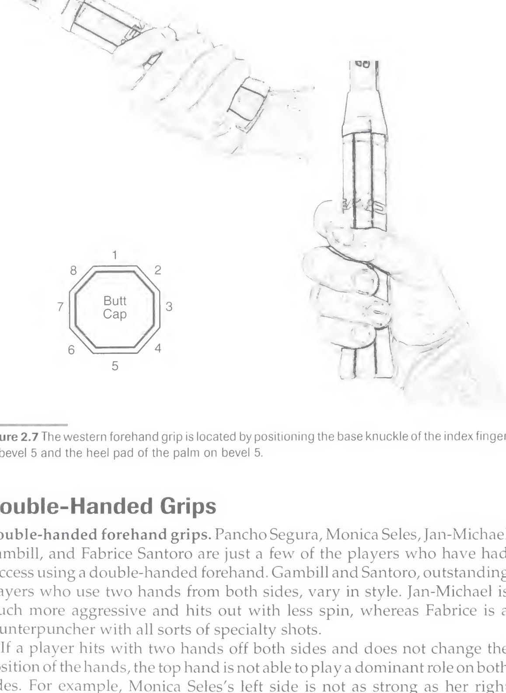
Trong các cú đánh Dead Run On buộc người chơi phải tăng tốc và lao tới giành bóng, trọng tâm sẽ dịch chuyển ra ngoài bệ đỡ về phía đầu. Sẽ cần thêm một hoặc hai bước để ngăn chặn động lượng này và Đổi hướng bóng nó về phía giữa sân. Tiến về phía trước Khi tăng tốc từ đường cuối sân về phía lưới để thực hiện cú vô-lê, người chơi nên nghiêng người về phía trước để dịch chuyển trọng tâm về phía trước khối tâm. Hành động nghiêng này sẽ cho phép tăng tốc về phía trước. Khi người chơi có đà tiến về phía trước, người chơi phải hạ trọng tâm xuống, dùng sức chân để uốn cong và giảm tốc độ, đồng thời duy trì vị trí cân bằng mới để có thể phản ứng hiệu quả với cú vô-lê.
Tất cả các vận động viên giỏi đều sở hữu khả năng di chuyển, Trọng tâm cơ thể, cơ chế chuyển động, độ đàn hồi, sức mạnh và sức mạnh tối cao. Khi các vận động viên đấu tranh để đạt được chuyển động vượt trội, một hoặc một số khả năng này sẽ bị thiếu. Bất kể trọng tâm là gì, việc quay trở lại bệ đỡ để giữ trọng tâm tối ưu sẽ có lợi hơn nhiều. Bằng cách kiểm soát trọng tâm, người chơi sẽ thực hiện bước đầu tiên hướng tới chuyển động trên sân hiệu quả và thành công.
Ba Tư thế sẵn sàng Tư thế sẵn sàng là một tư thế thể thao thoải mái, là cốt lõi của mọi chuyển động trong quần vợt. Thiết lập và duy trì một thế trận sẵn sàng là bước đầu tiên để đạt được một nền tảng vững chắc. Tư thế sẵn sàng (ready position) có thể được xem theo ba cách: 1. Tư thế sẵn sàng bình thường 2. Tư thế thiết lập cho cú vung 3. Tư thế phục hồi Trong cả ba trường hợp, người chơi cần duy trì một nền tảng vững chắc.
Hiểu được sự khác biệt giữa ba tư thế sẽ nhấn mạnh tầm quan trọng của việc duy trì một nền tảng vững chắc. Đôi khi việc duy trì một tư Tư thế sẵn sàng tốt và di chuyển tới bóng một cách dễ dàng đôi khi rất đơn giản. Rõ ràng, nếu đối thủ đánh một cú đánh yếu, người chơi có cơ hội tốt để duy trì Tư thế sẵn sàng vững chắc cho mọi chuyển động, bao gồm cả cú xoay người. Nhưng nếu đối thủ tung ra một đòn xuyên phá mạnh, người chơi sẽ khó thiết lập một thế trận sẵn sàng vững chắc hơn.
Tư thế sẵn sàng bình thường - Tư thế thể thao mạnh mẽ Một tư thế thể thao, thoải mái, mạnh mẽ là nền tảng cho chuyển động và đánh. Luôn thoải mái và thể thao trong khi chơi là điều quan trọng để thành công ở mọi cấp độ. Xem hình 2.16. Chìa khóa để thiết lập một tư thế thể thao khỏe mạnh • giữ vững tư thế đứng (bàn chân rộng hơn hông), • giữ trọng tâm thấp (hông thấp và Gập gối) và • giữ cánh tay cong.
Hình 2.16 Monica thể hiện Tư thế sẵn sàng bình thường. Chú ý bàn chân, hông và vai của cô ấy vuông góc với lưới như thế nào. Đế [bàn chân] của cô ấy rộng hơn hông, đầu gối và cánh tay của cô ấy hơi cong với đầu vợt hướng lên trên. Cũng lưu ý rằng đôi mắt của cô ấy đang nhìn về phía trước và tập trung. Ở vị trí này, Monica có thể phản ứng theo mọi hướng - phải, trái, tiến, lùi và chéo với khả năng ngang nhau.
Phần đế phải rộng hơn hông. Để hạ thấp trọng tâm, hai bàn chân phải cách nhau đủ xa để người chơi có thể uốn cong đầu gối trong khi vẫn giữ trọng lượng dồn lên đầu bàn chân. Xuống thấp mang lại cơ hội tốt nhất cho bước đi đầu tiên nhanh chóng và mạnh mẽ. Ngoài ra, cánh tay nên uốn cong. Tất cả người chơi đều khác nhau, nhưng vị trí của vợt phải cho phép người chơi chuẩn bị cho những cú đánh khó cũng như những cú đánh dễ.
Đạt được trọng tâm thấp và duy trì nó càng lâu càng tốt là điều quan trọng để phát triển một tư thế thể thao mạnh mẽ. Thiết lập tư thế cho cú vung Khi chuẩn bị đánh bóng, người chơi phải duy trì một tư thế thể thao khỏe mạnh, được minh họa trong hình 2.17 và 2.18. Anh ta hoặc cô ta nên đón đường bay của bóng càng sớm càng tốt sau khi nó rời khỏi vợt đối phương. Hình 2.17 Tư thế đứng mở (open stance). Monica minh họa cả tư thế thể thao mạnh (a) và yếu [b] từ một cú thuận tay (forehand) ở tư thế mở. Trong ví dụ đầu tiên, cô ấy đã duy trì một thế đứng vững chắc và ở vị trí thuận lợi để đánh một cú thuận tay (forehand) đúng lúc. Ví dụ thứ hai cho thấy Monica mất Trọng tâm cơ thể và mất vị trí với cùng một tư thế.
Hình 2.18 Tư thế trung lập. Monica minh họa cả tư thế thể thao mạnh (a) và yếu [b) từ lập trường trung lập. Trong khung đầu tiên, cô ấy duy trì một thế vững chắc và ở vị trí thuận lợi để đánh một cú thuận tay (forehand) đúng lúc. Khung hình thứ hai cho thấy Monica mất Trọng tâm cơ thể và mất vị trí trong cùng một tư thế. Bước đầu tiên phải nhanh chóng, cân bằng và mạnh mẽ nếu đối thủ tung ra đòn tấn công buộc phải chạy nước rút. Người chơi thường sẽ bước ra bóng ngay cả khi sử dụng bước thả bóng.
Tư thế phục hồi Tư thế phục hồi cũng quan trọng như Tư thế sẵn sàng thông thường và tư thế thiết lập. Duy trì một nền tảng vững chắc trong khi phục hồi là chìa khóa để cải thiện tốc độ và sự nhanh nhẹn. Người chơi phải học cách sử dụng chân ngoài để đẩy người trong khi vẫn giữ Trọng tâm cơ thể với vai, hông và vai vuông góc với lưới. Xem hình 2.19 và 2.20.
Lưu ý rằng trong cả hai ví dụ, Monica đã Kết thúc cú đánh với cây vợt của mình vòng qua vai đối diện, hông vuông góc với lưới và ở vị trí thuận lợi để chuyển sang quả bóng tiếp theo. Hình 2.19 Tư thế phục hồi tư thế mở. Monica thể hiện tư thế phục hồi từ một cú thuận tay (forehand) trong tư thế mở, (a) Monica đã thiết lập với trọng lượng của mình dồn vào chân phải, tạo thành một nền tảng thể thao vững chắc. Cb) Monica đẩy chân phải ra và chuyển trọng lượng của cô ấy về phía bàn chân trong sau khi thực hiện động tác tiếp theo.
Hình 2.20 Tư thế phục hồi ở thế trung lập. Monica thể hiện tư thế phục hồi từ một cú thuận tay (forehand) ở tư thế trung lập, (a) Monica đã thiết lập trọng lượng của mình trên bàn chân phải, tạo thành một nền tảng thể thao mạnh mẽ, (b) Bàn chân trái của Monica đã vuông góc với lưới sau khi thực hiện cú đánh tiếp theo. Các thế đánh'* Bốn tư thế là trung lập, mở, nửa mở và đóng.
Lập trường trung lập Lập trường trung lập đóng vai trò là nền tảng cho tất cả những người khác. Tôi vẫn dạy lập trường này trước tiên mặc dù các lập trường mở và nửa mở đang ngày càng trở nên phổ biến. Tư thế trung lập cho phép học sinh trong giai đoạn đầu phát triển trải nghiệm việc chuyển trọng lượng và xoay cơ thể về phía khu vực mục tiêu.
Từ Tư thế sẵn sàng bình thường, người chơi bắt đầu thực hiện động tác vung vợt sau bằng cách xoay hông và vai, bước ra ngoài và chuyển trọng lượng sang bàn chân bên ngoài. Người chơi bước về phía trước bằng chân trong và chuyển trọng lượng lên chân trước khi bắt đầu cú vung về phía trước. Trọng lượng vẫn ở chân trước cho đến khi tiếp xúc. Người chơi vẫn giữ Trọng tâm cơ thể trong quá trình theo dõi và phục hồi. Đưa chân sau lên và xoay một cách tự nhiên để duy trì nền tảng vững chắc sẽ đảm bảo rằng người chơi vẫn giữ Trọng tâm cơ thể và sẵn sàng cho cú đánh tiếp theo. Trình tự này được minh họa trong hình 2.21.
Ban đầu tôi hướng dẫn học trò của tôi giữ chân sau phía sau phía trước sau khi tiếp xúc. Điều này cho phép học sinh theo đuổi mục tiêu với vai Trọng tâm cơ thể. Quá trình tiếp theo là Bước chân (footwork) sau lên và xung quanh một cách tự nhiên, chuyển trọng lượng sau khi tiếp xúc. Tư thế trung lập là tư thế được ưu tiên để đánh cả trái tay bằng một tay và hai tay vì nó cho phép người chơi di chuyển trọng lượng cơ thể theo hướng của mục tiêu. Tư thế trung lập cung cấp nền tảng tốt nhất để thực hiện, theo dõi và phục hồi hiệu quả trừ khi người chơi gặp phải một quả bóng rất khó trên đường chạy.
Cho đến vài năm gần đây, thế đứng trung lập (một số người gọi là thế đứng khép kín) là cách được chấp nhận để Cú thuận tay (forehand) (forehand), Trái tay một tay và Trái tay hai tay. Tôi vẫn duy trì lựa chọn này cho người mới bắt đầu và trình độ trung cấp thấp, nhưng tôi lưu ý họ để áp dụng tư thế mở, đặc biệt là ở cú Cú thuận tay (forehand) (forehand) và trái tay bằng hai tay.
Nếu vì lý do nào đó học sinh của bạn đánh với tư thế nửa mở đến mở, đừng hoảng sợ và nói, "Không, Không, Không!" Đơn giản chỉ cần quan sát kết quả và điều chỉnh nếu cần thiết. Hãy để người chơi làm một trong hai điều đó nếu kết quả là dương\^e. Thế trận cởi mở Thế trận cởi mở ngày càng được giảng dạy và sử dụng rộng rãi hơn ở mọi cấp độ chơi. Nó giới thiệu cho học viên các nguyên tắc bước ra, chuyển trọng lượng sang chân bên ngoài, tải trọng ở hông và xoay người.
*Phần này của Nick Bollettieri và Peter D. McCraw. Hình 2.21 Chuỗi cú đánh này minh họa John chuẩn bị đánh cú thuận tay (forehand) và trái tay từ bên trong đường cuối sân. Các mặt nhìn từ phía trước của (a) thuận tay, (b) Tư thế sẵn sàng bình thường, (c) trái tay: các mặt nhìn của (d] thuận tay, (e) Tư thế sẵn sàng bình thường, (fj trái tay. c Hình 2.21 [tiếp theo] Hình 2.21 (tiếp theo) Từ Tư thế sẵn sàng bình thường, người chơi bắt đầu vung vợt sau bằng cách xoay hông và vai, bước ra ngoài và chuyển trọng lượng sang bàn chân bên ngoài. Xem hình 2.22. Người chơi giữ trọng lượng ở chân bên ngoài. cho đến sau khi tiếp xúc và vẫn giữ Trọng tâm cơ thể trong quá trình theo dõi và hồi phục. Tôi thấy có quá nhiều người chơi chuyển trọng tâm của họ trong quá trình vung vợt và kéo bóng ra khỏi tư thế này.
Thế đứng mở (open stance) là lý tưởng cho các tình huống khi người chơi có ít thời gian chuẩn bị, khi đối thủ buộc người chơi rời khỏi vị trí ở đường cuối sân hoặc khi người chơi phải phản ứng trên lưới. "Cú cú thuận tay (forehand) sát thủ (Killer Forehand)" và tất cả các cú thuận tay (forehand) cao nên được thực hiện với tư thế này vì nó cho phép người chơi dồn lực lên hông bên ngoài và bùng nổ trong cú đánh. Với việc ngày càng có nhiều người chơi sử dụng cách cầm vợt bán Tây và Tây, thế trận cởi mở vẫn được duy trì. Người chơi nên thực hành Cú thuận tay (forehand) (forehand), trái tay, vô-lê và Trả giao bóng từ tư thế này.
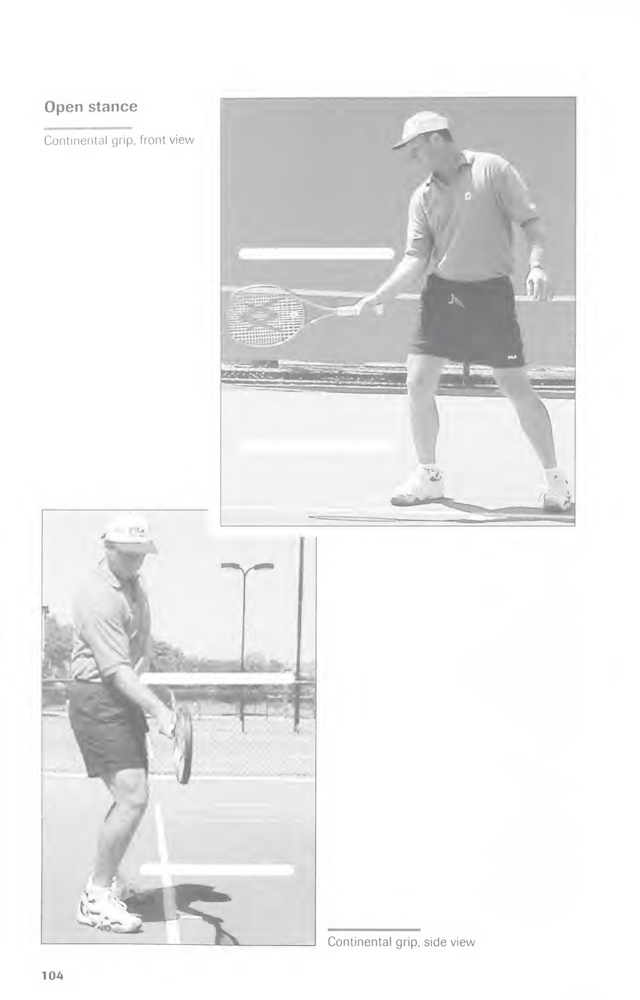
Tôi thấy hai sai lầm phổ biến với thế đứng cởi mở. • Sai lầm đầu tiên là chuyển trọng lượng từ chân ngoài sang chân trong trước khi tiếp xúc, thường do đứng quá gần bóng. • Sai lầm thứ hai là chịu lực ở hông và dẫm lên bàn chân trong trước hoặc trong khi tiếp xúc. Một bài tập đơn giản để khắc phục vấn đề này là yêu cầu học sinh của bạn nhấc bàn chân bên trong lên khỏi mặt đất một chút, do đó buộc chân bên ngoài làm nền tảng cho cú đánh.
Mẹo huấn luyện Khi làm việc với người mới bắt đầu đến trình độ trung cấp thấp, lựa chọn của tôi là lập trường trung lập. Nhưng hãy chú ý đến lập trường mà học sinh của bạn sử dụng. Nếu người chơi đánh một cách tự nhiên với tư thế nửa mở đến mở thì không sao. Điều này cho thấy rằng người đó đang phát triển một phong cách cá nhân thoải mái. Lập trường nửa mở Lập trường nửa mở dựa trên các nguyên tắc giống như lập trường mở.
dạy thế đứng này từ Tư thế sẵn sàng bình thường và hướng dẫn học trò của tôi sử dụng nó một cách tự do trong phong cách chơi của họ. Hình 2.22 Chuỗi cú đánh này minh họa John đang thiết lập để đánh một cú thuận tay (forehand) và trái tay ở tư thế mở từ bên trong đường cuối sân. Lưu ý rằng tư thế mở mang lại cho John yếu tố ngụy trang vì rất khó đoán trước anh ta sẽ đánh theo hướng nào. Mặt trước của [a] thuận tay mở, (b) Tư thế sẵn sàng bình thường, (c) trái tay mở: mặt bên của Cd] thuận tay mở, (ej Tư thế sẵn sàng bình thường, và (f) trái tay mở.
Hình 2.22 [tiếp theo] e Hình 2.22 (tiếp theo) Từ Tư thế sẵn sàng thông thường, người chơi bắt đầu thực hiện Vung vợt ra sau (lấy đà) bằng cách xoay hông và vai, bước ra ngoài và chuyển trọng lượng sang bàn chân bên ngoài. Cũng như thế đứng mở (open stance), chìa khóa của tư thế nửa mở là duy trì một nền tảng vững chắc. Người chơi phải giữ trọng lượng ở bàn chân bên ngoài cho đến sau khi tiếp xúc và giữ Trọng tâm cơ thể trong quá trình thực hiện cú đánh tiếp theo và phản đòn. Xem hình 2.23 để biết điều này trình tự.
Thế Tư thế đứng bán mở, giống như thế đứng mở (open stance), lý tưởng cho các tình huống mà người chơi có ít thời gian chuẩn bị, khi đối thủ buộc người chơi rời khỏi vị trí ở đường cuối sân hoặc khi người chơi phải phản ứng trên lưới. Người chơi nên đánh ''cú cú thuận tay (forehand) sát thủ (Killer Forehand)'' và cú thuận tay (forehand) cao với tư thế này bởi vì anh ta hoặc cô ta có thể dồn lực lên hông bên ngoài và bùng nổ trong cú đánh. Với nhiều người chơi sử dụng cách cầm vợt bán tây và tây, thế đứng bán mở vẫn ở đây. Học viên nên thực hành đánh các cú thuận tay (forehand), trái tay, vô-lê và Trả giao bóng từ tư thế này.
Không có quy tắc cứng nhắc nào về việc khi nào người chơi nên sử dụng một thế đứng này thay vì một thế đứng khác. Tôi khuyến khích học sinh của mình sử dụng một trong hai thế đứng dựa trên phong cách chơi, cách cầm vợt, kỹ năng di chuyển và giai đoạn phát triển của họ. Cả lập trường nửa mở và lập trường mở đều là sản phẩm của trò chơi quyền lực ngày nay và việc sử dụng rộng rãi hơn các thế nắm bán tây và tây.
Tốc độ và sức mạnh của quần vợt chuyên nghiệp đã quyết định rằng người chơi phải điều chỉnh trò chơi của họ cho phù hợp với cách chơi hiện tại. Ngoài ra, việc sử dụng rộng rãi hơn cả kiểu cầm vợt thuận tay kiểu bán tây và kiểu tây cho phép người chơi tạo ra khả năng tăng tốc và sức mạnh đầu vợt cực lớn từ tư thế bán mở hoặc tư thế mở.
Mặc dù thế đứng trung lập vẫn là thế đứng ưa thích của tôi ở hầu hết các cấp độ chơi vì nó mang lại nền tảng và sự cân bằng tốt nhất cho cú đánh, sự thay đổi sang thế Tư thế đứng bán mở và mở đang trở nên rõ ràng hơn khi trò chơi phát triển. Mẹo kỹ thuật Người chơi nên thực hành thiết lập với cả tư thế nửa mở và nửa mở ở các cú thuận tay (forehand), trái tay, vô-lê và Trả giao bóng. Họ nên học cách nhận biết những quả bóng nào họ có thể bước vào và đánh từ thế trung lập trong phong cách chơi của họ Tư thế đóng Nên tránh tư thế đóng khi Cú thuận tay (forehand) (forehand) và Cú trái tay (backhand) (backhand) hai tay từ một vị trí cố định.
Hình 2.23 Chuỗi cú đánh này minh họa John chuẩn bị để đánh một cú thuận tay (forehand) và trái tay nửa mở từ bên trong đường cuối sân. Lưu ý rằng tư thế nửa mở mang lại cho John yếu tố ngụy trang vì rất khó đoán trước anh ta sẽ đánh theo hướng nào. Mặt trước của cú thuận tay (forehand) nửa mở của CaJ, [b) Tư thế sẵn sàng bình thường, (c) Cú trái tay (backhand) (backhand) tay nửa mở; mặt bên của [d) cú thuận tay (forehand) nửa mở, Ce] Tư thế sẵn sàng bình thường, (0 Cú trái tay (backhand) (backhand) tay nửa mở.
Hình 2.23 [tiếp theo] Hình 2.23 [tiếp theo] Hạn chế của thế đứng này là • trọng lượng không di chuyển theo hướng của vùng mục tiêu, • hông và vai gần như không thể mở ra khi tiếp xúc với bóng, • các lựa chọn sút bị hạn chế và • việc phục hồi cần nhiều thời gian hơn. Các tay vợt chạy nước rút để có bóng rộng sẽ khó điều chỉnh chân và bước về phía lưới khi tiếp xúc. Do đó, người chơi nên liên lạc trên đường chạy, thực hiện thêm một bước sau khi tiếp xúc và sau đó phục hồi càng nhanh càng tốt. Thế đứng khép kín sẽ làm chậm quá trình hồi phục, vì vậy người chơi phải đảm bảo bù đắp điều này bằng khả năng hồi phục mạnh mẽ. Xem hình 2.24.
Tuy nhiên, có thể chấp nhận được và thậm chí còn khuyến khích sử dụng tư thế đóng khi đánh trên đường chạy. Mặc dù thế đứng khép kín là họ hàng kém với thế đứng trung lập, nhưng người chơi nên đánh cả cú thuận tay (forehand) và Trái tay một tay từ thế đứng khép kín khi buộc phải rộng và trên đường chạy chết. Người chơi phải nhớ rằng việc đánh từ tư thế đóng sẽ làm chậm quá trình hồi phục và khiến người đó mất vị trí trong giây lát.
Lập trường trung lập so với lập trường khép kín Nhiều năm trước, tôi đã gắn nhãn lập trường trung lập là lập trường khép kín. Nhưng với hầu hết người chơi chuyên nghiệp đều đánh từ thế Tư thế đứng bán mở và thế mở, bây giờ tôi gọi đó là thế trung lập. Các thế đứng trung lập và khép kín khác nhau đáng kể khi thảo luận về thế đứng đánh. Thế đứng trung lập cho phép người chơi • duy trì một nền tảng vững chắc và tư thế tốt trong suốt cú vung, • chuyển trọng lượng về phía khu vực mục tiêu, đồng thời duy trì sự hồi phục cân bằng với chân sau di chuyển lên và về phía trước, đưa vai và hông vuông góc với lưới.
Thế đứng khép kín cản trở người chơi bằng cách • đóng hông, loại bỏ bất kỳ chuyển động xoay hông nào trong các phần tiếp xúc và phía trước của cú xoay, và dẫn đến việc chỉ đánh bằng cánh tay, • ngăn cản sự chuyển trọng lượng về phía khu vực mục tiêu và • buộc người chơi thực hiện các bước phục hồi bổ sung trước khi vuông góc với lưới bằng hông và vai.
Lưu ý rằng đôi khi tư thế đóng được ưu tiên hơn khi đang chạy. Hình 2.2A Trình tự các cú đánh này minh họa John đang thiết lập để đánh một cú thuận tay (forehand) và trái tay ở tư thế đóng từ đường cuối sân. Lưu ý tư thế này đã đóng lại độ mở tự nhiên của hông và vai khi tiếp xúc. Mặt trước của (a) thuận tay khép kín, [bj Tư thế sẵn sàng bình thường, trái tay đóng CcJ; mặt bên của (d] thuận tay khép kín, Tư thế sẵn sàng bình thường của CeJ, trái tay đóng CD.
Hình 2.2A [tiếp theo] Hình 2.24 (tiếp theo) Các tư thế được xem xét Trong suốt trận đấu, người chơi sẽ buộc phải sử dụng nhiều tư thế khác nhau. Nhìn chung, các thế đứng mà người chơi sử dụng vừa mang tính cá nhân vừa là sự mở rộng tự nhiên trong phong cách chơi của họ. Thế đứng "tự nhiên" cho bất kỳ cú đánh nào cuối cùng bị ảnh hưởng bởi Vị trí trên sân, độ khó của quả bóng sắp tới, cách cầm vợt của người chơi và tình trạng thể chất của họ.
Trong buổi tập tiếp theo trên sân tập, đấu thủ nên dành chút thời gian để đánh giá thế đứng của mình. Thực hiện một điều chỉnh nhỏ có thể cải thiện cú đánh của người chơi. Trên hết, lời khuyên của tôi dành cho các tay vợt là hãy luôn duy trì một tư thế thể thao khỏe mạnh và sử dụng tư thế phù hợp với phong cách chơi của họ. Vùng đánh bóng lý tưởng Trong các hình ở trang 104 đến 111, Greg thể hiện các điểm tiếp xúc cho cú thuận tay (forehand) ở thế trung lập và thế mở. Hình ảnh phía trước và mặt bên minh họa các Vùng đánh bóng lý tưởng lý tưởng khác nhau cho một vị trí lục địa, phía đông, bán tây và phía tây.
Theo quy định, tay càng ở trên cán vợt (lục địa) thì bóng thấp càng thoải mái. Tay càng ở dưới tay cầm (hướng tây) thì bóng cao sẽ càng thoải mái. Tham khảo lại phần cầm nắm để xem xét ưu điểm và nhược điểm của từng loại. Hãy nhớ rằng không có tay cầm nào có thể làm được tất cả. Người chơi cuối cùng phải tìm được cách cầm vợt cảm thấy thoải mái và phù hợp với phong cách chơi của mình.
Thế cầm mở ' -m Tay cầm kiểu lục địa, nhìn từ phía trước 'H 'X'wk Tay cầm kiểu lục địa, nhìn từ bên cạnh Tay cầm kiểu bán phương Tây, nhìn từ phía trước Tay cầm bán nguyệt, nhìn từ bên Thế cầm trung lập Kiểu cầm lục địa, nhìn từ phía trước Tay cầm kiểu lục địa, nhìn từ bên I X
Cú Thuận Tay Sát Thủ & Cú Trái Tay Hai Tay Bùng Nổ Uy Lực
Part II: The Killer Forehand & Boll-istic Backhand
Cú Thuận Tay Sát Thủ (The Killer Forehand)
Chapter 3: The Killer Forehand
Cú cú thuận tay (forehand) sát thủ (Killer Forehand) Một cú cú thuận tay (forehand) sát thủ (Killer Forehand) Trong bốn thập kỷ qua, tôi đã phát triển và là một vũ khí sát thương đã đào tạo nhiều tay vợt trẻ hơn bất kỳ huấn luyện viên nào khác trong lịch sử quần vợt. Trong số những tay vợt này có rất nhiều nhà vô địch thế giới, vô địch trong kho vũ khí chiến lược của một tay vợt. các chiến binh hàng ngày và một số ngôi sao trẻ sáng giá nhất trong tương lai. Với tư cách là chủ tịch và người sáng lập Học viện quần vợt Bollettieri, tôi đã tạo dựng được thương hiệu rằng các tay vợt của tôi sở hữu vũ khí thuận tay cực lớn.
Có lẽ tài sản lớn nhất của tôi là khả năng truyền cảm hứng và động viên học sinh của mình tiến bộ cũng như khả năng truyền cho họ Sự Sự tự tin mà họ cần để thành công. Công thức của tôi để phát triển kỹ thuật mới và xây dựng nó thành thói quen bao gồm các bước tăng dần: • Bước 1: "Justhitit." Như cha của Andre Agassi đã nói với anh khi anh còn trẻ, "Đây là cách con tinh chỉnh cú đánh và cải thiện sức mạnh của mình. Hiện tại, đừng lo lắng quá nhiều về độ chính xác và tính nhất quán. Chỉ cần thư giãn, điều chỉnh cú đánh và đánh lớn." • Bước 2: Huấn luyện mục tiêu. Khi bạn đã thiết lập được cú đánh và cải thiện kỹ năng của mình, bạn nên xây dựng và kiểm tra kỹ năng đó dưới điều kiện áp lực trong luyện tập. Sử dụng các vùng mục tiêu và các bài tập để kiểm tra độ chính xác và tính nhất quán của bạn. (Hãy nhớ rằng, có thể phải mất vài tháng luyện tập trước khi bạn tiến tới bước 2.) • Bước 3: Trở nên khó khăn hơn. Giai đoạn cuối cùng là kiểm tra kỹ năng của bạn trong điều kiện áp lực của trận đấu để xem liệu thói quen đó có duy trì hiệu quả hay không.
Để thành công, bạn phải tin vào kỹ năng của mình. Đừng bao giờ sợ mắc sai lầm và luôn thực hiện đầy đủ dưới áp lực. Một cú cú thuận tay (forehand) sát thủ (Killer Forehand) là gì?'^ Một "cú cú thuận tay (forehand) sát thủ (Killer Forehand)" là một vũ khí gây chết người trong kho vũ khí chiến lược của người chơi. Tất cả các cú thuận tay (forehand) khác trong một pha đánh bóng cụ thể phải mạnh mẽ, kiểm soát trung tâm sân cho đến khi cú cú thuận tay (forehand) sát thủ (Killer Forehand) Kết thúc cú đánh điểm hoặc buộc bạn phải trả bóng yếu để tấn công và tung cú vô-lê. Không phải tất cả các cú thuận tay (forehand) đều có tâm lý sát thủ.
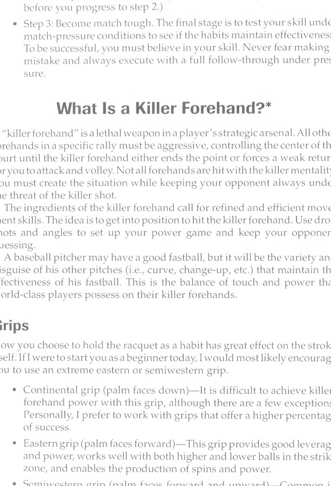
Bạn phải tạo ra tình huống trong khi luôn giữ đối thủ của mình trong tình trạng bị đe dọa bởi cú đánh sát thủ. Các thành phần của cú cú thuận tay (forehand) sát thủ (Killer Forehand) đòi hỏi các kỹ năng di chuyển tinh tế và hiệu quả. Ý tưởng là vào vị trí để Cú thuận tay (forehand) (forehand) sát thủ. Sử dụng các cú đánh và góc để thiết lập trò chơi sức mạnh của bạn và khiến đối thủ phải đoán.
Một vận động viên ném bóng chày có thể có một cú ném bóng nhanh tốt, nhưng chính sự đa dạng và khả năng ngụy trang của các cú ném khác của anh ta (tức là, đường cong, sự thay đổi, v.v.) mới duy trì được hiệu quả của quả bóng nhanh của anh ta. Đây là sự cân bằng giữa cảm giác chạm và sức mạnh mà các tay vợt đẳng cấp thế giới sở hữu trên những cú cú thuận tay (forehand) sát thủ (Killer Forehand) của họ. Cách cầm vợt Cách bạn chọn cách cầm vợt như một thói quen có ảnh hưởng rất lớn đến bản thân cú đánh. Nếu hôm nay tôi bắt đầu cho bạn là người mới bắt đầu, rất có thể tôi sẽ khuyến khích bạn sử dụng cách cầm vợt cực đông hoặc bán tây.
• Cách Cách cầm vợt Continental (lòng bàn tay úp xuống) — Rất khó để đạt được sức mạnh sát thủ bằng cách cầm vợt này, mặc dù có một vài trường hợp ngoại lệ. Cá nhân tôi thích làm việc với những tay cầm mang lại tỷ lệ thành công cao hơn. • Cách cầm vợt phía Đông (lòng bàn tay hướng về phía trước) — Cách cầm vợt này cung cấp đòn bẩy và lực tốt, hoạt động tốt với cả bóng cao hơn và bóng thấp hơn trong vùng tấn công, đồng thời cho phép tạo ra độ xoáy và lực.
• Cách cầm vợt bán tây (lòng bàn tay hướng về phía trước và hướng lên trên) — Phổ biến trong các trận đấu chuyên nghiệp ngày nay, cách cầm vợt bán tây mang lại sức mạnh lớn và các tùy chọn xoáy, đặc biệt là cao hơn trong vùng tấn công. *Phần này của Nick Bollettieri và Pat Dougherty. • Cách cầm vợt cực tây (lòng bàn tay hướng lên trên) — Cách cầm vợt này có khả năng tạo lực tốt và tạo độ xoáy với những quả bóng cao hơn trong khu vực, nhưng những quả bóng thấp rất khó thực hiện.
Để có hiệu quả với cú thuận tay (forehand) của bạn, bạn phải có khả năng đánh bóng ở tất cả các phần của vùng tấn công. Nhìn chung, phía đông và bán tây là những lựa chọn phổ biến, linh hoạt và mạnh mẽ nhất. Sử dụng áp lực cầm vợt thích hợp là điều quan trọng, bất kể cách cầm vợt của bạn như thế nào. Giữ tay cầm quá chặt, một vấn đề thường gặp, sẽ hạn chế sự linh hoạt của bạn.
Giữ cho bàn tay của bạn được thư giãn, đặc biệt là giữa các cú đánh và để vợt làm việc đó. (Hãy thử siết chặt một quả bóng tennis. Hãy xem bạn bắt đầu mất cảm giác nhanh như thế nào và cánh tay của bạn trở nên mỏi nhanh như thế nào.) Hãy nhớ phát triển một cách cầm vợt chính và luyện tập nó bằng cú thuận tay (forehand) của bạn. Cần phải thực hành rất nhiều để tạo thành thói quen và khiến nó trở nên đáng tin cậy.
Vận động viên có nền tảng vững chắc có thể được xác định bằng vị trí cơ thể của nền tảng vững chắc. Những ví dụ bao gồm Boris Becker, Michael Chang và Martina Hingis. Nền tảng vững chắc bao gồm một số yếu tố: • Tư thế lưng tốt • Trọng tâm thấp (vùng hông) • Nền tảng hỗ trợ vững chắc (tư thế) Hai điều giúp ích nhiều nhất cho người chơi hàng ngày là sự chuẩn bị sớm và nền tảng vững chắc.
Phản ứng ở bước đầu tiên Tâm lý phải là "Tôi sẽ bắt được mọi quả bóng." Người chơi có năng khiếu di chuyển với tốc độ, sự nhanh nhẹn, Trọng tâm cơ thể và sức mạnh. Họ không bao giờ nghĩ đến sự chuyển động. Họ là những vận động viên bẩm sinh, di chuyển theo bóng và phục hồi Vị trí trên sân phù hợp với phong cách của họ. Những người chơi khác phải làm việc liên tục để bắt đầu chuẩn bị cú đánh từ bước đầu tiên và thực hiện phần phục hồi bước đầu tiên của cú đánh. Họ phải làm việc hàng ngày để chuẩn bị và phục hồi vì nó không diễn ra một cách tự nhiên.
Các kiểu bước chân Giống như các bước nhảy của một nữ diễn viên ba lê, các kiểu bước chân khác nhau cho phép người chơi trông uyển chuyển và nhanh nhẹn khi họ di chuyển. Những mẫu này được sử dụng cho các mục đích và tình huống cụ thể. . Crossover - Kiểu chéo thường được sử dụng cho chuyển động ngang. Điều này đặc biệt quan trọng đối với những cú chạy thuận tay và những cú đánh trên không (overhead) đòi hỏi phải di chuyển về phía sau.
2. Cross-Behind — Cross-Behind được sử dụng trong các tình huống tương tự như những tình huống yêu cầu crossover, nhưng người chơi thường di chuyển sang một bên và quay lại sân. Bạn cũng sẽ thấy đường chéo phía sau được sử dụng với các phương pháp cắt lát. 3. Xáo trộn — Bước xáo trộn cũng được sử dụng để di chuyển ngang, nhưng với khoảng cách ngắn hơn. Mô hình này không hiệu quả đối với khoảng cách quá xa nhưng hiệu quả đối với các quả bóng cách người chơi vài bước.
4. Điều chỉnh — Các Bước điều chỉnh, hoặc các bước cắt, rất quan trọng để tinh chỉnh sự cân bằng và định vị trong tư thế đánh của bạn. Cùng với việc chuẩn bị vợt tốt, những bước lắp vợt này giúp bạn tránh bị mắc sai chân hoặc bị mắc kẹt trong tư thế đóng. 5. Thả bước — Một chân sẽ hơi lùi lại để bước thứ hai mạnh mẽ và hiệu quả. Hầu hết người chơi sử dụng bước thả khi di chuyển về phía trước và ngang.
Chuẩn bị vợt sớm và chính xác Thói quen chuẩn bị tốt sẽ tạo ra nhiều lựa chọn hơn cho bạn khi thao tác với bóng, cho phép bạn đánh nhiều cú đánh tấn công hơn, điều chỉnh độ nảy không tốt, ngụy trang các cú đánh của bạn, v.v. Không có gì tôi nhấn mạnh hơn tầm quan trọng của việc chuẩn bị sớm. Thiếu sự chuẩn bị thường là lý do tại sao cú đánh lại xảy ra.
Việc chuẩn bị sớm cũng có ảnh hưởng đến động tác chân của bạn. Hãy nhớ rằng, bàn chân của bạn đang hoạt động để thiết lập tư thế cân bằng hoặc điều chỉnh để đánh khi đang chạy. Sự chuẩn bị của bạn sẽ cho đôi chân của bạn biết cách thiết lập. Nếu không có sự chuẩn bị sớm, đôi chân của bạn sẽ không có thời gian để thích nghi với hoàn cảnh. Chuẩn bị đúng cách là khái niệm gửi đúng thông điệp đến đôi chân của bạn. Sự tương tự của đèn pin ở mông vợt có thể giúp bạn hiểu khái niệm này. Khi bạn thực hiện cú Vung vợt ra sau (lấy đà) quá lớn và vợt ở phía sau bạn, chùm ánh sáng bắt đầu hướng ra khỏi sân, song song với đường cuối sân (baseline). Thông điệp này gửi đến bàn chân là bạn đang hướng sức mạnh của mình theo hướng sang một bên, đặt bạn vào tư thế khép kín.
Bằng cách giữ vợt ở phía trước cơ thể bạn, chùm ánh sáng hướng về phía lưới, gửi thông điệp chính xác đến chân bạn về nơi bạn định hướng sức mạnh của mình. Toàn bộ quá trình chuẩn bị sẽ yêu cầu bạn đến bóng trong tư thế cởi mở, với tùy chọn bước vào tư thế trung lập nếu bạn có các tư thế đánh. Có ba tư thế chính - mở, trung lập và đóng. Để biết thêm chi tiết về các lập trường, vui lòng tham khảo lại chương 2.
• Thế đứng mở (open stance) giống như tư thế được sử dụng bởi người đánh bóng bước vào hộp của người đánh bóng chỉ bằng chân sau và đánh. Tư thế này cung cấp tất cả các tùy chọn bắn và nếu bạn có thời gian để thực hiện cú đánh, bạn có thể thực hiện được. Dưới áp lực của một quả bóng đánh mạnh, bạn thường sẽ buộc phải đánh trong tư thế cởi mở. Tránh chuyển trọng lượng của bạn ra khỏi bàn chân sau, kéo cơ thể bạn ra khỏi cú đánh trong tư thế này.
• Bạn đạt được tư thế trung lập bằng cách bắt đầu từ tư thế mở, đẩy trọng lượng của bạn về phía trước và hướng ngón chân trước về phía lưới. Bạn sẽ thường xuyên sử dụng thế đứng này, cùng với thế đứng mở (open stance), cho cú cú thuận tay (forehand) sát thủ (Killer Forehand). Tư thế trung lập đặt cả hai chân vào hộp của người đánh bóng. • Sử dụng thế đứng khép kín là một vấn đề thường gặp cần được khắc phục thông qua việc chuẩn bị vợt sớm và đúng cách. Thế đứng khép kín làm giảm sức mạnh, giảm khả năng kiểm soát và giữ Trọng tâm cơ thể, đồng thời đưa ra các lựa chọn bắn hạn chế.
Kéo cò Khái niệm này sẽ cho phép bạn tối đa hóa tốc độ và sức mạnh của vợt. Tương tự như cách bạn kéo một chiếc khăn, bạn kéo vợt ra khỏi một cú Vung vợt ra sau (lấy đà), đẩy mông vợt về phía quả bóng. Hành động này cho phép bạn sử dụng cây vợt của mình như một công cụ và áp dụng đòn bẩy. Khi bạn kéo người về phía trước, giữ cho cánh tay linh hoạt và vung ngang cơ thể, đầu vợt sẽ tiếp xúc bóng với lực tối đa.
Bạn không nên tăng tốc vợt bằng cách Bật cổ tay và tát vào bóng hoặc ném cơ thể vào bóng. Phát triển đường xoay và “kéo khăn” nhanh hơn sẽ đạt được khả năng tăng tốc. Vùng tiếp xúc và theo dõi Việc mở rộng hoàn toàn cánh tay đánh bóng trong lần theo dõi của bạn sẽ giúp bạn duy trì một đường xoay tốt.
Các Vùng đánh bóng lý tưởng ưa thích cho tay cầm như sau: • Lục địa — thấp hơn • Đông — giữa • Bán tây — giữa đến cao hơn. Bóng rất thấp sẽ buộc bạn phải điều chỉnh cú đánh của mình. • Phương Tây — cao hơn. Điểm tiếp xúc càng thấp thì cú đánh càng khó vì vị trí của cổ tay không thuận lợi. Vì một số lý do, một phần là do người chơi bắt đầu trẻ hơn nên cách cầm vợt theo phương Tây và phương Tây phổ biến hơn những năm trước. Mặc dù bạn còn nhỏ nhưng những tay cầm này có vẻ thoải mái nhất. Khi trò chơi của bạn phát triển, bạn nên sử dụng cách cầm vợt phù hợp với phong cách chơi mà bạn thích nhất. Việc điều chỉnh tay cầm đòi hỏi sự kiên nhẫn và chăm chỉ.
Cánh tay đối diện Người mới bắt đầu thường không sử dụng cánh tay đối diện vì bất kỳ lợi ích nào. Thường thì nó mềm nhũn và ở một bên. Cánh tay đối diện của bạn có thể tăng thêm sự cân bằng và sức mạnh cho cú đánh của bạn. Khi bạn ở rộng trên sân, cánh tay đối diện sẽ tăng thêm sự cân bằng và có tác dụng neo giữ, hoạt động giống như cột giữ Trọng tâm cơ thể dành cho vận động viên bay trên dây cao để giữ cho vai ngang bằng.
Để tạo ra sức mạnh cú thuận tay (forehand) sát thủ (Killer Forehand) trong một tình huống tấn công, cánh tay đối diện hoạt động giống như cánh tay đeo găng của người ném bóng, giúp kéo căng cơ ngực khi thực hiện cú đánh. Hành động quét này làm cho đòn bẩy dài hơn có khả năng tạo ra nhiều lực hơn trong khi vẫn duy trì sự cân bằng khi xoay. Tải trọng ở hông Kỹ thuật này liên quan đến việc tập trung trọng lượng cơ thể của bạn vào phía sau tư thế và hướng xuống. Khi điều này xảy ra, cơ thể cuộn lại như một chiếc lò xo, cho phép bạn bung ra trong cú đánh.
Thực hành cú đánh của bạn trong khi duy trì Trọng tâm cơ thể ở chân sau trong suốt quá trình sẽ giúp bạn phát triển cảm giác về nguồn năng lượng này. Người chơi trung bình đưa vợt về phía sau mà không chuyển trọng lượng cơ thể về phía sau và cuộn vợt để chuẩn bị vợt. Tải trọng hông hoàn hảo giúp bạn chuẩn bị và xoay thành một khối thống nhất, giống như Jimmy Connors đã làm. Ngay cả khi đang chạy trốn, những tay vợt như Sampras vẫn sử dụng tải hông để tạo sức mạnh và ngụy trang.
Phục hồi Vị trí này có thể thay đổi, đặc biệt nếu bạn thích đánh nhiều vũ khí tấn công hơn, bao gồm cả cú cú thuận tay (forehand) sát thủ (Killer Forehand). Jim Courier và Steffi Graf thường phục hồi ở vị trí giúp họ có cơ hội tốt nhất để đánh một cú thuận tay (forehand) lớn. Phong cách chơi của bạn và cú trả bóng của đối thủ có thể ảnh hưởng đến vị trí hồi phục của bạn.
Tâm lý phải là "Tôi sẽ trở lại vị trí sau mỗi cú đánh." Trong một số môn thể thao, bạn nhường vị trí sân hoặc sân rộng rãi cho đối thủ của mình. Phương pháp rèn luyện và luyện tập Khi phát triển thói quen, hãy thực hiện từng điều mới một và kiên nhẫn. Hãy nhớ rằng, khi bạn thêm hoặc bớt đi thứ gì đó trong cú đánh của mình, thành công và Sự Sự tự tin của bạn có thể giảm sút trong một thời gian. Đừng lo lắng! Bạn có thể mong đợi sự suy giảm này, nhưng nó sẽ chỉ là tạm thời nếu bạn sẵn sàng làm việc chăm chỉ. Một khi bạn vượt qua nó, bạn sẽ chơi ở cấp độ cao hơn. Đây là cách duy nhất bạn có thể trở nên tốt hơn.
Tay cầm Xây dựng thông qua sự lặp lại và làm theo công thức phát triển của tôi: Bước 1: "Chỉ cần đánh nó." Bước 2: Đào tạo mục tiêu. Bước 3: Trở thành trận đấu khó khăn. Chọn cách cầm vợt của bạn và kiên trì thực hiện tất cả các bài tập lặp lại. Hãy nhớ rằng việc cầm vợt quá chặt sẽ làm mất đi tính linh hoạt và tốc độ của vợt. Các buổi tập với bảng rổ và máy bóng là những buổi tập tuyệt vời để lặp lại chất lượng.
Nền tảng vững chắc Tập trung vào việc duy trì tư thế tốt trong khi hạ thấp chiều cao chơi của bạn xuống thấp hơn chiều cao đứng của bạn từ 6 đến 12 inch. Khi bạn thực hành chuyển động của mình, hãy cố gắng thực hiện động tác bằng chân một cách trơn tru, giữ cho đầu của bạn đứng yên nhất có thể. Làm việc trên một cấp độ, hiệu ứng lướt. Phản ứng của bước đầu tiên Để thực hành bước thả, hãy dang rộng hai chân của bạn từ một đến rưỡi đến hai chiều rộng bằng vai như một phần của Tư thế sẵn sàng trên nền tảng vững chắc của bạn. Đánh dấu vị trí của bàn chân của bạn. Thực hành động tác thả bước cho đến khi bạn cảm thấy bước đầu tiên bùng nổ. Hãy tự quay video và so sánh nó với hình ảnh "kilastrator" trong băng.
Phản ứng tích cực ở bước đầu tiên sẽ tăng cơ hội chọn đúng thời điểm cho bạn. Bài tập phản ứng đánh bóng rất tốt để thiết lập thời gian và nhịp điệu tốt. Nói rõ ràng "Bóng" vào thời điểm đối thủ của bạn tiếp xúc buộc bạn phải phản ứng đồng thời. Bạn sẽ luôn có được cú nhảy bóng tốt hơn. Nói "Fiit" khi bạn tiếp xúc sẽ giúp bạn thiết lập nhịp điệu cho pha đánh bóng. Với bài tập này, bạn cũng sẽ nhận ra mình cần khôi phục vị trí sân nhanh như thế nào trước khi bóng được trả lại. Bạn phải đọc, phản ứng và hồi phục để theo kịp tốc độ và thời gian của các điểm. Bạn cũng có thể thêm "Phục hồi" vào bài tập, vì vậy đó là "Bóng, đánh, thu hồi\^er." Bước chân Để đạt được khả năng tăng tốc nhanh, bạn phải sử dụng động tác chân ở số một, bơm chân nhanh và mạnh. Để thực hành điều này, hãy rèn luyện sức đề kháng để bắt chước một con chó kéo xe trượt tuyết. Bạn có thể làm điều này theo nhiều cách. Nó đơn giản như việc buộc một sợi dây quanh eo và nhờ ai đó giữ và chống lại chuyển động của bạn. Với lực cản, bạn sẽ tự nhiên rút ngắn độ dài sải chân của mình.
Bạn nên thực hiện vài lần lặp lại với mỗi kiểu động tác bằng chân mỗi ngày. Cuối cùng, bạn sẽ phát triển được động tác chân nhanh và uyển chuyển cần thiết để có thể tiếp cận sân một cách hiệu quả. Các kiểu bước chân Như đã đề cập ở trên, hãy thực hành các bước chéo, chéo sau và xáo trộn trong các bài tập cụ thể, tập trung vào sự nhanh chóng và trôi chảy trong khi vẫn giữ Trọng tâm cơ thể cho đầu của bạn. Việc rèn luyện sức đề kháng sẽ giúp bạn phát triển sức nhanh và sức mạnh tốt hơn trong thời gian ngắn hơn. Bạn có thể tạo các loại bài tập của riêng mình, tập trung hoàn toàn vào các kiểu động tác bằng chân.
Chuẩn bị sớm "Thước đo thực sự của một tay vợt xuất sắc thường có thể là tính kỷ luật để chuẩn bị sớm." Tôi sử dụng tiêu chuẩn này để đánh giá các tay vợt về kỹ năng chuẩn bị của họ: Trung bình — khi bóng nảy về phía bạn Tốt — khi bóng đi qua lưới Tốt hơn — khi đối thủ đánh bóng Tốt nhất — trước khi đối thủ tiếp xúc Từ cú đánh của mình, bạn thường có thể đoán trước khu vực mà bóng đối phương sẽ đi tới. Bạn cũng có thể thu thập manh mối từ đối thủ nếu họ có xu hướng nhất định về vị trí đặt bóng.
Bạn có thể thực hành quá trình chuẩn bị theo nhiều cách. Để chuẩn bị sớm, hãy tập thói quen thiết lập động tác vung vợt sau trước khi bóng đến phần sân của bạn. Điều này có nghĩa là chuẩn bị khi bạn di chuyển tới quả bóng. Để chuẩn bị chính xác, đầu vợt phải ở phía sau và phía dưới một chút và hướng vào quả bóng đang đến. Chuyển động từ thấp lên cao của vợt vào bóng sẽ tạo ra độ xoáy cần thiết để bóng rơi vào sân. Chuẩn bị đúng cách cũng giữ vợt ở phía bên phải và phía trước cơ thể nếu bạn thuận tay phải hoặc ở phía bên trái và phía trước cơ thể nếu bạn thuận tay trái. Nếu vợt kéo dài sang phía đối diện của cơ thể, bạn đang ở trong vùng nguy hiểm. Một cách hay để cảm nhận cách bàn chân phối hợp với bàn tay của bạn khi chuẩn bị là luyện tập bài tập găng tay bóng chày.
Khi bạn định vị để bắt bóng, bạn sẽ thấy bàn chân của bạn tự động chuyển sang thế đứng mở (open stance) như thế nào. Bài tập này cũng thiết lập sự liên kết thích hợp cho đường bay bóng với sự chuẩn bị của bạn. Các thế đánh bóng Nếu việc chuẩn bị vợt và chuyển động của bạn hoạt động chính xác, bạn sẽ có sẵn thế đứng mở (open stance) hoặc thế trung lập làm tùy chọn. Khi học cách đánh từ tư thế mở, bạn nên tránh vấn đề thường gặp là chuyển trọng lượng của mình, từ đó kéo bóng ra. Giữ ngực của bạn trên Vùng đánh bóng lý tưởng trong suốt quá trình thực hiện.
Bạn có thể thử các trò chơi quần vợt mini trong đó cả hai người chơi phải thi đấu trong khu vực giao bóng và luôn đánh với tư thế cởi mở. Từ tư thế mở, bạn nên tập dồn trọng lượng của mình về phía mục tiêu ở tư thế trung lập. Việc chuyển trọng lượng này buộc bạn phải xoay hông để bắt đầu cú đánh. Kéo cò Khái niệm này cho phép bạn thiết lập đường vung vợt phù hợp và phát triển khả năng tăng tốc vợt tối đa. Sử dụng bài kiểm tra bằng khăn để tạo cảm giác về tốc độ cánh tay và đường vung. Khi luyện tập, hãy thử thực hành cú vung trước khi bạn đánh từng quả bóng bằng cách vung mà không thực sự đánh bóng. Làm điều này có thể giúp bạn tăng tốc độ vung vợt.
Để kiểm tra đường vung vợt của bạn, hãy nhờ ai đó cầm vợt nhẹ khi bạn bắt đầu thực hiện động tác kéo. Nhớ đánh thẳng cán vợt ra khỏi rãnh như trong video. I Cánh tay đối diện Để sử dụng cánh tay đối diện trong cú đánh của bạn hiệu quả hơn, hãy thử đặt một vật nặng nhỏ vào tay đó. Trọng lượng tăng thêm sẽ cho phép bạn cảm nhận được hiệu ứng đối trọng.
Bài tập bằng tay trên hông sẽ nâng cao cảm nhận của bạn về cách hoạt động của hiệu ứng neo và cảm giác của bạn khi sử dụng hành động quét. Tải trọng hông Từ tư thế mở, bạn nên tập đánh trong khi giữ Trọng tâm cơ thể ở chân sau trong suốt cú đánh. Từ từ hạ thấp vị trí của bạn và chuyển sâu về phía sau của tư thế. Bạn sẽ cảm thấy hông và cơ thể cuộn lại để chuẩn bị và thả lỏng vào quả bóng khi trọng lượng của bạn tập trung vào bàn chân sau. Tránh phóng lên trên theo hành trình.
Phục hồi Điểm chính của việc tập trung vào phục hồi là đòi hỏi một chuyển động đầu tiên tích cực và sẵn sàng thực hiện bất kỳ thay Đổi hướng bóng nào được yêu cầu. Luyện tập Tâm lý Venus Williams, Serena Williams và Martina Hingis có những người đàn ông như Bjorn Borg, Martina Navratilova và nhiều nhà vô địch vĩ đại khác. Họ tiếp cận việc thực hành với cường độ cao, đặt ra mục tiêu và có tư duy kinh doanh toàn diện.
Hãy kiên nhẫn với bản thân, thiết lập mục tiêu và nỗ lực hàng ngày để đạt được chúng. Bạn nên phấn đấu để đạt được sự hoàn hảo nhưng hãy hiểu rằng bạn sẽ mắc sai lầm trong suốt chặng đường. Người chơi có thể quản lý tốt nhất những sai lầm và thất bại là người thường xuyên đạt được sự vĩ đại nhất. Tránh nghi ngờ khả năng của bạn và tiêu cực về bản thân.
Không gì có thể thay thế được sự chăm chỉ. Thực hành một cách thông minh bằng cách thực hiện các mục tiêu phát triển cụ thể. Chấp nhận những lời chỉ trích mang tính xây dựng từ huấn luyện viên của bạn và những người hiểu rõ trận đấu hơn bạn. Tâm lý thi đấu Đừng sợ mắc lỗi hoặc đánh bóng ra ngoài, nếu không bạn sẽ trở nên ngập ngừng. Sử dụng thuận tay của bạn thường xuyên nhất có thể để làm nền tảng cho đòn tấn công tiếp đất của bạn. Cú trái tay (backhand) của bạn cũng có thể là một vũ khí, nhưng có điều gì đó về việc Kết thúc cú đánh một điểm bằng một cú thuận tay (forehand) cực lớn có thể khiến ngay cả những người chơi giỏi nhất cũng phải sợ hãi. Andre Agassi là một ví dụ hoàn hảo. Cú trái tay (backhand) của anh ấy là một vũ khí, nhưng khi anh ấy muốn thống trị lối chơi, anh ấy đánh càng nhiều cú thuận tay (forehand) càng tốt. Thể hiện sự linh hoạt trong các cú đánh trên mặt đất của bạn bằng cách kết hợp tốc độ với các cú xoay và các kiểu đánh khác để khiến đối thủ mất cảnh giác.
Thiết lập các tổ hợp cú đánh làm nổi bật sức mạnh thuận tay của bạn. Xây dựng điểm dựa trên điểm mạnh của bạn và giữ thái độ tích cực, ngay cả khi bạn thất vọng. Tự tin là điều cần thiết để hoàn thành mục tiêu của bạn.
Cú Trái Tay Bùng Nổ (The Boll-istic Backhand)
Chapter 4: The Boll-istic Backhand
Boll-istic Backhand Một số đỉnh cao Trò chơi quần vợt không ngừng phát triển với lượng người chơi sở hữu những vận động viên to lớn hơn, khỏe hơn, có điều kiện tốt hơn, những người thi đấu trên bề mặt nhanh hơn với thiết bị mới nhất. Các vận động viên ngày nay tài năng hơn và có rất ít khuyết điểm để tấn công. Điểm mấu chốt thực sự là những Cú trái tay (backhand) (backhand) tay "Boll-istic".
rằng nhiều năm trước bạn có thể khắc phục điểm yếu của mình bằng cách tập trung vào điểm mạnh của mình. Bạn có thể chạy xung quanh hầu hết các cú Cú trái tay (backhand) (backhand) của mình và đập vũ khí thuận tay của mình một cách thường xuyên. Nhưng người chơi ngày nay sở hữu vũ khí cân bằng hơn trong suốt trò chơi của họ. Họ đã phát triển các cú đánh mặt đất của mình đến mức gần, nếu không muốn nói là ngang bằng, sức mạnh và một số tay vợt hàng đầu sở hữu những Cú trái tay (backhand) (backhand) tay thực sự "Boll-istic".
Cú trái tay (backhand) (backhand) tay Boll-istic là gì? Chúng tôi mượn danh hiệu "Boll-istic" từ một thuật ngữ quân sự dùng để chỉ tên lửa dẫn đường, một loại tên lửa tìm kiếm và tiêu diệt mục tiêu. Đương nhiên, chúng tôi phải thay đổi cách viết để nó phù hợp với phương pháp giảng dạy của Nick. Chương này của Pat Dougherty và Peter D. McCraw. Vì mục đích của chúng tôi, Boll-istic đề cập đến việc • tối đa hóa sức mạnh, độ chính xác và tính nhất quán với Cú trái tay (backhand) (backhand) tay của bạn, • khả năng thay đổi độ xoáy và quỹ đạo trên tất cả các cú đánh, • hiểu cách tích hợp những kỹ năng này vào một kế hoạch trò chơi mà vẫn hiệu quả với phong cách chơi của bạn. Got Foundation?
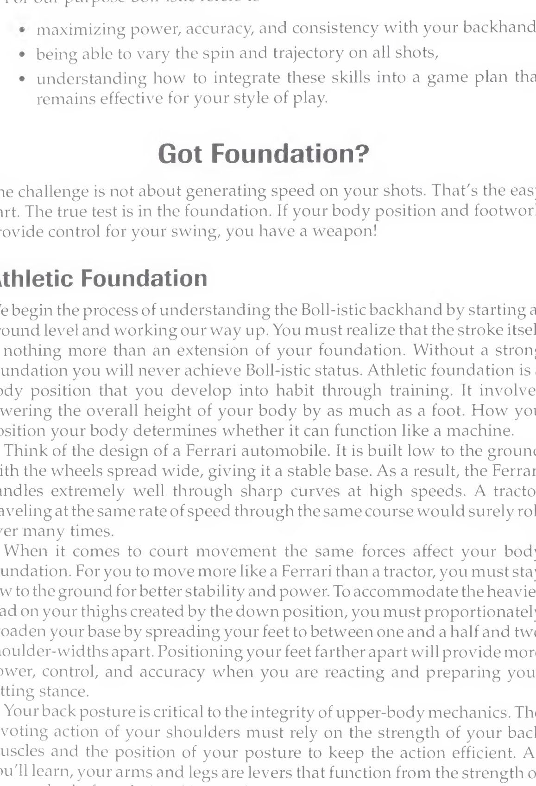
Thử thách không phải là tạo ra tốc độ cho cú đánh của bạn. Đó là phần dễ dàng. Thử nghiệm thực sự nằm ở nền tảng. Nếu vị trí cơ thể và động tác bằng chân giúp bạn kiểm soát cú đánh của mình thì bạn có vũ khí! Nền tảng thể thao Chúng ta bắt đầu quá trình tìm hiểu Cú trái tay (backhand) (backhand) tay Boll-istic bằng cách bắt đầu từ mặt đất và tiến dần lên. Bạn phải nhận ra rằng bản thân nét vẽ không gì khác hơn là một phần mở rộng của nền móng của bạn. Nếu không có nền tảng vững chắc, bạn sẽ không bao giờ đạt được trạng thái Boll-istic. Nền tảng thể thao là một tư thế cơ thể mà bạn phát triển thành thói quen thông qua luyện tập.
Nó liên quan đến việc hạ thấp chiều cao tổng thể của cơ thể bạn xuống khoảng một foot. Cách bạn định vị cơ thể sẽ quyết định liệu nó có thể hoạt động như một cỗ máy hay không. Hãy nghĩ đến thiết kế của một chiếc ô tô Ferrari. Nó được xây thấp sát mặt đất với các bánh xe trải rộng, tạo cho nó một chân đế vững chắc. Nhờ đó, chiếc Ferrari xử lý cực tốt qua những khúc cua gấp ở tốc độ cao. Một máy kéo di chuyển với cùng một tốc độ trên cùng một chặng đường chắc chắn sẽ bị lăn nhiều lần.
Khi nói đến chuyển động của sân đấu, các lực tương tự sẽ ảnh hưởng đến nền tảng cơ thể của bạn. Để di chuyển giống một chiếc Ferrari hơn là một chiếc máy kéo, bạn phải cúi thấp xuống mặt đất để có độ ổn định và sức mạnh tốt hơn. Để phù hợp với tải trọng nặng hơn lên đùi do tư thế nằm xuống tạo ra, bạn phải mở rộng phần đế của mình một cách tương xứng bằng cách dang rộng hai chân ra từ một rưỡi đến hai chiều rộng bằng vai. Đặt hai bàn chân của bạn cách xa nhau hơn sẽ mang lại nhiều sức mạnh, khả năng kiểm soát và độ chính xác hơn khi bạn phản ứng và chuẩn bị tư thế đánh.
Tư thế lưng của bạn rất quan trọng đối với tính toàn vẹn của cơ học phần trên cơ thể. Động tác xoay vai của bạn phải dựa vào sức mạnh của cơ lưng và vị trí của tư thế để giữ cho động tác được hiệu quả. Như bạn sẽ học, cánh tay và chân của bạn là những đòn bẩy hoạt động dựa trên sức mạnh của nền tảng cốt lõi của cơ thể. Bạn áp dụng cường độ lên các cơ trên khắp các bộ phận cụ thể của cơ thể để kiểm soát và hỗ trợ nền tảng của mình. Sử dụng tư thế đúng cho phép cơ thể bạn hoạt động giống như một cỗ máy.
Các cơ hỗ trợ nền tảng phần thân dưới cho đến tư thế phần thân trên của bạn được kích hoạt ở chế độ vững chắc nhưng linh hoạt. Chúng phải uốn cong nhưng không cứng nhắc, tương tự như hệ thống treo chặt của chiếc Ferrari, có khả năng vận hành chặt chẽ qua các khúc cua. Với cơ thể uốn cong và chắc chắn, bạn có thể chuyển số sang chế độ nhanh, bùng nổ, hoạt động mạnh mẽ khi phản ứng, chặt chẽ khi rẽ và hoàn toàn được kiểm soát.
Cánh tay đánh hoặc các cánh tay có thể hoạt động với mức độ uốn cong thậm chí còn cao hơn nền tảng. Bất kể vai trò của cánh tay và bàn tay (dựa trên cách cầm vợt), chúng đều sử dụng tính linh hoạt để tạo ra hành động và tốc độ giống như roi trong cú đánh. Trên thực tế, họ có rất ít lực căng khi cầm vợt. Họ không bóp nghẹt sự sống của cây vợt. Nếu họ làm vậy, tính linh hoạt sẽ bị giảm đi. Tay cầm vừa đủ chặt để giữ vợt ổn định.
Nền tảng thể thao là chìa khóa để kiểm soát kết quả của bất kỳ hành động nào do tay và chân của bạn tạo ra. Bạn phải rèn luyện và phát triển nền tảng thể thao để hình thành thói quen. Một nền tảng không nhất quán sẽ tạo ra những kết quả không nhất quán. Hãy nhớ rằng, về mặt thể chất, quần vợt là môn thể thao vận động và đánh. Những bài tập này có thể giúp bạn cải thiện nền tảng thể thao của mình.
. Kéo co — Lấy một người bạn và một sợi dây dài. Đối mặt với nhau và đứng cách nhau vài bước chân. Cố gắng kéo bạn bè của bạn mất Trọng tâm cơ thể. Bạn sẽ nhận thấy rằng bằng cách mở rộng chân đế và hạ thấp trọng tâm, bạn có thể giữ Trọng tâm cơ thể và mạnh mẽ. 2. Giữ vững lập trường - Tiếp tục trò chơi kéo co và luân phiên giữa các thế đứng cởi mở, trung lập và đóng. Yêu cầu bạn của bạn giữ tư thế tương tự, sau đó luân phiên giữa các tư thế khác nhau.
Nghệ thuật di chuyển Nghệ thuật di chuyển bao gồm sự hiểu biết về cách sắp xếp kế hoạch tấn công của bạn, cách bảo vệ lãnh thổ của bạn một cách tốt nhất và cách quyết định thời điểm tấn công. Để giành được chiến thắng, nó liên quan nhiều hơn đến sức mạnh của bất kỳ loại vũ khí nào. Để thành công bền vững, bạn phải phát triển tâm lý cạnh tranh. Chuyển động và định vị đều là công cụ để phát triển Cú trái tay (backhand) (backhand) tay Bollistic. Bạn nên biết hướng và tốc độ đánh của mình, điều này ảnh hưởng mạnh mẽ đến khả năng di chuyển vào vị trí phục hồi kịp thời của bạn.
Nếu một điểm có trung bình ba hoặc bốn cú đánh, thì hãy dùng 80% thời gian bạn đánh để tiếp tục ghi điểm. Chỉ một trong bốn lần, cú đánh của bạn liên quan đến việc Kết thúc cú đánh điểm. Nếu bạn không thể duy trì thế trận hiệu quả, đối thủ của bạn sẽ có những cơ hội rộng mở. Việc khôi phục vị trí tại sân đấu của bạn là rất quan trọng trong 80% thời gian, nhưng bạn phải biến nó thành thói quen 100% thời gian. Khi chúng ta xem xét kỹ hơn nghệ thuật chuyển động, hãy ghi nhớ tầm quan trọng của việc duy trì vị trí tốt thông qua sự hiểu biết về thời gian và vị trí chính xác cho mỗi lần lựa chọn cú đánh.
Thời gian và Nhịp điệu Một sự tương tự hay để hiểu về thời gian và nhịp điệu là hãy xem cách chúng ta nhảy theo nhạc. Khi nghe một giai điệu khiêu vũ hay, nhiều người trong chúng ta sẽ tự động bắt đầu chuyển động cơ thể. Thời điểm của nhịp nhạc, nhịp điệu của nhạc cụ và phong cách của bài hát dường như cuốn hút những vũ công giỏi khi họ đồng bộ hóa chuyển động của mình với âm nhạc. Nhịp của một trận đấu quần vợt được thiết lập bởi tốc độ hai người chơi tập hợp lại. Trao đổi bóng càng nhanh thì mỗi tay vợt phải phản ứng và di chuyển càng nhanh để theo kịp nhịp. Giống như những vũ công cừ khôi, các vận động viên quần vợt di chuyển theo nhịp một cách uyển chuyển khi họ làm mọi thứ trôi qua và sau đó hồi phục.
Chúng ta có thể chia quá trình này thành năm giai đoạn hoạt động khi quả bóng di chuyển từ người chơi này sang người chơi khác và quay lại. Để theo kịp thời gian, bạn cần tốc độ (hoặc quan trọng hơn là sự nhanh chóng) và bạn phải chọn những cú đánh cho phép bạn có cơ hội phục hồi ít nhất 80% thời gian. Ở cấp độ chơi cao nhất, bạn phải cực kỳ hiệu quả để duy trì tốc độ. Chúng ta hãy xem xét từng giai đoạn của quá trình chuyển động.
Giai đoạn 1 — Sẵn sàng phản ứng Khi bóng bắt đầu nảy tới đối thủ của bạn trong một pha đánh bóng về cơ bản, bạn chuẩn bị cho phản ứng ban đầu của mình với cú đánh của đối thủ. Ngay cả khi bạn chưa khôi phục hoàn toàn Vị trí trên sân từ cú đánh trước đó, bạn vẫn nên giữ vững lập trường để khi đối thủ tiếp xúc, bạn có thể đọc được hướng và Độ sâu của bóng của cú đánh và di chuyển về phía đó. Đây là lúc bạn đã vào tư thế sẵn sàng (ready position), nền tảng thể thao của mình, với chiếc Ferrari sẵn sàng đua.
Giai đoạn 2 — Đọc và Phản ứng Khi đối thủ của bạn bắt đầu đánh, bạn nên tìm kiếm bất kỳ dấu hiệu nào về vị trí bóng sẽ đi để bạn có thể bắt đầu dự đoán nước đi tiếp theo của mình. Tại thời điểm tiếp xúc, bạn đọc được cú đánh của đối thủ và bắt đầu chuyển động. Bởi vì quả bóng di chuyển dọc theo chiều dài sân chỉ trong một đến hai giây nên bạn phải phản ứng nhanh chóng.
Giai đoạn 3 — Động tác bằng chân và Chuẩn bị Bạn đã phản ứng mạnh với cú đánh của đối thủ và đang theo dõi bóng. Động tác chân của bạn phải nhanh và uyển chuyển khi bạn duy trì chiều cao thể thao thấp của mình. Việc chuẩn bị sớm và đặt vợt đúng vị trí là rất quan trọng đối với động tác chân của bạn trong cú đánh. Khi bóng nảy về phía bạn là bạn đã chuẩn bị vợt và điều chỉnh chân để thực hiện.
Giai đoạn 4 - Thiết lập và Thực thi Khi có thời gian, bạn sẽ vào tư thế đánh và sẵn sàng bắn, có thể thực hiện bất kỳ điều chỉnh nào vào giây cuối cùng cho độ nảy. Trong những tình huống bạn phải đánh trên đường chạy, chân của bạn sẽ điều chỉnh theo sự chuẩn bị của vợt khi bạn chuẩn bị thực hiện. Giai đoạn 5 - Phục hồi Các vận động viên giỏi học cách phục hồi như một phần của quá trình tự nhiên của cú đánh. Khi họ cú đánh, họ đã bắt đầu hồi phục, đặc biệt là khi họ đang chạy trốn và phải Đổi hướng bóng hồi phục. Bạn chỉ có thời gian để cú đánh của mình tiếp cận đối thủ và khôi phục vị trí sân của mình. Điều này có nghĩa là bạn đánh bóng càng mạnh thì bạn càng có ít thời gian để định vị lại vị trí. Vị trí trên sân để phục hồi thay đổi tùy theo hướng bạn đánh bóng.
Bạn nên cố gắng hết sức để hồi phục hoàn toàn kịp thời sau mỗi lần bắn. Nếu không, bạn để sân rộng mở cho đối thủ của mình. Khi bóng đã nảy sang phần sân đối phương, bạn đã trở lại vị trí và sẵn sàng bắt đầu lại quá trình. Định vị sân Như chúng tôi đã giải thích chi tiết trong video Chiến thắng với trò chơi của bạn - Phần /, mục tiêu của việc phục hồi là để bạn định vị chính mình ở giữa các cú đánh tốt nhất có thể của đối thủ. Bạn phải loại bỏ các cơ hội trên sân mở cho đối thủ bằng cách giữ mình trong tầm tay của bất kỳ cú đánh nào mà họ có thể đánh. Khi bạn tìm hiểu thêm về đối thủ của mình và trở nên thành thạo hơn trong việc dự đoán các cú đánh của họ, bạn có thể bắt đầu bảo vệ vị trí của mình.
Kỹ thuật chuyển động đúng Giống như chiếc Ferrari, chúng ta muốn xuất phát nhanh, sắc bén và ổn định khi Đổi hướng bóng và kiểm soát đà của mình. Theo thiết kế, chúng ta phải ở thấp với nền và nền vững chắc. Hãy nhớ rằng trong mỗi tình huống, bạn phải phát triển thói quen tạo điểm tựa cách nhau một khoảng rưỡi đến hai chiều rộng bằng vai. Chiều rộng này cho phép phần thân dưới của bạn phân phối lực được tạo ra khi ở tư thế thấp. Thiết lập một tư thế lưng khỏe mạnh và phát triển các cơ nâng đỡ phần thân trên của bạn là điều không thể thiếu đối với hiệu quả tổng thể của nền tảng của bạn.
Tư thế lưng giống như một cây cầu nối phần thân dưới với phần thân trên. Sức mạnh được tạo ra thông qua việc chuyển trọng lượng ở phần dưới cơ thể bắt đầu chuyển động xoay ở hông, truyền lên tư thế của lưng và xoay vai để thực hiện động tác. Tư thế tốt cho phép bạn duy trì sức mạnh và sự nhất quán trong cú đánh cũng như độ sắc nét trong từng thời điểm của bạn.
Phản ứng ở bước đầu tiên Kỹ thuật phản ứng ở bước đầu tiên của bạn sẽ được kiểm tra nghiêm ngặt trên các bề mặt ẩm ướt, trơn trượt như Sân cứng sau một cơn mưa nhẹ hoặc Sân Sân đất nện đã khô và trở nên bụi bặm. Nhưng nếu bạn học cách sử dụng trọng lượng cơ thể và mỗi lần Lực đạp chân đúng cách, bạn sẽ di chuyển thành công khi điều kiện sân trở nên tồi tệ hơn.
Từ cơ sở bước chân rộng của vị trí nền tảng vững chắc của bạn, chúng tôi khuyên bạn nên thực hiện kỹ thuật thả bước và lái xe để đưa bạn từ trạng thái nghỉ sang chuyển động. Yếu tố quan trọng nhất để có Thời gian phản xạ nhanh là bước đi đầu tiên, bước này sẽ ngay lập tức tạo ra động lực. Hãy xem xét một chiếc ô tô đang chạy trên tuyết. Để tăng độ bám đường trên tuyết, xe dẫn động cầu trước sử dụng trọng lượng nặng của động cơ để tạo độ bám cho lốp xe với mặt đất. Những chiếc xe dẫn động cầu sau thường quay lốp trong tuyết vì phần lớn trọng lượng của xe dồn lên lốp trước. Lốp sau không có trọng lượng để cung cấp lực kéo. Sự tương tự này tương đồng với khái niệm đằng sau kỹ thuật thả từng bước và truyền động.
Động tác thả bước sử dụng trọng lượng cơ thể để tạo lực kéo khi bàn chân đặt bên dưới đường giữa cơ thể bạn. Đối với người thuận tay phải phản ứng với bóng bay về phía bên trái tay, bàn chân trái sẽ thả xuống bên dưới thân, định vị phần thân trên để Vung vợt ra sau (lấy đà). Bàn chân trái có lực kéo để phát nổ và chuyển động khi bàn chân phải bước qua.
Nếu bạn lái xe quá mạnh bằng chân phải, bạn có thể bị mất Trọng tâm cơ thể giống như xe dẫn động cầu sau có thể mất lực kéo trên tuyết. Các kiểu bước chân Hãy coi các kiểu bước chân như bánh răng của một chiếc xe đạp 10 tốc độ sẽ giúp bạn hiểu được độ dài sải chân. Để bắt đầu nhanh chóng, bạn chuyển sang động tác bằng chân ở số một, bao gồm các bước ngắn, nhanh nhẹn nhưng mạnh mẽ để tăng tốc nhanh chóng theo tốc độ. Những bước sải dài hoặc những bước đi lớn giống như số 10 trên xe đạp, giúp bạn tăng tốc chậm hơn. Để nhanh chóng, bạn phải thực hiện các bước đầu tiên.
Các mẫu động tác bằng chân được thiết kế để hoàn thành các nhiệm vụ cụ thể. Để di chuyển sang trái hoặc phải trong khoảng cách nhiều hơn một vài bước, hãy sử dụng động tác Bước chân bắt chéo chân. Mô hình chuyển động này cho phép bạn di chuyển nhanh chóng nhưng vẫn có thể chuyển sang giai đoạn thiết lập và thực hiện. Khi bóng chỉ còn cách vài bước, động tác đảo chân cho phép bạn định vị và điều chỉnh theo cú đánh. Trong nhiều tình huống, bạn sẽ cần các Bước điều chỉnh để sắp xếp bàn chân của mình cho cú đánh. Những bước giật nhỏ này, thường tạo ra âm thanh chói tai trên Sân cứng, giúp bạn chuẩn bị động tác bằng chân để thực hiện cú đánh.
Việc chuẩn bị vợt không chỉ quan trọng đối với bản thân cú đánh mà còn đối với động tác chân phải hỗ trợ nó. Nếu bạn chuẩn bị vợt trước cơ thể trên đường đánh bóng, bàn chân của bạn sẽ nhận được thông báo chính xác về cách thiết lập và hỗ trợ cú đánh của bạn. Nếu bạn chuẩn bị vợt quá sâu trong cú vung vợt về phía sau đến mức nó chạm vào phía sau cơ thể bạn trên đường tới bóng, bạn sẽ gửi một thông điệp mâu thuẫn đến bàn chân, điều này thường dẫn đến tư thế đánh đóng.
Bằng cách chuẩn bị sớm chuyển động của bóng, đôi chân của bạn sẽ có thời gian cần thiết để chuẩn bị. Một cách tham khảo hữu ích là hãy tưởng tượng mông vợt là một chiếc đèn pin. Bạn muốn chùm ánh sáng đi trước cơ thể bạn, hướng về phía lưới. Chùm tia sáng tượng trưng cho hướng mà bạn dự định sử dụng sức mạnh của mình. Bàn chân của bạn phản ứng với sự chuẩn bị này bằng cách đặt bạn vào tư thế cởi mở, với tùy chọn đẩy trọng lượng của bạn về phía trước vào tư thế trung lập.
Các thế đánh bóng Có ba thế đánh cơ bản: • Mở • Trung lập • Đóng Sử dụng mặt đồng hồ để hiểu rõ hơn về từng thế, người Cú thuận tay (forehand) (forehand) phải đặt chân trái ở giữa đồng hồ để thực hiện cú Cú trái tay (backhand) (backhand). Trong tư thế mở, bàn chân phải hướng về hướng 3 giờ. Lập trường này phổ biến trong các tình huống khắc nghiệt khi thời gian thiết lập bị hạn chế, chẳng hạn như khi Trả giao bóng. Những người chơi trái tay bằng hai tay sử dụng tư thế mở phổ biến hơn những người chơi một tay. Bằng cách thực hành thế đứng cởi mở từ nhiều tư thế khác nhau trong triều đình, bạn có thể phát triển nó thành một thế đứng mạnh mẽ.
Khi thời gian cho phép và khi bóng khá ngắn, tư thế trung lập sẽ trở thành một lựa chọn mạnh mẽ. Với chân trái lại ở giữa đồng hồ, chân phải của bạn hướng về hướng mười hai giờ. Thế đứng trung lập là thế đứng chiếm ưu thế cho cả người chơi trái tay một và hai tay, mang lại sự cân bằng và sức mạnh tốt nhất cho cú đánh.
Từ thế đứng mở (open stance), đánh về phía trước bằng chân phải về hướng 12 giờ khiến quá trình chuyển trọng lượng diễn ra với toàn bộ sức mạnh của bạn đi cùng hướng với cú đánh và vùng mục tiêu. Thế đứng khép kín xảy ra khi chân trái ở giữa đồng hồ nhưng chân phải bước ngang về hướng chín giờ. Tư thế này đặc biệt có vấn đề đối với những người chơi thuận tay vì nó cấm cơ thể có thể xoay theo chuyển động xoay. Ngoài ra, việc đánh từ tư thế đóng sẽ tạo ra vấn đề về Trọng tâm cơ thể, hạn chế sức mạnh và các lựa chọn bắn. Nhưng người chơi bằng một tay có thể khá hiệu quả trong tư thế khép kín vì họ không sử dụng động tác xoay trục như người chơi bằng hai tay.
Để tránh thực hiện thế đứng khép kín, bạn phải học cách chuẩn bị cho cú đánh một cách chính xác với cây vợt ở phía trước cơ thể khi bạn thiết lập. Phục hồi Kỹ thuật phục hồi khi đánh trên đường chạy có thể bắt đầu khi bạn thực hiện cú đánh. Giống như một vận động viên trượt tuyết xuống dốc dịch chuyển phần thân dưới ra ngoài để vượt qua một cú trượt dốc, vận động viên xuất sắc có thể thay đổi đà chỉ bằng một động tác nhanh chóng. Bạn nên sử dụng chủ yếu các mẫu chéo và xáo trộn để khôi phục vị trí sân.
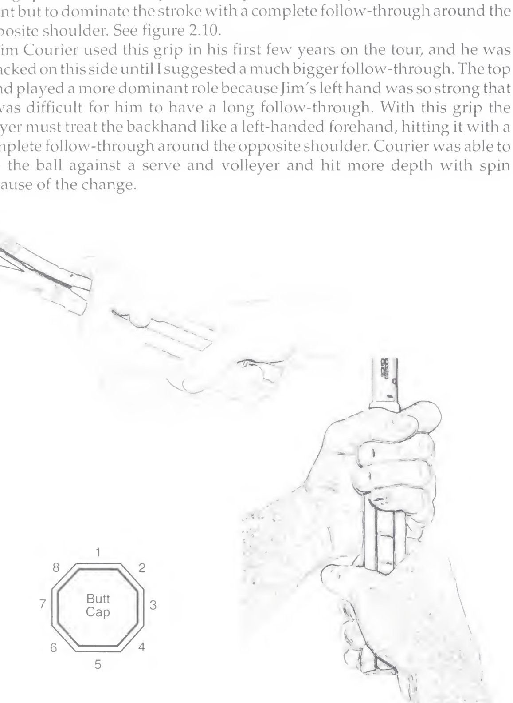
Điều quan trọng là vai của bạn hướng vào lưới khi bạn hồi phục, ít nhất là cho đến khi đối thủ tiếp xúc. Điều này sẽ cho phép bạn thay Đổi hướng bóng đột ngột nếu bóng đánh phía sau bạn. Chúng tôi dành phần lớn cuộc thảo luận về trái tay Boll-istic cho các khái niệm liên quan đến chuyển động vì chúng tôi muốn bạn hiểu mọi thứ liên quan đến việc phát triển vũ khí và áp dụng nó một cách hiệu quả trong kế hoạch trò chơi của bạn. Chuyển động cũng quan trọng đối với kết quả như chính cú đánh.
Cú đánh Boll-istic Bây giờ bạn đã hiểu rõ hơn về các kỹ năng di chuyển giúp tăng thêm khả năng di chuyển linh hoạt và mượt mà cho vũ khí của bạn, chúng tôi tiếp tục quá trình này bằng cách xem xét cơ chế cú đánh. Bây giờ bạn đã hiểu rõ hơn về tầm quan trọng của vị trí cơ thể được gọi là nền tảng thể thao và cách nó góp phần vào cả chuyển động và cú đánh.
Nửa dưới của cơ thể bạn chịu trách nhiệm cung cấp sự ổn định cho cú đánh thông qua tư thế đánh cân bằng hoặc động tác chân chính xác để đánh trên đường chạy. Thông qua việc chuyển trọng lượng, phần thân dưới cũng tạo ra lực cho chuyển động xoay của cơ thể. Vùng thân của cơ thể, thông qua tư thế lưng chắc chắn, có tác dụng duy trì vai ngang bằng trong cú đánh và tăng thêm sự ổn định cho cơ học phần trên cơ thể. Với nền tảng vững chắc nhưng linh hoạt, chúng tôi sẵn sàng xây dựng cơ chế cú đánh. Vai, cánh tay, bàn tay và vợt sẽ phối hợp hài hòa với nền tảng để tạo ra lực trong cú vung vợt. Để tối đa hóa sức mạnh và giảm thiểu nỗ lực, bạn phải học cách tạo đòn bẩy trong cú đánh của mình.
Đòn bẩy của máy Khái niệm đòn bẩy đề cập đến chức năng của cánh tay, bàn tay và vợt của bạn hoạt động hiệu quả. Định nghĩa chung về đòn bẩy là 'Hành động sử dụng một đòn bẩy, chẳng hạn như một thanh kim loại, xoay vào một điểm tựa cố định để đạt được Điểm lợi thế (advantage) cơ học. Hình ảnh trực quan thể hiện định nghĩa sẽ là hành động của một chiếc bập bênh. Ngồi ở một đầu của bập bênh sẽ nâng đầu kia lên khi trục bập bênh tựa vào điểm tựa hỗ trợ. Chức năng của bập bênh từ lâu đã được áp dụng để nâng các vật nặng một cách dễ dàng hơn. Đòn bẩy ám chỉ việc sử dụng một công cụ để giúp công việc trở nên dễ dàng và hiệu quả hơn.
Một ví dụ khác liên quan đến hoạt động của chiếc búa. Để đóng một chiếc đinh vào một miếng gỗ, chiếc búa được đặt ở góc 90 độ với cẳng tay sẽ trở thành một đòn bẩy. Hành động đi xuống bắt đầu bằng cách đẩy đầu búa về phía chiếc đinh. Đầu búa theo sau. Khi mông hướng xuống dưới, năng lượng của hành động truyền lên đầu búa và tới chiếc đinh. Chúng tôi gọi đây là hành động đòn bẩy đi xuống.
Với ví dụ này, hãy nghĩ đến việc đánh một quả bóng tennis như một hành động đòn bẩy về phía trước. Trong động tác Vung vợt ra sau (lấy đà), mông vợt được định vị để hướng về phía trước để tiếp xúc. Năng lượng được tạo ra bằng cách đẩy mông vợt về phía trước sẽ tăng tốc đầu vợt qua Vùng đánh bóng lý tưởng. Tương tự như động tác dùng búa, động tác của vợt tạo ra đòn bẩy.
Khi chúng ta đi vào chi tiết hơn của các nét, hãy giữ cho hình ảnh đòn bẩy luôn mới mẻ trong tâm trí bạn vì chúng sẽ trở thành chìa khóa để tạo ra kết quả Boll-istic. Vụ nổ Boll-istic bằng một tay Khía cạnh quan trọng nhất trong việc xây dựng vụ nổ bằng một tay liên quan đến cách cầm và vị trí đòn bẩy ở cổ tay. Cách cầm vợt trái tay phía đông mang lại vị trí hỗ trợ mạnh nhất ở cổ tay, giúp ngăn cú đánh bị gãy khi tiếp xúc.
Với cách cầm vợt trái tay phía đông còn nguyên, cú đánh bắt đầu bằng vị trí vung vợt sau. Yếu tố quan trọng trong động tác vung vợt về phía sau là xác định vị trí của mông vợt để đánh bóng về phía trước nhằm bắt đầu cú vung vợt về phía trước. Có nhiều kiểu khác nhau được sử dụng để đưa vợt về phía sau và thường cánh tay bị cong khi thực hiện động tác vung vợt về phía sau. Khi cú đánh bắt đầu chuyển động về phía trước, cánh tay duỗi ra hoàn toàn và trở thành một đòn bẩy.
Duỗi ra nhưng không bị khóa hoàn toàn ở khuỷu tay, cánh tay chắc chắn nhưng vẫn linh hoạt. Lực Boll-istic được tạo ra khi tay đánh (đòn bẩy) kết hợp lồng xương sườn làm điểm tựa. Lồng xương sườn, mô phỏng hoạt động của bập bênh, được sử dụng để truyền năng lượng vào cú đánh, hoạt động với một cánh tay mở rộng và linh hoạt để đẩy cú đánh trước khi mông bắt đầu tiến về phía tiếp xúc. Phần mông được căn chỉnh với đường đi của quả bóng tới và ở dưới độ cao của điểm tiếp xúc dự định. Đầu mông bắt đầu hướng về phía tiếp xúc và sau đó đi theo một đường xuyên qua cơ thể khi cánh tay di chuyển về phía mục tiêu.
Đầu vợt tăng tốc nhanh chóng vào Vùng đánh bóng lý tưởng khi nó đi theo đường xoay của đầu vợt. Khi cánh tay tiếp tục vươn hết tầm theo hướng của mục tiêu trong cú đánh theo hướng, đầu vợt sẽ đi qua Vùng đánh bóng lý tưởng có khả năng sai sót lớn và khả năng kiểm soát hướng cho các lựa chọn cú đánh khác nhau. Đầu vợt Kết thúc cú đánh như thế nào ở cuối cú đánh sẽ phụ thuộc vào mức độ xoáy so với lực đẩy phẳng được áp dụng trong cú đánh.
Vai trò của nền tảng trong cú Cú trái tay (backhand) (backhand) bằng một tay là chống lại xu hướng xoay mở của cơ thể. Hành động Xoay thân mình vợt dừng hoàn toàn khi chuyển động về phía trước của vợt bắt đầu. Bằng cách dừng hành động xoay, năng lượng từ bệ được chuyển thành sức mạnh của hành trình. Cánh tay đối diện giữ Trọng tâm cơ thể cho vai, giữ chúng ngang bằng trong cú đánh và ngăn chúng xoay khi cú đánh bắt đầu.
Cú Cú trái tay (backhand) (backhand) bằng một tay hoạt động hiệu quả nhất từ tư thế đánh trung lập cho phép lực truyền trọng lượng hoạt động theo cùng hướng với cú đánh. Tuy nhiên, những người chơi một tay cũng có ưu điểm là có hiệu quả từ thế đứng khép kín. Thế đứng mở (open stance) khó hơn một chút đối với những người chơi bằng một tay, mặc dù họ có thể sử dụng nó để trả bóng và trong các tình huống khác khi thời gian là những cú Cú trái tay (backhand) (backhand) limBoll-istic, dù có hay không. Bạn phải phát triển khả năng thực hiện bằng một hoặc hai tay để thực hiện từ tất cả các tư thế đánh này.
trong một kế hoạch trò chơi có con, bạn phải thiết lập mục tiêu Stant trong đầu. mối đe dọa trong tâm trí đối thủ rằng tại bất kỳ thời điểm nào, Cú trái tay (backhand) (backhand) tay của bạn có thể Kết thúc cú đánh điểm. Tuy nhiên, hầu hết thời gian bạn đang làm việc ở nhiều tốc độ đánh bóng khác nhau với các biến thể của quỹ đạo và độ xoáy để thiết lập nhiều sai sót hơn trong kế hoạch trò chơi của mình, để trong suốt trận đấu, bạn hạ gục đối thủ bằng các vị trí chính xác, nhất quán. Bằng cách sử dụng các cú đặt bóng Boll-istic một cách tiết kiệm, bạn sẽ đạt được kết quả hiệu quả hơn trong kế hoạch trò chơi của mình.
Hãy nhớ rằng, khi bạn quyết định bóp cò, bạn không thể nghi ngờ chính mình và trở nên do dự. Luôn duy trì những kỳ vọng tích cực và một triển vọng Sự tự tin. Hãy thử bài tập sau đây, được gọi là Kiểm tra khăn - Lấy một chiếc khăn, thiết lập ở tư thế trung lập và đặt cổ tay của bạn theo kiểu cầm trái tay phía đông. Nhờ một người bạn giữ chiếc khăn phía sau gần tay bạn. Bây giờ hãy kéo chiếc khăn ra khỏi tay đối tác của bạn và xoay người về phía trước như thể bạn đang đánh một quả bóng.
Lặp lại nhiều lần để cảm nhận đường xoay và hình dạng mà cánh tay và cổ tay của bạn tạo ra. Bạn kéo càng mạnh thì Tốc độ đầu vợt càng cao. Lát dao bằng một tay Một cú đánh Boll-istic với xoáy xuống, lát dao bằng một tay đóng vai trò là đối trọng chiến lược của cú đánh. Ngay cả hầu hết những người chơi bằng hai tay cũng học cách phát triển hành động cắn nhiều hơn bằng cách chỉ sử dụng một tay. Trong những tình huống ép buộc khó khăn nhất, nhát dao thường là lựa chọn duy nhất mà bạn có. Nó là một công cụ linh hoạt có khả năng ngụy trang trong cả quá trình chuẩn bị và thực hiện vì bạn có thể tấn công cả sâu và ngắn. Được sử dụng hiệu quả và bố trí tốt, cú đánh khiến đối thủ phải theo gót mỗi khi bạn thả người. Trong các cú đánh tiếp cận, cú đánh cho phép bạn tấn công sâu và đôi khi ngắn. Bạn có thể thực hiện cú đánh bằng động tác chân dễ dàng hơn và có nhiều thời gian hơn để định vị bản thân. Cuối cùng, một cú cắt bóng được thực hiện tốt sẽ khiến đối thủ ít phải thao tác hơn vì bóng trượt thấp khỏi điểm nảy.
Tay cầm ưa thích cho lát dao là tay cầm kiểu lục địa. Kiểu cầm vợt này cho phép cân bằng hoàn hảo giữa độ xoáy xuống và lực lái trong cú đánh đồng thời mang lại khả năng kiểm soát và cảm giác tuyệt vời khi chạm bóng. Trong động tác Vung vợt ra sau (lấy đà), chúng ta muốn chuẩn bị cán vợt phía sau quả bóng bay tới, bên dưới điểm tiếp xúc dự kiến. Đầu vợt nghiêng về phía sau tạo thành hình chữ L với cánh tay và vợt. Vai xoay sang vị trí vuông góc với lưới và ngang bằng.
Để bắt đầu di chuyển về phía trước, vai đánh bắt đầu xoay mở khi mông vợt hướng về phía điểm tiếp xúc. Vai đối diện có tác dụng làm đối trọng, ngăn chặn sự xoay, duy trì mối quan hệ vuông góc của vai với lưới. Chức năng neo giữ của cánh tay và vai đối diện này cung cấp lực kéo của cánh tay đánh mạnh hơn và giúp duy trì đường xoay.
Đầu vợt bắt đầu về phía trước và sau đó uốn cong như thác nước xuống và ngang qua cơ thể, khiến đầu vợt tiếp xúc. Đầu vợt sau đó đi theo đường đi của đầu vợt. Cánh tay phải linh hoạt khi duỗi ra trong động tác Vung vợt ra sau (lấy đà). Giống như trong cú đánh bằng một tay, cánh tay trở thành đòn bẩy và dùng lồng xương sườn làm điểm tựa. Cánh tay đánh bóng hoạt động với khung xương sườn để tạo lực và hỗ trợ cho cú đánh. Khi cú đánh đi qua Vùng đánh bóng lý tưởng, cánh tay sẽ tách ra khỏi lồng xương sườn để có thể vươn hết tầm về phía mục tiêu trong lần thực hiện tiếp theo.
Nền tảng của cơ thể có tác dụng hạn chế sự xoay hoàn toàn của hông và vai. Vai ngang bằng và vuông góc với lưới, nghiêng về phía lưới trước tư thế đứng của bạn. Bạn có thể nghĩ đến cách một tay vợt bóng đá sử dụng vai để chặn, nghiêng người về phía trước để Vung vợt ra sau (lấy đà). Để hiểu lợi ích của việc có một lát cắt trong kế hoạch trò chơi của bạn, hãy nghĩ đến cách một vận động viên ném bóng trong môn bóng chày sử dụng nhiều cú ném khác nhau - bóng cong, chuyển đổi, thanh trượt, v.v. - để tạo sự tương phản với bóng nhanh. Bằng cách kết hợp tốc độ, vị trí và độ xoáy của bóng, người ném bóng không cho phép người đánh bóng trở nên quá thoải mái khi dự đoán cú ném tiếp theo.
Lát của bạn bổ sung thêm sự đa dạng tương tự cho kế hoạch trò chơi của bạn và có tác dụng tương tự lên đối thủ của bạn. Ngoài ra, việc ngụy trang trong quá trình chuẩn bị sẽ mở ra nhiều cơ hội hơn cho việc sử dụng các cú đánh thả và các cú đánh đặc biệt khác. Steffi Graff, có lẽ là tay vợt nữ vĩ đại nhất trong lịch sử, có một cú Cú trái tay (backhand) (backhand) tàn khốc và hiếm khi đánh trúng bóng. Tuy nhiên, đối với hầu hết người chơi, việc học cách kết hợp lát cắt vào trò chơi trái ngược với vụ nổ Boll-istic sẽ tỏ ra hiệu quả nhất.
Cú đánh Boll-istic Blast bằng hai tay Chức năng trái tay bằng hai tay khá khác so với trái tay bằng một tay liên quan đến việc sử dụng nền tảng và tầm quan trọng của tư thế đánh. Trong khi cú đánh bằng một tay hoạt động hiệu quả hơn mà không cần xoay hoàn toàn cơ thể, thì cú đánh bằng hai tay tạo ra sức mạnh thông qua tư thế đánh mạnh mẽ phải cho phép cơ thể xoay hoàn toàn trong cú đánh.
Tay cầm dành cho cú đánh bằng hai tay xác định hình dáng cũng như chức năng của cú đánh và bàn tay. Tùy thuộc vào cách cầm, cú đánh sẽ thiên về tay trái (ở người thuận tay phải), có sự cân bằng về thế, hoặc trở nên thiên về tay phải hơn. Vị trí cầm vợt của tay dưới quyết định hệ số ưu thế cho cú đánh.
Chúng ta sẽ bắt đầu khám phá các cách kết hợp cách cầm vợt khác nhau ở một thái cực và dần dần tiến tới thái cực kia, xem xét các cú đánh phù hợp với từng bộ cách cầm vợt. Sự kết hợp cách cầm vợt 1 Tay trên — thuận tay phía đông Tay dưới — thuận tay nửa tây hoặc đông Hầu hết người chơi đều làm quen với môn thể thao này bằng cách học cú Cú thuận tay (forehand) (forehand) trên mặt đất. Kết quả là, họ phát triển sự thoải mái tuyệt vời trong cách cầm vợt mà họ sử dụng cho cú thuận tay (forehand) của mình. Khi họ bắt đầu học các cú Cú trái tay (backhand) (backhand), họ tự nhiên có khả năng chống lại việc thực hiện bất kỳ thay đổi nào trong cách cầm vợt phía dưới. Tuy nhiên, với cách cầm vợt thuận tay ở tay dưới, toàn bộ sức mạnh cho cú đánh phải đến từ tay trên. Vị trí phía dưới quá yếu để có thể hỗ trợ.
Tay dưới sẽ đảm nhận vai trò neo vào mông vợt thông qua Vùng đánh bóng lý tưởng. Với việc tay dưới tạo điểm xoay, tay trên cung cấp lực truyền động cho cú đánh. Vùng đánh bóng lý tưởng ưu tiên so với tay cầm phía dưới nằm ở phía sau hông. Vùng đánh bóng lý tưởng này nằm xa hơn về phía sau và ít ra phía trước cơ thể hơn.
Khi tay dưới được đặt ở tư thế cầm thuận tay nửa tây hoặc đông, cánh tay và khuỷu tay tựa vào bụng khi tiếp xúc. Cú đánh của kiểu cầm vợt này là cú thuận tay (forehand) bằng tay trên với tay dưới giữ chặt mông vợt thông qua tiếp xúc. Chúng tôi không khuyên bạn nên kết hợp cách cầm này. Sự kết hợp cách cầm 2 Tay trên - thuận tay phía đông Tay dưới - lục địa Việc chuyển tay dưới sang cách cầm kiểu lục địa sẽ không làm thay đổi thực tế rằng cú đánh vẫn chiếm ưu thế ở tay trên. Tuy nhiên, Vùng đánh bóng lý tưởng ưu tiên sẽ dịch chuyển về phía trước so với vùng được sử dụng với bộ tay cầm trước đó.
Cánh tay dưới sẽ hơi cong ở khuỷu tay trong suốt cú đánh. Một lần nữa, tay phải sẽ có tác dụng xoay mông vợt khi tay trái tạo lực đẩy. Hành động xoay của thân vợt bắt đầu cú đánh khi đường xoay đưa mông vợt về phía tiếp xúc. Sau đó, bàn tay di chuyển theo một đường dọc theo cơ thể.
Bạn nên phát triển khả năng thực hiện cú đánh này từ cả thế đứng cởi mở và thế đứng trung lập. Sự kết hợp cách cầm 3 Tay trên — thuận tay phía đông Tay dưới — trái tay phía đông Tay dưới bây giờ chuyển sang kiểu cầm trái tay phía đông gần như hoàn toàn. Một số yếu tố thay đổi, làm cho sự kết hợp này chiếm ưu thế hơn. Bởi vì cổ tay ở bàn tay phía dưới có nhiều đòn bẩy hơn nên cánh tay có thể duỗi ra hoàn toàn trong cú đánh. Điều này có nghĩa là cánh tay dưới có thể hoạt động giống cú Cú trái tay (backhand) (backhand) bằng một tay hơn, sử dụng cánh tay duỗi ra dựa vào khung xương sườn để tạo ra lực. Vùng tiếp xúc giờ đây đã nhô ra phía trước cơ thể, cho phép bạn hưởng lợi nhiều hơn khi sử dụng cơ thể. Tay cầm chắc chắn cũng có thể được thả ra để thực hiện thao tác bằng một tay. Đây là sự kết hợp mạnh mẽ nhất của các kiểu cầm vợt cho trái tay, được sử dụng bởi Andre Agassi, Yevgeny Kafelnikov, Bjorn Borg, Chris Evert và nhiều nhà vô địch vĩ đại khác.
Lưu ý rằng các tay hoạt động theo cách khác với cách chúng hoạt động ở kiểu cầm vợt thuận tay. Tay dưới xoay mông vợt thông qua tiếp xúc, kéo nó về phía cơ thể và tay trên hỗ trợ quá trình đòn bẩy. Hãy thử bài tập sau, có tên là Mirror Image Shadow Swings - Tìm một tấm gương hoặc cửa sổ để bạn có thể nhìn thấy hình ảnh phản chiếu của mình. Bắt đầu vung vợt, thả lỏng tay để cảm nhận trọng lượng của vợt và chuyển động xoay của bàn tay. Sử dụng máy khoan khăn (trang 132) để khám phá vai trò của từng tay và cảm nhận cơ chế của cú đánh.
Bài tập trên sân — trái tay 1. Đúng lúc — Tất cả người chơi sẽ được hưởng lợi từ bài tập này. Không còn nghi ngờ gì nữa, bạn đã từng thấy nó trước đây, nhưng nó là một tác phẩm kinh điển! "Đánh bóng nảy" hoặc "Đánh bóng nảy." Không có cách nào tốt hơn để cải thiện thời gian của bạn hơn là sử dụng tất cả các giác quan của bạn - thính giác, thị giác và vận động. Vâng, bài tập rất đơn giản, nhưng chúng tôi ở học viện coi đó là bài tập cơ bản.
2. Groov^e It — Đạt được cảm giác và nhận thức về vợt ở cú Cú trái tay (backhand) (backhand) của bạn là bước đầu tiên để cải thiện tính nhất quán của bạn. Tìm một đối tác hoặc sử dụng máy bóng hoặc bảng rổ. Bắt đầu chậm rãi và thực hiện theo cách của bạn để đạt được các pha đánh bóng 20 quả trên cả sân chéo và cuối sân. 3. Xoay nó - Bây giờ hãy bắt đầu thay đổi vòng quay. Hãy sáng tạo, sử dụng xoáy xuống và Xoáy lên trong các cú đánh của bạn. Nếu bạn thấy tính nhất quán của mình giảm xuống, hãy tắt nguồn cho đến khi bạn tìm thấy sự kết hợp phù hợp giữa tốc độ và độ xoáy trong các cú đánh của bạn.
4. Đặt nó — Bây giờ bạn đã cảm nhận được Cú trái tay (backhand) (backhand) tay của mình, hãy thêm mục tiêu để đưa trò chơi của bạn lên một tầm cao mới. Thay đổi kích thước và vị trí của các mục tiêu cho cả kiểu Cú trái tay (backhand) (backhand) Đánh chéo sân (cross-court) và trái tay dọc biên. Thử thách bản thân đánh liên tiếp 20 quả bóng trở lên vào từng mục tiêu. Điều đó không dễ dàng chút nào! 5. Đánh nó - Cuối cùng, thêm thành phần sức mạnh vào trái tay của bạn. Hãy chống lại sự cám dỗ để thực hiện nó ngay lập tức. Hãy nhớ rằng, sức mạnh không nhất quán hoặc không có vị trí là sức mạnh bạn không cần! Giành quyền kiểm soát cú xoay và quả bóng của bạn - sau đó tăng nhiệt!
Kết luận Để cải thiện hình ảnh tinh thần của bạn về các cú đánh, chúng tôi thực sự khuyên bạn nên xem đi xem lại video trái tay Boll-istic. Chỉ đọc về những kỹ thuật này có thể không cung cấp đầy đủ hướng dẫn về cách áp dụng cú đánh. Lấy thông tin chúng tôi đã trình bày và thực hiện từng phần một. Hãy kiên nhẫn và sống tích cực. Sẽ mất thời gian để bạn phát triển những thói quen mới và được cải thiện. Các nguyên tắc cơ bản rất cần thiết cho kết quả, vì vậy thời gian bạn bỏ ra và khoản đầu tư bạn thực hiện bây giờ sẽ được đền đáp trong tương lai. Tất cả chỉ cần thực hành thông minh và làm việc chăm chỉ.
Giao Bóng Hiểm Hóc, Trả Giao Phản Công & Vũ Khí Drive Volley
Part III: Sonic Serves, Right-Back-Atcha Returns & The Drive Volley
Giao Bóng Chuẩn Xác & Trả Giao Bóng Tấn Công
Chapters 5 & 6: Sonic Serves & Right-Back-Atcha Returns
Sonic Serves Kho vũ khí giao bóng Giống như bản thân trò chơi, chuyển động giao bóng đã phát triển ngày nay thường được trang bị sức mạnh và khả năng kiểm soát ở mức độ chưa từng được tưởng tượng cách đây một thập kỷ. Với những vận động viên to lớn hơn, khỏe hơn, vợt mạnh hơn và độ chính xác hoàn toàn về cơ học, kho vũ khí giao bóng ngày nay thường được trang bị cú giao bóng đầu tiên "bùng nổ âm thanh" có khả năng làm lu mờ cú giao bóng đầu tiên "bùng nổ âm thanh" có tốc độ 140 dặm một giờ. Để hỗ trợ cho cú giao bóng mạnh mẽ đó, những tay vợt hàng đầu có vũ khí hỗ trợ vượt trội với vận tốc 140 dặm một giờ.
các cú giao bóng cắt và đá cũng như thay đổi tốc độ. Kết hợp việc xoay vòng ở vị trí giao bóng đầu tiên trong khi sử dụng các biến thể của vị trí trong đòn tấn công, người giao bóng khéo léo có cơ hội đóng vai ''vua núi", không cho phép ai cai trị phần sân của mình. Việc giữ giao bóng trở nên dễ dàng đối với hầu hết người chơi, cho phép người giao bóng siêu thanh tập trung vào việc đạt được một lần nghỉ giao bóng cần thiết để thực hiện hiệp đấu.
Một số người đàn ông chuyên nghiệp thể hiện tiềm năng đánh bùng nổ âm thanh ở tốc độ hơn 140 dặm một giờ cùng với các biến thể là Max Mirnyi, Greg Rusedski, Mark Philippoussis, Goran Ivanisevic, Richard Krajicek và Marc Rosset. Nhưng chúng ta nên nhận ra rằng việc giữ cú giao bóng không chỉ đơn thuần là việc giao bóng.
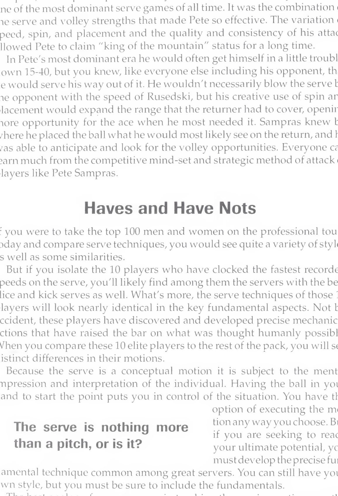
Pete Chương này của Pat Dougherty và Peter D. McCraw. Sampras, người có tiềm năng sức mạnh có thể không đạt đến mức 140, rõ ràng chỉ huy một trong những trận giao bóng thống trị nhất mọi thời đại. Chính sự kết hợp giữa sức mạnh giao bóng và vô-lê đã giúp Pete trở nên hiệu quả. Sự thay đổi về tốc độ, độ xoáy và vị trí cũng như chất lượng và tính nhất quán trong các đòn tấn công của anh ấy đã giúp Pete khẳng định vị thế "vua của những ngọn núi" trong một thời gian dài.
Trong thời kỳ thống trị nhất của Pete, anh ấy thường gặp một chút rắc rối, bị dẫn trước 15-40, nhưng bạn biết, giống như những người khác, kể cả đối thủ của anh ấy, rằng anh ấy sẽ giao bóng theo cách của mình để thoát khỏi điều đó. Anh ta không nhất thiết phải tung cú giao bóng của đối thủ với tốc độ của Rusedski, nhưng cách sử dụng xoáy và vị trí sáng tạo của anh ta sẽ mở rộng phạm vi mà người trả giao phải bao quát, mở ra nhiều cơ hội hơn cho quân át khi anh ta cần nhất. Sampras biết vị trí anh ấy đặt bóng mà anh ấy có thể sẽ thấy nhất trong pha trả bóng, đồng thời anh ấy có thể đoán trước và tìm kiếm các cơ hội vô-lê. Mọi người đều có thể học hỏi nhiều điều từ tư duy cạnh tranh và phương pháp tấn công chiến lược của những tay vợt như Pete Sampras.
Có và Có Lưới Nếu bạn nhìn vào top 100 nam và nữ trong các giải đấu chuyên nghiệp ngày nay và so sánh các kỹ thuật giao bóng, bạn sẽ thấy khá nhiều phong cách cũng như một số điểm tương đồng. Nhưng nếu bạn tách riêng 10 người chơi đã đạt được tốc độ giao bóng nhanh nhất được ghi nhận, bạn có thể sẽ tìm thấy trong số họ những người giao bóng có cú giao bóng cắt và đá tốt nhất. Hơn nữa, kỹ thuật giao bóng của 10 tay vợt đó sẽ trông gần giống nhau về các khía cạnh cơ bản quan trọng. Không phải ngẫu nhiên mà những người chơi này đã khám phá và phát triển các hoạt động cơ học chính xác nhằm nâng cao tiêu chuẩn mà con người cho là có thể thực hiện được.
Khi bạn so sánh 10 người chơi ưu tú này với những người còn lại trong nhóm, bạn sẽ thấy sự khác biệt rõ rệt trong chuyển động của họ. Bởi vì cú giao bóng là một chuyển động mang tính khái niệm nên nó phụ thuộc vào ấn tượng tinh thần và sự diễn giải của cá nhân. Có bóng trong tay để bắt đầu điểm giúp bạn kiểm soát được tình hình. Bạn có tùy chọn thực hiện chuyển động theo bất kỳ cách nào bạn chọn Bijt ^ bạn đang tìm cách tiếp cận hơn là một quảng cáo chiêu hàng, hay đúng như vậy?
tiềm năng tối thượng của bạn, bạn phải phát triển kỹ thuật cơ bản chính xác phổ biến ở các người giao bóng tuyệt vời. Bạn vẫn có thể có phong cách riêng của mình nhưng phải đảm bảo bao gồm những nguyên tắc cơ bản. Cú giao bóng không có gì hơn. Sự tương tự tốt nhất trong nhiều năm giảng dạy về chuyển động giao bóng là so sánh với cú ném bóng trong môn bóng chày. Để ném bóng chày, cơ học cánh tay và vai tạo ra một chuỗi động năng, một chuỗi chuyển động được điều khiển bởi cơ học vai, truyền năng lượng vào cánh tay ném để đẩy Độ linh hoạt khắp cánh tay và cơ ngực cho phép năng lượng hình thành theo chuỗi chuyển động, kéo giãn và giải phóng trong quá trình truyền năng lượng giống như tiếng roi quất.
Tuy nhiên, ngoại trừ cơ chế ném, có nhiều khác biệt đáng kể trong kỹ thuật tổng thể của cú giao bóng và cú ném. Sân bao gồm các yếu tố sau: 1. Bàn chân trước bước một bước dài về phía trước. 2. Vai duy trì mặt phẳng thẳng hàng với găng tay (mục tiêu) của người bắt bóng. 3. Khuỷu tay ném chuyển động theo chuyển động về phía trước.
4. Tay ném thả bóng với cánh tay cong. Cú giao bóng bằng âm thanh bao gồm một số yếu tố tương phản: 1. Không thực hiện bước nào bằng chân trước. 2. Vai nghiêng sang vị trí gần vuông góc với mặt đất. 3. Khuỷu tay đánh theo đường đi lên trên đường thẳng với điểm tiếp xúc. 4. Tay đánh thẳng khi tiếp xúc.
Chúng tôi nhận thấy sự khác biệt rõ rệt trong chuyển động vì hành động ném hướng vào các mục tiêu khác nhau. Cú ném sử dụng các đặc tính cơ học để tạo ra lực hướng tới mục tiêu phía trước, găng tay của người bắt bóng. Cú cú giao bóng Sonic Serve có các đặc tính cần thiết để hướng lực về phía mục tiêu hướng lên trên, điểm tiếp xúc. Cách tốt nhất để mô tả cơ chế giao bóng bằng âm thanh là “cao độ hướng lên”. Điều cực kỳ quan trọng là phải hiểu bạn đang cố gắng làm gì trong chuyển động giao bóng. Hầu hết người chơi đã phát triển kỹ thuật giao bóng của mình với niềm tin rằng mục tiêu của chuyển động ném và sức mạnh của họ là hướng về phía ô giao bóng. Làm việc từ kế hoạch chi tiết trong đầu này, họ đã xây dựng một kỹ thuật có thể phù hợp nhưng sẽ không bao giờ đạt đến tỷ lệ âm thanh.
Phải đến khi bạn thay đổi bản thiết kế tinh thần sang cao độ đi lên thì bạn mới có thể bắt đầu phát triển kỹ thuật âm thanh. Cho dù tôi có ném một quả bóng về phía trước mạnh đến đâu, nó sẽ không bao giờ bay lên trừ khi tôi nhắm cú ném của mình theo hướng đó. Nếu tôi muốn tăng sức mạnh cho cú giao bóng của mình, tôi phải hướng sức mạnh của mình về điểm tiếp xúc. Bằng cách đó, cánh tay đánh của tôi sẽ hoạt động hiệu quả hơn khi tiếp xúc, giải phóng nhiều lực hơn cho quả bóng. Khi ném lên trên về phía điểm tiếp xúc, cánh tay đánh sẽ duỗi thẳng khi tiếp xúc, tạo ra chuyển động xoay cẳng tay và Bật cổ tay để đưa bóng xuống hộp giao bóng. Vì vậy, để phát triển âm thanh, chúng ta phải tập trung vào kỹ thuật lên cao.
Giống như cây sào của người nhảy sào Sử dụng một cây sào dài linh hoạt, người nhảy sào chạy nước rút xuống đường băng, đặt đầu cột vào một đế cố định và sử dụng năng lượng của động lượng về phía trước để uốn cong cây sào. Khi người nhảy vào vị trí để nâng lên, cây cột sẽ giải phóng năng lượng đẩy vận động viên lên cao gần 20 feet trên không và qua xà.
Cơ thể con người có thể học cách hoạt động giống như cột của vận động viên nhảy sào để truyền năng lượng cho cơ chế ném để ném lên trên. Bằng cách duỗi hông trong tư thế giao bóng và nghiêng vai về phía sau, bạn sẽ đạt được tư thế phóng với thế năng của cột của vận động viên nhảy sào. Hông có tác dụng làm thẳng cơ thể ngay trước khi tiếp xúc với tư thế nghiêng người trên sân. Cú búng hông này thường tạo ra đủ năng lượng để nâng cơ thể lên khỏi mặt đất.
Cùng lúc với động tác búng hông, cánh tay ném bắt đầu xoay vai và bắt đầu cơ chế ném. Cánh tay tung có tác dụng kéo phần thân trên về phía tiếp xúc, thu mình và bắt đầu xoay vai hướng lên trên. Khi vai xoay đến vị trí vuông góc với mặt đất khi tiếp xúc, khuỷu tay đánh sẽ theo trình tự theo đường thẳng hướng lên trên phù hợp với điểm tiếp xúc. Khi cơ thể và cánh tay duỗi thẳng trước khi tiếp xúc, tất cả năng lượng từ chuyển động sẽ truyền vào đầu vợt, đưa nó lên phía trên để tiếp xúc và sau đó quay trở lại trong lần tiếp theo. Với cánh tay đánh linh hoạt và thoải mái trong suốt chuyển động này, cánh tay duỗi thẳng để tạo ra cú Bật cổ tay. Bạn sẽ chỉ làm chậm năng lượng được tạo ra trong chuỗi chuyển động nếu bạn thực hiện cú búng tay một cách có ý thức bằng cách sử dụng cơ cẳng tay của mình. Hướng sức mạnh của bạn về phía tiếp xúc, mở rộng hoàn toàn cánh tay của bạn để tiếp xúc và phần còn lại sẽ tự xử lý nếu bạn sử dụng tay cầm kiểu lục địa được đặt đúng vị trí trong tay.
Thói quen Grab-lt Điều cực kỳ quan trọng là bạn đặt vợt trong tay một cách chính xác. Nếu bạn có cách cầm bóng thuận tay, hoạt động của cổ tay và chuyển động xoay cẳng tay cần thiết để tạo ra hành động hướng xuống trên quả bóng có thể bị hạn chế và không hoạt động bình thường. Để đảm bảo rằng bạn sử dụng động tác quan trọng nhất của cổ tay khi tiếp xúc, bạn phải phát triển thói quen giao bóng với kiểu Cách cầm vợt Continental. Bạn phải đặt gót bàn tay lên cạnh trên của báng cầm. Cách cầm vợt này sẽ cho phép bạn thực hiện hành động cần thiết để thực hiện cú giao bóng siêu âm.
Để tạo thêm độ xoáy, bạn có tùy chọn dịch chuyển tay cầm của mình một chút về phía trái tay, điều này làm thay đổi góc của đầu vợt. Bạn có thể trở nên sáng tạo với các hành động xoáy khác nhau bằng cách dịch chuyển ở các mức độ khác nhau từ cách Cách cầm vợt Continental sang phía trái tay. Tránh chuyển sang phía thuận tay của cán vợt, nếu không bạn sẽ mất đi động tác cần thiết ở cổ tay khi tiếp xúc.
Tung Điểm tiếp xúc ưa thích cho nhiều kiểu giao Cú đánh phẳng và xoáy khác nhau là khác nhau đối với từng loại giao bóng. Mặc dù bạn ném tốt vào sân để tạo ra tiếng nổ âm thanh lớn nhất của mình, nhưng vị trí tiếp xúc ưa thích cho quả giao bóng là gần đường biên ngang hơn nhiều, hầu như không ở trong sân. Điều này có nghĩa là bạn phải có quyền kiểm soát vị trí Tung bóng của mình để thực hiện tất cả các kiểu giao bóng.
Chuyển động ném sẽ nâng quả bóng lên không trung cao hơn điểm tiếp xúc khoảng một foot, cho phép quả bóng rơi vào điểm tiếp xúc khi đầu vợt của bạn tiếp xúc. Độ cao ném mong muốn của bạn có thể thay đổi dựa trên Nhịp điệu trận đấu và nhịp điệu chuyển động của bạn. Chúng tôi gọi đây là nhịp điệu 'Quăng đòn' của bạn.
Tung-Đánh Nhịp điệu tung-đánh của bạn là thước đo thời gian từ lúc thả cú tung của bạn đến điểm tiếp xúc. Nếu cú ném của bạn khá cao và bạn chậm trong việc tạo tư thế sẵn sàng (ready position) để phóng, bạn có thể sẽ thích nhịp tung đòn kéo dài hơn. Nếu bạn thích ném thấp hơn và có thể nhanh chóng thiết lập vị trí bắt đầu khi ném, bạn có thể thực hiện với nhịp ném-đánh chặt chẽ hơn nhiều. Khi bạn giao bóng tốt, bạn thường ở trong một rãnh, duy trì nhịp điệu tung đòn nhất quán.
Khi bạn bắt đầu gặp khó khăn với vị trí ném hoặc chuyển động nói chung, thời gian của bạn sẽ bị sai lệch và việc điều khiển con tàu sẽ trở nên khó khăn. Làm quen với nhịp điệu tung đòn phù hợp nhất với chuyển động của bạn và làm mọi thứ có thể để duy trì thời gian đó cho mỗi lần giao bóng. Khi cú giao bóng của bạn dường như khiến bạn mất hứng trong một trận đấu, hãy quay lại nhịp điệu tung đòn phù hợp nhất như cách khắc phục đầu tiên.
Để thiết lập nhịp điệu ném bóng tối ưu của bạn, hãy sử dụng tín hiệu bằng lời nói "Quăng" khi bạn thả bóng và "Đánh" khi tiếp xúc. Lặp lại điều này cho đến khi bạn bắt đầu tìm thấy thời gian phù hợp nhất với mình. Bản thân việc Tung bóng là một phần khá đơn giản của chuyển động. Tuy nhiên, các tay vợt phải vật lộn với nó, đặc biệt là khi phải chịu áp lực. Nếu bạn loại bỏ một số bộ phận chuyển động, bạn có thể kiểm soát tốt hơn.
Nếu bạn mở rộng cánh tay tung sang vị trí thẳng và cố định vị trí cổ tay, cánh tay của bạn sẽ hoạt động như một đơn vị trong tác động đòn bẩy. Nâng từ vai với lực vừa đủ để đạt được cú ném mong muốn, bạn thả bóng ngang tầm mắt khi cánh tay ném tiếp tục hướng lên trên cho đến khi nó thẳng hàng với điểm tiếp xúc. Với quả bóng được đặt trong các ngón tay và ngón cái, bàn tay mở ra ngang tầm mắt, thả bóng ra, tốt nhất là với độ xoáy nhẹ.
Nếu bạn để tay mình bắt kịp lúc thả cú ném, các ngón tay của bạn sẽ tạo ra độ Xoáy lên quả bóng, thường khiến nó lật ngược trên không (overhead) bạn. Chạm vạch Để tránh lỗi chân đáng sợ, bạn phải có thể chạm chân mà không cần dẫm lên hoặc ở bên trong đường cuối sân trước khi tiếp xúc với bóng. Mặc dù người chơi sử dụng nhiều biến thể của thế đứng, nhưng đóng góp chính của thế đứng là mang lại sự cân bằng trong suốt chuyển động và tầm với tối đa khi tiếp xúc. Tư thế bắt đầu mà chúng tôi khuyên bạn nên có là bàn chân trước hướng về phía cột lưới. Vị trí bàn chân sau vuông góc với bàn chân trước, thẳng hàng với gót chân trước. Với tư thế bắt đầu này, cơ thể của bạn có thể căng ra bên trong sân và duy trì sự hỗ trợ và giữ Trọng tâm cơ thể tốt nhất cho phần thân dưới. Khi cơ thể chuyển về phía trước vào vị trí chuẩn bị khởi động, bàn chân sau thường sẽ trượt về phía trước bên cạnh bàn chân trước.
Người ta thường thấy người chơi xếp hàng ngang về phía cuối sân, giống như John McEnroe. Tư thế này có thể ngăn cản sự xoay hoàn toàn của cơ thể trong chuyển động trừ khi chân bạn rời khỏi mặt đất và bạn có kỹ năng xoay hông và vai trong chuyển động. Việc giữ Trọng tâm cơ thể trong tư thế này rất khó vì đầu gối trước của bạn không thể duỗi ra bên trong đường cuối sân (baseline) để hỗ trợ và giữ Trọng tâm cơ thể cho cơ thể. Bạn có thể làm cho nó hoạt động, nhưng chúng tôi không khuyên bạn nên làm điều đó.
Khi đối thủ của bạn sử dụng thế đứng kiểu McEnroe này nhưng dường như không thành thạo toàn bộ chuyển động, họ có thể sẽ gặp khó khăn khi giao bóng cho một số mục tiêu nhất định. Hoặc một người giao bóng thuận tay phải với thế đứng khép kín, cú giao bóng tốt nhất sẽ ở điểm T trong ô vuông và ra xa trên sân quảng cáo. Những quả giao bóng tới những vị trí này có thể sẽ là lựa chọn của đối thủ khi bị áp lực.
Bài kiểm tra thực sự sẽ là khi bạn thay Đổi bên (switch) sân ở lượt về, lấy đi mục tiêu ưa thích và buộc đối thủ của bạn phải thể hiện kỹ năng đánh rộng trong sân Điểm 40–40 (deuce) và hạ chữ T trong sân quảng cáo. Bạn có thể thấy rằng đối thủ của bạn gặp khó khăn trong việc tiếp cận các mục tiêu đó, cho phép bạn gian lận ở vị trí Trả giao bóng của mình để có phạm vi bao quát tốt hơn cho các cú giao bóng mà đối thủ của bạn có thể đánh.
Lập trường được đề xuất của chúng tôi sẽ mang lại khả năng kiểm soát tốt nhất số dư của bạn và cho phép bạn tiếp cận tất cả các mục tiêu trong cả sân đấu lừa dối và quảng cáo mà không bị giới hạn bởi cơ chế chuyển động của bạn. Đặt để phát bóng Vị trí chuẩn bị phát bóng, một yếu tố quan trọng trong việc tạo ra cú cú giao bóng Sonic Serve, tạo ra thế năng cho các cơ chế của hành động Tung bóng trên.
Với cơ thể ở trạng thái linh hoạt nhưng được kiểm soát, hông duỗi về phía trước khi tung khi vai nghiêng và thẳng hàng với điểm tiếp xúc, cho phép cơ thể mô phỏng hoạt động của cột của người nhảy sào. Cơ thể căng ra, uốn cong và sau đó thực hiện cơ chế ném về phía điểm tiếp xúc. Bạn sẽ cần một chút thời gian để khám phá vị trí chuẩn bị khởi động, vị trí giữ Trọng tâm cơ thể tập trung vào bàn chân trước. Bạn sẽ cần thư giãn và giải phóng các cơ và gân dọc theo phía trước cơ thể, ngang ngực và cánh tay. Làm điều này sẽ cho phép bạn trở nên linh hoạt hơn.
Khi bạn tập cách duỗi hông, hãy tránh uốn cong đầu gối trước quá mức khi thực hiện động tác. Nếu sử dụng động tác Gập gối quá nhiều, bạn sẽ gặp khó khăn hơn trong việc tìm đúng vị trí hông. Khi hông của bạn đã quen với tư thế duỗi thẳng, bạn có thể bắt đầu Gập gối nhiều hơn nhưng hãy đảm bảo rằng việc uốn cong thêm không ảnh hưởng đến vị trí của hông.
Hãy nghĩ về mặt đồng hồ khi bạn nghiêng vai và cánh tay của mình cho thẳng hàng khi tiếp xúc. Cánh tay ném của bạn sẽ hướng về hướng một giờ và khuỷu tay đánh sẽ hướng về hướng bảy giờ. Bạn sẽ cảm nhận được năng lượng tiềm tàng tăng lên khi bạn vươn mình vào tư thế sẵn sàng (ready position) phóng, cung cấp năng lượng bùng nổ cho cú phóng lên trên.
Phóng để tiếp xúc Bạn đã dồn toàn bộ năng lượng vào vị trí hông của mình trong tư thế phóng và bạn đã nhắm mục tiêu và sẵn sàng bắn về phía điểm tiếp xúc. Chìa khóa để hông bật lên là giữ hông của bạn ở trong sân. Khi bạn buộc hông cố định ở một vị trí, năng lượng của động tác bật lên sẽ đẩy phần thân trên về phía tiếp xúc, đạt được tư thế thẳng, nghiêng người xuống sân trước khi tiếp xúc. Trong lần theo dõi, bạn sẽ thấy mình đang ở trong đường cuối sân với động lượng về phía trước kéo bạn về phía lưới. Bạn có thể tạo ra đủ lực trong cú búng tay hướng lên trên để nhấc chân lên khỏi mặt đất khi bạn chạm tới các điểm tiếp xúc cao hơn. Khi bạn nhìn thấy những tay vợt hàng đầu rời khỏi mặt đất khi giao bóng, hành động đó không phải là một cú nhảy bằng chân và một cú đánh. Cú búng hông là yếu tố tạo ra lực nâng.
Khi cơ thể bạn duỗi thẳng vào sân, tất cả tốc độ và năng lượng được tạo ra sẽ đẩy đầu vợt lên để tiếp xúc khi khuỷu tay đánh di chuyển theo đường thẳng về phía điểm tiếp xúc, di chuyển 180 độ trong quá trình này. Chúng tôi gọi đây là "đường cong sức mạnh". Để đạt được Tốc độ đầu vợt, bạn phải cung cấp đủ khoảng cách trong cú vung vợt để đầu vợt tạo ra tốc độ.
Cú cú giao bóng Sonic Serve hoạt động với góc cung 180 độ, tiếp xúc ở cuối đường cong công suất. Với toàn bộ sức mạnh của động tác ném hướng về phía tiếp xúc, cánh tay đánh thẳng vào điểm tiếp xúc, buộc đầu vợt hướng lên trên, bẻ cổ tay và xoay cẳng tay để thực hiện cú ném. Kết quả là độ hở lưới cao và hành động đi xuống sắc bén đưa bóng vào ô giao bóng.
Vấn đề mà hầu hết người chơi gặp phải là cố gắng thay đổi từ việc tạo ra sức mạnh về phía trước sang hướng nó đi lên. Việc thiếu sức mạnh và không đạt được các vị trí quyết liệt khiến những người chơi này thất vọng. Bằng cách tập trung vào hành động ném và lực về phía trước, người chơi dịch chuyển đường cong sức mạnh về phía trước và xuống dưới, giúp giảm đáng kể khoảng cách đầu vợt di chuyển đến khi tiếp xúc.
Điều này ảnh hưởng đến chức năng của cánh tay đánh khi tiếp xúc, dẫn đến một cú đánh tiếp theo được tăng tốc ở mức cao do lãng phí lực mà người chơi định tác dụng lên bóng. Điều này khiến cho những cú giao bóng gặp khó khăn trong việc phá lưới nhưng lại gặp khó khăn khi đi xuống trong vòng cấm. Để vượt qua kế hoạch tinh thần về hành động tiến tới và chuyển sang hành động đi lên, bạn gần như phải đánh lừa bản thân để khám phá ra nó. Bạn thực sự phải tin rằng bạn đang tạo ra hành động trong cú giao bóng của mình để khiến quả bóng bay cao 100 feet trong không trung. Nếu bạn làm như vậy và kéo dài đến điểm tiếp xúc cao nhất, bạn sẽ ngạc nhiên khi thấy bóng bay xuống ô giao bóng. Thay vì cố gắng buộc cổ tay của bạn búng lên để hướng bóng xuống sân, hành động bắt đầu diễn ra giống như vết nứt ở cuối cú búng roi.
Hãy chuẩn bị dành nhiều thời gian và thực hành phát triển kỹ thuật Tung bóng cao trong cú giao bóng của bạn. Bạn sẽ cần phải làm việc chăm chỉ để điều chỉnh tinh thần. Vượt qua một thói quen cũ đã có thể hình thành sẽ khó khăn hơn việc đơn giản phát triển một thói quen mới. Dưới áp lực và sự mệt mỏi của trận đấu, đừng ngạc nhiên nếu chuyển động cũ của bạn thỉnh thoảng xuất hiện trở lại. Sự kiên nhẫn và quyết tâm sẽ đưa bạn đến đó nếu bạn nỗ lực.
Phong cách Người chơi phát triển phong cách cá nhân được xây dựng dựa trên sở thích mà họ cảm thấy thoải mái nhất. Mặc dù người chơi chia sẻ những thành phần cơ bản quan trọng nhưng sẽ luôn tồn tại những biến thể nhỏ của kỹ thuật giao bóng bằng âm thanh. Ví dụ: việc kéo căng hông vào vị trí chuẩn bị khởi động thay đổi từ việc dẫn đầu bằng mặt trước của hông vào tư thế duỗi đến kéo dài phần sau để tạo độ giãn. Khi bạn duỗi mặt trước về phía trước, bạn sẽ đạt được động tác búng mạnh mẽ và hiệu quả hơn mà không phụ thuộc quá nhiều vào sức mạnh của chân.
Trong bất kỳ sai lệch nào bạn thực hiện khi tạo phong cách đặc trưng của mình, chỉ cần đảm bảo rằng bạn không hy sinh bất kỳ yếu tố chính nào. Hãy cẩn thận - phong cách của bạn càng không chính thống thì khả năng chấn thương càng cao. Bài tập và bài tập Whoosh ở đâu? Chỉ cần lắng nghe âm thanh cú vung của bạn sẽ giúp bạn biết liệu bạn có đang điều khiển hành động ném và sức mạnh của mình theo đúng hướng hay không. Không sử dụng bóng, hãy thực hiện chuyển động giao bóng bình thường của bạn, vung ở tốc độ tối đa.
Hãy lắng nghe âm thanh của vợt và cố gắng xác định nơi nào âm thanh vù vù lớn nhất. Nếu cú vung mạnh nhất ở phía trước mặt bạn, qua nơi xảy ra tiếp xúc, bạn đang hướng hành động ném và sức mạnh của mình về phía trước chứ không phải hướng lên. Nếu bạn hướng nguồn điện của mình lên điểm tiếp xúc, âm thanh vù vù sẽ ở phía trên đầu bạn qua Vùng đánh bóng lý tưởng. Khi bạn thực hành cú giao bóng của mình, hãy làm những gì cần thiết để di chuyển âm thanh vù vù trước khi tiếp xúc.
Làm chủ cú ném . Nếu chuyển động ném của bạn cần luyện tập nhiều, bạn nên tập chơi tung và bắt với bạn cùng tập hàng ngày. Bắt đầu ở gần nhau và sau đó từ từ kéo dài khoảng cách cho đến khi bạn có thể ném từ đường cuối sân (baseline) này sang đường cuối sân (baseline) khác với độ chính xác nhất định. Bạn sẽ cải thiện tốc độ và khoảng cách ném của mình nếu bạn học cách sử dụng động tác xoay vai và cả hai tay để tăng tốc động tác ném. Bắt đầu với cánh tay và vai của bạn ngang bằng và cánh tay đối diện của bạn thẳng hàng với đối tác, mục tiêu. Sử dụng cánh tay đối diện của bạn để điều khiển xoay vai, kéo căng cơ ngực theo trình tự chuyển động. Ngực của bạn sẽ xoay và hướng về phía mục tiêu khi bạn thực hiện cú ném. Cố gắng dang rộng khuỷu tay của bạn để tăng độ căng của ngực trong động tác. Khi bạn phát triển kỹ năng ném của mình, bạn có thể tiến tới thử thách tiếp theo, ném cao hơn.
2. Mô phỏng toàn bộ chuyển động giao bóng bằng âm thanh, thực hiện việc tạo tư thế sẵn sàng (ready position) để phát bóng bằng cách ném về phía mục tiêu nơi điểm tiếp xúc sẽ nằm trên cú giao bóng của bạn. Hãy nỗ lực cải thiện khả năng búng hông của bạn như một phần của chuyển động. Hãy thử xem bạn có thể ném bóng cao bao nhiêu. Nếu bạn thực hiện đúng, bóng sẽ rơi xuống khu vực ô giao bóng khi nảy lên.
3. Tiến trình cuối cùng của bài tập ném yêu cầu hai quả bóng, mỗi tay một quả. Tung quả bóng đầu tiên lên không trung đến độ cao mong muốn của cú giao bóng của bạn. Theo thời gian và nhịp điệu tung cú giao bóng của bạn, hãy ném quả bóng thứ hai về phía điểm tiếp xúc và cố gắng làm cho hai quả bóng va vào nhau. Bạn không được để quả bóng được ném xuống dưới độ cao tiếp xúc khi giao bóng.
Xoay người trong ống Bài tập này kiểm tra khả năng kiểm soát mọi chuyển động cơ thể của bạn. Bạn cũng sẽ phát triển cảm giác tốt hơn về cách cơ thể có thể truyền năng lượng đến đầu vợt một cách hiệu quả khi cơ thể duỗi thẳng trước khi tiếp xúc trong chuyển động hoàn toàn. Trước khi bạn có thể kiểm soát toàn bộ chuyển động của mình và tạo ra độ chính xác trong việc định vị, bạn phải loại bỏ những phần chuyển động không cần thiết làm ảnh hưởng đến kết quả.
Nếu các chuyển động đang xảy ra mà bạn không biết, bạn cần nỗ lực kiểm soát chuyển động và giữ Trọng tâm cơ thể của mình. Bài tập xoay trong ống sẽ đòi hỏi sự vững chắc ở phần lõi của cơ thể để duy trì sự liên kết trong ống và thư giãn trong cơ chế ném để đạt được tốc độ. Mục tiêu của bạn là thiết lập một vị trí bên trong một ống tưởng tượng vừa khít.
Bạn sẽ cố gắng duy trì tư thế thẳng đứng trong ống khi tung và đánh. Ngay từ khi bắt đầu chuyển động, bạn sẽ cần phải thiết lập tư thế lưng thẳng đứng vững chắc và sử dụng các cơ ở chân và vùng hông để giành quyền kiểm soát và chống lại việc cúi người ra ngoài. Khi vung, bạn nên cố gắng không vượt qua các cạnh của ống, chỉ cho phép hông và vai của bạn xoay trong ống. Đầu của bạn hầu như không thể di chuyển khi bạn hoàn thành bài tập này. Bạn có thể thấy việc đối mặt với lưới dễ dàng hơn trong thế đứng của mình.
Bài tập này nhìn có vẻ dễ dàng nhưng để thành thạo nó đòi hỏi rất nhiều kiên nhẫn. Khi bạn trở nên thành thạo với nó, toàn bộ chuyển động của cú giao bóng âm của bạn sẽ hiệu quả và mạnh mẽ hơn. Số dư cho đến khi thoát ra Bài kiểm tra chuẩn bị khởi chạy của bạn là liệu bạn có thể duy trì toàn quyền kiểm soát số dư của mình hay không. Khi bạn tạo vị trí của thế năng cho cú búng tay hướng lên trên, bạn cần kiểm soát được Trọng tâm cơ thể của mình để có thể hướng sức mạnh và năng lượng của mình hướng lên phía tiếp xúc mà không mất kiểm soát chuyển động của mình. Bạn phải có đủ sự linh hoạt để duỗi và chụp theo cơ thể nhưng không quá lỏng lẻo khiến chuyển động của bạn trở nên luộm thuộm. Bạn phải phát triển một thói quen chính xác mà bạn có thể nhân rộng. Vị trí chuẩn bị khởi động cũng là tư thế mà bạn có thể thực hành ngoài sân đấu, trước gương. Trên sân, bạn có thể sử dụng băng video hoặc bóng của mình để kiểm tra những phẩm chất mà bạn sẽ thấy. Bạn cần phải làm quen với kỹ thuật của mình. Tìm hiểu giao diện và cảm giác liên quan của vị trí này là điều không thể thiếu trong quá trình phát triển.
Để tạo vị trí chuẩn bị phát bóng, hãy thiết lập ở tư thế sao cho bàn chân trước của bạn hướng về phía cột lưới phía trước bạn. Bàn chân sau của bạn phải cách gót chân trước một khoảng thoải mái. Mở rộng cánh tay của bạn ở ngang vai để tạo một đường thẳng từ tay này sang tay khác. Bây giờ xoay vai sang một bên cho đến khi tay Tung bóng vượt qua các ngón chân của bàn chân trước.
Bây giờ bạn đã sẵn sàng duỗi cơ thể qua các ngón chân trước, dưới điểm tiếp xúc. Cách tốt nhất để duỗi hông về phía trước là qua các ngón chân của bàn chân trước. Thay vì kéo căng phần đuôi xe bên trong đường cuối sân (baseline), bạn muốn kéo dài phần phía trước từ đầu gối trước lên đến vai trước. Nếu bạn đặt một quả bóng vào túi thẳng hàng với xương bánh chè và ngang tầm hông thì đó sẽ là điểm giãn lý tưởng. Khi bạn duỗi người, quả bóng trong túi của bạn sẽ dịch chuyển thẳng về phía trước qua các ngón chân của bàn chân trước.
Trong bài tập, giữ cánh tay và vai của bạn thẳng hàng với bàn chân trước khi bạn nghiêng lên trên trong động tác ném. Không có bóng hoặc vợt, hãy bắt đầu căn chỉnh bằng cách tung tay qua chân trước. Nghiêng đường vai cho đến khi nó gần như vuông góc với mặt đất khi bạn dịch chuyển quả bóng trong túi qua bàn chân trước. Bạn nên tìm một vị trí cân bằng với trọng lượng của cơ thể được đặt phía sau quả bóng trong túi của bạn.
Nếu đầu gối trước của bạn run rẩy để hỗ trợ trọng lượng của bạn khi bạn duỗi thì bạn đã đặt vị trí chưa chính xác. Duỗi thẳng đầu gối phía trước nhiều hơn và tập trung vào việc kéo căng nhiều hơn ở hông cho đến khi bạn cảm thấy sức nặng của lực căng ở vùng hông chứ không phải ở đầu gối. Khi bạn nghĩ mình đã có nó, hãy thử bài kiểm tra cân bằng cho đến khi nảy lên. Sử dụng vợt và bóng, thực hiện chuyển động và đứng yên ở vị trí chuẩn bị phát bóng.
Tung cú giao bóng của bạn đến độ cao mong muốn và xem liệu bạn có thể giữ Trọng tâm cơ thể cho đến khi quả bóng được ném nảy trên mặt đất hay không. Thực hành điều này cho đến khi bạn có thể giữ Trọng tâm cơ thể hoàn toàn trong tầm kiểm soát. Hãy xem video của chính bạn để xem bạn đã duỗi hông đủ chưa và xem liệu vai của bạn có chạm tới đường thẳng khi tiếp xúc hay không. Toàn bộ trọng lượng cơ thể của bạn phải dồn vào chân trước khi bạn đặt.
Phóng lên Bạn đã kéo căng năng lượng vào vùng hông và giữ Trọng tâm cơ thể và chuẩn bị phóng. Hành động bật hông có tác dụng truyền lực tới cơ chế ném, đẩy phần thân trên lên và hướng ra ngoài về phía tiếp xúc. Để hoạt động chính xác, vị trí hông phải duy trì vị trí cố định bên trong sân. Khi hông của bạn duỗi về phía trước, chúng phải hướng về phía trước và sử dụng năng lượng để nâng phần thân trên lên.
Người ta thường thấy người chơi đạt đến vị trí chuẩn bị sẵn sàng hoàn hảo nhưng sau đó lại để hông của họ bật về phía sau trong lần phóng lên trên. Khi hông lùi lại, chúng sẽ mất toàn bộ sức lực khi cơ thể gục xuống, khiến bóng rơi vào lưới. Buộc hông của bạn ở bên trong đường cuối sân (baseline) khi bạn thực hiện cú phóng lên trên. Hãy nhớ hành động ném và mục tiêu sức mạnh của bạn. Bắn về phía tiếp xúc, không về phía trước. Nhắc nhở bản thân trước mỗi lần giao bóng mà bạn muốn hướng năng lượng của mình vào.
Nếu bạn cần thực hiện bất kỳ điều chỉnh nào ở cách cầm vợt, hãy kiểm tra trước mỗi lần giao bóng. Hãy chắc chắn rằng bạn không điều chỉnh lại độ bám của mình khi đang di chuyển. Hành động đó là phổ biến, vì vậy hãy cẩn thận! Vượt qua vạch đích Khi thực hiện cú giao bóng, bạn sẽ thấy mình hoàn toàn ở bên trong vạch cuối sân. Nếu bạn tạo đủ lực bật lên, chân bạn sẽ rời khỏi mặt đất.
Nếu hông của bạn hoạt động bình thường, bạn sẽ tiếp đất ở tư thế có đà về phía trước với phần thân trên. Giống như cơ thể của một vận động viên chạy nước rút băng qua vạch đích, cơ thể của bạn phải nghiêng về phía trước khi về đích, khiến cho cú giao bóng và cú vô-lê trở thành một diễn biến tự nhiên của quá trình tiếp theo. X Hậu vệ phảiAtcha trở lại Trong một thế giới mà Khi bạn đối mặt với một đối thủ đang tung ra một cuộc tấn công trên không toàn diện, bạn có quyền lựa chọn giao bóng bằng âm thanh ruie hoặc chạy tìm chỗ ẩn nấp hoặc bám vào đó và đẩy sân cho họ, bạn thực hiện hậu vệ phải.
không có cơ hội nếu không có Ngay cả khi bạn có những kỹ năng đặc biệt của Andre Agassi, bạn sẽ cần nhiều thứ hơn là chỉ phản xạ nhanh để phá vỡ cuộc tấn công. Bạn cần sức mạnh của trực giác để dự đoán hành động trước khi nó xảy ra. Bạn cần học các kỹ thuật để có được nhiều hậu vệ phải hơn. kiểm soát từng tình huống và các chỉ số có thể giúp bạn phát hiện ý định của người giao bóng. Bạn phải có một kế hoạch để bẻ giao bóng cũng như có tư duy và kỷ luật để thực hiện nó. Với chưa đầy nửa giây để đọc, phản ứng và thực hiện, bạn nên có kế hoạch Trả giao bóng trước khi quả giao bóng được thực hiện vì bạn sẽ không có thời gian để quyết định sau đó.
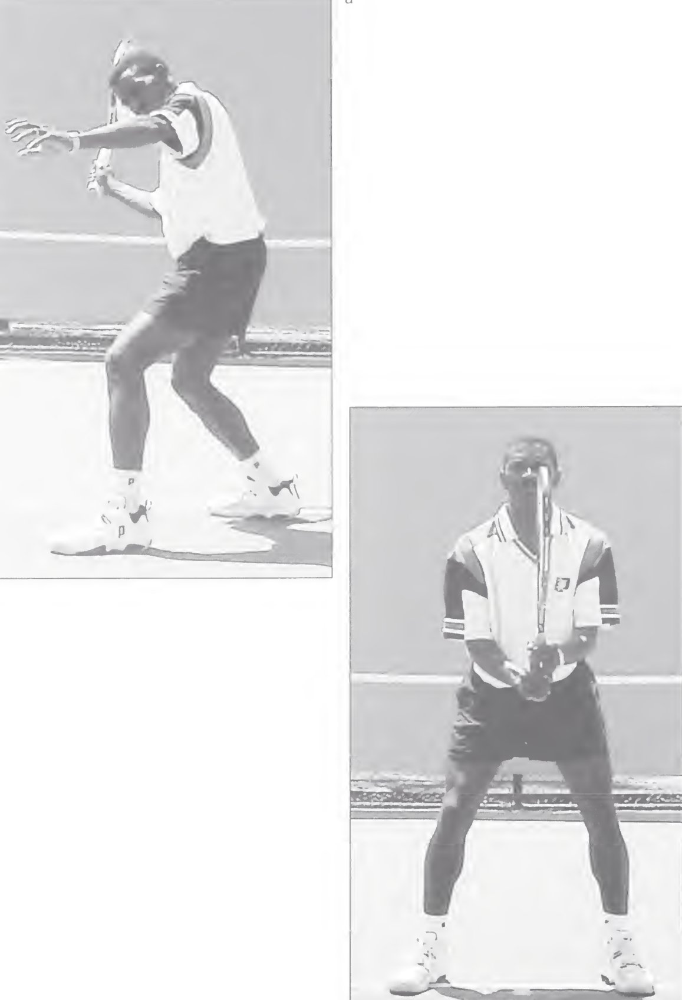
Bẻ khóa két sắt Những người quay trở lại có tay nghề cao có khả năng hack thông qua mã bảo mật, bẻ khóa két sắt, để có quyền truy cập vào các tài liệu chiến lược đã được phân loại của người giao bóng, cho phép họ đoán trước mọi khoảnh khắc của người giao bóng. Trong vài ván đầu tiên của trận đấu. Chương này của Pat Dougherty và Peter D. McCraw.
họ thiết lập thời gian và nhịp điệu của mình khi tập trung vào quy trình và kiểu mẫu của người giao bóng. Giống như một chiếc máy tính, chúng ghi lại dữ liệu của các điểm đã chơi trước đó, theo dõi các xu hướng hoặc xu hướng có thể dự đoán được. Người Trả giao bóng bằng trực giác cuối cùng sẽ tìm ra cú giao bóng yêu thích của người giao bóng ở cả hai sân và những quyết định mà họ đưa ra dưới áp lực. Đối thủ như vậy sẽ nhận thức được các vị trí mà người giao bóng gặp khó khăn và thách thức người giao bóng ở đó. Giống như mèo dụ chuột vào bẫy, người chủ động quay lại sẽ tạo thêm áp lực cho tình huống, sử dụng thế trận và hành động của mình để thao túng quá trình suy nghĩ của người Giao bóng / Cú giao bóng.
Bạn cũng có thể trở nên thành thạo trong việc thực hiện cú trả về của hậu vệ phải bằng cách lật ngược tình thế và hiểu rằng trận chiến thường thắng trước khi nó diễn ra. Ngay từ khi bước lên sân, bạn sẽ có cảm giác như đang đi săn, rình rập con mồi, tìm kiếm những dấu hiệu yếu đuối và những khoảnh khắc dễ bị tổn thương cho phép bạn tấn công. Cường độ của bạn phải tăng lên vào thời điểm bạn phản ứng, không để điều gì làm bạn phân tâm khỏi nhiệm vụ trả bóng trở lại cuộc chơi. Hãy thuyết phục bản thân rằng việc Trả giao bóng là một thử thách mà bạn yêu thích. Bạn mong đợi, bạn muốn, mọi cú giao bóng sẽ được thực hiện. Bạn cần có tư duy đó để chuẩn bị đầy đủ cho cú giao bóng.
Bạn Thực hiện Cuộc gọi Trừ khi bạn là người thường xuyên tham gia các giải đấu chuyên nghiệp, rất hiếm khi bạn có quyền trọng tài để gọi điện cho bạn. Bạn phải có khả năng xác định xem một cú giao bóng vào hay ra mà không mất tập trung vào việc thực hiện cú Trả giao bóng của mình. Bạn sẽ cải thiện kỹ năng này bằng kinh nghiệm. Khi bạn thấy một quả giao bóng bị hỏng, hãy nhanh chóng và quyết đoán, đảm bảo rằng người giao bóng biết được quyết định của bạn. Bạn có thể ra hiệu bằng cánh tay, giơ ngón trỏ hoặc thực hiện cuộc gọi bằng lời nói, nhưng bạn không muốn người Giao bóng / Cú giao bóng cảm thấy rằng bạn đang thiếu quyết đoán. Nếu bạn có vẻ không chắc chắn, đối thủ sẽ thách thức bạn và thường tự thuyết phục họ rằng bạn đang chơi không công bằng. Đôi khi khó có thể đưa ra phán đoán rõ ràng, điều này đôi khi có thể dẫn đến việc vô tình thực hiện một cuộc gọi tồi. Nếu bạn mong muốn quả bóng bay ra ngoài hoặc hy vọng nó đi ra ngoài, dưới áp lực, bạn có thể thuyết phục bản thân rằng nó đã đi ra ngoài, ngay cả khi nó chạm vạch!
Cố ý Hook Vì lý do này hay lý do khác, một số người chơi bị ám ảnh bởi chiến thắng đến mức họ gian lận trong các cuộc gọi trực tuyến. Bạn không muốn mang tiếng xấu là thiếu tính cách như một đối thủ cạnh tranh. Chưa ai từng gian lận trên con đường trở thành nhà vô địch thực sự ở bất kỳ môn thể thao nào. Những người chơi giỏi thường có thể biết bóng của họ đi vào hay ra ngoài bằng cảm giác của cú đánh khi tiếp xúc. Khi người Giao bóng / Cú giao bóng thực hiện liên lạc với Hậu vệ phải-Atcha Trả lại, anh ấy hoặc cô ấy có thể cảm nhận cũng như xem liệu bóng có ở trong hay không. Nếu bạn liên tục thực hiện các cuộc gọi sai đường, bạn có thể chắc chắn rằng đối thủ của bạn đã biết về điều đó. Khi bạn đã thiết lập được thói quen thực hiện các cuộc gọi không tốt, bạn có thể mong đợi đối thủ của mình cũng làm như vậy. Đó là một tình huống không thể thắng cho cả hai người chơi và một trận đấu tồi tệ kể từ thời điểm đó.
Cuối cùng, tốt hơn hết bạn nên chơi thẳng. Nếu bạn cảm thấy mình đang bị cuốn hút, hãy gọi trọng tài. Đừng cố gắng đánh bại kẻ gian lận trong trò chơi của họ. Chiến lược Giao bóng / Cú giao bóng Để cải thiện kỹ năng dự đoán của bạn với tư cách là người quay lại, bạn cần hiểu quá trình suy nghĩ của người Giao bóng / Cú giao bóng. Trong một vài ván giao bóng đầu tiên, bạn nên biết rõ mình đang phải đối mặt với điều gì. Bạn không thể cho phép mình nản lòng nếu không bẻ giao bóng sớm trong trận đấu. Bạn cần cho mình một cơ hội để thiết lập thời gian và cảm nhận của mình đối với các cú giao bóng khi bạn thu thập thông tin để giúp bạn bẻ giao bóng sau này trong hiệp đấu. Nếu bạn có thể giữ giao bóng thường xuyên, tất cả những gì bạn cần là một break giao bóng để thắng set!
Cấp độ I: Sống nhờ những cú giao bóng thứ hai Chiến lược giao bóng cấp độ đầu tiên có rất ít suy nghĩ đằng sau nó. Thực hiện cú giao bóng đầu tiên và xem liệu nó có đi vào lưới hay không rồi sử dụng cú giao bóng thứ hai "đẩy". Những người chơi sử dụng chiến lược này không có nhiều Sự tự tin vào cú giao bóng của mình và không biết cách sử dụng nó một cách chiến lược. Thông thường, phần lớn các vụ nổ giao bóng đầu tiên này là do lỗi và tỷ lệ phần trăm giao bóng đầu tiên rơi ra khỏi bảng xếp hạng. Nếu những người chơi này sống sót sau trận chiến, họ sẽ sử dụng cú giao bóng thứ hai của mình để thực hiện điều đó.
Người giao bóng có quy trình giao bóng bài bản rất dễ bị hỏng vì bạn có quá nhiều cú giao bóng thứ hai để làm việc. Nếu bạn tạo thêm một chút áp lực cho tình huống này, bạn có thể dễ dàng buộc họ mắc lỗi kép. Cấp độ II: Tấn công điểm yếu Tiến trình tiếp theo của tâm lý giao bóng nhận ra giá trị của việc tấn công điểm yếu. Thay vì chỉ đưa bóng vào, những người Giao bóng / Cú giao bóng như vậy sẽ thực hiện các cú giao bóng của họ.
Serx^rs thường cho rằng trái tay của bạn là bên yếu hơn, do đó, với khả năng dự đoán tốt, họ tập trung hầu hết các cú giao bóng của mình về phía trái tay của người trả giao. Trừ khi bạn chứng minh cho họ thấy điều ngược lại, họ sẽ tiếp tục chơi trái tay của bạn hầu hết thời gian. Cấp độ III: Xoay các vị trí Vẫn làm việc với các cú giao bóng đầu tiên khó và các cú đánh xoáy thứ hai, lex'el III phát triển từ việc tấn công điểm yếu có thể dự đoán được sang việc thực hiện thay Đổi bên (switch) có tính toán hơn. Thời gian trả bóng của bạn phải dễ xác định vì tốc độ giao bóng vẫn không thay đổi nhiều; chỉ có vị trí khác nhau. Những người chơi này sẽ bắt đầu thử thách phạm vi của bạn và đạt được mục tiêu khi quay về khi họ sát cánh cùng bạn.
Cấp IV: Xoay hoàn toàn tốc độ, độ xoáy và vị trí "Xin chào người bạn nhỏ của tôi. . . ." Bạn đang chống lại một vũ khí giao bóng! Nếu người giao bóng có thể duy trì tỷ lệ giao bóng đầu tiên cao trong trận đấu trong khi thay đổi tốc độ, độ xoáy và vị trí, thì bạn sẽ phải vượt qua một kho vũ khí giao bóng hoàn chỉnh và một người giao bóng biết cách sử dụng nó.
Khả năng của người giao bóng trong việc xử lý sự thay Đổi bên (switch) khiến người quay lại không chắc chắn nên chuẩn bị cho bên nào. Sự thay đổi tốc độ và độ xoáy của đồ chơi giao bóng đầu tiên theo thời gian của người Trả giao bóng. Khi người giao bóng có thể cảm nhận được rằng người trả bóng đang mong đợi một cú giao Cú đánh phẳng lớn, thì người đó có thể kết hợp một cách hiệu quả với cú giao bóng tốc độ thấp.
Người Giao bóng / Cú giao bóng có quả giao bóng thứ hai hiệu quả và đáng tin cậy có khả năng sẽ hung hãn hơn với quả giao bóng đầu tiên. Nhưng người giao bóng nên hiểu rằng việc thực hiện cú giao bóng thứ hai quá nhiều sẽ dẫn đến thảm họa. Trong lần giao bóng đầu tiên, áp lực đè lên người Trả giao bóng, người đang chuẩn bị với tư duy phòng thủ. Ở lần giao bóng thứ hai, áp lực chuyển sang người giao bóng. Giống như một vận động viên ném bóng chày với tỷ số là 3-2, người giao bóng không có chỗ cho sai sót. Người Trả giao bóng có thể bắt đầu đảm nhận vai trò tấn công hơn khi đối mặt với quả giao bóng thứ hai.
Cuộc thách đấu Khi vũ khí cú giao bóng Sonic Serve chạm trán với hậu vệ phải atcha, hãy sẵn sàng ầm ầm. Giống như hai võ sĩ nhìn chằm chằm vào nhau khi cân, trò chơi đe dọa bắt đầu từ rất lâu trước khi bóng được chơi. Với vẻ mặt không chút sợ hãi, hai tay súng đứng vững, không lùi bước trước mối đe dọa của đối phương.
Người Giao bóng / Cú giao bóng bắt đầu một quy trình nghi thức mà họ thực hiện một cách có phương pháp trước mỗi lần giao bóng, nảy bóng nhiều lần để chuẩn bị cho trận chiến. Người giao bóng xem xét lần cuối để đảm bảo rằng người Trả giao bóng đã sẵn sàng và sau đó đưa ra quyết định cuối cùng về những việc cần làm với quả giao bóng. Trong khi đó, người trả giao bóng (receiver) nghiên cứu mọi động thái của người Giao bóng / Cú giao bóng và chuẩn bị những nghi thức tương tự.
Trong một chuyển động lắc lư từ bên này sang bên kia và bước nhảy nảy lên, người trả bóng chuẩn bị phản ứng nhanh khi người giao bóng đánh bóng. Khi cú ném bay lên không trung, người quay lại bắt đầu di chuyển về phía trước. Để thêm một cú đấm nhỏ vào các cú trả khối, người quay trở lại muốn cơ thể của mình có một chút động lượng forwarci ở bước tách và phản ứng.
Trước khi quả giao bóng được thực hiện, người Trả giao bóng đã xác định trước hành động của mình. Hậu vệ phải-Atcha Trả bóng Khi quả giao bóng được thực hiện, tất cả những gì người trả giao phải làm là đọc và phản ứng theo kế hoạch. Bạn có thể trả lời một số câu hỏi trước khi đánh điểm: 1. Cân nhắc xem đó là quả giao bóng thứ nhất hay thứ hai, liệu người ta sẽ chặn, chip hay đánh bóng trở lại cuộc chơi?
2. Người giao bóng có khả năng tấn công lưới phía sau quả giao bóng không? 3. Tôi sẽ cố gắng thực hiện theo hướng nào - dọc biên, giữa hoặc Đánh chéo sân (cross-court)? 4. Tôi có ý định tấn công hay lùi lại sau khi quay về? 5. Liệu tôi có cố gắng gây áp lực và tác động đến việc lựa chọn giao bóng không? 6. Tôi có thể lường trước điều gì sẽ xảy ra ở cú đánh trả của mình?
Đi sâu vào các điểm với câu trả lời cho những câu hỏi này sẽ giúp bạn chuẩn bị tốt hơn để đưa ra quyết định đúng đắn trong chế độ phản ứng và có thể cho phép bạn đoán trước hành động trước khi nó xảy ra. Quan điểm của người Giao bóng / Cú giao bóng Khi người Giao bóng / Cú giao bóng nhìn lần cuối vào người trả lại trước khi tung cú ném lên không trung, người đó đang tìm kiếm xem liệu người trả lại đã sẵn sàng chơi hay chưa. Người giao bóng cũng đang xác định liệu vị trí sân đấu của người Trả giao bóng có ảnh hưởng đến kiểu giao bóng và vị trí mà người đó nên sử dụng hay không.
Trong vài trò chơi đầu tiên, người giao bóng đang thu thập thông tin về người quay lại và ghi lại dữ liệu. Sau khi người quay lại thiết lập vị trí bắt đầu trong cả hộp Điểm 40–40 (deuce) và hộp quảng cáo, người giao bóng sẽ điều chỉnh phối cảnh trực quan của họ cho phù hợp với các vị trí đó. Vị trí mà bạn thường đặt mình ở vị trí cạnh nhau, hướng lên trên và quay lại trong hộp quảng cáo và hộp quảng cáo là vị trí trung lập của bạn. Bạn trung lập vì bạn đang ở điểm giữa giữa hai vị trí cuối cùng trên cú giao bóng. Vị trí của bạn mang lại cho bạn phạm vi bao phủ phù hợp với hầu hết mọi khả năng giao bóng. Người giao bóng nhanh chóng trở nên quen thuộc và thoải mái với vị trí sân trung lập của bạn. Mỗi khi bạn giữ vị trí trung lập đó, người giao bóng sẽ cảm thấy bớt áp lực hơn một chút trong việc lựa chọn quả giao bóng và bạn sẽ đóng vai trò ngày càng nhỏ hơn trong lựa chọn của họ. Khi bạn sử dụng vị trí sân đấu của mình để thay đổi quan điểm của người giao bóng, bạn có thể trở thành một phần của quyết định, khiến người giao bóng nghĩ rằng có cơ hội để khai thác. Khi bạn trở nên chủ động hơn bằng cách thay Đổi bên (switch) sân đấu của mình một cách không thường xuyên, bạn có thể ảnh hưởng đến cú giao bóng, thu hẹp các lựa chọn có thể có và cho phép bạn dự đoán cú giao bóng với độ chính xác cao hơn.
Quyền lực ảnh hưởng Như trong trò chơi poker, khi đối thủ đã để lộ ván bài của họ và cho bạn xem mọi vũ khí có sẵn, bạn có thể thấy rằng họ gặp khó khăn với các vị trí giao bóng cụ thể. Bạn có thể dự đoán quả giao bóng trong tích tắc trước khi nó được thực hiện bằng cách chọn một số chỉ báo nhất định - cách người giao bóng sẵn sàng giao bóng, cách người giao bóng điều chỉnh cú tung hoặc cách người giao bóng đặt các vị trí khác nhau trên các cú giao bóng cụ thể.
Khi đối thủ của bạn tỏ ra hạn chế sử dụng ô giao bóng, bỏ qua một số mục tiêu nhất định hoặc cung cấp cho bạn các chỉ số bạn cần để đoán trước quả giao bóng, bạn sẽ có nhiều quyền kiểm soát hơn. Bạn có thể cần phải điều chỉnh vị trí tòa trung lập của mình để tạo cơ hội tốt hơn cho việc trả bóng của mình. Giả sử người giao bóng rõ ràng đang gặp khó khăn trong các quả giao bóng rộng, đánh hầu hết chúng vào lưới.
Hầu hết thời gian người giao bóng đang Giao bóng / Cú giao bóng chữ T và vào lưới, một mô hình đã hoạt động tốt đối với anh ấy hoặc cô ấy. Vị trí sân trung lập đã được điều chỉnh của bạn thiên về vị trí T sẽ mang lại cho bạn cơ hội tốt hơn để trả những cú giao bóng mạnh nhất đồng thời thách thức đối thủ của bạn giành được các vị trí rộng hơn mà họ đang gặp khó khăn.
Mồi và Chuyển đổi Để thay đổi góc nhìn của người giao bóng, lần này bạn sử dụng một vị trí bắt đầu khác. Khi xem xét lần cuối trước khi tung, người Giao bóng / Cú giao bóng nhận thấy rằng vị trí của bạn dường như đang nghiêng về một bên. Người giao bóng cảm thấy rằng bạn đang tìm kiếm vị trí ở vị trí thấp hơn, đưa ra một thách thức để giành được quân át chủ bài. Nhưng khi người giao bóng nhìn ra xa bạn để bắt đầu chuyển động, bạn sẽ chuyển vị trí của mình trở lại vị trí trung lập thực sự với ý tưởng hay về nơi quả giao bóng có thể sẽ diễn ra. Ngay cả khi người giao bóng không cắn câu và giao bóng chữ T, bạn cũng đang phản ứng từ vị trí trung lập nên bạn cũng không cho phép người giao bóng mở chữ T.
Khi bạn chuyển vị trí bắt đầu của mình sang phải hoặc sang trái vị trí trung lập, người giao bóng có xu hướng chọn phần sân mà bạn để ngỏ, nghĩa là cho đến khi họ trở nên khôn ngoan trước những mánh khóe của bạn. Khi bạn ở vị trí xa hơn so với vị trí trung lập, sâu trong sân, bạn thách thức người giao bóng tìm thêm góc và xoáy để đánh bại bạn, làm giảm tác dụng của cú giao bóng đầu tiên mạnh mẽ. Nếu bạn đặt một hoặc hai bước gần đường giao bóng hơn, bên trong vị trí trung lập, bạn đang thách thức người Giao bóng / Cú giao Bóng tấn công bạn. Để buộc người giao bóng mắc lỗi kép hoặc sử dụng quả giao bóng thứ hai, bạn có thể đóng chặt hơn để khiến hộp giao bóng có vẻ nhỏ hơn nhiều đối với người giao bóng.
Trung lập Sau đó cam kết chống lại các người giao bóng lớn nhất mà bạn thường phải dựa vào phỏng đoán có căn cứ để vượt qua. Họ đã nhìn thấy tất cả các mánh khóe và không còn mắc phải chúng nữa. Cơ hội tốt nhất của bạn là tìm ra mô hình tấn công. Khi bạn hiểu rõ điều gì sắp xảy ra, đặc biệt là trong tình huống giao bóng thứ hai, bạn có thể chơi ở thế trung lập cho đến khi người giao bóng nhìn lên bằng cú tung. Sau đó, bạn cam kết chạy vòng quanh những gì sẽ là cú Cú trái tay (backhand) (backhand) và thực hiện cú trả bóng thuận tay. Tuy nhiên, vì bạn đang cam kết nên bạn có nguy cơ bị thiêu rụi nếu không đoán đúng.
Hậu vệ phải Atcha trả lại hiệu quả. Tiết kiệm chiến thuật vị trí sân đấu của bạn và thực hiện các điều chỉnh của bạn tinh tế hơn. Nếu bạn điều chỉnh quá thường xuyên sẽ không ảnh hưởng tới người giao bóng. Bạn không muốn người giao bóng biết rằng bạn đang dụ dỗ lựa chọn giao bóng để tăng khả năng kiểm soát tình huống của bạn. Hãy để dành những chiến thuật này cho những điểm quan trọng nhất và đừng mong đợi chúng luôn có tác dụng, đặc biệt là trước những người giao bóng hiểu rõ hơn.
Cách đọc kỹ thuật giao bóng Thế đứng của người giao bóng để bắt đầu chuyển động, Tung bóng, điều chỉnh cú xoay hoặc thậm chí thay Đổi bên (switch) trên đường cuối sân là những dấu hiệu có thể có về những hạn chế hoặc ý định của người giao bóng. Nếu tư thế bắt đầu khiến người giao bóng quay sang một bên với bàn chân trước song song với đường cuối sân (baseline), bạn nên quan sát xem liệu bàn chân có rời khỏi mặt đất khi giao bóng hay không. Nếu thân của người giao bóng xoay hoàn toàn, người giao bóng sẽ đối mặt với lưới khi Kết thúc cú đánh. Nếu người giao bóng không khởi động lên khỏi mặt đất và xoay hoàn toàn, người đó sẽ gặp khó khăn với một số vị trí nhất định. Một người chơi thuận tay phải giao bóng vào ô Điểm 40–40 (deuce) sẽ luôn gặp khó khăn để đạt được các vị trí rộng và bên lề trừ khi người đó rời khỏi mặt đất và xoay người tốt trong chuyển động. Cú giao bóng tốt nhất và được yêu thích nhất của người giao bóng này có thể sẽ ở điểm T trong hộp giao bóng. Trong hộp quảng cáo, người giao bóng tương tự sẽ ưu tiên cú giao bóng rộng cho cú Cú trái tay (backhand) (backhand) của người thuận tay phải và sẽ gặp khó khăn hơn ở cú giao bóng T. Người giao bóng thuận tay trái gặp vấn đề về thế đứng này sẽ xảy ra điều ngược lại - mạnh rộng và yếu xuống chữ T trong hộp Điểm 40–40 (deuce), mạnh xuống chữ T và rộng yếu trong hộp quảng cáo.
Khi người giao bóng hướng mặt vào lưới với bàn chân trước hướng nhiều hơn về phía cột lưới, bạn không thể dựa vào thế đứng để giả định bất kỳ kiểu vị trí mạnh hay yếu nào. Bạn có thể học được gì từ việc xem quá trình tung người giao bóng? Trừ khi bạn đối đầu với một người giao bóng có tay nghề cao, người biết cách điều chỉnh cú ném cho các cú giao bóng cắt, đá và phẳng dưới sự ngụy trang hoàn toàn, bạn thường có thể dự đoán cú giao bóng bằng cách ném vị trí.
Nếu bạn biết hình thức Tung bóng cho cú giao Cú đánh phẳng, cứng lớn nhất của người giao bóng, bạn có thể sử dụng điều đó làm hướng dẫn. Nếu người giao bóng thuận tay phải ném bóng trên không (overhead), theo quan điểm của người trả bóng thì cú ném đó sẽ ở đúng vị trí người giao bóng ném trên quả giao Cú đánh phẳng. Bạn có thể mong đợi được xem cú đá, có thể là ở phía bên trái tay của bạn nếu bạn thuận tay phải. Nếu bạn thấy cú ném sang bên trái của cú ném cứng, phẳng, bạn có thể mong đợi một cú giao bóng cắt lát, có thể là vào cơ thể bạn hoặc về phía thuận tay trong phần lớn thời gian.
Đừng mong đợi những người Giao bóng / Cú giao bóng tốt hơn sẽ đưa ra những điều chỉnh về lượt ném của họ theo cách này, nhưng nếu có cơ hội, hãy tận dụng nó. Đôi khi bạn sẽ thấy vị trí của người chơi ở phía sau đường cuối sân rộng hơn bình thường. Agassi đôi khi sẽ đứng ở lối đi đôi khi giao bóng tới sân quảng cáo để mang lại cho anh ta một góc nhìn tốt hơn, kéo người quay trở lại sân. Bất cứ khi nào bạn nhìn thấy người giao bóng ở vị trí rộng hơn, hãy sẵn sàng cho quả giao bóng rộng vì rất có thể bạn sẽ nhìn thấy một người giao bóng.
Hậu vệ phải Atcha so với các người giao bóng Giao bóng và Vô-lê lớn thường sẽ thiết lập mô hình thường xuyên tấn công lưới sau mỗi lần giao bóng đầu tiên và thường là sau quả giao bóng thứ hai. Phá vỡ cuộc tấn công này có thể là một thách thức trừ khi bạn biết cách điều chỉnh lợi nhuận của mình. Việc lập kế hoạch trước điểm trước khi trả bóng là đặc biệt quan trọng đối với người giao bóng và người bắt bóng vì cú trả bóng của bạn phải hoạt động như những cú bắt vô-lê. Để khắc phục đòn tấn công giao bóng và vô-lê, bạn phải thực hiện một số điều chỉnh.
1. Lựa chọn cú đánh. Thay vì sử dụng các cú trả giao sân chéo sâu để bắt đầu một pha đánh bóng, bạn nên nhắm mục tiêu chính là chân của người giao bóng đến, dọc theo đường biên và góc Đánh chéo sân (cross-court). 2. Lựa chọn nét vẽ. Thay vì làm nổ tung các đường chuyền Xoáy lên có khả năng dọn dẹp cao trên lưới, hãy thực hiện việc cắt, cắt và chặn các cú trả bóng để giúp người giao bóng ít phải làm việc hơn trong cú vô-lê đầu tiên. Nếu bạn có thể buộc đối thủ phải bắt vô-lê bằng chân, quyền kiểm soát điểm thường thuộc về bạn.
3. Thay đổi quan điểm của sân đấu. Người giao bóng và người bắt vô-lê dựa vào thời gian cụ thể của cú giao bóng, di chuyển theo một vài bước, thực hiện bước tách đôi khi bạn tiếp xúc với bóng, sau đó di chuyển vào để thực hiện cú vô-lê. Với tư cách là người quay lại, nếu bạn thay đổi khoảng cách giữa bạn và người giao bóng bằng cách điều chỉnh lên xuống, bạn sẽ khiến người giao bóng khó thiết lập thời gian nhất quán cho cuộc tấn công.
Thay vì duy trì cùng một vị trí sân trung lập cho mỗi lần giao bóng, hãy di chuyển một hoặc hai bước để có một số điểm và lùi lại một hoặc hai bước vào những thời điểm khác. Nếu bạn không cho phép người giao bóng cảm thấy thoải mái với chiều sâu của vị trí sân của bạn, anh ta hoặc cô ta sẽ gặp nhiều khó khăn hơn khi bắt đầu chơi một cách mạnh mẽ. 4. Hãy nghĩ tới hai cú đánh để vượt qua, không phải một cú. Nếu bạn cảm thấy áp lực to lớn khi phải đánh trúng những cú chuyền thắng trong mỗi lượt đánh, bạn có thể sẽ mắc nhiều lỗi. Hãy tập trung vào điểm khi trả bóng và thực hiện đường chuyền ở lượt đánh thứ hai hoặc thứ ba mà bạn đánh. Điểm kéo dài càng lâu thì tỷ lệ cược càng nghiêng về người quay trở lại đường cuối sân (baseline). Nếu bạn vô hiệu hóa cú giao bóng đầu tiên và giữ cho cú trả bóng ở mức thấp hoặc khó tiếp cận, bạn có thể kiểm soát điểm và sau đó áp sát các cú đánh sau.
Hậu vệ phải Atcha so với Baseliner Khi bạn không chịu áp lực từ cú giao bóng và cú vô-lê, bạn muốn duy trì mục tiêu chính là đưa bóng vào cuộc với tỷ lệ cao trong thời gian. Bạn phải có kỷ luật trong kế hoạch trò chơi của mình để vượt qua Cú trả bóng phải-Back-Atcha muốn làm quá nhiều với những cú trả bóng sẽ dẫn đến những sai sót không đáng có. Trừ khi một đấu thủ vào lưới sau quả giao bóng hoặc Trả giao bóng, điểm đó sẽ chuyển thành một pha trả bóng. Nếu cả hai đấu thủ đều thuận tay phải, thì ở bên thuận lợi, nếu người giao bóng kéo bạn ra khỏi sân với một cú giao bóng rộng, thì một cú giao bóng Đánh chéo sân (cross-court) trả lại sẽ cho phép bạn phục hồi cho cú đánh tiếp theo và có thể sẽ tạo ra kiểu đánh bóng chéo bàn từ thuận tay sang thuận tay. Việc trả lại quả giao bóng rộng về phần sân giữa sâu sẽ giúp người giao bóng có thể đánh vào một trong hai góc. Một cú trả bóng ở cuối sân có thể sẽ dẫn đến một cú đánh Đánh chéo sân (cross-court) có thể dễ dàng khiến bạn bị lệch khỏi vị trí, phải thực hiện một cú trả bóng có tỷ lệ trả bóng thấp. Việc phân phát rộng rãi trong hộp quảng cáo cũng hoạt động theo cách tương tự. Nếu bạn trả lại đường chéo bàn, bạn có thể sẽ thiết lập một cú Cú trái tay (backhand) (backhand) chéo bàn.
Giao bóng ở vị trí chữ T trong cả hai hộp cung cấp tùy chọn đánh vào một trong hai góc tùy thuộc vào kiểu đánh bóng mà bạn muốn thiết lập. Big D Mặc dù cú giao bóng có thể là mối đe dọa tấn công lớn nhất của người chơi, nhưng cú Trả giao bóng phải là mối đe dọa phòng thủ lớn nhất của người chơi. Người giao bóng đang cung cấp năng lượng cho bạn và đánh bóng theo hướng chung của bạn. Tất cả những gì bạn phải làm là đưa bóng trở lại cuộc chơi. Tất nhiên, đối với các người giao bóng lớn hơn thì đây là một nhiệm vụ nói dễ hơn làm. Mục tiêu của bạn là vô hiệu hóa vũ khí của đối thủ và đưa người giao bóng vào điểm. Bạn có thể thắc mắc tại sao những người chơi có cú giao bóng mạnh nhất không phải lúc nào cũng thắng tất cả các giải đấu.
Chà, cần nhiều hơn một cú giao bóng lớn để giành chiến thắng. Thông thường, các người giao bóng lớn phải vật lộn để tìm ra những khoảng nghỉ giao bóng cần thiết vì họ thiếu các phần khác của trò chơi. Vì vậy, nếu bạn có thể vượt qua quả giao bóng và đưa bóng trở lại cuộc chơi, bạn có thể thấy những người giao bóng lớn đó dễ dàng bị đánh bại hơn nhiều trong loạt đánh. Suy nghĩ phạm tội và luôn hướng tới người chiến thắng trong lần giao bóng đầu tiên sẽ dẫn đến sai sót khi bắt đầu điểm. Đó không phải là tư duy chiến lược đúng đắn!
Tư duy phòng thủ tự nhiên sẽ đưa bạn vào chế độ phản xạ, đơn giản hóa các cú đánh mặt đất của bạn để nhanh chóng và cho phép căn thời gian tốt hơn khi trả bóng. Bạn bắt đầu thấy giá trị của việc chặn, sứt mẻ và cắt lát cũng như lợi nhuận lái xe nhỏ gọn. Bạn sẽ cảm thấy mình giống như một tấm ván sau, dựng lên một bức tường phòng thủ giống như bức tường mà một vận động viên vô-lê tạo ra trên lưới. Bạn đang bảo vệ lãnh thổ của mình trước một cuộc tấn công từ trên không, sử dụng một tấm khiên để làm chệch hướng các quả giao bóng đang lao tới trở lại. Bằng mọi cách có thể, bạn tìm cách vô hiệu hóa sức mạnh của người giao bóng, bắt đầu điểm và giành quyền kiểm soát tấn công trước khi điểm Kết thúc cú đánh.
Nếu bạn có thể dụ người giao bóng đến những vị trí quyết liệt hơn và những cú giao bóng mạnh hơn để vượt qua thế phòng thủ ngoan cường của bạn, bạn có thể sẽ gặp nhiều lỗi hơn trong lần giao bóng đầu tiên. Cơ hội thứ hai là cơ hội tốt nhất để bạn tận dụng Điểm lợi thế (advantage). Bây giờ bạn có tùy chọn để trở nên quyết liệt hơn và suy nghĩ tấn công hơn, tùy thuộc vào sức mạnh của cú giao bóng thứ hai. Bạn có thể chủ động hơn trong việc điều chỉnh thế trận của mình, gây áp lực và dụ người giao bóng. Bạn có thể nghĩ đến việc lái bóng thay vì chỉ chặn nó lại. Đôi khi, bạn có thể tấn công lưới từ lượt trả bóng, buộc người giao bóng phải cố gắng vượt qua bạn ở lượt đánh thứ hai. Điều bạn không muốn làm là lãng phí cơ hội bằng việc luôn cố gắng quá nhiều. Sự trở lại phải có được điểm bắt đầu trong tâm trí của bạn. Khi bạn cố gắng giành điểm bằng lượt trả bóng, tỷ lệ lỗi của bạn đối với người chiến thắng sẽ nghiêng về đối thủ.
Thiết lập khu vực trung lập của bạn Khi đối mặt với một người giao bóng mà bạn chưa từng chơi trước đây, bạn sẽ phải tìm hiểu về điểm mạnh và điểm yếu của cú giao bóng trong vài ván đầu tiên. Bạn sẽ phải phòng thủ trước tất cả các vị trí giao bóng tiềm năng cho đến khi bạn học được cách khác. Tìm một vị trí giúp bạn ở điểm giữa của những cú giao bóng tốt nhất có thể của người giao bóng. Bạn phải đi một bước và hoàn toàn có thể thực hiện được vị trí ở vị trí chữ T và cùng một khoảng cách để thực hiện cú giao bóng rộng.
Hãy đảm bảo rằng bạn tính đến hiệu ứng xoáy của người giao bóng thuận tay phải so với người giao bóng thuận tay trái. Tiềm năng sức mạnh của người giao bóng thường sẽ quyết định mức độ bạn nên ở gần hay xa đường giao bóng. Một khi bạn thiết lập được điểm trung tâm đó, vị trí trung lập của mình, bạn đã sẵn sàng để bắt đầu. Nếu người giao bóng bỏ qua một số khu vực nhất định của ô giao bóng, người đó có thể không tiếp cận được tất cả các mục tiêu trong cả hai ô. Nếu người giao bóng tập trung hầu hết các vị trí giao bóng sang bên này hoặc bên kia, bạn có thể thay Đổi bên (switch) sân của mình cho phù hợp. Không có ý nghĩa gì khi định vị những phần của hộp giao bóng không bao giờ được sử dụng. Bây giờ bạn có thể thu hẹp các khả năng và tạo cho mình cơ hội tốt hơn để bao quát các phần sân mà đối thủ của bạn đang sử dụng. Đồng thời, bạn thách thức đối thủ đi đến những vị trí khó.
Đầu trận đấu, tốt hơn hết bạn nên dành cho mình thêm một chút thời gian để phản ứng với những cú giao bóng đầu tiên bằng cách chiếm vị trí sâu hơn một chút trong sân. Khi bạn bắt đầu tập trung vào việc trả bóng và thiết lập Sự Sự tự tin của mình, bạn có thể có một vị trí quyết liệt hơn khi tiến gần hơn đến đường giao bóng một vài bước. Vấn đề với việc đóng quá chặt ở vị trí trả bóng là bạn sẽ giới hạn thời gian có thể phản ứng với cú giao bóng mạnh. Vị trí rất sâu trong sân sẽ tạo cơ hội cho các cú xoay góc, kéo bạn ra xa sân hơn nữa khi Trả giao bóng và cho phép người giao bóng và người bắt bóng di chuyển đến gần hơn.
Bạn cần có đôi chân nhanh nhẹn để chơi sâu phía sau đường cuối sân ở lượt về vì bạn có nhiều đất hơn để che chắn. Vì vậy, hãy tìm một nền tảng trung gian phù hợp với bạn và sẵn sàng thay đổi quan điểm sân đấu của bạn như một phần trong cuộc tấn công của bạn. Cùng một thói quen cũ Các nghi thức và thói quen dẫn đến việc thực hiện việc trả lại có một vai trò quan trọng trong sự sẵn sàng phản ứng và khả năng thực hiện của bạn. Mặc dù các quy trình Trả về hậu vệ phải sẽ khác nhau giữa các người chơi dựa trên phong cách và sở thích, nhưng bạn phải bao gồm Một số yếu tố chính nếu bạn muốn các lượt trả về là hậu vệ phải.
Chúng tôi đã xác định rằng vị trí trung lập của bạn là vị trí bạn thường chiếm trước khi cú ném của người giao bóng được tung ra. Vị trí phân chia của bạn để phản ứng với cú giao bóng có thể giống hoặc không giống với vị trí trung lập của bạn. Vị trí phân chia bao gồm bước phân chia được tính thời gian cho đến thời điểm tiếp xúc trên quả giao bóng. Bước tách ra tạo ra một cơ sở hỗ trợ rộng rãi cho lập trường của bạn. Từ vị trí này, với hai chân cách nhau gần bằng hai vai, bạn cúi xuống và sẵn sàng phản ứng nhanh với phía thuận tay hoặc phía trái tay. Chìa khóa để có phạm vi tiếp cận và phạm vi phủ sóng tốt hơn bắt đầu bằng bước phân chia rộng hơn, được tính thời gian chính xác cho người liên hệ với người giao bóng.
Một số người chơi có thói quen xuất phát ở vị trí trung lập ngay trong đường cuối sân. Khi người Giao bóng / Cú giao bóng tung cú ném lên không trung, người quay lại sẽ lùi lại một vài bước trước khi thực hiện bước tách. Thói quen này phù hợp miễn là bạn có thể vào tư thế nhanh chóng và dồn trọng lượng cơ thể về phía trước khi tách người. Nếu người Giao bóng / Cú giao bóng bắt gặp bạn đang nghiêng người về phía sau, bạn sẽ gặp khó khăn trong việc kiểm soát cú trả bóng.
Tốt hơn hết, hầu hết người chơi nên ở vị trí trung lập, lùi lại vài bước so với nơi họ muốn tách bước. Khi cú ném lên không trung, họ tiến về phía trước để phân chia, tạo thêm cú đấm cho phe phòng thủ. Bạn sẽ thấy những người chơi khác bắt đầu ở vị trí trung lập và không bao giờ tiến lên hoặc lùi lại. Thói quen của bạn có thể thay đổi từ tình huống giao bóng đầu tiên sang tình huống giao bóng thứ hai và khi bạn thực hiện các chiến thuật ở vị trí trọng tài. Cho dù bạn chọn thói quen nào, hãy đảm bảo bạn thực hiện một bước phân chia rộng rãi và đúng thời gian.
Sản xuất cú đánh phòng thủ Hầu hết các cú đánh trên mặt đất đều được thực hiện tấn công bằng những cú đánh lớn hơn để tạo ra sức mạnh. Khi Trả giao bóng, bạn phải điều chỉnh các cú đánh tiếp đất thuận tay và trái tay của mình để có tính phòng thủ hơn. Tốc độ giao bóng thường cung cấp nhiều lực nên bạn sẽ không cần những cú xoay người tấn công lớn. Bạn cần phải làm việc với các phiên bản rút gọn, ngắn gọn của các cú chạm đất, sử dụng lực hiện có trên quả bóng để tạo ra các cú đánh của bạn. Bạn nên sử dụng tương đối không vung vợt ra sau và tập trung vào điểm tiếp xúc cũng như cú đánh tiếp theo. Khi sử dụng cú trả bóng, bạn không cần phải thực hiện nhiều động tác Vung vợt ra sau (lấy đà) hoặc follow-through.
Jack-in-the-Box Một vấn đề phổ biến đối với nhiều người chơi khi trở lại là cái mà chúng tôi gọi là jack-inthe-box. Khi người Giao bóng / Cú giao bóng chuẩn bị Giao bóng / Cú giao bóng, cường độ của khoảnh khắc đó tăng lên và sự phấn khích cũng như năng lượng của người quay lại tăng lên đến đỉnh điểm. Tại thời điểm người giao bóng đánh bóng, người trả bóng bật lên khỏi mặt đất giống như một chiếc hộp đựng bóng.
Tại thời điểm người Giao bóng / Cú giao bóng tiếp xúc, chân của bạn phải ở trên mặt đất theo tư thế chia rộng, sẵn sàng di chuyển. Người quay trở lại jack-in-the-box cách mặt đất một bước chân vào thời điểm tiếp xúc. Khi chân Jack chạm đất thì đã quá muộn để phản ứng. Nếu bật người lên là một phần thói quen của bạn, hãy thực hiện đủ sớm để chân bạn ở trên mặt đất và bạn bước xuống trong bước tách đôi khi chuyển động tiếp xúc trên quả giao bóng.
Thế còn thế đứng khi đối mặt với những vũ khí giao bóng mạnh mẽ, bạn hầu như không có thời gian để đưa vợt của mình vào bóng chứ chưa nói đến việc thiết lập thế đứng hoàn hảo. Bạn phải học cách thực hiện từ thế đứng mở (open stance) ở cả hai bên thuận tay và trái tay. Khi cú giao bóng ở vị trí vừa tầm với của bạn, tất cả những gì bạn phải làm là xoay hông và vai, không bao giờ Bước chân (footwork) ra khỏi bước tách. Nếu bóng còn cách một bước, bạn vẫn sẽ ở Tư thế sẵn sàng để thực hiện.
Nếu bạn cố gắng nhanh chóng điều chỉnh bàn chân của mình sang tư thế trung lập thoải mái hơn, bạn thường sẽ quá muộn để thực hiện! Tránh bị nhầm chân. Giảm thiểu các động tác bằng chân liên quan và phát triển kỹ năng làm việc của bạn với tư thế cởi mở. Bài kiểm tra cuối cùng đối với người quay trở lại là phải di chuyển và vươn tới để thực hiện lượt trả về. Hầu hết người chơi đều thành công hơn nhiều khi trả lại những cú giao bóng trúng họ so với những cú giao bóng khiến họ phải di chuyển. Nếu tư thế đánh của bạn thay đổi từ mở sang đóng, các lựa chọn khi trả bóng của bạn sẽ trở nên hạn chế và dễ đoán hơn nhiều. Trừ khi bạn thực hiện cú trả trái tay bằng một tay, các tư thế đánh đóng sẽ gây ra vấn đề. Các lập trường cởi mở và trung lập là những lập trường được sử dụng trong mọi trường hợp để giữ cho các tùy chọn hoàn trả của bạn luôn mở.
Thử nghiệm thực tế Trả bóng trong tầm với là một chuyện, nhưng có thể duỗi người, với tới và lao tới để trả bóng mà vẫn gây sát thương là dấu hiệu của một người trả bóng điêu luyện. Một số pha trả bóng ngoạn mục nhất của những tay vợt như Jimmy Connors và Andre Agassi xảy ra khi họ phải lao tới và tiếp cận. Hầu hết người chơi đều suy sụp đáng kể khi bạn kiểm tra phạm vi tiếp cận và phạm vi phủ sóng của họ khi quay lại. Họ cảm thấy thiếu kiểm soát và mất hoàn toàn quyền lực trong tình huống đó. Nguyên nhân của hầu hết các vấn đề của họ đều liên quan đến kỹ thuật đánh. Những người trả bóng tốt nhất không thực hiện động tác vung vợt ra sau và sau đó thực hiện cú đánh ra để tiếp xúc. Kỹ thuật được Connors, Agassi và tất cả những người trở lại xuất sắc khác sử dụng khác với cách tiếp cận mà người chơi bình thường sử dụng.
Trả bóng toàn tầm Như thể đang cố gắng bắt bóng bằng găng tay bóng chày, những người trả bóng xuất sắc trước tiên sẽ phản ứng bằng cách đặt mông vợt thẳng hàng với quả bóng đang đến. Khi Hậu vệ phải Atcha trả về, họ đưa tay ra để lấy tay đánh phía sau và bên dưới bóng, chân của họ sẽ tự động điều chỉnh để hỗ trợ cú đánh. Xuất phát từ thế đứng mở (open stance), chúng lao theo đường chéo về phía điểm tiếp xúc và tạo ra lực kéo mạnh khắp cơ thể. Họ vươn tay ra và sau đó kéo cú đánh ngược lại trên cơ thể, tạo ra hiệu quả mạnh mẽ khi tiếp xúc. Hành động này rất khác so với hành động của người đánh trả bình thường, người đưa tay ra sau trong cú Vung vợt ra sau (lấy đà) rồi vuốt ra để chạm bóng. Nếu bạn sử dụng kỹ thuật tiên tiến để đạt được lợi nhuận tối đa, bạn sẽ tăng cường phạm vi bao phủ của mình và làm đối thủ thất vọng bằng bức tường phòng thủ titan của mình.
Điều chỉnh tinh thần Đối với hầu hết người chơi, việc điều chỉnh tinh thần từ suy nghĩ tấn công khi trả bóng sang suy nghĩ phòng thủ sẽ thúc đẩy thành công khi lượt về. Mở rộng các giác quan của bạn và nhận thức rõ hơn về các mô hình và xu hướng trong suốt quá trình chơi điểm sẽ giúp bạn dự đoán hành động trước khi nó xảy ra. Tập thói quen lập kế hoạch trước khi bắt đầu điểm sẽ giúp bạn đưa ra quyết định tốt hơn ở chế độ phản xạ.
Cuối cùng, học cách yêu thích thử thách trả lại những quả giao bóng lớn sẽ giúp bạn có tư duy tạo ra kết quả tích cực. Trước khi bạn biết điều đó, bạn sẽ gửi những khoản trả lại đó ngay lập tức!
Cú Đánh Mang Thương Hiệu Bollettieri — "Drive Volley" & Lối Chơi Trên Lưới
Chapters 7 & 8: Tenacious Net Play & Specialty Shots (The Drive Volley)
Tenacious Net Play Trò chơi của chương này cung cấp cái nhìn sâu sắc về tâm lý của người chơi tấn công và nghệ thuật phát triển một trò chơi trong tương lai. Chúng ta sẽ xem xét các công cụ giao dịch và cách chúng phối hợp với nhau trong quá trình xây dựng quan điểm hướng tới kết quả mong muốn của bạn. Bạn sẽ thấy nhiều người chơi chiếm ưu thế hơn bằng cách xây dựng kế hoạch trò chơi xung quanh đối tượng phù hợp, các cuộc tấn công sẽ giảm áp lực khi thực hiện các cú đánh riêng lẻ.
Bạn sử dụng sức mạnh của các tổ hợp cú đánh để thực hiện công việc. Chất lượng kế hoạch trò chơi của bạn quyết định xem bạn đang đánh bạc với sòng bạc hay bạn là sòng bạc! Với số liệu thống kê về phía bạn và sự hiểu biết về cách sắp xếp điểm cuối, bạn sẽ đánh bại nhà cái ngay cả khi đối đầu với những người chơi có lối chơi, vào lưới thường xuyên nhất có thể.
kỹ năng cao hơn. Tất cả bắt đầu từ ý chí kiên trì trên lưới của bạn. Để hiểu mục đích đằng sau các cú đánh và lựa chọn cú đánh của bạn, chúng tôi bắt đầu tập trung vào các mục tiêu Kết thúc cú đánh điểm của bạn. Nhắm mắt lại và chơi điểm hoàn hảo trong tâm trí của bạn. . . . Điểm đó Kết thúc cú đánh như thế nào? Bạn có đang Giao bóng / Cú giao bóng không? Phần cuối của trận đấu có phải là điều gì đó hào hùng về phía bạn có thể xuất hiện trên các điểm nổi bật của Trung tâm Thể thao ESPN không? Hành động mà bạn tạo ra trong đầu có thể đại diện cho những gì chúng tôi gọi là 'chương này' của Pat Dougherty và Peter D. McCraw.
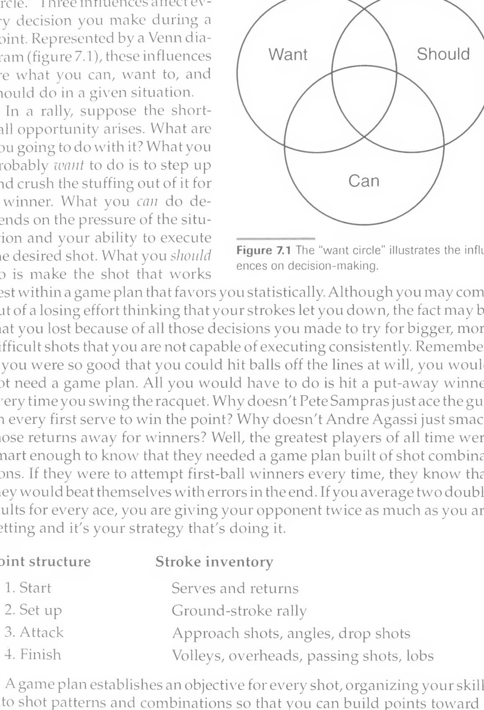
vòng tròn." Ba ảnh hưởng ảnh hưởng đến mọi quyết định bạn đưa ra trong một thời điểm. Được biểu thị bằng sơ đồ Venn (hình 7.1), những ảnh hưởng này là những gì bạn có thể, muốn và nên làm trong một tình huống nhất định. Trong một cuộc giao tranh, giả sử cơ hội bóng ngắn xuất hiện. Bạn sẽ làm gì với nó? Điều bạn có thể muốn làm là bước lên và nghiền nát mọi thứ để giành chiến thắng. Những gì bạn có thể làm phụ thuộc vào áp lực của tình huống và khả năng thực hiện cú đánh mong muốn của bạn. Điều gì bạn nên làm là thực hiện cú đánh hiệu quả. Hình 7.1 "Vòng tròn mong muốn" minh họa những ảnh hưởng đến việc ra quyết định.
tốt nhất trong một kế hoạch trò chơi có lợi cho bạn về mặt thống kê. Mặc dù bạn có thể thoát khỏi nỗ lực thua cuộc khi nghĩ rằng các cú đánh của bạn làm bạn thất vọng, nhưng thực tế có thể là bạn thua vì tất cả những quyết định mà bạn đã thực hiện để cố gắng thực hiện những cú đánh lớn hơn, khó hơn mà bạn không có khả năng thực hiện một cách nhất quán. Hãy nhớ rằng, nếu bạn giỏi đến mức có thể đánh bóng theo ý muốn thì bạn sẽ không cần phải lập kế hoạch trò chơi. Tất cả những gì bạn phải làm là đánh trúng người thắng cuộc mỗi lần vung vợt. Tại sao Pete Sampras không hạ gục đối thủ trong mỗi lần giao bóng đầu tiên để giành điểm? Tại sao Andre Agassi không xử lý những khoản lợi nhuận đó để tìm người chiến thắng? Chà, những tay vợt vĩ đại nhất mọi thời đại đủ thông minh để biết rằng họ cần một kế hoạch trò chơi được xây dựng từ các tổ hợp cú đánh. Nếu họ luôn cố gắng giành chiến thắng trong quả bóng đầu tiên, họ biết rằng cuối cùng họ sẽ mắc lỗi. Nếu bạn tính trung bình hai lỗi kép cho mỗi con át, bạn đang cho đối thủ của mình gấp đôi số tiền bạn nhận được và chính chiến lược của bạn đang làm điều đó.
Cấu trúc điểm Kiểm kê cú đánh Giao bóng và trả về 1. Bắt đầu 2. Thiết lập cuộc tập hợp cú đánh trên mặt đất 3. Tấn công Các cú đánh tiếp cận, góc, thả cú đánh 4. Kết thúc cú vô-lê, đánh đầu, bắt vô-lê, Cú lốp bóng (lob) Một kế hoạch trò chơi thiết lập mục tiêu cho mỗi cú đánh, sắp xếp các kỹ năng của bạn thành các kiểu đánh và kết hợp để bạn có thể tích lũy điểm hướng tới kết quả mong muốn.
Kế hoạch trò chơi là kế hoạch tấn công của bạn. Nó làm nổi bật điểm mạnh của bạn và bảo vệ điểm yếu của bạn. Bạn có thể điều chỉnh nó theo bề Mặt sân, điều kiện chơi và đối thủ. Để thực hiện một kế hoạch trò chơi, bạn phải tin tưởng vào tính hiệu quả của nó đủ để đi đúng hướng và không để những cảm xúc thô thiển của bạn chi phối Tenacious Net Hãy thực hiện các quyết định của mình dưới áp lực. Suy cho cùng, một kế hoạch trò chơi sẽ giúp công việc của bạn trở nên dễ dàng hơn trong khi khiến nhiệm vụ của đối thủ trở nên khó khăn hơn.
Hãy coi các kỹ năng, cú đánh và cú đánh của bạn như những công cụ bạn phải sử dụng. Để kế hoạch trò chơi của bạn diễn ra suôn sẻ, mỗi công cụ phải hoạt động hài hòa với các công cụ khác. Khái niệm về cấu trúc điểm cho chúng ta thấy mục đích đằng sau mỗi công cụ và cách nó hoạt động tốt nhất trong kế hoạch của bạn. Bằng cách xây dựng các điểm trong cấu trúc điểm, bạn sẽ thấy rằng việc giao bóng và trả bóng nhằm mục đích bắt đầu điểm. Khi bạn cố gắng ghi điểm bằng cú giao bóng hoặc Trả giao bóng của mình, đừng ngạc nhiên khi tỷ lệ phần trăm nhận được điểm bắt đầu của bạn giảm đáng kể. Để thực hiện thành công kế hoạch trò chơi, bạn phải hiểu những quyết định mình phải đưa ra. Bạn phải biết mình nên làm gì. Những gì bạn không nên làm sẽ hỗ trợ cho quyết định đó. Sau đó, bạn hy vọng rằng bạn có đủ kỹ năng để thực hiện.
Sự cám dỗ thường xuyên trở nên lớn đến mức bạn chọn làm nhiều hơn những gì bạn cần. Tệ hơn nữa, bạn bị giằng xé giữa điều bạn muốn làm và điều bạn nên làm, và bạn phạm sai lầm vì sự thiếu quyết đoán của mình. Khi bạn biết mình có một kế hoạch trò chơi chắc chắn, bạn phải có đủ kỷ luật để bám sát nó hoặc khi đấu tranh với một nỗ lực thất bại, bạn phải điều chỉnh nó để tăng cơ hội thành công. Bạn có thể thấy rằng vũ khí thuận tay lớn mà bạn thường xây dựng điểm xung quanh không lớn bằng cú thuận tay (forehand) mà bạn đang đối mặt!
Nếu đối thủ áp đảo sức mạnh của bạn, bạn cần có một vị trí dự phòng trong kế hoạch trò chơi của mình. Nếu mô hình đánh bóng chéo bàn thuận tay không hiệu quả, bạn có thể xây dựng các đường đánh bóng của mình theo mô hình Cú trái tay (backhand) (backhand)-trái tay. Bạn có thể điều chỉnh kế hoạch trò chơi của mình! Sau giờ nghỉ giải lao của một trận đấu bóng đá, bạn sẽ thường thấy các đội đưa ra cách tiếp cận hoàn toàn mới cho hiệp hai, thay đổi kế hoạch trận đấu ban đầu của họ thành kế hoạch trận đấu được điều chỉnh dựa trên hiệp một. Kế hoạch trận đấu được điều chỉnh cho phép họ quay trở lại trận đấu mà họ đã thua ở hiệp một. Khả năng của một đội thích nghi với nghịch cảnh và lội ngược dòng để giành chiến thắng là thước đo của sự vĩ đại.
Nếu bạn là một trong số nhiều người tuyệt vọng vẫn làm việc mà không có kế hoạch trò chơi thực sự và dựa vào việc bất chấp tỷ lệ cược với người chiến thắng này đến người chiến thắng khác, bạn không nên mong đợi sẽ thắng các trận đấu thường xuyên. Bạn chỉ nên học cách tận hưởng trò chơi để có cơ hội thực hiện những cú đánh của mình và thể hiện những người chiến thắng không thường xuyên của mình. Bây giờ không có gì sai với điều đó, phải không? Phong cách chơi đó là nguyên nhân khiến sân tập luôn đông đúc những người cố gắng giống như Tiger Woods và cố gắng đánh những cú đánh ở cự ly 300 yard. Nhưng bạn sẽ thấy rằng những đối thủ giỏi nhất không hài lòng với những cú đánh riêng lẻ. Họ muốn cạnh tranh trực tiếp và sử dụng những cú đánh của mình để đánh bại mọi đối thủ.
Kết quả Kết thúc cú đánh điểm Nếu bạn lập biểu đồ Phân tích dữ liệu trận đấu đấu, Kết thúc cú đánh của mỗi điểm chúng ta')sẽ thuộc một trong ba loại: • Người thắng • Lỗi bắt buộc • Lỗi không bắt buộc Các thuật ngữ này có định nghĩa rõ ràng: • Người chiến thắng xảy ra khi bạn thực hiện thành công một cú đánh mà đối thủ không chạm vào để Kết thúc cú đánh điểm. • Lỗi bắt buộc xảy ra khi cú đánh của bạn buộc đối thủ phải thực hiện mà không kịp chuẩn bị tinh thần hoặc thể lực và đối thủ mắc lỗi.
• Lỗi không bắt buộc xảy ra khi đối phương có thời gian chuẩn bị tinh thần và thể lực cho cú đánh và đối phương mắc lỗi. Khi tổng hợp tất cả số liệu thống kê vào cuối trận đấu, bạn sẽ tìm thấy một số kết quả thú vị. Nếu bạn tập trung vào việc tạo ra người chiến thắng ở mọi cơ hội, cuối cùng bạn sẽ mắc sai lầm. Không có gì cảm thấy tốt hơn việc đánh trúng người chiến thắng hoàn toàn, nhưng không có gì tệ hơn việc biến một cơ hội hoàn hảo thành một lỗi không đáng có. Ngay cả những người dễ tính cũng dễ bị bỏ sót khi bị áp lực. Người chiến thắng thậm chí còn khó thực hiện nhất quán hơn khi đối thủ buộc bạn phải thực hiện.
Trong bối cảnh cạnh tranh gay gắt hơn, chỉ giữ bóng trong cuộc và chờ đối phương mắc lỗi không đáng có sẽ không đủ để thắng trận. Những người chơi giỏi có thể phạm cho bạn một vài lỗi không đáng có, nhưng hiếm khi họ phạm lỗi đủ để quyết định trận đấu. Bởi vì bạn không thể kiểm soát được thời điểm và tần suất đối thủ mắc những lỗi không đáng có nên bạn thực sự không thể xây dựng một kế hoạch trò chơi xoay quanh lỗi đó.
Người chơi có thể thường xuyên buộc đối thủ phải tạo ra người chiến thắng hoặc phạm lỗi bắt buộc thường sẽ là người chiến thắng về lâu dài. Buộc mắc lỗi là trọng tâm của một kế hoạch trò chơi chiến thắng. Bạn đặt mình dưới áp lực ít hơn trong mỗi cú đánh khi bạn đánh với mục đích ép buộc đối thủ thay vì đánh để tạo ra người chiến thắng hoàn toàn.
Điều này không có nghĩa là thăm dò. Sự thay đổi tâm lý đòi hỏi bạn phải kỷ luật hơn với các cơ hội của mình và buộc đối thủ phải thực hiện những cú đánh khó. Hãy nhớ rằng, trong 10 cơ hội chơi bóng ngắn, bạn muốn tạo ra 7 hoặc 8 tình huống khó khăn cho đối phương hơn là mắc 6 hoặc 7 lỗi không đáng có khi tìm kiếm người chiến thắng và bỏ lỡ. Bạn phải ghi nhớ tỷ lệ người thắng và sai sót này khi xây dựng kế hoạch trò chơi của mình.
Khi bạn thực hiện các giai đoạn của cấu trúc điểm để thiết lập tình huống cho kết quả mong muốn, bạn sẽ xây dựng điểm của mình bằng cách sử dụng các kiểu bắn cho phép bạn phục hồi sau mỗi lần bắn. Bóng di chuyển từ đường biên này sang đường cuối sân (baseline) khác trong chưa đầy hai giây với một cú đánh chạm đất với tốc độ trung bình. Thời gian để bóng đến chỗ đối thủ là toàn bộ thời gian bạn phải phục hồi trước khi đối thủ đánh bóng tiếp theo. Chạy nhiều bước Tenacious Net Play bạn có thể thực hiện trong chưa đầy hai giây không? Không nhiều. Nếu bạn không hồi phục hoàn toàn kịp thời, bạn sẽ để sân trống cho đối thủ. Nếu bạn sử dụng năm cú đánh để thiết lập và Kết thúc cú đánh điểm, bạn cần phải phục hồi sau bốn cú đánh trong số đó.
Bạn hồi phục ở đâu? Vị trí phục hồi sau mỗi cú chạm đất phải ở phía sau dấu thăng ở giữa đường cuối sân (baseline), phải không? Sai rồi! Lựa chọn tỷ lệ cú đánh - Cuộc tập trung Bạn sẽ có vị trí rộng trên sân trong một cuộc giao tranh nếu bạn đánh bóng Đánh chéo sân (cross-court) để chọn cú đánh 1. Đây là tỷ lệ cú đánh có tỷ lệ cao nhất vì nó cho phép bạn hồi phục hoàn toàn. Bạn sẽ chỉ phục hồi sau dấu thăng ở giữa nếu bạn chọn lựa chọn bắn 2. Nếu không, vị trí phục hồi sẽ thay đổi khi bạn bắn trúng các mục tiêu khác nhau. Những vị trí phục hồi này cho phép bạn bao quát các góc nhọn cũng như đường dọc, đưa bạn vào giữa.
Vấn đề là bạn có ít hơn hai giây để đạt được những vị trí này. Khi bạn đánh bóng cho người đang cố gắng giành chiến thắng ở lượt đánh thứ 3, bạn phải hy vọng Kết thúc cú đánh điểm ở cú đánh đó. Không thể phục hồi kịp thời, bạn sẽ để ngỏ đường Đánh chéo sân (cross-court) cho đối thủ. Để duy trì thời gian phục hồi thích hợp, người chơi duy trì các pha phối hợp Đánh chéo sân (cross-court) khi họ xây dựng điểm.
Nếu mục đích của họ là đánh xuống đường biên trong một cú đánh bóng để buộc phải thay đổi mô hình đánh bóng, thì họ làm như vậy với cú giật bóng xoáy xuống hoặc cú giật cao để có đủ thời gian phục hồi. Các kiểu đánh theo tỷ lệ phần trăm - Tấn công lưới Khi tiến lên lưới, bạn thậm chí còn có ít thời gian hơn để đến vị trí thích hợp và bạn phải tránh để lại bất kỳ sơ hở nào cho các cú đánh. Hướng sút mang lại khoảng cách ngắn nhất để cải thiện vị trí lưới của bạn là hướng dọc. Khi bạn tiếp cận bóng ở giữa sân, thẳng xuống giữa sân là tỷ lệ cú đánh cao nhất.
Để trở nên ngoan cường hơn trên lưới, bạn phải nhận ra rằng vị trí trên lưới quan trọng hơn sức mạnh của bạn! Bất kể sức mạnh của trò chơi ròng của bạn là bao nhiêu, khả năng đạt được vị trí của bạn là mối đe dọa lớn cho đối thủ. Tuy nhiên, nếu không có kỹ năng bảo vệ lưới một cách hiệu quả, vị trí đe dọa của bạn ở đó sẽ mất đi ảnh hưởng. Cú đánh tiếp cận không chỉ quyết định khả năng định vị To Grr của bạn là con người.
t>ut cũng là khó khăn mà bạn sẽ gặp phải trong Lực lượng thần thánh. f ( Khả năng ép đối thủ của bạn sẽ phụ thuộc vào nhiều yếu tố, bao gồm cả chất lượng của đối thủ. Khi nghĩ đến một cú đánh cưỡng bức, tự nhiên chúng ta nghĩ đến một cú đánh sâu đến đường cuối sân, xuyên thấu và mạnh mẽ. Một cú đánh thả được thiết lập với sự ngụy trang và sử dụng đúng cách cũng là một cú đánh cưỡng bức. Đối thủ ở vị trí sâu sau đường cuối sân trong cuộc tập hợp sẽ khó ép bóng sâu hơn nhiều so với đối thủ ở vị trí ngay trên đường cuối sân.
Nhiều tay vợt xuất sắc trong việc tấn công lưới sử dụng nhiều cú sút khác nhau khi tiếp cận. Bên cạnh việc lái bóng Xoáy lên, họ sẽ sử dụng các phương pháp tiếp cận lát và chip, cho phép họ điều chỉnh Độ sâu của bóng của cú đánh từ cú đánh sâu đến cú đánh thả. Làm việc với một lát hoặc một con chip cho phép bạn có thêm một chút thời gian để đạt được vị trí ròng tốt hơn. Việc kết hợp các đòn tấn công và sử dụng nhiều cú đánh khác nhau theo lối tiếp cận tuyến dưới sẽ khiến đối thủ bối rối không biết nên chơi sâu như thế nào trong sân.
Nếu tôi luôn tuân theo các quy tắc tỷ lệ phần trăm trong việc duy trì mô hình Đánh chéo sân (cross-court) trong các pha đánh bóng và tiếp cận đường biên, chẳng phải tôi sẽ quá dễ đoán sao? Có thể đoán trước được không hẳn là tệ khi bạn duy trì lối chơi của mình và tạo ít cơ hội cho đối thủ tận dụng. Mặc dù quy tắc phần trăm có thể quyết định hướng chụp của bạn, nhưng bạn có thể thay đổi Độ sâu của bóng của ảnh mà không thay Đổi hướng bóng. Điều quan trọng là bạn hiểu điều gì sẽ xảy ra khi bạn quyết định đi chệch khỏi quy tắc tỷ lệ phần trăm.
Nếu bạn đang chơi với ai đó có cú thuận tay (forehand) lớn nhưng không có mối đe dọa trái tay, bạn có thể tấn công theo các cách tiếp cận Đánh chéo sân (cross-court) vào phần trái tay yếu đó, mặc dù bạn để lại các làn đường chuyền rộng hơn nhiều. Tuy nhiên, nếu chiến thuật đó tỏ ra là một rủi ro không mang lại kết quả, bạn có thể muốn suy nghĩ lại về cách tiếp cận của mình. Điều cuối cùng bạn muốn làm trong quá trình tiếp cận là cung cấp cho đối thủ kiểu đánh mà họ yêu thích để thực hiện các cú đánh chuyền.
Hầu hết người chơi thích một cú đánh tiếp cận với một chút sức mạnh, một chút Xoáy lên và độ nảy trong vòng vài feet tính từ đường cuối sân đến độ cao tiếp xúc ưa thích của họ. Thông thường, người chơi tiếp cận liên tục với kiểu đánh này và sau đó tự hỏi tại sao đối thủ lại có cơ hội vượt qua họ. Việc sử dụng sự đa dạng trong cách tiếp cận nhằm giúp đối thủ ít phải nỗ lực hơn trong đường chuyền. Học cách thay đổi độ xoáy, tốc độ và Độ sâu của bóng của đòn tấn công sẽ buộc đối thủ phải hoạt động bên ngoài. Đừng ăn theo vùng thoải mái của họ, để tạo ra tốc độ của riêng họ và kiếm được mọi đường chuyền.
Nếu bạn muốn cải thiện điều kiện chơi trên lưới và tăng hiệu quả tấn công của mình, thì đừng cho gã khổng lồ ăn! Vị trí đóng Khi bạn thực hiện theo cách của mình để đóng vị trí lưới, bạn phải ở trong phạm vi một bước và tầm với tối đa tính từ đường biên, trong vòng một bước và tầm với tối đa của đường chuyền góc và trong vòng hai bước để bao quát cú Cú lốp bóng (lob). Khi bạn tiếp cận trung tâm, vị trí lưới của bạn sẽ ở giữa và bạn buộc đối thủ phải tạo góc để vượt qua bạn. Càng đến gần lưới, bạn càng có thể thực hiện đường chuyền góc tốt hơn nhưng bạn càng dễ bị tổn thương trước cú Cú lốp bóng (lob). Nếu bạn lùi lại để che thùy, bạn hãy để Góc mở của cú đánh. Vì vậy, bạn phải phát triển Tenacious Net Play ý thức được khi nào bạn có thể áp sát chặt chẽ bằng cách xem xét điểm mạnh và điểm yếu của đối thủ.
Công cụ chơi lưới ngoan cường Mục tiêu của bạn khi thực hiện các cú đánh tiếp cận phải là đưa bóng vào cuộc với mục đích ép đối phương trong khi bạn di chuyển vào lưới. Bạn phải học cách di chuyển trong cú đánh tiếp cận bằng động tác chân của mình mà không bỏ lỡ cú đánh nào. Các cách tiếp cận xoáy xuống dễ di chuyển hơn so với các cú công Cú đánh phẳng. Các kiểu động tác bằng chân thường được sử dụng cho các cú đánh tiếp cận là bước chéo sau, trong đó chân sau vượt qua phía trước và bước đá. Đối với các ổ đĩa phẳng hơn, bạn sẽ thấy thế đứng mở (open stance) là phù hợp nhất.
Bạn nên tiến lên lưới theo từng giai đoạn. Di chuyển càng nhiều càng tốt sau cách tiếp cận của bạn cho cú vô-lê đầu tiên, nhưng khi đối thủ của bạn chuẩn bị tiếp xúc, bạn phải tách bước để thực hiện cú đánh tiếp theo. Bước tách sẽ đưa bạn trở lại chế độ phản ứng để bạn có thể phản ứng chính xác và nhanh chóng với cú đánh tiếp theo của đối thủ. Bạn không cần phải đặt chân vào đá khi chia tay. Bạn muốn cơ thể có cảm giác nhẹ nhàng để có thể phản ứng nhanh chóng. Bạn chỉ muốn chân mình chạm nhẹ để có thể thực hiện bước tiếp theo. Bạn đã tiếp cận hàng dọc và bạn tách bước khi đối thủ đánh. Nếu cú vô-lê đầu tiên của bạn ở dưới mức lưới, bạn có thể sẽ cần cú vô-lê thứ hai để khép lại điểm. Trong trường hợp này, hãy sử dụng cú vô-lê đầu tiên như một cách tiếp cận khác, quay trở lại đường biên khi bạn tiến gần hơn đến lưới. Ở cú vô-lê thứ hai, bạn sẽ có cơ hội tốt hơn để đưa bóng đi theo hướng khác. Hãy nhớ sử dụng vị trí của mình để gây áp lực lên đối thủ và tạo ra một bức tường phòng thủ mà đối thủ không thể dễ dàng xuyên thủng.
Cách cầm vợt ngoan cường Đối với các cách tiếp cận xoáy xuống, tất cả các cú vô-lê và cú đánh từ trên cao của bạn, bạn nên sử dụng cách Cách cầm vợt Continental. Bằng cách sử dụng cách Cách cầm vợt Continental, bạn sẽ không bị mắc kẹt giữa những lần thay đổi cách cầm vợt trong các tình huống phản xạ. Cách Cách cầm vợt Continental có thể có hiệu quả như nhau ở cả bên thuận tay và bên trái tay, cho phép cổ tay thiết lập một vị trí đòn bẩy mạnh mẽ để hỗ trợ đầu vợt. Khi cổ tay được đặt đúng vị trí, vợt và cánh tay sẽ tạo thành hình chữ L.
Sẵn sàng phản xạ Khi ở vị trí lưới, bạn cần chuẩn bị nhanh chóng và gọn gàng để thực hiện cú vô-lê phản xạ, vì vậy bạn cần phải nhạy bén trong Tư thế sẵn sàng. Hãy tạo thói quen giữ đầu vợt hướng lên phía trước để bạn có thể phản ứng nhanh với cả hai bên. Nếu bạn muốn thiên về bên này hay bên kia trong Tư thế sẵn sàng, hãy nhớ rằng cú vô-lê trái tay của bạn bao phủ cơ thể bạn trong khi cú thuận tay (forehand) bị kẹt. Khi nghi ngờ hãy phản ứng bằng cú vô-lê trái tay.
Tâm lý bắt bóng — Cú vô-lê (volley) thuận tay Để phát triển kỹ thuật bắt vô-lê nhanh và gọn, bạn phải vượt qua mong muốn tăng thêm sức mạnh. Bạn phải suy nghĩ phòng thủ. Phản ứng đầu tiên của bạn với cú vô-lê là chuẩn bị như cách bạn bắt bóng. Về phía thuận tay, nếu bạn có một chiếc găng tay bóng chày thay vì một cây vợt trong tay, phản ứng tự nhiên của bạn sẽ là đưa tay về phía trước để bắt. Bạn sẽ không phản ứng bằng cách di chuyển khuỷu tay về phía sau. Điều tương tự cũng sẽ xảy ra trong cú vô-lê. Khuỷu tay đánh của bạn phản ứng trong động tác đầu tiên bằng cách tiến về phía trước để đón bóng ra trước mặt bạn khi bạn xoay hông và vai về phía điểm tiếp xúc.
Khi bạn cần thêm một số cú bật lên vào một phao đang bay tới, bạn không nên thêm bất kỳ động tác lùi lại nào. Với khuỷu tay di chuyển về phía trước, nghiêng vợt sao cho mông vợt hướng về điểm tiếp xúc. Đẩy mông vợt về phía trước và xuống dưới, đầu vợt sẽ tạo ra tiếng bật với một chút xoáy xuống để kiểm soát. Điều này chỉ hiệu quả khi bóng ở gần độ cao ngang vai khi tiếp xúc.
Overhead Khi điểm tiếp xúc cao hơn nhiều so với mức vai, bạn nên chuẩn bị cho overhead. Để phản ứng với phần trên cao, hãy hướng khuỷu tay đánh của bạn về phía hàng rào phía sau, giữ nó bằng vai, song song với mặt đất. Sử dụng động tác chân của bạn để định vị điểm tiếp xúc trước mặt bạn bất cứ khi nào có thể. Phần trên giống như một chuyển động nửa giao bóng, nhỏ gọn và dễ tính thời gian.
Cánh tay đánh phải được thả lỏng và tư thế lưng thẳng trong suốt chuyển động. Cú vô-lê trái tay Bạn nên phản ứng với cú vô-lê trái tay bằng cách đánh cùi chỏ lại di chuyển về phía trước để gặp bóng. Phản ứng bằng cách xoay hông và vai về phía điểm tiếp xúc khi bạn đặt vợt để tiếp xúc. Bạn nên cố gắng duy trì đòn bẩy hình chữ L ở vị trí cổ tay và sử dụng sức mạnh của đối phương để Vô-lê chặn.
Khi bạn cần thêm một chút lực, hãy hướng đầu vợt về phía điểm tiếp xúc của bạn. Trong hành động tiến và xuống bằng mông vợt, đầu vợt sẽ tăng tốc tiếp xúc khi khuỷu tay duỗi thẳng. Để thực hiện cú Cú trái tay (backhand) (backhand) trên cao, hãy hướng mông vợt thẳng lên về phía điểm tiếp xúc. Sau đó đẩy mông vợt lên trên, duỗi thẳng cánh tay của bạn để tiếp xúc và đưa đầu vợt lên trên.
Nó giống như một chuyển động giao bóng, chỉ có điều ngược lại! Tenacious Net Play Drop Volley Khi bạn thấy đối thủ của mình thoải mái ở sâu ở phần sân sau, đừng quên cú vô-lê. Cú vô-lê thỉnh thoảng buộc đối thủ phải che sân ngắn và chơi gần đường cuối sân hơn. Khi đó, khi tung cú vô-lê sâu, bạn sẽ có cơ hội tốt hơn để ép đối thủ.
Để thả cú vô-lê (volley) hiệu quả, cánh tay và vợt của bạn phải phối hợp với nhau như một bộ phận để hấp thụ tác động của quả bóng tới. Sự chuẩn bị của bạn trông giống hệt cú vô-lê chặn sâu, khiến đối thủ không bao giờ ngờ tới. Giống như một bộ giảm xóc, bạn muốn hấp thụ chấn động khi va chạm. Bạn không muốn cố gắng đạt đến sự hoàn hảo trong cú vô-lê, nếu không bạn sẽ bỏ lỡ nhiều hơn những gì bạn kiếm được.
Chỉ bằng cách buộc đối thủ của bạn bằng một cú vô-lê, bạn thường sẽ giành được điểm ở lượt đánh tiếp theo. Cú vô-lê trái tay bằng hai tay Mặc dù một số tay vợt hàng đầu là những người chơi cú vô-lê (volley) bằng hai tay, nhưng bạn sẽ không bao giờ phát huy hết tiềm năng của mình trừ khi bạn có thể với được bằng một tay và cả cú vô-lê. Khi mới bắt đầu, sử dụng hai tay có thể giúp bạn phát triển cảm giác. Nhưng bạn phải bắt đầu làm việc bằng một tay nếu muốn phát huy tối đa tiềm năng của mình trên lưới.
Cú vô-lê xoay Cú vô-lê xoay không gì khác hơn là một cú đánh mặt đất thông thường mà không để bóng nảy lên - cùng cách cầm, cùng mức xoay, cùng động tác bằng chân. Thêm một số Xoáy lên vào cú đánh này sẽ tăng thêm khả năng kiểm soát. Bạn có thể sử dụng cú vô-lê xoay người để tấn công bất ngờ từ loạt bóng đánh lại, đặc biệt khi đối thủ sử dụng những quả bóng tập trung có độ giật cao. Hãy coi nó như một cú đánh tiếp cận và đưa nó vào lưới.
Kết hợp cú sút và chiến thuật Các kỹ năng cần thiết để thống trị lưới không quá khó để có được. Bạn chỉ cần nhớ rằng bạn đang bảo vệ sân của mình chứ không phải lúc nào cũng tấn công. Sức mạnh của sự kết hợp cú đánh của bạn sẽ khiến bạn trở nên ngoan cường. Giao bóng và bắt vô-lê Đối với nhiều người chơi, chiến thuật giao bóng và bắt vô-lê là một tiến trình tự nhiên để Kết thúc cú đánh cú giao bóng. Những người chơi đó thường có vũ khí chắc chắn để tiến về phía sau và tận dụng Điểm lợi thế (advantage) vào lưới. Khi bạn sử dụng cú giao bóng của mình như một cú đánh tiếp cận, bạn nên nhớ quy tắc phần trăm - thẳng. Nếu bạn giao bóng tới chữ T, bạn sẽ giảm số làn đường chuyền và buộc bóng trả về trong tầm với của cú vô-lê của bạn. Khi bạn giao bóng rộng, bạn sẽ mở rộng các đường chuyền, khiến bạn khó che lưới hơn.
Trả bóng và vô-lê Thường được sử dụng trong các tình huống giao bóng thứ hai, trả bóng và vô-lê là một chiến thuật bạn có thể sử dụng để gây áp lực ngay lập tức lên người giao bóng. Người chơi thường sử dụng Xoáy cắt (underspin) (slice) hoặc chip để có thể điều chỉnh Độ sâu của bóng trả bóng hiệu quả hơn. Thường được gọi là "'chip và tính phí", chiến thuật này có thể gây áp lực cho người giao bóng phải thực hiện nhiều cú giao bóng thứ hai hơn, do đó tạo ra nhiều lỗi kép hơn.
Một lần nữa, việc trả bóng xuống lưới mang lại cơ hội tốt nhất để bạn đạt được vị trí trên lưới. Drop Shot và Lob (hoặc Pass) Ngoài đường bắt vô-lê, bạn có thể học cách ngụy trang cú đánh thả bóng bằng cách trộn thành các lát sâu. Khi đối thủ trở nên thoải mái hơn với cú cắt sâu của bạn, họ sẽ trở nên dễ bị tổn thương trước một cú cú bỏ nhỏ (drop shot) (drop shot) được che giấu kỹ càng. Khi bạn thả cú đánh ra khỏi cuộc biểu tình, bạn muốn áp sát để bảo vệ khỏi cú đánh có thể xảy ra của đối thủ.
Nếu đối thủ có thể tiếp cận được cú cú bỏ nhỏ (drop shot) (drop shot) của bạn và đưa nó trở lại cuộc chơi, Cú lốp bóng (lob) là một lựa chọn tuyệt vời để Kết thúc cú đánh điểm. Nếu bạn tạo ra đủ sân rộng rãi, bạn cũng có thể có cơ hội bắt vô-lê mở. Tiếp cận và bắt vô-lê Cho dù bạn sử dụng cú vô-lê xoay hay cú đánh tiếp cận thông thường, việc tấn công dọc biên với cơ hội bóng ngắn sẽ cho phép bạn có vị trí tốt nhất để thực hiện cú vô-lê đi. Sự kết hợp ngắn này nằm sâu dọc theo đường biên, theo sau là một đường chéo góc. Hãy nhớ rằng bạn có tùy chọn thay đổi Độ sâu của bóng trong cách tiếp cận của mình khi sử dụng xoáy xuống.
Phát triển kỹ năng lưới của bạn chắc chắn là điều bắt buộc để bạn thực sự bền bỉ trên lưới, nhưng bạn có thể giảm bớt một số áp lực bằng cách trở nên hiệu quả hơn với các cú đánh chuyển tiếp đưa bạn vào lưới. Bạn sẽ cần phải nỗ lực phát triển tư duy thách thức đối thủ để đạt được sự vĩ đại hoặc cố gắng hết sức. Mục tiêu của bạn là tích lũy điểm và tạo tiền đề cho đối thủ thất bại. Hãy nhớ rằng chiến thắng trong các trận đấu có nghĩa là quản lý được tay vợt nào mắc nhiều lỗi bắt buộc nhất. Khi thi đấu với một đối thủ khó chơi, bạn muốn thấy phần lớn người chiến thắng trong các cú đánh Kết thúc cú đánh như cú vô-lê, cú đánh đầu, cú bắt vô-lê và Cú lốp bóng (lob). Tập trung tâm trí của bạn vào điểm tiếp theo và cố gắng phát triển kỹ năng của bạn để vạch ra một vài cú đánh đầu tiên về điểm đó trước khi chơi. Khả năng đoán trước hành động của bạn cho phép bạn lập kế hoạch. Khi một cơ hội xuất hiện, bạn có thể nói, "Nó đây rồi!" thay vì "Nó đây rồi!" Những cú đánh đặc biệt Những cú đánh thả bóng và Mặc dù không có nhiều người chơi chỉ tập trung vào việc tạo ra sức mạnh, nhưng khả năng tạo ra những cú đánh đặc biệt Cú lốp bóng (lob) rất có giá trị một cách hiệu quả. Những cú đánh 'Chạm' này — như Cú Cú cú bỏ nhỏ (drop shot) (drop shot) (drop shot) và cú Cú lốp bóng (lob) — cần phải luyện tập để thành thạo, nhưng chúng có thể tạo nên sự khác biệt hoàn toàn khi bạn thi đấu với một tay vợt hung hãn trên lưới.
thường quyết định khả năng hoàn thành công cụ ghi điểm của bạn khi bạn thi đấu với một người chơi hung hãn trên lưới. Vũ khí bị đánh giá thấp: Cú cú bỏ nhỏ (drop shot) (drop shot) Tôi có thể hứa với bạn rằng sau khi đọc phần này, bạn sẽ có sự tôn trọng mới đối với tiềm năng của cú cú bỏ nhỏ (drop shot) (drop shot). Đặc trưng của những tay vợt cổ điển trong những năm đầu của môn quần vợt, cú cú bỏ nhỏ (drop shot) (drop shot) là một vũ khí được ngụy trang khéo léo được chế tạo xung quanh một trò chơi tấn công sử dụng xoáy xuống. Cú đánh chạm đất sâu và cách tiếp cận chip-and-Xoáy cắt (underspin) (slice) là những ví dụ về những cú đánh kết hợp tốt trong một cú đấm một hai với cú đánh thả.
Việc dồn đối thủ của bạn sát cánh bên nhau để tạo ra những cơ hội rộng mở là chưa đủ. Học cách kết hợp các cú đánh sâu và ngắn có thể bổ sung thêm một khía cạnh khác cho trò chơi của bạn. Chương này của Nick Bollettieri và Pat Dougherty. Định nghĩa về cú cú bỏ nhỏ (drop shot) (drop shot) Một cú cú bỏ nhỏ (drop shot) (drop shot) hiệu quả đi qua lưới với một khoảng sai số và nảy hai lần trước vạch giao bóng của đối phương ở độ cao không cao hơn lưới.
Việc cố gắng thực hiện cú cú bỏ nhỏ (drop shot) (drop shot) hoàn hảo với tư cách là người chiến thắng thường dẫn đến lỗi. Bằng cách thiết lập tình huống thông qua sự kết hợp và ngụy trang, ngay cả một cú cú bỏ nhỏ (drop shot) (drop shot) quá mức vẫn có thể có hiệu quả. Nói cách khác, bạn không cần phải tạo áp lực cho bản thân để thực hiện cú cú bỏ nhỏ (drop shot) (drop shot) hoàn hảo. Hãy thiết lập nó và cho mình một khoảng sai sót.
Tại sao nên sử dụng ảnh thả rơi? Cú cú bỏ nhỏ (drop shot) (drop shot) là yếu tố then chốt trong nhiều pha phối hợp cú đánh sử dụng cách ngụy trang để tạo ra những cơ hội sâu và ngắn trên sân. Những tay vợt quyền lực có hiệu quả trong việc di chuyển đối thủ sang trái và phải, giữ họ ở vị trí sâu phía sau sân. Người chơi chạm sử dụng các lát sâu và chip cùng với cú đánh thả để tạo cơ hội và thao túng vị trí của đối thủ.
Việc cân bằng giữa cảm giác chạm và sức mạnh cho phép bạn khiến đối thủ phải đoán xem bạn sẽ làm gì. Khi đối thủ của bạn ở sâu trong sân, bạn sẽ đánh bại anh ta hoặc cô ta một cách ngắn gọn. Khi bạn kéo đối thủ của mình ra khỏi sân về bên trái, bạn đã đánh người chiến thắng ở bên phải (hoặc đôi khi sâu). Sự kết hợp với cú cú bỏ nhỏ (drop shot) (drop shot) sẽ tạo thêm một chiều hướng mới cho trò chơi sức mạnh bằng cách làm cho mỗi cú đánh trở nên hiệu quả hơn.
Khi nào nên sử dụng cú cú bỏ nhỏ (drop shot) (drop shot) Nhiều người chơi sử dụng cú cú bỏ nhỏ (drop shot) (drop shot) không đúng lúc mà không thiết lập nó. Ví dụ, trong một pha đánh bóng dài tính từ đường cuối sân, bạn có thể trở nên lo lắng về độ dài của điểm và muốn Kết thúc cú đánh nó bằng một cú đánh thắng. Đôi khi bạn có thể thành công trong tình huống này, nhưng thường thì bạn sẽ mất điểm vì không thiết lập cú đánh thả bóng bằng sự kết hợp. Đối thủ của bạn có thể đọc được cú cú bỏ nhỏ (drop shot) (drop shot) của bạn, hạ gục nó và bỏ nó đi.
Khi bạn đã thiết lập được việc sử dụng chip và lát sâu, bạn đã tạo điều kiện cho đối thủ liên kết việc chuẩn bị cú đánh của bạn với việc bạn đánh bóng sâu. Đối thủ có tư duy đó sẽ dễ bị tổn thương trước cú đánh của bạn. Các biến số khác ảnh hưởng đến việc sử dụng cú đánh bao gồm khả năng ngụy trang của bạn, điểm mạnh và điểm yếu của đối thủ, thời tiết và bề mặt thi đấu.
Ngụy trang cú cú bỏ nhỏ (drop shot) (drop shot) Toàn bộ khái niệm ngụy trang là khiến đối thủ tin rằng họ đang nhìn thấy một thứ trong khi bạn thực hiện điều ngược lại. Ví dụ: khi Cú đánh đặc biệt của bạn dường như đã đánh được một cú cắt sâu trái tay, đối thủ của bạn bắt đầu nghiêng người và lùi lại, chờ bóng bay sâu trở lại. Khi bóng bắt đầu đi qua lưới, đối thủ của bạn nhận ra rằng bạn đã thực sự thực hiện cú cú bỏ nhỏ (drop shot) (drop shot), nhưng lúc đó đã quá muộn để phản ứng kịp thời.
Do đó, chúng tôi có thể nói rằng cú cú bỏ nhỏ (drop shot) (drop shot) của bạn chỉ tốt bằng những cú đánh bạn sử dụng để thiết lập nó. Nếu bạn không có những lát cắt và cú đánh chạm đất sâu, xuyên thấu, Cú Cú cú bỏ nhỏ (drop shot) (drop shot) (drop shot) của bạn sẽ không thành công lắm. Lưu ý rằng bạn cũng có thể thực hiện các cú đánh thả bóng hiệu quả bằng cách sử dụng cú xoay người thông thường của mình khi đánh các cú công bóng hoặc các cú đánh có độ xoáy. Bạn vẫn có thể ngụy trang đầy đủ, nhưng bạn không được thay đổi động tác Vung vợt ra sau (Vung vợt ra sau (lấy đà)) và chuyển động của cơ thể mà bạn áp dụng trong cú đánh tiếp đất của mình.
Các yếu tố ngụy trang bao gồm: • Thiết lập. Bạn phải cho đối thủ thấy cách sử dụng xoáy xuống sâu giống như cách chuẩn bị mà bạn sử dụng cho cú đánh thả bóng. Bằng cách sử dụng cú cắt sâu thường xuyên, bạn sẽ ngụy trang cho cú cú bỏ nhỏ (drop shot) (drop shot). • Sự chuẩn bị. Người chơi dự đoán cú đánh mà bạn sẽ đánh chủ yếu dựa vào cách bạn chuẩn bị.
Nếu cú giật lùi xuống của bạn, họ sẽ mong đợi một cú công bóng hoặc Xoáy lên. Nếu vợt vẫn ở trạng thái Vung vợt ra sau (lấy đà), họ sẽ mong đợi xoáy xuống sâu hoặc ngắn. Việc chuẩn bị cho cú cú bỏ nhỏ (drop shot) (drop shot) sẽ giống như việc chuẩn bị cho cú đánh tiếp đất thông thường của bạn. • Xoay và thực hiện. Việc ngụy trang mà bạn thiết lập trong quá trình chuẩn bị sẽ mở rộng đến cú đánh. Đường xoay trong cú đánh thả có thể trông giống như cú vung sâu của bạn với một chút điều chỉnh ở góc của Mặt vợt để tạo ra nhiều xoáy hơn nhưng ít lực và Độ sâu của bóng hơn. Những gì đối thủ nhìn thấy là một cú xoay sâu. Những gì họ nhận được là một cú cú bỏ nhỏ (drop shot) (drop shot).
• Động tác bằng chân. Khi sử dụng kết hợp cách tiếp cận, điều đặc biệt quan trọng là động tác bằng chân và chuyển động của bạn sẽ góp phần vào việc ngụy trang. Cố gắng duy trì động tác giống hệt nhau cho tất cả các cú đánh của bạn chỉ với những điều chỉnh nhỏ. • Phương hướng. Các chuyên gia nói rằng mắt người chỉ có thể đánh giá chính xác Độ sâu của bóng ở khoảng cách 15 hoặc 20 feet. Do đó, bạn có thể sử dụng hướng đánh bóng để cải trang hơn nữa. Hãy xem xét hai tình huống: 1. Giả sử một chiếc ô tô ở cách đó một khoảng và đi theo đường thẳng về phía bạn. Nó phải ở gần bạn đến mức nào trước khi bạn có thể ước tính tốc độ của nó?
2. Trong tình huống tương tự, nếu bạn Đổi bên (switch) sang bên đường, bạn có thể phán đoán chính xác hơn về tốc độ của ô tô không? Tình huống #2 cung cấp góc nhìn tốt nhất để bạn nhận biết chiều sâu và xác định tốc độ của ô tô. Hãy áp dụng điều này để ngụy trang một cú cú bỏ nhỏ (drop shot) (drop shot). Nếu bạn thực hiện cú đánh xa đối thủ, đường bay của bóng sẽ cảnh báo đối phương phản ứng vì hướng của bóng. Nhưng nếu tình huống đó khiến đối thủ của bạn mất vị trí sâu ở phần sân sau, bạn đã tạo ra một cơ hội tuyệt vời để thực hiện cú đánh xa xa đối thủ.
Một cú cú bỏ nhỏ (drop shot) (drop shot) thẳng về phía đối thủ của bạn thường ngụy trang cú đánh tốt nhất. Ví dụ: nếu bạn thường xuyên kết hợp một cú Cú trái tay (backhand) (backhand) sâu vào cú đánh tiếp đất của mình, thì bạn đang ở trong thế đánh chéo bàn khi thả cú đánh. Nếu mẫu của bạn nằm ở cuối dòng để tiếp cận, bạn sẽ kết hợp với cách tiếp cận thả xuống dòng. • Chiều cao. Bản thân những lát cắt và chip sâu có thể là vũ khí xuyên thấu và tấn công. Khi bạn sử dụng chúng để thực hiện cú đánh thả bóng, bạn cần đánh với độ cao (hoặc quỹ đạo) cao hơn qua lưới. Tương tự như vậy, bạn muốn cú đánh thả bóng có quỹ đạo giống như những cú đánh sâu. Vì vậy, để ngụy trang những cú cú bỏ nhỏ (drop shot) (drop shot) của bạn một cách hiệu quả, bạn nên tăng độ cao của những quả bóng sâu và tránh làm cú ném lên không trung quá nhiều.
Phát triển cú cú bỏ nhỏ (drop shot) (drop shot) Ba khía cạnh kỹ thuật chính liên quan đến việc thực hiện cú đánh thả: • Tay cầm. Người chơi sẽ thay đổi cách cầm vợt của mình khi thực hiện cú đánh thả bóng, bao gồm cả cách cầm vợt thông thường mà họ sử dụng khi thực hiện các cú đánh trên mặt đất. Hầu hết sẽ điều chỉnh theo kiểu Cú trái tay (backhand) (backhand) kiểu lục địa hoặc kiểu đông. Nhưng Jim Courier, bậc thầy về Cú Cú cú bỏ nhỏ (drop shot) (drop shot) (drop shot), đã sử dụng cách cầm vợt gần như kiểu phương Tây của mình.
• Chuẩn bị và vung vợt. Một lần nữa, để ngụy trang, bạn nên sử dụng cùng một động tác Vung vợt ra sau (lấy đà) cho cú cắt sâu và cú đánh thả. Cú đánh cũng giống như vậy, mặc dù đối với Cú Cú cú bỏ nhỏ (drop shot) (drop shot) (drop shot), bạn có thể sử dụng ít lực theo sau hơn vì bạn sử dụng ít lực hơn và nhiều độ xoáy hơn. Tránh đánh bóng bằng cú swing của bạn. • Cân bằng và nền tảng. Như với tất cả các cú đánh, sự Trọng tâm cơ thể và nền tảng của bạn thường quyết định sự thành công của cú đánh. Để thiết lập sự nhất quán với cú cú bỏ nhỏ (drop shot) (drop shot), bạn cần một cú chạm tinh tế, điều này đòi hỏi toàn quyền kiểm soát Trọng tâm cơ thể và nền tảng của bạn. Tạo nền tảng vững chắc và thư giãn đầu gối trước khi bạn bước về phía trước.
Kết hợp Cú giao bóng và cú vô-lê là một ví dụ về sự kết hợp trong đó cú giao bóng tạo cơ hội cho bạn tiến lên lưới để thực hiện cú vô-lê Kết thúc cú đánh điểm hoặc cú đánh đầu. Nếu bạn đang giao bóng và bắt vô-lê, bạn muốn có được quả giao bóng đầu tiên trong trận đấu. Nếu bạn cố gắng hạ gục đối thủ bằng cú giao bóng, bạn sẽ không nghĩ đến sự kết hợp và tỷ lệ giao bóng của bạn sẽ thấp. Ý tưởng tương tự cũng áp dụng cho cú cú bỏ nhỏ (drop shot) (drop shot).
Bằng cách cố gắng thực hiện cú cú bỏ nhỏ (drop shot) (drop shot) với tư cách là người chiến thắng hoàn toàn, bạn đã tự tạo áp lực cho bản thân để thực hiện cú đánh tốt hơn mức cần thiết. Thành công của bạn sẽ bị hạn chế. Tuy nhiên, khi kết hợp với nhau, Cú Cú cú bỏ nhỏ (drop shot) (drop shot) (drop shot) mang đến một chiều hướng mới cho chiến lược của bạn. Sự kết hợp các cú đánh đặc biệt 1: Cú giật thuận tay và Cú đánh thả Chiến lược là đẩy đối thủ của bạn dần dần đến một vị trí sâu hơn về phía sân sau, nơi họ trở nên dễ bị tổn thương trước một cú cú bỏ nhỏ (drop shot) (drop shot).
Kết hợp 2: Cú giật trái tay và cú đánh thả Sử dụng cùng một chiến thuật, bạn có thể sử dụng cú giật có độ xoáy để buộc đối thủ lùi lại. Từ vị trí này, bạn có thể mong đợi một số lợi nhuận ngắn mang tính phòng thủ. Sau đó, bạn có thể tiến về phía trước và áp dụng • cú đánh thả, • cú cú thuận tay (forehand) sát thủ (Killer Forehand) (xem chương 3), c^r • một vị trí tấn công cho phép bạn di chuyển vào trong và Kết thúc cú đánh điểm bằng một cú vô-lê hoặc một lỗi không cố ý.
Kết hợp 3: Cú cắt sâu trái tay và cú sút thả Giống như bánh mì và bơ, hai cú đánh này được thực hiện để đi cùng nhau. Sử dụng sự kết hợp này để đưa lên lưới một người thích ở đó, mặc dù không theo điều kiện của bạn. Bằng cách sử dụng cú cắt sâu trong pha đánh trả, bạn đã thiết lập được mối đe dọa liên tục cho cú cú bỏ nhỏ (drop shot) (drop shot) của mình. Đối thủ của bạn chỉ nên nhìn thấy cú cú bỏ nhỏ (drop shot) (drop shot) của bạn đủ thường xuyên để biết rằng bạn sẽ đánh nó khi có cơ hội.
Kết hợp 4 : Thuận tay Chip sâu và Drop Shot Chỉ một số ít người chơi sử dụng cú thuận tay (forehand) chip từ sân sau. Tuy nhiên, như Jimmy Connors và Chris Evert đã chứng minh, nó có thể là một công cụ rất hiệu quả. Giống như cú Cú trái tay (backhand) (backhand) và cú đánh thả, sự kết hợp này tạo ra mối đe dọa ngắn và sâu cho đối thủ của bạn trong pha đánh bóng Đánh chéo sân (cross-court). Chị em nhà Williams và Martina Hingis áp dụng cú thuận tay (forehand).
Kết hợp 5: Tiếp cận lát cắt trái tay và cú đánh thả Tấn công lưới ở đường xoáy xuống mang lại cho bạn sự linh hoạt để điều chỉnh Độ sâu của bóng hiệu quả trong khi vẫn đánh xuống đường biên để định vị bản thân trên lưới. Trong hầu hết các trường hợp, bạn có thể đưa bóng sâu để tấn công. Nhưng việc đưa đối thủ đến gần đường cuối sân vì sợ cú cú bỏ nhỏ (drop shot) (drop shot) của bạn sẽ khiến những đường bóng sâu của bạn trở nên ép buộc hơn. Khi đối thủ của bạn bắt đầu chơi lại nhiều hơn, bạn kết hợp phương pháp thả bóng hoặc các lựa chọn khác, bao gồm cả góc.
Phối hợp 6: Tiếp cận thuận tay bằng chip và đánh rơi Martina Hingis đã làm sống lại phương pháp tiếp cận bằng chip từ thời đại quần vợt cổ điển và truyền thống. Là một trong số ít người sử dụng nó thường xuyên hiện nay, cô ấy có thể tấn công bạn sâu và ngắn. Chip sâu thường có Xoáy ngang-góc dưới gây khó khăn cho việc bắt vô-lê. Hãy thử nó! Phối hợp 7: Thả bóng và Cú lốp bóng (lob) Ở đây bạn có thể sử dụng phối hợp ba bóng để Kết thúc cú đánh điểm. Đối thủ của bạn thường có thể phục hồi một cú sút được thực hiện tốt nhưng chỉ bằng một pha trả đòn phòng thủ.
Với trọng lượng của đối thủ đang lao về phía trước, cú Cú lốp bóng (lob) là tình huống đôi bên cùng có lợi hoàn hảo. Để định vị bản thân trước cú đánh trả yếu ớt của đối thủ, hãy di chuyển vào trong để đề phòng một cú cú bỏ nhỏ (drop shot) (drop shot) có thể xảy ra. Đôi khi, bạn cũng có thể sử dụng cú Vô-lê lốp. Kết hợp 8: Thả bóng và chuyền Khi cú sút của bạn đặt đối thủ vào thế dễ bị tổn thương, bạn có thể sử dụng một cú bắt vô-lê chất lượng trung bình ra sân rộng. Những người chơi thực hiện cú đánh thả bóng hiệu quả thường sẽ di chuyển một hoặc hai bước để đề phòng một cú trả bóng ngắn.
Các biến số và cú cú bỏ nhỏ (drop shot) (drop shot) Tần suất bạn sử dụng cú cú bỏ nhỏ (drop shot) (drop shot) trong trận đấu phụ thuộc vào một số yếu tố. Theo nguyên tắc, bạn nên sử dụng nó một cách tiết kiệm, chỉ thường xuyên đủ để ảnh hưởng đến vị trí và dự đoán của đối thủ. Vào những ngày có gió hoặc những ngày bóng trở nên nặng do độ ẩm, bạn có thể sử dụng cú cú bỏ nhỏ (drop shot) (drop shot) thường xuyên hơn. Nếu điểm yếu hoặc chấn thương của đối thủ khiến họ đặc biệt dễ bị tổn thương, hãy sử dụng cú cú bỏ nhỏ (drop shot) (drop shot) thường xuyên hơn. Bề mặt Sân Sân đất nện và cỏ thuận lợi cho những cú đánh thả bóng thành công hơn so với mặt Sân cứng.
Bạn phải đáp ứng các điều kiện và đối thủ của mình để xác định tần suất bạn sử dụng cú cú bỏ nhỏ (drop shot) (drop shot). Bạn cần mở rộng các giác quan của mình để nhận biết những gì xung quanh mình và cân nhắc mọi thứ - mặt trời ở đâu, gió thổi hướng nào và điều gì có tác dụng chống lại đối thủ của bạn. Chiến thắng với cú đánh thả Vì hình thức của cú đánh thả rất giống với hình dáng của những lát cắt sâu và khoai tây chiên, nên bạn có thể thực hiện các đối tác sâu với cú đánh thả. Ví dụ: nếu cú Cú trái tay (backhand) (backhand) của bạn không đáng tin cậy, cú đánh thả của bạn sẽ kém hiệu quả hơn và ngược lại. Hy vọng rằng bạn đã học được cách tôn trọng việc sử dụng xoáy xuống đủ sâu để thực hiện những cú đánh này. Nếu bạn muốn phát huy hết tiềm năng của cú cú bỏ nhỏ (drop shot) (drop shot), bạn cần phải thành thạo các kỹ thuật tương ứng sâu với nó.
Thông qua việc phát triển những kỹ năng này, bạn sẽ bắt đầu hiểu được cách bạn có thể cản trở khả năng đoán trước cả hướng và Độ sâu của bóng cú đánh của đối thủ. Tuy nhiên, sự cạnh tranh khốc liệt sẽ đòi hỏi bạn phải khéo léo trong cách thức và thời điểm sử dụng các kết hợp của mình. Bạn sẽ cần có giác quan nhạy bén để biết tần suất bạn có thể kết hợp chiến lược thả bóng của mình. Trước sự cạnh tranh gay gắt, điều đặc biệt quan trọng là bạn phải xây dựng kế hoạch trò chơi của mình xoay quanh các sự kết hợp thay vì chỉ trích người chiến thắng.
Những cú đánh đặc biệt Người chơi thông minh giúp chiến thắng dễ dàng hơn bằng cách làm những gì cần thiết, trong khi những người chơi kém hơn phải dựa vào sức mạnh vũ phu và sự hoàn hảo để đạt được. Kết luận Với niềm đam mê mới phát hiện về cú cú bỏ nhỏ (drop shot) (drop shot), tôi chắc chắn rằng nhiều bạn đang nóng lòng muốn ra ngoài và thử nó. Tôi phải cảnh báo bạn đừng ngạc nhiên nếu nó không hoạt động ngay lập tức.
Bạn phải phát triển khả năng ngụy trang của mình và học cách nắm bắt tình hình để đối thủ suy nghĩ sâu sắc khi bạn đánh ngắn. Trong giai đoạn đầu của việc tích hợp cú cú bỏ nhỏ (drop shot) (drop shot) vào trò chơi của bạn, rất có thể bạn sẽ sử dụng nó quá thường xuyên trong một trận đấu. Giữ nó. Bạn sẽ thích trò chơi hơn nữa khi biết về vũ khí bị đánh giá thấp - đòn thả. Chúc may mắn!
Đó là Thùy! Giống như Cú Cú cú bỏ nhỏ (drop shot) (drop shot) (drop shot), cú Cú lốp bóng (lob) bị hiểu nhầm và không được sử dụng đúng mức trong cả đánh đơn và đánh đôi. Cú Cú lốp bóng (lob) được thực hiện theo nhiều cách khác nhau để hoàn thành cả mục tiêu tấn công và phòng thủ. Trong phần này, chúng tôi sẽ giải thích nhiều khía cạnh của cú Cú lốp bóng (lob) và chỉ cho bạn cách tích hợp nó thành công hơn vào trò chơi của bạn. Sự kỳ thị Con lob có xu hướng nhận được một bản rap tệ. Nhiều người chơi quyền lực có xu hướng nghĩ đó là một cú đánh yếu đuối. Tuy nhiên, những người chơi thống trị nhất trên thế giới hiểu rằng cú Cú lốp bóng (lob) và các biến thể của nó là những thành phần quan trọng của một trận đấu hoàn chỉnh.
Cú Cú lốp bóng (lob) là một cú đánh đặc biệt như góc, cú cú bỏ nhỏ (drop shot) (drop shot) và cú giật cao. Để có một trò chơi hoàn chỉnh, bạn phải sử dụng được cả những cú đánh mạnh và những cú đánh chạm. Bằng cách sở hữu sự kết hợp giữa sức mạnh và sự khéo léo, bạn có thể buộc đối thủ phải phòng thủ theo cả bốn hướng - trái, phải, lên và lùi. Khi bạn kéo đối thủ vào lưới, cú Cú lốp bóng (lob) hoặc cú Cú lốp bóng (lob) cho phép bạn tấn công vào sân sau rộng mở để giành điểm.
Đôi khi bạn sẽ cần phải đánh cú Cú lốp bóng (lob), vì vậy đừng để việc đánh nó làm bạn mất bình tĩnh. Nếu bạn coi nó như một cú chạm đất thông thường, bạn sẽ đạt được nhiều thành công hơn. Bạn yêu ai? Bạn sẽ thường xuyên phải đối đầu với những đối thủ đứng ở vạch cuối sân và không bao giờ tiến lên lưới. Một trong những chiến lược tốt nhất mà bạn có thể sử dụng để chống lại những người chơi này là thiết lập một tình huống buộc đối thủ phải lao vào. Những cú đánh mặt đất ngắn, phòng thủ, dink và đặc biệt là những Cú Cú cú bỏ nhỏ (drop shot) (drop shot) (drop shot) có thể kéo đối thủ ra khỏi vùng an toàn của họ để vào lưới. Trình độ kỹ năng trên lưới của đối thủ sẽ quyết định thành công của bạn với những cú Cú lốp bóng (lob) hoặc bắt vô-lê.
Nếu đối thủ yếu lưới, bạn có thể khai thác vị trí của họ không mệt mỏilv. Ngay cả những tay vợt chọn vào sân và thực hiện cú vô-lê và đánh đầu hiệu quả đôi khi cũng nên được Cú lốp bóng (lob). Cú Cú lốp bóng (lob) tạo ra một cơ hội khác để đánh bại đối thủ và nâng cao hiệu quả của những cú bắt vô-lê của bạn. Việc cho phép đối thủ tiến lên lưới theo điều kiện của họ có thể gây khó khăn cho bạn. Vì vậy, một chiến lược tốt để chống lại những người chơi trên lưới đến ngay cơ hội đầu tiên là cố tình đưa họ vào lưới để họ vào lưới theo điều kiện của bạn.
Bị đẩy sâu? Gửi một cú Cú lốp bóng (lob) Khi cách tiếp cận của đối thủ buộc bạn phải tiến sâu hơn vào phần sân sau, bạn nên Cú lốp bóng (lob) hơn là đánh một cú bắt vô-lê. Cú Cú lốp bóng (lob) sẽ cho phép bạn có thời gian để định vị lại và tiếp tục quan điểm. Ngoài ra, những cú bắt vô-lê của bạn dễ bị cản phá hơn vì chúng phải di chuyển thêm 8 đến 10 feet do vị trí của bạn trên sân.
Vị trí của đối thủ trên sân Điều cuối cùng quyết định khi nào bạn nên Cú lốp bóng (lob) và khi nào bạn nên bắt vô-lê liên quan nhiều đến việc đối thủ của bạn có vị trí tốt như thế nào. Nếu đối thủ của bạn áp sát lưới như một thói quen, bạn có thể Cú lốp bóng (lob) cho đến khi đối thủ tôn trọng và điều chỉnh vị trí. Khi bạn thỉnh thoảng Cú lốp bóng (lob), đối thủ của bạn sẽ bắt đầu điều chỉnh vị trí để chuẩn bị cho khả năng Cú lốp bóng (lob). Khi đó, đối thủ sẽ dễ bị tổn thương trước cú bắt vô-lê của bạn.
Luân phiên giữa đường chuyền Đánh chéo sân (cross-court) và đường chuyền dọc biên buộc đối thủ của bạn phải di chuyển sang trái hoặc phải. Sử dụng Cú lốp bóng (lob) sẽ buộc phải di chuyển trở lại. Sử dụng cả ba cú đánh buộc đối thủ của bạn phải chọn vị trí trung lập hơn trên lưới, tăng hiệu quả cho đường chuyền hoặc Cú lốp bóng (lob) của bạn. Kỹ thuật Cú lốp bóng (lob) cơ bản Kỹ thuật Cú lốp bóng (lob) từ thấp đến cao đơn giản được đánh tương đối phẳng và được ngụy trang như một cú đánh mặt đất thông thường với Mặt vợt hơi mở, nhắm cách lưới từ 10 đến 15 feet và sử dụng ít lực hơn.
Cú Cú lốp bóng (lob) xoáy xuống, trông giống cú đánh chạm đất lát cắt hoặc chip hơn, là cú Cú lốp bóng (lob) dễ thực hiện nhất khi gặp khó khăn. Vòng dưới hoạt động tốt trong gió vì nó lơ lửng trong không khí, khiến cho việc thực hiện cú đánh trên cao trở nên khó khăn hơn. Cú Cú lốp bóng (lob) Xoáy lên được thực hiện với chuyển động từ thấp đến cao cùng với Tốc độ đầu vợt quá cao.
Sự kết hợp của Lob Trong đánh đơn, sự kết hợp đơn giản nhất sử dụng Cú lốp bóng (lob) là thả cú Cú lốp bóng (lob). Trong sự kết hợp này, Cú Cú cú bỏ nhỏ (drop shot) (drop shot) (drop shot) của bạn sẽ đưa đối thủ của bạn vào. Với chuyển động cơ thể của đối thủ tiến về phía trước để lấy lại cú đánh, cú Cú lốp bóng (lob) của bạn là câu trả lời hoàn hảo. Những cú đánh đặc biệt Khi được thiết lập hiệu quả, sự kết hợp thả bóng-loạng có thể được sử dụng không thường xuyên trong suốt trận đấu và mang lại thành công lớn. Sử dụng sự kết hợp này sẽ khiến đối thủ tôn trọng cú cú bỏ nhỏ (drop shot) (drop shot) của bạn, từ đó buộc họ vào vị trí gần đường biên ngang hơn, khiến những cú đánh sâu của bạn trở nên ép buộc hơn.
Sự kết hợp giữa các cú cú bỏ nhỏ (drop shot) (drop shot) và các góc buộc đối thủ phải di chuyển đến gần đường biên ngang hơn. Giờ đây, những cú đánh mặt đất sâu và mạnh mẽ của bạn sẽ trở thành vũ khí. Vượt qua cú ném bóng Như đã đề cập trước đó, bạn phải thể hiện khả năng đánh trúng cả ba cú đánh và sẵn sàng sử dụng chúng vào đúng thời điểm. Bạn liên tục điều chỉnh vị trí sân của đối thủ thông qua các cú đánh mà bạn đã đánh trước đó theo điểm.
Đối thủ không bao giờ nhìn thấy bạn Cú lốp bóng (lob) dừng vị trí để đề phòng. Bạn phải sử dụng cú Cú lốp bóng (lob) để đẩy đối phương ra khỏi lưới để mở ra cơ hội cho bạn bắt vô-lê. Là một Vũ khí phòng thủ Trong một trận đấu, đôi khi bạn sẽ rơi vào tình huống phòng thủ và có ít lựa chọn. Cú Cú lốp bóng (lob) có thể là câu trả lời giúp bạn giữ điểm, cho phép bạn có thời gian để thiết lập vị trí sân tốt hơn và buộc đối thủ phải loại bạn bằng một cú đánh trên cao.
Nếu đối thủ của bạn bỏ lỡ cơ hội tấn công vào một điểm quan trọng, đó có thể là một yếu tố phá vỡ động lực lớn. Vì vậy, khi bạn đang gặp khó khăn sâu sắc, hãy thực hiện cú Cú lốp bóng (lob) và tạo cơ hội cho đối thủ tự hạ nhục mình! Trong Điều kiện Bất lợi Khi thời tiết bắt đầu đóng một vai trò quan trọng trong trận đấu, dù là do gió, vị trí nắng hoặc mưa phùn không liên tục, những cú đánh đặc biệt của bạn có thể trở nên hiệu quả hơn. Một cú Cú lốp bóng (lob) vào mặt trời hoặc vào một cơn gió ngược có thể tạo ra một cú ném đầy thử thách cho đối thủ của bạn. Hãy tự nhận thức được cách sử dụng các yếu tố để tạo Điểm lợi thế (advantage) và lưu ý các điều kiện thay đổi như thế nào sau mỗi lần chuyển đổi.
Nhân đôi Ai? Một đội đánh đôi giỏi sử dụng các góc, cú sút và Cú lốp bóng (lob) để tạo cơ hội ghi điểm. Cú Cú lốp bóng (lob) rất có giá trị trong các pha đánh đôi để hỗ trợ một đội ra khỏi lưới và tạo sơ hở cho bạn bắt vô-lê. Bạn sẽ thấy cú Cú lốp bóng (lob) được sử dụng thường xuyên hơn trong đánh đôi so với đánh đơn, từ việc Cú lốp bóng (lob) Trả giao bóng cho đến người chiến thắng cú Cú lốp bóng (lob) Xoáy lên.
Kết luận Để thành thạo cú Cú lốp bóng (lob), bạn phải có khả năng đánh nó trong mọi tình huống - bằng chân sau, khi mất Trọng tâm cơ thể hoặc khi đang chạy chết. Việc phát triển tính linh hoạt này cần có thời gian và luyện tập, vì vậy hãy chú ý thực hành cú Cú lốp bóng (lob) trong mọi điều kiện và hoàn cảnh. Cú Cú lốp bóng (lob), hữu ích ở mọi cấp độ chơi, phải là một phần trong trò chơi của bạn. Ngay cả khi bạn không thành công với nó ở đầu trận đấu, cú Cú lốp bóng (lob) sẽ gửi một thông báo đến đối thủ rằng bạn có thể sử dụng nó. Khi đó, bạn có cơ hội bắt vô-lê tốt hơn vì đối thủ của bạn phải luôn lo ngại rằng cú đánh tiếp theo của bạn sẽ là một cú Cú lốp bóng (lob).
Bạn có thể mất một số điểm khi đối thủ trừng phạt cú Cú lốp bóng (lob) của bạn một cách đau đớn bằng cú đánh trên đầu hoặc một cú vô-lê xoay người. Đừng để điều đó ngăn cản bạn sử dụng cú Cú lốp bóng (lob) khi đến thời điểm thích hợp. Bạn càng luyện tập và sử dụng Cú lốp bóng (lob) nhiều trong đấu trận, bạn càng thực hiện cú đánh thành công hơn.
Thể Lực Đỉnh Cao, Bản Năng Sát Thủ & Di Sản Bất Tử Của Nick Bollettieri
Part IV: Conditioning, Killer Instinct, Strategy & The Bollettieri Legacy
Tập Luyện Có Chủ Đích & Thể Lực Chuyên Biệt Quần Vợt
Chapters 10 & 11: Practice With Purpose & Physical Conditioning
Luyện tập có mục đích Tôi thường nghe Sẽ thật tuyệt vời nếu bạn có thể bước lên sân, đánh một vài quả bóng khởi động và sau đó chơi một trận đấu hoàn hảo một cách kỳ diệu. Tuy nhiên, trong thế giới thực, mọi chuyện không diễn ra theo cách này Ngày này qua ngày khác, khi các vận động viên cũng như mọi người thuộc mọi tầng lớp đều nói rằng, điều hoàn hảo xảy ra không chỉ là may mắn mà là kết quả của sự chuẩn bị. Thật may mắn cho môn thể thao "Cá thu Holv!
người đam mê, từ hacker mỗi tuần một lần đến người chơi giải đấu, một thành phần tách biệt Mọi thứ đều diễn ra theo cách của tôi." mức độ chơi là thực hành. Việc đạt được bất cứ điều gì hoàn hảo đều phụ thuộc vào việc đạt được hiệu suất gần với khả năng của bạn nhất có thể. Hiệu suất là một thuật ngữ rộng. Hãy liệt kê các biến góp phần vào hiệu suất: 1.
Thái độ 2. Thể chất 3. Tinh thần 4. Chiến lược sân 5. Kỹ thuật 6. Dinh dưỡng 7. Chiến thuật 8. Chơi điểm mạnh và bảo vệ điểm yếu 9. Áp lực bên ngoài Chương này của Pat Dougherty và Peter D. McCravv. 10. Áp lực nội tâm 11. Giao bóng để giành chiến thắng 12. Làm bất cứ điều gì có thể để giành chiến thắng! 13. Có khả năng điều chỉnh Làm việc đúng cách với các biến này sẽ không xảy ra thông qua quán tính. Phần lớn, nó bắt đầu bằng việc thực hành. Mọi người phải thực hành theo cách phù hợp với mình. Jimmy Connors đã đưa ra một câu nói mà tôi luôn nhớ: “Quan trọng không phải là số lượng mà là chất lượng”. Làm thế nào để luyện tập hoàn hảo Mọi người thường hỏi tôi về triết lý của tôi trong việc tạo ra những nhà vô địch. Sự thật là các nhà vô địch tự tạo ra bởi vì họ có những tố chất cần thiết để trở thành nhà vô địch. Họ có tài năng thể thao được Chúa ban tặng, khát khao chiến thắng cháy bỏng (thua đơn giản là không có trong vốn từ vựng của họ) và một người cố vấn hướng dẫn họ phát triển.
Vai trò của tôi là một người cố vấn, người định hình tài năng ở mọi cấp độ. Triết lý của tôi, được chỉ đạo xuyên suốt Học viện Quần vợt Bollettieri, là bất kỳ ai có đủ khát khao trên sân đều có thể trở thành người giỏi nhất của mình. Đó là tất cả những gì chúng tôi có thể làm. Cuối cùng, như lịch sử đã chứng minh, triết lý này đã tạo ra những nhà vô địch. Không phải ai cũng có thể trở thành nhà vô địch. Nhưng tất cả mọi người, ngay cả những người chơi giải trí, đều có thể phát huy hết khả năng của mình. Làm sao? Đề xuất của tôi không liên quan gì đến việc thay đổi cách cầm vợt hoặc thay đổi phong cách đánh bóng. Thay vào đó, tôi đưa ra những gợi ý đơn giản về cách bạn có thể nâng trò chơi của mình lên một tầm cao mới.
Học cách tập trung như những người chuyên nghiệp Không một ngày nào trôi qua ở học viện mà học viên hoặc huấn luyện viên nào đó không hỏi tôi cách cải thiện yếu tố quan trọng đó để giành chiến thắng - Sự tập trung. Bjorn Borg, có lẽ là hình mẫu hàng đầu về tập trung sân đấu, đã từng có bài phát biểu động viên tại học viện. Về chủ đề tập trung, Borg nói rất rõ ràng: “Ngay khi bạn bước vào sân, trận đấu bắt đầu. Mọi động tác, mọi tiếp xúc bóng, mọi cú đánh đều phải được thực hiện với Sự tập trung của điểm trận đấu”. Nếu bạn thực hành theo cách này, bạn sẽ tiến bộ ngay lập tức. Bạn sẽ học được nghệ thuật tập trung, dần dần nghệ thuật này sẽ được chuyển thành trận đấu.
Điều quan trọng cần nhớ là hầu hết người chơi không thể tập trung lâu hơn một vài phút. Tập trung là một nghệ thuật có thể học được và nếu nỗ lực, bạn có thể phát triển nó. Borg và Chris Evert là những ví dụ điển hình. Họ có thể duy trì Sự tập trung cao độ trong một trận đấu, một tuần, một năm nếu cần thiết. Kỹ năng của họ là một kỹ năng đáng chú ý nhưng bạn có thể sao chép bằng cách nâng cao cường độ tập trung của thói quen luyện tập.
Luyện tập có mục đích Monica Seles - Đánh bóng sớm Monica Seles không phải là một vận động viên thể thao. Khi nói đến tốc độ chân, khả năng phối hợp, thể hình, sức mạnh và khả năng phục hồi khi ngã, Monica phải nỗ lực hết sức. Bạn sẽ không bao giờ thấy cô ấy chơi bóng rổ hay trượt patin. Từ Monica, tôi đã học được tầm quan trọng của đôi mắt tinh tường, đôi tay nhanh nhẹn và chơi theo thế mạnh của mình.
Monica có thể nhặt bóng sớm và chơi nó từ một phần sân mà mọi người khác cho là kỳ lạ, từ bên trong đường cuối sân. Khi cô ấy cách đường biên 6 feet và chạy ngang, Monica chỉ là người bình thường. Nhưng với thói quen luyện tập khó tin và khả năng đánh bằng hai tay từ cả hai bên, cô ấy có thể che đậy sự kém hiệu quả của mình bằng cách chơi bên trong đường cuối sân.
Bạn có thể học được giá trị của việc luyện tập từ đạo đức làm việc vô song của Monica. Cô ấy sẽ luyện tập một đòn duy nhất trong một tuần, hai tuần, ba tuần bất kể thời gian nào để thành thạo nó. Cô ấy đặt một chiếc rổ ở đường biên xa cách đường biên ngang 5 feet và sau đó chỉ đánh hết quả bóng này đến quả bóng khác dọc theo đường giữa rổ và đường cuối sân (baseline). Cô và Andre Agassi chơi trò chơi góc độ hàng giờ liền. Họ chơi giỏi đến mức có thể tung ra những cú đánh mạnh vào đường biên chỉ cách lưới 5 feet.
Giống như Monica, bạn nên dành một nửa thời gian luyện tập bên trong đường cuối sân (baseline) để học cách đánh bóng sớm để có thể đánh chắc chắn từ đó mà không cần suy nghĩ. Thực hành cho đến khi nó đến một cách tự nhiên. Giảm thiểu những lỗi không đáng có của bạn Ngày này qua ngày khác, những người chơi quần vợt chơi theo đường sẽ thua, cũng giống như những tay cờ bạc bất chấp tỷ lệ cược và tăng gấp đôi khi thua sẽ thua.
Khi bạn luyện tập (ngay cả khi tập trung qua lại), hãy hình dung các khu vực mục tiêu cho phép bạn di chuyển bóng trong khi vẫn duy trì một mức độ lề cho vị trí. Nếu bạn cần trợ giúp, hãy đánh dấu khu vực sân mà bạn biết là có hiệu quả - sâu ở các góc và các góc nông gần đường giao bóng. Bằng cách thực hành với các mục tiêu, bạn sẽ cải thiện khả năng hình dung của mình, điều này bạn sẽ sớm có thể chuyển thành các kết quả phù hợp.
Điều tương tự cũng có thể được thực hiện liên quan đến tốc độ và độ cao của bóng. Tại học viện, một phần của gói phụ kiện Hệ thống 5 của chúng tôi bao gồm bút đánh dấu mục tiêu, nón khoan thực hành và bút đánh dấu độ cao có thể điều chỉnh. Luyện tập đúng thói quen sẽ cải thiện thành tích trận đấu của bạn. Bạn chỉ có thể vượt qua khó khăn nếu hiểu được những bài học liên quan.
Tại sao tôi không thể chạm tới mọi quả bóng? Trước khi bắt đầu phần này, chúng ta hãy đưa ra nguyên nhân quan trọng nhất gây ra lỗi không thể thực hiện được - lỗi kỹ thuật, thiếu chuyển động và Trọng tâm cơ thể khi tiếp xúc. Hãy nghĩ về điều thực sự xảy ra khi bạn nhìn thấy quả bóng gần như rơi qua lưới và bạn đang đứng ở cuối sân. Bạn làm nghề gì?
Không có gì à? Sau khi kết luận rằng bạn không có cơ hội để chụp, bạn thậm chí không thử. Phải? Trong buổi thực hành tiếp theo của bạn, hãy thử điều gì đó khác biệt. Nhiều quả bóng mà bạn tin rằng mình không thể với tới thì thực ra bạn có thể. Nếu bạn quyết tâm đuổi theo từng quả bóng, bạn sẽ khiến chính mình phải ngạc nhiên. Đối với những quả bóng mà bạn cố gắng tiếp cận nhưng không thực hiện được, thông điệp dành cho đối thủ của bạn rất rõ ràng. Trừ khi anh ấy hoặc cô ấy thực hiện một cú đánh hoàn hảo, nếu không bạn sẽ khiến bóng rơi xuống.
Liệu nó có khác đi chỉ vì tôi nói với bạn rằng nó sẽ khác không? Đúng. Tự nhủ rằng bạn có thể làm được điều đó sẽ cải thiện rõ rệt hiệu suất làm việc, lòng tự trọng của bạn và sự tôn trọng của đối thủ đối với nỗ lực của bạn. Dự đoán và theo dõi bóng Để cải thiện thời gian chuẩn bị và phản ứng của bạn, hãy quan sát quả bóng rời khỏi vợt của đối thủ. Tốc độ di chuyển của bạn chỉ là thứ yếu để cảm nhận được cú đánh của bạn. Cảm giác này cùng với sự hiểu biết về khả năng của đối thủ là bước đầu tiên để bạn chuẩn bị tốt hơn.
Bước tiếp theo là tập trung vào quả bóng khi nó rời vợt đối phương, chứ không phải khi nó xuất hiện bên phần sân của bạn. Hãy thu thập những manh mối nhỏ khi bóng vẫn đang bay để thuận tiện cho việc chuẩn bị sớm. Có quá nhiều tay vợt để bóng nảy lên trước khi họ bắt đầu phản ứng. Đến lúc đó thì đã quá muộn. Ngay cả khi bạn thực hiện được cú đánh, khả năng căn thời gian của bạn sẽ kém và cú đánh của bạn sẽ mang tính phòng thủ hoặc được chuẩn bị kém.
Thay vì chỉ đánh bóng qua lại trong lần tập tiếp theo, hãy yêu cầu bạn cùng tập đánh bóng ra xa bạn. Đặt cho mình một mục tiêu để chạy theo mọi thứ, dù không thể đến đâu. Hãy thử xem quả bóng bật ra khỏi dây của đối thủ. Hãy quan sát kỹ và bạn sẽ học được nghệ thuật đọc hướng của quả bóng. Bằng cách kết hợp kỹ thuật này vào quá trình luyện tập của bạn, trong các trận đấu, bạn sẽ cảm thấy rằng mình có đủ thời gian để chuẩn bị cho cú đánh tiếp theo.
Tôi biết từ những năm ở học viện rằng những gợi ý này sẽ giúp bạn chơi quần vợt tốt hơn. Không có gì làm rung chuyển trái đất. Chúng chỉ đơn giản là những ý tưởng thông thường. Vấn đề là bất kể khả năng ra sao, bạn đều có thể cải thiện bằng cách luyện tập với cùng mức độ tập trung mà bạn sử dụng trong trận đấu. Hãy nhớ rằng, quá trình luyện tập của bạn càng phản ánh lối chơi thực tế của trận đấu thì bạn sẽ càng tiến bộ nhanh hơn.
Dịch Thực hành Quần vợt sang Thi đấu Quần vợt Đã bao nhiêu lần bạn đăng ký tham gia phòng khám tại câu lạc bộ địa phương hoặc sân đấu thành phố của bạn và đến sân một cách hào hứng chỉ để rồi thất vọng rời đi? Những gì bạn mong đợi và những gì bạn nhận được thường không trùng khớp với nhau. Ở đây Thực hành có mục đích là những lời khuyên về những điều bạn nên hỏi về các phòng khám tiềm năng trước khi rút sổ séc của mình: Bối cảnh của phòng khám đó là gì?
Tỷ lệ huấn luyện viên-học sinh là bao nhiêu? Các cuộc tập trận cụ thể như thế nào? Phòng khám có chuyên môn về cơ khí không? Phòng khám có chi trả gấp đôi không? Trong tất cả các hình thức luyện tập, đặc biệt là luyện tập trong trận đấu, tôi tức giận khi thấy một trong những vận động viên chuyên nghiệp của chúng tôi tập luyện mà không quan tâm đến việc quả bóng sẽ đi đến đâu hoặc học viên nên làm gì tiếp theo. Tất cả các bài tập phải được thiết kế để đảm bảo rằng bài tập có giá trị chuyển tiếp sang trận đấu. Lấy một ví dụ đơn giản - một bài tập được thiết kế để củng cố giá trị của một cú đánh tiếp cận, sau đó là một cú vô-lê. Quả bóng đầu tiên, được huấn luyện viên đánh tương đối ngắn, thường phải được đánh lên trên vạch biên, đặc biệt nếu bóng ở dưới lưới khi học sinh chạm tới nó. Sau khi đánh bóng, học sinh phải theo đường bay của bóng đến lưới che vạch rồi Kết thúc cú đánh bằng cú vô-lê Đánh chéo sân (cross-court).
Tại thời điểm này, hầu hết các huấn luyện viên sẽ dừng buổi tập. Tuy nhiên, tại học viện, chúng tôi yêu cầu học viên của mình tiếp tục tập trung và theo dõi cú vô-lê, từ đó ngăn chặn mọi khả năng xảy ra cú sút tuyệt vời và cú bắt vô-lê tiếp theo của đối phương. Đây không phải là thiên tài. Nó chỉ đơn giản là một bài tập cụ thể theo điểm về các quy tắc chuyển động có thể dự đoán trước, được thiết lập để dạy đồng thời cơ học và chiến lược.
Một ví dụ điển hình khác về cách luyện tập có thể áp dụng cụ thể cho trận đấu là giao bóng. Để thực hành các cú giao bóng dành riêng cho trận đấu, người Trả giao bóng phải nghiêm túc như người giao bóng, từ đó tạo ra môi trường học tập cho cả hai người chơi. Ngoài cuộc thảo luận quan trọng về cơ chế giao bóng, cách thực hành này cho phép người chơi chuyên nghiệp thảo luận, trong thời gian thực, kết quả trực tiếp của một cú đánh trượt hoặc cú giao bóng ở vị trí sai.
Điều tương tự cũng có thể nói đối với việc thực hiện các cú bắt vô-lê trên đường chạy. Đơn giản là không đủ tốt nếu để học sinh chạy từ bên này sang bên kia sân, cố gắng bắt vô-lê dọc biên và dừng lại. Sau khi cố gắng thực hiện cú bắt vô-lê trong trận đấu, bản năng phải là xác định lại vị trí cho lần trả bóng tiếp theo. Điều này cũng nên là một phần của bài tập thực hành.
Tóm lại, để chuyển các kỹ năng từ luyện tập vào trận đấu, tất cả các bài tập lặp lại phải phản ánh khả năng của trận đấu. Các lỗi, về tinh thần hoặc máy móc, cần được sửa chữa ngay lập tức và kèm theo lời giải thích về việc những lỗi này liên quan như thế nào đến thành công hay thất bại của trận đấu. Bởi vì hầu hết cộng đồng quần vợt người lớn đều chơi đánh đôi nên việc phòng khám không giải quyết vấn đề đánh đôi là vô ích.
Nếu việc luyện tập của bạn thiếu sự trợ giúp của người hướng dẫn, gợi ý của tôi là hãy luyện tập những gì bạn nên làm trong trận đấu. Nếu sở thích của bạn là chơi quần vợt cơ bản, hãy tập đánh bóng lại với Độ sâu của bóng và tính nhất quán. Nếu sở thích của bạn là giao bóng và vô-lê, hãy tập trung vào vị trí giao bóng thay vì tốc độ. Đừng bỏ qua việc đánh trả, vị trí của nó đặc biệt quan trọng trong đánh đôi. Yêu cầu đối tác thực hành của bạn giao bóng từ bên trong đường cuối sân (nhiều sức mạnh và tính nhất quán hơn) trong khi bạn thực hiện cú Vung vợt ra sau (lấy đà) ngắn, đón bóng ra phía trước và quan trọng nhất là di chuyển cú trả bóng quanh sân. Nếu đối thủ của bạn giao bóng rộng, bạn sẽ có một cú trả bóng tốt. Nếu đối thủ của bạn giao bóng ở giữa sân, cú trả bóng Đánh chéo sân (cross-court) là lựa chọn tốt nhất của bạn.
Đừng bỏ bê các bài tập đôi. Trong khi bạn và đối tác của mình thực hiện cú đánh chéo bàn, hãy tập lên lưới. Tại điểm phát bóng giao bóng, hãy thực hành các bài tập cú vô-lê (volley) nhanh để cải thiện phản xạ của bạn và biến những cú đánh không thể đó thành thói quen. Một lần nữa, khi thực hành bài tập này, hãy giữ cú đánh sau của bạn ngắn, tiếp xúc về phía trước và quan trọng nhất là tập trung vào việc kiểm soát và đặt vị trí.
Hãy nhớ rằng, khi luyện tập đấu trận, điều quan trọng không phải là số lượng luyện tập mà là chất lượng. Lập một kế hoạch luyện tập, tập trung vào phong cách chơi của bạn và thực hiện nó để đạt được kết quả thành công. Luyện tập có mục đích Phần này không nói về 1.001 bài tập cho mọi tình huống có thể xảy ra, cũng không phải về những bài tập kỳ lạ nhất từng được hình thành. Hãy đối mặt với nó - cuộc tập trận là cuộc tập trận!
Phần này sẽ cung cấp cái nhìn sâu sắc về những gì chúng tôi làm ở học viện và chỉ cho bạn cách bạn có thể đặt mục đích nhiều hơn vào việc khoan của mình. Video Thực hành có mục đích của chúng tôi bổ sung điều này bằng cách minh họa cách tôi quản lý các bài tập của mình và tác động tích cực của các bài tập đối với học sinh của tôi. Chúng tôi không sử dụng những bài tập thần bí mà không ai khác làm. Chúng tôi không bao giờ có. Điều khiến chúng tôi khác biệt là cách chúng tôi điều hành chúng. Nếu huấn luyện viên, phụ huynh và học sinh không mong muốn được tập luyện thì các cuộc tập trận sẽ không được thực hiện chính xác.
Việc luyện tập phải là một thử thách thú vị đối với huấn luyện viên và học viên. Nó phải làm nổi bật chương trình, làm cho chương trình trở nên sống động và tạo ra trải nghiệm truyền cảm hứng cho mọi người thể hiện khả năng cao nhất của mình. Cách bạn thực hiện các cuộc tập trận sẽ giúp bạn khác biệt với các đối thủ cạnh tranh. Phương pháp khoan của chúng tôi đã giúp chúng tôi luôn dẫn đầu cuộc chơi trong nhiều năm.
Theo những gì tôi có thể nhớ, các bài tập đã được sử dụng để đào tạo người chơi quần vợt ở mọi cấp độ. Việc luyện tập mang lại những lợi ích đáng kể so với các bộ luyện tập đánh và chơi. Đầu tiên, các cuộc tập trận phải cụ thể. Chúng có thể được điều chỉnh theo nhu cầu chính xác của người chơi và cho phép huấn luyện viên rèn luyện nhiều kỹ năng khác nhau, bao gồm kỹ thuật, tính nhất quán, sức mạnh, xoay tròn, đánh trúng mục tiêu, di chuyển, điều hòa, phục hồi, thái độ, phát triển điểm, chiến lược và chiến thuật. Không ai tận dụng được các cuộc tập trận tốt hơn Monica Seles. Monica ré lên và càu nhàu để đạt đến đỉnh cao thế giới bằng cách sử dụng sân khoan một cách nhất quán và kiên quyết. Việc luyện tập cho phép huấn luyện viên củng cố các nguyên tắc cơ bản của trò chơi, xây dựng nền tảng để cải thiện mọi khía cạnh trong quá trình phát triển của tay vợt.
Thực hành có mục đích 1. Quy trình an toàn. An toàn là khía cạnh quan trọng nhất của việc tiến hành một cuộc diễn tập. Bạn phải cấu trúc máy khoan để nó không khiến học sinh hoặc người chuyển tiếp có nguy cơ bị bóng và vợt đập vào. • Bạn phải có thiết bị thích hợp. Người cho ăn phải có một rổ bóng lớn để vòng tròn có năng suất cao trong thời gian dài.
Xô hoặc giỏ nhỏ hơn phải được đặt sâu ở sân sau của máng ăn để mang lại cho học sinh một khoảng an toàn khi nhặt bóng trong quá trình tập luyện. Khi giỏ của máng ăn đã cạn, nó có thể được đổ lại từ xô hoặc các giỏ nhỏ hơn, do đó đảm bảo rằng không lãng phí thời gian khi nhặt bóng. Bạn cũng phải có đủ nón hoặc điểm đánh dấu để xây dựng các lối đi phục hồi nơi học sinh có thể quay trở lại sân một cách an toàn để nhặt bóng hoặc quay trở lại cuối hàng (xem hình lO.1 và 10.2).
• Không bao giờ yêu cầu học sinh đi sang phía đối diện của sân trong khi tập để nhặt bóng và bỏ vào rổ của người cho ăn. Không bao giờ yêu cầu học sinh hồi phục gần đường lửa. • Học sinh không nên đứng quá gần nhau khi xếp hàng vì các em cần có chỗ để xử lý những lời chê bai không tốt từ huấn luyện viên. Để học sinh đu bóng khi xếp hàng đòi hỏi các em phải giữ khoảng cách an toàn với nhau. Hãy nhấn mạnh điều này ngay từ đầu.
• Học sinh phải được dạy cách dọn sạch tất cả các quả bóng họ đánh vào lưới sau khi hoàn thành lượt quay của mình. Bóng lạc trên sân là nguyên nhân lớn nhất gây chấn thương mắt cá chân khi tập luyện. Huấn luyện viên có thể tiếp tục bài tập bằng cách đánh bóng cho người đánh tiếp theo ở một địa điểm khác. • Không được để túi xách và thiết bị trên sân. Nơi tốt nhất cho họ là bên ngoài hàng rào. Chai nước uống và khăn tắm nên được đặt cạnh nhau. Ngoài khía cạnh an toàn, việc để các chai nước uống ở một nơi giúp cả nhóm luôn ở bên nhau trong giờ giải lao. Điều này tăng cường đáng kể động lực của nhóm vì mọi người đều cảm thấy mình là một phần của hành động.
2. Đặt mục tiêu cụ thể. Bất kỳ cuộc tập trận nào, dù đơn giản đến đâu, đều phải phù hợp với trình độ của nhóm và được thực hiện theo cách hoàn thành một mục tiêu cụ thể. Mỗi học sinh nên hiểu mục tiêu và nó sẽ mang lại lợi ích như thế nào cho người chơi. Các buổi tập có thể tập trung vào nhiều mục tiêu khác nhau: • Kỹ thuật — thực hiện các cú đánh cụ thể để tạo ra sức mạnh và để xác định xem kỹ thuật này có bị hỏng trong một chuỗi thức ăn cụ thể hay không • Đánh trúng mục tiêu — tạo ra nhận thức về sân và cung cấp phản hồi cho học sinh về độ chính xác, tính nhất quán và vị trí của chúng • Chuyển động — cải thiện ABC, nghĩa là sự nhanh nhẹn, Trọng tâm cơ thể, phối hợp và tốc độ Hình 1 0.1 Xô bóng nên được đặt sâu ở sân sau của máy tập để cung cấp cho học sinh một môi trường an toàn khi nhặt bóng trong khi tập. Khi giỏ của người đưa bóng cạn, nó có thể được đổ lại từ thùng đựng bóng, do đó đảm bảo rằng không lãng phí thời gian trong việc nhặt bóng.
Huấn luyện viên Hình 10.2 Bạn phải có đủ nón hoặc bút đánh dấu để xây dựng các lối đi phục hồi nơi học sinh có thể di chuyển quanh sân một cách an toàn để nhặt bóng hoặc quay trở lại cuối hàng. Luyện tập có mục đích • Điều hòa — cải thiện thể lực tim mạch, sức bền và sức chịu đựng tổng thể trong ABC •' Phát triển điểm — chia nhỏ điểm thành điểm bắt đầu (bắt đầu điểm), xây dựng (xây dựng điểm) và Kết thúc cú đánh (Kết thúc cú đánh điểm) • Chiến lược và chiến thuật — cải thiện khả năng kiểm soát trung tâm sân và xây dựng điểm theo các phong cách chơi khác nhau. Xin lưu ý rằng bạn không thể thực hiện tất cả các mục tiêu này cùng một lúc. Một tiến trình hợp lý là bắt đầu bằng việc nhấn mạnh vào kỹ thuật, sau đó giới thiệu mục tiêu, chuyển động và điều kiện, và cuối cùng kết hợp cú đánh cụ thể vào các bài tập phát triển điểm và mô hình chơi cho chiến lược và chiến thuật. Sự tiến bộ này đảm bảo rằng học viên học cách đánh, ở đâu và đúng hướng. Các huấn luyện viên thường chỉ tập trung vào kỹ thuật khi tập luyện. Trong thi đấu, kỹ thuật bắt đầu yếu đi vì học viên chưa thực hành các thành phần khác của cú đánh.
3. Giới thiệu bài tập. Huấn luyện viên thường không đưa ra lời giải thích đầy đủ về một bài tập. Kết quả là mũi khoan bị hỏng. Huấn luyện viên phải đưa ra một số điểm trong phần giải thích: • Bố trí bối cảnh — Tập hợp học sinh lại với nhau, thu hút sự chú ý của họ và giải thích tầm quan trọng của buổi diễn tập. • Giải thích mục đích và lợi ích của bài tập — Học sinh cần hiểu mục đích của bài tập và nó liên quan như thế nào đến trò chơi của các em.
• Giải thích vai trò của từng học sinh — Việc thông báo cho học sinh về vai trò của họ sẽ làm tăng hiệu quả của bài tập lên rất nhiều. Những người xếp hàng chờ có thể Bước chân (footwork) hoặc vung vợt kịp thời với người đánh, nhặt bóng hoặc phục hồi về một vị trí nhất định trên sân. Một cuộc diễn tập hiệu quả sẽ gắn kết cả nhóm lại với nhau trong khi mỗi cá nhân thực hiện cuộc diễn tập.
• Trình diễn bài tập — Một bức tranh đáng giá ngàn lời nói, vì vậy hãy trình diễn bài tập một cách trực quan và bằng lời nói, đồng thời Giao bóng / Cú giao bóng cho các phương thức học tập của càng nhiều học sinh càng tốt. Điều này đặc biệt quan trọng khi bạn có sinh viên đến từ nhiều quốc gia khác nhau với sự khác biệt về ngôn ngữ. 4. Học sinh có khả năng hỗn hợp. Hiếm khi học sinh trong một nhóm có khả năng ngang nhau. Việc khoan cho phép huấn luyện viên đáp ứng nhu cầu của từng học sinh bằng cách thay đổi độ khó của đường tiến bóng, tốc độ của mũi khoan, khu vực mục tiêu và kiểu đánh. Đây là cách tốt nhất để làm việc cụ thể với trò chơi của từng học sinh trong môi trường nhóm.
5. Tiến hành luyện tập. Hầu hết mọi cuộc diễn tập đều có thể được tiến triển để tạo ra nhiều thử thách hơn cho nhóm trong khi vẫn nhấn mạnh đến nhu cầu của từng cá nhân. Bạn có thể tiến hành bài tập bằng cách • thêm một quả bóng khác vào trình tự, • tăng tốc độ của bài tập, • giảm tốc độ của bài tập để nhấn mạnh kỹ thuật, • nhấn mạnh vào việc đánh vào mục tiêu, chuyển động, điều hòa, phát triển điểm, chiến lược và chiến thuật, hoặc • thêm trò chơi để xác định ai có thể thắng, bất kể thế nào!
Danh sách này là vô tận. Huấn luyện viên phải luôn điều chỉnh bài tập cho phù hợp với khả năng của nhóm và học sinh. 6. Tâm trạng, thái độ của HS và nhóm khi luyện tập. Một khía cạnh khác của việc luyện tập hiệu quả đòi hỏi huấn luyện viên phải quan sát tâm trạng của từng học sinh và các nhóm. Mỗi học sinh phản ứng theo một cách khác nhau trước các nhiệm vụ và yêu cầu bạn đặt ra. Một số sẽ rút lui vào trong mình; những người khác sẽ duy trì thói quen bộc phát và biểu cảm trên khuôn mặt liên tục trong suốt cuộc tập trận.
Với tư cách là một huấn luyện viên, bạn phải nhận thức được những khác biệt này và điều chỉnh phản hồi của mình cho phù hợp. Đôi khi bạn sẽ phải hạ gục chúng, trong khi những lúc khác bạn sẽ cần phải xây dựng chúng lại. Hãy chú ý và đưa ra phản hồi phù hợp cho từng học sinh cũng như cho cả nhóm. Việc xử lý tâm trạng của từng học sinh một cách chính xác sẽ làm tăng đáng kể hiệu quả của buổi tập.
7. Video luyện tập. Thỉnh thoảng quay video các cuộc tập trận của bạn và xem chúng cùng nhóm. Đây là một cách tuyệt vời để cung cấp cho học sinh một loại phản hồi khác. Xem lại mức độ cường độ, sự nhiệt tình, dự đoán và hiệu suất tổng thể của chính bạn. Những thay đổi nhỏ trong cấu trúc của máy khoan có thể tạo nên sự khác biệt giữa một máy khoan tốt và một máy khoan tuyệt vời. Học sinh thường nghĩ rằng họ thực hiện bài tập theo một cách nhất định, nhưng việc xem lại đoạn băng lại thuyết phục họ điều ngược lại. Nhìn thấy mới tin!
8. Đối phó với những bậc cha mẹ cho rằng việc khoan thai là lãng phí thời gian. Bạn sẽ luôn tìm thấy ai đó nói với bạn rằng việc tập luyện là lãng phí thời gian và con của họ nên chơi tính điểm hoặc trận đấu. Việc cảnh báo các bậc cha mẹ về bức tranh tổng thể thường giúp họ thấy được tầm quan trọng của việc khoan dung. Số lượng và hình thức luyện tập sẽ thay đổi khi học sinh trải qua các giai đoạn phát triển khác nhau. Một chương trình phát triển phải bao gồm một số hình thức luyện tập để cho phép huấn luyện viên và học sinh tách biệt và phân tích các khía cạnh nhất định trong trò chơi của học sinh. Đối với những bậc cha mẹ vẫn tiếp tục tin rằng hệ thống dựa trên máy khoan không tạo ra những tay vợt giỏi, tôi gửi những cái tên sau: Andre Agassi Paul Annacone Jimmy Arias Pablo Arraya Bobby Bancks Carling Bassett Kristina Brandi Boris Becker Martin Blackman Luyện tập có mục đích Lisa Bonder Alex Bose John Boytin Sandra Cacic Marco Cocopardo Pam Casale Kristina Cante Jim Gasale Michael Chang Weylie Chang Weylu Chang Jim Courier Denis Dayan Michelle DePalmer Doug Flach Mike DePalmer Mary Joe Fernandez Chris Garner Chris Garry Gail Gibson Brad Gilbert Donna Gilbert Tommy Haas Justin Gimelstob Anne Grossman Elly Hakami Matt Hanlin Rodney Harmon Dan Henry Dierde Herman Claudia Hernandez Gregg Hill Chip Hooper Kathleen Horvath Sonya Jeyaseelan Raphael Jordan David Kaas Kim Kessaris Yevgeny Kafelnikov Brice Kersh Mark Knowles Petr Korda Anna Kournikova Eric Korita Eugenia Koulikouskaya Aaron Krickstein Michael Lang Max Mirnyi Emily Leonard!
Jeff Lersh Dexter Nevares Jean Rene Lisard Iva Majoli Xavier Malisse Cecil Mamiit Caryn Moss Allison Nash Lisa Pauaintauri Bedi Papell A1 Parker Mark Philippoussis Mary Pierce Terry Phelps Noelle Porter Amy Schwartz Raffaella Reggi Pete Sampras Monica Seles Karen Shilhate Mandy Stoll David Skoch Susan Sloane Sarah Taylor Andrea Temesvari Laurence Tieleman Kristina Triska Michelle Torres Glenn Weiner MarianneWerdel David Wheaton Anne White Steven Wymer JenniferCha mẹ trẻ, nếu bạn cho rằng các cuộc tập trận là không quan trọng, hãy hỏi bất kỳ tay vợt nào trong danh sách.
Những người chơi này nằm trong số hàng nghìn người đã vượt qua cổng của chúng tôi và tiến tới sự xuất sắc. Một số cái tên quen thuộc hơn những cái tên khác. Hầu hết chơi trong các đội đại học, nhiều người chơi ở giải vệ tinh, một số chơi ở cấp độ thế giới, và một số ít đạt đến đỉnh cao của quần vợt. 1 trên thế giới. Rõ ràng, các bài tập là công cụ có giá trị cho việc học tập. Nhưng người chơi phải có kỷ luật và tập luyện có mục đích.
9. Trao đổi với học sinh cần dạy kèm. Luyện nhóm là một cách lý tưởng để huấn luyện viên đánh giá sự tiến bộ chung của từng học sinh trong chương trình. Một số học viên có thể cần được theo dõi thêm để tập luyện thêm cho một cú đánh nhất định. Các bài học riêng cho phép huấn luyện viên thực hiện các phần cụ thể trong trò chơi của học sinh. 10. Bình luận về lý thuyết cho rằng có quá nhiều người trên sân sẽ phản tác dụng. Số lượng học sinh trên sân sẽ thay đổi tùy theo đợt luyện tập.
Các bài tập hành động nhanh (bao gồm cả bài tập hai người, bài tập lau kính chắn gió, trên khắp thế giới, v.v.) yêu cầu số lượng lớn học viên vì nhu cầu tim mạch và số lượng bóng được đánh vào lớn. Các loại bài tập Chúng tôi đã đưa vào một mẫu bài tập từ video Thực hành có mục đích để minh họa những gì chúng tôi làm tại học viện. Video này cung cấp cái nhìn trực tiếp về cách tôi điều hành các sân khoan ở học viện.
Luyện tập Fed-Ball Luyện tập Fed-ball mang lại nhiều lợi ích cho cả huấn luyện viên và học viên. Huấn luyện viên có thể kiểm soát tình hình khi có tay vợt có khả năng khác nhau trên sân. Huấn luyện viên có thể quan sát thói quen chuẩn bị và vận động của học viên đồng thời tập trung vào việc lặp lại kỹ thuật. Các mục tiêu có thể được đưa ra để tăng thêm sự đa dạng và áp lực cho cuộc tập trận. Ngoài ra, huấn luyện viên có thể kiểm tra thể lực bằng cách sử dụng các bài tập sức bền để đẩy giới hạn về tình trạng tim mạch của học sinh và xem khi nào kỹ thuật bị hỏng.
Bài tập Fed-Ball với tính điểm mục tiêu Việc ghi mục tiêu xác định cấu trúc và độ dài của bài tập và đưa chúng ta tiến một bước gần hơn đến điều kiện trận đấu thực sự vì yếu tố cạnh tranh đóng vai trò lớn hơn. Phong cách khoan này cho phép huấn luyện viên kiểm soát tình hình ở một mức độ nào đó và đánh giá học sinh dưới một mức độ áp lực mới.
Bài tập bóng trực tiếp Bài tập bóng trực tiếp có lợi nhất cho những tay vợt có thể kiểm soát bóng một cách nhất quán. Những bài tập này đưa chúng ta đến gần hơn với các điều kiện phù hợp bằng cách cho học sinh luyện tập trong cuộc thi đối đầu. Học sinh phải làm việc cùng nhau để đảm bảo rằng bài tập diễn ra thành công và không bị hỏng. Tập luyện bóng sống Bước tiến tiếp theo của các bài tập bóng sống là tập luyện bóng sống. Bài tập này thúc đẩy tính nhất quán và kỷ luật, đồng thời đưa học sinh đến gần hơn với cách chơi trận đấu Thực hành có mục đích bằng cách mô phỏng các cuộc đánh bóng và kết hợp có kiểm soát. Để các bài tập bóng sống thành công, học sinh phải sử dụng tinh thần đồng đội để ngăn chặn sự hỗn loạn.
Tự luyện tập Nhiều người chơi đang phát triển cần luyện tập nhưng không có ai tập luyện cùng. Những người chơi như vậy có thể sử dụng bảng sau hoặc bức tường để tự mình thực hiện mọi khía cạnh của trò chơi - cú chạm đất, cú vô-lê một nửa, cú vô-lê, cú đánh đầu, giao bóng và thậm chí là tính điểm. Thêm âm nhạc có thể làm tăng niềm vui. Fed-Ball Drills Mục tiêu khởi động của bài tập Hu ^ Hit Thiết lập một tư duy thực tế cho mọi hoạt động kinh doanh để có một buổi thực hành hiệu quả.
Thiết lập sự chuẩn bị sớm và thời gian cho đầu mối liên hệ của bạn. Làm nóng nền tảng của bạn và tập trung vào việc lặp lại kỹ thuật tốt. Đánh vào mục tiêu có độ hở lưới cao để tăng Độ sâu của bóng. Vận hành Người đưa bóng đánh hai quả bóng từ đường giao bóng sang hai bên sân. Học sinh đánh cả hai quả bóng dọc theo đường đến khu vực mục tiêu.
Học sinh quay về cuối hàng. Tất cả học sinh đều di chuyển đôi chân của mình. Các lựa chọn thay thế Thêm nhiều quả bóng hơn vào mỗi vòng quay. Đánh bốn, nhặt bốn - học sinh đánh bốn quả, sau đó nhặt bốn quả. Thay Đổi hướng bóng theo mô hình Đánh chéo sân (cross-court) và các góc ngắn. Di chuyển học sinh vào để thực hiện các cú đánh tiếp cận và cú vô-lê (volley). Mục tiêu khoan kính chắn gió-Gạt nước Down-the-line \ — 1^ Down-the-line t § Hit A % A ^ Shacbw swing Tập hợp cả nhóm lại với nhau để thiết lập tính kỷ luật, Sự tập trung và tinh thần đồng đội.
Nhóm làm việc gồm 8 người cho học sinh, tất cả đều đạt được lợi ích cùng một lúc. Học sinh khởi động và tập trung vào việc lặp lại kỹ thuật tốt. Học sinh đánh vào mục tiêu có độ hở lưới cao để phát huy chiều sâu. Vận hành Người đưa bóng đánh hai quả bóng từ đường giao bóng sang hai bên sân. Học sinh xếp thành hai đường Shadowswing Đánh xuống đường xuống ở đường cuối sân [cuộn đường xung quanh nếu không còn chỗ trống phía sau sân}.
Học sinh đánh xuống đường đến khu vực mục tiêu và bóng sang phía bên kia. Học sinh nhặt bóng, tuân thủ các quy trình an toàn và di chuyển về phía sau hàng. Tất cả học sinh đều theo kịp hai người đứng đầu. Các lựa chọn thay thế Thêm nhiều quả bóng hơn vào mỗi vòng quay. Thay Đổi hướng bóng sang mô hình Đánh chéo sân (cross-court). Di chuyển học sinh vào để thực hiện các cú đánh tiếp cận và cú vô-lê (volley).
Khi học sinh đánh từ trong sân, đường thẳng có thể quay lại. Luyện tập có mục đích Mục tiêu luyện tập chạy vòng quanh thuận tay Phát triển tư duy sử dụng vũ khí. Hãy quyết liệt vào Vị trí trên sân để tận dụng cú thuận tay (forehand) lớn. Học cách kiểm soát điểm thông qua vị trí tích cực. Đánh vào mục tiêu với sức mạnh và độ chính xác.
Vận hành Người đưa bóng đánh một quả bóng từ đường giao bóng đến phía trái tay của học sinh. Học sinh phải chạy vòng quanh phía trái tay và đánh một cú thuận tay (forehand) từ trong ra ngoài vào mục tiêu. Học sinh quay về cuối hàng. Người đưa bóng phải xây dựng Sự Sự tự tin và sự sẵn lòng của học sinh để “chỉ cần đánh bóng”. Các lựa chọn thay thế Thêm một cú thuận tay (forehand) dọc theo đường biên và sau đó định vị bản thân để thực hiện cú thuận tay (forehand) từ trong ra ngoài.
Đổi hướng thành cú thuận tay (forehand) từ trong vào [xuống đường). Tiếp cận cú đánh và Kết thúc cú đánh bằng cú vô-lê ở góc bên kia. Mục tiêu luyện tập chạy vòng quanh thuận tay và bóng ngắn Phát triển tư duy rằng bạn sẽ trả lại mọi quả bóng. Phát triển các kết hợp cú đánh xung quanh cú thuận tay (forehand) từ trong ra ngoài. Học cách áp sát và tiếp tục tấn công bóng ngắn.
Đánh vào mục tiêu với sức mạnh và độ chính xác. Vận hành Người bắt vô-lê đánh quả bóng đầu tiên từ đường giao bóng tới phía trái tay của học sinh. Học sinh chạy vòng quanh phía trái tay và đánh Hit Short Ball ^ Xuống đường một cú thuận tay (forehand) từ trong ra ngoài. Người bắt vô-lê đánh quả bóng thứ hai từ đường giao bóng tới phía thuận tay của học sinh một cách ngắn gọn.
Học sinh áp sát và đánh vào đường tiếp cận để Kết thúc cú đánh điểm. Người trung chuyển phải xây dựng Sự Sự tự tin và sự sẵn lòng của học sinh để “chỉ cần đánh bóng”. Các lựa chọn thay thế Thêm một cú vô-lê hoặc cú đánh đầu vào sự kết hợp. Thay Đổi hướng bóng sang thuận tay trong-trong (xuống dòng). Học sinh trình bày quan điểm sau khi tiếp cận.
Luyện tập có mục đích Mục tiêu tập bóng ngắn và góc ngắn Phát triển cú đánh mặt đất dài và ngắn comHit Deq) Bóng dọc ^ binations. Phát triển Tốc độ đầu vợt và khả năng tăng tốc khi đánh góc. Đánh vào mục tiêu với độ xoáy và độ chính xác. Vận hành Người bắt vô-lê đánh quả bóng đầu tiên từ đường giao bóng tới phía thuận tay của học sinh.
Học sinh đánh một cú thuận tay (forehand) sâu dọc theo đường biên có độ xoáy (có sai sót). Người giao bóng đánh quả bóng thứ hai từ đường giao bóng để Đánh Góc ngắn ^ Xuyên sân trái tay của học sinh. Học sinh đánh một Cú trái tay (backhand) (backhand) tay góc ngắn chéo bàn với độ xoáy tới mục tiêu. Học sinh xoay người về phía sau đường giao bóng. Các lựa chọn thay thế Trái tay dọc theo đường biên và thuận tay chéo góc ngắn.
Bàn giao chéo thuận tay và bàn chéo góc ngắn trái tay. Mặt chéo trái tay và mặt chéo góc ngắn thuận tay. Học sinh phát huy điểm sau góc ngắn. Mục tiêu luyện tập góc ngắn, góc ngắn Phát triển góc ngắn, đánh góc ngắn ^ ACTOSS-sân ^ kết hợp cú đánh mặt đất góc ngắn. Phát triển Tốc độ đầu vợt và khả năng tăng tốc khi đánh góc.
Đánh vào mục tiêu với độ xoáy và độ chính xác. Vận hành Người bắt vô-lê đánh quả bóng đầu tiên từ đường giao bóng tới phía thuận tay của học sinh. Học viên thực hiện cú giao bóng thuận tay ngắn với độ xoáy tới mục tiêu. Người trung chuyển đánh quả bóng thứ hai từ đường giao bóng đến thuận tay của học sinh. Học viên đánh một cú đánh ngắn Góc ngắn ngang sân, góc trái tay chéo góc với độ xoáy tới mục tiêu.
Các lựa chọn thay thế Thêm cú vô-lê và trao đổi lưới sau cú sút góc ngắn thứ hai. Học sinh phát huy điểm sau góc ngắn. Luyện tập có mục đích Mục tiêu ghi điểm mục tiêu Phát triển kỹ năng thực hiện - đánh vào mục tiêu dưới áp lực của quả bóng được đưa. Mô phỏng điều kiện trận đấu. Việc chấm điểm xác định cấu trúc và độ dài của bài tập.
Hoạt động Quả bóng được đưa đến một địa điểm sân cụ thể. Học sinh đánh chéo bàn vào mục tiêu. Điểm là +1 cho mục tiêu và -1 cho ngoài mục tiêu. Bài tập Kết thúc cú đánh khi đạt được số điểm +7 hoặc -7. Học sinh luân phiên sau mỗi quả bóng. Các lựa chọn thay thế Vuốt mặt đất dọc theo đường thẳng hoặc các góc ngắn. Cú đánh tiếp cận, cú vô-lê và cú đánh đầu.
Kết hợp nhiều bóng-hai, ba hoặc bốn bóng. Ghi điểm cho mỗi lần bắn trúng mục tiêu. Tăng độ khó - một điểm nếu tất cả mục tiêu đều bị bắn trúng. Đánh trên sân ^ Hộp tập bóng sống Mục tiêu tập luyện Phát triển kỹ năng thực hiện - đánh vào mục tiêu dưới áp lực của bóng sống. Phát triển kỹ năng tiếp nhận và định vị. Mô phỏng điều kiện trận đấu.
Việc chấm điểm xác định cấu trúc và độ dài của bài tập. Vận hành Người đánh bắt đầu cuộc tập trận từ đường cuối sân (baseline). Học sinh đánh chéo bàn vào mục tiêu. Điểm là +1 cho mục tiêu và -1 cho ngoài mục tiêu. Bài tập Kết thúc cú đánh khi đạt được số điểm +5 hoặc -5. Học sinh luân phiên khi đạt điểm tối đa hoặc tối thiểu.
Các lựa chọn thay thế Nét mặt đất dọc theo đường thẳng hoặc các góc ngắn. Cú đánh tiếp cận, cú vô-lê và cú đánh đầu. Kết hợp nhiều bánh-bóng - hai, ba hoặc bốn quả bóng. Ghi điểm cho mỗi lần bắn trúng mục tiêu. Tăng độ khó - một điểm nếu tất cả mục tiêu đều bị bắn trúng. Đánh trên sân ^ Luyện tập có mục đích Chơi theo bảy mục tiêu Phát triển kỹ năng thực hiện đánh vào mục tiêu dưới áp lực của bóng sống.
Học cách tiếp tục thực hiện nhiệm vụ cho đến khi đạt được mục tiêu. Mô phỏng điều kiện trận đấu bằng cách đánh vào mục tiêu từ mọi khu vực trên sân. Việc chấm điểm xác định cấu trúc và độ dài của bài tập. Vận hành Người đánh bắt đầu cuộc tập trận từ đường cuối sân (baseline). Học sinh đánh vào mục tiêu từ bất cứ nơi nào trên sân. Điểm là +1 cho mục tiêu và -1 cho ngoài mục tiêu.
Bài tập Kết thúc cú đánh khi đạt được điểm +7 hoặc -7. Học sinh luân phiên nhau khi đạt được điểm. Các lựa chọn thay thế Luôn luôn chơi từ bên trong đường cuối sân (baseline). Cú đánh tiếp cận, cú vô-lê và cú đánh đầu. Người chơi ở bên trong đường cuối sân (baseline) Mục tiêu khoan hẻm Phát triển kỹ năng tập trung. Phát triển kỹ năng thực hiện cú đánh vào mục tiêu dưới áp lực của bóng sống.
Học cách tiếp tục thực hiện nhiệm vụ cho đến khi đạt được mục tiêu. Mô phỏng điều kiện trận đấu. Việc chấm Điểm vàng (Điểm vàng (golden point)) cấu trúc và độ dài của bài tập. Vận hành Người chơi bắt đầu bài tập từ đường đánh đôi trên đường cuối sân. Đối tác chỉ đánh vào ngõ đôi. Điểm +1 cho trong hẻm và -1 cho ngoài hẻm. Bài tập Kết thúc cú đánh khi đạt được số điểm +7 hoặc -7.
Các lựa chọn thay thế Cú vô-lê (volley), cú vô-lê (volley). Cú chạm đất, cú vô-lê. Hạn chế người chơi chỉ thực hiện một cú đánh, ví dụ như thuận tay hoặc trái tay. Người chơi chỉ đạt được một số vòng quay nhất định, ví dụ: xoáy xuống hoặc Xoáy lên. Luyện tập với mục tiêu luyện tập cú vô-lê (volley) có mục đích Phát triển khả năng kiểm soát bóng và vợt trong cú vô-lê (volley). Phát triển kỹ năng tiếp nhận và định vị.
Thực hiện theo các kiểu bắn. Chiến dịch Bốn người chơi đang ở trên lưới bên trong đường giao bóng. Người chơi thiết lập Pha bóng qua lại (rally) chuyền. Các tay vợt tung cú vô-lê để tiếp tục khoan và kiểm soát bóng. Các lựa chọn thay thế Một người chơi có thể thay đổi mô hình bất kỳ lúc nào. #l-up và quay lại với cùng một đối tác. #2-chéo với cùng một đối tác. #3-chéo và xuống.
Mục tiêu bài tập 3-on-l của cú vô-lê (volley) có kiểm soát Phát triển khả năng kiểm soát bóng và vợt trong cú vô-lê (volley). Phát triển kỹ năng tiếp nhận và định vị. Thực hiện theo các mẫu bắn. Làm việc theo nhóm. Chiến dịch Ba tay vợt luân phiên nhau sau một hoặc hai cú vô-lê. Ba người chơi phải định vị mình trong và ngoài vòng quay. Một tay vợt ở phía đối diện kiểm soát bóng và tiếp tục thực hiện mũi khoan.
Các lựa chọn thay thế Chỉ sử dụng các cú vô-lê thuận tay hoặc trái tay. Tăng số lượng học sinh, ví dụ: 3 trên 2 hoặc 3 trên 3. Người chơi chuyền 2 hoặc 3 quả bóng sau đó xoay Luyện tập có mục đích Mục tiêu luyện tập 2 chọi 1 Phát triển các kỹ năng di chuyển, phản ứng và phục hồi. Phát triển tính nhất quán và kỷ luật. Xác định tốc độ tập hợp của người chơi. Hoạt động Hai người chơi đánh xuống dòng.
Người chơi solo đánh Đánh chéo sân (cross-court). Các lựa chọn thay thế Người chơi solo chỉ Cú thuận tay (forehand) (forehand). Tất cả người chơi đều làm việc trong đường cuối sân (baseline). Người chơi solo sử dụng các cú vô-lê hoặc kết hợp cú vô-lê (volley) trên cao. ir Khoan thành công Hãy nhớ rằng, khoan là khoan. Cách bạn vận hành nó sẽ tạo nên hiệu quả. Hãy dành chút thời gian để đánh giá các cuộc tập trận của bạn. Hãy xem liệu bạn có thể cải thiện cách bạn điều hành chúng hay không. Rất có thể bạn có thể tạo ra một mức độ nhiệt tình mới trong học sinh của mình nếu bạn thực hiện một số điều chỉnh nhỏ trong cách thực hiện buổi tập tiếp theo của mình.
Kết luận Hải cẩu Hải quân ném vào bể bơi một phi công chiến đấu mặc đầy đủ trang bị chiến đấu và bị trói trên ghế buồng lái. Ý tưởng là cung cấp trải nghiệm giúp phi công Sự tự tin ứng phó trong một tình huống nguy cấp. Nếu anh ta phải bỏ máy bay xuống đại dương, anh ta đã có điều kiện để hành động theo kinh nghiệm và trí nhớ. Hải quân muốn người dân của mình trải qua từng cuộc khủng hoảng trong một môi trường được kiểm soát. Quá trình giáo dục này, trong nhiều trường hợp, chỉ đơn thuần là một quá trình lặp đi lặp lại.
Tương tự như vậy, các bài tập phải cho phép học viên lặp lại một cú đánh thường xuyên để họ cảm thấy thoải mái với nó. Dưới áp lực của tình huống trận đấu, người chơi nhận ra rằng mình đã đánh cùng một cú đánh cả nghìn lần trước đó. Một người chỉ có thể có được Sự Sự tự tin này nhờ kinh nghiệm. Bây giờ người chơi chỉ cần học cách giành chiến thắng vì đã có sẵn cấu trúc và kinh nghiệm thực hiện các cú đánh.
Điều hòa thể chất Kể từ khi chúng tôi bắt đầu dạy môn thể thao quần vợt, chúng tôi đã nghiên cứu sinh lý học về chuyển động và điều hòa. Trong bốn thập kỷ, chúng tôi đã "Phải mất 10 năm luyện tập chuyên sâu để có thể tập trung xuất sắc vào việc ngăn Phòng ngừa chấn thương và phục hồi mọi thứ." chuyện. Nhờ vị trí của chúng tôi, lịch sử sản sinh ra những tay vợt xuất sắc và uy tín của Herbert Simon, khả năng bắt nguồn từ thành công của chúng tôi, chúng tôi đã trở thành nơi đào tạo màu mỡ đạt giải Nobel cho các nhà tâm lý học thể thao và huấn luyện viên thể hình hàng đầu. Ngày nay, chúng ta biết nhiều về thể dục và dinh dưỡng hơn những gì chúng ta mơ ước 40 năm trước. Chương này được viết bởi những người giỏi nhất trong ngành, cung cấp thông tin mới nhất cho các vận động viên đang nỗ lực phát huy tiềm năng của mình.
Hãy mở rộng tâm trí và học cách trở thành người giỏi nhất có thể. Các nguyên tắc cơ bản của sự chuẩn bị dài hạn* Trong quần vợt, cũng như tất cả các môn thể thao, mục tiêu cuối cùng của việc chuẩn bị thể thao là đạt được thành tích cao nhất vào thời gian hoặc chuỗi thời gian cần thiết. Biểu diễn thành công tại các trận đấu lớn và quan trọng *Phần này của Ist\ an Balyi, Tiến sĩ và Ann E. Hamilton, MPE Advanced Training and Performance Ltd, Victoria, BC, Canada.
nội dung huấn luyện phụ thuộc vào khả năng của huấn luyện viên trong việc xây dựng và thực hiện kế hoạch đào tạo dài hạn hiệu quả. Để đạt được thành tích cao nhất, một tay vợt phải tập luyện theo cách mà anh ta hoặc cô ta đồng thời đạt đến đỉnh cao ở một số lĩnh vực - kỹ thuật, chiến thuật, thể chất, tinh thần và dinh dưỡng. Ngoài ra, các yếu tố y tế và môi trường trong đào tạo phải được tối ưu hóa. Nhiệm vụ này là thử thách huấn luyện cuối cùng. Cần trung bình từ 8 đến 12 năm chuẩn bị chung và cụ thể trước khi một vận động viên có thể đạt được thành tích cao nhất một cách nhất quán trong suốt mùa thi đấu.
Ở Bắc Mỹ, việc chuẩn bị thể thao trong môn quần vợt thường có đặc điểm là tỷ lệ thời gian tập luyện và thời gian thi đấu thấp. Cấu trúc của hệ thống cạnh tranh thúc đẩy tình trạng thời gian chuẩn bị thể thao ngắn và các cuộc thi đấu thường xuyên. Các huấn luyện viên và phụ huynh thường xuyên bỏ qua tầm quan trọng của việc đào tạo. Họ tập trung vào sự cạnh tranh và chiến thắng hơn là việc tiếp thu các kỹ năng cơ bản và thể lực. Các huấn luyện viên, nhà khoa học thể thao và chuyên gia y học thể thao đều đồng ý rằng các vận động viên chỉ đạt được thành công trong thể thao thông qua phương pháp tập luyện lâu dài.
Lý tưởng nhất, việc đào tạo người chơi mới tập trung vào việc tiếp thu và thành thạo các kỹ năng chiến thuật và kỹ thuật cơ bản trong một môi trường hỗ trợ và thú vị. Mặc dù các trận đấu và hiệp đấu có thể được chơi nhưng khía cạnh cạnh tranh của quần vợt không nên được nhấn mạnh. Khi tay vợt đã nắm vững các kỹ năng và chiến thuật cơ bản, huấn luyện viên có thể dần dần chuyển trọng tâm huấn luyện theo nhu cầu cá nhân.
Chuyên môn hóa sớm Trong vài thập kỷ qua, chuyên môn hóa sớm trong huấn luyện thể thao là một trong những chủ đề thảo luận chính của các huấn luyện viên, nhà khoa học thể thao, nhà quản lý thể thao và phụ huynh. Thành công nổi bật của các nước cộng sản trước đây tại các cuộc thi quốc tế, đặc biệt là tại Thế vận hội Olympic, đã chứng minh lợi ích của một hệ thống thể thao được liên kết hoàn chỉnh, bao gồm phát hiện tài năng sớm, tuyển chọn sớm và chuyên môn hóa. Hệ thống thể thao này, vốn tạo ra số lượng nhà vô địch cao bất thường, đã được Shneidman mô tả và phân tích trong Con đường Liên Xô tới Oli/mpnis (1978), Riordan trong Spwrt và Hiệp hội Xô viết (1977), và Gilbert trong The Miracle Machine (1979).
Nhiều xã hội phương Tây không chấp nhận hoặc tán thành khái niệm chuyên môn hóa sớm trong thể thao vì lo ngại về đạo đức. Harsanyi (1992) lưu ý rằng các nước cộng sản bóc lột vận động viên thông qua chuyên môn hóa sớm đã phát triển một phương pháp luyện tập mà không có bất kỳ lý thuyết khoa học nào hỗ trợ. Chiến thắng bằng mọi giá đã trở thành nguyên tắc cơ bản trong tập luyện ở một số quốc gia này, bất kể hậu quả đối với sức khỏe và thể chất của các vận động viên.
Ở Canada và Hoa Kỳ, nhiều môn thể thao đã áp dụng mô hình chung về phát triển vận động viên dựa trên "nguyên tắc kim tự tháp" (hình 11.1). Về lý thuyết, cơ sở nhân tài càng lớn thì cơ hội để nhân tài được xác định, lựa chọn và rèn luyện tối ưu Điều kiện vật chất càng cao. Phát triển thể thao bao gồm năm thành phần, bao gồm xác định tài năng, tuyển dụng, đào tạo, thi đấu và giữ chân. Các hoạt động quản lý và huấn luyện hiện nay chỉ nhấn mạnh đến hai thành phần này - đào tạo và thi đấu. Kết quả là sự cân bằng giữa các thành phần không còn ở mức tối ưu.
Người ta ít chú ý đến việc xác định và tuyển dụng tài năng một cách có hệ thống ở độ tuổi đào tạo sớm hoặc việc giữ chân các vận động viên cho đến cuối sự nghiệp thể thao của họ. Sự cạnh tranh hoặc chiến thắng ở mọi giai đoạn và cấp độ được nhấn mạnh quá mức và điều này cản trở sự phát triển tối ưu. Ở cả Canada và Hoa Kỳ, người ta nhấn mạnh vào việc giành chiến thắng ở mọi lứa tuổi và mọi cấp độ (Balyi và Way 1995, Bompa 1995, Houston 1997), và kết quả là việc tiếp thu các kỹ năng cơ bản bị ảnh hưởng. Điều này trái ngược với Liên Xô cũ, Cộng hòa Séc, Đức, Thụy Điển và nhiều quốc gia khác, nơi việc chuẩn bị thể thao cơ bản cho trẻ em từ 6 đến 10 tuổi được đặc trưng bởi sự chuẩn bị tổng thể. Sự chuẩn bị thể thao tổng thể này bao gồm việc giới thiệu các kỹ năng thể dục cơ bản và điền kinh. Hai môn thể thao này được coi là môn thể thao cơ bản cho tất cả các môn thể thao khác vì chúng phát triển các kỹ năng vận động chung như nhanh nhẹn, giữ Trọng tâm cơ thể, phối hợp, tốc độ và sức chịu đựng cũng như chạy, ném và nhảy.
Khái niệm chuẩn bị cơ bản cho thể thao nói chung không được chấp nhận rộng rãi ở Canada, Hoa Kỳ hoặc ở nhiều nền văn hóa phương Tây khác. Các huấn luyện viên và phụ huynh thường tập trung vào thành tích thi đấu và chiến thắng hơn là việc tiếp thu các kỹ năng chiến thuật và kỹ thuật cơ bản cũng như thể lực. Các vận động viên Canada và Mỹ trải qua quá trình huấn luyện dành riêng cho các môn thể thao có yêu cầu cao mà chưa bao giờ thành thạo các kỹ năng thể chất và thể lực cơ bản.
Trong nhiều môn thể thao, bao gồm cả quần vợt, hệ thống huấn luyện và thi đấu ưu tú được áp dụng cho các vận động viên trẻ và đang phát triển. Việc Bắc Mỹ quá chú trọng đến cạnh tranh trong quá trình phát triển thể thao giai đoạn đầu cũng một phần là hệ quả của cách tổ chức các cuộc thi. Trong nhiều môn thể thao, việc lập kế hoạch lịch rất phức tạp ở cấp độ ưu tú nhưng phần lớn lại bị bỏ qua ở cấp độ phát triển. Tuy nhiên, việc lập kế hoạch lịch tối ưu là quan trọng ở cả hai cấp độ.
Các vận động viên trẻ thường phải thi đấu đỉnh cao quanh năm vì lịch thi đấu không cho phép thời gian tập luyện cơ bản. Các tình nguyện viên và quản trị viên có thiện chí không có chuyên môn về phát triển vận động viên thường biên soạn lịch tập luyện hoặc thi đấu cho các cấp độ phát triển.^ Việc lập kế hoạch thường được thực hiện bởi các nhà quản lý thể thao và giải trí thay vì các chuyên gia kỹ thuật hoặc huấn luyện viên, những người nhận ra rằng lịch thi đấu phải phản ánh mức độ phát triển của các vận động viên. Lịch thi đấu được dựa trên và đặc trưng bởi các mô hình và xu hướng giải trí.
Rõ ràng, loại lịch trình này là ổn khi mục tiêu là giải trí, nhưng nó có tác động tiêu cực đến sự phát triển lâu dài tối ưu của vận động viên. Các nghiên cứu phát triển vận động viên dài hạn cụ thể Hầu hết các ấn phẩm về quần vợt đều dành cho việc phát triển kỹ năng, giải pháp chiến thuật và các bài tập để nâng cao cải tiến kỹ thuật và chiến thuật. Đáng ngạc nhiên là có rất ít bài viết về sự phát triển lâu dài của tay vợt hoặc sự chuẩn bị về thể chất cho các tay vợt ở cấp độ đầu vào, trung cấp hoặc ưu tú.
Ngược lại, tầm quan trọng của việc phát triển vận động viên lâu dài đã được viết rất dài trong các ấn phẩm về các môn thể thao khác. Belov (1995) và Durand và Salmela (1994, 1995) về thể dục dụng cụ, Touretski (1993) về bơi lội. Holm (1987) về quần vợt, và Thumm (1987) về điền kinh chỉ là một vài trong số rất nhiều tác giả đã thảo luận về vấn đề này liên quan đến các môn thể thao cụ thể. Phần lớn thông tin trong những mô hình này và các mô hình khác về phát triển vận động viên lâu dài đều có liên quan đến quần vợt.
Platonov xác định sự cần thiết phải lập kế hoạch dài hạn trong bối cảnh chung (không liên quan đến thể thao). Ông bao gồm năm giai đoạn phát triển và cung cấp dữ liệu quy chuẩn về số giờ đào tạo và tỷ lệ phân bổ khối lượng đào tạo chung, bổ sung và cụ thể (bảng . 1). Balyi (1978) đã mô tả và phân tích các điều kiện kinh tế - xã hội cũng như các chính sách thể thao, văn hóa, giáo dục hỗ trợ phát triển vận động viên ở các nước cộng sản cũ cho Trường Đại học 1 Huấn luyện viên làm việc với các vận động viên đang phát triển có nhiều gánh nặng so với những người đào tạo người lớn.
Huấn luyện viên mong đợi biết các thông tin cơ bản về sự phát triển sinh học, sinh lý và tâm lý và biến kiến thức này thành thực hành (Szmodisch 1992). Trong một hệ thống hợp lý, các huấn luyện viên được đào tạo và giáo dục tốt nhất sẽ được tuyển dụng ở cấp độ phát triển. Điều kiện thể chất Bảng 11.1 Các giai đoạn chuẩn bị thể thao tổng quát Khối lượng tập luyện (o/o) Giai đoạn tập luyện hàng năm Tổng quát Bổ sung Giờ tải cụ thể Ban đầu 100-250 Cơ bản 350-500 Cơ sở cụ thể 600-800 Tối đa hóa 900-1.100 Duy trì 1.200-1.400 "Dự án phát triển tài năng" của Chicago^ Ông kết luận rằng ở các nước cộng sản, một chính sách phát triển vận động viên được điều phối và cấu trúc cẩn thận đã góp phần mang lại kết quả cao thành tích hoạt động (mặc dù thường phải trả giá bằng các lĩnh vực văn hóa và xã hội khác).
Một nghiên cứu quy mô lớn do Bloom thực hiện vào năm 1985 tập trung vào sự phát triển nghề nghiệp của những cá nhân là chuyên gia trong các lĩnh vực khác nhau, bao gồm vận động viên quần vợt, vận động viên bơi lội Olympic, nhà thần kinh học nghiên cứu, nhà toán học nghiên cứu, nhà điêu khắc và nghệ sĩ piano hòa nhạc. Bloom nhận thấy rằng mặc dù những người được nghiên cứu đã thành công ở những nỗ lực rất khác nhau, nhưng mô tả của họ về môi trường học tập khi họ chuyển từ người mới học sang chuyên gia là tương tự nhau.
Bảng 11.2 tóm tắt những phát hiện của ông. Trong giai đoạn khởi đầu, các huấn luyện viên hoặc người cố vấn đã tạo ra một môi trường hỗ trợ và thú vị, đưa ra những phản hồi tích cực và nỗ lực đáng khen ngợi hơn là thành tích. Cha mẹ đóng một vai trò quan trọng bằng cách khuyến khích sự tham gia (quá trình) hơn là kết quả thực hiện. Huấn luyện viên trong giai đoạn phát triển có kỹ năng cao hơn và yêu cầu người thực hiện có kỷ luật cao hơn cũng như cam kết đào tạo nhiều hơn. Trong giai đoạn hoàn thiện, các tay vợt tìm kiếm những huấn luyện viên tài năng nhất, những người được xác định là bậc thầy và chuyên gia. Các tay vợt bị ám ảnh bởi quần vợt và gia đình họ đã hỗ trợ toàn diện về môi trường và tài chính, thường chuyển nơi ở để tìm kiếm nơi huấn luyện tốt hơn cho con cái họ.
Nghiên cứu này có ý nghĩa quan trọng đối với những người quan tâm đến sự phát triển thể thao lâu dài. Nó nhấn mạnh quan điểm không có con đường tắt nào trong quá trình chuẩn bị cho vận động viên. Việc cố gắng đẩy nhanh quá trình luyện tập sẽ luôn góp phần tạo ra những khuyết điểm về sau trong khả năng của người chơi. Trong khi tóm tắt các tài liệu hiện có về lĩnh vực này, Balyi (1995) đã chỉ ra rằng nếu trẻ em không đạt được các kỹ năng vận động cơ bản ở độ tuổi được đào tạo và theo trình tự thời gian sớm thì chúng không thể phát triển đầy đủ các kỹ năng đó ở cấp độ 2 được xuất bản với tựa đề Phát triển Tài năng ở Thanh niên năm 1985.
Bảng 1 1 .2 Đặc điểm của những người biểu diễn tài năng và người cố vấn cũng như cha mẹ của họ ở các giai đoạn khác nhau trong sự nghiệp của họ (Bloom 1 985) Giai đoạn sự nghiệp Khởi đầu cá nhân Phát triển sự hoàn hảo Bị ám ảnh, biểu diễn Vui vẻ, vui tươi, "Hooked", hào hứng, cam kết "đặc biệt" Người cố vấn tốt bụng, vui vẻ, Mạnh mẽ, Thành công, quan tâm, tôn trọng, tôn trọng và lấy quy trình làm trung tâm Có tay nghề cao, sợ hãi, đòi hỏi sự gắn kết về mặt cảm xúc Cha mẹ Chia sẻ hứng thú, Hy sinh, hỗ trợ, hoạt động hạn chế tìm kiếm cố vấn, tích cực độ tuổi đào tạo sau này.^ Đây là một điểm đáng lưu ý của các huấn luyện viên khi chuẩn bị kế hoạch đào tạo dài hạn.
Nó đề cập đến tầm quan trọng của các nguyên tắc tăng trưởng và phát triển trong đào tạo trẻ em và hỗ trợ ý tưởng tiếp thu kỹ năng cơ bản trong những năm đầu đào tạo. Holm (1987) đã xác định bốn giai đoạn phát triển của người chơi quần vợt. Bảng 11.3, được sửa đổi sau Holm, minh họa các khái niệm phát triển của ông và cung cấp dữ liệu quy phạm có giá trị cho việc phát triển các vận động viên quần vợt.
Nadori mô tả một hệ thống phát triển vận động viên lâu dài bất kể những lo ngại về tuổi tác theo thời gian. Ông cũng minh họa sự “được” và “sự thiếu hụt” của các phương pháp chuẩn bị thể thao truyền thống và hiện đại, với phương pháp truyền thống bắt đầu tập luyện ở tuổi 14 và phương pháp hiện đại bắt đầu tập luyện ở tuổi 10. Hình 11.2 minh họa các mô hình chuẩn bị thể thao truyền thống và hiện đại.
Bompa đã xác định mô hình phân kỳ dài hạn gồm hai giai đoạn, bao gồm giai đoạn tổng quát (6 đến 14 tuổi) và giai đoạn chuyên biệt hóa (15 tuổi trở lên). Mỗi giai đoạn được chia thành hai giai đoạn. Hai giai đoạn trong giai đoạn tổng quát được gọi là giai đoạn iiiitiation (6 đến 10 tuổi) và 3 Thông tin chi tiết hơn sẽ được cung cấp trong phần khả năng đào tạo bắt đầu từ trang 243.
Điều hòa thể chất Bảng 11 .3 Sự phát triển dài hạn của vận động viên trong quần vợt Tuổi (năm) Các giai đoạn Khả năng vận động sinh học Nam Nữ Trước thi đấu Khéo léo và phối hợp 6-10 6-10 6-10 năm Tính linh hoạt tổng thể (nhấn mạnh) 11-14 năm Tốc độ và sự nhanh nhẹn cụ thể 15-18 năm Chạy tăng tốc 12-14 10-12 Chạy Slalom Huấn luyện xen kẽ Hiệu suất cao Sức mạnh 18 trở lên Giai đoạn 1: cải thiện thần kinh cơ 10-14 Phối hợp 10-12 Giai đoạn 2: tăng khối lượng cơ 15-16 13-15 Giai đoạn 3: phát triển tối đa 17-18 16-17 sức mạnh Khả năng hiếu khí 12-14 11-13 Bắt đầu tập luyện 17-18 16-17 Sức bền giai đoạn hình thành thể thao tối đa (11 đến 14 tuổi). Hai giai đoạn trong giai đoạn chuyên biệt hóa được gọi là giai đoạn chuyên môn hóa (15 đến 18 tuổi) và giai đoạn pihase thành tích cao (19 tuổi trở lên). Bompa (1985) cũng nhấn mạnh tầm quan trọng của việc phát triển thể thao tổng thể so với việc chuyên môn hóa sớm đối với các vận động viên trẻ.
Balyi (1996) đã xác định các môn thể thao tuyển dụng sớm và muộn và khuyến nghị rằng tất cả các môn thể thao nên được phân loại theo các danh mục đó cho các dự án phát triển vận động viên. Ông định nghĩa các môn thể thao tuyển dụng sớm là những môn thể thao đòi hỏi phải được đào tạo cụ thể sớm để thành công, chẳng hạn như thể dục dụng cụ, thể dục nhịp điệu, bơi lội, lặn, đấu kiếm và bóng bàn. Các môn thể thao tuyển dụng muộn được định nghĩa là các môn thể thao kỹ năng mở, chẳng hạn như bóng đá, bóng bầu dục, cú vô-lê (volley), các môn thể thao đối kháng và các môn thể thao dùng vợt, không yêu cầu chuyên môn sớm để đạt được thành tích xuất sắc trong tương lai.
Hình 1 1.2 Mô hình thâm hụt của Nadori. Balyi xác định bốn giai đoạn phát triển lâu dài trong các môn thể thao tuyển dụng sớm và năm giai đoạn trong các môn thể thao tuyển dụng muộn. Các môn thể thao tuyển dụng sớm Các môn thể thao tuyển dụng muộn Huấn luyện để huấn luyện Đào tạo cơ bản để thi đấu Đào tạo để huấn luyện Đào tạo để giành chiến thắng Huấn luyện để hoàn thành Giải nghệ-giữ chân Huấn luyện để giành chiến thắng Giải nghệ-giữ chân Lưu ý rằng trong các môn thể thao tuyển dụng sớm, trong đó việc đào tạo sớm dành riêng cho một môn thể thao là cần thiết, giai đoạn huấn luyện cơ bản và huấn luyện để huấn luyện phải được kết hợp để tối ưu hóa sự phát triển của các vận động viên trẻ. Điều này có nghĩa là sự phát triển lâu dài trở thành một hiện tượng phức tạp hơn.
Tóm lại, những người đã phát triển lý thuyết về phát triển thể thao lâu dài thường sử dụng mô hình ba hoặc bốn giai đoạn để minh họa lý thuyết của họ và đề xuất rằng việc đào tạo vận động viên có tổ chức nên bắt đầu vào khoảng tám tuổi. Trong một số môn thể thao, việc bắt đầu tập luyện ở độ tuổi muộn hơn sẽ góp phần mang lại thành tích nổi bật, nhưng trong tất cả các môn thể thao, việc nắm vững các kỹ năng cơ bản và thể lực trong giai đoạn đầu của quá trình huấn luyện thể thao là điều kiện tiên quyết để đạt được thành tích xuất sắc.
Balyi và Hamilton, khi làm việc với Hiệp hội Quần vợt British Columbia, đã sử dụng mô hình năm giai đoạn để phát triển mô hình phát triển người chơi dài hạn, dành riêng cho một môn thể thao cho môn quần vợt. Bảng 11.4 tóm tắt khái niệm của họ. Tại thời điểm này của chương, một số thuật ngữ liên quan đến sự phát triển lâu dài của vận động viên đã được đề cập. Trước khi tiếp tục, đây là định nghĩa và giải thích ngắn gọn về một số thuật ngữ này.
Định kỳ là việc cấu trúc hoặc quay vòng các chương trình đào tạo ngắn hạn và dài hạn để mang lại hiệu suất tối ưu tại thời gian hoặc chuỗi thời gian được yêu cầu. Thuật ngữ này đồng nghĩa với việc lập kế hoạch tập luyện và biểu diễn thể thao. Để đạt được thành tích cao nhất, việc đào tạo phải được sắp xếp sao cho hc'vvever chỉ ra rõ ràng rằng việc tham gia sớm dưới hình thức phát triển thể thao tổng thể có đóng góp tích cực cho năng lực và kỹ năng sau này (Zaichkowsky, Zaichkowsky, và Martinek 1980).
Bảng 11.4 Sự phát triển dài hạn của người chơi trong quần vợt (Balyi và Hamilton 1998) Đào tạo đến đào tạo Đào tạo để giành chiến thắng Nghỉ hưu/CƠ BẢN để thi đấu duy trì đào tạo Xương/Thời gian theo thời gian/Tuổi theo thời gian của bộ xương tuổi theo thời gian 18+ (M) 17+ (F) Khi tuổi xương 10-14 (M) 10-13 (F) 14-18 (M) 13-17 (F) 5-10 (M&F) nghỉ hưu VUI VẺ và Nhấn mạnh vào Thể thao và cá nhân Bảo trì [hoặc VUI VẺ và tham gia nói chung cụ thể về thể chất "có thể cải thiện khả năng điều hòa sự tham gia") về năng lực thể chất Nói chung, tổng thể Vai, lõi và mắt cá chân Ổn định vai, lõi và mắt cá chân Triển lãm phù hợp với sự phát triển ổn định mắt cá chân ABC của di chuyểnFUNdamental Thể thao cụ thể Phát triển hơn nữa về kỹ thuật, Bậc thầy: nhanh nhẹn, kỹ năng kỹ thuật kỹ thuật và chơi cân bằng, cùng tiến bộ hơn các kỹ năng cụ thể hơn trong chiến thuật, phối hợp và các điều kiện thi đấu kỹ năng chơi kỹ năng tốc độ kỹ năng ở cuối giai đoạn ABC của FUNdamentals Chiến thuật nâng cao Mô hình hóa tất cả dưới dạng "Giao hữu" chạy chuẩn bị chiến thuật các khía cạnh huấn luyện và chuẩn bị hiệu suất Tốc độ, sức mạnh và sức bền Tham gia bổ sung Cá nhân hóa Huấn luyện thường xuyên phòng ngừa kỹ thuật/chiến thuật thông qua FUN và các trò chơi thể thao [các kỹ năng tương tự phá vỡ các yêu cầu về hệ thống năng lượng và mô hình chuyển động] Chạy đúng cách, Cá nhân hóa Tinh thần nâng cao Tất cả các khía cạnh của Thực hiện môn nhảy, huấn luyện thể dục và chuẩn bị ném bóng y tế, kỹ thuật, huấn luyện cá nhân, Giới thiệu về Thể thao và cá nhân Câu lạc bộ tinh chỉnh bóng Thụy Sĩ chuyên nghiệp, và "năng lực điều hòa chuẩn bị phụ trợ" về thể chất cụ thể của cơ thể; lãnh đạo trong các vấn đề sức mạnh [tiếp theo] Bảng 11.4 1 (Tiếp theo) Đào tạo đến Đào tạo Đào tạo để giành chiến thắng Nghỉ hưu/ để thi đấu Giữ lại đào tạo CƠ BẢN Xương/Theo trình tự thời gian/Tuổi xương theo thời gian tuổi 18+ (M) 17+ (F) Trên 10-14 (M) 10-13 (F) 14-18 (M) 13-17 (F) tuổi xương 5-10 (M&F) Học viện hưu trí hoặc Giới thiệu về FUNdamentals các quy tắc đơn giản và câu lạc bộ về quyền sở hữu "đạo đức phụ trợ của năng lực thể thao" Không định kỳ Đơn Đôi hoặc nhiều Nhiều phương tiện đại chúng nhưng cũng định kỳ hóa định kỳ đào tạo có cấu trúc Môn thể thao quần vợt Dành riêng cho quần vợt Dành riêng cho quần vợt cụ thể một lần một tuần với việc tham gia huấn luyện 4 lần đào tạo kỹ thuật, chiến thuật và thể lực huấn luyện kỹ thuật, chiến thuật và thể lực hành chính mỗi tuần, với sự tham gia khác 6-9 lần mỗi tuần 9-12 lần thể thao 4-5 lần mỗi tuần các môn thể thao khác mỗi tuần VUI VẺ, Sức khỏe và sự tham gia thể chất, vận động viên đạt được đỉnh cao đồng thời trong tất cả các thành phần tập luyện, bao gồm kỹ thuật (kỹ năng), chiến thuật, thể chất và tinh thần. Ngoài ra, các yếu tố dinh dưỡng, y tế, môi trường và trang thiết bị cũng phải được tối ưu hóa.
Huấn luyện viên chịu trách nhiệm lập kế hoạch và thực hiện các quy trình liên quan đến việc đạt được hiệu suất cao nhất. Vì vậy, họ phải tích hợp và sắp xếp một cách cẩn thận tất cả các yếu tố đào tạo và hiệu suất. Để đạt được hiệu suất cao nhất tối ưu cần nhiều năm chuẩn bị chung và cụ thể để đảm bảo rằng tất cả các bộ phận đều được huấn luyện và tối ưu hóa đồng thời tránh sự can thiệp giữa chúng. Chu kỳ đơn, kép và nhiều chu kỳ đề cập đến số mùa trong một chu kỳ hàng năm.
Giải đấu đơn lẻ được đặc trưng bởi một mùa giải cạnh tranh. Bảy đến tám tháng huấn luyện thường được theo sau bởi khoảng thời gian ba đến bốn tháng của một chu kỳ trong mùa hoặc mang tính cạnh tranh. Giai đoạn kép được đặc trưng bởi hai mùa cạnh tranh lớn; do đó chu kỳ thi đấu, hay còn gọi là trong mùa giải, sẽ kéo dài từ sáu đến bảy tháng, và mùa huấn luyện sẽ ngắn hơn, chỉ bốn đến năm tháng. Chỉ những tay vợt được đào tạo bài bản mới có thể tập trung vào việc tập luyện chất lượng cao và thời gian trong mùa giải dài mới có thể đạt được chu kỳ kép.
Điều hòa thể chất Nhiều giai đoạn là khuôn khổ chuẩn bị cho những người chơi ưu tú. Sau 8 đến 12 năm tập luyện, những vận động viên như vậy cần được huấn luyện đầy đủ. Họ không cần phải tham gia tập thể dục chung hoặc chuẩn bị thể lực. Những tay vợt giỏi nhất thế giới có thể thi đấu quanh năm mà không cần tập luyện hoặc tập luyện quá sức vì cường độ cao và tần suất thi đấu và tập luyện cao sẽ duy trì năng lực thể chất và kỹ thuật đã có của họ.
Cường độ cao phải được bổ sung bằng các buổi "tăng cường" không thường xuyên khi việc theo dõi thể lực yêu cầu và bằng các "nghỉ dự phòng" theo thời gian chiến lược để ngăn ngừa tình trạng kiệt sức về thể chất hoặc tinh thần. Một khối tài liệu khổng lồ gián tiếp hỗ trợ hoạt động của các huấn luyện viên hàng đầu, các đội xuất sắc nhất và các tay vợt ưu tú. Cái gọi là tài liệu về duy trì (về tác động của việc giảm tập luyện đối với thể lực và hiệu suất) và tài liệu về giảm dần (về việc giảm khối lượng tập luyện trước các giải đấu lớn nhưng vẫn duy trì cường độ và tần suất tập luyện cao) hoàn toàn ủng hộ các nguyên tắc được mô tả trước đó.
Trong nhiều môn thể thao cá nhân, chẳng hạn như bơi lội và điền kinh, sự cải thiện có thể được đo lường và kiểm tra bằng thực nghiệm. Các huấn luyện viên và chuyên gia quần vợt nên phân tích kỹ điều này. Khung phân kỳ và lịch thi đấu cho các môn thể thao như vậy đã được điều chỉnh để phù hợp với nhiều hoặc ba đỉnh cao - giải quốc gia, cuộc thi tuyển chọn và các trận đấu lớn.
Do đó, việc tập luyện, chuẩn bị và đạt đỉnh cao cho các giải đấu lớn (tức là các sự kiện Grand Slam và các giải đấu quan trọng khác) trong chu kỳ hàng năm được áp dụng cho toàn bộ hệ thống tập luyện và thi đấu. Các thuật ngữ tăng trưởng và phát triển thường được sử dụng cùng nhau, đôi khi đồng nghĩa, nhưng mỗi thuật ngữ đều đề cập đến các hoạt động sinh học cụ thể (Malina và Bouchard 1991).
Tăng trưởng đề cập đến sự gia tăng kích thước của cơ thể hoặc các bộ phận của nó, bao gồm những thay đổi về kích thước, thành phần cơ thể, vóc dáng và hệ thống cơ thể cụ thể (Malina 1991). Sự trưởng thành đề cập đến Nhịp điệu trận đấu và thời gian tiến tới trạng thái trưởng thành. Sự trưởng thành về xương (tuổi xương), tình dục (đặc điểm giới tính thứ cấp) và soma (tuổi đạt tốc độ cao nhất) thường được sử dụng (Malina 1991).
Phát triển đề cập đến "mối quan hệ qua lại giữa tăng trưởng và trưởng thành trong mối quan hệ với thời gian. Khái niệm phát triển cũng bao gồm các lĩnh vực xã hội, cảm xúc, trí tuệ và vận động của trẻ" (Tihanyi 1990). Tuổi của bộ xương đề cập đến sự trưởng thành của bộ xương "được xác định bởi mức độ cốt hóa của cấu trúc xương" (Haywood 1993) hoặc "thước đo tuổi có tính đến việc xương đã tiến triển đến mức trưởng thành bao xa, không phải về kích thước mà liên quan đến hình dạng và vị trí với nhau" (Zaichkowsky, Zaichkowsky, và Martinek 1980).
Tuổi theo thời gian đề cập đến "số năm và ngày trôi qua kể từ khi sinh ra" (Haywood 1993). Theo Malina và Bouchard (1991), "Tăng trưởng, 5 Để đọc thêm, xem Hickson (1980), Hickson và cộng sự (1982), Houmard (1991), và Neuter (1900). sự phát triển và trưởng thành vận hành trong một khung thời gian - tức là độ tuổi theo thời gian của trẻ.
. . trẻ em cùng độ tuổi có thể khác nhau vài năm về mức độ trưởng thành sinh học. Bản chất tổng hợp của sự tăng trưởng và trưởng thành đạt được nhờ sự tương tác giữa gen, hormone, chất dinh dưỡng và môi trường thể chất và tâm lý xã hội nơi cá nhân sống. Sự tương tác phức tạp này điều chỉnh sự tăng trưởng, trưởng thành thần kinh cơ, trưởng thành giới tính và sự biến đổi thể chất nói chung của trẻ trong hai thập kỷ đầu đời.” Oiihihood thường kéo dài từ cuối giai đoạn thơ ấu (sinh nhật đầu tiên) đến khi bắt đầu tuổi vị thành niên và được đặc trưng bởi sự tiến bộ tương đối ổn định trong quá trình tăng trưởng và trưởng thành của trẻ cũng như sự tiến bộ nhanh chóng trong quá trình phát triển thần kinh cơ hoặc vận động của chúng. Nó thường được chia thành thời thơ ấu, bao gồm trẻ mẫu giáo từ một đến năm tuổi và thời thơ ấu muộn, bao gồm trẻ em ở độ tuổi tiểu học từ sáu tuổi đến khi bắt đầu tuổi thiếu niên.
Tuổi vị thành niên là một giai đoạn khó xác định hơn về mặt thời gian bắt đầu và Kết thúc cú đánh. Trong giai đoạn này, hầu hết các hệ thống cơ thể đều trưởng thành cả về cấu trúc và chức năng. Về mặt cấu trúc, tuổi vị thành niên bắt đầu bằng việc tăng tốc độ phát triển về tầm vóc, đánh dấu sự khởi đầu của giai đoạn tăng trưởng bùng nổ ở tuổi vị thành niên. Tốc độ tăng trưởng về vóc dáng đạt đến đỉnh điểm, bắt đầu giai đoạn chậm hơn hoặc giảm tốc và cuối cùng chấm dứt khi đạt được tầm vóc trưởng thành. Về mặt chức năng, tuổi vị thành niên thường được xem xét dưới góc độ trưởng thành về giới tính, bắt đầu bằng những thay đổi trong hệ thống thần kinh nội tiết trước những thay đổi thể chất rõ ràng và Kết thúc cú đánh bằng việc đạt được chức năng sinh sản trưởng thành (Malina và Bouchard 1991).
Tuổi dậy thì đề cập đến thời điểm một cá nhân trưởng thành về mặt giới tính và có khả năng sinh sản. Vận tốc chiều cao tối đa (hay PHV) là tốc độ tăng trưởng tối đa về tầm vóc trong thời kỳ tăng trưởng vượt bậc. Độ tuổi có tốc độ tăng trưởng tối đa được gọi là độ tuổi PHV (Malina và Bouchard 1991). Giai đoạn phát triển quan trọng đề cập đến một thời điểm trong quá trình phát triển một hành vi cụ thể khi kinh nghiệm hoặc đào tạo có tác động tối ưu đến sự phát triển. Trải nghiệm tương tự, được giới thiệu sớm hơn hoặc muộn hơn, không có tác dụng hoặc làm chậm quá trình tiếp thu kỹ năng sau này (Zaichkowsky, Zaichkowsky, và Martinek 1980).
Sự sẵn sàng đề cập đến mức độ tăng trưởng, trưởng thành và phát triển của trẻ cho phép trẻ thực hiện các nhiệm vụ và đáp ứng nhu cầu thông qua đào tạo và thi đấu (Malina và Bouchard 1991). Sự thích ứng đề cập đến một kích thích hoặc một loạt các kích thích gây ra những thay đổi về chức năng hoặc hình thái trong cơ thể sinh vật. Đương nhiên, mức độ hoặc mức độ thích ứng phụ thuộc vào khả năng di truyền của mỗi cá nhân. Tuy nhiên, xu hướng thích ứng chung được xác định bằng nghiên cứu sinh lý. Các sự kiện và hướng dẫn của các quá trình thích ứng khác nhau, chẳng hạn như thích ứng với sức bền cơ bắp hoặc sức mạnh tối đa, đều được mô tả rõ ràng.
Điều hòa thể chất Thuật ngữ trniuabiliti/ đề cập đến khả năng di truyền của các vận động viên khi họ phản ứng riêng lẻ với các kích thích cụ thể và thích ứng với chúng cho phù hợp. Khả năng huấn luyện trong thời thơ ấu Malina và Bouchard (1991) đã định nghĩa khả năng huấn luyện là "Khả năng đáp ứng của các cá nhân đang phát triển ở các giai đoạn tăng trưởng và trưởng thành khác nhau đối với kích thích tập luyện." Họ cũng đề cập đến "sự sẵn sàng và các giai đoạn quan trọng" của khả năng huấn luyện trong quá trình tăng trưởng và phát triển của các vận động viên trẻ. Do đó, kích thích phải được tính thời gian để đạt được sự thích ứng tối ưu liên quan đến kỹ năng vận động, sức mạnh cơ bắp và sức mạnh hiếu khí.
Mức độ phát triển của cá nhân cũng ảnh hưởng đến khả năng huấn luyện trong giai đoạn đầu và cuối thời thơ ấu. Jacquard (1989) cho rằng sự biến đổi di truyền là nguyên nhân tạo nên vẻ ngoài của các vận động viên tài năng và những vận động viên này sở hữu nhiều hơn một đặc điểm đặc biệt. Các biến được sử dụng bao gồm cân nặng, chiều cao, lượng mỡ, sức mạnh cơ bắp, tốc độ, sức mạnh hiếu khí và sức mạnh kỵ khí.
Bouchard và cộng sự. (1986, 1992) nhấn mạnh tầm quan trọng của di truyền trong việc xác định mô hình thích ứng với việc huấn luyện. Các nghiên cứu này xem xét sự thích ứng với đào tạo theo khía cạnh phản ứng cao hay thấp và phản ứng sớm hay muộn, nêu rõ rằng bốn mô hình này phải được xem xét khi đánh giá các cá nhân và chương trình đào tạo.
Hamel (1987) tuyên bố rằng di truyền có ảnh hưởng đến sự thích nghi đến mức từ quan điểm thực tế, hầu như không thể dự đoán chính xác bất kỳ phản ứng nào của cá nhân đối với một kích thích luyện tập nhất định. Malina và Bouchard (1991), trong khi tóm tắt dữ liệu hiện có về khả năng rèn luyện sức mạnh aerobic tối đa, đã kết luận rằng có rất ít khả năng rèn luyện sức mạnh aerobic tối đa ở trẻ em dưới 10 tuổi. Tuy nhiên, họ tuyên bố rằng "không chắc chắn liệu những kết quả này là hậu quả của khả năng huấn luyện thấp (tiềm năng thích ứng thấp với việc tập luyện aerobic) hay do sự thiếu hụt của các chương trình đào tạo." Trong bài viết "Khả năng rèn luyện sức bền của trẻ em và thanh thiếu niên", Pate và Ward (1996) đã xem xét các tài liệu thích hợp và kết luận rằng trẻ em và thanh thiếu niên, cả nam và nữ, đều thích nghi về mặt sinh lý với việc rèn luyện sức bền nếu chương trình tập luyện đáp ứng các tiêu chí về cường độ, tần suất và thời lượng. Nhưng tài liệu quá ít nên không thể đưa ra một kết luận mang tính thăm dò.
Trong bài viết "Khả năng rèn luyện sức mạnh cơ bắp, sức mạnh và sức bền trong thời thơ ấu", Blimki và Bar-Or (1996) mô tả sự thích nghi về hình thái và thần kinh đối với việc rèn luyện sức mạnh trong thời thơ ấu và tóm tắt khả năng rèn luyện sức mạnh cơ bắp. Trong "Huấn luyện sức đề kháng trong thời kỳ tiền thiếu niên: Các vấn đề, tranh cãi và khuyến nghị", Blimki và Marion (1995) kết luận rằng "hầu hết, nhưng không phải tất cả, các nghiên cứu chỉ ra rằng trẻ trước và đầu tuổi dậy thì đạt được mức tăng sức mạnh tương đối tương tự so với thanh thiếu niên và người lớn, nhưng thường cho thấy mức tăng sức mạnh tuyệt đối nhỏ hơn sau khi tập luyện." Sự thích ứng của thần kinh thay vì cải thiện tình trạng phì đại và cải thiện khả năng phối hợp vận động dường như là yếu tố góp phần vào việc tăng sức mạnh này. Các tác giả cũng đưa ra những khuyến nghị thiết thực dưới dạng quan điểm cho các huấn luyện viên về những quan điểm mới trong thời kỳ rèn luyện sức mạnh ở lứa tuổi tiền thiếu niên.
Khả năng đào tạo trong nghiên cứu huấn luyện Nadori, tóm tắt tài liệu về khả năng đào tạo, minh họa một cách sơ đồ các xu hướng chung về "các giai đoạn quan trọng" của khả năng đào tạo, gọi chúng là "các giai đoạn đào tạo tối ưu" (bảng 11.5). Tất nhiên, những khái quát hóa như vậy có những hạn chế, nhưng chúng cung cấp thông tin thuận tiện để giúp huấn luyện viên của các vận động viên phát triển xác định các yếu tố chính trong mô hình chung về khả năng huấn luyện của vận động viên.
Bompa (1995) đã mô tả các xu hướng chung của kế hoạch đào tạo dài hạn tích hợp cho các môn thể thao khác nhau bao gồm các giai đoạn đào tạo, tiếp thu kỹ năng và các thành phần đào tạo về kỹ năng và năng lực thể chất cũng như các khuyến nghị cho việc tham gia thi đấu. Bảng 11.5 Các mô hình chung về các giai đoạn huấn luyện tối ưu (Nadori 1985) Tuổi Khả năng phối hợp Học tập vận động G G G E G E E E Điều khiển động cơ G G G E G G G Phản ứng với các đầu mối nghe nhìn G E E G Nhịp điệu/Nhịp điệu trận đấu G G E E G G Nhận thức về không gian G G G G G E E E Nhận thức vận động G E E G Năng lực thể chất Độ bền G G G G G G E E E E E E E Sức mạnh G G G G E E E E E Tốc độ G E E E E E E E G G G G = Tốt; E = Điều kiện thể chất xuất sắc 2A5 Scammon (1930) đề xuất rằng sự phát triển của các mô và hệ thống khác nhau có thể được tóm tắt theo bốn mô hình. Sự tăng trưởng của mỗi cấu trúc được biểu thị bằng phần trăm của tổng mức tăng trưởng từ khi sinh ra đến 20 tuổi. Kích thước ở tuổi 20 bằng 100% theo chiều dọc.
Hình 11.3 dựa trên Scammon t'-At-Hình 11.3 Các mô hình tăng trưởng (được sửa đổi sau Scammon, 1930). (1930), phỏng theo Malina và Bouchard (1991), và được Balyi sửa đổi (1997). Đường cong chung hoặc đường cong cơ thể mô tả sự phát triển của toàn bộ cơ thể. Malina và Bouchard (1991) đã tóm tắt mô hình này: 'Khuôn mẫu có hình chữ S và có bốn giai đoạn: tăng trưởng nhanh ở giai đoạn nhũ nhi và thời thơ ấu, tăng trưởng liên tục trong giai đoạn giữa thời thơ ấu, tăng trưởng nhanh trong giai đoạn dậy thì của thanh thiếu niên và tăng chậm và cuối cùng ngừng tăng trưởng sau tuổi thiếu niên. Đường cong thần kinh đặc trưng cho sự phát triển của não, hệ thần kinh và các cấu trúc liên quan. Chín mươi lăm phần trăm sự phát triển tổng thể của hệ thần kinh đạt được vào khoảng bảy tuổi. Đường cong sinh dục đặc trưng cho mô hình tăng trưởng của các đặc điểm giới tính sơ cấp và thứ cấp. Mô sinh dục cho thấy sự tăng trưởng nhẹ ở giai đoạn sơ sinh, sau đó là giai đoạn tiềm ẩn trong hầu hết thời thơ ấu và tăng trưởng và trưởng thành cực kỳ nhanh chóng trong thời kỳ dậy thì.^ "Các đường cong của Scammon cho thấy bản chất khác biệt của sự tăng trưởng sau khi sinh.
Sự tăng trưởng xảy ra ở các khu vực và mô khác nhau của cơ thể ở những thời điểm khác nhau và với tốc độ khác nhau. Mặc dù có phần đơn giản và mang tính sơ đồ, nhưng các đường cong mang lại cảm giác về trật tự cho những thay đổi về cấu trúc và chức năng xảy ra cùng với sự tăng trưởng và trưởng thành.” Balyi và Hamilton (1997) đã tóm tắt các tài liệu có sẵn về khả năng đào tạo, tăng trưởng và phát triển cũng như trưởng thành. Sử dụng phiên bản sửa đổi của mô hình Scammon, họ đã xác định được các giai đoạn huấn luyện "quan trọng" hoặc "nhạy cảm" trong thời thơ ấu và thanh thiếu niên (xem hình 11.4). Tất nhiên, giống như trường hợp của mô hình Nadori, cách khái quát hóa này có những hạn chế, nhưng nó có thể giúp huấn luyện viên hiểu được các quy trình phức tạp của "giai đoạn đào tạo tối ưu". Hình 11.4 Các giai đoạn đào tạo tối ưu (phỏng theo Scammon. 1930).
6 Mô tả này dựa trên quan điểm của Malina và Bouchard về sự tăng trưởng sau sinh (1991, trang 8.) Đường cong thứ tư, đường cong bạch huyết, không có trong hình. Giai đoạn cơ bản (6 đến W tuổi) Giai đoạn này nhấn mạnh đến niềm vui có cấu trúc tốt và sự phát triển các năng lực thể chất tổng thể, chẳng hạn như ABC về giáo dục vận động (sự nhanh nhẹn, Trọng tâm cơ thể, phối hợp và tốc độ), ABC về chạy, sức mạnh, tính linh hoạt và sức bền. Khuyến khích tham gia càng nhiều môn thể thao càng tốt.
Song song với tất cả những phần tham gia khác là phần giới thiệu về hầu hết các kỹ năng chơi vợt cơ bản, bao gồm cả kỹ năng chơi quần vợt. Giai đoạn Từ huấn luyện đến huấn luyện, Phân kỳ một lần (W đến 14 tuổi) Giai đoạn này nhấn mạnh đến các kỹ năng, niềm vui và trò chơi tổng thể dành riêng cho thể thao. Các chương trình ngắn hạn và dài hạn có cấu trúc được đặc trưng. Sự tăng trưởng và phát triển phải được theo dõi cẩn thận. Huấn luyện và theo dõi sức mạnh và sức bền (y tế, sinh lý, tâm lý, dinh dưỡng và kỹ thuật-chiến thuật) được giới thiệu trong giai đoạn này. Trọng tâm là phát triển kỹ năng cơ bản ngay từ giai đoạn đầu. Sau đó, sự tiến triển dần dần được sử dụng từ các kỹ năng đơn giản đến phức tạp hơn. Kỹ năng vận động nhận thức được giới thiệu và nâng cao. Khi giai đoạn tiến triển, người chơi tiếp tục trau dồi kỹ năng, tìm hiểu các biến thể kỹ năng và bắt đầu hiểu các thành phần chiến thuật của trò chơi. Đào tạo cụ thể cá nhân được giới thiệu.
Giai đoạn huấn luyện để thi đấu, giai đoạn kép (14 đến 18 tuổi) Trong giai đoạn này, trọng tâm là các kỹ năng dành riêng cho thể thao, chương trình điều hòa và cá nhân hóa hoàn toàn. Đào tạo có tính chuyên môn cao. Giờ đây, cần phải giới thiệu đầy đủ các chương trình khoa học thể thao, y học thể thao và các chương trình kỹ thuật-chiến thuật dành riêng cho thể thao cùng với việc giám sát thường xuyên các mô hình thích ứng và hiệu suất.
Giai đoạn huấn luyện để giành chiến thắng, nhiều giai đoạn (18 tuổi trở lên) Trọng tâm hiện nay là thể thao thành tích cao, đạt đỉnh cao tối ưu cho các cuộc thi hoặc giải đấu lớn và duy trì năng lực thể chất, kỹ thuật và chiến thuật đã được thiết lập. Cần thiết lập các chương trình phục hồi tối ưu với ''nghỉ dự phòng'' thường xuyên và theo dõi hàng ngày hoặc hàng tuần về sự thích ứng với việc tập luyện và mức độ mệt mỏi.
Mặc dù mô hình này giúp huấn luyện viên tích hợp các quá trình tăng trưởng và trưởng thành với xu hướng chung về khả năng tập luyện của vận động viên đang phát triển, nhưng mô hình này bị hạn chế vì nó dựa trên độ tuổi theo thời gian. Các chương trình đào tạo và thi đấu ngắn hạn và dài hạn được thiết kế theo độ tuổi thay vì mức độ trưởng thành hoặc mức độ "sẵn sàng" đã phủ định7 Tschine đã đưa ra khái niệm "nghỉ dự phòng" trong những năm 1970 tc'> đề cập đến thời gian nghỉ giải lao hoặc nghỉ ngơi để tránh kiệt sức về thể chất hoặc tinh thần.
Điều hòa thể chất 2A7 hậu quả sinh hoạt. Các vận động viên nên được nhóm lại với nhau theo mức độ sẵn sàng hơn là theo độ tuổi theo trình tự thời gian (Durand và Salmela 1995). Tóm tắt các xu hướng của tài liệu, có vẻ như khả năng đào tạo sau khi trưởng thành chỉ bị giới hạn bởi nguồn gen di truyền. Mặc dù sự thích nghi ở giai đoạn cuối thời thơ ấu phần nào bị hạn chế bởi các giai đoạn phát triển hoặc trưởng thành, nhưng khả năng huấn luyện không bị hạn chế như các nhà nghiên cứu trong những năm 1970 và 1980 đã nghĩ (Docherty 1985, Blimki và Bar-Or 1996).
Kinh nghiệm thực tế quy mô lớn từ các môn thể thao tham gia sớm cũng chứng minh rằng không có giới hạn về khả năng tập luyện trong các môn thể thao tốc độ và sức mạnh (thể dục nghệ thuật, thể dục nhịp điệu, trượt băng nghệ thuật, lặn). Trong thời thơ ấu, các vận động viên ở trình độ tập luyện và thi đấu cao nhất có thể thực hiện các kỹ năng cực kỳ phức tạp và đòi hỏi thể chất.
Sự trưởng thành về vận động và thể chất hoặc sự phát triển tâm lý vận động có mối liên hệ chặt chẽ với sự trưởng thành về nhận thức, tình cảm và tâm lý xã hội. Sự phát triển các kỹ năng vận động phải diễn ra hài hòa với các giai đoạn sinh trưởng và trưởng thành. Huấn luyện viên phải nhận ra các giai đoạn quan trọng và đưa ra các kích thích đào tạo phù hợp trong từng giai đoạn. Nói rộng ra, các kỹ năng cơ bản, tổng quát nên được dạy trong thời thơ ấu (từ 2 đến 5 tuổi).
Các kỹ năng cơ bản bao gồm chạy, nhảy, nhảy, nhảy, giữ Trọng tâm cơ thể, ném và bắt. Mặc dù hầu hết trẻ em đều thực hiện được những kỹ năng này nhưng chúng sẽ thể hiện sự khác biệt lớn ở từng cá nhân trong khả năng thực hiện chúng. Các kỹ năng cụ thể nên được dạy trong thời thơ ấu (từ 5 đến 10 tuổi). Trong thời thơ ấu, các kỹ năng cơ bản, tổng quát sẽ trở nên tinh tế, linh hoạt và tự động hơn và trẻ có thể áp dụng những kỹ năng này vào biểu diễn thể thao. Tùy theo khối lượng, cường độ và tần suất luyện tập, trẻ có thể phát triển các kỹ năng chuyên biệt từ cuối thời thơ ấu đến tuổi thiếu niên.
Các kỹ năng chuyên môn có thể được giới thiệu trong thời niên thiếu (từ 10 đến 18 tuổi) (Zaichkowsky, Zaichkowsky, và Martinek 1980). Các bảng 11.6, 11.7 và 11.8 tóm tắt các đặc điểm phát triển về thể chất, nhận thức và cảm xúc, đồng thời xác định những hậu quả và tác động đối với huấn luyện viên khi lập kế hoạch tập luyện. ^ Những bảng này sẽ giúp huấn luyện viên đưa ra những quyết định vượt ra ngoài trọng tâm kỹ thuật-chiến thuật thông thường và bao gồm các yếu tố nhận thức và cảm xúc. Các giai đoạn phát triển thể chất, nhận thức và cảm xúc khác nhau có thể dự đoán được, nhưng tốc độ hoặc Nhịp điệu trận đấu phát triển đó là đặc trưng đối với mỗi cá nhân và được xác định về mặt di truyền (Tenner 1973, Tihanyi 1982, Durand và Salmela 1995). Người chơi sẽ trải qua cùng một quá trình phát triển nhưng ở các khung thời gian hoặc trình tự thời gian khác nhau.
Tóm lại, các huấn luyện viên quần vợt ở mọi cấp độ phát triển phải nhận ra rằng việc lập kế hoạch dài hạn là điều cần thiết để đạt được thành công trong thể thao. Họ cũng phải nhận ra rằng các vận động viên trẻ không phải là những người trưởng thành thu nhỏ và điểm nhấn là 8 Bảng được sửa đổi theo Mô hình bỏ trốn Dex dành cho vận động viên dài hạn của Alpine Canada, W87. Đặc điểm và ý nghĩa của sự phát triển thể chất Hậu quả chung: Khả năng thực hiện Ý nghĩa cơ bản và hạn chế đối với đặc điểm của huấn luyện viên Trẻ em khéo léo hơn Các kỹ năng cơ bản phải là Các nhóm cơ lớn hơn nằm trong các chuyển động thô được phát triển trong quá trình này phát triển hơn so với giai đoạn cơ lớn.
cái nhỏ hơn. nhóm hơn là trong các chuyển động phối hợp chính xác có sự tương tác của nhiều cơ nhỏ hơn. Kích thước của trái tim là khả năng hiếu khí của trẻ Trong thời gian ngắn, việc tăng cường kỵ khí trong cơ thể có thể được huấn luyện, nhưng các hoạt động alactic sẽ là phần còn lại của cơ thể. Sự nhấn mạnh của đào tạo theo kế hoạch. Sức bền phải có hệ thống tim mạch phải được phát triển thông qua vui chơi và trò chơi [thiếu vẫn đang phát triển.
hệ thống alactic kỵ khí. khoảng chú ý cho công việc liên tục). Sử dụng các bước tiến chậm trong các cấu trúc dây chằng. Cơ thể đang trở nên mạnh mẽ hơn, nhảy và nhảy. dễ bị chấn thương nhưng các đầu xương do căng thẳng quá mức Việc rèn luyện sức bền bị hạn chế vẫn còn sụn và/hoặc áp lực nặng.
để sở hữu trọng lượng cơ thể hoặc sử dụng tiếp tục cốt hóa. bài tập bóng thuốc [tuyển dụng thần kinh). Các mô hình vận động cơ bản trở nên tinh tế hơn Có nhiều hoạt động và trò chơi cụ thể cần nhấn mạnh đến việc cải thiện tốc độ, hướng tới sự nhanh nhẹn, Trọng tâm cơ thể, phối hợp và pha cũng như cơ chế cân bằng trong sự phối hợp bên trong và cảm giác vận động linh hoạt.
về cuối Hoạt động này như tai đang dần trưởng thành. giai đoạn. thể dục dụng cụ, lặn và điền kinh là phù hợp. Trong giai đoạn này, các bé gái Sự khác biệt về giới tính không nằm ở việc rèn luyện và vui chơi để phát triển sự phối hợp. Hậu quả lớn cần được nhấn mạnh ở độ tuổi và giai đoạn này. kỹ năng nhanh hơn bé trai, đang trong giai đoạn phát triển.
nhưng sự khác biệt về phát triển giữa bé trai và bé gái là không đáng kể. Điều hòa thể chất 2A9 Đặc điểm và ý nghĩa phát triển nhận thức Hậu quả chung: Khả năng thực hiện Ý nghĩa cơ bản Đặc điểm và hạn chế đối với huấn luyện viên Khoảng thời gian chú ý ngắn và các tay vợt trẻ không thể ngồi nghe lâu hơn Sử dụng ngắn gọn, rõ ràng và trẻ em có thiên hướng hành động.
Bộ nhớ đang phát triển theo hướng dẫn đơn giản. khoảng thời gian. Trẻ muốn di chuyển và tham gia vào hành động. cách tiến bộ. Trẻ em ở cấp độ này có Trẻ em nói chung là Huấn luyện viên nên áp dụng khả năng suy luận hạn chế. “đi theo tôi” hoặc “đi theo người lãnh đạo, họ yêu thích. Sau này giai đoạn đó sẽ được dẫn dắt!
lãnh đạo" và khả năng suy nghĩ trừu tượng ngày càng tăng. đảm bảo rằng mọi hoạt động đều vui vẻ và được lên kế hoạch tốt. Việc lặp lại các hoạt động Trẻ em không học được Huấn luyện viên phải có khả năng thực hiện được sẽ rất thích thú. Kỹ năng trẻ một cách chính xác chỉ bằng cách thử và sai. cung cấp cho người chơi một cách chính xác để cải thiện việc thể hiện các khả năng cơ bản của họ thông qua kinh nghiệm.
kỹ năng cần thiết ở cấp độ này. Trí tưởng tượng đang nở rộ. Thử nghiệm và trong khi chơi và thực hành khả năng sáng tạo nên được khuyến khích [ý kiến} đầu vào được khuyến khích. từ những đứa trẻ. Họ thích thử những điều mới. và nội dung đào tạo khác nhau tùy theo độ tuổi phát triển của trẻ. Đạt được loại này. Điều này không có nghĩa là việc phát triển vận động viên của Mỹ có thể liên quan đến việc các tay vợt không đạt được thành công lớn ở cấp độ quốc tế, nhưng để chỉ ra rằng có thể đạt được những cải tiến đáng kể khi kiểm tra một cách nghiêm túc các phương pháp huấn luyện và huấn luyện hiện tại của chúng tôi.
Chúng ta có thể muốn xem xét kỹ các phương pháp một cách dễ dàng bằng cách xem xét lại sự phát triển lâu dài của vận động viên. đã dẫn đến thành công ở các quốc gia khác và trong các môn thể thao khác. Chúng tôi cũng có thể xem xét việc sắp xếp lại lịch thi đấu để cho phép trẻ em và các tay vợt đang phát triển có nhiều thời gian hơn để học và thành thạo các kỹ năng di chuyển cơ bản cũng như kỹ năng kỹ thuật-chiến thuật cơ bản.
BnfflaHna Đặc điểm và hậu quả của sự phát triển cảm xúc Hậu quả chung: Khả năng thực hiện Ý nghĩa Cơ bản và những hạn chế đối với đặc điểm của huấn luyện viên Sự tự nhận thức của trẻ Trẻ nhận thức những điều này Trẻ cần sự tích cực đang phát triển thông qua trải nghiệm như một hình thức củng cố từ sự tự đánh giá: "Tôi là một trải nghiệm và nhận xét từ người khác.
huấn luyện viên một cách thường xuyên. người tốt nếu tôi làm tốt/ Điều này sẽ mang lại sức mạnh. Tôi là người xấu nếu tôi tạo động lực để tiếp tục làm việc kém." hoạt động. Khi một tình huống trở nên mang tính kỹ thuật và Trẻ em thích trở thành trung tâm của sự chú ý và bị đe dọa, chúng sẽ nhanh chóng thực hiện các hoạt động mang tính chiến thuật để thành công hầu như được chú ý.
mất Sự tự tin. được đảm bảo. Điều này có nghĩa là tiến triển dần dần từ đơn giản đến phức tạp. Ảnh hưởng của bạn bè Chấp nhận vào bạn bè Ở giai đoạn này, huấn luyện viên trở thành một nhóm rất mạnh thường phụ thuộc vào việc phải có khả năng thúc đẩy tất cả khả năng của một người trong việc đánh giá đúng về thể chất các hoạt động. kỹ năng và hoạt động.
các kỹ năng cơ bản và cung cấp nhiều cơ hội thực tế để phát triển và cải tiến kỹ thuật và chiến thuật. Trẻ bắt đầu hiểu Trẻ có thể hiểu Sự tham gia và niềm vui được nhấn mạnh so với việc giành chiến thắng. hiểu sự cần thiết và chơi các quy tắc và cấu trúc trò chơi đơn giản. với các quy tắc và ý chí đơn giản Tập trung vào quá trình, có xu hướng đặt câu hỏi về các quy tắc chứ không phải kết quả [và mong đợi những câu trả lời chu đáo.
có rất nhiều niềm vui!). Kết quả của những thay đổi này có thể góp phần đáng kể vào việc nâng cao trình độ kỹ năng, trình độ thể lực và nền tảng kiến thức (năng lực phụ trợ) trong số các kỹ năng CƠ BẢN ở Bắc Mỹ sẽ luôn hữu ích cho các tay vợt trẻ nếu sau này họ quyết định theo đuổi các sở thích thể thao khác. các tay vợt, cũng như tuổi thọ dài hơn trong sự nghiệp thể thao của họ.
Hình 11.5 minh họa dưới dạng sơ đồ sự phân bố khối lượng tập luyện chung (không dành riêng cho môn thể thao) và môn thể thao cụ thể từ giai đoạn CƠ BẢN đến giai đoạn huấn luyện để giành chiến thắng. Hình 11. Sơ đồ minh họa sự tiến triển của tính đặc hiệu O Cụ thể B Đào tạo tổng quát - phát triển vận động viên dài hạn. Giai đoạn CƠ BẢN D Cụ thể B Tổng quát Giai đoạn Huấn luyện-để Huấn luyện n Cụ thể B Tổng quát SO Giai đoạn Huấn luyện-để Thi đấu o Năm 9 O Cụ thể B Giai đoạn Huấn luyện Tổng quát-để Giành chiến thắng Năm 13 IS Phần tái bút Trong các ấn phẩm và bài giảng trước đây của tôi, tôi đã dành nhiều thời gian hơn cho việc huấn luyện dành riêng cho thể thao trong giai đoạn chuẩn bị CƠ BẢN cho thể thao.
Tôi đề xuất hai buổi huấn luyện dành riêng cho thể thao hàng tuần được bổ sung bởi bốn buổi phát triển tổng thể. Sau một vài cuộc thảo luận căng thẳng với Nick, tôi đã được cải đạo! Từ người chuyên môn trước đó, phát triển tối ưu môn quần vợt, chỉ có thG GarliororiG là kiệt sức. Môn thể thao dùng vợt này, bao gồm cả GSpGCially trUG trong tGnnis!
quần vợt, sẽ được triển khai trong giai đoạn này. Kinh nghiệm thực nghiệm và quan sát khoa học dường như ủng hộ tầm quan trọng của việc chuẩn bị thể thao tổng thể và chuyên môn hóa sớm ở độ tuổi từ 9 đến 12 khi liên quan đến việc học kỹ năng (Rushall 1998). Giai đoạn này được gọi là giai đoạn "^quan trọng" (McGraw 1935, Magill 1978, và Singer 1975) hay giai đoạn "nhạy cảm" (Tenner 1978) trong tài liệu khoa học. Giai đoạn quan trọng được coi là thời điểm phát triển một hành vi cụ thể trong đó kinh nghiệm hoặc đào tạo có tác dụng tối ưu. Kinh nghiệm ở thời điểm sớm hơn hoặc muộn hơn không ảnh hưởng đến hoặc làm chậm quá trình tiếp thu kỹ năng sau này (Zaichkowsky et al. 1980)."^ Vì vậy, trừ khi thực hiện việc chuẩn bị thể thao mang tính xây dựng, các vận động viên sẽ không bao giờ đạt được tiềm năng tối ưu của mình, bất kể số lượng và chất lượng đào tạo trong tương lai. Vào cuối giai đoạn EUDamental và khi bắt đầu giai đoạn huấn luyện để huấn luyện, việc huấn luyện ABC rất phức tạp (sự nhanh nhẹn, Trọng tâm cơ thể, phối hợp và tốc độ) phải được thực hiện cùng với các chương trình thi đấu và huấn luyện quần vợt dành riêng cho thể thao được lên kế hoạch và định kỳ cẩn thận.
Phương pháp này cung cấp EUNdamentals, ngăn chặn tình trạng kiệt sức sớm và thiết lập các yếu tố hiệu suất và đào tạo tối ưu trong tương lai. Tất nhiên, tuổi xương phải được quan sát. Tài liệu tham khảo Balyi, I. "Phát triển tài năng trong thể thao. Trường hợp của các nước xã hội chủ nghĩa nhà nước." Bài báo chưa xuất bản, được Hội thảo "Dự án Phát triển Tài năng" của Đại học Chicago mời chào và hỗ trợ (Xem Bloom 1985).
Balyi, 1., và A. Hamilton. “Giai đoạn đào tạo cơ bản.” Performanceaiicc Điều hòa cho bóng đá 4 (7): 6-12. Balyi, 1. và R. Way. 1995. "Lập kế hoạch dài hạn về phát triển vận động viên. Giai đoạn huấn luyện." BC Huấn luyện viên, trang 2-10. Balyi, 1. 1996. "Lập kế hoạch đào tạo và thực hiện. Giai đoạn đào tạo để cạnh tranh." BC
Ốc xà cừ, trang 9-14. 9 Rushall đã tóm tắt rất hay về tài liệu về khả năng huấn luyện trong bài viết "Sự phát triển các đặc điểm thể chất ở trẻ nam và nữ" trên tạp chí Sports Conch, tập. 20, không. 4 (mùa hè), 1998, trang 25-27, Canberra, Australia. Điều hòa thể chất Balyi, I. và A. Hamilton. 1996. "Lập kế hoạch tập luyện và biểu diễn. Giai đoạn tập luyện để giành chiến thắng" B.C. Ốc xà cừ, 9-26.
Balyi, I. 1998. "Sự phát triển lâu dài của người chơi quần vợt." Bài viết được trình bày tại Hội nghị Huấn luyện Quần vợt Quốc tế, Toronto. Bloom, B. 1985. Phát triển tài năng ở người Yoinig. New York: Ballantine. Bompa, T. 1985. Lý thuyết và phương pháp đào tạo. Dubuque, Iowa: Kendall/Hunt. Bompa, T. 1995. Từ tuổi thơ đến vận động viên vô địch. Toronto: Veritas.
Bouchard, C. 1990. "Thảo luận: Di truyền, Thể chất và Sức khỏe." Trong Tập thể dục, Thể chất và Sức khỏe, do Bouchard và cộng sự biên tập, 147-153. Champaign, Illinois: Động học của con người. Bouchard, C., J.A. Simoneau, G. Lortie, M.R. Boulay, M. Marcotte, và M.C. Thibault. 1986. "Hiệu ứng di truyền trong sự phân bố loại sợi cơ xương của con người và các hoạt động enzyme." Tạp chí Sinh lý học và Dược lý Canada 64: 1245-1251.
Costill và cộng sự. 1985. "Tác động của việc giảm tập luyện đối với sức mạnh cơ bắp ở vận động viên bơi lội." Vật lý trị liệu và Y học thể thao 13 (2): 94-1001. Durand, N. và j. Salmela. 1994. "Mô hình đào tạo phát triển vận động viên thể dục nghệ thuật nữ CGF." Bài báo chưa xuất bản. Đại học Ottawa. Durand, N. và J. Salmela. 1995. "Mô hình đào tạo phát triển vận động viên thể dục nghệ thuật nam CGF." Bài báo chưa xuất bản. Đại học Ottawa.
Gilbert, A. 1979. Cỗ máy kỳ diệu. Toronto: Công ty TNHH Longman Canada. Hamel, P.,J.A. Simoneau, G. Lorte, M.R. Boulay và C. Bouchard. 1986. "Di truyền và sự thích ứng của cơ bắp với việc rèn luyện sức bền." Y học và Khoa học trong Thể thao và Thể dục 18: 690-696. Harre, D. 1982. Nguyên tắc huấn luyện thể thao. Berlin: Sportverlag.
Harsanyi, L. 1992. Az edzes egy thậm chí beluli szakaszai. Budapest: OTSH. Harsanyi, L. 1983. Một mô hình tối thiểu 10-18 đêm trước. Budapest: Utanpotlas-ne\'eles, không. 10. Hickson và cộng sự. 1982. "Giảm thời gian tập luyện ảnh hưởng đến sức mạnh hiếu khí, sức bền và sự phát triển của tim." Tạp chí Sinh lý học Ứng dụng, số 1. 53: 225-229.
Holm, J. 1987. Quần vợt: Kế hoạch giành chiến thắng theo cách Séc. Toronto: Sách thể thao. Houmard, J. 1991. "Tác động của việc giảm tập luyện đối với thành tích của các vận động viên sức bền." Y học thể thao 12(6): 929-935. Houston, W. 1997. "Tài năng khúc côn cầu trẻ bị hệ thống thất bại." Globe and Mail (10 tháng 5, 12 tháng 5, 13 tháng 5 và 14 tháng 5). Liên đoàn quần vợt quốc tế. 1998. Cẩm nang dành cho huấn luyện viên nâng cao. Luân Đôn.
Malina, R.M.1988. "Sự phát triển và trưởng thành của các vận động viên trẻ. Những cân nhắc về mặt sinh học và xã hội." Trong Children in Sport, do Small và cộng sự biên tập, 83-101. Champaign, Illinois: Động học của con người. Malina, RM và C. Bouchard. 1991. Tăng trưởng, trưởng thành và hoạt động thể chất. Champaign, Illinois: Động học của con người. Matveyev, L.P. 1983. Các khía cạnh cơ bản của Tentrainement. Paris: Vigot.
McGraw, M.B. 1935. Tăng trưởng: Nghiên cứu về Johnny và Jimmy. New York: Appleton-CenturyCrofts. Neufer, P.D. 1990. "Tác động của việc giảm tập luyện và giảm tập luyện đối với sự thích ứng sinh lý đối với việc tập luyện thể dục nhịp điệu." Y học thể thao 8: 302-321. Platonov, V.N. 1988. L'entrainement sportif: lý thuyết và phương pháp. Paris: Ed. EPS.
Riordan, J. 1977. Thể thao và Xã hội Xô viết. Cambridge: Nhà xuất bản Đại học Cambridge. Rushall, B. 1998. "Sự phát triển của các đặc điểm thể chất ở trẻ em nam và nữ." Huấn luyện viên thể thao (Canberra, Australia) 20 (mùa hè): 25-27. Sanderson, L. 1989. "Những cân nhắc về tăng trưởng và phát triển khi thiết kế kế hoạch đào tạo cho vận động viên trẻ." Ottawa: CAC, THỂ THAO, tập. 10. không. 2.
Shneidman. 1978. Roml của Liên Xô tới Oli/mpiis. Toronto: Viện Nghiên cứu Giáo dục Ontario. Tenner, J.M. 1973. “Lớn lên.” Scientific American, 9. Tenner, J.M. 1978. Thai nhi thành con người. Cambridge: Nhà xuất bản Đại học Harvard. Starischka, S. và P. Tschiene. 1977. " Anmerkungen zur Trainingssteuerung." Leistiingssport 4: 275-281.
Zaichkowsky, L.D., L.B. Zaichkowsky và T.j. Martinek. 1980. Tăng trưởng và phát triển St. Louis: C.V. Mosby. Viện Thành tích Quốc tế: Huấn luyện Quần vợt* Vận động viên quần vợt hàng đầu Mary Pierce, vận động viên bóng chày Nomar Garciaparra và hậu vệ Charlie Batch của đội Detroit Lions, những vận động viên phi thường đã thể hiện xuất sắc trong các môn thể thao của họ, là sản phẩm của Viện Thành tích Quốc tế (IPI).
Trong một xã hội yêu cầu thành công, các vận động viên luôn cảm thấy áp lực phải giữ dáng và hoàn thiện kỹ năng của mình. Sự cạnh tranh ngày càng trở nên gay gắt hơn trong lĩnh vực thể thao và mỗi vận động viên đều cố gắng thể hiện ở mức tốt nhất có thể. Những tiến bộ trong khoa học thể dục đang diễn ra hàng ngày, nhiều tiến bộ hướng tới việc giúp các vận động viên nâng cao thành tích của họ.
Sự tiến bộ về thành tích được thể hiện rõ qua việc phá vỡ các kỷ lục thế giới. Những thành tích vĩ đại của thể thao được nhìn thấy trên khắp thế giới. Các vận động viên ngày càng trở nên to lớn hơn, khỏe hơn, nhanh hơn, nhanh hơn và có thể nhảy cao hơn. Vì vậy, các vận động viên và huấn luyện viên ở tất cả các môn thể thao đều tìm kiếm Điểm lợi thế (advantage) cạnh tranh. Lý thuyết hiện tại cho thấy rằng việc huấn luyện thể thao hiệu quả nhất sử dụng một tiến trình phù hợp với nhu cầu thể thao cụ thể của môn thể thao đó (Marcello 1998).
Triết lý IPI được Mark Verstegen hình thành vào năm 1995 được phát triển xoay quanh ba mục tiêu: 1. Giảm khả năng chấn thương 2. Cải thiện thành tích 3. Tạo động lực thông qua giáo dục, dạy cho vận động viên những điều cần thiết để trở thành một tay vợt chuyên nghiệp xuất sắc và một tay vợt giỏi hơn (Verstegen 1998). Đào tạo là cách tiếp cận có hệ thống để cải thiện hiệu suất (Verstegen 1998). Cách tiếp cận này dựa trên sự đánh giá kỹ lưỡng về môn thể thao và phong cách chơi, lịch sử, các thông số thể chất, khả năng chấn thương và đặc điểm thành tích của vận động viên.
Chương trình đào tạo thường bao gồm bốn cấp độ: *Phần này của Mark Verstegen, MS, CSCS và Brandon Marcello, MS, CSCS. Điều kiện cơ bản Các nguyên tắc cơ bản, tập luyện để tập luyện, tập luyện để thi đấu và tập luyện để giành chiến thắng (Balyi 1996). Chìa khóa cho bất kỳ chương trình thành công nào là lập kế hoạch, nắm vững và phát triển. Phần này sẽ thảo luận về nhiều kỹ thuật tập luyện được IPI sử dụng thường áp dụng cho các vận động viên thi đấu quần vợt.
Nhiều kỹ thuật tập luyện được điều chỉnh để đáp ứng nhu cầu cụ thể của môn thể thao đó. Vì vậy, môn thể thao này cần được phân tích để xác định những biến số nào đóng vai trò là thành phần chính. Để xác định nhu cầu của quần vợt, cần đánh giá các lĩnh vực sau: chấn thương chủ yếu, nhu cầu cơ sinh học, nhu cầu trao đổi chất, nhu cầu bề mặt và phong cách chơi. Bản thân chấn thương có thể cản trở thành tích trên sân. Sáu mươi ba phần trăm tất cả các chấn thương trong quần vợt xảy ra do quá tải hoặc sử dụng quá mức.
Việc sử dụng lặp đi lặp lại một bộ phận cụ thể của cơ thể mà không nghỉ ngơi đầy đủ có thể dẫn đến tổn thương vùng đó, gây đau và viêm. Điều này thường thấy ở khớp quay (vai), khuỷu tay, gãy xương do căng thẳng và nẹp ống chân ở chân, và thậm chí cả những cơn đau mãn tính tái phát. Chấn thương chiếm 37% còn lại và bao gồm những vết thương nặng hơn. Những chấn thương này có xu hướng phải nghỉ thi đấu quần vợt trong thời gian dài. Chấn thương bao gồm bong gân mắt cá chân, chấn thương đầu gối và gãy xương (Kibler và Chandler 1994). Các vùng thường bị chấn thương khác trong quần vợt xảy ra ở cổ tay, lưng dưới và chân (cơ gấp, cơ sinh đôi và gân kheo). Nếu các vùng dễ bị chấn thương hơn có thể được tăng cường trong chế độ luyện tập thì khả năng chấn thương sẽ giảm.
Việc kiểm tra nhu cầu trao đổi chất trong môn quần vợt cho thấy rằng môn thể thao này có 70 đến 80% kỵ khí và 10 đến 20% hiếu khí (Kibler và Chandler 1994). Hệ thống kỵ khí cung cấp năng lượng cho hoạt động kéo dài từ 25 đến 40 giây và hệ thống hiếu khí cung cấp năng lượng cho hoạt động kéo dài hơn hai phút. Ở cấp độ ưu tú, 80% số điểm tồn tại dưới 20 giây (Kibler và Chandler 1994). Điều này cho chúng ta thấy rằng vận động viên phải rèn luyện hệ thống thiếu máu để thi đấu hiệu quả ở cấp độ cao hơn. Điều này không có nghĩa là nên bỏ qua hệ thống hiếu khí. Hệ thống hiếu khí cho phép hệ thống kỵ khí phục hồi giữa các điểm. Loại hình đào tạo này sẽ được đề cập sau.
Bề mặt thi đấu là một biến số khác cần được giải quyết khi xem xét chế độ tập luyện quần vợt. Bởi vì người chơi quần vợt chơi trên các bề mặt khác nhau nên họ phải tập luyện để thay đổi nhu cầu thể chất cần thiết để hoạt động tối ưu trên mỗi bề mặt. Bởi vì loại bề mặt có thể làm tăng khả năng chấn thương hoặc ảnh hưởng đến nhu cầu trao đổi chất nên điều quan trọng là phải chuẩn bị và tập luyện cho tất cả các bề mặt. Ví dụ, lực tác động tăng lên đáng kể trên bề mặt Sân cứng, gây áp lực lớn hơn lên chân và lưng, do đó dẫn đến tỷ lệ chấn thương liên quan đến va chạm cao hơn như nẹp ống chân và gãy xương do căng thẳng. Bề mặt đất sét làm giảm lực tác động lên chân và đầu gối nhưng làm tăng khả năng cơ bị kéo do trượt.
Biến cuối cùng là loại người chơi. Có một số loại khác nhau. Một vận động viên ném bóng như Thomas Muster hay Amanda Coetzer chơi trò chơi ở sâu phía sau đường cuối sân. Một vận động viên cơ bản năng nổ như Monica Seles hay Andre Jim Courier - Trả giá Tôi đã thấy Jim Courier khi còn trẻ đã làm việc hàng giờ liền. Anh ấy biết rằng nếu phải thực hiện 50% số cú đánh bằng trái tay, anh ấy sẽ không bao giờ đạt đến đỉnh cao. Cú trái tay (backhand) (backhand) tay của anh ấy chỉ là một cú đánh trung lập chắc chắn. Mặc dù đối thủ của anh ấy không thể đánh bại anh ấy bằng cách đánh vào nó, nhưng Cú trái tay (backhand) (backhand) tay của anh ấy chắc chắn không phải là một vũ khí.
Courier biết rằng anh ta phải bảo vệ Cú trái tay (backhand) (backhand) tay. Vì vậy, anh ấy đã học cách chạy vòng quanh nó và đánh một cú thuận tay (forehand) mạnh, thậm chí từ đường biên trái tay. Anh ta đã có đủ can đảm để từ bỏ 25% phần sân và đồng thời chiếm thêm 25% phần sân đó để bù đắp cho việc chạy vòng quanh trái tay của mình. Điều đó có nghĩa là phải thực hiện một cam kết to lớn về tinh thần và thể chất.
Courier phải rèn luyện đôi chân của mình và điều hòa tim mạch nhiều hơn đối thủ. Anh ấy đã làm việc quá sức đến nỗi điều đó đã gây tổn hại cho tinh thần và thể xác của anh ấy. Nhưng Courier đã dạy tôi rằng nếu muốn trở thành nhà vô địch, bạn phải chấp nhận những gì phải làm và trả giá để làm được điều đó. Agassi chơi gần hoặc bên trong đường cuối sân. Một người luôn tấn công vào lưới, như Patrick Rafter hay Jana Novotna, có thể được coi là một tay vợt giao bóng và bắt vô-lê.
Cuối cùng, một tay vợt Người chơi toàn sân như Pete Sampras thích tận dụng cơ hội và sử dụng toàn bộ sân cho một phong cách linh hoạt. Lời khuyên luyện tập hàng đầu của I Pi dành cho vận động viên quần vợt nghiêm túc IPI đã biên soạn một chế độ nhằm giải quyết mọi thành phần trong quá trình luyện tập quần vợt. Mỗi thành phần bao gồm các bài tập hàng đầu của IPP, được liệt kê cho từng nội dung sau: chuẩn bị chuyển động, plyometrics, tốc độ, phát triển hệ thống năng lượng (ESD), sức mạnh và tiền tập luyện.
Chuẩn bị vận động Khởi động truyền thống cho quần vợt bao gồm chạy bộ nhẹ quanh sân và thực hiện nhiều động tác giãn cơ tĩnh khác nhau, cả khi đứng và trên mặt đất. Nhiều người chơi rơi vào lối mòn mơ mộng trong giai đoạn chuẩn bị luyện tập, ít chú ý đến thói quen của họ. Sau khi các vận động viên cố gắng kéo dài cơ bằng cách tách chúng ra, chúng ta mong đợi họ sẽ nhảy lên và thi đấu. Khởi động thường là khoảng thời gian luyện tập kém hiệu quả nhất, mặc dù nó tạo nên nhịp điệu cho cả ngày. Để nâng cao năng suất của giai đoạn này, chúng ta phải xác định mục đích khởi động và cách sử dụng tốt nhất thời gian đã cam kết.
Chúng ta cần thiết kế một chương trình khởi động và linh hoạt để đạt được các mục tiêu sau trong 8 đến 10 phút: Điều hòa thể chất 1. Nâng cao nhiệt độ cơ thể và nhịp tim của vận động viên 2. Kéo dài cơ bắp 3. Giảm sự ức chế của các nhóm cơ đối lập để cải thiện tốc độ và giảm khả năng chấn thương 4. Tối đa hóa thời gian giảng dạy về cơ chế sinh học chuyển động thích hợp Chuẩn bị chuyển động là chuẩn bị cho cách một người chơi. Có ba loại chính: khởi động động học tổng quát, bài tập vận động và linh hoạt năng động Chuẩn bị cho chuyển động sử dụng các động tác đi bộ, nhảy dây, chạy bộ và chạy được thiết kế đặc biệt để đạt được mục tiêu khởi động trong thời gian ngắn. Thói quen này sẽ làm tăng nhiệt độ cơ thể, giảm khả năng chấn thương và cải thiện thể lực, sự ổn định cơ thể, khả năng nhận thức, phối hợp và tốc độ di chuyển. Việc chuẩn bị di chuyển sẽ nâng cao hiệu suất của người chơi bằng cách dạy các kiểu di chuyển hoàn hảo. Hệ thống này sẽ cải thiện năng suất của khoảng thời gian 10 phút mỗi ngày (60 phút mỗi tuần trong 16 tuần tương đương 16 giờ mỗi mùa) để giúp các vận động viên có Điểm lợi thế (advantage) hơn trong cuộc thi (Verstegen 1996).
Bài tập chuẩn bị cho động tác hàng đầu của IPI 1. Bắt chéo hông: Nằm ngửa và giữ thân thẳng, vặn hai chân cong sang phải cho đến khi chạm sàn. Sau đó vặn sang trái. Lặp lại trình tự. Nâng cao: hãy thử với tư thế duỗi thẳng chân. 2. Bọ cạp: Nằm sấp, với cánh tay và vai dang rộng, duỗi gót chân phải về phía tay trái trong khi giữ hông trái dán chặt xuống đất. Đổi chân và tiếp tục. Nâng cao: đổi chân liên tiếp nhanh hơn.
3. Bước nhảy bên với động tác xoắn: Từ động tác nhảy, giữ thân thẳng và vặn hông qua chân trước. Nâng cao: thực hiện duỗi thẳng chân sau và xoay vào lòng bàn chân của bạn. Điều hòa thể chất 4. Bước nhảy về phía trước đến mu bàn chân: Sải bước vào tư thế bước nhảy, vươn người về phía trước để chạm đất bằng cẳng tay cùng phía với chân trước của bạn. Nâng cao: cố gắng để cẳng tay phẳng hoàn toàn.
5. Bước chân thẳng để bỏ qua: Giữ Trọng tâm cơ thể trên chân phải, đá chân trái về phía tay phải dang rộng và ngược lại ở bước tiếp theo, đồng thời giữ tư thế chuẩn. Nâng cao: có tác dụng duỗi thẳng chân. 6. Đi bằng tay: Chống cả tay và chân xuống đất. Siết chặt bụng và đưa tay ra xa đầu nhất có thể trong khi giữ thẳng cơ thể. Hãy để tay bạn ở đó. Sau đó, với đôi chân thẳng, bắt đầu bước chân về phía tay. Đưa tay ra sau và lặp lại.
Plyometrics Sự phổ biến của phương pháp tập luyện thường được gọi là luyện tập Bài tập bật nhảy (plyometrics) hiện nay được thể hiện rõ ràng trong tất cả các môn thể thao và ở mọi cấp độ thi đấu (King 1993). Plyometrics tăng cường cách cơ co lại, tăng sức mạnh và công việc mà cơ có thể tạo ra. IPI đã thành công rực rỡ với việc tích hợp plyometrics vào các bài tập sức mạnh và tin rằng đây là một phần quan trọng trong quá trình tập luyện. IPI cẩn thận lựa chọn các bài tập Bài tập bật nhảy (plyometrics) dựa trên trình độ, khả năng và sự thành thạo của vận động viên trước khi đưa vận động viên đến các bài tập nâng cao hơn. Một số bài tập Bài tập bật nhảy (plyometrics) cơ bản có thể được sử dụng một cách hiệu quả để tập luyện quần vợt.
Phản ứng nhanh Mục tiêu là làm cho bàn chân đi nhanh nhất có thể, giống như một chiếc máy may. 1. Phản ứng nhanh cơ bản: Hai chân rộng bằng vai, di chuyển cả hai chân qua lại trên một đường nhanh nhất có thể. Các biến thể khác bao gồm Bước chân (footwork) từ trái sang phải và vặn hông để một chân di chuyển về phía trước vạch và chân kia di chuyển về phía sau vạch. Xem ảnh trên cùng ở trang 261.
Điều hòa thể chất Phản ứng ngắn Mục tiêu là phát triển độ đàn hồi bằng cách nhanh chóng lên khỏi mặt đất. Hãy nghĩ về một super2. Bước lên phản ứng: Đặt một chân trên sàn và chân kia đặt trên hộp (cao khoảng nửa bắp chân), nhảy thẳng lên và tiếp đất khi bạn bắt đầu. Nâng cao: đổi chân trong không trung. Phản ứng lâu dài Mục tiêu là phát triển sức mạnh và sức mạnh tốc độ.
3. Nhảy tách đôi: Nhảy lên từ tư thế nhảy thấp cho đến khi hai chân thẳng bên dưới bạn và tiếp đất khi bạn bắt đầu. Nâng cao: luân phiên hai chân trên không. 4. Nhảy squat: Từ tư thế ngồi xổm sâu, nhảy thẳng lên không trung và tiếp đất khi bạn bắt đầu. Tốc độ điều hòa thể chất Các bài tập vận động sau đây có một số vai trò trong việc cải thiện hiệu suất. Những bài tập này sẽ giúp phát triển tốc độ và sự nhanh nhẹn đồng thời cải thiện chuyển động hoặc động tác chân dành riêng cho quần vợt. Vận động viên có thể cải thiện tốc độ theo hai cách - bằng cách tăng chiều dài sải chân, nghĩa là người chơi có thể dồn lực bùng nổ vào sân để đẩy cơ thể theo hướng bóng và bằng cách tăng tần số sải chân, điều này cũng sẽ cải thiện các Bước điều chỉnh.
Người chơi nên thực hiện những bài tập này vì chất lượng chứ không phải số lượng. Mục tiêu của chúng tôi là có được các tay vợt thật nhanh để họ có thể bao quát toàn bộ sân đấu như Michael Chang đã làm. Công việc này sẽ giúp phát triển hệ thống thần kinh, “kết nối” các tay vợt giống như những tay vợt siêu khỏe Thomas Muster và Steffi Graf, những người dường như đang lơ lửng trên sân.
1. Đường cuối sân (baseline) để thực hiện cú vô-lê — Bắt đầu ở đường đôi và di chuyển sang ngang, đảm bảo giữ hai chân của bạn cách xa nhau như khi thực hiện bước tách bước. Khi đến điểm trung tâm, hãy lao về phía trước với bước đầu tiên tích cực và theo sau nó với ba đến năm bước tấn công, đẩy lùi và xuống đất. Giữ hông thấp, ôm sát mặt đất như một chiếc xe thể thao đẹp và thực hiện bước tách đôi. Hấp thụ toàn bộ động lượng bằng cách uốn cong chân, sử dụng chúng như bộ giảm xóc. Hãy chắc chắn dừng lại với sự cân bằng tuyệt vời. Bài tập này có thể được tiến hành bằng cách để huấn luyện viên chỉ điểm hoặc thả bóng để báo hiệu bạn lao về phía trước hoặc thực hiện cú vô-lê của bạn. Hãy nhớ: lái, lái, lái, bám đất, tách bước, vô-lê, thu hồi.
Lateral Base Shuffle (giữ hai chân cách xa nhau) Chạy nước rút Giữ hông xuống thành bước bật tách chân (split-step) đôi • _ • Tách bước 2. Bài tập bóng rộng — Bài tập này sẽ cải thiện hiệu quả phục hồi của bạn từ bóng rộng. Hãy nhớ, vuông góc, Bước chân bắt chéo và đứng vững (hoặc giữ hai chân cách nhau như khi bạn thực hiện trong bước tách đôi). Xáo trộn chân đế bên (giữ hai chân cách nhau^ — Các Bước điều chỉnh nước rút ^ Crossover C chéo phía trước Square Up 3.
Luyện tập ở khoảng cách gần — Mục tiêu là phát triển khả năng di chuyển với sự cân bằng và linh hoạt trong vùng thoải mái của bạn. Bắt đầu bài tập bằng cách đứng ở điểm chính giữa và ở giữa bốn hình nón cách nhau khoảng bốn thước. Di chuyển như thể bạn sắp bước lên và đánh một cú thuận tay (forehand). Thực hiện tương tự cho cú Cú trái tay (backhand) (backhand), cú thuận tay (forehand) phòng thủ (đẩy lùi để tăng Độ sâu của bóng) và cú Cú trái tay (backhand) (backhand). Sau khi bạn đã thành thạo, huấn luyện viên có thể tiến hành bài tập bằng cách chỉ ngẫu nhiên vào một trong các hình nón. Luôn quay trở lại điểm trung tâm.
Điều hòa thể chất ^ Xoay đế bên (giữ hai chân cách nhau) .= Vuông và chéo 4. Xoay ngang — Giữ) bàn chân của bạn dang rộng về phía trước, giữ hông thấp sát mặt đất và duy trì tư thế Trọng tâm cơ thể mạnh mẽ khi bạn di chuyển. Những bức ảnh sau đây minh họa cả một sự xáo trộn theo chiều ngang tốt và xấu. 5. Phát triển hệ thống năng lượng điều hòa thể chất chéo phía trước Theo truyền thống, việc đào tạo phát triển hệ thống năng lượng (ESD) cho quần vợt đã được thực hiện thông qua việc chạy những quãng đường dài, chậm để rèn luyện tim mạch. Mặc dù phương pháp này giúp cải thiện hệ thống tim mạch nhưng nó có xu hướng trở nên cũ kỹ và có thể làm chậm hệ thống thần kinh. IPI sử dụng một cách tiếp cận khác để đào tạo ESD cho quần vợt. Như đã đề cập trước đó, quần vợt chủ yếu là kỵ khí hơn là hiếu khí. Do đó, dành riêng cho quần vợt, IPI huấn luyện các khoảng thời gian kỵ khí cụ thể theo tỷ lệ giữa tập và nghỉ của một trận đấu quần vợt.
Việc huấn luyện này có lợi ích thứ yếu là cải thiện sức mạnh hiếu khí mà không cần phải tốn thêm thời gian. Tiếp theo là ba hoạt động đào tạo ESD hàng đầu của IPT. Khoảng thời gian làm việc đến nghỉ ngơi có thể thay đổi để mang lại kết quả mong muốn. 1. Ba hình nón: Căn chỉnh ba hình nón như sau: hình nón 2 phía trên hình nón 1, hình nón 3 ở bên phải hình nón 2. Bắt đầu từ hình nón đầu tiên, chạy nhanh đến hình nón thứ hai và chạm vào vạch. Quay trở lại điểm bắt đầu và chạm vào dòng. Sau đó chạy nước rút quanh hình nón thứ hai và thứ ba theo hình số 8, chạy ra ngoài hình nón thứ hai và về đích ở nơi bạn bắt đầu.
2. 5-10-5 : Căn chỉnh ba hình nón liên tiếp — hình nón 1 ở bên phải, hình nón 2 ở giữa, hình nón 3 ở bên trái. Bắt đầu ở hình nón giữa. Sử dụng bước chéo, chạy nước rút đến hình nón số 1 và chạm vào vạch. Sau đó băng qua và chạy nước rút đến hình nón 3. Sau khi chạm vạch ở hình nón 3, vượt qua và về đích bằng cách chạy nhanh qua điểm xuất phát.
3. Chạy vòng: Sử dụng xe đạp, máy chạy bộ, người leo núi ngược và nhảy dây, hoàn thành các bài tập theo kiểu chạy vòng với khoảng thời gian 12 giây tập và 24 giây nghỉ. Có thể điều chỉnh các biến thể của thiết bị và khoảng thời gian làm việc đến nghỉ ngơi để đạt được kết quả mong muốn. Sức mạnh Sức mạnh là một phần quan trọng của quần vợt. Mặc dù chúng ta có thể xác định tới 15 loại sức mạnh khác nhau, nhưng chúng ta sẽ khái quát chúng thành hai nhóm chính là sức mạnh ổn định và sức đẩy. Sức mạnh ổn định sử dụng một số cơ nhỏ hoạt động để giữ mọi thứ ở vị trí tối ưu để cơ thể có thể hoạt động hiệu quả, giống như dây dẫn tác động lên một cây cầu treo. Sự phát triển của các cơ này là rất quan trọng để giữ cho cơ thể khỏe mạnh thông qua sự liên kết thích hợp, từ đó cho phép cơ thể hoạt động tối ưu. Người chơi nên cố gắng duy trì sự liên kết phù hợp trong mọi việc họ làm, từ luyện tập quần vợt, rèn luyện thể chất cho đến các hoạt động hàng ngày.
Sức đẩy đề cập đến khả năng tăng tốc và giảm tốc của người chơi quần vợt. Xe thể thao Pine được đánh giá bởi những đặc điểm tương tự. Chiếc xe có thể tăng tốc từ 0 đến 60 dặm một giờ nhanh như thế nào? Xe có thể phanh gấp đến mức nào? Người chơi quần vợt sử dụng những khả năng này với mỗi lần giao bóng. Tăng tốc phát triển Tốc độ đầu vợt tuyệt vời. Điều quan trọng không kém là việc giảm tốc độ làm vợt và cánh tay chậm lại để cánh tay không bị tuột ra khỏi ổ cắm. Thomas Muster thể hiện những phẩm chất này trong mọi trận đấu anh ấy thi đấu. Anh ta cICCeIgtc^ t0S để chạy xuống 3 wido dcill, thực hiện cú đánh của mình, dừng lại ở 3 dimo, và bật trở lại điểm chính giữa. Để khỏe khoắn và cường tráng, người ta không cần đến vóc dáng của một vận động viên thể hình. Hầu hết những người tập thể hình không đặc biệt khỏe nếu xét đến trọng lượng cơ thể của họ. Nếu một người muốn trở thành một tay vợt hàng đầu, mỗi pound trọng lượng cơ thể phải nhanh và mạnh, có đặc điểm được gọi là sức mạnh tương đối cao.
Đang ổn định . Mở rộng hông nằm ngửa: Đặt thân mình song song với mặt đất trong ba giây. 2. Nằm ngửa lăn sang bên: Lăn sang trái cho đến khi chỉ có bả vai phải của bạn tựa vào quả bóng. Cuộn sang phải và tiếp tục. Điều hòa thể chất 3. Gập đĩa: Nắm một vật nặng 10 pound, đặt lưng lên quả bóng, thực hiện động tác gập người và giữ nó trong ba giây. Nâng cao: sử dụng tạ 25 pound.
4. Cúi đầu gối nằm sấp: Lăn quả bóng lên dưới hông sao cho bạn giữ Trọng tâm cơ thể trên đầu ngón chân. Giữ trong vài giây. Nâng cao: sử dụng một chân. 5. Nằm ngửa gập chân cầu sàn: Đặt bắp chân lên quả bóng và vai chạm đất, co chân và lăn quả bóng về phía bạn cho đến khi đế giày của bạn ở trên đó. Giữ trong vài giây. Nâng cao: sử dụng một chân.
Đẩy . Máy ép tạ thay thế: Nâng một tạ khi bạn hạ tạ kia xuống. Điều hòa thể chất 2. Ngồi xổm: Giữ lưng thẳng, thả đầu gối gần như chạm đất. Thực hiện tất cả các lần lặp lại trên một chân trước khi chuyển đổi. 3. Phần mở rộng của quả tạ: Giữ tạ thẳng trong không khí, hạ thấp đến tai, sau đó hạ thấp xuống sàn.
Nâng lên vị trí bắt đầu để Kết thúc cú đánh một lần tập. 4. Thang máy chết kiểu Rumani: Gập hông và giữ thẳng lưng, nâng thanh tạ lên ngang eo. Sau đó hạ thanh tạ xuống, giữ chặt. Prehab Prehab là một cách tiếp cận chủ động để ngăn chặn những chấn thương phổ biến nhất trong thể thao. Quần vợt là môn thể thao xoay vòng một chiều và người chơi thường bắt đầu tập luyện từ khi còn trẻ. Ngoại hình của hầu hết người chơi quần vợt cho thấy rằng việc chơi môn thể thao này buộc cơ thể phải thích nghi về mặt thể chất. Nó trở nên mạnh mẽ hơn ở một bên trong mọi mặt phẳng chuyển động, từ phải sang trái và từ trước ra sau. Sự mất cân bằng này xảy ra ở các vùng chân, hông, lưng dưới, bụng, vai và lan ra đến cẳng tay. Nếu tình huống này không được giải quyết, vận động viên có thể phải bồi thường về mặt cơ sinh học, khiến họ gặp phải một số loại chấn thương.
1. Combo vai: Thực hiện bốn bài tập này với không quá 5 pound. Chỉ ngón tay cái của bạn xuống và giơ cánh tay của bạn theo hình chữ V. Bắt đầu với cánh tay ở hai bên, nâng cánh tay lên ngang vai và nhún vai. Cúi người với lưng phẳng, hướng ngón tay cái ra và giơ hai tay sang một bên. Bắt đầu ở vị trí tương tự, nâng cánh tay cong sang một bên và xoay cánh tay ra ngoài.
(co)itiniicii) 2. Nằm đối diện: úp mặt, nhấc một chân và tay đối diện lên. Quay trở lại mặt đất và nâng phía đối diện. 3. Kéo dài: Ở tư thế chống đẩy, hãy chụm hai bả vai lại với nhau và tách ra. 4. Rút lại: Tương tự như kéo dài, nhưng treo ngửa. Trầm cảm: Từ tư thế nhúng người, để vai chạm vào tai rồi đẩy ra.
Phục hồi Phục hồi, hay tái tạo, là một trong những yếu tố bị bỏ qua nhiều nhất khi cố gắng đạt được hiệu suất cao nhất. Một yếu tố quan trọng trong thành tích của các vận động viên của chúng ta là khả năng phục hồi nhanh chóng. Họ hồi phục càng sớm và hoàn toàn thì buổi tập luyện chất lượng tiếp theo có thể bắt đầu càng sớm. Tập luyện là sự kích thích, nhưng giai đoạn phục hồi là lúc vận động viên thích nghi và tiến bộ.
Những gì vận động viên làm trong thời gian hồi phục và tái tạo có thể ảnh hưởng trực tiếp đến chất lượng tập luyện của cá nhân đó. Tại IPI, chúng tôi sử dụng nhiều kỹ thuật để tạo điều kiện thuận lợi cho quá trình phục hồi. Quá trình tái tạo cho phép phục hồi nhanh hơn giữa các buổi tập luyện, giúp vận động viên cảm thấy tốt hơn hàng ngày, ngăn ngừa việc tập luyện quá sức và tối đa hóa lợi ích thu được qua các buổi tập luyện. Dưới đây là bốn lời khuyên đơn giản nhưng quan trọng để phục hồi và tái tạo.
Dinh dưỡng Một trong những khía cạnh quan trọng và phức tạp nhất của việc tập luyện là dinh dưỡng. Nói một cách đơn giản, dinh dưỡng có thể làm cho một vận động viên giỏi trở nên vĩ đại và một vận động viên giỏi cũng trở nên tốt hơn. Dưới đây là năm lời khuyên hàng đầu về dinh dưỡng, được đưa ra như một cách để rút ngắn một câu chuyện dài: 1. Ăn uống đều đặn: Một người cần ăn 5 đến 6 bữa ăn cỡ trung bình hoặc đồ ăn nhẹ mỗi ngày (ba giờ một lần).
2. Xây dựng bữa ăn với lượng carbohydrate điều chỉnh đường huyết. Ăn carbs có lượng đường huyết thấp suốt cả ngày đồng thời kết hợp nguồn protein nạc. Chế độ ăn kiêng này sẽ duy trì mức năng lượng suốt cả ngày. 3. Ăn tinh bột có chỉ số đường huyết cao cộng với protein ngay lập tức (trong vòng 10 phút) sau khi tập luyện cường độ cao. Tỷ lệ carbohydrate-protein phải là 2:1.
4. Giữ nước! 5. Hãy nhớ rằng vitamin không cung cấp năng lượng cho bạn. Cơ thể sử dụng chúng để giúp chuyển hóa thức ăn thành năng lượng. Vào buổi sáng, uống vitamin tổng hợp, phức hợp chống oxy hóa, vitamin C (500 miligam) và vitamin E (500 miligam). Buổi tối dùng tất cả các thứ trên trừ vitamin tổng hợp. Tính linh hoạt Ngay sau khi tập luyện, khi cơ ấm lên, là thời điểm tốt nhất cho các hình thức giãn cơ đơn lẻ khác nhau. Có một số kiểu kéo giãn: cô lập tích cực, thư giãn hợp đồng, hỗ trợ hợp đồng, giữ tĩnh và các kiểu khác. Điều hòa thể chất Bất kể kỹ thuật bạn sử dụng, bạn nên kéo căng các cơ sau, thường bị căng ở những người chơi quần vợt: Bắp chân - chân cong, chân thẳng Cơ gấp hông Cơ gân kheo Cơ xoay hông Cơ Xoay thân mình Vai Cơ xoay trong Cơ tam đầu và cơ xoay dưới Cẳng tay Que Massage IPI đã phát hiện ra rằng thanh massage có thể là một công cụ tuyệt vời cho quá trình tái tạo. Mục đích của gậy massage là tăng tính linh hoạt, tăng cường lưu lượng máu đến vùng điều trị và phá vỡ các điểm kích hoạt (nút thắt trong cơ). Một mục đích khác là làm dịu sự căng cơ để các cơ bị căng hoặc các cơ đang bị co thắt có thể thư giãn. Quá trình massage bằng que rất nhanh chóng và dễ dàng và mất từ 6 đến 10 phút. IPI khuyến nghị sử dụng thanh massage do RPI của Atlanta sản xuất (1-800-554-1501).
Thủy liệu pháp Được sử dụng thường xuyên bởi các vận động viên IPI, thủy liệu pháp là một cách tuyệt vời để tạo điều kiện thuận lợi cho quá trình phục hồi. Sau khi Kết thúc cú đánh buổi tập và nhận được chế độ dinh dưỡng phù hợp, hãy đi thẳng đến hồ bơi. Trong hồ bơi, thực hiện một số động tác vung chân và bơi xung quanh với tốc độ nhẹ. Thói quen này giúp cơ thể tự loại bỏ chất thải mà nó tạo ra trong quá trình tập luyện. Một buổi thủy trị liệu sẽ giúp bạn cảm thấy tốt hơn cho buổi tập tiếp theo. Một loại thủy trị liệu khác được gọi là thủy trị liệu tương phản. Việc luân phiên giữa nóng và lạnh sẽ có tác dụng tương tự. Bạn có thể thực hiện điều này bằng bồn tắm nước nóng và hồ bơi hoặc chỉ bằng vòi sen. Trước tiên hãy dành ba đến bốn phút trong bồn nước nóng và sau đó là một phút trong bồn nước lạnh. Lặp lại điều này năm lần, Kết thúc cú đánh bằng lần lạnh lùng (Rosenfeld 1996).
Tóm tắt Chương này trình bày các ý tưởng và suy nghĩ về các loại hình đào tạo hiệu quả khác nhau. Những phương pháp này được rút ra từ kinh nghiệm của IPl trong việc đào tạo các vận động viên quần vợt đẳng cấp thế giới. Các yếu tố chính tạo nên một chương trình thành công là lập kế hoạch, nắm vững và phát triển. Mỗi chương trình được trang bị để đáp ứng nhu cầu cụ thể của môn quần vợt; do đó những nhu cầu này phải được xem xét.
Chấn thương, nhu cầu trao đổi chất, nhu cầu cơ sinh học, loại bề mặt và phong cách chơi là những lĩnh vực được nghiên cứu để xác định cách thức đào tạo nên được xây dựng. Để phát huy hết tiềm năng, người ta phải làm tốt công việc phát triển kỹ thuật, chiến thuật và thể chất, cả trong và ngoài sân đấu. Việc tập luyện quần vợt sẽ cho phép người chơi tấn công các yếu tố hạn chế. Chương trình này là một sự khởi đầu tổng thể đúng hướng để đạt được các mục tiêu quần vợt.
Tài liệu tham khảo Balyi, I. 1996. "Lập kế hoạch đào tạo và thực hiện, giai đoạn đào tạo để cạnh tranh." Huấn luyện viên Sức mạnh và Cotiditioning Úc 4 (1): 3-9. Kibler, W. và T. Chandler. 1994. "Thể thao dùng vợt." Trong Chấn thương Spwrts: Cơ chế, Phòng ngừa và Điều trị, bv F. Fu và D. Stone biên tập. Baltimore: Williams & Wilkins.
Marcello, B. 1998. "Tác động của việc rèn luyện khả năng chống đạn đạo đối với Vận tốc dơi của Nữ tay vợt bóng mềm Division I." Luận văn thạc sĩ chưa được công bố, Đại học Marshall. Rosenfeld, I. 1996. Hướng dẫn về Y học Thay thế của Tiến sĩ Rosenfeld. New York: Ngôi nhà ngẫu nhiên. Verstegen, M. 1998. Tập luyện thể thao của Adidas. Băng hình. Verstegen, M. 1998. "Tích hợp phát triển tốc độ trong bóng đá." Hiệu suất điều hòa cho bóng đá 5 (5): 5-9.
Verstegen, M. 1996. "Khởi động và linh hoạt cho bóng đá." Bóng đá Mỹ hàng quý (tháng 9).
Bản Năng Sát Thủ (Killer Instinct) & Chiến Lược Trận Đấu Đa Tầng
Chapters 12 & 13: Mental Training & Match Strategy (Killer Instinct)
Rèn luyện tinh thần "Khi tôi bước vào Mối quan hệ vòng tròn giữa phụ huynh, học sinh và huấn luyện viên có thể khó khăn. Mặc dù tôi đã làm huấn luyện viên hơn bốn thập kỷ, tôi sẽ cố gắng trung lập trong việc giải quyết những suy nghĩ của mình trên sân tennis, cho dù trách nhiệm tích cực hay tiêu cực của mỗi người. Ngay từ đầu, tôi phải nói rõ tất cả những suy nghĩ liên quan đang ở trong đầu tôi, tôi cố gắng tập trung rằng mối quan hệ giữa phụ huynh, học sinh và huấn luyện viên là nhạy cảm. Mỗi người phải tham gia thỏa thuận này với kiến thức rằng giao tiếp, kiên nhẫn, tình yêu, sự hiểu biết và lòng khoan dung phải là những phẩm chất có tác dụng nếu muốn đạt được kết quả mong muốn.
trong trò chơi." -Bjorn Borg Gửi cha mẹ Cha mẹ mang đến một góc nhìn thú vị cho mối quan hệ. Cha mẹ thường nhắc lại thời thơ ấu của họ, khi mọi thứ ít phức tạp hơn. Trẻ em có thể đi bộ đến trường, đi xem phim và ra ngoài vào ban đêm mà không sợ hãi. Đây là một thời điểm khác. Giá trị gia đình của bạn có thể giống nhau và những kỳ vọng của bạn về con cái có thể giống với những gì cha mẹ bạn mong đợi ở bạn, nhưng thế giới xung quanh bạn nguy hiểm và khó lường hơn. Bạn phải lắng nghe con mình nhiều hơn, dành nhiều thời gian hơn cho chúng và cố gắng có những cuộc trò chuyện cởi mở, không giới hạn.
Hãy đặt mình vào vị trí của họ và cố gắng cởi mở với cảm xúc của họ về môn thể thao này. Họ thông minh hơn và nhận thức rõ ràng hơn về môi trường xung quanh so với những đứa trẻ cách đây 30 năm. Họ phải như vậy! Khi bạn chọn một huấn luyện viên, hãy đảm bảo rằng bạn thực hiện nghiên cứu nghiêm túc về cá nhân đó. Hãy chắc chắn rằng nền tảng của huấn luyện viên bao gồm những thành tích đáng chú ý với trẻ em và huấn luyện viên không đặt áp lực quá mức lên học sinh để đạt được. Một khi bạn đã chọn được huấn luyện viên cho con mình một cách khôn ngoan, hãy lùi lại và tận hưởng trải nghiệm. Chỉ yêu cầu trẻ thể hiện đúng khả năng của mình mỗi ngày. Hãy nhớ rằng bạn đang tạo ra cách mà con trai hoặc con gái bạn đối xử với cháu của bạn. Con bạn cần bạn nhiều hơn chúng nhận ra. Trong một vài năm nữa, họ sẽ không còn tự quản lý cuộc sống của mình bằng những nguyên tắc cơ bản mà bạn đã cung cấp.
Gửi tới sinh viên Sinh viên đọc chương này nên tham khảo nó định kỳ. Bạn sẽ dành một phần đáng kể tuổi trẻ của mình để tìm hiểu bạn là ai. Trong quá trình học tập này, bạn sẽ giao lưu với những người khác cũng đang bận tâm đến việc tìm hiểu về bản thân họ. Các hoạt động giải trí rất thú vị và tạo cơ hội để xả hơi.
Nếu bạn dự định chơi một môn thể thao xuất sắc, bạn sẽ phải đáp ứng một số yêu cầu nhất định nếu muốn phát huy hết tiềm năng của mình. Điều tương tự cũng có thể nói về cuộc sống. Trong thể thao cũng như trong cuộc sống, thành công thường đòi hỏi một nhà giáo dục, sự sẵn sàng học hỏi và khả năng tập trung vào một nhiệm vụ. Đôi khi cha mẹ bạn sẽ hỏi bạn, đưa ra ý kiến và tham gia một cách tích cực. Lời khuyên của tôi dành cho bạn rất đơn giản - hãy trung thực và cởi mở với cả phụ huynh và huấn luyện viên. Giao tiếp!
Gửi tới Huấn luyện viên Dù chấp nhận hay không, những ngày dạy một giờ kiểu cũ cho mỗi học sinh đã qua rồi, và vì một lý do chính đáng. Bạn không còn chỉ là một huấn luyện viên nữa. Bạn là cha mẹ đại diện, tôi Nếu bạn giỏi bằng một nửa khả năng thuyết phục, gìn giữ hòa bình, nhà báo và động viên. Thêm một thuật ngữ nữa vào phương trình, trẻ em cần bạn đóng góp hơn bao giờ hết.
xây dựng mối quan hệ như khi bạn dạy tennis, học trò của bạn sẽ là người chiến thắng. Họ còn trẻ và thiếu kinh nghiệm, đang cố gắng sống sót trong thiên niên kỷ mới - thời đại của máy tính nhanh, ô tô nhanh, chân nhanh và cha mẹ vắng mặt. Những trở ngại ghê gớm như vậy sẽ khiến nhiều người lớn phải lùi bước. Đừng gạt bỏ các nguyên tắc của bạn. Dành nhiều thời gian hơn để lắng nghe. Trẻ em đưa ra những thông điệp tinh tế. Trong nhiều trường hợp, những thông điệp đó là những câu hỏi bạn có thể trả lời. Hãy biết ơn vì bạn đã được chọn để giúp hướng dẫn trẻ. Hãy chấp nhận thử thách và có tác động tích cực đến cuộc sống trẻ trung này. Nhưng hãy nhớ, bạn không thể làm điều đó một mình. Bạn cần sự hợp tác và hỗ trợ của phụ huynh.
Mối quan hệ vòng tròn phức tạp Mối quan hệ phức tạp, đầy căng thẳng này giữa học sinh, phụ huynh và huấn luyện viên đôi khi thách thức sự hiểu biết. Nhưng sự thay thế thực tế nào tồn tại? Giới trẻ ngày nay cần được giúp đỡ để bước vào tuổi trưởng thành. Không thể tưởng tượng được rằng xung đột có thể tồn tại trong các chi tiết cứu sống một lưới sống. Nhưng trước tiên, hãy xác định vấn đề.
Trong số gần 1 triệu học sinh theo học tại hệ thống trường học ở Thành phố New York, hơn một phần ba - gần 340.000 học sinh - đã bỏ học trước khi nhận được bằng tốt nghiệp trung học. Tỷ lệ giáo viên trên học sinh là 1 trên 623. 1600 vụ hành hung xảy ra bên trong các tòa nhà của trường học. Những số liệu thống kê này thật đáng sợ, tỷ lệ bỏ học ở một số thành phố khác của Mỹ thậm chí còn cao hơn tỷ lệ 34% ở New York. Các nhà tù ở Mỹ đầy ắp, số người nghiện ma túy và đàn ông, phụ nữ vô gia cư lang thang trên đường phố đang gia tăng ở mức đáng báo động. Nền giáo dục không đầy đủ, ít hoặc không đánh giá cao giá trị của giáo dục, lòng tự trọng thấp và kỳ vọng thấp là những nguyên nhân cơ bản dẫn đến sự suy giảm giá trị của giới trẻ Mỹ. Chúng ta phải giải quyết những vấn đề này trước khi con cái chúng ta bước vào bậc trung học. Các nhà khoa học xã hội đồng ý rằng tỷ lệ bỏ học tiếp tục tăng do ảnh hưởng của cha mẹ đối với cuộc sống hàng ngày của con cái họ ngày càng giảm.
Tình hình trở nên phức tạp do số lượng trẻ em chốt khóa ngày càng tăng, một nhóm được tạo ra bởi nhu cầu cả cha và mẹ đều phải đóng góp vào thu nhập của hộ gia đình. Trẻ em Mỹ đang phải hứng chịu vô số cảnh quay về tình dục, tội phạm và bạo lực trên truyền hình trong khi cha mẹ chúng đang đi làm. Về bản chất, tiêu chuẩn đã được hạ xuống. Truyền hình tôn vinh tình dục, tội phạm và bạo lực, và ngày càng có nhiều trẻ em phạm tội, bao gồm cả giết người hàng loạt.
Anthony Robbins, tác giả và diễn giả nổi tiếng thế giới, đã cống hiến cả cuộc đời mình để thúc đẩy những người trưởng thành đang tìm cách tăng năng suất cá nhân. Anh ấy và tôi đều cảm thấy rằng điều quan trọng là phải tạo ra lòng tự trọng cho con cái chúng ta trước khi chúng trở nên rối loạn chức năng đến mức cần phải có sự can thiệp về mặt tâm lý. Phần giới thiệu này đã nêu bật tầm quan trọng của vấn đề mà giới trẻ ở Mỹ và trên toàn thế giới đang phải đối mặt.
Nếu chúng ta có thể thiết lập được một góc nhìn thực tế thì những bất đồng giữa phụ huynh, học sinh và huấn luyện viên sẽ trở nên không đáng kể. Xét thấy rằng hầu hết các vận động viên trẻ không bao giờ ký hợp đồng chuyên nghiệp, chúng ta nên đặt ưu tiên hàng đầu là thiết lập một nền tảng phù hợp để trưởng thành. Huấn luyện viên Huấn luyện viên hoặc giáo viên dạy tennis không chỉ là một giáo viên dạy tennis. Lúc này hay lúc khác, huấn luyện viên cần phải là một người mẹ, người cha, người bạn, kẻ thù, người hướng dẫn, người lãnh đạo và nhà phân tích tâm lý. Học sinh phải biết rằng huấn luyện viên cảm nhận được mọi thắng thua, nhưng đồng thời huấn luyện viên cũng phải thờ ơ hơn phụ huynh, đặc biệt là khi đối mặt với một trận thua. Khi một học sinh thua, huấn luyện viên nên duy trì hoặc thậm chí tăng cường động lực cho học sinh đó bằng cách chỉ ra những điều cụ thể mà người chơi đã làm tốt trong nỗ lực thua cuộc. Bên cạnh việc là một chuyên gia về quần vợt, huấn luyện viên về cơ bản còn là một phụ huynh thay thế có tính khách quan hơn một phụ huynh thực sự. Một huấn luyện viên giỏi cần phải tìm hiểu những đặc điểm riêng của học sinh và biết khi nào nên tích cực và khi nào nên tiêu cực. Một số học sinh cần phải dùng búa đập vào đầu; những người khác có thể được nói chuyện một cách lặng lẽ. Vì học sinh và huấn luyện viên thường thiết lập mối quan hệ thân thiết nên phụ huynh không nên mong đợi con mình về nhà vui vẻ sau mỗi buổi học.
Nhìn chung, mối quan hệ giữa học sinh và huấn luyện viên phải suôn sẻ, vui vẻ và thú vị đối với trẻ. Một đứa trẻ sẽ ngày càng yêu mến huấn luyện viên của mình và sẽ tin tưởng huấn luyện viên đó trong mọi vấn đề liên quan đến quần vợt. Một đứa trẻ sẽ coi huấn luyện viên là người có thẩm quyền cao nhất về quần vợt. Quan điểm này đôi khi có thể dẫn đến những vấn đề giữa phụ huynh và huấn luyện viên, đặc biệt nếu cha mẹ có ý kiến rõ ràng về sự nghiệp quần vợt của con mình.
Mối quan hệ giữa cha mẹ và huấn luyện viên Cha mẹ và huấn luyện viên phải tạo dựng mối quan hệ làm việc để mang lại lợi ích cho trẻ. Nếu không đến được với nhau thì học trò sẽ đau khổ. Sự kết hợp này thường phức tạp và gánh nặng với những xung đột bất thường. Cha mẹ thường bướng bỉnh cho rằng con mình có thể làm được nhiều hơn thế. Nhiều người không muốn thừa nhận rằng con họ bị hạn chế trong một môn thể thao cụ thể. Để đạt được những điều tốt nhất cho trẻ về lâu dài, mối quan hệ giữa huấn luyện viên và cha mẹ phải trung thực và thẳng thắn. Huấn luyện viên phải sẵn sàng đưa ra đánh giá trung thực về khả năng thành công của học sinh. Phụ huynh sẽ đánh giá cao khi biết rằng huấn luyện viên tin rằng học sinh sẽ có khả năng lọt vào đội tuyển trung học. Một huấn luyện viên cũng phải có khả năng nói rằng nếu luyện tập chăm chỉ, sinh viên có thể chơi quần vợt ở trường đại học, nhưng khả năng nhận được học bổng đại học hoặc sự nghiệp chuyên nghiệp là rất xa vời. Cùng với sự giao tiếp trung thực, sự không can thiệp của cha mẹ là một yếu tố quan trọng để có một mối quan hệ bền chặt. Cha mẹ đã chọn một người có chuyên môn để hướng dẫn con mình, dù chỉ học một giờ mỗi tuần, cũng nên thể hiện sự tin tưởng và Sự tự tin bằng cách cho người huấn luyện một cơ hội thành công. Cha mẹ phải cho phép huấn luyện viên có thời gian để rèn luyện tinh thần những kỹ thuật, động tác chân phù hợp; hoặc bất cứ điều gì cần thiết để biến đứa trẻ thành một người chơi.
Hướng dẫn của cha mẹ Lỗi lớn nhất mà cha mẹ có thể mắc phải là đặt ra những kỳ vọng cho con mình ngoài việc có một khoảng thời gian vui vẻ. Ngay khi một đứa trẻ bắt đầu chơi để được cha mẹ chấp thuận hoặc để duy trì sự hòa thuận trong gia đình, động lực và niềm vui của nó sẽ giảm đi ngay lập tức, bất kể người chơi có tài năng đến đâu. Nhiều tay vợt trẻ có tiềm năng đã bị cha mẹ từ chối chơi tennis. Một số tài năng lớn đã bị tiêu diệt trong quá trình này. Thật không may, trong giới giải đấu người ta thường nghe nói rằng "Susie có tài năng siêu phàm, nhưng bố mẹ cô ấy đã gây áp lực quá lớn cho cô ấy. Cô ấy quá căng thẳng để giành chiến thắng". Áp lực của cha mẹ có thể có nhiều hình thức. Cha mẹ có thể ép trẻ luyện tập, học bài hoặc thi đấu. Một sản phẩm phụ ngấm ngầm của sự kỳ vọng của cha mẹ có thể là sự chỉ trích quá mức đối với nỗ lực của trẻ. Không nên để trẻ có cảm giác rằng mọi lỗi lầm sẽ bị ném trả lại mình. Việc trải qua nỗi đau vì chơi tệ đã đủ khó khăn rồi.
Về mặt tâm lý, con người cũng học hỏi từ sự hỗ trợ tích cực, nếu không muốn nói là tốt hơn, cũng như từ sự củng cố tiêu cực. Sẽ hữu ích hơn khi nói với một đứa trẻ những gì chúng đã làm tốt và gợi ý những gì cần cố gắng trong tương lai hơn là chỉ trích những gì đã sai và những gì không nên làm. Ngay cả sau những ngày tồi tệ nhất, cha mẹ vẫn có thể nói điều gì đó tích cực, chẳng hạn như "Bố đoán hôm nay con chơi không tốt, nhưng bố thích cách con tiếp tục cố gắng" thay vì "Hôm nay con chơi tệ thật". Huấn luyện viên của trẻ chịu trách nhiệm về kỹ thuật chơi quần vợt, nhưng cha mẹ có thể giúp tạo ra tinh thần thoải mái. Việc so sánh không tốt giữa một đứa trẻ với các bạn cùng trang lứa có thể làm tổn hại đến động lực của trẻ. Hãy nhớ rằng, mỗi đứa trẻ là duy nhất và học theo tốc độ riêng; sự tiến bộ của mỗi đứa trẻ không liên quan đến bất kỳ ai khác và chỉ nên được đánh giá dựa trên chính nó.
Điều quan trọng hơn việc thiết lập các khuôn mẫu làm việc là việc đứa trẻ cảm thấy thế nào về bản thân mình. Việc một đứa trẻ có cảm thấy mình là người chiến thắng hay không không liên quan nhiều đến điểm số. Đúng hơn, sự chấp thuận của cha mẹ đối với nỗ lực của đứa trẻ có liên quan nhiều đến cảm giác về giá trị bản thân. Một đứa trẻ khó có thể phân biệt giữa việc có một ngày chơi tennis tồi tệ và việc trở thành một người xấu. Vì vậy, khi cha mẹ chỉ trích một đứa trẻ chơi xấu, đứa trẻ đó có thể cảm thấy rằng cha mẹ nghĩ rằng mình chơi tệ. Quần vợt khi còn nhỏ có thể giúp hình thành thói quen làm việc sau này, và quan trọng hơn, nó có thể giúp phát triển phẩm chất khó nắm bắt của lòng tự trọng. Phần lớn trách nhiệm đó thuộc về cha mẹ.
Thông điệp của tôi gửi tới các bậc cha mẹ và huấn luyện viên là hãy xem xét những vấn đề này và đảm bảo rằng sức khỏe lâu dài của đứa trẻ là động lực thúc đẩy của bạn. Nhận thức được rằng huấn luyện viên đã trở thành một phần của gia đình. Quần vợt mang lại vô số lợi ích. Những bất đồng về kỹ thuật cú đánh là không đáng kể trong sơ đồ lớn hơn. Kích thích sự phát triển của quần vợt ở Mỹ Nếu bạn rảnh tay, có người từng hỏi, làm thế nào bạn có thể kích thích sự phát triển của quần vợt ở Mỹ và phát triển các tay vợt để phát huy tiềm năng cao nhất của họ?
Đó là câu hỏi sai. Hãy hỏi tôi cách Đổi hướng bóng cuộc sống của trẻ em Mỹ. Hãy quên quần vợt, bóng chày, bóng rổ, bóng đá và bóng đá đi. Hàng ngày con cái chúng ta phải đương đầu với các vấn đề về ma túy, rượu, bạo lực và tình dục ở tuổi vị thành niên. Cha mẹ không thể tìm thấy giao bóng chăm sóc ban ngày với giá cả phải chăng. Trong rất nhiều trường hợp, tuổi trẻ của chúng ta được ông bà nuôi dưỡng. Các trung tâm giải trí trong thành phố của chúng tôi đang đóng cửa hoặc giảm bớt các chương trình của họ vì thiếu kinh phí. Đầu tiên, hãy giải quyết những vấn đề xã hội nhức nhối mà con cái chúng ta phải đối mặt hàng ngày. Sau đó, được trang bị những hình ảnh tích cực về bản thân và các chương trình tạo ra những trải nghiệm thành công, trẻ em Mỹ sẽ xuất sắc trong thể thao, kinh doanh và quan trọng nhất là trong cuộc sống.
Để tôi có cơ hội thành công, tôi muốn có một hợp đồng 5 năm, không cắt giảm, không mua lại. Đó là một yêu cầu táo bạo. Nhưng những vấn đề phức tạp đòi hỏi những giải pháp phức tạp, và tôi không muốn bị gián đoạn giữa chừng bởi những ghen tị nhỏ nhặt và tranh giành quyền lực có khả năng phá hỏng những kế hoạch tốt nhất. Tất nhiên, lợi ích bổ sung của hợp đồng dài hạn là bọn trẻ được trải nghiệm sự liên tục. Trẻ em Mỹ đã quen với những chương trình không còn nữa. Các chương trình được thành lập với hứa hẹn sẽ giúp ích được nhiều bạn trẻ, nhưng sau đó các chương trình này sẽ biến mất vào cuối mùa hè. Điều này xảy ra hàng năm ở các cộng đồng trên khắp đất nước. Những đứa trẻ không mong đợi sự liên tục. Kết quả là họ không cam kết với chương trình.
Quần vợt đã phát triển về mọi mặt, bao gồm cả những cải tiến công nghệ về vợt, bóng, bề Mặt sân, v.v. Nỗ lực cải thiện quan điểm tinh thần của người chơi cũng là một phần của sự phát triển này. Học viện của chúng tôi có khoa tâm lý thể thao riêng biệt. Làm việc chặt chẽ với bộ phận này tôi đã sản xuất được một bộ đĩa CD. Bộ đầu tiên tập trung vào ACE (thái độ, Sự tập trung và nỗ lực). Bộ CD thứ hai tập trung vào MAP (động lực, sự kích hoạt và áp lực).
Chúng ta có thể làm gì? Tôi tham gia vào một chương trình phát triển trẻ em do Công ty Thiên niên kỷ Mới tổ chức. Chương trình này phát triển một cách có hệ thống các kỹ năng thể chất và tinh thần của thanh thiếu niên để đào tạo ra những vận động viên xuất sắc. Một sản phẩm phụ của quá trình này là kỷ luật đạt được sẽ lan sang các lĩnh vực khác trong cuộc sống của trẻ.
Chương trình này phát triển các kỹ năng tâm lý, xã hội, trí tuệ, sinh lý và vận động của trẻ mẫu giáo. Fuis Mediero, một chuyên gia bậc thầy USPTA sống ở Tây Ban Nha và tôi đã hợp tác phát triển Chương trình rèn luyện tinh thần độc đáo này. Chương trình này có sự chứng thực của hơn 30 nhà tâm lý học, 15 nhà sinh lý học, 8 bác sĩ nhi khoa và một hiệp hội giáo viên mẫu giáo Châu Âu. Các trò chơi và bài tập được thiết kế nhằm rèn luyện kỹ năng và đảm bảo thành công. Ban đầu, chương trình sẽ bao gồm các bài tập đơn giản tích hợp quá trình đưa trẻ (từ 3 đến 9 tuổi) vào thế giới thể thao và trùng hợp thay, giúp trẻ khám phá niềm vui giữ Trọng tâm cơ thể, phối hợp chung, định hướng không gian, bắt, ném và đá.
Chương trình bao gồm sự tham gia của cá nhân, huấn luyện nhóm (bất kỳ thành viên nào trong đội có thể ghi điểm) và một khái niệm mới mà chúng tôi gọi là huấn luyện tuần hoàn, nghĩa là tất cả các tay vợt trẻ trong một đội phải tham gia vào một điểm để ghi điểm. Trẻ em học được nhiều kỹ năng thể chất và xã hội bằng cách sử dụng các kỹ thuật này, nhưng điều quan trọng nhất là chúng học cách trở thành thanh thiếu niên và người lớn có trách nhiệm với xã hội. Trẻ càng nhỏ thì càng dễ thành công trong trò chơi.
Chúng tôi sử dụng các thiết bị thể thao như gậy, vợt tennis, bóng đá và gậy khúc côn cầu để trẻ em làm quen với các kỹ năng không gian cần thiết để đánh bóng hoặc quả bóng khúc côn cầu hoặc mang bóng trên Mặt vợt tennis. Ban đầu, chúng tôi duy trì phương pháp giảng dạy đại chúng, khái niệm nhóm và đảm bảo rằng bọn trẻ không bao giờ cảm thấy phải chịu trách nhiệm cá nhân về thất bại. Thống kê cho thấy thành công sớm ở trẻ làm tăng khả năng tập trung, kéo dài thời gian chú ý và giảm các vấn đề về hành vi. Trẻ em ngày nay sợ thất bại, lòng tự trọng kém và có cảm giác chán nản về việc tự hoàn thiện bản thân. Trẻ em phải học rằng thua luôn là một kết quả có thể xảy ra, vì vậy chúng phải học cách thua một cách đĩnh đạc và duyên dáng. Họ phải học cách tìm kiếm những chiến thuật khác để đạt được kết quả thành công (để thay đổi một trò chơi đang thua). Tất cả những kỹ năng này đã được chứng minh là có thể áp dụng được từ thể thao vào cuộc sống và chúng giúp những người trẻ giải quyết những nghịch cảnh trong đời thực.
Những trò chơi này sẽ được chơi ở đâu? Việc thực hiện chương trình này không đòi hỏi phải có một dự án xây dựng lớn. Chương trình của tôi là chương trình phát triển toàn diện, chìa khóa trao tay dành cho trẻ em, hoàn chỉnh với lưới, bóng, khối, thanh và vòng. Gói này có giá cả phải chăng đến mức mọi trường học, trung tâm giữ trẻ, trung tâm giải trí và gia đình ở Mỹ đều có thể sở hữu một gói. Một bộ óc sáng tạo có thể tìm thấy không gian ở bất cứ đâu - trong gara gia đình, phòng gia đình, sân sau, bãi đậu xe của trường, phòng ăn trưa, lớp học, trung tâm giữ trẻ hoặc phòng tập thể dục, trong nhà hoặc ngoài trời.
Nhiều người hỏi tôi, "Tôi có hiểu rằng bạn sẽ không bắt đầu bằng việc dạy quần vợt cho những đứa trẻ này không?" Điều đó hoàn toàn chính xác! Sân quần vợt quá rộng, trẻ em không thể đánh bóng, không thể giữ bóng trong khi chơi, chúng cảm thấy thất vọng và thất bại, rồi bỏ cuộc. Chương trình của tôi cho phép trẻ học cách thực hiện các hoạt động thể thao bằng cách trải nghiệm các bài tập phù hợp, giao tiếp xã hội và vô số niềm vui! Lưu ý rằng chương trình tập trung vào các vấn đề của trẻ em, về việc xới đất để các vận động viên quần vợt đẳng cấp thế giới có thể phát triển. Tại sao lại cố gắng phát triển một vận động viên quần vợt từ một đứa trẻ bị môi trường tàn tật đến mức không thể hòa nhập với xã hội?
Cuối cùng, khi những đứa trẻ này bắt đầu học quần vợt, chơi gôn hoặc bóng rổ, chúng sẽ được chuẩn bị tinh thần và thể chất cho những thử thách khi thi đấu. Các cơ quan quản lý thể thao khác nhau chưa bao giờ tấn công các vấn đề xã hội thực sự ngăn cản trẻ em của chúng ta phát triển bình thường. Trên thực tế, toàn bộ xã hội của chúng ta đã không giải quyết được những vấn đề này một cách thỏa đáng. Kết quả là chúng ta không đào tạo ra được những vận động viên quần vợt cũng như những người trưởng thành có năng suất và năng suất.
Chắc chắn, tôi có thể thay đổi tình hình của quần vợt, bóng chày, bóng rổ và bóng đá ở Mỹ và tôi sẽ không mất nhiều thời gian. Trong 5 đến 10 năm tới, Td sẽ có một số vận động viên đẳng cấp thế giới và thậm chí còn có số lượng lớn hơn các công dân Mỹ đẳng cấp thế giới và sinh viên tốt nghiệp đại học có đạo đức làm việc năng lượng cao. Lừa dối Chôn sâu trong câu nói xưa, “Chiến thắng nói lên điều gì đó về tính cách của bạn, nhưng thất bại nói lên tất cả,” ẩn chứa nguyên nhân tâm lý của việc gian lận.
Đừng nhầm lẫn, gian lận không phải là một hiện tượng hiện đại. Plato, triết gia Hy Lạp cổ đại, đã nhận ra điểm yếu này của con người bằng cách nhận xét rằng “Bạn có thể khám phá ra nhiều điều về một người trong một giờ vui chơi hơn là trong một năm trò chuyện”. Trong quá trình tiến hóa của loài người, tại sao nhiều người trong chúng ta lại tin rằng gian lận là cách hợp lý để tránh thất bại? Tại sao giới trẻ lại bị thuyết phục rằng họ phải chiến thắng bằng mọi giá? Tại sao họ lại tin rằng họ chỉ ổn nếu họ thắng? Họ sợ mất mát sẽ làm những người yêu thương, ủng hộ họ thất vọng? Và làm thế nào để chúng ta bắt đầu quá trình xây dựng lại lòng tự trọng và tính cách của tuổi trẻ để chúng có thể Giao bóng / Cú giao bóng bản thân và nhân loại tốt hơn khi trưởng thành?
Rõ ràng vấn đề này đã tồn tại quá lâu nên sẽ không thể giải quyết nhanh chóng được. Cha mẹ, nhà giáo dục và những tấm gương mẫu mực có trách nhiệm rất lớn. Chúng ta phải giải quyết tận gốc nguyên nhân của hành vi gian lận vì những vấn đề này bắt nguồn từ lòng tự trọng kém và sự thiếu tự trọng sẽ không Giao bóng / Cú giao bóng tốt cho con cái chúng ta khi trưởng thành. Chúng ta phải nhấn mạnh giá trị của tính chính trực, phẩm chất coi trọng nỗ lực hơn là kết quả. Chúng ta phải đảm bảo với con mình rằng những anh hùng và người chiến thắng gian lận đều là những kẻ lừa đảo. Như Tướng Colin Powell đã nói: “Sự cạnh tranh lành mạnh nhất xảy ra khi những người bình thường giành chiến thắng bằng cách nỗ lực trên mức trung bình”. Những người dạy trẻ khi nào và làm thế nào để gian lận không xứng đáng với quyền lực được trao cho họ. Họ được giao trách nhiệm hình thành những giá trị mà con cái chúng ta sẽ sử dụng khi trưởng thành. Họ được trao quyền định hướng cảm xúc cho cuộc sống của trẻ em. Họ đã được tạo cơ hội để cung cấp dinh dưỡng cho tâm trí của những người trẻ tuổi và sau đó đầu độc họ. Chắc chắn như liều thuốc độc nhỏ sẽ cướp đi lưới sống của trẻ em, học cách chiến thắng bằng cách gian lận sẽ cướp đi tương lai của chúng. Các bậc cha mẹ, nếu bạn hoặc vận động viên quần vợt chuyên nghiệp của bạn dung túng hoặc khuyến khích gian lận, thì cả hai bạn đều có tội khi ngăn cản con mình tận hưởng những lợi ích thực sự của môn thể thao tuyệt vời này. Chúa ban cho mỗi con chim thức ăn rèn luyện tinh thần, nhưng Ngài không ném nó vào tổ. Hãy cho con bạn biết rằng chúng phải làm việc chăm chỉ để giành chiến thắng và cạnh tranh một cách chính trực. Trẻ em phải được trấn an rằng, trong phân tích cuối cùng, những kẻ gian lận sẽ thua cuộc.
Khi Thất vọng Hãy nâng cao lối chơi của bạn "Tôi không khá hơn chút nào." “Thua hết trận này đến trận khác thật nhàm chán… Tôi không thể đánh được bằng bất kỳ sức mạnh nào.” "Tôi sẽ không bao giờ có thể thực hiện được một cú giao bóng cắt lát... Tôi rất thất vọng." Những lý do khập khiễng như thế này đang khiến nhiều tay vợt trưởng thành phải nghỉ hưu sớm. Tôi từ chối những giấy tờ nghỉ hưu này! Với một vài gợi ý đơn giản, tất cả các bạn có thể cải thiện và tận hưởng trò chơi theo phong cách chơi của riêng mình.
Lấy lại vóc dáng! Bạn có thể không muốn thừa nhận điều đó, nhưng khía cạnh quan trọng nhất trong cuộc sống của bạn là giữ dáng. Điều này diễn ra trên sân và ngoài sân. Những cú đánh của bạn không bị hỏng thường xuyên như bạn nghĩ. Các vấn đề với một số cú đánh nhất định thường có thể bắt nguồn từ việc định vị, động tác bằng chân hoặc không lấy được bóng. Bjorn Borg đã nói điều đó hay nhất và đã chứng minh điều đó trên sân: “Không có gì thay thế được sự cơ động”. Tính di động là thứ bạn có thể làm việc. Học cách sắp xếp lịch trình của bạn.
Hầu hết mọi người lãng phí ít nhất một giờ mỗi ngày. Bạn thậm chí không cần nhiều thời gian để cải thiện tình trạng thể chất của mình. Hãy xem xét kỹ lịch trình hàng ngày của bạn và xem liệu bạn có thể dành ít thời gian hơn cho điện thoại hay không. Thỉnh thoảng hãy thử tắt tivi. Hãy dành 30 phút cho bữa trưa thay vì một giờ. Đi ngủ sớm hơn đi. Để làm việc trong yên bình và yên tĩnh, hãy dậy sớm hơn.
Bạn nợ sức khỏe của mình (và quần vợt của bạn) để dành ra vài phút mỗi ngày. Một khi bạn tìm được thời gian, việc lấy lại vóc dáng không quá khó khăn. Nếu bạn có thể tham gia các lớp thể dục nhịp điệu hoặc các buổi tập Nautilus hoặc tập thể dục tại nhà thì thật tuyệt vời. Nhưng nếu bạn không có thời gian hoặc không đủ khả năng chi trả cho những thứ như vậy, đừng hoảng sợ. Bạn có thể thực hiện nhiều hoạt động đơn giản đòi hỏi ít thời gian và tiền bạc.
Dành vài phút mỗi ngày để chạy bộ, bơi lội, đi xe đạp (thậm chí là xe đạp đứng yên), nhảy dây, đi bộ hoặc sử dụng cầu thang bộ thay vì thang máy. Bạn có thể thực hiện các bài tập giãn cơ đơn giản, chống đẩy, gập bụng và các bài tập khác tại nhà để lấy lại vóc dáng. Phát triển trò chơi tinh thần của bạn Nếu bạn muốn tiến bộ, hãy làm việc với phần tinh thần trong trò chơi của bạn. Giống như bất kỳ vận động viên nào, bạn phải tập trung. Hãy cố gắng ngăn chặn văn phòng, con cái và kế hoạch cho ngày cuối tuần. Bằng cách tập trung vào thời điểm hiện tại, bạn sẽ chơi tốt hơn. Câu nói xưa “Làm hết sức, chơi hết mình” vẫn được áp dụng. Giữ hai điều này riêng biệt và cả hai sẽ cải thiện.
Chúc Goa vui vẻ! hoặc Hai Nếu bạn định đi tập luyện, hãy lập kế hoạch về những gì bạn muốn làm. Đừng đi ra ngoài và chỉ đánh. Thuyết phục đối tác chơi của bạn rằng bạn sẽ thu được nhiều lợi ích hơn từ buổi tập bằng cách thực hiện các bài tập hoặc bài tập tập hợp cụ thể. Khi bạn ra ngoài chơi, hãy có một vài mục tiêu nhỏ trong đầu. Điều quan trọng nhất là đừng đánh giá mọi thứ bằng kết quả. Hãy nhìn sâu hơn và phân tích các khía cạnh khác nhau trong trò chơi của bạn để xem điều gì đã được cải thiện và điều gì cần cải thiện thêm.
Đừng Để Trò Chơi Đến Với Bạn Hãy giữ quan điểm về quần vợt. Trò chơi phải mang lại sự rèn luyện tốt, vui vẻ và cạnh tranh lành mạnh. Nếu bạn bắt đầu quá nghiêm túc và đặt quá nhiều áp lực lên bản thân, bạn sẽ không còn hứng thú với trò chơi nữa. Thay vì giải tỏa căng thẳng và giải quyết nỗi lo lắng, bạn sẽ tạo ra sự thất vọng; về cơ bản là đánh bại mục đích chơi. Điều tồi tệ nhất có thể xảy ra khi bạn chơi một trận đấu là bạn sẽ thua, nhưng nếu bạn đổ mồ hôi nhiều và tận hưởng cuộc thi thì thậm chí thua cũng là chiến thắng.
Hãy nhìn kỹ vào trận đấu của bạn Sau khi bạn đã cải thiện được tình trạng thể chất và tinh thần của mình, hãy nói chuyện với một chuyên gia giảng dạy. Đừng ngại đăng ký một vài bài học về một khía cạnh nào đó trong trò chơi đang gây rắc rối cho bạn. Không chuyên gia nào mong đợi bạn thực hiện những thay đổi lớn. Bạn có phong cách riêng của mình và một chuyên gia giỏi sẽ giúp bạn thực hiện phong cách đó. Nếu bạn thấy mình đang cảm thấy chán nản với một cảnh quay cụ thể, hãy nhờ trợ giúp về vấn đề đó. Nếu bạn bắt đầu cảm thấy tốt hơn về cú đánh đó và phát triển Sự Sự tự tin vào nó, toàn bộ trận đấu của bạn sẽ được cải thiện.
Một giải pháp khác có thể là tham gia trại quần vợt trong một tuần hoặc một ngày cuối tuần dài. Bạn sẽ có cơ hội thoát khỏi mọi thứ và tập trung vào quần vợt. Bạn cũng có thể học được nhiều điều bằng cách xem nếu bạn biết mình cần tìm gì. Đừng cố gắng bắt chước các cú đánh của các chuyên gia. Thay vào đó, hãy tập trung vào động tác bằng chân, sự quyết tâm, lựa chọn cú đánh, chiến lược và tính nhất quán của họ. Mọi người cần phải làm việc trên các lĩnh vực này.
Nếu bạn thích quần vợt nhưng lại cảm thấy chán nản, hãy cho bản thân thêm vài tuần nữa và thử thực hiện một vài gợi ý đơn giản. Họ sẽ tạo nên sự khác biệt. Làm thế nào để trở thành một hacker giỏi hơn Đừng xấu hổ nếu bạn rơi vào nhóm hacker. Các hacker đã chứng minh rằng bạn không cần những kỹ năng thiên bẩm tuyệt vời hay những nét vẽ đẹp mắt để vui chơi.
Hơn nữa, nhiều hacker bước ra khỏi sân với quả bóng trên tay, tín hiệu của người chiến thắng. Hacker dường như thắng nhiều hơn thua. Nhưng ngay cả một hacker cũng có thể cải thiện sự không hoàn hảo. Dưới đây là một số thủ thuật đơn giản sẽ khiến đối thủ của bạn thất vọng: • Sử dụng các yếu tố có lợi cho bạn. Hacker cần phải thông minh hơn và kiên nhẫn hơn đối thủ. Một cách để minh họa khả năng tập trung vượt trội của bạn là sử dụng mặt trời, gió và nhiệt để làm Điểm lợi thế (advantage) cho bạn.
Rèn luyện tinh thần Đừng để các yếu tố làm bạn nản lòng. Bạn không thể làm gì để thay đổi chúng. Chấp nhận các yếu tố và học cách sử dụng chúng để làm đối thủ thất vọng. Ném bóng vào mặt trời, thực hiện cú giao bóng thứ hai yếu, đánh ngược chiều gió, giữ chân đối thủ của bạn ở ngoài đó trong những pha giao bóng dài trong một ngày nắng nóng. Đây là những cách mà bạn có thể kiểm soát trận đấu về mặt tinh thần và thể chất.
• Phục hồi. Đừng phạm sai lầm mà quá nhiều “stylist” mắc phải trong trận đấu là đứng ngắm cú đánh đẹp mắt mà bạn vừa đánh. Bạn có một công việc phải làm. Trở lại vị trí và sẵn sàng cho sự trở lại của đối thủ. Hãy để đối thủ của bạn xem điểm của họ. Bạn sẽ quá bận rộn để giành điểm, trò chơi và hiệp đấu.
• Tuân theo phương châm của hacker. Chiến thắng có nghĩa là đánh lại bóng nhiều hơn đối thủ một lần. Nếu bạn tập trung đánh cao và sâu với tỷ lệ mắc lỗi rộng, bạn sẽ không chỉ mắc ít lỗi hơn mà còn khiến đối thủ mắc nhiều lỗi không đáng có hơn bình thường. • Hãy tự hào về di sản hacker của bạn. Hai trong số những hacker giỏi nhất của môn thể thao này, cựu tuyển thủ chuyên nghiệp Harold Solomon và Eddie Dibbs, cũng là hai trong số những hacker giàu nhất thế giới. Nếu hacker đồng nghĩa với người chiến thắng thì ai quan tâm chứ!
• Chơi theo tỷ lệ phần trăm. Bạn nên chấp nhận sự thật rằng bạn sẽ không bao giờ là John McEnroe. Eorget con át chủ bài quyến rũ. Thực hiện cú giao bóng đầu tiên của bạn. Đặt nó vào điểm yếu của đối thủ. Nếu có thể, hãy loại bỏ lỗi kép khỏi trò chơi của bạn. Bạn sẽ ngạc nhiên về số lần bạn giữ được giao bóng. Chống lại sự cám dỗ để đi theo những đường nét hoặc những góc độ hào nhoáng. Thông thường, những nỗ lực này không mang lại kết quả gì ngoài những thất bại đầy ấn tượng. Hãy nhớ rằng, pha bỏ lỡ ấn tượng khiến đám đông phải thốt lên “A” vẫn là một pha bỏ lỡ.
• Làm chủ những cú đánh ẻo lả. Cú Cú lốp bóng (lob) và cú đánh thả giúp thắng nhiều trận đấu trong quần vợt hacker hơn bất kỳ cú đánh hoặc sự kết hợp nào khác của các cú đánh. Tiến lên và lùi lại thật khó khăn và mệt mỏi. Đặt đối thủ của bạn trên một sợi dây Cú lốp bóng (lob) và Cú Cú cú bỏ nhỏ (drop shot) (drop shot) (drop shot) và khiến họ gục ngã. Các hacker Eemale sẽ coi những cú Cú lốp bóng (lob) và thả bóng là vũ khí lớn nhất của chúng. Ở quần vợt trẻ, những cú đánh này buộc đối thủ phải tập trung hơn.
• Làm việc về điều hòa ngoài sân đấu. Cho dù bước của bạn nhanh đến đâu, nó cũng chẳng có giá trị gì nếu bạn cảm thấy mệt mỏi vào giữa hiệp thứ hai. Bạn cần nhiều sức chịu đựng hơn đối thủ của bạn. Dành một khoảng thời gian nhỏ mỗi ngày, hoặc ít nhất cách ngày, cho một số hình thức rèn luyện thể chất. Bơi lội, chạy bộ, nhảy dây và đạp xe là những bài tập đơn giản, thú vị và tương đối ít tốn kém giúp cải thiện thể trạng, trò chơi tổng thể và quan trọng nhất là chất lượng cuộc sống của bạn.
• Hãy trở thành một hacker giỏi hơn — tận dụng mọi đường bóng. Đừng bao giờ ngần ngại - hãy thực hiện bước đầu tiên tích cực cho mỗi quả bóng. Bạn sẽ ngạc nhiên về số lần bắn bạn sẽ đạt được. Bởi vì một hacker thường có ít vũ khí để đánh người chiến thắng nên bạn phải là người đứng sau và hạ gục mọi thứ. • Tận hưởng thử thách. Như nhà tâm lý học thể thao nổi tiếng và cựu nhân viên học viện Jim Loehr đã nói: “Hãy học cách yêu thích trận chiến”. Cảm giác hồi hộp khi cạnh tranh và đương đầu với thử thách, thay vì lùi bước, chính là điều giúp nâng cao cơ hội chiến thắng của bạn. Nó cũng giúp bạn đạt được mục tiêu cuối cùng trong môn quần vợt – tận hưởng niềm vui.
Cách thay đổi ván thua Một trong những nhiệm vụ khó khăn nhất mà bất kỳ tay vợt nào cũng phải đối mặt khi thi đấu là làm thế nào để thay đổi ván thua. Hầu hết những người chơi giỏi đều bướng bỉnh và ngoan cường. Thật không may, sự bướng bỉnh này thường khiến họ dính vào kế hoạch thua cuộc. Là một chiến lược tổng thể để thành công, bất kỳ kế hoạch chiến thắng nào cũng phải bao gồm một chiến thuật làm thay đổi Nhịp điệu trận đấu trận đấu, trong ít nhất một vài trận đấu. Michael Chang, người có sức mạnh từ vạch cuối sân, cũng thành thạo trong việc thực hiện sự thay đổi này như bất kỳ kỳ thủ hàng đầu thế giới nào. Khi chiến lược cơ bản của anh ấy thất bại, anh ấy luôn cố gắng hết sức để kết hợp việc lùi lại và tiếp cận lưới, khiến đối thủ phải suy nghĩ, điều gì đó để đánh lạc hướng nhịp điệu của anh ấy, điều gì đó để làm chệch hướng, điều gì đó, bất cứ điều gì, để phá vỡ đà.
Nếu bài tập này đủ tốt đối với Michael Chang và các chuyên gia hàng đầu khác, thì nó có thể có giá trị cho chiến lược của bạn. Phát triển một kế hoạch trò chơi. Tất nhiên, bạn sẽ muốn thiết kế nó dựa trên tài sản vật chất và khả năng tinh thần của mình nhưng đừng đánh giá thấp tầm quan trọng của việc thay đổi một trò chơi đang thua. Không có gì dễ dàng hơn việc thua một trận tennis. Như bất kỳ ai từng huấn luyện các vận động viên chuyên nghiệp đầy tham vọng sẽ xác nhận, các tay vợt có thể tìm mọi lý do để thua. Tôi đã nghe thấy tất cả - lỏng lẻo, gian lận, đám đông, cảm thấy không khỏe, bất kỳ lý do điên rồ nào. Hiếm khi, nếu có, một kỳ thủ thua và tâm sự với tôi rằng họ chỉ đơn giản là chơi ngu hoặc bị đối thủ đánh giá cao hơn.
Khi bạn đang chơi một trò chơi, bạn sẽ không bao giờ dễ dàng hiểu được lý do tại sao mình lại thua. Nhưng bạn có thể thu thập được một số manh mối và chúng không nhất thiết phải là điểm số. Hãy xem làm thế nào và tại sao bạn lại mất điểm. Nếu bạn đang đánh bóng vào lưới, thì sự thay đổi rất đơn giản - tập trung vào bóng nhiều hơn đối thủ, lấy bóng sớm và đánh bóng cao hơn để đưa lưới ra khỏi phương trình. Nếu bạn đánh ngắn và để đối thủ dễ dàng thực hiện cú ném xa, hãy đánh bóng cao hơn và sâu hơn.
Nếu đối thủ của bạn đang tung ra những cú đánh mang lại chiến thắng từ mọi nơi trên sân, mặc dù bạn đang đánh sâu và đến các góc, bạn không thể làm gì khác ngoài việc đợi cho đến khi đối thủ nguội đi. Phần lớn điều này là đơn giản, không hơn gì lẽ thường. Nghệ thuật thực sự trong việc thay đổi một ván thua xuất hiện khi bạn đang chơi tốt, thậm chí có thể là tốt nhất, nhưng bạn vẫn đang thua. Giả sử trong giây lát rằng bạn có tính cách tương tự như Michael Chang, rằng bạn là một tay vợt tập trung với quyết tâm mạnh mẽ và đầu óc kỷ luật. Bạn là một tay vợt cơ bản khỏe mạnh với chiến lược bao gồm lấy mọi quả bóng cho đến khi bạn hạ gục đối thủ. Cũng giả sử rằng bạn đang chơi tốt. Thật không may, đối thủ của bạn cũng vậy, người lại khỏe hơn. Nếu đối thủ của bạn khỏe hơn và cả hai bạn đều là vận động viên cơ bản của Rèn luyện tinh thần đều chơi tốt thì tỷ lệ cược sẽ không có lợi cho bạn. Đây sẽ là thời điểm tuyệt vời để thay đổi chiến thuật của bạn, có thể tung ra một vài điểm giao bóng và vô-lê hoặc lao vào lưới khi đối thủ của bạn ít mong đợi nhất. Nếu bạn thua, bạn không còn gì để mất. Ưu điểm là hy làm gián đoạn nhịp điệu của đối thủ, bạn có thể làm mất tập trung của họ. Tình huống này có thể cho phép bạn hack vào trò chơi.
Nếu đối thủ của bạn trở nên bối rối và tỷ số nghiêng về bạn, bạn sẽ có một lựa chọn khó khăn. Bạn có thể quay lại những gì bạn cảm thấy thoải mái nhất hoặc bạn có thể tiếp tục thay đổi. Lời khuyên của tôi là bạn nên quay lại với điểm mạnh của mình và thắng hoặc thua bằng cách làm những gì bạn làm tốt nhất. Điều này cũng đúng nếu sở thích của bạn là giao bóng và bắt vô-lê. Đừng bướng bỉnh hay ngu ngốc đến mức không thể thay đổi được ván thua. Hãy thử một cái gì đó khác biệt. Lùi lại một hoặc hai trò chơi, đẩy mạnh nếu cần thiết (đặc biệt nếu đó là chiến lược tạm thời) và luôn nghĩ mình là người chiến thắng.
Nghệ thuật thay đổi ván cờ đang thua là thâm nhập vào đầu đối thủ và phá vỡ Sự tập trung của họ. Nếu đối thủ bị phân tâm bởi sự thay đổi chiến thuật của bạn thì bạn đã thực hiện bước đầu tiên để giành chiến thắng. Sau khi nghiêng thế cân bằng có lợi cho mình, việc giữ đà cho đến điểm cuối cùng của trận đấu là tùy thuộc vào bạn. Làm điều này và bạn đã đánh bại đối thủ của bạn về thể chất và tinh thần. Điều gì có thể thỏa mãn hơn?
Hãy bướng bỉnh, luyện tập chăm chỉ, có kỷ luật, nhưng đừng để một trận thua buộc bạn phải hòa, ít nhất là không thử thay đổi ở một mức độ nào đó. Thay đổi trò chơi đang thua và tăng cường trò chơi đang thắng. Làm theo lời khuyên này sẽ đưa bạn đến giai đoạn hoàng hôn của trò chơi. Hãy thử nó, và bạn sẽ ngạc nhiên về việc dễ dàng biến một thất bại có thể thành một chiến thắng thỏa mãn.
Kids Clutch Too Hãy học theo Jimmy Arias, Aaron Krickstein, Carling Bassett và Pam Casale, tất cả đều là những người từng chơi giải đấu. Vượt qua nỗi sợ thất bại. Mỗi đứa trẻ đều có một phương pháp đối phó với nỗi sợ bị nghẹn. Jimmy Arias không tập trung vào điều gì khác ngoài trận đấu. Cho dù anh ấy đang chơi hay đang ngồi ở một nơi thay đồ. Arias tập trung hoàn toàn vào việc cần làm gì để đánh bại đối thủ. Phương pháp này giúp anh ấy thư giãn vì anh ấy không muốn bị xâm phạm trong khi chơi. Pam Casale thì ngược lại. Khi cô lo lắng hoặc căng thẳng, Pam nghĩ đến bài hát yêu thích của cô; đó là cách cô ấy giảm bớt áp lực. Carling Bassett đã có một cách tiếp cận hoàn toàn khác. Cô cảm thấy mình chơi thứ quần vợt hay nhất khi đầu óc trống rỗng. Carling không muốn nghĩ về việc mình đang làm.
Khi Bassett nghĩ quá nhiều về những cú đánh của mình, cô ấy đã tự tạo thêm áp lực cho bản thân. Aaron Krickstein đã chống chọi với sự lo lắng bằng cách tiếp tục trò chuyện với chính mình. Đối với những đàn em ít kinh nghiệm hơn, tôi có một số lời khuyên để chiến thắng trong cuộc chiến căng thẳng. Luôn suy nghĩ tích cực trước, trong và sau trận đấu. Đừng tập trung vào những sai lầm và đừng sợ điểm yếu. Chấp nhận rằng sai lầm là không thể tránh khỏi. Đồng thời cố gắng sửa chữa một số sai sót của mình. Biến tiêu cực thành tích cực. Lý thuyết tương tự cũng áp dụng cho cách bạn nhìn nhận đối thủ của mình.
Đừng sợ sức mạnh của đối thủ; khai thác điểm yếu của mình. Đừng nhầm lẫn sự phấn khích hay hồi hộp với nỗi sợ hãi. Mọi người đều trở nên lo lắng. Đáp ứng thử thách của bạn và sử dụng adrenaline của bạn theo cách tích cực. Thư giãn và hít thở sâu trong thời gian căng thẳng. Thở ngắn, không đều làm tăng căng thẳng. Hãy thư giãn, sống chậm lại, đầu óc tỉnh táo, cơ thể bình tĩnh và tập trung vào công việc trước mắt.
Điều tồi tệ nhất có thể xảy ra là bạn sẽ thua. Nếu bạn nghĩ về nó, nó không quá tệ. Arias thường tưởng tượng ra thất bại trước khi bước ra sân. Kết quả là anh ấy chơi lỏng lẻo hơn nhiều. Giữ cho đôi chân của bạn di chuyển và đánh ra. Khi nó bị bó chặt, điều đầu tiên xảy ra là chân bạn ngừng di chuyển. Bạn bắt đầu rút ngắn cú đánh và đẩy bóng. Buộc bản thân tiếp tục di chuyển khi bạn trở nên lo lắng. Phóng đại sự theo dõi của bạn.
Nếu bạn mắc lỗi, ít nhất bạn sẽ chơi trò chơi của mình, thực hiện các cú đánh. Tạo thêm độ xoáy cho cú giao bóng của bạn, nhiều Xoáy lên hơn cho cú thuận tay (forehand) của bạn và Kết thúc cú đánh các cú đánh của bạn. Làm điều đó sẽ giúp bạn vượt qua các điểm áp lực. Làm việc chăm chỉ hơn trong thực tế. Hãy giảm bớt các cú đánh của bạn để khi tham gia một trận đấu, bạn sẽ bớt lo lắng hơn. Với Sự Sự tự tin, làm việc chăm chỉ và thái độ tích cực, bạn có thể tránh bị nghẹn. Nhưng khi tình trạng nghẹt thở có tác dụng tốt nhất đối với bạn, hãy nhớ rằng sự đau khổ luôn có bạn đồng hành - bạn không phải là người duy nhất lo lắng.
Duy trì Sự tập trung Phát triển khả năng tập trung, tập trung hoặc tập trung, có thể khó khăn vì bạn phải lọc ra nhận thức bình thường của mình về môi trường xung quanh. Mọi người khác nhau về nhiều mặt. Tôi thành công vì tôi cố gắng hiểu rằng mọi người có những phong cách khác nhau. Mặc dù chúng tôi nhận ra các phong cách khác nhau, nhưng hãy xem những yếu tố nào phổ biến với đa số. Đã từng làm việc với hàng nghìn trẻ em, người lớn và vận động viên ở mọi cấp độ, kể cả những người giỏi nhất thế giới, tôi sẽ áp dụng một số kinh nghiệm này để hỗ trợ trò chơi của bạn.
• Monica Seles — Phần lớn, cô tập trung vào sân tennis và quả bóng tennis. Thật bất thường khi thấy ánh mắt cô ấy lướt ra bên ngoài, thậm chí là liếc nhìn gia đình hay huấn luyện viên của mình. • Mary Pierce — Cô ấy tìm ra cách để biết mọi người đang ngồi ở đâu. Tôi nhớ Mary luôn hỏi chúng tôi sẽ ngồi ở đâu. Trong suốt trận đấu, Mary sẽ ngừng chơi nếu mọi người di chuyển hoặc điện thoại đổ chuông. Cô ấy đưa ra những cử chỉ thể hiện sự ghê tởm hoặc phấn khích trong hầu hết mọi cuộc biểu tình.
• Michael Chang — Chang duy trì khả năng tập trung vào bóng và sân hoàn toàn, nhưng anh ấy luôn trông chờ vào trọng tài để thay đổi một đường biên ngang. Rèn luyện tinh thần • Anna Kournikova — Sau mỗi điểm cô ấy đều nhìn về phía mẹ mình. Các trọng tài luôn nhìn vào hộp của cô ấy để xem có cử chỉ huấn luyện nào không. • John McEnroe — Anh ấy tranh luận nhất quán trong suốt các trận đấu của mình.
Thống kê cho thấy anh ấy có thể tập trung vào bóng ngay sau những pha bộc phát này và giành được 80% số điểm. Nhiều đối thủ cho rằng anh làm điều này để phá vỡ Sự tập trung của họ. Điều quan trọng là huấn luyện viên phải tìm hiểu về hành vi ngoài sân đấu của học sinh. Bằng cách có thông tin đó, huấn luyện viên có thể xác định xem các tay vợt của họ có ổn định hay không. Về vấn đề này, tôi đã có kinh nghiệm với một số tay vợt hàng đầu.
• Boris Becker — Để tập trung, Boris giảm bớt sự thất vọng bằng những cử chỉ tức giận có kiểm soát. Ví dụ, nếu bắn trượt, anh ta sẽ vỗ vào chân và hét lên một câu tiếng Đức nào đó. Hoặc anh ta trừng mắt nhìn trọng tài, bước tới gần và cho mọi người trong sân vận động biết rằng anh ta đang cảnh báo anh ta. • Jimmy Connors — Anh ấy trình diễn một chương trình truyền hình hoàn chỉnh với mọi điểm, mọi set, mọi trận đấu.
Tôi có thể tiếp tục mãi, nhưng tất cả đều tóm gọn lại ở một yếu tố: bạn đã sẵn sàng cho quả bóng tiếp theo, cú đánh tiếp theo, điểm tiếp theo hay bất cứ điều gì bạn đang làm chưa? Tâm trí và cơ thể của bạn có tập trung vào việc sẵn sàng vào cuộc mà không bị mất Điểm lợi thế (advantage) không? Tôi đã học được nhiều điều từ học trò của mình: • Những gì đã xảy ra đều là lịch sử. Bạn không có quyền kiểm soát quá khứ.
• Tất cả chúng ta đều là con người, đều có thể bị suy sụp. • Hình phạt nghiêm khắc nhất mà bạn có thể nhận là một điểm đối với bạn. • Mọi suy nghĩ trong đầu bạn khi đến trận chiến đều nằm ngoài tầm kiểm soát của bạn cho đến khi trận đấu Kết thúc cú đánh. Những gợi ý thực tế 1. Chỉ chơi với bóng. Hãy biến quả bóng thành người bạn thân nhất của bạn và đừng bao giờ để nó rời khỏi tầm mắt của bạn.
2. Chơi trò đuổi bắt đơn giản để luyện tập. Sợ cạnh tranh Theo kinh nghiệm của tôi, một yếu tố đã nhiều lần xuất hiện là nhiều người không thích cạnh tranh vì họ sợ thua cuộc. Trẻ em sợ cạnh tranh nhất vì sợ thua và phải báo kết quả cho bố mẹ. Một số trẻ ở nội dung đánh đôi thậm chí còn cảm thấy xấu hổ khi thua cuộc.
Một số người nói rằng những người chơi không chuẩn bị sẵn sàng sẽ sợ cạnh tranh. Điều này không hoàn toàn đúng vì nhiều người dù có chuẩn bị tốt đến đâu cũng không thích chơi những trò chơi mang tính cạnh tranh. Sự cạnh tranh cho bạn biết liệu bạn có thể áp dụng những gì bạn đang làm trong thực tế vào các trận đấu hay không. Trong cuộc sống, thành công được đo bằng kết quả. Những kỳ vọng có thể ngăn cản người chơi cống hiến hết mình. Sự cạnh tranh thường làm thay đổi con người, nhất là khi họ phải chơi trước đám đông hoặc có bố mẹ theo dõi. Sự cạnh tranh có thể làm thay đổi hoàn toàn phong cách chơi của một người và ngăn cản người đó làm những gì họ cảm thấy thoải mái hoặc những gì họ đã luyện tập.
Xin lỗi tôi có thể viết rất nhiều về những lời bào chữa. Phần lớn, những lời bào chữa đều xuất phát từ việc dự đoán kết quả. Những lời bào chữa chính đáng chắc chắn có giá trị, nhưng hầu hết đều không đúng sự thật. Chúng xảy ra trước, trong hoặc sau khi thi đấu. Nhiều lời bào chữa đến từ việc che đậy những tổn thất. Trong trường hợp này, huấn luyện viên cần thông tin để hoàn thành lịch sử trường hợp của học sinh. Một lời bào chữa có thể là một lời bào chữa hoặc một lời giải thích hợp lý. Huấn luyện viên phải xác định đâu là thực và đâu là tưởng tượng.
Trong chuyến du đấu, phong cách của một số tay vợt gần như giống nhau. Mọi người phải trung thực để giúp mình trong lĩnh vực này. Hầu hết đều không sẵn sàng chấp nhận những kiểu hành vi nhất định. Áp lực Ngày nay tất cả chúng ta đều phải đối mặt với áp lực chỉ để tồn tại. Nhiều năm trước, cuộc sống dường như vẫn tiếp diễn mỗi ngày và nhiều vấn đề xã hội tồn tại ngày nay đều vắng bóng.
Cần có sự giao tiếp tốt để xác định các loại áp lực khác nhau đối với các học sinh khác nhau. Cho đến khi điều này xảy ra, rất ít tiến bộ có thể xảy ra. Áp lực có thể đến từ chính bạn, người ngoài (bằng lời nói hoặc nét mặt), những lời ám chỉ hoặc chỉ là một phần của một hoạt động cụ thể (tức là cạnh tranh). Mọi người đều có thể cải thiện trong lĩnh vực này. Đầu tiên, bạn phải chấp nhận thực tế. Bạn phải hiểu rằng để tồn tại trong các hoạt động hàng ngày, bạn phải tham gia. Đây là điểm khởi đầu để tìm cách chơi trò chơi và đối phó với áp lực.
Mặc dù họ sử dụng những từ ngữ khác nhau nhưng tất cả các huấn luyện viên đều cố gắng bày tỏ những suy nghĩ và giá trị tương tự với học sinh của mình. Chúng ta có thể tìm thấy một định nghĩa từ điển đơn giản cho từng nguyên tắc này: • Tập trung • Cạnh tranh (không sợ hãi) • Lời bào chữa • Sự Sự tự tin (xây dựng và duy trì, không đánh mất) • Chú ý • Phân tích Rèn luyện tinh thần Khi đã tập hợp được những ý tưởng này, chúng ta có thể bổ sung thêm thông tin dựa trên kinh nghiệm cá nhân của mình. Huấn luyện viên có thể xem xét các tình huống khác nhau và xem một số học sinh phù hợp ở đâu. Làm như vậy có thể xác định các giải pháp hữu ích.
Các tình huống có thể xảy ra bao gồm những điều sau đây: • Học sinh có hoặc không được chuẩn bị về các buổi thực hành và kỹ thuật. • Học sinh có hoặc chưa chuẩn bị tinh thần. • Học sinh có hoặc chưa chuẩn bị về mặt thể chất. • Học sinh thích hoặc sợ cạnh tranh. Tại thời điểm này, huấn luyện viên đã có nền tảng kiến thức tốt về một học sinh cụ thể. Nhưng huấn luyện viên có thể cần xem xét các yếu tố khác về một cuộc thi cụ thể: • Huấn luyện viên đại học có thể xác định học bổng qua một sự kiện.
• Đại lý có thể xác định trạng thái chuyên nghiệp hoặc cơ hội tại một sự kiện. • Phụ huynh có thể gọi học sinh và nói, 'Đây là vấn đề lớn.' Cách tiến hành các buổi tập trên sân cũng sẽ khác nhau tùy theo từng học sinh. Đây là cách tôi tiến hành luyện tập với một số học sinh của mình. • Andre Agassi — Andre đã bị đối xử như một chiếc F-18 Hornet với lượng nhiên liệu hạn chế trong bình xăng. Chúng tôi phải thay đổi các buổi tập để duy trì sự quan tâm của cậu ấy. Chúng tôi luôn phải cẩn thận khi nói với anh ấy rằng có điều gì đó không ổn, đặc biệt nếu có khán giả đang theo dõi. Chúng tôi phải điều chỉnh mà không nói cho anh ấy biết những gì chúng tôi đang cố gắng hoàn thành. Bất cứ khi nào anh ấy gặp khó khăn, chúng tôi để anh ấy đánh bóng bằng tất cả các cú đánh của anh ấy.
• Monica Seles — Trong buổi tập đầu tiên, chúng tôi cho phép mọi người xem. Tuy nhiên, chỉ trong một thời gian ngắn, chúng tôi đã tổ chức các buổi họp kín. Tôi vẫn còn nhớ tấm bạt nặng mà chúng tôi phải dùng để che hàng rào. Nhiều lần, gió lớn đã đánh đổ toàn bộ hàng rào. Luyện tập với Monica có nghĩa là mang theo nhiều đồ ăn nhẹ và không sắp xếp các buổi học khác sau giờ học của cô ấy. Cô ấy sẽ ở lại hàng giờ chỉ để thực hiện một cảnh quay.
Cuộc tập trận sẽ luôn có mục tiêu. Chúng tôi phải sử dụng hai đến bốn tay vợt chuyên nghiệp hoặc cao thủ vì cô ấy đã làm họ kiệt sức. Những nguyên liệu để thành công Những nguyên liệu để thành công ở mỗi học sinh là khác nhau. Mặc dù nhu cầu của họ khác nhau nhưng chúng ta có thể nhận ra một số điểm tương đồng. Ngoài ra còn có một số yêu cầu đối với những người đam mê mới đến. Để thành công, học sinh phải có ý thức mạnh mẽ về sự cấp bách phải thành công. Họ nên chuẩn bị cho kiểu huấn luyện của chúng tôi, có lẽ khác với những gì họ đã trải qua trước đây. Điều quan trọng nhất là họ phải tiếp thu những lời phê bình mang tính xây dựng, kỷ luật và những hạn chế về thời gian. Sống xa nhà lần đầu tiên có thể ảnh hưởng đến cuộc sống trong và ngoài sân đấu.
Bên cạnh việc có khát khao thành công mãnh liệt, học sinh của chúng ta cần biết cách hòa hợp với các học sinh đến từ các nước khác. Họ phải để lại bất kỳ ý tưởng phân biệt chủng tộc hoặc thành kiến nào ở nhà. Học viện quần vợt Bollettieri là ngôi nhà chung của các học viên từ khắp nơi trên thế giới và mỗi người trong số họ là một phần của gia đình chúng tôi. Một gia đình bị chia rẽ bởi những định kiến nhỏ nhặt thì không thể thành công được. Chúng tôi không yêu cầu học sinh phải yêu thương nhau nhưng chúng tôi mong đợi các em tôn trọng sự khác biệt của nhau.
Lần đầu tiên xa nhà có thể là một thử thách và khó khăn về mặt cảm xúc. Học viên khi đến học tại học viện phải cam kết chấp hành nội quy, kỷ luật của học viện. Trong 40 năm qua, những quy tắc này rất quan trọng đối với sự thành công liên tục của học sinh chúng ta. Những sinh viên cảm thấy rằng họ biết nhiều về nhu cầu của mình hơn chúng tôi sẽ thật ngu ngốc khi nộp đơn.
Ngoài sân đấu, việc áp dụng kỷ luật còn khó khăn hơn. Mặc dù chúng tôi đã sắp xếp một cơ cấu khiến một đứa trẻ khó có thể lạc lối, nhưng những ai quyết tâm lạm dụng quyền tự do mới của mình vẫn có thể làm được. Những kết luận không bao giờ vui vẻ. Chúng tôi đuổi học những học sinh có vấn đề về kỷ luật. Sự kết hợp giữa thể chất, tinh thần, kỹ thuật và bản năng cạnh tranh là những nguyên tắc giúp chúng ta phát triển trò chơi của một cá nhân.
Trong mỗi chế độ luyện tập, chúng tôi bao gồm tất cả quá trình đào tạo cần thiết để thành công. Quá trình đào tạo đó bao gồm thi đấu, huấn luyện biểu diễn và luyện tập trên sân. Trận đấu được giám sát. Chúng tôi đưa ra những lời chỉ trích cả về kỹ thuật và chiến lược trong suốt cuộc thi. Chúng tôi cung cấp đào tạo hiệu suất về thể lực, chuyển động và sức mạnh. Chúng tôi kiểm tra từng học sinh khi mới đến và thiết kế một chương trình phù hợp với nhu cầu cá nhân. Điều hòa tâm thần, hay đào tạo tâm lý thể thao, được cung cấp trên sân và trong lớp học.
Nếu học sinh Sự tự tin, năng nổ, có tổ chức và tấn công, chúng tôi sẽ thiết kế một kế hoạch trò chơi phù hợp với những đặc điểm đó. Ngược lại, nếu một học sinh có kỷ luật, kiên nhẫn, ngăn nắp và chu đáo, chúng tôi sẽ thiết kế một chương trình phù hợp với tính cách đó. Đây là cách chúng tôi nói rằng mỗi học sinh là một cá nhân mặc dù chúng tôi hướng tới sự năng động của nhóm.
Người chơi có thể đi được bao xa? Để xác định tiềm năng của mỗi người chơi, điều quan trọng đầu tiên là phải xác định được nhu cầu của người chơi. Thiết lập các mục tiêu dài hạn và ngắn hạn cũng như xác định xem cá nhân sẵn sàng làm việc chăm chỉ như thế nào để đạt được mục tiêu đó là một đặc điểm chính ở học viện. Không có quả cầu pha lê, không thể đoán trước được tiềm năng của bất kỳ tay vợt nào. Có quá nhiều biến số.
Lời hứa của chúng tôi là cho phép học sinh của chúng tôi trở thành người giỏi nhất có thể. Để củng cố triết lý này, chúng tôi yêu cầu họ làm mọi thứ có thể để thực hiện cam kết Rèn luyện Tinh thần của mình. Rõ ràng, không phải học sinh nào cũng thành công, nhưng những học sinh có tính cách phù hợp thường phát huy hết tiềm năng của mình. Một số học sinh không có tính cách lý tưởng làm chúng tôi ngạc nhiên. Họ chỉ đơn giản là mất nhiều thời gian hơn để đạt được mục tiêu của mình. Cuộc sống là như vậy nên chúng ta không nên ngạc nhiên nếu trên sân cũng như vậy.
Khi nào con tôi đủ tuổi để chơi quần vợt? Thời điểm tốt nhất để bắt đầu cho trẻ chơi quần vợt là khi trẻ đã sẵn sàng. Một số trẻ sẵn sàng lúc 4 tuổi; một số khác chưa sẵn sàng cho đến khi các em 11 tuổi. Thật khó để đưa ra một tiêu chuẩn cho một vấn đề nghiêm trọng như vậy. Cha mẹ thường xuyên ép buộc con mình ở độ tuổi còn non nớt. Điều thường xảy ra là đứa trẻ sẽ sớm “nghỉ hưu” và không bao giờ phát huy hết tiềm năng của mình. Đồng thời, nhiều trẻ em bắt đầu học muộn so với tiêu chuẩn ngày nay, ở độ tuổi 11 hoặc 12, sẽ tiếp tục có sự nghiệp lâu dài. Tôi nhắc lại: thời điểm cân nhắc sự nghiệp quần vợt cho một đứa trẻ là khi đứa trẻ đã sẵn sàng.
Trẻ em thường sớm đạt được thành công trong các môn thể thao đồng đội vì huấn luyện viên và áp lực tích cực từ bạn bè mang lại động lực. Mặt khác, quần vợt cần có thời gian và sự kiên nhẫn. Thành công sớm và dễ dàng là một ngoại lệ. Nếu trẻ bắt đầu sớm, trẻ nên bắt đầu bằng cách chơi các trò chơi phối hợp tay và mắt. Những trò chơi này phải thú vị và cho phép trẻ tận hưởng thành công sớm và học các kỹ năng vận động cần thiết để thành công trong môn quần vợt (tức là động tác bằng chân). Quần vợt là môn thể thao khó thành thạo ngay từ khi còn nhỏ. Nếu các trò chơi thú vị và trẻ tiến bộ dần dần thì tôi tin rằng 11 đến 13 tuổi là thời điểm tốt để bắt đầu suy nghĩ nghiêm túc về sự nghiệp quần vợt.
Khi đó đứa trẻ sẽ đủ lớn để xác định xem mình có muốn theo đuổi trò chơi vì những lý do chính đáng hay không. Khi trẻ đã làm quen với trò chơi, tôi cảm thấy rằng nên ưu tiên các bài học nhóm. Kinh nghiệm của chúng tôi tại học viện chỉ ra rằng động lực nhóm và áp lực ngang hàng có thể giúp trẻ quyết định xem mình có muốn tiếp tục hay không. Khi đó, hướng dẫn cá nhân sẽ hữu ích trong việc mở rộng và hoàn thiện trò chơi quần vợt.
Trong quá trình này, cha mẹ nên hỗ trợ trẻ về mặt tinh thần, tài chính và đạo đức. Đây là một phần quan trọng nhưng thường bị bỏ qua trong quá trình phát triển của người chơi. Trong mối quan hệ cha mẹ - con cái, vai trò của mỗi người phải được xác định rõ ràng và tuân thủ nghiêm ngặt. Nếu không, cha mẹ chơi tennis có thể cản trở sự phát triển của trẻ.
Điều này có nghĩa là phụ huynh không nên tham gia? Hoàn toàn ngược lại. Thông thường, cha mẹ hy sinh nhà cửa và dối trá để ủng hộ tham vọng của con mình. Khi cha mẹ làm điều này vì những lý do chính đáng và trong khuôn khổ phù hợp thì sự hy sinh thường mang lại thành công. Cha nào con nấy: Hành vi tốt bắt đầu ở nhà Người chơi quần vợt xử lý áp lực trên sân theo những cách khác nhau. Một số giữ cảm xúc của mình bên trong; những người khác trút hết mọi cảm xúc. Điều này là bình thường; không phải ai cũng có thể giống Bjorn Borg, hình ảnh của Sự tập trung tĩnh lặng.
Tuy nhiên, sự tự chủ và Sự tập trung luôn đi đôi với nhau. Hầu hết những người mất tập trung do bộc phát phải mất vài phút để lấy lại quá trình suy nghĩ bình thường. Khi họ giành được vài điểm tiếp theo, những gì xảy ra trước đó vài phút tiếp tục khiến họ bận tâm. Đôi khi, trong những thế trận sát nút, những tay vợt này không bao giờ lấy lại được bình tĩnh, khiến đối thủ phải Mức hưng phấn (arousal).
Cuối cùng, cha mẹ đóng vai trò quan trọng nhất trong việc hình thành thái độ của trẻ. Cha mẹ có thể quan sát một tình huống, giải thích thế nào là hành vi có thể chấp nhận được và làm gương tốt cho trẻ ngay từ khi còn nhỏ. Cách bạn, với tư cách là cha mẹ, phản ứng như thế nào là rất quan trọng. Thường rất khó để gây ấn tượng với các tay vợt trẻ rằng hành vi xấu có thể ảnh hưởng nghiêm trọng đến trận đấu của họ như thế nào. Hãy kiên nhẫn. Làm cho trẻ hiểu những hành động nhất định gây tổn thương như thế nào và nhấn mạnh cách chúng có thể đạt được kết quả tích cực.
Cha mẹ phải phát triển một cuộc đối thoại thực tế với con cái, nhấn mạnh sự củng cố tích cực. Thay vì khiển trách người chơi, bạn nên nói “Hôm nay tôi đã theo dõi bạn” và nói về một số thái độ tích cực của trẻ. Hỏi con bạn về những vấn đề mà bé có thể đã trải qua. Thậm chí không nhận ra điều đó, con bạn sẽ thừa nhận rằng có điều gì đó không ổn.
Sau đó, bạn có thể nói, "Sao bạn và tôi không nghĩ ra hình phạt cho trường hợp này xảy ra lần nữa. Hãy cho tôi biết bạn muốn làm gì. Như vậy bạn sẽ không bị mất ba hoặc bốn điểm vì mất bình tĩnh." Hãy để hình phạt đến từ đứa trẻ. Với Jimmy Arias, tôi cố gắng hiểu quan điểm của anh ấy. Tôi đã nói chuyện với anh ấy trước một trận đấu, và anh ấy sẽ nói, "Anh biết đấy, Nick, một cơn bộc phát ngắn ngủi trong lúc luyện tập khiến tôi thư giãn, và đó là tôi. Nhưng khi bước vào giải đấu, tôi mất kiểm soát." Vì vậy, tôi biết nên cho anh ấy chút thời gian luyện tập, điều này sẽ hữu ích cho bất kỳ ai.
Tuy nhiên, bạn phải nhấn mạnh tầm quan trọng của việc tự chủ và áp dụng hình phạt thích đáng ngay từ khi còn nhỏ. Có thể cần phải tách trẻ chơi quần vợt trong một ngày, một tuần hoặc một tháng, tùy thuộc vào mức độ nghiêm trọng của vấn đề. Điều này nghe có vẻ khắc nghiệt, nhưng trẻ em có thể sẽ suy nghĩ kỹ trước khi để mình bị cuốn theo. Loại hình phạt này có thể ngăn chặn các vấn đề kỷ luật nghiêm trọng hơn sau này.
Dưới đây là một số hướng dẫn giúp bạn dạy con bạn cách cư xử tốt: • Xem xét hành vi của chính bạn trong những tình huống căng thẳng. Bạn có đang làm gương cho con noi theo không? Rèn luyện tinh thần • Bạn phản ứng thế nào trước thành tích của con bạn? Kinh nghiệm của tôi cho thấy rằng một vài phát biểu tích cực sẽ mở đường cho những lời phê bình mang tính xây dựng.
• Bạn dành bao nhiêu thời gian cho con? Những gì con bạn học được từ hai đến năm tuổi có thể hình thành thái độ suốt đời. • Bạn có nhìn con mình một cách khách quan không? Nhiều bậc cha mẹ nhanh chóng bảo vệ hành động của con mình trước khi họ đánh giá thực tế tình hình. Nếu con bạn có lỗi, hãy thừa nhận lỗi đó và cùng con làm việc để đảm bảo lỗi đó không lặp lại.
• Nếu một người chuyên nghiệp làm việc với con bạn, bạn có để người chuyên nghiệp đó làm công việc của họ không? Cha mẹ nên quan tâm đến những gì con mình đang học, nhưng nếu bạn thuê một chuyên gia, hãy làm việc với chuyên gia đó để củng cố bài học. Nếu bạn có thắc mắc, hãy trao đổi để có thể làm việc theo nhóm. • Cuối cùng, hãy thực tế với những tiêu chuẩn hành vi mà bạn yêu cầu. Con bạn đã có đủ áp lực ở trường học, quần vợt và chỉ cần lớn lên mà không cố gắng đáp ứng những kỳ vọng phi thực tế. Yêu cầu con làm quá nhiều có thể khiến trẻ nổi cơn thịnh nộ và cáu kỉnh.
Cuộc sống thực Với việc học ở trường, ít hơn phải nhiều hơn. Con bạn có thể đã ở một mình suốt mùa hè, có nhiều thời gian để rèn luyện, luyện tập, thi đấu và thư giãn. Bây giờ chuông vào học đang reo và họ phải sắp xếp việc tập luyện, luyện tập, thi đấu và thời gian rảnh rỗi với những yêu cầu quan trọng của việc học.
Làm sao bạn có thể làm được điều đó? Hãy thử làm theo sáu lời khuyên sau. 1. Cho con bạn nghỉ chơi tennis từ 7 đến 10 ngày khi năm học bắt đầu. Người đó nên tập trung vào việc tạo thói quen học tập và tham dự lớp học. Con bạn sẽ có một khởi đầu tốt ở trường và sẽ háo hức hơn khi ra sân, luyện tập và tập luyện khi quần vợt bắt đầu trở lại.
2. Hãy dành 7 đến 10 ngày này để lên kế hoạch cho lịch trình mùa thu, mùa đông và mùa xuân. Chấp nhận thực tế là sẽ có ít thời gian ra tòa hơn và thực hiện những điều chỉnh cần thiết. Lên lịch chơi vào sáng sớm, chiều muộn, cuối tuần hoặc buổi tối. Hãy sắp xếp một bạn tập cho con bạn vì thời gian ra tòa sẽ bị hạn chế trong những tháng này. Để tránh lãng phí thời gian, hãy lập kế hoạch cho mỗi lần thực hành. Tăng cường điều hòa ngoài sân.
3. Nếu ngân sách của bạn cho phép, bạn có thể xem xét đến một trại quần vợt hoặc học viện cho một tuần làm việc căng thẳng trước một giải đấu quan trọng. Tham gia trại là một cách tuyệt vời để sẵn sàng cho bài kiểm tra lớn. Nếu chi phí đảm bảo thời gian thi đấu hoặc việc di chuyển đến giải đấu là một vấn đề, có lẽ con bạn có thể làm việc tại câu lạc bộ để đổi lấy thời gian thi đấu, đánh dây, v.v. Lập kế hoạch cho các chuyến đi thi đấu với những người khác trong khu vực của bạn có thể tiết kiệm chi phí đi lại và khách sạn.
Hãy sắp xếp thật nhiều thời gian để học tập. Một nền giáo dục tốt là không thể thiếu trong thế giới ngày nay. Hơn nữa, thói quen học tập tốt có thể có tác động tích cực đến môn quần vợt. Sự tập trung và cống hiến ở trường sẽ song song với cách tiếp cận mà con bạn nên áp dụng đối với môn quần vợt và luyện tập thể lực. 4. Trẻ nên học cách chấp nhận những thay đổi đột ngột trong lịch trình mà không trở nên chán nản hay thất vọng. Anh ấy hoặc cô ấy sẽ phải đối mặt với nghịch cảnh trong suốt cuộc đời, trong và ngoài quần vợt. Việc điều chỉnh những thay đổi đơn giản trong thói quen có thể giúp trẻ chuẩn bị trước những áp lực lớn hơn phía trước.
Hãy nhớ rằng không có gì quan trọng hơn việc tối đa hóa thời gian. Đây là lúc tầm quan trọng của việc luyện tập hiệu quả xuất hiện. Hầu hết trẻ em có nhiều thời gian không bắt tay vào công việc nhanh chóng vì chúng biết mình còn thời gian rảnh rỗi. Trong năm học, thời gian xét xử trong nhà sẽ bị hạn chế. Do đó, các tay vợt trẻ phải luyện tập hiệu quả để hoàn thành tất cả các phần cần rèn luyện trong trò chơi.
5. Đừng dành toàn bộ thời gian có sẵn của sân đấu để khoan. Nhấn mạnh điểm chơi. Chơi các trò chơi 10 điểm theo đôi với hai điểm giao bóng cho mỗi người chơi ở cuối hàng. Chơi trong nhà sẽ làm hỏng người chơi vì không có gió, không có nắng và không có bụi thổi. Không nắng không mưa, sân luôn diễn ra như nhau. Người chơi nên tránh trở nên tự mãn về lối chơi của mình trong những điều kiện lý tưởng này.
6. Không có lý do gì mà một nhóm không thể đến sân tập vào lúc 6h mỗi sáng hoặc tập thể dục từ 6h30 đến 8h vào các buổi sáng cuối tuần. Thực hiện một thỏa thuận với quản lý. Đề nghị dọn dẹp nơi ở và làm việc trong phòng vệ sinh từ 8 giờ đến 10 giờ để đổi lấy thời gian ra tòa. Cuối cùng, hãy để tôi đưa ra thêm một mẹo nữa. Nếu bạn đã có một mùa hè tuyệt vời khi chơi quần vợt thường xuyên, đừng để thời tiết lạnh giá làm bạn nản lòng. Bạn vẫn có thể sắp xếp cho mùa thu và tự mình tham gia các trò chơi ở câu lạc bộ và công viên. Đây là một gợi ý. Lên kế hoạch hỗ trợ các bữa ăn trưa và hoạt động đặc biệt tại câu lạc bộ mỗi tháng một lần. Tình nguyện mang đồ ăn đến và yêu cầu đổi giao bóng của bạn để có thời gian ra tòa miễn phí.
Chương trình Hiệu quả Tinh thần* Bằng cách nhìn vào bức tranh toàn cảnh, bạn có thể nhận ra rằng quần vợt ảnh hưởng đến mọi khía cạnh trong cuộc sống của bạn, cũng giống như các sự kiện trong cuộc sống ảnh hưởng đến sự phát triển quần vợt của bạn. Hãy coi mình không chỉ là một vận động viên quần vợt mà còn là một cá thể độc nhất tồn tại ngoài cuộc chơi. Quần vợt có thể là một phần đáng giá trong quá trình trưởng thành của bạn, một khía cạnh thường ngày trong cuộc sống của bạn và là trò tiêu khiển yêu thích. Bằng cách nhìn từ góc độ cá nhân, quần vợt sẽ mang lại cho bạn nhiều lợi ích phát triển cá nhân.
"^Chuyển thể từ "Chương trình hiệu quả tinh thần: Phát triển bản thân tích cực trong quần vợt, thể thao và cuộc sống," của Nick Bollettieri và Tiến sĩ Charles Maher (1984). Rèn luyện tinh thần • Phát triển bản thân tích cực liên quan đến việc khiến bản thân trở nên có giá trị hơn. • Nhận thức cá nhân có nghĩa là biết điểm mạnh, hạn chế hiện tại và nhu cầu cải thiện của bạn với tư cách là một vận động viên quần vợt và một con người.
• Động lực bản thân liên quan đến mong muốn tiến bộ và đạt được các mục tiêu cá nhân của bạn. Để nâng cao động lực bản thân, bạn có thể đặt ra các mục tiêu cá nhân cụ thể và đầy thách thức. • Sự Sự tự tin bao gồm ý tưởng tin tưởng vào bản thân — chơi quần vợt một cách thoải mái và có kiểm soát, không phân tích quá mức những gì bạn đang làm.
• Tính kỷ luật tự giác là khả năng bắt đầu quá trình luyện tập của bạn với một mục tiêu xác định và theo đuổi đến cùng, thực hiện những điều chỉnh cần thiết trong suốt quá trình. • Khả năng trải nghiệm các mối quan hệ chất lượng giữa các cá nhân xảy ra khi bạn liên hệ với các cá nhân và nhóm theo cách cùng có lợi. • Khi bạn có lòng tự trọng tích cực, bạn coi mình là một cá thể độc đáo, hài lòng về con người mình và việc mình làm.
• Cải tiến liên tục có nghĩa là không bao giờ hài lòng — luôn muốn đạt đến một cấp độ khác và trở thành người giỏi nhất. Khi bạn có tinh thần hiệu quả, bạn vẫn giữ được sự cân bằng và kiểm soát. Bạn có nhận thức cá nhân, năng động, Sự tự tin và có kỷ luật. Bạn thích những mối quan hệ chất lượng giữa các cá nhân, có lòng tự trọng cao và không ngừng tìm cách cải thiện bản thân.
Trong phần này, chúng tôi thảo luận về cách bạn có thể đạt được và phát triển những phẩm chất cá nhân cũng như có được những khả năng liên quan đến hiệu quả tinh thần trong quần vợt. Bằng cách phát triển những phẩm chất và khả năng cụ thể trong từng lĩnh vực, bạn sẽ góp phần nâng cao hiệu quả tinh thần tổng thể của mình. Bạn càng thu hút sự tham gia của toàn bộ đội - tay vợt, huấn luyện viên và phụ huynh - bạn càng có thể trở nên hiệu quả về mặt tinh thần với tư cách vừa là một vận động viên quần vợt vừa là một con người.
Trở nên nhận thức về bản thân Nhận thức cá nhân đề cập đến khả năng nhận biết bản thân của bạn với tư cách là một vận động viên quần vợt và một con người. Bạn có thể phát triển điểm mạnh của mình hơn nữa. Phát triển nhận thức cá nhân sâu sắc và sâu sắc sẽ giúp bạn xác định điểm mạnh, điểm hạn chế và những lĩnh vực cần cải thiện. Hãy thành thật với chính mình. Bạn sẽ là người lập kế hoạch tốt hơn nếu bạn có tầm nhìn.
Thử thách bản thân để trở thành người chơi giỏi hơn. Tập trung vào những gì quan trọng và những gì bạn cần phải làm. Bạn có thể thu thập thông tin về bản thân bằng cách đặt những câu hỏi tập trung. Kho kỹ năng quần vợt sau đây được chia thành các kỹ năng quần vợt tinh thần và thể chất. Chúng tôi khuyên bạn nên tự mình hoàn thành bản kiểm kê này và sau đó thảo luận với huấn luyện viên của bạn và những người khác.
Kho kỹ năng quần vợt Trong khoảng trống bên trái của mỗi mục bên dưới, hãy đánh giá mức độ phát triển kỹ năng hiện tại của bạn. Sử dụng thang điểm này cho từng hạng mục: 1= xuất sắc 2 = tốt 3 = trung bình 4 = trung bình 5 = kém Các cú đánh đặc biệt Lối chơi chạm đất 1. Thuận tay chéo bàn 1. Góc thuận tay chéo bàn 2. Góc trái tay 2. Thuận tay dọc đường chéo bàn 3. Ngược tay chéo bàn 3.
Cú sút thuận tay 4. Trái tay dọc biên 4. Cú Cú trái tay (backhand) (backhand) 5. Lốp trái tay 5. Cú vô-lê (volley) chạm thuận tay 6. Lốp bóng thuận tay 6. Cú vô-lê (volley) chạm trái tay 7. Chuyển giao bóng thuận tay từ trong ra ngoài 1. Tiếp cận thuận tay 1. Cú giao Cú đánh phẳng chéo bàn đầu tiên 2. Lát giao bóng đầu tiên 2. Tiếp cận thuận tay đánh dọc biên 3. Giao bóng đầu tiên Xoáy lên 4. Lát giao bóng thứ hai 3. Cú đánh tiếp cận trái tay chéo bàn 5. Bóng Xoáy lên của quả giao bóng thứ hai 4. Tiếp cận trái tay đánh xuống đường biên Phong cách chơi trên lưới 1. Giao bóng và vô-lê 1.
Cú vô-lê (volley) thuận tay 2. Tay vợt cơ bản hung hãn Đánh chéo sân (cross-court) 3. Baseliner 2. Cú vô-lê (volley) thuận tay xuống 4. Trò chơi Người chơi toàn sân trên đường 3. Cú vô-lê (volley) trái tay Đánh chéo sân (cross-court) Tiếp cận tinh thần và Kỹ năng 4. Cú vô-lê trái tay xuống 1. Đặt mục tiêu cá nhân trên vạch 2. Theo dõi tiến độ 5. Vượt lên trên hướng tới mục tiêu 3. Muốn thi đấu Trả giao bóng 1.
Thuận tay trong thất bại 4. Tận hưởng trận đấu 2. Trái tay trong thất bại 5. Tin rằng tôi có thể tạo ra các cú đánh và chiến lược Rèn luyện tinh thần 3. Thuận tay trong quảng cáo _6. Sân đấu tập trung và chú ý _7 Giữ tư thế đĩnh đạc 4. Trái tay trong quảng cáo _8. Sân chuẩn bị thi đấu _9. Thực hành chất lượng tuyệt vời Phong trào 10. Hòa hợp với huấn luyện viên 1. Thuận tay rộng 11. Hòa hợp với đồng đội 2. Hòa hợp với trái tay rộng 3.
Về cú thuận tay (forehand) ngắn 12. Không hạ thấp bản thân 13. Cam kết cải thiện 4. Về cú Cú trái tay (backhand) (backhand) ngắn 5. Về cú vô-lê 14. Duy trì động lực 6. Đối với các cú đánh đầu Với thang đánh giá thể lực và tình trạng, hãy đánh giá các thuộc tính thể chất của bạn - sức chịu đựng, tốc độ, sức mạnh, khả năng di chuyển, cân nặng và chế độ ăn uống. Thang đánh giá thể chất và tình trạng Về mặt sức mạnh và tình trạng thể chất của bạn, hãy xem xét các hạng mục sau - sức chịu đựng, tốc độ, sức mạnh, khả năng di chuyển, cân nặng và chế độ ăn uống. Đối với mỗi mục, hãy đánh giá bản thân ở khoảng trống bên trái. Đánh giá những gì bạn tin là mức độ phát triển hiện tại của bạn. Sử dụng thang điểm này: 1 = xuất sắc 2 = tốt 3 = trung bình 4 = khá 5 = kém Sức chịu đựng 1. Nhanh chóng bước đầu 1. Chạy 2.
Hơi thở 2. Tốc độ bền bỉ 3. Nhịp tim 3. Đối phó với các tình huống mệt mỏi 4. Phục hồi nhanh Sức mạnh Vận động 1. Trương lực cơ 1. Căng cơ 2. Sức bền 2. Lung 3. Sức mạnh 3. Phạm vi chuyển động của cánh tay 4. Độ linh hoạt của khớp Trọng lượng và chế độ ăn uống 1. Cân nặng hiện tại 2. Thành phần mỡ trong cơ thể 3. Chế độ ăn trước trận đấu 4. Dinh dưỡng trong trận đấu 5.
Chế độ ăn kiêng sau trận đấu Đánh giá các hoạt động sinh hoạt hàng ngày và thói quen cá nhân của bạn bằng mẫu hồ sơ cá nhân sau đây. Tìm hiểu điều gì đã ngăn cản bạn thể hiện tốt như bạn mong muốn trong môn quần vợt hoặc trong các lĩnh vực khác của cuộc sống. Xác định điểm mạnh của bạn. Xác định các lĩnh vực mà bạn cần phát triển. Liệt kê các nhu cầu phát triển của bạn trên mẫu hồ sơ cá nhân.
Mẫu Hồ sơ Cá nhân Tên và ngày: Điểm mạnh hiện tại của tôi là như sau (nêu rõ các kỹ năng chơi quần vợt về thể chất và tinh thần, thể lực và thể trạng, kỹ năng sống hàng ngày): Nhu cầu phát triển hiện tại của tôi như sau (các kỹ năng thể chất và tinh thần cụ thể về quần vợt, thể lực và tình trạng thể chất, kỹ năng sống hàng ngày): Những hạn chế về rèn luyện tinh thần mà tôi cần giải quyết và khắc phục là như sau (kiến thức, kỹ năng, thái độ cụ thể); Tôi dự định thảo luận về hồ sơ của mình với Xác định và xác định những hạn chế cá nhân hiện tại của bạn. Kiểm tra bên ngoài về tính chính xác của ý kiến của bạn. Tuyên bố sứ mệnh cá nhân nêu rõ những gì bạn muốn làm với tư cách là một vận động viên quần vợt và một con người trong hai năm tới.
Tuyên bố sứ mệnh của bạn phải có phạm vi rộng và rõ ràng. Nó không nên đề cập đến những thành tựu bên ngoài, ích kỷ. Tuyên bố về nhiệm vụ là dành cho mục đích sử dụng và lợi ích cá nhân của bạn, không phải để người khác thảo luận. Hình dung bản thân đang thực hiện sứ mệnh của mình. Cập nhật hồ sơ nhận thức cá nhân của bạn hai đến ba lần một năm. Đạt được động lực cho bản thân Khi bạn có động lực cho bản thân, bạn có hứng thú và mong muốn đạt được những mục tiêu quan trọng. Bạn càng nhận thức rõ về bản thân, bạn sẽ càng có động lực hơn. Tự tạo động lực có nghĩa là bạn đã chủ động đặt ra các mục tiêu cho bản thân và làm những gì cần thiết để đạt được chúng. Bạn không muốn người khác trở thành nguồn động lực chính của mình. Những người khác có thể giúp bạn đặt ra các điều kiện để cải thiện, nhưng họ không thể bắt bạn lợi dụng chúng. Động cơ hành động của bạn chủ yếu đến từ bên trong chứ không phải từ nguồn bên ngoài.
Phát triển Sự tập trung nhiều hơn vào những gì quan trọng cả trong và ngoài sân quần vợt. Khi bạn có động lực, bạn có năng lượng tích cực giúp bạn kiểm soát mọi khía cạnh trong quá trình luyện tập của mình. Tự động viên bản thân cho phép bạn ngăn chặn những phiền nhiễu tiêu cực. Tự động viên bản thân sẽ mang lại cho bạn nhiều năng lượng về thể chất và tinh thần hơn. Xác định các mục tiêu cá nhân có ý nghĩa với bạn. Bạn sẽ có thể duy trì động lực cho bản thân khi mục tiêu của bạn là những mục tiêu mà bạn có thể kiểm soát. Động lực để đạt được mục tiêu không đến từ bên ngoài mà đến từ bên trong. Tạo một danh sách tổng thể các mục tiêu và chọn những mục tiêu đặc biệt quan trọng đối với bạn. Chọn đủ mục tiêu để bạn có thể tập trung và có động lực.
Sử dụng biểu mẫu mục tiêu cá nhân để ghi lại các mục tiêu của bạn. Mục tiêu cá nhân Tên danh sách nhận dạng Ngày_ Mục tiêu kỹ năng quần vợt: Mục tiêu thể chất và thể trạng: Mục tiêu kỹ năng sống hàng ngày: Mục tiêu cá nhân Tên hình thức Phong cách chơi Ngày đặt mục tiêu Ngày đánh giá 1 = xuất sắc 2 = tốt 3 = trung bình 4 = khá 5 = kém Mục tiêu cá nhân: Đánh giá tiến bộ: Nhận xét: Rèn luyện tinh thần Chọn không ít hơn ba hoặc bốn mục tiêu và không quá sáu hoặc bảy cùng một lúc. Sử dụng bảng này làm mẫu cho các tuyên bố mục tiêu của bạn.
Ví dụ về Tuyên bố mục tiêu cá nhân trong các hạng mục khác nhau của Quần vợt và Cơ chế phát triển cá nhân Để cải thiện độ chính xác của cú giao bóng đầu tiên của tôi Để tăng tỷ lệ hoàn Trả giao bóng của tôi Để hiểu sâu hơn về các pha đánh bóng của tôi Để giành được nhiều điểm đầu tiên hơn trong một trận đấu Cải thiện thể lực của tôi để tôi có thể thi đấu trọn vẹn trong các trận đấu dài Thêm sự đa dạng cho cú giao bóng thứ hai của tôi Tinh thần Thư giãn tốt hơn ở những điểm quan trọng Để trở nên kỷ luật hơn trong việc chuẩn bị cho các trận đấu của mình Duy trì Sự tập trung giữa các hiệp Mục tiêu SMART có năm đặc điểm được tìm thấy trong các chữ cái của từ thông minh.
Cụ thể — Bạn và huấn luyện viên của bạn biết chính xác mục tiêu là gì. Có thể đo lường được — Bạn và những người khác có thể đo lường sự tiến bộ của bạn hướng tới mục tiêu. Có thể đạt được - Bạn có thể đạt được tiến bộ và đạt được mục tiêu. Có liên quan - Bằng cách đạt được mục tiêu, bạn sẽ trở thành một tay vợt giỏi hơn; mục tiêu có liên quan đến sự phát triển của bạn với tư cách là một vận động viên quần vợt.
Khung thời gian — Bạn hiểu rõ thời điểm bạn mong đợi đạt được mục tiêu. Khi đặt mục tiêu, hãy cụ thể. Các mục tiêu cụ thể sẽ truyền đạt thông tin cho cả bạn và huấn luyện viên của bạn. Bạn càng đặt ra mục tiêu cá nhân cụ thể thì bạn càng có nhiều cơ hội được thúc đẩy bởi mục tiêu đó. Tìm hiểu cách đo lường mục tiêu để bạn có thể theo đuổi tốt hơn. Xem lại hiệu suất luyện tập và thi đấu của bạn. So sánh xếp hạng của bạn với xếp hạng của huấn luyện viên và xác định điểm tương đồng và khác biệt.
Chia mục tiêu cá nhân thành các phần đơn giản hơn nếu chúng trở nên quá phức tạp để thực hiện. Để đạt được mục tiêu, bạn phải biết những hành động cần thực hiện. Biết và xác định lý do tại sao mục tiêu của bạn có liên quan. Xác định mục tiêu về khả năng đạt được ngắn hạn và dài hạn. Thảo luận về mục tiêu của bạn với người khác. Sử dụng những người khác để cung cấp cho bạn thông tin phản hồi và theo dõi các mục tiêu ngắn hạn và dài hạn của bạn. Thảo luận về mục tiêu của bạn với người khác là một cách hiệu quả để khiến họ tham gia tích cực vào trò chơi của bạn. Tìm kiếm sự giúp đỡ, hướng dẫn, hỗ trợ và giám sát liên tục từ người khác.
Học cách theo dõi tiến trình của bạn liên tục. Thiết lập một tiêu chuẩn để biết bạn bắt đầu đo lường sự tiến bộ của mình từ đâu. Xác định sự tiến bộ của bạn đối với từng mục tiêu của bạn. Biết bạn đang ở đâu và bạn đến từ đâu sẽ cho phép bạn đo lường sự tiến bộ của mình một cách hiệu quả. Biết bạn đang hướng tới đâu. Hãy linh hoạt và có thể điều chỉnh mục tiêu dựa trên sự tiến bộ của bạn. Học cách xác định và giám sát số lượng cũng như chất lượng thực hành và tiến bộ của bạn. Số lượng đề cập đến số lần bạn luyện tập. Chất lượng đề cập đến nỗ lực bạn bỏ ra để đạt được mục tiêu của mình. Thực hiện những thay đổi trong mục tiêu là đặc điểm của người chơi quần vợt có tinh thần hiệu quả.
Hình dung là một quá trình cá nhân liên quan đến việc hình thành các hình ảnh hoặc hình ảnh trong đầu về màn trình diễn quần vợt của bạn. Bạn càng sử dụng hình dung thường xuyên thì bạn càng có nhiều cơ hội được thúc đẩy để đánh và thực hiện một cú đánh cụ thể. Thông qua hình dung, bạn có thể đặt mình vào trạng thái suy nghĩ và cảm xúc tích cực. Làm cho những hình ảnh trong đầu liên quan đến mục tiêu của bạn. Lập danh sách các mục tiêu cá nhân của bạn và những hình ảnh tinh thần liên quan. Mô tả các hình ảnh trên mẫu hình ảnh tích cực.
Tên Mẫu Hình Ảnh Tích Cực Ngày. Phong cách chơi Hình ảnh: Các tình huống tôi sẽ sử dụng những hình ảnh này: Việc hình dung phải được lên lịch, không được ngẫu nhiên. Thu thập những hình ảnh trực quan về bản thân bạn để có thể tham khảo và củng cố. Hãy thường xuyên xem lại những hình ảnh và video tĩnh của bạn. Thêm vào những hình ảnh tích cực của bạn trong suốt mùa quần vợt. Những lời khẳng định tích cực sẽ hỗ trợ duy trì động lực, giúp bạn tập trung vào những gì bạn đang cố gắng đạt được trên sân và Rèn luyện tinh thần cho phép bạn thiết lập lại Sự tập trung của mình nếu bạn mất nó. Xác định những trạng thái tích cực cụ thể mà bạn muốn đạt được khi là một vận động viên quần vợt. Viết một lời khẳng định tích cực cho từng trạng thái tích cực cụ thể.
Những lời khẳng định tích cực Tên ngày Phong cách chơi Trạng thái tích cực: Những lời khẳng định tích cực: Những tình huống mà tôi sẽ sử dụng những lời khẳng định này: Xây dựng và duy trì Sự Sự tự tin Khi bạn Sự tự tin, bạn tin vào khả năng của mình để theo đuổi và hoàn thành những mục tiêu đã đặt ra cho bản thân. Với Sự Sự tự tin, bạn có thể duy trì sự điềm tĩnh và kiên trì - hai dấu hiệu quan trọng của trạng thái Sự tự tin. Điềm tĩnh là khả năng tránh trở nên khó chịu với bản thân hoặc với những gì đang diễn ra xung quanh bạn. Sự kiên trì có nghĩa là có thể thực hiện theo kế hoạch của mình bất kể trở ngại là gì. Khi bạn tin rằng bạn có thể cạnh tranh trên sân với những người chơi ở trình độ khả năng của bạn hoặc cao hơn, Sự Sự tự tin của bạn sẽ thúc đẩy và duy trì thành tích.
Hãy tin tưởng vào chính mình. Có niềm tin vào sự đào tạo và khả năng của bạn. Cân bằng các khía cạnh tinh thần và thể chất của quần vợt cho phép bạn phát huy hết tiềm năng của mình. Tin tưởng vào bản thân giúp loại bỏ những nhận thức tiêu cực về bản thân và cảm giác thất bại, sợ hãi và đe dọa. Luyện tập xây dựng và duy trì Sự Sự tự tin của bạn thường xuyên. Thực hiện cam kết cá nhân với chính mình. Đừng nghi ngờ bản thân hoặc khả năng của bạn. Hãy cố gắng cải thiện và chơi hết mình.
Tất nhiên, bạn phải thực tế - bạn không thể hoàn hảo. Nhưng bạn nên thử thách bản thân để đạt được thành tích tốt nhất. Tách biệt thành tích của bạn trong thể thao với giá trị bản thân trong cuộc sống. Xác định mức độ Sự tự tin của chính bạn. Hãy tin rằng bạn có những kỹ năng cần thiết để thực hiện tốt hoặc nếu không, bạn có thể phát triển chúng trong chương trình đào tạo của mình. Thể thao là năng động. Bạn sẽ phải liên tục thay đổi, học hỏi và hoàn thiện trong quá trình phát triển.
Xác định khi nào bạn Sự tự tin và khi nào bạn không Sự tự tin. Tên khảo sát về Sự Sự tự tin trong quần vợt Ngày 1. Khi nào tôi ở trạng thái Sự tự tin (ví dụ: trong khi luyện tập, khởi động trước trận đấu, thi đấu, v.v.)? 2. Tôi thường Sự tự tin ở những khía cạnh nào trong trận đấu của mình [ví dụ: lối chơi cơ bản, lối chơi giữa sân, lối chơi trên lưới, cách tiếp cận tinh thần, sen/e, khác)?
3. Điều gì khiến tôi Sự tự tin? 4. Khi nào tôi không Sự tự tin? 5. Tôi không Sự tự tin ở khía cạnh nào trong trò chơi của mình? Xác định yếu tố nào giúp bạn Sự tự tin hơn và yếu tố nào cản trở Sự Sự tự tin của bạn. Biết kỹ năng hiện tại của bạn. Bạn phải duy trì các kỹ năng bằng cách sử dụng các thói quen luyện tập nhất quán và có chất lượng cao. Tiến hành kiểm kê thường xuyên các kỹ năng của bạn. Nhận ý kiến từ những người quan tâm đến sự phát triển của bạn.
Kiểm tra trình độ kỹ năng của bạn. Đánh giá tình huống và kết quả của bạn một cách thực tế. Một mình bạn xác định cách bạn phản ứng và xem một tình huống cụ thể. Một mình bạn diễn giải các tình huống và sự kiện trong cuộc sống của mình một cách tích cực hoặc tiêu cực. Không ai là hoàn hảo. Những người tin rằng họ hoàn hảo tiếp cận cuộc sống một cách không thực tế và tự đặt mình vào thất bại.
Bước đầu tiên để xây dựng Sự Sự tự tin là thừa nhận sai lầm của mình. Cố gắng giảm tần suất mắc lỗi. Đừng để việc rèn luyện tinh thần bị ảnh hưởng xấu bởi những điều ngoài tầm kiểm soát của bạn. Tập trung vào những gì bạn có thể kiểm soát. Biến mọi tình huống trong quần vợt và cuộc sống thành một trải nghiệm học tập là một cách lành mạnh, tích cực để tiếp cận thể thao và cuộc sống. Đặt một tình huống cụ thể vào một bối cảnh đầy đủ hơn để có được quan điểm. Một mình bạn kiểm soát khả năng (hoặc không) Sự tự tin của mình.
Học cách nhận biết và giám sát ba giác quan quan trọng — thị giác, thính giác và vận động. Tìm hiểu những yếu tố nào ngăn cản hoặc nâng cao Sự Sự tự tin của bạn. Học cách xác định những tình huống mà bạn ít Sự tự tin nhất. Một khi bạn đã xác định được tình huống thiếu Sự tự tin của mình, hãy nhận ra những cảm giác liên quan đến chúng. Tìm hiểu những tuyên bố tiêu cực mà bạn có thể liên kết với một tình huống cụ thể. Cảm giác cơ bắp cũng có thể được xác định và liên kết với các trạng thái kém tin cậy cụ thể.
Học cách theo dõi các giác quan của bạn trong và trước khi thi đấu. Học cách sử dụng hơi thở để tạo Điểm lợi thế (advantage) cho bạn trong luyện tập và thi đấu. Học cách điều hòa hơi thở sẽ làm tăng Sự Sự tự tin của bạn. Sử dụng hơi thở để thư giãn và loại bỏ trạng thái hoạt động tiêu cực, kém hiệu quả. Bạn cần kiểm soát những gì bạn nghĩ và có thể phát hiện ra sự khác biệt trong độ căng cơ của bạn. Thực hành thư giãn tăng dần sẽ giúp bạn học cách kiểm soát và thư giãn cơ bắp. Nhận thức được cảm giác của cơ khi bạn căng thẳng và cảm giác của chúng khi bạn thư giãn. Thực hành quy trình thư giãn lũy tiến thường xuyên.
Học cách kiểm soát suy nghĩ để nâng cao Sự Sự tự tin. Những suy nghĩ tiêu cực có thể ảnh hưởng xấu đến trò chơi của bạn về mặt tinh thần và thể chất. Học cách nói không với những suy nghĩ tiêu cực. Tập trung tâm trí của bạn vào một suy nghĩ tích cực. Sử dụng kỹ thuật buông bỏ những suy nghĩ tiêu cực. Nhắc nhở bản thân rằng bạn có thể kiểm soát suy nghĩ và khiến chúng trở nên tích cực.
Có kỷ luật tự giác Các vận động viên nghiêm túc có kỷ luật trong thể thao và các lĩnh vực khác trong cuộc sống của họ. Khi bạn lên kế hoạch cho những việc cần làm để đạt được mục tiêu và sau đó thực hiện theo, thực hiện các điều chỉnh theo yêu cầu trong quá trình thực hiện, bạn đang tích cực phát triển tính kỷ luật tự giác. Kỷ luật tự giác bao gồm việc tuân thủ các hoạt động không liên quan trực tiếp đến mục tiêu chính của bạn nhưng lại quan trọng để hoàn thành nó.
Việc lập kế hoạch cá nhân mang lại một số lợi ích có ý nghĩa. Tính kỷ luật tự giác thúc đẩy những suy nghĩ và hành vi tích cực, mang tính xây dựng. Việc tự kỷ luật mang lại sự củng cố tích cực, cho phép bạn sử dụng thời gian một cách hiệu quả, mang lại cho bạn cảm giác tự chủ và giúp bạn hành động và tiến về phía trước. Hãy cam kết xây dựng kế hoạch cá nhân. Kế hoạch cá nhân là bản trình bày về những hành động bạn sẽ thực hiện để hoàn thành một việc gì đó. Việc thực hiện một kế hoạch dài hạn để phát triển môn quần vợt của bạn sẽ đòi hỏi bạn phải kiên nhẫn và kiên trì khi đạt được tiến bộ hướng tới mục tiêu của mình. Kế hoạch trò chơi bao gồm một hoặc nhiều mục tiêu cụ thể để phát triển và thực hiện trong quá trình thi đấu. Kế hoạch trò chơi liên quan đến việc sử dụng chiến lược và chiến thuật.
Một kế hoạch giáo dục thường xuyên nhắm tới sự phát triển của bạn ngoài quần vợt. Bạn có thể lập kế hoạch cho tất cả các mục tiêu và hành động cho quần vợt và cuộc sống của mình. Quyết định loại mục tiêu nào sẽ là một phần trong kế hoạch cá nhân của bạn. Trên biểu mẫu lập kế hoạch cá nhân (PPF), hãy liệt kê các mục tiêu mà kế hoạch của bạn sẽ tập trung vào. Chỉ định hành động cá nhân bạn sẽ thực hiện. Thiết lập một mốc thời gian để bắt đầu và hoàn thành hành động.
Biểu mẫu lập kế hoạch cá nhân (PPF) Tên Ngày Loại kế hoạch Mọi người thảo luận về kế hoạch này với các Mục tiêu Hành động cá nhân Mốc thời gian Nhận xét Hãy đảm bảo rằng bạn có cách để biết rằng bạn đã hoàn thành các hành động cá nhân được liệt kê. Mô tả bất kỳ trở ngại cá nhân nào trong phần bình luận của PPF. Liệt kê những người mà bạn mong muốn thảo luận về kế hoạch.
Việc được người khác xem xét và hỗ trợ kế hoạch của bạn là điều có giá trị. Cho người khác xem kế hoạch của bạn và thảo luận chi tiết về nó. Tìm kiếm những lời phê bình và nhận xét mang tính xây dựng của cá nhân này về kế hoạch của bạn. Thực hiện một cách tiếp cận có hệ thống để theo dõi bản thân. Nếu bạn không hài lòng với cách bạn đã thực hiện, bạn có thể khắc phục các lý do có thể xảy ra. Sử dụng thông tin từ hoạt động khắc phục sự cố của bạn để thực hiện các thay đổi trong kế hoạch của bạn. Đừng ngại thực hiện thay đổi. Tính linh hoạt là một dấu hiệu của cách tiếp cận kỷ luật tự giác. Tìm phương tiện hiệu quả và hiệu quả nhất để đạt được hành động và mục tiêu của bạn. Bạn có thể phải điều chỉnh lại dòng thời gian để đạt được mục tiêu.
Tự củng cố có nghĩa là bạn làm điều gì đó tích cực cho bản thân. Khen ngợi và tự thưởng cho bản thân khi hoàn thành tốt công việc và nhận được sự ủng hộ từ người khác. Thỉnh thoảng tự thưởng cho mình thứ gì đó hữu hình hoặc vật chất. Một thói quen là một cách tiêu chuẩn để thực hiện một việc gì đó góp phần vào hiệu quả tổng thể của bạn. Các thói quen giúp bạn duy trì kỷ luật tự giác, cảm giác cân bằng và trật tự trong rèn luyện tinh thần. Một thói quen hiệu quả sẽ giúp bạn thực hiện theo các hành động cá nhân để đạt được mục tiêu của mình.
Bạn có thể phát triển các thói quen xung quanh các lĩnh vực cuộc sống quan trọng đối với hiệu quả hàng ngày của bạn trong quần vợt và trường học. Bạn có thể lựa chọn coi một tình huống là một thử thách hoặc là một nguồn gây căng thẳng. Đánh giá các thói quen hiện tại của bạn liên quan đến các lĩnh vực bạn đã xác định. Thực hiện những thay đổi trong thói quen của bạn khi cần thiết. Đánh giá hiệu quả của các thói quen của bạn theo lịch trình.
Tên biểu mẫu đánh giá thường lệ Ngày Đối với mỗi mục bên dưới, hãy tự đánh giá cho mình trong khoảng trống bên trái mỗi mục. 1 = xuất sắc 2 = tốt 3 = trung bình 4 = khá 5 = kém Nhìn chung, tôi có thể quản lý toàn bộ cuộc sống của mình. Tôi dành đủ thời gian cho việc học, điều đó cho phép tôi thành công ở trường. Tôi không trì hoãn những gì tôi phải làm ở trường.
Tôi đảm bảo rằng mình đã sẵn sàng tập luyện một cách chất lượng. Tôi có thể chuẩn bị cho các trận đấu một cách hiệu quả. Tôi có thể thêm các cuộc hẹn vào lịch trình của mình mà không gặp khó khăn gì. Tôi có thể nói không với mọi người khi thời gian không cho phép. Tôi không đảm nhận nhiều việc hơn mức tôi có thể xử lý. Tôi có thể lập kế hoạch hàng tuần cho cuộc sống của mình. Tôi dành thời gian chất lượng với gia đình và bạn bè.
Bạn có thể sử dụng quá trình hình dung để giúp bạn vẫn là một tay vợt và một con người có kỷ luật. Xác định hình ảnh của bạn như một vận động viên quần vợt có kỷ luật. Hãy mô tả và viết ra những hình ảnh này. Hãy thường xuyên hình dung những hình ảnh về kỷ luật tự giác hiệu quả này. Bạn càng xác định chính xác thời điểm sử dụng những hình ảnh tích cực về bản thân thì tinh thần của bạn sẽ càng hiệu quả hơn. Sử dụng những lời khẳng định tích cực để hỗ trợ tính kỷ luật tự giác của bạn.
Duy trì mối quan hệ chất lượng giữa các cá nhân Trong một mối quan hệ chất lượng giữa các cá nhân, bạn nhận được lợi ích từ một người khác đồng thời mang lại cho người đó thứ gì đó có giá trị. Bạn xây dựng mối quan hệ có chất lượng giữa các cá nhân bằng cách tôn trọng, tin tưởng và chân thành quan tâm đến việc giúp đỡ người khác.
Nếu bạn muốn đạt được điều gì đó có giá trị trong quần vợt và đạt được thành tích tốt nhất của mình, bạn cần sự giúp đỡ của người khác. Bạn nên tìm cách phát triển các mối quan hệ có chất lượng với mọi loại người nhưng vẫn biết khi nào không nên kết giao với những người cụ thể. Có mối quan hệ quan tâm với người khác đáp ứng nhu cầu cá nhân quan trọng nhưng thường bị bỏ qua. Khi bạn có tinh thần hiệu quả, bạn có thể giải quyết nhu cầu này.
Điều quan trọng là phải có được sự hợp tác của người khác. Giúp đỡ người khác và được người khác giúp đỡ là một trải nghiệm mang lại lợi ích chung. Khi bạn đồng thời tôn trọng người khác và chính mình, bạn sẽ có nhiều khả năng thích chơi quần vợt và luyện tập hơn. Bằng cách loại bỏ hoặc giảm bớt cách tiếp cận lấy bản thân làm trung tâm, bạn có thể duy trì mối quan hệ chất lượng với nhiều người.
Lưới lưới cá nhân của bạn bao gồm tất cả những người quan trọng đối với bạn và những người mà bạn muốn duy trì liên lạc. Xác định những người mà bạn muốn duy trì mối quan hệ giữa các cá nhân có chất lượng. Đặt những người trong lưới lưới của bạn vào các danh mục và ghi lại thông tin đó để có thể dễ dàng truy cập. Bằng cách chủ động, bạn có thể phát triển và duy trì các mối quan hệ có chất lượng giữa các cá nhân. Nêu rõ nhu cầu và sở thích của bạn với những người mà bạn muốn có mối quan hệ chất lượng. Xác định nhu cầu nào mà lưới lưới mọi người của bạn có thể đáp ứng. Chỉ định nhu cầu và lợi ích của những người mà bạn muốn duy trì mối quan hệ giữa các cá nhân có chất lượng. Bằng cách tập trung sự chú ý của bạn vào người khác, bạn sẽ tránh được mối quan hệ ích kỷ. Một cách để bạn có thể xác định nhu cầu của người khác chỉ đơn giản là hỏi mỗi người xem họ mong đợi điều gì từ mối quan hệ. Bất kỳ ai cũng sẽ đánh giá cao việc nhận được sự tôn trọng, một đôi tai biết lắng nghe, sự giúp đỡ khi cần thiết và những lời khen ngợi.
Đánh giá tình trạng các mối quan hệ của bạn. Xác định những hành động cụ thể bạn cần thực hiện để cải thiện từng mối quan hệ. Phản hồi sẽ đến với bạn dưới nhiều hình thức khác nhau, từ nhiều nguồn khác nhau và trong nhiều trường hợp khác nhau. Bạn sẽ nhận được phản hồi bằng miệng và phản hồi bằng văn bản. Bạn sẽ mong đợi một số phản hồi bạn nhận được; những bình luận khác có thể gây ngạc nhiên. Cách bạn chấp nhận phản hồi cá nhân từ người khác sẽ ảnh hưởng đến hiệu quả công việc trong tương lai và chất lượng các mối quan hệ của bạn. Chúng tôi khuyên bạn nên chấp nhận mọi lời chỉ trích về bản thân theo hướng tích cực. Bạn có thể lấy hoặc để lại ý kiến về giá trị của nó, tùy thuộc vào độ tin cậy của nguồn.
• Phản hồi có thể tích cực và được mong đợi. • Phản hồi có thể tích cực và bất ngờ. • Phản hồi có thể tiêu cực và được mong đợi. • Phản hồi có thể tiêu cực và bất ngờ. Đảm bảo rằng bạn hiểu phản hồi, bất kể đó là loại phản hồi nào. Hãy là một người biết lắng nghe. Để duy trì mối quan hệ có chất lượng giữa các cá nhân, bạn phải Rèn luyện tinh thần đưa ra phản hồi cho người khác. Làm cho người khác như bạn muốn họ làm cho bạn Hãy cụ thể và rõ ràng khi đưa ra phản hồi. Tìm kiếm các dấu hiệu phi ngôn ngữ.
Cung cấp thêm thông tin cho người đó. Khi xung đột xảy ra trong mối quan hệ giữa các cá nhân, hãy cố gắng giải quyết nó một cách hiệu quả. Xung đột giữa các cá nhân thường phát triển do các cá nhân liên quan không nhận thức được liệu họ có bất đồng về phương tiện hay mục đích hay không. Xung đột có thể là một trải nghiệm tích cực và một tình huống phát triển cho những người liên quan. Sự bất đồng giữa các cá nhân có thể xảy ra trong bất kỳ hoàn cảnh nào.
Trước tiên hãy thảo luận về những lĩnh vực bạn đồng ý và sau đó nói về những lĩnh vực bạn không đồng ý. Thảo luận về cách bạn có thể đạt được thỏa thuận. Hãy trình bày lại sự thỏa hiệp như một hành động cá nhân và thực hiện theo nó. Phát triển lòng tự trọng tích cực Lòng tự trọng là những gì bạn nghĩ về bản thân. Bạn có thể nghĩ về bản thân theo hướng tích cực hoặc tiêu cực. Đánh giá bản thân bằng những điều mà bạn không kiểm soát được là đang tự đặt mình vào một tình huống tiêu cực. Bạn cần biết và tin rằng bạn là duy nhất. Bạn phải có khả năng tách biệt chất lượng hoạt động của mình với giá trị tổng thể của con người bạn. Bạn sẽ có thể chống lại và loại bỏ những cách nhìn tiêu cực về các hoạt động trong cuộc sống của bạn.
Bạn có thể tránh phát triển quan điểm không tốt về bản thân, hạ thấp giá trị cá nhân của bản thân bằng cách thực hành và thực hiện các hoạt động phát triển và duy trì lòng tự trọng của bạn. Giá trị đích thực của bạn không đến từ việc chơi quần vợt. Hãy quyết tâm nhìn nhận bản thân một cách chính xác, tích cực. Điều quan trọng là phải có cái nhìn chính xác về những gì bạn có thể và không thể làm. Hãy thực tế trong những gì bạn cố gắng làm.
Thông thường, cách chúng ta đưa ra đánh giá về con người của mình đều xuất phát từ những gì mọi người nói với chúng ta về bản thân. Điều quan trọng là bạn phải tham gia vào nhiều hoạt động khác nhau ngoài quần vợt. Bạn nên lấy chính mình chứ không phải người khác làm cơ sở để so sánh. Hãy hài lòng với những thành quả nhỏ nhưng ổn định trong mọi việc bạn làm. Bạn có nguy cơ hạ thấp lòng tự trọng của mình nếu duy trì hoặc tạo ra những niềm tin phi lý về bản thân. Bạn phải có khả năng buông bỏ những niềm tin tự đánh bại bản thân. Bạn có thể Sự tự tin về khả năng thực hiện tốt đồng thời nhận ra rằng mình sẽ không bao giờ hoàn hảo.
Điều quan trọng là bạn phải nhận ra sự lo lắng của mình, chấp nhận nó và thực hiện các bước để giảm bớt nó. Xác định những niềm tin phi lý và đánh bật chúng. Persc:>nhận thức cuối cùng về niềm tin của bạn có thể giúp bạn xua tan chúng. Thay thế một niềm tin thích hợp cho mỗi niềm tin phi lý. Tự nói chuyện tiêu cực thường dẫn đến lòng tự trọng bị hạ thấp. Tự nói chuyện tích cực có nghĩa là bạn đưa ra những tuyên bố mang lại lợi ích cho bạn. Nếu bạn thường xuyên áp dụng phương pháp tự nói chuyện tích cực, bạn có thể sẽ có thái độ tích cực về bản thân và nâng cao lòng tự trọng của mình. Xác định và liệt kê các tình huống khác nhau mà bạn sẽ xem xét cách bạn nói chuyện với chính mình.
Biểu mẫu đánh giá tự nói Tên Ngày Tình huống Tự tuyên bố Đánh giá [+/-] Hành động cá nhân Đối với mỗi tình huống bạn liệt kê trong biểu mẫu, hãy mô tả nhận định mà bạn đã đưa ra cho chính mình. Khi luyện tập hoặc thi đấu, bạn có thể khuyến khích việc tự nói chuyện tích cực bằng cách thay thế điều tích cực bằng điều tiêu cực. Lòng tự trọng liên quan đến sự chấp nhận bản thân vô điều kiện bất chấp những sai lầm mà bạn cảm thấy mình đã mắc phải. Thay đổi quan điểm của bạn về sai lầm.
Xem lỗi lầm như một tín hiệu cho chính mình. Mọi người luôn mắc sai lầm - đó là một phần của cuộc sống. Học hỏi từ mỗi sai lầm và tiến về phía trước. Cam kết cải tiến liên tục Cải tiến liên tục có nghĩa là cá nhân cam kết sử dụng thông tin về sự tiến bộ và thành tích của bạn trong quần vợt và các lĩnh vực khác trong cuộc sống của bạn. Nếu sự phát triển cá nhân của bạn đang chuyển động, nó sẽ tiếp tục chuyển động cho đến khi một lực bên ngoài nào đó ngăn cản nó. Nếu nó ở trạng thái nghỉ thì nó sẽ ở trạng thái nghỉ cho đến khi bị tác động. Khi ai đó không tìm cách cải thiện theo cách có kế hoạch, người đó có thể trở nên trì trệ về mặt tinh thần, cảm xúc và thể chất.
Để liên tục cải thiện bản thân với tư cách là một vận động viên quần vợt và một con người, bạn phải tiếp cận nhiệm vụ một cách có kế hoạch và có hệ thống. Bằng cách không ngừng cải thiện các kỹ năng tinh thần, cảm xúc và thể chất, bạn sẽ trở nên nhạy bén, năng suất và có thể duy trì Điểm lợi thế (advantage) cạnh tranh. Cam kết cải tiến liên tục sẽ giúp bạn tránh xa thái độ tự mãn và bất lực về mặt tâm lý.
Phản hồi về tiến độ là thông tin cho biết sự tiến bộ hoặc tiến bộ của bạn từ thời điểm này sang thời điểm khác. Phản hồi về hiệu suất là dữ liệu cho biết kết quả chơi của bạn. Hãy yêu cầu huấn luyện viên của bạn đưa ra ý kiến về mức độ tiến bộ của bạn trong lĩnh vực Sự tự tin khi thi đấu. Rèn luyện tinh thần Xem băng video có thể giúp bạn so sánh hiệu suất hiện tại của mình với hiệu suất trước đó. Hãy thảo luận với chính mình về những điều bạn đang làm tốt. Ghi chú về những lĩnh vực mà bạn muốn ý kiến của huấn luyện viên hoặc người khác. Hãy xem xét những điều bạn cần cải thiện. Liệt kê các mục cụ thể từ cuộc thảo luận với chính bạn mà bạn muốn thảo luận với huấn luyện viên của mình. Để Kết thúc cú đánh cuộc họp, hãy tóm tắt những suy nghĩ và ấn tượng của bạn.
Lên lịch cho một cuộc gặp riêng tư khác với chính bạn. Bạn có thể sử dụng thông tin thu được từ cuộc họp cá nhân của mình để chủ động cải tiến liên tục. Bạn có thể trả lời các câu hỏi bằng cách sử dụng phản hồi về bản thân. Ngoài ra, bạn có thể muốn thảo luận câu trả lời của mình với huấn luyện viên. Có được các kỹ năng thể chất hoặc tinh thần mới sẽ giúp ích cho trò chơi của bạn.
Trở nên tôn trọng và kiên nhẫn hơn với người khác. Hãy tin tưởng vào bản thân mình một cách nhất quán hơn. Tận dụng Điểm lợi thế (advantage) hiệu quả tinh thần Cam kết tận dụng Điểm lợi thế (advantage) hiệu quả tinh thần của bạn có thể bắt đầu ngay bây giờ. Chương trình hiệu quả về tinh thần sẽ có lợi nhất khi bạn biến nó thành một phần thói quen hàng ngày của mình cả trong và ngoài sân đấu. Hãy lập một lịch trình ôn tập và học tập cho chính mình. Hỏi ý kiến của huấn luyện viên, phụ huynh và những người khác quan tâm đến sự tiến bộ của bạn.
Hiệu quả tinh thần}^ cũng có thể được xem xét từ góc độ nhóm. Bất kể quy mô của một nhóm, những người tham gia trong nhóm nên phối hợp các nỗ lực thể chất, cảm xúc chung, mục tiêu và kỹ năng tinh thần của họ. Một nhóm quần vợt có tinh thần hiệu quả có thể xác định được điểm mạnh, hạn chế và nhu cầu phát triển chung của mình. Để hoạt động tốt, một nhóm cũng cần phải cam kết theo đuổi mục đích chung của mình.
Mỗi thành viên trong nhóm, bao gồm cả bạn, cần thảo luận về việc đặt ra mục tiêu của nhóm. Các cá nhân trong nhóm (đôi, đội quần vợt) đều có niềm tin chung rằng họ có thể hoạt động tốt như một đơn vị và hoàn thành mục tiêu của nhóm. Kỷ luật trong bối cảnh nhóm đề cập đến mức độ mà nhóm có thể xây dựng một kế hoạch trò chơi phối hợp - kế hoạch nhóm - vượt trội hơn bất kỳ kế hoạch cá nhân nào và sau đó thực hiện theo trong suốt cuộc thi. Một nhóm hiệu quả về mặt tinh thần có thể duy trì các mối quan hệ có chất lượng giữa các cá nhân giữa tất cả các thành viên trong nhóm, với tư cách là một nhóm và với những người bên ngoài nhóm.
Các thành viên trong nhóm sử dụng phản hồi từ kết quả thực hiện của mình để xây dựng kế hoạch hành động cho sự phát triển của mình. Khi bạn tiếp tục tham gia vào chương trình hiệu quả tinh thần, bạn sẽ chứng kiến những kết quả tích cực. Kế hoạch Trò chơi và Chiến lược Trận đấu Bạn không bao giờ nên tham gia trận đấu Cũng như bạn sẽ không bao giờ tham gia một cuộc họp bán hàng mà không có kế hoạch, bạn không bao giờ nên tham gia trận đấu mà không có kế hoạch. Kế hoạch có thể đơn giản như việc tham gia một trận đấu mà không có kế hoạch.
đánh mọi quả bóng về phía trái tay hoặc phức tạp như thực hiện cú giao bóng của bạn và tấn công một khu vực nhất định của sân. Chúng tôi dự định đưa ra những điểm tương đồng giữa việc lập kế hoạch thể thao và cách nó liên quan đến công việc kinh doanh, gia đình hoặc các mối quan hệ gia đình của bạn. Học viện xây dựng một kế hoạch tổng thể rất toàn diện cho năm đào tạo. Kế hoạch này sau đó được chia nhỏ thành nhiều tuần và phác thảo các lĩnh vực cụ thể chi tiết hơn nhiều.
Để sống thoải mái trong thế giới ngày nay, thường thì cả cha và mẹ đều phải làm việc để tạo ra thu nhập. Với một người cha và người mẹ đi làm đã đi theo những hướng khác nhau và một đứa con đang đi theo một hướng khác, sự phối hợp trong gia đình đòi hỏi phải có kế hoạch và hợp tác. Quần vợt đòi hỏi phải lập kế hoạch tương tự. Lập kế hoạch xác định chiến lược đưa bạn đi từ điểm này đến điểm khác. Trong quần vợt điểm đó là chiến thắng. Chúng tôi nói với học viên và huấn luyện viên của mình rằng: "Hãy lập kế hoạch, sau đó thực hiện kế hoạch đó". Đó là điều mà mọi bậc cha mẹ đều cố gắng. Có may mắn thì thành công sẽ theo sau.
Nhiều bài học rút ra trên sân vượt qua trận đấu. Một trong những điều rõ ràng nhất là ảnh hưởng của sự thay đổi tâm trạng. Trên sân cũng như ngoài đời, tâm trạng dao động theo đà song song. Thái độ tích cực và tiêu cực ảnh hưởng nhiều hơn là chỉ đánh một quả bóng qua lưới; chúng cũng ảnh hưởng đến các cộng sự và các dự án. Trên sân, chúng tôi dạy người chơi giữ cảm xúc tích cực, ngay cả trong những hoàn cảnh khó khăn. Bằng cách kiểm soát cảm xúc của mình, bạn sẽ nâng cao cơ hội kiểm soát sân đấu. Nó hoạt động theo cách tương tự trong cuộc sống. Không có đối thủ cạnh tranh nào khó đánh bại hơn người tích cực và thể hiện Sự Sự tự tin.
Chiến lược và lập kế hoạch trận đấu là một trong những chủ đề được bàn luận. Thái độ của bạn đối với mọi việc bạn làm trên sân được nhiều người hỏi đến trong các buổi hội thảo huấn luyện. Thông thường chúng quan trọng hơn việc tìm kiếm vũ khí bí mật. Không có. Có kết quả tốt. lập kế hoạch, cả trong và ngoài sân. Các kế hoạch và chiến lược có thể đơn giản hoặc phức tạp. Trên sân hãy giữ mọi chuyện đơn giản.
Huấn luyện viên vĩ đại người Úc Harry Hopman, người đã thắng nhiều trận ở Davis Cup hơn bất kỳ huấn luyện viên nào khác trong lịch sử, đã có chiến lược đơn giản nhất. Hãy tập luyện chăm chỉ hơn đối thủ, giữ thái độ tích cực và đánh bóng ra sân rộng rãi. Chiến lược của ông rất đơn giản, ngọt ngào và đi trước thời đại. Harry khẳng định thành công của anh là nhờ tài năng của các tay vợt. Những người thông minh biết rõ hơn.
Harry đã lên kế hoạch và thực hiện. Đó là điều khiến anh trở thành người chiến thắng. Trong phần văn bản sau đây, chúng tôi đã tổng hợp các bài viết, bài học và hội thảo kinh nghiệm của mình, viết chúng ra giấy và định vị chúng cho mọi cấp độ chơi. Trẻ hay không quá trẻ, mới bắt đầu hay đã nâng cao, bạn sẽ tìm thấy thứ gì đó, được đảm bảo. Kế hoạch thi đấu Trong hơn 40 năm hoạt động của Học viện Quần vợt Bollettieri, chúng tôi đã quan sát thấy rằng những tay vợt thành công nhất xác định kế hoạch thi đấu dựa trên điểm mạnh của họ.
Với suy nghĩ quan trọng nhất này, họ bước ra sân với niềm tin tuyệt đối rằng để giành chiến thắng, họ phải làm những gì họ làm tốt nhất. Đương nhiên, họ chấp nhận lời khuyên này đây về việc chơi với một đối thủ cụ thể. Nhưng hầu hết đều đủ khôn ngoan để biết rằng việc thực hiện quá nhiều điều chỉnh phức tạp trong kế hoạch trò chơi của họ là rất rủi ro. Tôi có thể nhắm mắt trong trận đấu và nghe mọi người xung quanh mô tả cách một tay vợt đang làm điều này hoặc điều kia. Những gì họ thực sự đang xem là việc thực hiện chiến lược.
• Kỹ thuật — Phong cách là sản phẩm của kỹ thuật và cách cầm vợt. • Cách tiếp cận tinh thần — Cách tiếp cận tích cực là cần thiết vì chỉ riêng lĩnh vực này có thể phá vỡ bất kỳ kế hoạch trò chơi nào, dù tốt đến đâu. • Điều kiện thể chất — Mức độ điều hòa khác nhau, nhưng rõ ràng, các vận động viên bị hạn chế bởi tình trạng thể chất của họ. Các yếu tố quan trọng khác bao gồm hiệu quả tinh thần, dinh dưỡng, phân tích thống kê và thiết bị.
Kế hoạch trận đấu và chiến lược trận đấu Boris Becker — Hãy chuẩn bị sẵn sàng Điều quan trọng nhất tôi học được từ việc huấn luyện Boris Becker là: có kế hoạch và sự chuẩn bị. Khi bạn vào sân, hãy quên mọi thứ khác trên đời và sẵn sàng thi đấu. Chưa ai từng chuẩn bị cho một trận đấu theo cách của Boris Becker. Anh ấy luôn yêu cầu thảo luận về chiến lược trước trận đấu, đôi khi ngay sau khi tập luyện xong trong ngày thi đấu. Khi vào phòng thay đồ trước trận đấu, anh ấy phải trải qua một loạt sự chuẩn bị và nghi thức nghiêm ngặt. Anh ấy cúi đầu bước vào, mang theo túi của mình [anh ấy không bao giờ để ai mang túi của mình}.
Cứ như thể anh ấy không quen ai và không nghe thấy gì cả. Anh ấy đã tham gia trận đấu rồi. Anh ta đe dọa mọi người xung quanh. Tại Wimbledon, thái độ của anh ấy là "Này mọi người, chuyển ra ngoài - đây là phòng thay đồ của tôi." Ngay trước trận đấu, anh ấy sẽ lén nhìn quanh sân mà anh ấy sẽ thi đấu, tự mình ra ngoài và chạy một chút. Anh ấy tự nâng cao tinh thần trước trận đấu, bắt đầu bằng việc cởi bỏ bộ quần áo đường phố của mình. Anh ấy chặn mọi thứ khác. Hãy học từ anh ấy: khi đến giờ thi đấu, hãy sẵn sàng thi đấu. Hãy chuẩn bị tinh thần. Chuẩn bị sẵn thiết bị của bạn. Ngăn chặn những cuộc tranh cãi với bạn gái hoặc bạn trai của bạn, thỏa thuận kinh doanh thất bại, bài kiểm tra bạn trượt ở trường. Mọi thứ! Khi bạn bước lên sân đấu đó, không có gì tồn tại trên thế giới ngoại trừ 7.200 feet vuông đó.
Một điều khác mà tôi học được từ Boris là anh ấy còn hơn cả "Big Boom-Boom". Tất cả những gì mọi người nghĩ đến là những cú giao bóng lớn và khả năng lao vào bắt vô-lê của anh ấy. Nhưng trò chơi của anh ấy gần như hoàn hảo về mọi mặt. Anh ta có thể tiêu diệt đối thủ bằng cú đánh chéo bàn trái tay Xoáy lên lớn, cú thuận tay (forehand) từ trong ra ngoài dọc theo đường biên, góc nghiêng nhỏ. Cú trái tay (backhand) xoáy xuống của anh ấy là một ví dụ điển hình. Anh ta có thể đánh bóng sâu theo chiều chéo bàn, dọc đường biên, hoặc thậm chí đánh ngắn đến đường giao bóng. Đối thủ của anh ta cuối cùng tự nhủ: "Tôi đang làm cái quái gì ở đây khi cố gắng đánh cú thuận tay (forehand) thấp thế này?" Đây là những gì bạn có thể học được từ Boris Becker: ngay cả khi bạn có một hoặc hai cú đánh lớn, hãy phát triển phần còn lại của trò chơi.
Việc có một kế hoạch trò chơi có ý nghĩa gì? Có kế hoạch thi đấu đồng nghĩa với việc nghĩ ra chiến lược giành chiến thắng trước khi bước vào sân tennis. Kế hoạch của bạn nên bao gồm việc sử dụng điểm mạnh của mình thường xuyên nhất có thể. Để sử dụng kế hoạch trò chơi của mình một cách hiệu quả, bạn phải tập trung xây dựng điểm để có thể sử dụng kho vũ khí của mình một cách hiệu quả nhất.
Dưới đây là một số ví dụ: • Jim Courier — Jim có một kế hoạch trò chơi đơn giản: "\ sẽ Cú thuận tay (forehand) (forehand) nhiều nhất có thể từ bất kỳ vị trí nào trên sân." Để giúp bản thân thành công, anh ta sẽ gian lận về phía bên trái của sân ở mỗi điểm. • Andre Agassi — Khi đạt đỉnh, Andre sẽ di chuyển đến (hoặc thậm chí bên trong) đường cuối sân để anh ấy có thể đánh bóng khi đang đi lên. Vị trí này khiến đối thủ của anh ta có ít thời gian hơn để hồi phục.
• Monica Seles — Cô ấy sử dụng kiểu hung hăng giống như Agassi. • Patrick Rafter - Pat sẽ giao bóng và thực hiện cú vô-lê hầu như mọi lúc, chip và tính năng khi Trả giao bóng, đồng thời ở lại vạch cuối sân ít nhất có thể. Kế hoạch của bạn là gì? Tùy chọn luôn có sẵn. Sau đây là một loạt các kế hoạch trò chơi phù hợp với những kiểu người chơi sử dụng chúng tốt nhất. Tìm phong cách của bạn. Lần tới khi bạn bước ra sân, hãy thử xây dựng các điểm xung quanh một kế hoạch phù hợp nhất với phong cách của bạn.
Người chơi cơ bản Người chơi cơ bản nằm sau đường cuối sân (baseline) từ 3 đến 5 feet. Họ di chuyển tốt và phần lớn giành được bóng này đến bóng khác. Chiến lược của họ là giữ bóng quay trở lại với độ cản lưới cao và ít cơ hội. Chiến lược thi đấu với loại người chơi này bao gồm những điều sau: • Sử dụng các cú đánh thả bóng và các góc buộc người giữ bóng phải di chuyển đến gần đường cuối sân hơn đến một vị trí kém thoải mái hơn.
• Đánh những góc ngắn buộc người đánh cuối sân phải chạy một quãng đường dài tới bóng và vào khu vực xa lạ — về phía lưới. • Tấn công bóng ngắn. • Định kỳ giao bóng và bắt vô-lê. Net Rusher John McEnroe là một thiên tài có thể khiến ngay cả người chơi tỉnh táo nhất thế giới cũng phải mất tập trung, nếu không muốn nói là thảm họa. Cả anh và Pete Sampras đều có thể lùi lại nhưng có mặt trong giây lát để gây bất ngờ cho đối thủ.
Hai tay Người chơi hai tay có khả năng di chuyển và hồi phục xuất sắc rất nguy hiểm. Đánh bóng vào vùng quyền lực của họ sẽ tỏ ra nguy hiểm, thường khiến bạn rơi vào thế phòng thủ. Những người chơi như Michael Chang, Marcelo Rios, Andre Agassi, Martina Hingis, Anna Kournikova và Serena Williams luôn ở vị trí thuận lợi để đánh vũ khí trái tay bằng hai tay của họ.
Khi chơi với những người chơi như thế này, bạn phải đánh bóng ra ngoài vùng an toàn của họ, bao gồm cả việc đánh trực tiếp vào họ. Bạn phải căng chúng ra rộng và tấn công vào lưới. Kế hoạch trò chơi và chiến lược trận đấu Người chơi thuận tay bán phương Tây và hoàn toàn phương Tây. Người chơi có cách cầm vợt bán phương Tây và hoàn toàn phương Tây thường thích lùi lại ở đường cuối sân. Michael Chang, Jim Courier, Venus và Serena Williams đều tấn công vào lưới và thực hiện cách cầm bóng thay đổi theo cách cầm cú vô-lê (volley) của họ. Những người chơi đánh bằng cách cầm vợt hoàn toàn kiểu phương Tây sẽ khó có thể thay đổi cách cầm vợt này.
Do đó, buộc một tay vợt thuận tay phương Tây vào lưới sẽ là một chiến thuật hiệu quả. Các tay vợt phương Tây và cận Tây không thích • chơi bóng thấp hoặc giao bóng cắt rộng, • bị tấn công từ một lát cắt, hoặc • vào lưới. Tay vợt thuận tay lục địa Cách cầm thuận tay lục địa có những hạn chế, đặc biệt nếu bạn thiếu sức mạnh.
Tay đặt trên đầu vợt đòi hỏi Tốc độ đầu vợt quá cao, đặc biệt là khi áp dụng các góc xoáy hoặc đánh và các đường Xoáy lên. Mark Philippoussis sử dụng cách cầm này một cách hiệu quả. Những người chơi sử dụng kiểu cầm vợt này thường gặp khó khăn với các cú Cú thuận tay (forehand) (forehand) rộng trên đường chạy, các cú đánh sâu có độ nảy cao và các cú giao bóng cao.
Người chơi quyền lực Một trận đấu giữa hai người chơi quyền lực, chẳng hạn như Venus Williams và Mary Pierce, thực sự rất thú vị. Những người chơi này sẽ chỉ đập và đập cho đến khi họ đánh trúng người chiến thắng hoặc mắc lỗi không đáng có. Phong cách này thường không đưa bạn vào vòng tròn của người chiến thắng. Nói chung, những người chơi quyền lực thích bên này hơn bên kia và họ nỗ lực hết mình để thiết lập sức mạnh của mình. Sử dụng nhiều kiểu đánh khác nhau, bao gồm cả bóng rác và bóng lệch tốc độ. Tìm ra điều gì khiến người chơi quyền lực không thoải mái và đưa ra giải pháp phù hợp cho những Điểm quan trọng (big point).
Người phản công đường cuối sân (baseline) Người chơi này sẽ chiếm một vị trí cách đường cuối sân (baseline) một khoảng ngắn và sẽ thường xuyên di chuyển về phía trước và đánh bóng khi đang đi lên. Những tay vợt hàng đầu hiện nay sử dụng phong cách này bao gồm Michael Chang, Andre Agassi, Martina Hingis, Venus Williams, Serena Williams, Mary Pierce và Iva Majoli. Để chống lại một kẻ phản công, hãy sử dụng những quả bóng chậm và rơi sâu vào sân sau.
Đưa người phản công ra khỏi trận đấu của họ và buộc người chơi vào lưới. Đừng để loại người chơi này tiếp cận bạn - đặc biệt là khi bạn tấn công. Một số kiểu tấn công có thể nhắm thẳng vào cơ thể đối thủ. Những kẻ phản công sẽ sử dụng sức mạnh của bạn, vì vậy hãy đánh vào phía sau chúng định kỳ để làm mất Trọng tâm cơ thể của chúng. Junk Bailer Trận đấu với Junk Bailer sẽ là một trận đấu cân não. Người bảo vệ rác với cách cầm kỳ lạ sẽ khiến bạn khó chịu đến chết và buộc bạn phải tìm kiếm những người chiến thắng hoàn toàn. Fabrice Santoro là một người bảo lãnh rác kinh điển.
• Di chuyển những người bảo vệ rác khắp sân, tàn phá trận đấu của họ bằng cách khiến họ đánh từ những vị trí không ổn định. • Hãy sẵn sàng di chuyển để đón những quả bóng dường như không có ở đó và có đủ loại hành động trên quả bóng. • Chơi tích cực mà không giành chiến thắng một cách liều lĩnh. Tấn công. • Mang người bảo vệ rác vào lưới.
Làm việc dựa trên một kế hoạch trò chơi Đây là lúc trí tuệ phát huy tác dụng. Bạn không phải là người duy nhất có khả năng nghĩ ra một kế hoạch trò chơi. Bất kỳ đối thủ xứng đáng nào cũng sẽ làm như vậy. Bất kể bạn đang chơi với ai, nếu trò chơi mang tính cạnh tranh, bạn sẽ phải làm gì đó để bảo vệ điểm yếu của mình. Mỗi quả bóng bạn đánh phải có mục đích và là một phần của kế hoạch. Phát huy điểm mạnh của bạn bằng cách tạo ra sự kết hợp các cú đánh vào phần yếu hơn trong trò chơi của đối thủ, từ đó cho phép bạn tấn công các đòn trả đũa dự kiến.
Chiến lược Giả sử bạn có một trận đấu quần vợt vào thứ Bảy tại câu lạc bộ và bạn biết rằng bạn sẽ chơi vận động viên ném biên. Trong đầu bạn hãy phát triển một kế hoạch để giành chiến thắng trong trận đấu, một chiến lược giúp bạn có sự chuẩn bị và đủ khả năng cả về tinh thần lẫn thể chất. Tuy nhiên, giả sử đối thủ của bạn thay đổi chiến thuật. Bạn có thể chuẩn bị cho mình một hoặc hai trò chơi để thay đổi chiến lược của mình không? Tiếp cận mỗi trận đấu quần vợt như thể bạn đang tham gia một trận chiến. Tạo chiến lược để đánh bại kẻ thù nhưng hãy chuẩn bị sẵn sàng để điều chỉnh.
Hãy xem xét một vị tướng trong chiến tranh. Vị tướng này phát triển một chiến lược thông minh để vượt qua trụ sở của kẻ thù. Ông triệu tập quân đội của mình, mô tả một cách sinh động cuộc hành quân hướng tới chiến thắng và nói với họ rằng trong mọi trường hợp, họ không thể đi chệch khỏi kế hoạch thông minh của ông nhằm gây bất ngờ cho kẻ thù từ phía tây. Quân tấn công từ phía tây, tiến về phía đông xuyên qua trung tâm sở chỉ huy của địch. Tuy nhiên, giả sử rằng khi quân đội tiếp cận sở chỉ huy của địch, đạn pháo sẽ bắn phá chúng từ phía sau. Địch đã đóng quân trong rừng và lẻn theo sau quân. Những đội quân được lệnh tiếp tục hành quân về phía đông cho đến khi đến được trại địch giờ đây đang rơi vào tình thế bất khả thi. Kế hoạch mà họ buộc phải tuân theo đồng nghĩa với sự hủy diệt nhất định.
Kế hoạch trò chơi và chiến lược trận đấu Thông điệp rất rõ ràng. Có chiến lược nhưng đừng khắc nó vào đá. Hãy chừa chỗ cho sự thay đổi trong sức nóng của trận chiến. Lấy ví dụ, huấn luyện viên bóng đá độc tài đang có một năm đặc biệt tồi tệ vì đội của ông ấy không thể di chuyển bóng khi phạm lỗi và không thể ngăn cản bất kỳ ai phòng ngự. Vì vậy, ở tỷ số 0-5, anh ấy đã nghĩ ra một kế hoạch mà anh ấy cho là một trò chơi khéo léo. Anh ta đưa tiền vệ này vào văn phòng của mình trước trận đấu và đưa cho anh ta một chiến lược đã được xác định rõ ràng. "Nếu chúng tôi thắng trò ném bóng, hãy chọn nhận và chúng tôi sẽ cố gắng hết sức có thể. Trong lần chơi đầu tiên từ kịch bản, hãy chơi cách chơi đơn giản nhất có thể, đánh lén tiền vệ. Gọi cùng một lần chơi lần thứ hai rồi đến lần thứ ba. Ở lần thứ tư trở xuống, đánh cược." Tiền vệ nói: "Được" rồi đi ra sân. Đội của anh ấy đã thắng trong lượt ném và được chọn nhận. Họ nhận được và người về đã đến vạch 30 yard.
Một bất ngờ lớn cho đến nay. Ở lượt chơi đầu tiên, pha đánh lén của tiền vệ đã tạo ra lợi nhuận 20 yard, ở lượt chơi thứ hai, tăng thêm 20 yard, và ở lượt chơi thứ ba, kết quả thậm chí còn tốt hơn, đưa đội về vạch 20 yard của đối thủ. Sau đó, ở lượt chơi thứ tư từ trận đấu kịch bản, cả đội đã xếp hàng theo đội hình tấn công. Huấn luyện viên hét lên điên cuồng nhưng vô ích. Người đánh bóng đã đá quả bóng ra khỏi sân vận động.
Khi tiền vệ này bước ra đường biên, huấn luyện viên quẫn trí hét vào mặt anh ta, "Con trai, con đang nghĩ cái quái gì vậy, lao vào từ rất gần khung thành đối phương?" Tiền vệ trẻ trả lời: "Tôi đang nghĩ chúng ta có một huấn luyện viên ngu ngốc làm sao." Trong trận chiến, kẻ thù có kỹ năng đặc biệt trên mặt đất hoặc trên không sẽ sở hữu một số vũ khí nhất định. Tương tự, một trận đấu quần vợt có thể có một đối thủ đặc biệt mạnh ở một khu vực nhất định, người dựa vào những cú đánh nhất định. Những vị tướng vĩ đại và những tay chơi quần vợt cừ khôi luôn có ý thức đúng đắn về thời điểm cần thực hiện thay đổi.
Sự phân chia và chiến lược Như bất kỳ ai đã từng thử sẽ khẳng định, việc thua một trận quần vợt là điều dễ xảy ra. Có điều gì đó không ổn xảy ra. Có lẽ một bộ quần áo mới không thoải mái. Có thể một cuộc gọi gần sẽ chống lại bạn. Đột nhiên, nhanh hơn bạn có thể tưởng tượng, mọi thứ sụp đổ. Mỗi khi bạn đánh trượt, bạn liên kết nó với một nguyên nhân và, chao ôi, trước khi bạn biết điều đó thì bạn đang tắm, tự an ủi mình với thực tế là bạn đã về đích thứ hai, hoặc một cách bất lịch sự, Hãy tưởng tượng bây giờ bạn đang thi đấu trong một sự kiện lớn với một đối thủ đang ở sân nhà của họ. Đám đông phạm lỗi và chống lại bạn. Họ la hét, la hét, vỗ tay, la ó, rung chuông và đánh trống bản địa. Thêm những con quỷ bên trong thông thường của bạn vào bản tạp âm này và bạn bắt đầu hiểu giá trị của việc chia ngăn.
Phân chia ngăn là nghệ thuật tách biệt, đặt sang một bên và lường trước mọi tình huống có thể xảy ra. Những tay vợt làm được điều này, như Pete Sampras, có thể xử lý mọi tình huống, bất chấp sóng gió. Một bài học được học tốt ở đây sẽ mang lại lợi ích cho tất cả chúng ta. Nếu bạn là một người chơi quan tâm đến điểm số thì nghệ thuật chia ngăn là cần thiết và bổ ích.
Việc phân chia ngăn, tuy nghe có vẻ khó khăn, nhưng lại là một bài tập tương đối dễ dàng. Với những hậu quả thực tế, thật đáng ngạc nhiên khi hầu hết các cơ sở đào tạo đều bỏ qua nó. Nó không bị bỏ qua tại Học viện Quần vợt Bollettieri. Chúng tôi có cả một bộ phận tâm lý học thể thao dành riêng cho vấn đề hiệu quả tinh thần và sự phân chia khu vực.
Một cách để mô tả sự ngăn cách là "xếp vịt của bạn thành một hàng" trước khi bước vào sân. Đó là một cách để kiểm tra những con vịt đó và dự đoán những con vịt mà bạn không thể kiểm tra. Đối với mỗi người chúng ta, những con vịt này xếp hàng khác nhau. Một số thì nhỏ mọn; những người khác là không thể chinh phục được. Giá trị của việc phân chia ngăn là ở chỗ nó không yêu cầu chúng ta phải loại bỏ hoàn toàn những con quỷ trong mình, đặc biệt là những con quỷ mà các bác sĩ tâm thần khó có thể gạt bỏ. Đúng hơn, nó gợi ý rằng, trong một thế giới đầy bất ổn, trong suốt thời gian của trận đấu, chúng ta chỉ cần đặt (ngăn chặn) những thứ mà chúng ta không thể kiểm soát sang một bên.
Làm thế nào chúng ta có thể đạt được điều này? Vì trong hầu hết các trận đấu, mọi thứ có thể sai đều sẽ sai, chúng tôi khuyên bạn nên thiết lập một danh sách kiểm tra về mức độ hoàn hảo. Bắt đầu một cách đơn giản - một đôi tất phù hợp, một đôi giày thể thao phù hợp, đủ vợt, vừa đủ băng đô, một vài chiếc khăn tắm. Quyết định khi nào nên ăn, khi nào nên khởi động, v.v. Danh sách có thể là vô tận - càng dài thì càng tốt. Danh sách kiểm tra của bạn sẽ khởi động một quá trình. Bằng cách theo dõi nó, bạn sẽ biết trước khi bước vào sân rằng mọi thứ bạn có thể kiểm soát đều nằm trong tầm kiểm soát.
Dễ thôi phải không? Chà, không phải khi nói đến những gì bạn không thể kiểm soát, nó có thể thay đổi mức độ tùy theo điều kiện, tính cách và thậm chí cả ngày trong tuần. Ở mức Độ sâu của bóng hơn, việc phân chia từng ngăn là một bài tập để tìm hiểu những điểm yếu về mặt cảm xúc đang cản trở trò chơi của bạn. Phân chia ngăn là khả năng lường trước mọi tình huống, dự đoán và sau đó loại bỏ.
Ví dụ: bạn biết đấy, khi bạn có xu hướng thổi bay một điểm trò chơi dễ dàng hoặc làm bất cứ điều gì bạn làm để tự hủy hoại bản thân. Phân chia ngăn là nghệ thuật tự giáo dục bản thân trước khi bước vào sân về cách bạn sẽ hành động khi chuông và trống khơi dậy khán giả nhảy múa trước sự thất bại của bạn. Đây là những gì đã xảy ra với đội Davis Cuppers của Mỹ thi đấu ở Nam Mỹ.
Jimmy Arias và Jim Courier bị ném lon, chai và đồng xu. Có lúc họ bị đe dọa gây tổn hại về thể xác. Họ đã mong đợi sự thù địch này. Tại học viện, chúng tôi dạy học viên của mình sử dụng phương pháp tiếp cận kép trước khi họ đặt chân lên sân đấu. Đầu tiên, họ chia thành từng ngăn. Thứ hai, họ xác định một chiến lược sẽ thay đổi tùy theo Mặt sân và đối thủ. Khi xác định chiến lược, chúng ta hãy xem trò chơi của những người chơi thành công trên một số bề mặt chơi nhất định.
Kế hoạch trận đấu và chiến lược trận đấu Chiến lược Sân cỏ Dưới đây là một số ví dụ về chiến lược trên Sân cỏ: • Boris Becker — Người giao bóng và người bắt vô-lê lùi lại, lẻn vào và có cơ sở đánh vững chắc. • Jana Novotna — Cô ấy hầu như luôn xuất hiện với một cú cắt bóng từ Cú trái tay (backhand) (backhand) tay và thậm chí là một cú chip từ cú thuận tay (forehand). Hãy ghi nhớ một số yếu tố: • Những hiệp đầu do mặt cỏ trơn, nếu không nhờn sẽ có điểm ngắn hơn, trong đó có nhiều cú giao bóng và vô-lê hơn. Những người chơi thành công nhất sẽ đến.
• Vị trí của sân đấu sẽ gần với đường cuối sân (baseline) hơn nhiều. • Những quả Cú đánh phẳng và những lát cắt sẽ được trang bị đầy đủ để chống lại những cú đánh Xoáy lên lớn. Chiến lược Sân Sân đất nện Các tay vợt chơi Sân Sân đất nện thành công nhất đánh bóng bằng Xoáy lên nặng từ cả hai bên. Bởi vì đất sét làm bóng chậm lại, người chơi có nhiều thời gian để chạy hết quả bóng này đến quả bóng khác và đánh từ một cú đánh Xoáy lên có độ phá vỡ thấp đến cao. Ngược lại, điều này sẽ đưa bóng qua lưới cao hơn nhiều so với khuyến nghị trên Sân cỏ. Những người bảo vệ bụi bẩn phần lớn thích mài giũa và có thể chất tốt nhất. Vị trí của sân đấu sẽ khác nhau.
Phía sau vài feet Khá gần với đường cuối sân (baseline) Thay Đổi bên (switch) Berasategui Hingis Pierce Moya (gần đây anh ấy đã thay đổi chiến lược và chuyển đến đường cuối sân (baseline) Mantilla Agassi Corretja Sanchez-Vicario Williams của chị em Những cú đánh trên Sân Sân đất nện sẽ tạo ra Xoáy lên nặng, lát cắt thấp và cú công Cú đánh phẳng, tất cả đều được sử dụng vào nhiều thời điểm khác nhau. Nói chung, điểm sẽ dài hơn nhiều, đặc biệt nếu sân ẩm ướt và người chơi đánh bóng nặng hơn một chút.
Thomas Muster, cùng với Michael Chang và Arantxa Sanchez-Vicario, đã chứng minh rằng một trong những chìa khóa dẫn đến chiến thắng là điều kiện thể chất và trạng thái tinh thần. Chiến lược Sân cứng Sân cứng có thể tạo ra các mức độ và tốc độ bóng khác nhau tùy thuộc vào thông số kỹ thuật cuối cùng của sân. Ngoài ra, một số giải đấu trên Sân cứng sử dụng bề mặt tổng hợp đặt trên nhựa đường, gỗ hoặc vật liệu khác. Một lần nữa, mỗi sân đấu sẽ khác nhau.
Các tay vợt Người chơi toàn sân sẽ thành công hơn trên Sân cứng, đặc biệt nếu họ được ban phước nhờ có • cú giao bóng và cú vô-lê hợp lý, • cú đánh trên mặt đất đủ linh hoạt để giành điểm hoàn toàn hoặc lối chơi kiểm soát, và • cú Trả giao bóng đáng gờm để tận dụng các cú giao bóng thăm dò. Với tư cách là một kỳ thủ xuất sắc trên mọi sân, Sampras củng cố câu ngạn ngữ rằng nếu bạn muốn giành chiến thắng, chiến lược tốt nhất của bạn là buộc đối thủ của bạn vào một kiểu trò chơi mà họ không thấy thoải mái.
Để kế hoạch trò chơi của bạn hiệu quả hơn, hãy sử dụng các bài tập và bài tập thực hành để tái tạo các tình huống đấu trận. Đây là quy trình tiêu chuẩn tại Học viện quần vợt Bollettieri. Chúng tôi buộc học sinh của mình phải làm những gì chúng làm tốt nhất để khi nhận được quả bóng lựa chọn, chúng sẽ tự động phản hồi. Hãy nhớ rằng bạn luôn tìm cách đưa đối thủ ra khỏi kế hoạch trò chơi của họ, nơi mà đối thủ của bạn cảm thấy thoải mái. Làm cho đối thủ của bạn khó chịu và bạn đã đi được nửa đường đến chiến thắng.
Chiến lược loại người chơi cụ thể Bạn sẽ phải đối mặt với loại người chơi nào? - Người chơi cơ bản? Người đánh cơ bản hung hãn? Tay vợt Người chơi toàn sân? Người chơi giao bóng và bắt vô-lê? Để chống lại những kiểu người chơi này, chúng tôi đề xuất các chiến lược sau. • Trình phát cơ bản. Đối với người chơi cuối sân, hãy kiên nhẫn và đừng đánh bóng quá mạnh. Bởi vì đối thủ của bạn có thể là một kẻ săn mồi và sẽ không làm tổn thương bạn, hãy đợi một đường bóng ngắn để Kết thúc cú đánh điểm. Hãy dành thời gian của bạn, sử dụng các cú đánh và góc để mở sân, sau đó tấn công. Kiểm soát khu vực giữa sân bằng động tác chân tốt và những cú sút ổn định qua lưới với Độ sâu của bóng tốt.
Nếu có thể, hãy tìm một cú trả bóng giật và đánh những cú vô-lê mạnh mẽ, xoay người để tạo ra đòn tấn công của bạn. • Người đánh cơ bản tích cực. Hãy quyết đoán, chủ động và đi lên sớm trong vấn đề. Tìm cách tạo ra hành vi phạm tội một cách nhanh chóng. Hiếm khi sút bóng vào cùng một khu vực hai lần, ngoại trừ thỉnh thoảng chạm nhầm chân đối phương. Nếu đối thủ của bạn tấn công trước, hãy cố gắng vượt qua họ. Nếu đối thủ đang áp đảo bạn, hãy lùi lại và Cú lốp bóng (lob) một vài quả bóng để khiến đối thủ của bạn tạo ra Kế hoạch trò chơi và Chiến lược trận đấu bằng sức mạnh của chính họ. Sử dụng các góc và xác định điểm bằng cách chạy vòng quanh Cú trái tay (backhand) (backhand) tay và đánh các cú thuận tay (forehand) từ trong ra ngoài.
• Tay vợt Người chơi toàn sân. Hãy chuẩn bị để dự đoán khi nào đối thủ của bạn sẽ lùi lại và khi nào họ sẽ vào lưới. Xác định nơi đối thủ của bạn chơi tốt nhất và giữ họ ở ngoài khu vực đó. Nếu đối thủ của bạn thích vào lưới hơn, hãy Cú lốp bóng (lob) và ngược lại. Thực hiện nhiều cú giao bóng đầu tiên ngay cả khi bạn phải hy sinh tốc độ. Ngược lại, thực hiện các cú Trả giao Bóng tấn công và kiểm soát điểm ngay từ đầu. Phản ứng đặc biệt mạnh mẽ với những cú giao bóng thứ hai. Khi bạn phải thực hiện quả giao bóng thứ hai, hãy đi sâu để vô hiệu hóa cú trả bóng. Tận dụng cơ hội để giành điểm sớm.
• Vận động viên giao bóng và bắt vô-lê. Bạn phải trả bóng liên tục ở mức thấp và dưới chân đối phương. Khiến đối thủ của bạn phải tung cú vô-lê và chuẩn bị di chuyển để thực hiện một cú sút cưỡng bức ngay lập tức. Chọn một vị trí khi bạn quay lại và tập trung vào nó. Các cú đánh trên mặt đất của bạn phải có độ Xoáy lên cao để rơi xuống chân người chơi bắt vô-lê. Topspin sẽ hỗ trợ bạn đánh các góc để thực hiện những cú bắt vô-lê. Chơi gần đường cuối sân và chọn vị trí của bạn để thực hiện các cú bắt vô-lê. Hãy chính xác và chính xác thay vì mạnh mẽ và không nhất quán. Sử dụng cú Cú lốp bóng (lob) sớm để khiến đối thủ phải cảnh giác trong phần còn lại của trận đấu. Tấn công quả giao bóng thứ hai, vào lưới trước. Nếu bạn thích đường cuối sân (baseline) hơn, hãy lên lưới sớm như một trò lừa bịp. Khi trận đấu diễn ra, hãy ổn định trong vùng thoải mái của bạn.
Hãy nhớ rằng, đây chỉ là những gợi ý. Điều quan trọng là lập kế hoạch và thực hiện nó. Nếu thành công thì đừng đi chệch hướng, còn nếu là quả bom thì hãy thay đổi. Đừng bỏ lỡ một câu nói khác của A1 Davis: "Hãy cho tôi thấy một kẻ thua cuộc hạnh phúc và tôi sẽ chỉ cho bạn một kẻ thua cuộc." Phân tích Thống kê* "Chúng ta có thể làm nó tốt hơn không?" là câu hỏi được đặt ra suốt nhiều năm qua trong giới thể thao. Việc đào tạo các vận động viên ưu tú để đạt được những thành tích mới đã trở thành một cuộc chạy đua về công nghệ. Theo bản chất, con người tìm kiếm kiến thức. Chiến binh cuối tuần tìm cách cải thiện. Người chơi muốn thấy sự cải thiện trong mọi lĩnh vực. Giáo viên quần vợt phải khai sáng cho các vận động viên cấp cao nhất, những người mới bắt đầu và những người ở giữa. Làm thế nào chúng ta có thể làm điều này?
Hai mục đích của môn thể thao của chúng tôi — chiến lược và sản xuất cú đánh — được liên kết với nhau như cặp song sinh Xiêm. Nền tảng của quần vợt là có những cú đánh mạnh mẽ, chính xác về mặt cơ sinh học mang lại cho bạn sức mạnh và sự ổn định. Với sức mạnh và tính nhất quán, bạn có thể đánh vào các khu vực trên sân mà từ đó đối thủ của bạn phải đánh trả theo mong đợi của bạn. Chúng ta có thể giải quyết bất cứ điều gì được mong đợi; bất cứ điều gì bất ngờ đều khiến chúng ta phải ứng biến. Khi chơi những quả bóng bay ngược lại chúng ta mà không có mục đích, trò chơi nghiêng về kẻ mạnh nhất. Việc tạo ra cú đánh và chiến lược có những mục đích riêng biệt, nhưng nếu không thành thạo từng mục đích, người chơi sẽ gặp khó khăn trong việc di chuyển cú đánh.
*Phần này của Lance Luciani, Công nghệ phân tích quần vợt cơ bản đã cho chúng tôi khả năng tiến về phía trước ở cả hai đầu. Giáo viên phải có khả năng chứng minh cho học sinh thấy tại sao cần phải thay đổi. Hầu hết mọi người học tốt nhất bằng trực quan. Thông qua video, người chơi có thể xem quá trình tạo cú đánh và đưa ra những thay đổi phù hợp. Việc quay video để dạy chiến thuật khó hơn một chút vì góc nhìn tốt nhất là từ phía trên và phía sau sân. Cần tập trung vào vị trí sân, lựa chọn cú đánh và chiến thuật. Một dạng bằng chứng khác - phân tích thống kê - có thể cung cấp cái nhìn sâu sắc về quá trình học tập.
Việc theo dõi các cú đánh trong trò chơi đã có từ rất lâu. Nó có thể cơ bản như việc đếm số lỗi kép xảy ra trong một trận đấu hai hiệp (không quá ba). Mặt khác, tính năng theo dõi nâng cao sẽ đo lường mức độ nhất quán và tỷ lệ phần trăm số điểm giành được khi bóng được giao về phía trái tay của sân quảng cáo. Chúng tôi sẽ làm điều này để thiết lập các nguyên tắc và mục tiêu. Bằng cách ghi lại những gì chúng ta làm trong một trận đấu và so sánh nó với những gì những người chơi giỏi hơn làm, chúng ta có thể đặt ra những mục tiêu thực tế.
Tất nhiên, lúc đầu thông tin cơ bản thì tốt hơn. Người chơi đang mắc phải những loại lỗi nào? Hầu hết các quả bóng đều dài hay chúng nằm trong lưới? Những sai lầm của người mới chơi thường xuất phát từ việc di chuyển bóng không đúng cách. Theo thống kê, chúng ta sẽ thấy một số lượng lớn các lỗi kéo dài vì người mới bắt đầu có xu hướng với lấy bóng, khiến vợt đi chệch khỏi đường đi đã luyện tập. Nếu chúng ta lập biểu đồ cho những người chơi ở trình độ trung bình thấp, chúng ta sẽ mong đợi họ lấy lại được 5 trong số 10 quả bóng trong cuộc chơi. Phần lớn các lỗi của họ vẫn là lỗi dài hoặc vào lưới mà ít người thắng. Ở cấp độ cao nhất của cấp độ trung cấp, người chiến thắng sẽ trở nên phổ biến hơn, nhưng các lỗi không thể khắc phục sẽ bắt đầu xuất hiện khi người chơi ở cấp độ này bắt đầu cố gắng đạt được độ chính xác. Số lượng bóng vào sẽ tăng lên gần 8/10 ở cấp độ này. Ở cấp độ cao nhất, trọng tâm là so sánh số lỗi với số người chiến thắng, một tỷ lệ liên quan trực tiếp đến số cú đánh Đánh chéo sân (cross-court) so với số cú đánh dọc biên. Điểm quan trọng là có thể phân biệt quả bóng mà người chơi có thể tấn công với quả bóng mà người chơi nên chơi phòng thủ theo chiều dài của sân để tránh sai sót. Người chuyên nghiệp phải ném được 9 trên 10 quả bóng vào mới thành công.
Một thống kê tốt khác để phân tích là cú giao bóng. Việc giao bóng là rất quan trọng đối với chiến lược. Ở cấp độ mới bắt đầu, chiến lược rất đơn giản: đưa nó vào khối giao bóng và chơi điểm. Cho ít điểm miễn phí nhất sẽ tăng cơ hội chiến thắng. Ở cấp độ trung cấp, tốc độ trở thành vũ khí đi đôi với độ xoáy. Ở cấp độ cao nhất, vị trí và tốc độ kết hợp với nhau có thể tạo nên sự khác biệt trong một trận đấu. Một tay vợt chuyên nghiệp phải chơi ở cường độ cao trong thời gian dài. Điểm dễ dàng đạt được là rất quan trọng để bảo toàn năng lượng cho các cuộc biểu tình dài hơn. Cú giao bóng giữ chìa khóa cho một số mục tiêu ở mỗi cấp độ. Từ điểm bắt đầu đến điểm bắt đầu phối hợp (có thể giúp chúng ta có được một điểm dễ dàng), cú giao bóng rất quan trọng.
Các tay vợt trẻ thường bỏ bê việc sắp xếp vị trí giao bóng. Một tay vợt có thể có phong độ tuyệt vời và sức mạnh tuyệt vời nhưng không thể giữ được cú giao bóng. Người chơi như vậy có Kế hoạch trò chơi và Chiến lược trận đấu có thể giao bóng nhất quán trên cùng một khu vực trên sân, giúp đối thủ có khả năng điều chỉnh tốc độ và không phải lo lắng về việc bóng sẽ đi đến đâu. Hoặc có thể người chơi chỉ đơn giản là giao Cú đánh phẳng, một cú giao bóng chỉ có thể làm tổn thương đối thủ bằng tốc độ của nó. Mặt khác, các tay vợt câu lạc bộ trưởng thành thường không có phong độ tốt, nhưng qua nhiều năm kinh nghiệm, họ đã học được cách không giao bóng đến các vị trí dẫn đến việc họ phải phòng thủ ngay từ đầu điểm. Ở cấp độ cao nhất, người chơi kết hợp tốc độ, độ xoáy và vị trí. Đôi khi họ có thể để đối thủ đứng yên, đoán xem bóng sẽ đi về hướng nào. Điểm mấu chốt là nếu bạn có thể giành được hơn 55% số điểm mà bạn đạt được trong giao bóng của mình thì thành công có thể sẽ theo đuổi bạn. Sự liên kết giữa một cú giao bóng thành công với việc chiếm thế thượng phong là điều bình thường, nhưng còn việc phòng thủ tốt thì sao? Chủ đề cuối cùng cần tập trung vào về mặt thống kê là việc Trả giao bóng.
Việc Trả giao bóng là lĩnh vực tập trung bị bỏ qua nhiều nhất. Đối với người mới chơi quần vợt, mục tiêu chỉ đơn giản là đánh bóng trở lại sân. Điều này nghe có vẻ đơn giản, nhưng cú giao bóng diễn ra nhanh hơn bất kỳ cú đánh nào khác nên Thời gian phản xạ bị hạn chế. Người chơi ở trình độ trung bình bắt đầu đánh với Độ sâu của bóng và độ xoáy để ngăn đối thủ đánh bóng bên trong sân. Ở cấp độ trung cấp, lợi nhuận trở nên quan trọng hơn. Người chơi quay lại có thể hung hãn sẽ sớm có được động lực để ghi điểm. Ở cấp độ cao nhất, cần phải có nỗ lực phi thường để trở nên quyết liệt. Việc gián đoạn giao bóng rất hiếm khi xảy ra và người trả lại phải hành động nhanh chóng đối với bất kỳ điểm yếu nào của người giao bóng. Vì vậy, chúng ta thấy mức độ nhất quán thấp ở các cấp độ cao hơn vì tay vợt quay lại phải cố gắng làm nhiều hơn với quả bóng.
Ngoài ra, chúng tôi muốn xem xét tỷ lệ phần trăm số điểm mà người chơi trả lại giành được khi bóng được giao đến một khu vực nhất định của sân. Một đấu thủ có thể có điểm yếu ở một khu vực nhất định trên sân, chẳng hạn như cú trả bóng khi bóng được bắt đầu thuận tay ở phần sân Điểm 40–40 (deuce). Người đó có thể nhất quán 100% trong việc đưa bóng trở lại cuộc chơi nhưng chỉ giành được 25% số điểm. Điều đó cho thấy tay vợt quay lại có lẽ đang đánh an toàn ở giữa sân, giúp đối phương kiểm soát được đà điểm. Do đó, người giao bóng giành được hầu hết các điểm.
Bí quyết thành công là tìm ra sự kết hợp phù hợp giữa tính nhất quán và tính quyết liệt để duy trì áp lực lên người giao bóng. Lĩnh vực phân tích thống kê cuối cùng liên quan đến phần tinh thần của trò chơi. Người chơi phản ứng thế nào khi có điểm trong trò chơi? Hoặc bao lâu thì người chơi giành được 30 điểm? Biết câu trả lời cho những câu hỏi này có thể giúp người chơi hiểu rõ hơn về thời điểm họ thực Sự tập trung. Người chơi giỏi giành được 40 phần trăm số điểm trò chơi. Các nhà vô địch thường giành được khoảng 60% số điểm trong trận đấu vì họ hiểu cách chơi và biết cách chịu đựng áp lực liên quan đến tỷ số. Những loại thống kê này cũng cung cấp cho nhà tâm lý học thể thao một số hiểu biết về hoạt động của trò chơi của một cá nhân. Sau đó, người chơi có thể điều chỉnh các nghi thức, củng cố tích cực hoặc thời gian.
Chỉ nhờ kiến thức mà chúng ta tiến về phía trước. Chúng ta thực tập như thế nào? Chúng ta thể hiện như thế nào trong trận đấu? Bằng cách trả lời những câu hỏi này, người chơi có thể tiến về phía trước trong các bước nhảy theo cấp độ thay vì chờ đợi một tiết lộ duy nhất về nội dung của trò chơi. Bảng 13.1 là mẫu số liệu thống kê trong hai năm qua. Mỗi mẫu thông tin đều dựa trên những người chơi đã thắng trận ở các độ tuổi và cấp độ chơi khác nhau. Thông tin tiết lộ một cách tổng quát những gì có thể mong đợi ở mức độ cạnh tranh cao hơn.
Để hiểu bảng này tiết lộ điều gì, chúng ta phải hiểu những con số nào được đưa vào các số liệu thống kê này. • Tính nhất quán của việc Trả giao bóng — Tính nhất quán của việc Trả giao bóng là số lần người chơi đưa bóng trở lại sân khi bóng có thể chơi được. Quân Át và quân thắng giao bóng được coi là không thể trả lại và do đó không được đưa vào thống kê này. Những người chơi trẻ hơn và những người chơi cấp độ thấp hơn tạo ra ít con át chủ bài và người chiến thắng, vì vậy tính nhất quán có ý nghĩa nhiều hơn ở những cấp độ đó.
• Hiệu quả giao bóng — Hiệu quả giao bóng là số điểm mà người giao bóng giành được khi giao bóng đến một khu vực nhất định của sân. Thống kê này có thể tiết lộ khu vực mà người chơi giao bóng khi họ giành được quyền kiểm soát động lượng của điểm ngay từ khi giao bóng. Bảng 13.1 Lấy mẫu Giao bóng Thống kê Điểm cơ bản theo lượt trả về Cú đánh giao bóng Tích cực một điểm Điểm theo Độ tuổi/cấp độ nhất quán hiệu quả Tính nhất quán từ tính nhất quán trong cách chơi trò chơi Bé trai 12 tuổi 850/0 550/0 920/0 560/0 210/0 3Q0/0 Bé trai 14 tuổi 900/0 550/0 850/0 540/0 250/0 250/0 Bé trai 16 tuổi 790/0 620/0 860/0 520/0 310/0 200/0 Bé trai 18 tuổi 910/0 710/0 910/0 630/0 290/0 310/0 Bé gái 12 tuổi 8OO/0 530/0 890/0 400/0 250/0 250/0 Bé gái 14 tuổi 940/0 490/0 870/0 6OO/0 140/0 410/0 Bé gái 16 tuổi 930/0 510/0 890/0 520/0 310/0 250/0 Bé gái 18 tuổi 830/0 590/0 820/0 440/0 190/0 330/0 Nữ 850/0 510/0 870/0 590/0 230/0 290/0 Nữ 9Q0/0 620/0 910/0 710/0 200/0 340/0 Vệ tinh Nữ 850/0 630/0 880/0 710/0 150/0 380/0 chuyên nghiệp 9Q0/0 630/0 880/0 670/0 260/0 270/0 chuyên nghiệp Kế hoạch trò chơi và chiến lược trận đấu • Tính nhất quán của cú đánh trên mặt đất — Khi người chơi đang tập hợp, số cơ hội họ có để đánh bóng trở lại cuộc chơi có thể cho thấy bên mạnh hơn hoặc yếu hơn. Sự chênh lệch 5% giữa thuận tay và trái tay có thể cho thấy điểm yếu.
• Một điểm từ trò chơi — Thống kê này cho biết cách người chơi thực hiện khi chơi một điểm trò chơi. Một nhà tâm lý học thể thao có thể sử dụng thông tin này để xem cách người chơi xử lý căng thẳng. Nếu người chơi gặp khó khăn khi Kết thúc cú đánh trò chơi, phải điều chỉnh cách chơi điểm đó. Nếu người chơi tiếp cận điểm trò chơi như một quá trình thay vì một dịp đầy áp lực thì thành công sẽ đến dễ dàng hơn.
• Điểm giành được bằng cách chơi tích cực — Trong một trận đấu, người chơi phải tìm ra sự kết hợp thích hợp giữa tính nhất quán và tính quyết liệt. Quá hung hăng sẽ làm tăng số lỗi vì mức độ rủi ro của các cú đánh sẽ lớn hơn. Trở nên hung hãn thường liên quan đến việc thay Đổi hướng bóng từ đường ngang sang đường dọc. Mức độ rủi ro cao hơn vì bóng phải di chuyển qua phần cao nhất của lưới, khoảng cách mục tiêu ngắn hơn và việc tạo góc bóng chính xác khó hơn.
• Điểm giành được nhờ tính nhất quán — Một lần nữa, người chơi đang tìm kiếm sự kết hợp phù hợp để cạnh tranh trong trận đấu. Quá bảo thủ có thể có nghĩa là quá dễ đoán. Khi một tay vợt không bao giờ sử dụng yếu tố bất ngờ, đối phương có thể di chuyển trước khi bóng được đánh và do đó có những cú đánh dễ dàng hơn. Số liệu thống kê có thể là hướng dẫn để xây dựng các phương pháp thực hành, thực hiện những điều chỉnh nhỏ và điều chỉnh quá trình tinh thần để giành chiến thắng trong các trận đấu. Bạn sẽ không muốn dựa toàn bộ phong cách chơi của mình vào số liệu thống kê vì quần vợt vẫn là một bài tập bản năng. Nhưng đạt được mọi Điểm lợi thế (advantage) có thể có thông qua công nghệ là tương lai của môn thể thao của chúng ta.
Lựa chọn cú đánh và Vị trí sân* Nền tảng cơ bản của chiến lược bắt đầu bằng việc tìm hiểu cách lựa chọn cú đánh của bạn ảnh hưởng đến vị trí sân, vị trí thu hồi ở đường cuối sân và lưới, lý do sử dụng kết hợp cú đánh và kiểu chơi. Không thay đổi phong cách của bạn, chúng tôi sẽ chỉ ra cách bạn có thể trở nên kiên định hơn khi giành chiến thắng bằng cách học cách kiểm soát trung tâm sân và cải thiện khả năng lựa chọn cú đánh của mình trong trận đấu.
Phong cách chơi của bạn Có nhiều yếu tố liên quan đến việc hình thành phong cách chơi của bạn. Điểm mạnh và điểm yếu về kỹ thuật, thể trạng, kỹ năng vận động, tính cách của bạn. *Phần này của Pat Dougherty và Peter D. McCraw. và tính khí đều góp phần xác định trò chơi và xác định phong cách của bạn. Mục tiêu của chúng tôi không phải là thuyết phục bạn từ bỏ phong cách chơi của mình. Thay vào đó, chúng tôi khuyến khích bạn sử dụng những gì bạn có và trở nên hiệu quả hơn bằng cách thay đổi lựa chọn cú đánh, thay Đổi bên (switch) hồi phục và thêm nhiều chiến lược hơn vào trò chơi của bạn.
Bạn có thể kiểm soát những gì? Chúng tôi bắt đầu bằng cách xem xét các yếu tố bạn có thể kiểm soát trong quá trình cạnh tranh. Nắng, gió, Mặt sân và những quyết định, hành động của đối thủ là những yếu tố mà bạn không thể kiểm soát được. Bạn có thể điều chỉnh trò chơi của mình theo các điều kiện và tác động đến các quyết định Tập trung vào các yếu tố mà đối thủ của bạn đưa ra, nhưng nói chung, những yếu tố này kiểm soát và làm cho tốt hơn nằm ngoài tầm kiểm soát của bạn. Các quyết định chính là chìa khóa để thắng một trận đấu.
đang tận hưởng trò chơi của bạn. Những điều bạn có thể kiểm soát bao gồm phản ứng của bạn trước hành động của đối thủ và việc đưa ra quyết định của bạn. Ví dụ: bạn kiểm soát hướng, độ xoáy, tốc độ và quỹ đạo của cú đánh cũng như chiến thuật hoặc chiến lược bạn sử dụng. Kiểm soát trung tâm sân Kiểm soát trung tâm sân là nền tảng để xây dựng mọi chiến lược. Quá trình này liên quan đến việc hiểu khái niệm phục hồi. Vị trí phục hồi của bạn dựa trên cú đánh bạn đánh và vị trí bạn đánh nó.
Mục tiêu của việc định vị chính xác là loại bỏ các cơ hội mở sân cho đối thủ khi bạn xây dựng điểm. Bạn phải học cách bảo vệ sân của mình trước sự tấn công của đối thủ, giống như cách bạn làm trong các môn thể thao khác. Trong bóng rổ, một hàng phòng ngự tốt sẽ khiến đội đối phương gặp khó khăn trong việc đưa bóng lên sân, thực hiện cú sút mở hoặc lao vào rổ. Nếu bạn để trống một phần sân, đối thủ của bạn có cơ hội kiểm soát và ghi bàn.
Vị trí Sân đấu Cơ bản Phần này thảo luận về các yếu tố ảnh hưởng đến vị trí của người giao bóng và người trả lại cũng như vị trí của bạn ở đường cuối sân (baseline). Vị trí của người giao bóng Trong đánh đơn, người giao bóng thường sẽ chiếm vị trí gần dấu thăng trên đường cuối sân (baseline) để bắt đầu điểm. Bằng cách lùi lại để chơi điểm, người giao bóng có thể nhanh chóng phục hồi về vị trí nằm giữa Kế hoạch trò chơi tốt nhất và Chiến lược trận đấu có thể trả về của đối thủ (hình 13.1). Lưu ý rằng đôi khi người giao bóng có thể đảm nhận nhiều vị trí khác nhau dọc theo đường cuối sân (baseline). Ví dụ, Andre Agassi nổi bật khi thực hiện một cú giao bóng Xoáy lên có độ cao.
Vị trí của người trả bóng Vị trí của người trả bóng bị ảnh hưởng bởi việc người giao bóng thuận tay phải hay tay trái, khả năng tạo xoáy của người giao bóng cũng như sức mạnh và phạm vi vị trí của người giao bóng. Nói chung, người Trả giao bóng sẽ ở vị trí ở giữa phạm vi các cú giao bóng có thể thực hiện được. Tuy nhiên, bằng cách điều chỉnh vị trí của mình, người quay lại có thể tác động đến nơi người Giao bóng / Cú giao bóng sẽ giao bóng. Chọn một vị trí khác có thể gây áp lực lên người giao bóng và bảo vệ điểm yếu của người trả bóng bằng cách buộc người Trả giao bóng phải mạnh hơn. Việc bạn đứng trước, trên hay sau vạch cuối sân sẽ phụ thuộc vào điểm mạnh, điểm yếu của bạn và đối thủ (hình 13.2).
Bạn nên chọn một vị trí ở lượt trả bóng cho phép bạn đạt được nhiều cú giao bóng khác nhau nhưng vẫn cho bạn cơ hội thiết lập một số quyền kiểm soát điểm. Tại đường cuối sân (baseline) Khi bạn đánh bóng xuống giữa sân, bạn nên phục hồi về vị trí phía sau dấu thăng trên đường cuối sân (baseline). Một lần nữa, vị trí này sẽ đưa bạn vào giữa hai cú đánh tốt nhất của đối thủ. Độ sâu của vị trí của bạn sẽ thay đổi dựa trên sức mạnh của cú đánh, phong cách chơi của bạn và bề mặt. Ví dụ, người chơi có xu hướng đặt mình ở xa đường cuối sân trên Sân Sân đất nện hơn là trên Sân cứng (hình 13.3).
Người quay lại Hình 13.1 Người giao bóng phải đứng ở giữa các cú đánh đẹp nhất của người quay lại. Người giao bóng S Hình 13.2 Người trả giao nên chọn vị trí để thực hiện những cú giao bóng tốt nhất của người giao bóng. J*layer A Người chơi B Hình 13.3 Người chơi A nên đặt mình ở vị trí giữa hai cú đánh tốt nhất của người chơi B. Mặc dù vị trí thu hồi phía sau dấu thăng là thích hợp cho một quả bóng được đánh về phía giữa sân, nhưng khi bạn đánh vào góc, vị trí thu hồi sẽ thay đổi dựa trên hướng đánh của bạn (hình 13.4-13.7).
Kế hoạch trò chơi và chiến lược trận đấu Một sự hiểu lầm phổ biến là bạn phải luôn lùi về giữa sau dấu thăng trong một lượt đánh, bất kể bóng được đánh ở đâu. Những người chơi làm điều này thường thấy mình bị lạc vị trí và không kiểm soát được điểm. Ngay cả những tay vợt nhanh chân cũng có thể trông chậm chạp trên sân khi họ không biết vị trí của mình.
Người chơi A Hình 13.4 Sau khi ép người chơi B vào góc thuận tay của mình, người chơi A thu hồi sai sau dấu thăng ở giữa sân. Người chơi A đã để lại một sân trống để người chơi B đánh vào. Tay vợt A Hình 1 3.5 Tay vợt A thu hồi chính xác điểm giữa cú đánh tốt nhất của tay vợt B từ quả phạt góc thuận tay.
Mục tiêu của việc phục hồi là đặt ở vị trí giữa các cú đánh tốt nhất có thể của đối phương. Khi đối thủ của bạn ở trong một góc và đánh xuống đường biên, họ không thể ép bạn ra xa hơn đường biên đơn. Bất cứ điều gì Người chơi A Người chơi B Hình 13.6 Sau khi buộc người chơi B vào góc trái tay của mình, người chơi A phục hồi sau dấu thăng ở giữa sân. Người chơi A đã rời khỏi vị trí và để lại phần sân trống cho người chơi A Người chơi B Hình 1 3.7 Người chơi A thu hồi chính xác điểm giữa cú đánh tốt nhất của người chơi B từ góc trái tay.
Kế hoạch trò chơi và Chiến lược trận đấu rộng hơn không còn hiệu quả. Tuy nhiên, đối thủ thực hiện cú đánh góc Đánh chéo sân (cross-court) từ vị trí đó có thể ép bạn ra xa hơn nhiều so với đường biên đối diện. Vì vậy, nếu đối thủ của bạn ở góc sân chéo, bạn cần che chắn góc sân chéo bằng cách đặt vài bước về phía bên phải của dấu thăng. Vị trí này đặt bạn ở một khoảng cách bằng nhau so với các cú đánh dọc biên và Đánh chéo sân (cross-court) của đối thủ.
Lựa chọn cú đánh và phục hồi trong phần đánh giá lựa chọn cú đánh Hình 13.8 Khi bạn nhấn vào lựa chọn cú đánh số 1, bạn nên đặt ở vị trí phục hồi số 1. Lựa chọn cú đánh Hình 13.9 Khi bạn nhấn vào lựa chọn cú đánh số 2, bạn nên đặt ở vị trí phục hồi số 2. Lựa chọn cú đánh Hình 13.10 Khi bạn nhấn vào lựa chọn cú đánh số 3, bạn nên đặt ở vị trí phục hồi số 3.
Học cách nhìn Khi đã có thói quen tìm vị trí thu hồi chính xác, bạn sẽ thấy việc kiểm soát trung tâm sân dễ dàng hơn. Cái nhìn của sân đấu sẽ là hướng dẫn của bạn để tìm ra vị trí phục hồi chính xác. Bạn không bao giờ nên nhìn xuống chân để tìm vị trí hồi phục. Thay vào đó, bạn phải quan sát quả bóng và đối thủ khi bạn di chuyển đến vị trí thu hồi và tìm đường đi bằng cách quan sát (hoặc góc nhìn) của sân.
Ban đầu, bạn sẽ cảm thấy lạc lõng khi đang ở vị trí phục hồi hoàn hảo. Bạn phải rèn luyện bản thân để phản ứng với giao diện của tư thế phục hồi chính xác. Thời gian phục hồi Sau khi cú đánh của bạn rời khỏi vợt, bạn chỉ có thời gian cho đến khi bóng chạm tới đối thủ để lấy lại vị trí sân của mình. Trung bình, cú đánh của bạn mất chưa đầy 1,5 giây để tiếp cận đối thủ. Bạn có thể mong đợi tiến trình phục hồi bao xa trong khoảng thời gian nhỏ đó? Hầu hết người chơi chỉ có thể di chuyển hai hoặc ba bước trong 1,5 giây. Vì lý do này, điều quan trọng là phải hiểu và thực hiện các cú đánh phù hợp với vị trí của bạn khi xây dựng điểm.
Những cú đánh tốt cho vị trí của bạn Một cú đánh tốt cho vị trí của bạn sẽ là cú đánh mà bạn đánh theo hướng hoặc theo cách cho phép bạn phục hồi trước cú đánh tiếp theo của đối thủ. Ví dụ: khi ở một góc sân, đánh theo hướng Đánh chéo sân (cross-court). Kế hoạch trận đấu và Chiến lược trận đấu sẽ mang lại khoảng cách ngắn nhất đến vị trí phục hồi chính xác (hình 13.11).
Khi ở giữa sân, bạn có thể đánh một cú theo bất kỳ hướng nào mà vẫn có thời gian để hồi phục. Cho dù bạn chọn đánh theo hướng nào, bạn sẽ chỉ cách vị trí hồi phục chính xác vài bước. Dựa vào vị trí của bạn, bạn có thể đánh bất kỳ lựa chọn bắn nào trong ba lựa chọn bắn và hồi phục kịp thời (hình 13.12).
Một lựa chọn khác, khi ở góc sân, là đánh một cú giật cao dọc biên. Cú đánh này mất nhiều thời gian hơn để di chuyển đến đối thủ vì độ xoáy, tốc độ và quỹ đạo chậm hơn, do đó cho phép bạn có nhiều thời gian hơn để đến vị trí phục hồi chính xác. Mục tiêu của việc đánh bóng trong tình huống này là buộc người chơi phải thay Đổi hướng bóng trong lượt đánh chứ không phải Kết thúc cú đánh điểm. Trong ví dụ này, bạn sử dụng cách bạn đánh bóng chứ không phải hướng bạn đánh để câu giờ để phục hồi (hình 13.13).
Tóm lại, bây giờ chúng ta biết rằng khi bạn ở gần giữa sân trên đường cuối sân, bạn ở đủ gần tất cả các vị trí phục hồi mà bạn có thể đánh theo bất kỳ hướng nào và có thời gian để phục hồi (hình 13.12). Nếu bạn bị ép vào góc, đánh Đánh chéo sân (cross-court) sẽ mang lại khoảng cách ngắn nhất để bạn đến vị trí phục hồi chính xác. Bạn sử dụng phần dài nhất của sân bằng cách đánh từ góc này sang góc khác, điều này mang lại cho bạn Điểm lợi thế (advantage) về thời gian và bạn có lợi ích khi đánh qua phần thấp nhất của lưới (hình 13.11).
Nếu bạn đánh bóng từ một quả phạt góc, cú đánh của bạn phải là một quả bóng có Độ sâu của bóng cao để bạn có thời gian phục hồi và tiếp tục ghi bàn (hình 13.13). Lựa chọn cú đánh Hình 13.1 1 Đánh một cú đánh theo hướng tốt cho Vị trí trên sân của bạn. Lựa chọn cú đánh Hình 13.12 Đánh một cú đánh vào bất kỳ lựa chọn nào trong ba lựa chọn cú đánh và cách vị trí phục hồi chính xác một vài bước.
Lựa chọn cú đánh Hình 13.13 Đánh bóng dọc theo đường biên tạo ra khoảng cách lớn nhất đến vị trí thu hồi chính xác. Kế hoạch trò chơi và các kiểu đánh chiến lược trận đấu Dựa trên những gì bạn đã học được cho đến nay, bạn có thể hiểu tại sao các tay vợt chuyên nghiệp thường duy trì các kiểu đánh Đánh chéo sân (cross-court) trong một pha giao bóng. Họ cực kỳ thận trọng trong việc đánh bóng dọc biên.
Mô hình Đánh chéo sân (cross-court) là kết quả khi người chơi bảo vệ vị trí của mình khi họ xây dựng một điểm. Không người chơi nào muốn để lại sơ hở hoặc lãng phí năng lượng để chạy thêm khoảng cách để duy trì vị trí sân tốt. Đầu mỗi trận đấu, người chơi phải đưa ra quyết định cơ bản về việc kiểu thuận tay hay thuận tay hay trái tay sẽ thuận lợi hơn trong việc làm nổi bật điểm mạnh của người chơi hay tấn công vào điểm yếu của đối thủ.
Định vị trên lưới Mục tiêu của bạn trên lưới là đặt mình vào vị trí ở giữa các cú đánh có thể có của đối thủ. Ba cú đánh mà bạn phải có khả năng thực hiện được là đường chuyền dọc, đường chuyền Đánh chéo sân (cross-court) và cú Cú lốp bóng (lob). Khi bạn tiếp cận lưới, bạn đang thách thức đối thủ đánh bại bạn bằng một trong những cú đánh này.
Hướng sút phù hợp nhất với vị trí sân của bạn là hướng dọc vì nó mang lại khoảng cách ngắn nhất đến vị trí tốt trên lưới (hình 13 . 14 ). Hình 1 3.14 Vị trí tối ưu khi tiếp cận đường dây. Vị trí này cho phép bạn thực hiện các đường chuyền dọc, đường chuyền Đánh chéo sân (cross-court) và Cú lốp bóng (lob) với thời gian di chuyển ít nhất.
Khi bạn thao tác với một quả bóng ngắn gần giữa sân, việc đánh thẳng vào giữa sân cho phép bạn di chuyển vào vị trí và hạn chế các góc trong các cú bắt vô-lê của đối thủ. Khi bạn có cơ hội tấn công vào lưới, điều quan trọng là phải hiểu kiểu đánh cho phép bạn thiết lập vị trí tốt sau các cú đánh tiếp cận của mình. Khi bạn tấn công từ bên trong đường cuối sân, bóng của bạn thậm chí còn mất ít thời gian hơn để đến được đối thủ, do đó giúp bạn có ít thời gian hơn để di chuyển vào vị trí thu hồi chính xác.
Việc tiếp cận đường chéo yêu cầu bạn phải chạy xa hơn để thiết lập vị trí lưới trong khi để lại một sân trống cho đối thủ của bạn vượt qua. Nhưng cách tiếp cận Đánh chéo sân (cross-court) đưa bóng đến tay thuận tay hoặc trái tay yếu hơn của đối phương có thể thành công. Đây là lựa chọn chiến lược mà bạn phải thực hiện tùy theo từng trường hợp cụ thể (hình 13.15).
Tình huống được tạo ra trong đợt phục hồi cũng có thể ảnh hưởng đến quyết định của bạn về nơi tiếp cận. Khi đối thủ gặp khó khăn, bạn có nhiều lựa chọn hơn vì bạn sắp Kết thúc cú đánh điểm bằng cách tiếp cận của mình. Trong trường hợp này, vị trí trở nên ít quan trọng hơn trong việc xác định hướng tiếp cận. Do đó, cách tiếp cận Đánh chéo sân (cross-court) trở thành một lựa chọn hấp dẫn hơn.
Nhưng bạn vẫn phải che chắn cú trả bóng bằng cách chọn vị trí thích hợp, luôn dự đoán bóng sẽ quay trở lại (hình 13.16). Hình 1 3.1 5 Vị trí khi tiếp cận đường chéo. Lưu ý rằng người chơi phải di chuyển xa hơn đến đúng vị trí để che chắn cho cú chuyền hoặc cú Cú lốp bóng (lob) của đối phương.
Công Nghệ Vợt Dây, Lời Kết: Di Sản Bất Tử Của Huyền Thoại Nick Bollettieri
Chapter 14, Epilogue & About Nick Bollettieri
Kế hoạch trận đấu và chiến lược trận đấu Hình 13.16 Người chơi phải di chuyển xa hơn để thiết lập vị trí chính xác trên lưới khi tiếp cận đường chéo thay vì dọc theo đường biên. Cú vô-lê đầu tiên Bạn sẽ thường phải đối mặt với cú vô-lê đầu tiên và không ở vị trí để Kết thúc cú đánh trận đấu. Mục tiêu của bạn là sử dụng cú vô-lê đầu tiên để định vị bản thân tốt hơn để Kết thúc cú đánh điểm ở quả bóng tiếp theo. Trong trường hợp này, hãy coi cú vô-lê đầu tiên không khác gì một cú đánh tiếp cận khác. Sử dụng các kiểu đánh mà bạn đã áp dụng cho các cú đánh tiếp cận của mình. Những cú vô-lê dọc hoặc thẳng sẽ cho phép bạn cải thiện vị trí sân của mình để thực hiện cú vô-lê thứ hai hoặc cú vô-lê từ trên cao để Kết thúc cú đánh điểm. Đối với một cú vô-lê điểm hoặc cú đánh đầu, hãy đánh chủ yếu vào phần sân rộng. Hãy nhớ rằng nếu bạn không thực hiện cú vô-lê này với lực đủ mạnh để Kết thúc cú đánh điểm, bạn sẽ phải di chuyển xa hơn để thiết lập vị trí tốt trên lưới. Thỉnh thoảng đánh vào phía sau đối thủ sẽ khiến đối thủ không thể đoán trước được đường đi của bạn.
Đừng đánh giá thấp giá trị của việc có được vị trí thuận lợi trên lưới. Khi ở vị trí tốt, bạn sẽ gây áp lực lên đối thủ để tung ra những cú đánh tốt hơn, thường dẫn đến sai sót. Những phương pháp thâm nhập và những cú vô-lê đầu tiên chắc chắn cũng tạo ra những lỗi bắt buộc. Vị trí tốt trên lưới phải giúp bạn bước một bước và tầm với từ một đường chuyền dọc, đủ gần lưới để thực hiện một đường chuyền góc và vẫn có thể bảo vệ khỏi cú Cú lốp bóng (lob). Khi bạn tìm hiểu thêm về điểm mạnh, điểm yếu và xu hướng đánh một số cú đánh nhất định của đối thủ, bạn có thể điều chỉnh vị trí của mình cho phù hợp. Nói chung, khi bạn ở vị trí tốt, bạn sẽ cách lưới khoảng 6 đến 8 feet.
Đánh giá vị trí trong cuộc giao tranh • Các mô hình Đánh chéo sân (cross-court) hoạt động tốt nhất để bảo vệ vị trí của bạn trong khi xây dựng điểm. • Điều chỉnh tốc độ và độ cao của các cú đánh dọc theo đường biên để bạn có thời gian hồi phục trừ khi bạn đánh phía sau đối thủ hoặc có một cú đánh Kết thúc cú đánh điểm. Tiếp cận lưới • Những cú đánh dọc biên mang lại khoảng cách ngắn nhất đến vị trí thuận lợi trên lưới đồng thời hạn chế các cơ hội trên sân của đối phương.
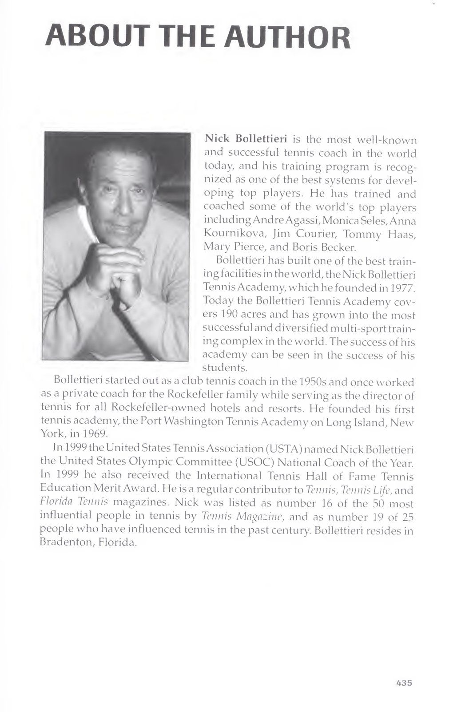
• Những cú đánh hướng xuống trung tâm có tác dụng tốt với những đường bóng ngắn ở giữa vì bạn có thể thiết lập vị trí tốt và hạn chế cơ hội bắt vô-lê của đối thủ. Cú vô-lê đầu tiên • Khi bạn không ở vị trí để Kết thúc cú đánh điểm ở cú vô-lê đầu tiên, hãy coi nó như một cú đánh tiếp cận bằng cách đánh dọc theo đường biên hoặc thẳng về phía trước để thiết lập vị trí Kết thúc cú đánh điểm ở cú vô-lê tiếp theo hoặc trên cao.
Kết quả điểm Theo thuật ngữ thống kê, có ba cách để Kết thúc cú đánh một trận đấu — người chiến thắng, lỗi bắt buộc hoặc lỗi không bắt buộc. Người chiến thắng là cú đánh chiến thắng mà đối thủ của bạn không thể chạm tới. Lỗi bắt buộc xảy ra khi đối thủ của bạn đang ở chế độ phòng thủ đến mức họ mắc lỗi. Lỗi không bắt buộc xảy ra khi một tay vợt có thời gian chuẩn bị, có phương án, ở tư thế tấn công nhưng lại sút hỏng.
Mục tiêu của nhiều kế hoạch trò chơi chiến lược là sử dụng các cơ hội được tạo ra trong một cuộc biểu tình để đưa đối thủ vào thế khó, khiến họ mắc nhiều lỗi cưỡng bức hơn là người chiến thắng. Ví dụ: với một quả bóng ngắn, một người chơi có thể chọn người chiến thắng với nguy cơ mắc lỗi không đáng có. Vào một ngày tồi tệ, người chơi này sẽ tự đánh mình. Một tay vợt khác trong tình huống bóng ngắn có thể chọn cách tiếp cận lưới và dựng điểm để đối phương phải thực hiện cú chuyền từ vị trí khó và mắc lỗi. Chiến lược này gây thêm áp lực cho đối thủ và giúp công việc của tay vợt tấn công an toàn hơn một chút.
Kế hoạch trận đấu và chiến lược trận đấu 3A7 Luyện tập dọc đường biên so với đường chéo Bắt đầu mỗi lượt đánh bằng cách đánh [Đối tác] quả bóng đầu tiên ở giữa sân. Đối thủ của bạn sau đó sẽ bắt đầu vào một khuôn mẫu. Một người chơi được chỉ định để đánh mọi thứ trên đường thẳng. Chơi 10 điểm rồi đảo ngược kiểu đánh để cả hai người chơi đều trải nghiệm được hai kiểu đánh.
Người chơi ở tuyến dưới phải nỗ lực hơn để giữ điểm vì anh ta hoặc cô ta phải liên tục thực hiện những cú đánh dẫn đến vị trí sân không thuận lợi. Bài tập này cho phép cả hai người chơi trải nghiệm việc lựa chọn cú đánh ảnh hưởng như thế nào đến vị trí sân và khả năng phục hồi. Thuận tay Đánh chéo sân (cross-court) và phục hồi Cả hai người chơi đều bắt đầu bằng một cú Cú thuận tay (forehand) (forehand) chéo bàn [dành cho người chơi thuận tay phải). Luân phiên bắt đầu giữa các người chơi, một người chơi bắt đầu bài tập bằng cách đánh quả bóng đầu tiên về phía góc thuận tay của đối phương. Trọng tâm là đạt được khả năng hồi phục hoàn toàn sau mỗi lần bắn và phải ổn định thay vì mạnh mẽ.
Để tạo một trò chơi từ bài tập này, bạn chỉ cần thêm điểm. Mỗi người chơi bắt đầu với 1 5 điểm. Đối với mỗi lỗi không thể khắc phục mà bạn phạm phải, bạn sẽ bị mất một điểm. Người chơi đầu tiên đạt 0 sẽ thua cuộc. Phương pháp tính điểm này giúp bạn phát triển tính nhất quán. Bài tập chéo bàn và phục hồi trái tay Bài tập này tương tự như bài tập chéo bàn thuận tay và bài tập phục hồi ngoại trừ việc người chơi sử dụng kiểu Cú trái tay (backhand) (backhand). Tính điểm theo cùng một cách và so sánh kết quả của hai bài tập để xác định mặt nhất quán nhất của bạn.
[Đối tác] 0< — Thuận tay Đánh chéo sân (cross-court) và tấn công Đến bài tập thứ hai và thứ ba, giờ đây chúng tôi thêm yếu tố tấn công. Một lần nữa, chúng tôi thực hiện theo mô hình thuận tay, thưởng cho người chơi tấn công và giành được điểm trên lưới. Cách tính điểm lần này bắt đầu từ 0 và tính đến 20. Mỗi đấu thủ được 1 điểm khi giành được một điểm và 2 điểm khi giành được điểm trong một cú vô-lê, đánh đầu hoặc phạm lỗi cưỡng bức của đối phương. Luân phiên bắt đầu mỗi điểm giữa những người chơi.
Trái tay Đánh chéo sân (cross-court) và tấn công Bài tập này được thực hiện theo cách tương tự như bài tập trước ngoại trừ việc người chơi sử dụng kiểu trái tay. So sánh kết quả của hai bài tập để xác định mô hình nào hiệu quả hơn trong việc thiết lập điểm mạnh của bạn để tấn công lưới. Bài tập thay Đổi hướng bóng Đối với bài tập này, chúng tôi sử dụng một sợi dây để kéo dài chiều cao của lưới qua đường biên từ 10 đến 12 feet. Bắt đầu cú đánh bóng ở giữa sân và sử dụng bài tập này để thực hành thay Đổi hướng bóng đánh bóng. Khi bạn ở vị trí hướng tới một góc, hãy thực hiện cú giật cao dọc theo dây qua dây, nhấn mạnh vào việc phục hồi hoàn toàn sau mỗi quả bóng. Bạn cũng có thể sử dụng một đường cắt dọc theo sợi dây để thực hiện việc thay Đổi hướng bóng.
Kế hoạch trận đấu và chiến lược trận đấu Tốt nhất là Đổi hướng bóng khi bạn ở vị trí giữa sân. Quả bóng di chuyển qua phần thấp của sợi dây và bạn chỉ còn vài bước nữa là đến vị trí thu hồi chính xác. t [ Đối tác] Xây dựng điểm và chiến thuật'^ Bây giờ bạn đã hiểu về chiến lược và mô hình cơ bản, chúng tôi sẽ xây dựng dựa trên nền tảng này bằng cách giới thiệu khái niệm về xây dựng điểm và chiến thuật.
Chúng tôi sẽ giúp định hình tư duy của bạn và phát triển tâm lý có lợi cho việc xây dựng điểm. Bạn sẽ học cách áp dụng hài hòa các phần khác nhau của trò chơi và xây dựng kế hoạch trò chơi phù hợp với phong cách chơi của bạn. Tâm lý phù hợp Tâm lý phù hợp là tâm lý bạn thiết lập trong cuộc thi. Nó quyết định thái độ, quá trình suy nghĩ và ra quyết định của bạn. Tâm lý của bạn quyết định cách bạn sẽ phản ứng dưới áp lực của sự cạnh tranh.
Một số người chơi cho phép một số trường hợp nhất định ảnh hưởng đến tâm lý của họ. Ví dụ: người chơi có thể gặp khó khăn khi thi đấu với những đối thủ mà họ biết là tốt hơn nhiều hoặc với những đối thủ mà mọi người đều biết họ nên đánh bại. Cả hai tình huống đều tạo thêm áp lực có thể ảnh hưởng đến tâm lý trận đấu. '^Phần này của Pat Dougherty và Peter D. McCraw.
Bẫy tinh thần Khi một chàng trai và một cô gái có kỹ năng và năng lực tương tự cạnh tranh với nhau, cả hai có thể gặp khó khăn trong việc duy trì tâm lý phù hợp để cạnh tranh. Kiểu đối đầu này thường dẫn đến việc một hoặc cả hai người chơi rơi vào cái mà chúng tôi gọi là bẫy tâm lý. Bất kỳ tay vợt nào cũng có thể rơi vào bẫy tâm lý khi gặp tình huống áp lực.
Một ví dụ là cái bẫy tâm lý ăn thua. Điều này xảy ra khi người chơi cố gắng Kết thúc cú đánh điểm ở mỗi cú vung vợt. Người chơi có thể áp dụng tâm lý ăn thua nếu họ cảm thấy buộc phải đuổi đối thủ ra khỏi sân. Họ có thể sử dụng cách tiếp cận này để chống lại đối thủ mà họ biết mình nên đánh bại. Một trường hợp khác mà người ta có thể sử dụng tâm lý ăn thua là khi gặp một đối thủ mạnh hơn. Ở đây, người chơi sợ chơi hết điểm, cảm thấy nếu giữ bóng trong cuộc thì đối phương sẽ kiểm soát và Kết thúc cú đánh điểm trước. Những người chơi cờ bạc có thể gặp rắc rối với tính nhất quán, thường mắc nhiều lỗi hơn người chiến thắng. Sự thất vọng xuất hiện và cuối cùng họ đã tự đánh bại mình.
Ở thái cực ngược lại, người chơi có thể rơi vào bẫy tâm lý do dự. Dưới áp lực, kiểu tay vợt này sợ mắc lỗi và chỉ chơi để lấy lại bóng. Mặc dù những người chơi này có thể kiên định nhưng họ gặp khó khăn trong việc kiểm soát điểm và luôn ở chế độ phòng thủ. Người đẩy dự kiến đấu tranh với khái niệm ép buộc hành động và Kết thúc cú đánh điểm. Trừ khi đối thủ mất kiên nhẫn với người đẩy dự kiến và tự hủy, người đẩy dự kiến sẽ gặp khó khăn trong việc giành điểm, đặc biệt là ở cấp độ kỹ năng cao hơn.
Điểm xây dựng là gì? Khái niệm xây dựng điểm bắt đầu bằng sự hiểu biết về cách các phần trong trò chơi của bạn đóng góp vào kế hoạch trò chơi. Ý tưởng là bắt đầu một điểm, thiết lập nó, tạo cơ hội và Kết thúc cú đánh điểm đó. Tại sao bạn phải xây dựng điểm? Mỗi khi bạn giành chiến thắng hoàn toàn và mắc lỗi, điểm số của đối thủ sẽ được cải thiện. Trong bóng rổ, nếu một tay vợt thực hiện cú sút và đánh trượt, đội tấn công có cơ hội thực hiện lại cú đánh trượt và thực hiện thêm một cú đánh nữa. Tệ nhất, đội kia có được sự phục hồi và tiến về phía rổ của họ. Những cú sút hụt trong bóng rổ không ghi điểm cho đối thủ.
Tuy nhiên, trong quần vợt, việc đánh bại chính mình sẽ dễ dàng hơn nhiều vì mỗi lần bạn mắc lỗi, đối thủ của bạn sẽ ghi điểm. Hệ thống tính điểm này có nghĩa là bạn phải chọn lọc về thời điểm và cách thức bạn cố gắng Kết thúc cú đánh một điểm. Hãy nghĩ về cách một đội bóng rổ xây dựng một vở kịch. Một đường chuyền vào bắt đầu hành động. Một tay vợt rê bóng xuống sân và cả đội sắp xếp theo đội hình.
Khi các tay vợt bắt vô-lê xung quanh, họ không ngừng cố gắng tạo cơ hội tốt để ghi bàn trong Kế hoạch trận đấu và Chiến lược trận đấu. Khi tìm thấy sơ hở ở hàng phòng ngự, họ sẽ tìm cách tận dụng. t Bốn giai đoạn xây dựng điểm Hiểu được bốn giai đoạn xây dựng điểm sẽ giúp bạn sắp xếp các cú đánh và cú đánh của mình thành một kế hoạch trò chơi.
Giai đoạn I - Bắt đầu Điểm bắt đầu bằng việc giao bóng và trả lại. Điều quan trọng là phải hiểu mục tiêu và tâm lý cho giai đoạn 1 - sử dụng cú giao bóng và Trả giao bóng một cách hiệu quả để bắt đầu điểm. Bạn muốn thiết lập quyền kiểm soát điểm từ quả bóng đầu tiên. Người chơi thiếu nhất quán trong giai đoạn 1 vì họ sử dụng cú giao bóng và trả lại để cố gắng Kết thúc cú đánh điểm. Những con Át và những người chiến thắng lượt về có thể là kết quả của những cú đánh được đặt đúng vị trí, nhưng chúng không nên là tâm điểm cho hầu hết các điểm.
Thiết lập tư duy để bắt đầu đúng vấn đề trong giai đoạn I sẽ cải thiện tính nhất quán. Sáng tạo hơn với các lựa chọn của mình sẽ giúp bạn đạt được hiệu quả cao hơn khi bắt đầu tính điểm. Giai đoạn H - Thiết lập Nếu điểm không Kết thúc cú đánh ở lần giao bóng hoặc Trả giao bóng và cả hai người chơi đều không tiến tới lưới, thì điểm đó sẽ chuyển sang giai đoạn II - cuộc biểu tình cơ bản.
Giống như một đội bóng rổ bắt vô-lê xung quanh để tìm kiếm cơ hội, trong cuộc biểu tình, cả hai người chơi đều sử dụng các tùy chọn tốc độ, độ xoáy và quỹ đạo, đồng thời làm việc với các kiểu và hướng sút để cố gắng tạo ra cơ hội. Một lần nữa, những người chơi mắc nhiều lỗi trong pha giao bóng thường cố gắng dứt điểm từ những tình huống có tỷ lệ phần trăm thấp. Mục tiêu là thực hiện thiết lập cho đến khi bạn tạo được cơ hội có tỷ lệ phần trăm cao.
Mục tiêu của bạn trong cuộc biểu tình là thiết lập quyền kiểm soát tấn công đối với điểm và chuẩn bị tinh thần để đánh càng nhiều cú đánh cần thiết để tạo cơ hội. Bạn phải luôn cảnh giác và có khả năng xác định các cơ hội để có thể nhanh chóng tận dụng chúng khi chúng xảy ra. Điều quan trọng là sử dụng các cú đánh và kiểu đánh cho phép bạn duy trì vị trí chính xác trong khi tập hợp. Bạn muốn tránh tạo cơ hội cho đối thủ trong giai đoạn thiết lập.
Giai đoạn III - Quả bóng cơ hội Một quả bóng cơ hội có thể xuất hiện ngay lập tức sau một pha giao bóng hoặc trả lại, nhưng nó chỉ có thể xuất hiện ở một điểm khác sau một pha đánh bóng 12 cú. Bạn nên nhận ra một số tình huống bóng cơ hội - bóng ngắn, sân rộng và cú đánh góc hoặc thả bóng. Bóng ngắn Bóng ngắn, cơ hội dễ nhận biết nhất, thường là kết quả của một cú đánh xuyên đất hoặc từ một cú đánh phòng thủ của đối thủ. Bóng ngắn cung cấp cho bạn tùy chọn để giành chiến thắng hoàn toàn hoặc tiến vào lưới trong một cú đánh tiếp cận.
Sân mở Cơ hội sân mở thường xảy ra khi bạn sử dụng kết hợp các cú đánh kéo đối thủ của bạn ra khỏi Vị trí trên sân. Cơ hội sân mở cũng sẽ xảy ra nếu đối thủ chọn những cú đánh không tốt cho vị trí sân của mình. Các cú đánh theo góc và thả Các cú đánh theo góc và thả sẽ buộc hành động bị loại khỏi loạt đánh, tạo cơ hội để Kết thúc cú đánh điểm. Phần lớn thời gian, những góc nhọn hoặc những cú cú bỏ nhỏ (drop shot) (drop shot) của bạn sẽ kéo đối thủ của bạn ra khỏi sân hoặc bắt họ vào lưới.
Giai đoạn IV — Kết thúc cú đánh Các lựa chọn bạn thực hiện với quả bóng cơ hội tạo tiền đề cho những gì xảy ra trong giai đoạn IV — Kết thúc cú đánh điểm. Một người thực hiện cú sút tích cực có nhiều khả năng cố gắng Kết thúc cú đánh trận đấu với người chiến thắng hoàn toàn, trong khi những người chơi sử dụng các phong cách chơi khác sẽ thích tiến lên lưới hơn. Bằng cách tiến lên lưới, bạn đang dựa vào chất lượng của cú đánh tiếp cận của mình để tạo ra một tình huống khó khăn cho đối phương Cú lốp bóng (lob) hoặc bắt vô-lê, mắc lỗi cưỡng bức hoặc tạo ra một quả bóng mà bạn có thể thực hiện cú vô-lê hoặc vượt trên không (overhead).
Cách suy nghĩ của giai đoạn IV là tận dụng và dứt điểm mạnh mẽ. Bạn không còn xây dựng quan điểm nữa; bạn đang đóng cửa. Hãy thực tế. Bạn không thể vượt qua Monica Seles. Bạn không thể vượt qua Pete Sampras hay Richard Krajicek. Sự kiêu ngạo có thể khiến ngay cả những chuyên gia hàng đầu cũng cứng đầu về điều này. Ví dụ, Boris Becker đã cố gắng đánh bại Andre Agassi từ vạch cuối sân, nơi Agassi vượt trội hơn. Becker thua tám lần liên tiếp.
Bây giờ bạn đã hiểu các giai đoạn xây dựng điểm cũng như mục tiêu của các cú đánh và cú đánh của mình, bạn đã sẵn sàng để tạo một kế hoạch trò chơi cho phong cách chơi của mình. Nhận ra rằng không phải mọi điểm đều đạt được cả bốn giai đoạn. Người chiến thắng và sai sót ở bất kỳ đâu trong quá trình xây dựng sẽ Kết thúc cú đánh điểm. Một số chiến thuật, như giao bóng và bắt vô-lê, được thiết kế để loại bỏ các giai đoạn xây dựng điểm bằng cách tạo áp lực ngay lập tức.
Ý chí xây dựng Bạn phải phát triển ý chí xây dựng và tin tưởng vào khái niệm này. Nếu bạn không Sự tự tin rằng việc xây dựng điểm số sẽ mang lại kết quả tốt hơn thì bạn sẽ không bao giờ có được tư duy đúng đắn. Ý tưởng không chỉ là giữ bóng trong cuộc mà còn phải thực hiện nó có mục đích. Hiểu được quy trình và quy trình xây dựng điểm sẽ không làm giảm bớt các khía cạnh tấn công trong trò chơi của bạn. Một cuộc tấn công mạnh mẽ có một cuộc tấn công cân bằng.
Kế hoạch trò chơi và chiến lược trận đấu sử dụng sự đa dạng và nhất quán. Nếu bạn mắc nhiều lỗi như người chiến thắng, chúng sẽ triệt tiêu lẫn nhau. Hãy gây khó chịu khi bạn xây dựng điểm nhưng phải nhất quán. Điều này có nghĩa là làm việc trong khả năng và trình độ kỹ năng của bạn, sử dụng tất cả các cú đánh và cú đánh của bạn cho mục đích đã định. Đừng sợ đối thủ của bạn là người chiến thắng Những người chơi có kinh nghiệm sẽ thích thú với cơ hội đấu với những đối thủ có tâm lý ăn thua. Những người chơi như vậy thích kích hoạt người chiến thắng hoàn toàn và họ thực sự cạnh tranh với chính mình và chống lại số liệu Phân tích dữ liệu trận đấu đấu. Thông thường, lỗi của họ chồng lên nhau nhanh hơn những người chiến thắng. Một chiến lược đơn giản có tác dụng tốt đối với người chơi ăn thua là phải vững vàng, tận dụng mọi cơ hội để ép đối thủ của bạn vào những tình huống khó xử mà từ đó họ sẽ phải đánh những người chiến thắng thậm chí còn khó khăn hơn để đánh bại bạn.
j Đừng để một vài người chiến thắng làm nản lòng hoặc khiến bạn sợ hãi trong chiến lược xây dựng điểm của mình. Hãy bám sát kế hoạch trò chơi của bạn và nhớ rằng tỷ lệ phần trăm đứng về phía bạn. Nếu đối thủ của bạn vượt qua thử thách của bạn bằng cách đánh nhiều người thắng hơn là mắc lỗi từ những tình huống khó khăn mà bạn đã tạo ra, thì bạn biết rằng đối thủ của bạn là người chơi giỏi hơn ngày hôm đó và xứng đáng giành chiến thắng. Bạn đã làm hết sức mình.
Xây dựng điểm Trong khi xây dựng điểm, bạn có sẵn các lựa chọn chiến lược trong mỗi giai đoạn. Sử dụng các tùy chọn này để tạo ra sự đa dạng trong kế hoạch trò chơi của bạn sẽ giúp bạn kiểm soát điểm và khiến đối thủ phải đoán. Các lựa chọn giao bóng Nhiều người chơi nghĩ cú giao bóng đầu tiên là cứng và phẳng và cú giao bóng thứ hai là xoáy. Cách suy nghĩ này tạo ra những cú giao bóng có thể đoán trước được, cho phép người Trả giao bóng đoán trước được điều gì sắp xảy ra.
Trong bóng chày, nếu người ném bóng không ném gì ngoài bóng nhanh, người đánh bóng sẽ sớm biết điều gì sẽ xảy ra và sẽ bắt đầu đánh bóng ra khỏi công viên. Bằng cách sử dụng nhiều cú ném khác nhau và thay đổi tốc độ, độ xoáy và vị trí, người ném bóng khiến người đánh bóng phải đoán. Trong quần vợt, người giao bóng có các tùy chọn tương tự. Trong lần giao bóng đầu tiên, sử dụng các cú giao Cú đánh phẳng, xoáy và đá, việc thay đổi tốc độ và các vị trí khác nhau sẽ làm giảm hiệu quả của người trả giao. Việc trộn lẫn các vòng quay và tốc độ sẽ khiến người quay trở lại khó xác định thời gian. Ngoài ra, việc thay Đổi bên (switch) ở quả giao bóng đầu tiên sẽ mở ra cơ hội tấn công vào điểm yếu và cho phép bạn đoán trước hướng Trả giao bóng.
Bằng cách duy trì tỷ lệ giao bóng đầu tiên cao, bạn có thể giảm bớt áp lực cho bản thân và tránh phải thực hiện quá nhiều quả giao bóng thứ hai. Bỏ lỡ quá nhiều cú giao bóng đầu tiên sẽ mang lại Điểm lợi thế (advantage) cho người Trả giao bóng. Để giảm lỗi kép, hãy sử dụng các cú giao bóng xoáy và nhắm vào giữa hộp. Xoay cho phép bạn vung mạnh mẽ trong khi vẫn duy trì tính nhất quán.
Các tùy chọn bao gồm sử dụng các cú giao bóng cắt và đá cũng như vị trí pha trộn để đa dạng, nhưng việc sử dụng quá nhiều biến thể có thể làm đảo lộn nhịp điệu thường xuyên của cú vung của bạn, gây ra lỗi nếu không muốn nói là lỗi kép. Những khả năng này càng có nhiều lý do hơn để có được quả giao bóng đầu tiên đạt được những Điểm quan trọng (big point), tức là điểm trận đấu hoặc điểm break. Tùy chọn Trả giao bóng Bắt điểm bắt đầu khi Trả giao bóng là một thách thức đối với một người giao bóng mạnh liên tục vì bạn chỉ có một phần nhỏ của giây để phản ứng và thực hiện. Vị trí sân đấu của bạn là chìa khóa. Vị trí của bạn thay đổi tùy theo sức mạnh của người giao bóng, khả năng quay trở lại, phong cách chơi và chiến lược của bạn. Nói chung, bạn nên đặt mình ở vị trí nằm giữa những vị trí có thể thực hiện được cú giao bóng.
Vị trí quay trở lại của bạn so với đường cuối sân (baseline) sẽ thay đổi tùy theo chiến thuật, chiến lược của bạn và khả năng của người giao bóng. Hầu hết người chơi đơn giản hóa việc trả lại quả giao bóng đầu tiên bằng cách sử dụng tốc độ đã có trên bóng và đánh tới mục tiêu đã xác định trước. Trả lại cú giao bóng thứ hai cho phép bạn đánh mạnh mẽ hơn. Về những điểm quan trọng, những người Trả giao bóng giỏi thường sử dụng vị trí của mình để tạo thêm áp lực cho quả giao bóng thứ hai của người giao bóng, ảnh hưởng đến cả vị trí và cách đối phương thực hiện cú giao bóng đó.
Việc lựa chọn cú đánh của bạn với tư cách là người Trả giao bóng cho cả quả giao bóng thứ nhất và thứ hai sẽ tùy thuộc vào chiến lược của bạn. Đánh chéo bàn ở lượt trả bóng có tác dụng tốt để bắt đầu pha bóng, trong khi đánh xuống đường biên ở quả giao bóng thứ hai cho phép bạn vào lưới và ngay lập tức Kết thúc cú đánh trận đấu. Tùy chọn Cuộc biểu tình cơ bản Dựa trên các cú đánh và kiểu đánh phù hợp với Vị trí trên sân của bạn, đây là một số lựa chọn cần xem xét trong cuộc biểu tình.
Đầu trận đấu, bạn phải quyết định xem nên sử dụng mẫu hình chéo bàn thuận tay hay mẫu chéo bàn trái tay để xây dựng điểm. Để đưa ra quyết định, hãy phân tích điểm mạnh và điểm yếu của bạn cũng như cơ hội mà bạn tìm kiếm để thiết lập. Để dự đoán điều gì sẽ xảy ra, hãy biết rằng nếu bạn đánh một quả bóng Đánh chéo sân (cross-court), đối thủ của bạn có khả năng đánh ngược lại hoặc về phía giữa sân. Nếu đối thủ của bạn đánh bóng về phía giữa sân, bạn có thể đánh vào một trong hai góc để thiết lập một mẫu. Nếu đối thủ của bạn đánh sâu xuống vạch trong pha đánh bóng, bạn nên tự động nghĩ đến việc đánh Đánh chéo sân (cross-court) để tận dụng Điểm lợi thế (advantage) sân rộng mở hoặc ít nhất là giành quyền kiểm soát điểm.
Kế hoạch trò chơi và chiến lược trận đấu Nếu đối thủ đánh thường xuyên vào giữa sân, bạn có cơ hội đánh từ góc này sang góc khác và khiến đối thủ của bạn bỏ chạy khi bạn kiểm soát giữa sân. Như chúng ta đã học trước đó, nếu bạn chọn đánh xuống vạch để buộc cú đánh Đổi hướng bóng, bạn cần đánh bóng theo cách sao cho bạn có đủ thời gian để phục hồi và tiếp tục điểm.
Khi bạn thực hiện các mô hình Đánh chéo sân (cross-court) để tạo ra một quả bóng cơ hội, bạn có các tùy chọn để điều chỉnh độ xoáy, tốc độ và quỹ đạo cú đánh của mình. Làm việc với kiểu này sẽ khiến đối thủ khó thiết lập nhịp điệu. Sử dụng các cú đánh góc để ép đối thủ của bạn ra xa để tạo thêm các cơ hội rộng rãi trên sân. Tùy chọn bóng cơ hội Bóng cơ hội có thể là bất kỳ tình huống tấn công nào xuất hiện và cho phép bạn tiến tới Kết thúc cú đánh điểm. Cách bạn chọn làm việc với cơ hội đó có thể khác nhau tùy theo từng thời điểm. Tâm lý và phong cách thi đấu của bạn thường quyết định sự lựa chọn của bạn. Dưới đây là các lựa chọn để xem xét cho các loại bóng cơ hội khác nhau.
Bóng ngắn cung cấp một số lựa chọn, một trong số đó là tấn công lưới bằng một cú sút tiếp cận. Như chúng ta đã tìm hiểu trước đó, hướng sút bạn chọn khi tiếp cận sẽ ảnh hưởng đến vị trí của bạn trên lưới. Đánh theo cách tiếp cận dọc theo đường dọc hoặc vào giữa sân khi bạn ở vị trí gần giữa sân sẽ mang lại khoảng cách ngắn nhất đến vị trí tốt trên lưới. Sử dụng bóng ngắn để tiếp cận sẽ gây áp lực lên đối phương khi bạn dứt điểm vào lưới.
Một số người chơi thích sử dụng bóng ngắn để cố gắng giành chiến thắng hoàn toàn trong bất kỳ lần mở sân nào, nhưng họ có nguy cơ mắc lỗi không đáng có cao hơn. Quả bóng cơ hội ở sân mở thường xảy ra do bạn đã sử dụng kết hợp các cú đánh để mở sân. Sau đó, bạn có thể Kết thúc cú đánh điểm bằng một cú đánh tấn công. Một cơ hội sân mở khác có thể xảy ra do đối thủ của bạn chọn đánh một cú đánh không tốt cho vị trí của mình, do đó không có vị trí để phục hồi.
Khi bạn có cơ hội trên sân mở, bạn không nên nhắm vào đường biên bằng cú đánh Kết thúc cú đánh điểm của mình. Bạn có nguy cơ mắc phải một lỗi không đáng có. Hãy tấn công bằng cú đánh của bạn nhưng hãy để lại một chút sai sót. Việc sử dụng các cú đánh góc và thả bóng có thể buộc đối thủ của bạn phải rời khỏi cuộc tập trận bằng cách đưa họ vào lưới hoặc ra khỏi sân, đặt đấu thủ vào tình thế phòng thủ. Các góc và cú cú bỏ nhỏ (drop shot) (drop shot) của bạn không nhất thiết phải là người chiến thắng hoàn toàn; bạn có thể sử dụng chúng để chuẩn bị cho việc hoàn thành điểm.
Một cú dứt điểm đến một điểm trong sách giáo khoa sẽ yêu cầu người chơi kiểm soát, tận dụng quả bóng cơ hội đầu tiên và tiến vào lưới. Sự an toàn này đặt đối thủ vào tình thế bị ép buộc. Nếu đối thủ ở đường cuối sân không thể thực hiện được cú bắt vô-lê hoặc Cú lốp bóng (lob) thắng lợi, họ sẽ phạm lỗi cưỡng bức hoặc thực hiện một cú đánh mà bạn có thể thực hiện bằng cú vô-lê hoặc cú đánh đầu.
Tay vợt tấn công lưới sử dụng quả bóng cơ hội để buộc đối phương thực hiện những cú đánh thắng, dựa trên thực tế là nếu ép buộc các cú đánh tiếp cận, người đánh bóng sẽ mắc nhiều lỗi hơn người chiến thắng hoặc sẽ tạo ra những cú đánh có thể bỏ cuộc. Tuy nhiên, một số tay vợt lại cực kỳ hiệu quả trong việc thực hiện các cú bắt vô-lê và Cú lốp bóng (lob). Họ mong chờ thử thách. Những tay vợt này thường sẽ đưa bạn lên lưới để họ có thể vượt qua bạn. Vị trí ròng khi đó là một nơi khó khăn. Bạn bị rơi vào thế phòng thủ và không kiểm soát được điểm.
Khi ở trên lưới, điều quan trọng là phải thiết lập một vị trí giúp bạn trong tầm với của đường chuyền dọc hoặc đường chuyền góc nhưng vẫn có thể bảo vệ khỏi cú Cú lốp bóng (lob). Khi đối mặt với một tay vợt trên lưới, bạn phải hoán đổi đường chuyền dọc biên bằng các góc và Cú lốp bóng (lob) để tạo cơ hội. Hãy để mắt đến vị trí của tay bắt lưới (netman). Nếu đối thủ của bạn chơi gần lưới, hãy Cú lốp bóng (lob) cho đến khi họ lùi lại. Những cú bắt vô-lê của bạn khi đó sẽ trở nên hiệu quả hơn.
Kết hợp chiến thuật Bạn tạo ra các chiến thuật, thường được xây dựng dựa trên điểm mạnh của mình, bằng cách kết hợp hai hoặc nhiều cú đánh để đạt được mục tiêu mong muốn — một quả bóng cơ hội hoặc một tình huống sân mở. Hãy cùng khám phá các sự kết hợp chiến thuật khác nhau. • Giao bóng và bắt vô-lê. Bạn sử dụng chiến thuật này để gây áp lực ngay lập tức lên khả năng vượt qua bạn của đối thủ. Chiến thuật này loại bỏ giai đoạn tập trung của điểm, cho phép bạn phát huy điểm mạnh của mình trên lưới.
• Chip và sạc. Chiến thuật này được sử dụng chủ yếu để chống lại quả giao bóng thứ hai khi người Trả giao bóng tiếp cận lưới từ quả Trả giao bóng. Xuống dòng là thích hợp hơn cho chip và sạc. Chiến thuật này tạo thêm áp lực ở quả giao bóng thứ hai. • Góc nhọn và đường chéo. Trong cuộc giao tranh, một cú đánh góc nhọn có thể kéo đối thủ ra khỏi sân và tạo cơ hội để thực hiện một cú đánh Đánh chéo sân (cross-court) tấn công vào phần sân rộng mở.
• Góc này sang góc khác. Khi đối thủ có xu hướng đánh bóng sâu vào giữa liên tục, bạn có thể lựa chọn sử dụng chiến thuật phạt góc để khiến đối thủ phải bỏ chạy. Chiến thuật này thường sẽ khiến đối thủ mắc lỗi hoặc rời sân. • Phạt góc và đánh phía sau. Đặc biệt hiệu quả khi bạn đã sử dụng thành công chiến thuật phạt góc, chiến thuật phạt góc và đánh sau lợi dụng sự đoán trước của đối thủ về việc bạn đánh sang góc đối diện. Đánh vào phía sau đối thủ để khiến họ mất cảnh giác.
• Điểm dài. Bằng cách chơi một điểm tấn công dài, bạn có thể khiến đối thủ mất tinh thần. Mục đích là để tồn tại lâu hơn đối thủ và kiểm tra sự kiên nhẫn của đối thủ. Đây là chiến thuật hữu hiệu để tạo đà hoặc phá vỡ Nhịp điệu trận đấu của đối thủ trong trận đấu. Việc đối thủ của bạn nhận ra rằng Kế hoạch trò chơi và Chiến lược trận đấu mà bạn có thể thống trị các cuộc giao tranh kéo dài có thể có tác động tâm lý đến trò chơi của họ, dẫn đến nhiều lỗi hơn.
• Cú vô-lê. Những người chơi cơ bản hung hãn sử dụng cú vô-lê xoay người để phát động một cuộc tấn công bất ngờ bằng một cú đánh sâu vào mặt đất. Đặc biệt hiệu quả với những đường bóng có độ giật cao, cú vô-lê xoay cho phép tay vợt di chuyển vào lưới mà không cần phải chờ bóng ngắn. • Thả cú sút và Cú lốp bóng (lob). Bạn có thể thiết lập cú đánh thả bóng và Cú lốp bóng (lob) trong suốt pha đánh bóng bằng cách sử dụng một cú Cú trái tay (backhand) (backhand) để ngụy trang cho cú đánh thả bóng cuối cùng.
Cú thả bóng buộc đối thủ vào lưới và cho phép bạn kiểm soát điểm. Cú Cú lốp bóng (lob) hoạt động tốt để hoàn thành sự phối hợp này, tận dụng Điểm lợi thế (advantage) sân sau rộng mở của đối phương. Sân đôi khi sẽ mở cửa cho cú đánh chuyền. • Chiều sâu của đường biên và đường giao nhau ngắn. Sự kết hợp này có tác dụng tốt như một cú đấm một hai, đầu tiên là mở sân, sau đó Kết thúc cú đánh điểm.
Chiến thuật này có thể được sử dụng trong cuộc tập hợp nhưng hiệu quả nhất ở cách tiếp cận và vô-lê. Tiếp cận dọc biên, vào vị trí trên lưới và Kết thúc cú đánh điểm bằng một cú vô-lê góc. Tóm lại, bạn đã biết việc lựa chọn cú đánh ảnh hưởng như thế nào đến khả năng bao quát sân của bạn, vị trí thu hồi chính xác cho mỗi lần đánh, cũng như thời gian bạn phải hồi phục. Bạn cũng đã học cách thiết lập tâm lý thi đấu để tích điểm, cách sắp xếp và hiểu mục tiêu cho từng phần của trò chơi cũng như cách vận dụng chiến thuật dựa trên điểm mạnh và phong cách chơi của bạn.
Bây giờ bạn đã chuẩn bị tốt hơn để giành chiến thắng trong trò chơi của mình. Đi vào các tình huống trận đấu mong đợi những pha giằng co kéo dài và khó khăn. Hãy chuẩn bị để đi xa. Hãy sử dụng những gì bạn làm tốt nhất thường xuyên nhất có thể và không bao giờ bỏ cuộc. Khi bạn hạ gục đối thủ, hãy tiếp tục gây áp lực, bám sát kế hoạch trận đấu của mình và Kết thúc cú đánh một cách mạnh mẽ. Nếu bạn đang thua và kế hoạch trò chơi của bạn thất bại, hãy điều chỉnh kế hoạch hoặc thậm chí đánh bạc. Hãy làm những gì cần thiết để phá vỡ đà của đối thủ.
Học cách nhận biết khả năng và điểm yếu của đối thủ. Kiểm tra đối thủ của bạn sớm để xem liệu họ có biết những gì bạn biết về kiểu đánh và cách xây dựng điểm hay không. Nếu đối thủ của bạn chơi không thông minh, chiến lược của bạn chắc chắn sẽ mang lại Điểm lợi thế (advantage) cho bạn. Chuẩn bị cho Giải đấu Một trong những nguồn Sự tự tin lớn nhất là cảm thấy rằng bạn đã chuẩn bị sẵn sàng. Bạn có thể phát triển niềm tin này bằng cách tập luyện có mục đích, bằng cách đặt ra các mục tiêu ngắn hạn dẫn đến sự kiện và bằng cách điều hòa cơ thể và tâm trí của bạn cho bài kiểm tra sắp tới. Bằng cách phát triển các thói quen nhất quán và đáng tin cậy để chuẩn bị cho trận đấu, bạn có thể giảm bớt một số nghi ngờ trước trận đấu ảnh hưởng đến nhiều người chơi.
Phần thể chất của thói quen nên bao gồm ngủ đủ giấc vào đêm trước trận đấu, chế độ ăn uống hợp lý, kế hoạch di chuyển cụ thể đến địa điểm thi đấu, các bài tập giãn cơ và khởi động cụ thể trước trận đấu. Theo thời gian, hầu hết người chơi quần vợt đều học cách mang theo những vật dụng cần thiết để giúp họ sẵn sàng - vợt, giày, nước, khăn tắm, đồ ăn nhẹ, dây bổ sung, dây giày bổ sung, tất bổ sung, mũ, kem chống nắng, băng, kính, áo sơ mi bổ sung, quần short bổ sung, bộ đồ khởi động, tay cầm, v.v.
Với cơ thể đã sẵn sàng và những nhu cầu vật chất cần thiết trong tay, chúng ta chuyển sang chuẩn bị tinh thần. Mặc dù hầu hết mọi người đều thừa nhận rằng phần lớn môn quần vợt liên quan đến tinh thần, nhưng rất ít tay vợt đã phát triển được một kế hoạch chuẩn bị tinh thần nhất quán và đáng tin cậy cho các trận đấu của mình. Tại Bollettieri's, chúng tôi khuyên các vận động viên nên bắt đầu chuẩn bị tinh thần vào đêm trước trận đấu.
Đầu tiên, chúng tôi khuyến khích người chơi nghĩ ra một kế hoạch trò chơi bằng văn bản phù hợp với điểm mạnh của họ. Điểm mạnh của họ là gì và họ sẽ tận dụng chúng như thế nào? Họ sẽ che giấu điểm yếu của mình bằng cách nào? Sau đó, chúng tôi khuyên người chơi nên sử dụng kỹ thuật hình ảnh để thấy mình đang thực hiện kế hoạch trò chơi của mình. Hình ảnh phải chính xác. Người chơi phải nhìn thấy chính mình thực hiện một cách mạnh mẽ và thống trị đối thủ, cảm nhận được cảm giác Sự tự tin như thế nào, cảm giác trở thành người chiến thắng là như thế nào.
Vào ngày thi đấu, người chơi nên dành một vài phút để chuẩn bị trước trận đấu để tập trung tâm trí vào nhiệm vụ sắp tới. Chính xác thì họ phải làm thế nào để hoàn thành những gì họ đã đặt ra? Người chơi phải cụ thể về cách họ sẽ sử dụng các cú đánh và sự hiện diện thể chất của mình để thống trị đối thủ. Chúng tôi khuyên người chơi nên điều chỉnh mức độ hưng phấn trước trận đấu của mình để không quá lo lắng cũng như không quá thoải mái. Kỹ thuật thư giãn và thở có thể giúp giải quyết tình trạng bị kích thích quá mức. Chiến lược nâng cao tinh thần rất hữu ích trong những ngày người chơi cảm thấy chán nản.
Để xây dựng Sự Sự tự tin, người chơi nên bắt đầu thu thập thêm thông tin trong quá trình khởi động. Người chơi nên làm quen với môi trường xung quanh sân và tìm kiếm bất kỳ điều gì độc đáo trên bề Mặt sân liên quan đến tốc độ, phản ứng quay, khu vực trơn trượt, v.v. Họ cũng nên đánh giá các điều kiện môi trường, chẳng hạn như mặt trời, bóng râm, gió và vị trí của khán giả. Khi khởi động, người chơi nên đánh giá điểm mạnh, điểm yếu của đối thủ và xử lý thông tin một cách khách quan. Chúng tôi nhắc nhở người chơi rằng đây là lúc để thu thập thông tin chứ không phải lúc để đánh giá xem đối thủ tốt hơn hay kém hơn họ. Bằng cách đưa ra phán đoán, người chơi có thể mất Sự tự tin hoặc trở nên Sự tự tin quá mức.
Mặc dù có ý định tốt và kế hoạch được cân nhắc kỹ lưỡng, nhưng hoàn cảnh chắc chắn sẽ khiến người chơi phải thay đổi vào ngày thi đấu. Chúng tôi đặc biệt khuyến khích người chơi phát triển các kế hoạch dự phòng để giải quyết các vấn đề hoặc phiền nhiễu không lường trước được. Suy nghĩ về các vấn đề tiềm ẩn và viết ra các giải pháp có thể hữu ích. Dưới đây là một số ví dụ. Bạn sẽ làm gì nếu đối thủ thô lỗ với bạn trước trận đấu? Bạn sẽ phản ứng thế nào nếu đối thủ của bạn quá thân thiện với Kế hoạch trò chơi và Chiến lược trận đấu và nói nhiều? Bạn sẽ giải quyết thế nào khi xảy ra xung đột với huấn luyện viên, bạn cùng chơi hoặc phụ huynh ngay trước khi trận đấu bắt đầu? Bạn sẽ phản ứng thế nào khi vẽ được một người chơi mà bạn chưa từng đánh bại trước đây? Bạn sẽ đối phó với những phiền nhiễu như thế nào, chẳng hạn như một đối thủ gian lận hoặc một đám đông cổ vũ cho đối thủ của bạn nhiều hơn là cổ vũ cho bạn? Nghịch cảnh có thể tấn công theo vô số cách trước hoặc trong trận đấu. Việc chuẩn bị sẵn sàng để xử lý mọi tình huống có thể giúp bạn thực hiện công việc một cách tối ưu. Xử lý hiệu quả những tình huống không thể kiểm soát có thể giúp bạn tập trung vào những thứ bạn có thể kiểm soát — thái độ, Sự tập trung và nỗ lực.
Chống lại khi thua cuộc Carl Sandberg đã nói, "Mọi chuyện sẽ không bao giờ Kết thúc cú đánh cho đến khi nó Kết thúc cú đánh." Hoặc có thể đó là Yogi Berra. Dù bằng cách nào, thông điệp vẫn rõ ràng - hãy tiếp tục chiến đấu, tiếp tục cố gắng và có thể bạn có thể xoay chuyển một trận đấu, trò chơi hoặc hiệp đấu vô vọng. Khi bỏ cuộc thì dễ hơn là quay lại, người chiến thắng thực sự sẽ tiếp tục chiến đấu cho đến khi tiếng còi mãn cuộc vang lên.
Vince Lombardi, huấn luyện viên huyền thoại của Green Bay Packers đã nói, "Chúng tôi không bao giờ thua, chúng tôi chỉ sắp hết thời gian." Tất cả các đối thủ cạnh tranh nên có thái độ chiến thắng này. Những câu nói sáo rỗng này liên quan đến quần vợt như thế nào? Chà, trở lại sau một thất bại có thể xảy ra là một thái độ. Chúng tôi thấy bằng chứng về thái độ này được dán trên tường phòng thay đồ: "Khi mọi việc trở nên khó khăn, thì khó khăn sẽ tiếp tục." Sự dẻo dai về tinh thần tạo nên sự khác biệt giữa tay vợt giỏi và tay vợt giỏi. Dù thắng hay thua, những cao thủ sẽ chiến đấu và giành lấy từng điểm. Họ sẽ không bỏ cuộc, bất kể tỷ số thế nào. Khi những tay vợt vĩ đại thua cuộc, họ để lại cả trái tim và tâm hồn trên sân. Những tay vợt này có thể nhìn mình trong gương sau trận đấu và nói: "Tôi đã cố gắng hết sức - tôi chẳng còn gì cả". Nếu bạn có thái độ này, bất kỳ trận thua nào cũng có nghĩa là bạn đã bị đánh bại.
Kiểu tinh thần dẻo dai này thể hiện rõ ở những tay vợt thành công như John McEnroe, Jimmy Connors và Chris Evert - những tay vợt chưa bao giờ nghĩ mình bị đánh bại. Niềm tin này, dù mỗi người phát triển theo một cách khác nhau, vẫn chiếm ưu thế khi thất bại đang đến gần. Evert nói rằng cô ấy chơi để không thua. Connors chỉ chơi để giành chiến thắng, thường quên giao bóng và chiến đấu cho đến khi bỏ lại mọi thứ trên sân.
Người chơi quần vợt có thể phát triển một trò chơi tinh thần thành công bằng cách hình thành những thói quen tốt và liên tục tập trung vào việc chuẩn bị và Sự tập trung. Các nhà tâm lý học thể thao bảo chúng ta hãy hình dung từng cú đánh thắng và điểm thắng, từng cú một. Duy trì các nghi thức của bạn dù thắng hay thua, tập trung bằng cách hít thở sâu và điều chỉnh dây vợt.
Tóm lại, chiến thắng là một trạng thái tinh thần, niềm tin rằng bằng cách nào đó, điều gì đó sắp xảy ra sẽ giúp bạn giành chiến thắng. Điểm số chỉ là thứ yếu. Bạn nên quản lý từng điểm, từng trận đấu, có tính đến toàn bộ cuộc thi. Nếu bạn có thể thực hiện được điều này, bạn sẽ trở thành người chiến thắng bất kể điểm số như thế nào. Giữ tập trung khi chiến thắng Một trong những lĩnh vực thể thao khó nhất cần thành thạo là giữ tập trung khi chiến thắng, mặc dù điều đó có vẻ khá đơn giản - chỉ cần Kết thúc cú đánh trận đấu. Nhưng chiến thắng thường khó nắm bắt và có thể thoát khỏi sự yếu tim.
Có thể bỏ đi một trận đấu sau khi dẫn trước 5-2 ở hiệp thứ ba thông qua sự kết hợp của các sự kiện. Đầu tiên, đối thủ của bạn đang ở ngưỡng cửa thất bại và sẽ phải chịu đựng khó khăn hơn bao giờ hết. Sự tập trung mới của đối thủ có thể ăn mòn bạn, khiến bạn phải chơi thận trọng hơn. Bạn có thể từ bỏ hoàn toàn kế hoạch trò chơi đã giúp bạn đạt được điểm phù hợp. Một số người gọi đó là sự thay đổi động lượng và khi động lượng bắt đầu chống lại bạn thì bất cứ điều gì cũng có thể xảy ra và điều đó thường xảy ra.
Một câu nói sáo rỗng được áp dụng ở đây: "Không bao giờ thay đổi một trò chơi đang thắng, ngoại trừ việc có thể tăng cường nó." Đừng thay đổi từ phong cách cơ bản sang giao bóng và bắt vô-lê. Ở lại với trò chơi đã giúp bạn thành công. Rõ ràng, giành từng điểm một mà không nghĩ tới tỉ số là thói quen của những người chiến thắng. Nghẹt thở hoặc bỏ cuộc trong trận đấu là điều mà mọi vận động viên đều phải đối mặt. Không ai được miễn dịch. Một số che giấu cảm giác tốt hơn những người khác. Thua khi chiến thắng dường như sắp xảy ra ở mọi môn thể thao. Không có công thức nào cả, nhưng có một điều bạn có thể làm để tránh bị bỏ trận. Hãy rèn luyện bản thân thông qua các buổi luyện tập chất lượng và học cách chiến thắng khi dẫn trước. Hãy nhớ rằng, thực hành chất lượng sẽ tạo ra những trận đấu chất lượng.
Cách chiến đấu với người chơi quyền lực Trong suốt lịch sử quần vợt, người chơi luôn bị đe dọa bởi những người chơi quyền lực hơn là những người chơi thuộc bất kỳ phong cách nào khác. Không có gì khó chịu hơn việc chứng kiến đối thủ cú đập bóng smash qua mặt bạn. Mặc dù bạn có thể cảm thấy bất lực nhưng bạn vẫn có cách để tự vệ. Hoàn cảnh này là một trong những vấn đề lớn nhất mà các vận động viên phải đối mặt và chinh phục. Người chơi quần vợt có xu hướng tập trung vào kết quả hơn là quá trình làm thế nào để đạt được mục tiêu họ muốn. Để giành được chiến thắng, bạn phải thực hiện từng lượt một và chơi từng điểm riêng lẻ.
Để hiểu cách chơi người chơi quyền lực, trước tiên bạn phải hiểu điểm mạnh và xu hướng của người chơi quyền lực. Chúng tôi không quan tâm nhiều đến khía cạnh kỹ thuật bằng chiến thuật. Nhiều năm trước, những tay vợt quyền lực như Roscoe Tanner và Victor Amaya có những cú giao bóng rất lớn nhưng lại rất ít. Họ sống và chết với cú giao bóng. Vào những năm 1980, trò chơi quyền lực chuyển sang những cú thuận tay (forehand) lớn như của Jimmy Arias và Aaron Krickstein. Họ cũng dựa vào một loại vũ khí duy nhất. Vào những năm 1990, chúng ta có những tay vợt như Andre Agassi và Jim Courier, những người không chỉ có những cú thuận tay (forehand) mạnh mẽ mà còn có khả năng nhận bóng sớm khi sức mạnh dâng cao. Tất cả những người chơi này đều có một điểm chung trong Kế hoạch trò chơi và Chiến lược trận đấu - khả năng sống sót của họ phụ thuộc vào khả năng đánh trúng người chiến thắng và giữ đối thủ trong thế phòng thủ bằng vũ khí của họ.
Những người chơi quyền lực thích làm nản lòng đối thủ của họ bằng cách đánh nhiều người chiến thắng và chơi ghi điểm nhanh. Làm điều này đạt được hai điều. Đầu tiên, đối thủ trở nên chán nản vì không thể đưa bóng vào cuộc. Thứ hai, đối thủ mắc nhiều lỗi không đáng có hơn vì người chơi quyền lực liên tục đánh vào hàng loạt người chiến thắng. Những người chơi quyền lực tìm cách chơi điểm nhanh vì khi đó đối thủ của họ có ít thời gian để lấy lại Sự Sự tự tin hoặc phát triển nhịp điệu tốt. Do đó, kẻ thù của người chơi quyền lực sẽ trở nên khó chịu hơn khi trận đấu diễn ra. Làm thế nào để bạn chống lại và điều chỉnh cho phù hợp với kẻ tấn công lớn? Làm thế nào để bạn quay trở lại trận đấu? Khi bạn hiểu người chơi quyền lực đang tìm kiếm và phát triển điều gì, bạn có thể dễ dàng phát triển kế hoạch trả đũa hơn.
Từ góc độ kỹ thuật, việc chuẩn bị sớm là điều bắt buộc! Vì bóng tới rất mạnh và nhanh nên bạn phải nhặt bóng lên khi nó rời khỏi vợt đối phương. Bạn không có thời gian chờ đợi cho đến khi bóng đi qua lưới hoặc nảy về phía sân của bạn. Chuẩn bị và di chuyển tới quả bóng ngay lập tức. Bạn phải xoay hông và vai tốt, đồng thời vợt phải quay trở lại theo cùng một chuyển động để đảm bảo sự cân bằng và định vị tốt. Bạn cũng phải nhớ rút ngắn cú đánh về phía sau, điều này sẽ giúp bạn giữ bóng ở phía trước và cho phép bạn sử dụng sức mạnh của đối thủ. Chơi thông minh hơn, không khó hơn! Đừng cố gắng đánh bại đối thủ trong một trận đấu trượt dốc vì bạn sẽ thua. Bạn phải cố gắng loại bỏ những sai lầm của đối thủ chứ không phải những người chiến thắng. Cố gắng đưa càng nhiều bóng vào cuộc càng tốt.
Hãy cực kỳ kiên nhẫn. Hãy nhớ rằng, người chơi quyền lực yêu thích tốc độ và thích ghi điểm nhanh. Vì vậy, bất cứ khi nào có thể, hãy sử dụng sự thay đổi tốc độ để vô hiệu hóa sức mạnh của những quả bóng bay tới. Người chơi quyền lực sẽ gặp khó khăn hơn nhiều khi tạo ra những cú đánh có tốc độ hạ cánh ở vạch cuối sân mà không có tốc độ. Ngoài ra, đừng quên bóng giật cao. Cú đánh này khiến những người chơi quyền lực phát điên! Cuối cùng, hãy cố gắng di chuyển về phía sau đường biên nhiều hơn để bản thân có thêm thời gian chuẩn bị cho cú đánh tiếp theo.
Tuy nhiên, nếu đối thủ của bạn bắt đầu đánh góc, bạn phải di chuyển đến gần đường cuối sân hơn để giảm bớt khoảng sân mà đối thủ của bạn phải làm việc. Bây giờ chúng ta đã thiết lập được kế hoạch để chống lại người chơi quyền lực, bạn nên bớt quan tâm đến kết quả hơn. Hãy nhớ rằng, việc phát triển và thực hiện kế hoạch trò chơi sẽ dễ dàng hơn nếu bạn hiểu đối thủ đang cố gắng làm gì. Nếu bạn áp dụng những lời khuyên này mỗi ngày trong luyện tập, chiến thắng sẽ đến sớm hơn và thường xuyên hơn bạn nghĩ.
Cách xử lý gian lận và tinh thần chơi game Trong hơn 40 năm dạy quần vợt, tôi chưa bao giờ thấy một trận đấu nào thắng hay thua chỉ dựa trên gian lận hoặc tinh thần chơi game. Nhưng tôi đã nhiều lần chứng kiến những điểm và thậm chí cả những trận thắng bằng cách sử dụng những chiến thuật lôi kéo và phi đạo đức này. Không giống như chơi gôn, việc đá bóng đến gần lỗ hơn hoặc không tính số cú đánh của bạn là gian lận không thể phủ nhận, quần vợt không xác định rõ ràng gian lận.
Tuy nhiên, những hành động như đặt câu hỏi về mọi cuộc gọi, mất quá nhiều thời gian giữa các điểm và giao bóng nhanh đều là những chiến thuật thể hiện sự thiếu tôn trọng quần vợt và thiếu nghi thức cá nhân. Tuy nhiên, một số chiến thuật được sử dụng để phá vỡ động lực hoặc trò chơi của đối thủ đều có thể chấp nhận được. Ví dụ: một người chơi có thể cố gắng thay đổi Nhịp điệu trận đấu trận đấu và làm đảo lộn Nhịp điệu trận đấu của đối thủ.
Mặc dù đôi khi có thể khó phân biệt giữa kỹ thuật chơi game và chiến thuật có thể chấp nhận được, nhưng một số hành động rõ ràng là vô đạo đức, nếu không muốn nói là đáng ghét. Tôi vẫn khuyến khích các tay vợt của mình không nên vội kết luận và khiến bất kỳ đối thủ nào có lợi khi nghi ngờ. Nhưng khi một tình huống phát sinh trong đó sự thiếu trung thực rõ ràng, người bào chữa nên hỏi đối thủ của bạn xem họ có chắc chắn về việc call hay không. Bạn không bao giờ được hét vào mặt đối thủ hoặc trọng tài hoặc buộc tội đối thủ chơi phạm lỗi.
Nếu tiếp tục gian lận, hãy đứng bất động bên lưới và hỏi lại đối thủ xem họ có chắc chắn không. Theo ý kiến của bạn, nếu đối thủ của bạn cần kiểm tra mắt, hãy đặt vợt của bạn xuống và yêu cầu một màn hình để theo dõi trận đấu. Để vô hiệu hóa một đối thủ sử dụng kỹ năng chơi game, tôi khuyến khích các tay vợt của mình chú ý đến trò chơi của chính họ và không bị cuốn vào hành vi của đối thủ.
Nếu Sự tập trung của bạn bắt đầu giảm sút, hãy tập trung vào những điều sau để lấy lại nó: • Thực hiện những cú giao bóng lớn. • Vào lưới. • Thực hiện những cú đánh tốt. • Chơi điểm lâu hơn. • Tập trung vào quả bóng và chỉ nghĩ đến điểm đang diễn ra. Giống như khi đối mặt với một đối thủ đang gian lận hoặc sử dụng kỹ thuật chơi game, các vận động viên phải học cách đối phó với trọng tài hoặc trọng tài và các mệnh lệnh của họ.
Bất kể trọng tài hay trọng tài, người chơi phải biết cách gọi hoặc không gọi sau lưng và tập trung vào kế hoạch thi đấu của mình. Ví dụ, trong bóng rổ, một tay vợt bị phạm lỗi nặng và bị tước bóng khi đang lái xe vào rổ có thể đoán trước được tiếng còi của trọng tài. Nhưng người chơi có thể không nhận được cuộc gọi. Cảnh tượng tay vợt đối phương lao xuống đường biên về phía rổ có thể khiến người chơi phản cảm hơn nữa. Mặc dù phạm lỗi bốn lần, tay vợt này có thể có xu hướng chạy lùi và tiếp cận từ phía sau để lấy lại bóng. Tuy nhiên, khi phạm lỗi ngu ngốc, tay vợt này sẽ phạm lỗi ra khỏi trận đấu và làm tổn hại đến đội bóng. Trong bóng rổ, người chơi được dạy bỏ qua lời kêu gọi khủng khiếp hoặc không gọi của trọng tài và chuyển Kế hoạch trò chơi và Chiến lược trận đấu tập trung trở lại nhiệm vụ trước mắt - thực hiện kế hoạch trò chơi và giành chiến thắng trong trò chơi. Không vận động viên nào có thể để một cuộc gọi làm gián đoạn Sự tập trung của mình.
Billie Jean King vĩ đại thường xuyên đề cập rằng trong một trận đấu, cô ấy quá tập trung và tập trung vào điểm tiếp theo đến nỗi cô ấy sẽ quên mất mình đang chơi với ai. Sự chú ý của cô tập trung vào quả bóng và điểm cô đang chơi. Sự tập trung và quyết tâm này là cốt lõi của chương trình nâng cao hiệu quả tinh thần tại Học viện quần vợt Bollettieri. Hiệu quả tinh thần là một cách tiếp cận chủ động đối với tâm lý học thể thao, trái ngược với các phương pháp phản ứng ngày nay. Là một phương pháp tiếp cận toàn bộ chương trình để chơi quần vợt, nó kết hợp mọi khía cạnh trong cuộc sống của người chơi. Hiệu quả tinh thần cung cấp các công cụ để đạt được và duy trì mức độ chơi cao hơn, ngay cả khi đối thủ thể hiện kỹ năng chơi game hoặc gian lận. Nó tập trung vào lý do chính khiến người chơi ở ngoài đó. Như A1 Davis của Oakland Raiders đã nói, "Chỉ cần thắng thôi em yêu, hãy thắng!" Sử dụng và phát triển điểm mạnh của bạn Khi bạn đã giới hạn số lượng phòng khám, tham dự vô số hội thảo, lắng nghe Vic Braden, Dennis Van der Meer và những người khác, đã đến lúc phát triển trò chơi của bạn. Tại học viện, chúng tôi giảng dạy, huấn luyện và dạy cách chơi theo phong cách và khả năng của bạn. Đừng cố gắng trở thành một Mac, Jimmy, Chrissie hay Martina khác. Hãy là chính mình. Nếu bạn cảm thấy thoải mái ở đường cuối sân (baseline), hãy chơi ở đường cuối sân (baseline). Nếu bạn thích tấn công, chip và tấn công, giao bóng và vô-lê, thì hãy chơi những gì bạn thích nhất. Nếu bạn là một tay đấm phản công, hãy mời đối thủ của bạn vào lưới bằng cách sử dụng các cú đánh, cú đánh và góc. Nếu bạn thích chạy và có kỷ luật ở lại sân cả ngày, thì tất nhiên, hãy trở thành người bảo vệ mặt trăng.
Tất cả các kiểu đều có thể hoạt động. Người chơi từ khắp nơi trên thế giới đã sử dụng chúng để giành chức vô địch. Hãy nhìn vào bên trong bản thân và quyết định một cách trung thực điều gì phù hợp nhất với khả năng của bạn. Sau khi đã xác định được bản thân, hãy lập kế hoạch tấn công. Đừng đi chệch hướng và đừng thỏa hiệp. Bạn sẽ luôn nỗ lực hết mình để phát huy thế mạnh của mình. Để ăn trộm từ một kẻ nổi tiếng, chỉ cần làm điều đó!
Hãy nghĩ đến hậu quả đối với Jim Courier nếu huấn luyện viên nhất quyết yêu cầu anh ta thay đổi cách cầm vợt gây tranh cãi hoặc ngừng chạy vòng quanh trái tay của mình. Điều gì sẽ xảy ra với cú thuận tay (forehand) tàn khốc từ trong ra ngoài của anh ấy? Liệu anh ấy có thể đã đạt được không. 1 thứ hạng? Điều gì sẽ xảy ra nếu huấn luyện viên của Becker nhất quyết yêu cầu anh không lao xuống thực hiện những cú vô-lê? Chơi theo phong cách khiến bạn cảm thấy thoải mái.
Dù kết quả thế nào đi nữa, bạn sẽ bước ra khỏi sân với cảm giác hài lòng về bản thân. Rõ ràng là một số người chơi chỉ đạt đến một cấp độ nhất định trên lưới (bạn có thể là một trong số họ). Đơn giản là họ không có tốc độ hoặc bản năng, hoặc họ có thể thiếu Sự tự tin khi biết phải làm gì và đứng ở đâu. Điều này không có nghĩa là họ không thể trở thành tay vợt giỏi. Danh sách các tay vợt cơ bản đẳng cấp thế giới là vô tận, và bạn có thể chỉ là một trong những tay vợt ở lại và đánh hết quả bóng này đến quả bóng khác.
Rõ ràng điều ngược lại cũng đúng. Nếu thuận tay hoặc trái tay của bạn yếu, bạn có thể giảm thiểu điểm yếu bằng cách vào lưới nhanh chóng và thường xuyên. Tại Học viện quần vợt Bollettieri, triết lý của chúng tôi là phát huy điểm mạnh của học viên trong 70% thời gian và những điểm yếu của họ trong thời gian còn lại. Đừng bao giờ bỏ qua bất kỳ điểm yếu nào trong trò chơi của bạn, nhưng cũng đừng phóng đại nó bằng cách nhấn mạnh vào tỷ lệ làm việc 50:50. Kiểu lịch trình này sẽ làm suy yếu điểm mạnh của bạn hơn là củng cố điểm yếu của bạn.
Tôi đã thấy nhiều người chơi trở nên chán nản với môn thể thao của chúng tôi vì họ không thể khắc phục được điểm yếu. Theo quan điểm của tôi, lẽ ra họ nên làm tốt hơn để phát huy điểm mạnh của mình. Vợt, dây và tay cầm Bằng sự hiểu biết Chương này đề cập đến nhu cầu về thiết bị của người chơi ở mọi cấp độ. Hãy nhớ rằng những nhu cầu về thiết bị cá nhân của bạn, các tuyên bố thường tập trung vào việc giúp tất cả người chơi tận dụng tối đa các sản phẩm vợt công nghệ cao, phức tạp ngày nay mà bạn sẽ luôn được hưởng lợi và giao bóng. Việc thử nghiệm kiến thức này sẽ giúp bạn điều chỉnh nhu cầu thiết bị cụ thể của mình.
khỏe mạnh hơn và thắng nhiều trận hơn. Hãy nhớ rằng, ngày nay không có cây vợt, dây hoặc sản phẩm tennis nào xấu được sản xuất, nhưng người chơi có thể đưa ra những lựa chọn tồi khi họ không hiểu rõ các thông số kỹ thuật và mục tiêu thiết kế của sản phẩm. Bằng cách hiểu nhu cầu giải trí cá nhân của bạn, bạn sẽ khỏe mạnh hơn và giành chiến thắng trong các trận đấu.
Strings Hãy bắt đầu với sự thật. Năng lượng được tạo ra trong một quả bóng tennis khi tiếp xúc với một cây vợt sẽ phá vỡ dc')wn intc^ các thành phần cánh: • 60 phần trăm năng lượng cc'>mes từ dây vợt (dây trong vợt). Chương này của Tom Parry. • 30 phần trăm năng lượng đến từ quả bóng (một vật cao su chuyển động bằng chính năng lượng của nó).
• 10 phần trăm năng lượng được tạo ra đến từ bạn và khung vợt của bạn (chỉ khung, không phải dây). Một tuyên bố táo bạo cần nhớ! Điều này chứng tỏ tầm quan trọng của việc lên dây đúng cách, độ căng chính xác, loại dây, chất lượng dây và độ tuổi (“độ mới” hoặc độ đàn hồi) của dây. Với suy nghĩ này, hãy bắt đầu với vật dụng quan trọng nhất khi đánh bóng tennis, dây! Dù bạn sử dụng loại dây hay nhãn hiệu nào thì 10 điều răn về dây sau đây đều được áp dụng. Nghiên cứu từng cái một cách cẩn thận. Chúng sẽ giúp giải thích nhiều điểm khác biệt trong việc lựa chọn dây ngày nay và chúng có thể ảnh hưởng như thế nào đến trò chơi của bạn.
Mười điều răn dây . Độ căng dây thấp hơn sẽ tạo ra nhiều lực hơn (với điều kiện là dây không bị chuyển động quá mức). 2. Độ căng của dây cao hơn giúp kiểm soát bóng nhiều hơn (với lực ít hơn, vị trí của bóng sẽ được cải thiện). 3. Dây dài hơn, hay diện tích mặt phẳng dây, tạo ra nhiều năng lượng hơn. 4. Mật độ dây thấp hơn (mẫu dây ít hơn) tạo ra nhiều năng lượng hơn.
5. Dây mỏng hơn tạo ra nhiều lực hơn. 6. Dây có độ đàn hồi cao hơn sẽ tạo ra nhiều lực hơn và hấp thụ nhiều chấn động hơn khi va chạm. 7. Dây mềm hơn hoặc dây có lớp phủ mềm hơn có xu hướng rung ít hơn. 8. Dây mỏng hơn tạo ra nhiều xoáy hơn cho quả bóng. 9. Mật độ dây thấp hơn (ít dây hơn) tạo ra nhiều độ xoáy hơn cho quả bóng.
Dây càng đàn hồi thì vợt càng mất đi độ căng sau khi thực hiện thao tác với dây (việc kéo căng trước sẽ làm giảm hiệu ứng này). Các loại dây và kết cấu Cách đây không lâu, người chơi chỉ có hai lựa chọn về dây – dây ruột tự nhiên hoặc dây nylon. Dây ruột tự nhiên là loại dây được sử dụng khi quần vợt ra đời. Ngày nay, hầu hết các tay vợt chuyên nghiệp hàng đầu vẫn sử dụng ruột tự nhiên vì những đặc tính tuyệt vời của nó, chỉ có trong sợi tự nhiên. Vì sự phức tạp của chủ đề nên toàn bộ phần của chương này được dành cho ruột tự nhiên.
Ngày nay, nhiều dây nylon được gọi là dây "ruột tổng hợp". Tên này có thể gây hiểu nhầm. Điểm quan trọng nhất cần nhớ là tất cả các dây như vậy đều được làm từ sản phẩm làm từ nylon. Đúng vậy, nhiều loại dây vợt, dây và vợt làm từ ruột tổng hợp có các tính năng đặc biệt giúp chúng bền hơn dây nylon thông thường, nhưng trong phân tích hóa học cơ bản, chúng gần như là cùng một sản phẩm.
Nếu các tính năng bổ sung của dây ruột tổng hợp cụ thể có lợi cho trò chơi của bạn, hãy cảm thấy Sự tự tin khi tiếp tục sử dụng sản phẩm đó. Nhưng hãy nhớ rằng, một cây vợt mới được căng với dây nylon cơ bản sẽ hoạt động tốt hơn rất nhiều so với dây ruột tổng hợp đắt tiền đã cũ và mất khả năng đàn hồi. Các loại cấu trúc cơ bản của dây nylon hoặc dây tổng hợp ngày nay có thể được phân loại thành các nhóm sau. Mỗi kỹ thuật xây dựng là dành cho một mục đích cụ thể.
1. Lõi đặc (dây polyester) 2. Lõi đặc/bọc đơn 3. Lõi đặc/bọc nhiều sợi 4. Đa sợi 5. Đa lõi/bọc đơn 6. Đa lõi/bọc đơn 7. Vật liệu tổng hợp 8. Sợi Aramid/sợi lai (Kevlar và các vật liệu khác) Trong số tám loại kết cấu này, lõi đặc/bọc đơn cho đến nay là loại dây được sản xuất rộng rãi nhất, chiếm hơn 70% tổng số dây được sản xuất ngày nay. Lý do chính khiến loại dây này được chấp nhận rộng rãi là do hiệu suất tổng thể của nó ở mức giá thấp hơn nhiều so với giá ruột tự nhiên.
Để xác định rõ hơn từng loại, chúng ta hãy xem xét các nhóm cụ thể và đặc điểm chơi của chúng. Dây tổng hợp lõi rắn Dây polyester thuộc loại lõi rắn. Mặc dù đã xuất hiện được nhiều năm nhưng dây polyester gần đây đã được người chơi ở mọi cấp độ rất ưa chuộng. Giống như tất cả các loại dây tổng hợp, chúng có nhiều kích cỡ (độ dày dây) khác nhau và từ nhiều nhà sản xuất khác nhau. Những ưu điểm và nhược điểm như sau: Ưu điểm Nhược điểm • Độ bền • Mất lực căng • Kiểm soát tốt hơn* • Tốc độ bóng ít hơn* • Khẳng định về cảm giác đặc biệt • Tăng sốc và rung • Chống lại vết khía • Khó lắp đặt (đối với dây) *Dây polyester kém đàn hồi hơn các loại sợi tổng hợp khác, do đó, yêu cầu kiểm soát nhiều hơn cũng có nghĩa là người chơi không thể đánh bóng mạnh như vậy.
Các ví dụ điển hình của loại dây này bao gồm: • Babolat Strong Play (Poly Mono) • Kirchbam Super Smash • Dây tổng hợp lõi rắn Gosen Polylon/Dây tổng hợp quấn đơn chiếm 70% thị trường dây ngày nay. Những dây phổ biến này có được độ bền nhờ có lõi rắn lớn. Lớp bọc bên ngoài gồm các sợi (hoặc sợi) nhỏ hơn giúp cải thiện khả năng duy trì độ căng. Lớp bọc bên ngoài hỗ trợ theo hai cách - giúp giữ lực căng trên dây và bảo vệ lõi khỏi bị khía và các vết trầy xước khác do va chạm với bóng.
Do tính phổ biến của dây nên có nhiều lựa chọn về thước đo. Các nhà sản xuất định giá dây của họ một cách cạnh tranh. Nếu đây là loại dây chơi tốt nhất cho bạn, hãy tham khảo. Bạn có thể tìm thấy cùng một chuỗi từ một số công ty, chỉ khác nhau về bao bì và giá cả. Ưu điểm Nhược điểm • Nhiều loại thước đo • Quá nhiều sự lựa chọn • Giá trị tuyệt vời cho hầu hết • Dây tốt hơn bị người chơi bỏ qua • Sẽ "chết" trước khi đứt • Rất bền (dày hơn • Sốc và rung đối với thước đo tay) • Cân bằng giữa lực và độ kiểm soát Các ví dụ điển hình của loại dây này bao gồm: • Babolat Fine Play • Prince Synthetic Gut Original • Gosen OG Sheep • Wilson Extreme Svnthetic Gut Solid Core/Multiwrap Dây tổng hợp lõi rắn tổng hợp nhiều lớp gần đây đã trở nên phổ biến vì việc sử dụng vợt thân rộng ngày càng tăng. Những dây này có xu hướng chơi mềm hơn vì lõi nhỏ hơn. Lớp bọc bên ngoài được bổ sung mang lại khả năng chơi tốt hơn cũng như độ bền cao hơn.
Ưu điểm Nhược điểm • Cảm giác cầm trên tay mềm hơn • Cảm giác kém sắc nét hơn • Chống tạo vết khía tốt hơn • Mất độ căng lớn hơn • Các loại đồng hồ đo khác nhau • Độ bền kém hơn Vợt, dây và tay cầm Các ví dụ điển hình của loại dây này bao gồm: • Babolat Fiberfeel • Gamma TNT Rx • Dây tổng hợp nhiều sợi Leoina 66 Dây tổng hợp nhiều sợi không có lõi và có nhiều sợi tổng hợp xoắn lại với nhau theo cách tương tự như ruột tự nhiên. Các sợi có độ dày và số lượng khác nhau và không được quấn quanh lõi trung tâm. Ưu Điểm quan trọng (big point) nhất của loại công trình này là khả năng chơi. Những dây này khó sản xuất về mặt kỹ thuật và có giá cao nhất trong số các loại dây tổng hợp. Chúng là loại dây ruột tổng hợp chơi tốt nhất và gần giống nhất với ruột tự nhiên về mọi đặc điểm.
Ưu điểm Nhược điểm • Cảm giác đặc biệt • Mất lực căng • Tăng sức mạnh • Đứt sớm • Ít chấn động và rung hơn • Dễ bị khía khía do Xoáy lên của cánh tay • Tuyệt vời với khung thân rộng Các ví dụ điển hình của loại dây này bao gồm: • Babolat Fiberace • Tecnifibre 515 • Dây tổng hợp nhiều lõi/quấn đơn Wilson Sensation Một danh mục tương đối mới là dây tổng hợp nhiều lõi/bọc đơn.
Nhiều lõi cải thiện khả năng chơi trên dây một lõi và một lớp bọc quanh các lõi này giúp cải thiện độ bền. Những dây này nhìn chung sẽ có đặc điểm chơi ở đâu đó giữa dây lõi đặc và dây nhiều dây. Ưu điểm Nhược điểm • Cảm giác mềm mại, dễ chịu • Mất lực căng • Không bền • Ít chấn động và rung hơn so với lõi đặc • Dễ bị khía khía • Sự kết hợp tốt giữa lực và khả năng kiểm soát • Phù hợp với nhiều người chơi Các ví dụ điển hình về loại dây này bao gồm: • Alpha Gut 2000 • Prince Helix Soft Pro • Dây tổng hợp Forten Fiber Ace Multicore/Multiwrap Lớp bọc bên ngoài bổ sung giúp phân biệt dây nhiều lõi/đa quấn với dây quấn nhiều lõi/đa quấn. Lớp bọc bổ sung giúp tăng cường độ bền và có thể tăng khả năng chơi vì các lõi đa lõi có thể được làm nhỏ hơn.
Loại dây này chiếm một phần nhỏ trên thị trường dây. Các ví dụ điển hình của loại dây này bao gồm: • Ashaway Vantage Pro • Dây tổng hợp tổng hợp Forten Fiber Flex Dây tổng hợp tổng hợp kết hợp các vật liệu khác nhau để cố gắng phát huy những đặc tính tốt nhất của mỗi loại. Ví dụ, sợi nylon thông thường có thể được kết hợp với sợi Kevlar hoặc Zyex để tạo ra dây bền hơn và dễ chơi hơn. Thông thường, những dây này có giá cao và khó tìm thấy ở các cửa hàng bán lẻ.
Ưu điểm Nhược điểm • Tuổi thọ cao hơn • Mất khả năng chơi trước khi đứt • Có xu hướng cảm thấy mềm hơn khi cầm tay • Ít lực hơn • Tuyệt vời cho khung thân rộng • Giá cao hơn Các ví dụ điển hình về loại dây này bao gồm: • Phản hồi của Prince • Gosen Arammix Pro • Dây tổng hợp Forten New Age 18 Aramid Fiber/Hybrids Được sản xuất cho các bộ ngắt dây mãn tính, sợi aramid/dây tổng hợp lai được làm bằng sợi aramid như Kevlar hoặc Technora. Mục đích chính là ngăn chặn dây bị đứt sớm. Thông thường, những dây này sử dụng sự kết hợp lai - dây chính được làm hoàn toàn từ Kevlar hoặc vật liệu tương tự và dây chéo là nylon thông thường. Như với bất kỳ chuỗi nào.
Vợt, Dây và Tay cầm Các dây chính của vợt tạo ra lực. Các dây chéo chủ yếu có tác dụng giữ cho dây điện không bị lệch khi tiếp xúc với bóng. Những sợi dây này nên là giải pháp cuối cùng cho những người cần tăng thêm độ bền vì lực tác động và rung quá mức lên cánh tay có thể gây ra chứng khuỷu tay quần vợt. Những người chơi trẻ mới bắt đầu hoặc người lớn đã gặp vấn đề về cánh tay hoặc vai nên thử dùng dây dày, bền hoặc vợt có kiểu dây chặt trước khi chuyển sang loại vợt lai Kevlar.
Ưu điểm Nhược điểm • Độ bền tuyệt vời • Chống sốc và rung quá mức cho cánh tay • Cải thiện khả năng kiểm soát • Công suất thấp'^ • Giữ lực căng tốt • Khả năng phục hồi rất thấp '^Độ giãn dài và khả năng phục hồi cực thấp của Kevlar làm giảm tốc độ bóng, do đó người chơi có cảm giác kiểm soát tốt hơn. Các ví dụ điển hình của loại dây này bao gồm: • Prince Pro Blend • Gamma Infinity • Máy đo dây cuối cùng của Wilson Hammer Máy đo dây là độ dày (hoặc đường kính) được đo trước khi áp dụng lực kéo (độ căng). Máy đo được đo bằng milimet và được nhóm thành các loại tham chiếu, đây là những gì hầu hết mọi người đề cập đến khi thảo luận về máy đo. Bằng cách nghiên cứu bảng 14.1, bạn sẽ thấy quan điểm khác nhau về vị trí của các thước dây nhất định. Điều quan trọng là phải hiểu những khác biệt này khi chúng ta tìm hiểu thêm về cách thước dây ảnh hưởng đến trò chơi của bạn. Bảng 14.1 bắt đầu với dây dày và tiến tới dây mỏng.
Trong số các loại thước đo hiện có, thước 16 (1,26-1,34 mm) là phổ biến nhất. Đối với hầu hết người chơi, thước đo này mang lại sự kết hợp tốt nhất giữa sức mạnh, khả năng kiểm soát và độ bền. Dây mỏng hơn chơi tốt hơn (tham khảo 10 điều răn của dây) nhưng không bền bằng. Biểu đồ sau đây cho thấy kích thước dây ảnh hưởng như thế nào đến khả năng chơi. Hãy nhớ những gì bạn đã học về cách cấu tạo của một sợi dây ảnh hưởng đến phản lực của nó như thế nào.
Dây dày hơn Dây mỏng hơn Công suất ít Kiểm soát nhiều hơn Ít xoáy Ít hơn Độ bền Nhiều Ít hơn Mất lực căng Giống nhau Bảng 14.1 Chuyển đổi thước đo (Thông số thước dây của Hoa Kỳ và Châu Âu) Hoa Kỳ Châu Âu Inch Milimét 0,065-,071 1,65-1,80 ,059-,065 1,50-1,65 9,5 0,056-,059 1,41-1,49 15L 0,052-056 1,33-1,41 8,5 0,050-0,053 1,26-1,34 16L 0,048-051 1,22-1,30 7,5 0,046-0,049 1,16-1,24 0,042-046 1,06-1,16 ,035-,042 0,90-1,06 3,5 ,031 -,035 0,80-,090 ,028-,031 0,70-,080 2,5 ,024-,028 0,60-0,70 Hãy nhớ rằng dây mỏng hơn sẽ đàn hồi hơn dây dày hơn. Điều này có nghĩa là dây mỏng hơn có thể lưu trữ nhiều năng lượng hơn ở cùng độ căng tham chiếu.
Độ căng thực tế cảm nhận được ở cây vợt sẽ khác nhiều. Nếu bạn xâu vợt ở mức 60 pound bằng dây 15 thước (dày) và thích cách chơi nhưng muốn thử dây 17 thước (mỏng), bạn sẽ cần điều chỉnh độ căng cho phù hợp. Người chơi nên thử nghiệm các đồng hồ đo để tìm ra sự kết hợp tốt nhất có thể giữa sức mạnh, khả năng kiểm soát và độ bền. Một chuỗi có bất kỳ loại cấu trúc nhất định nào sẽ phát khác nhau khi được sử dụng ở một thước đo khác.
Ruột tự nhiên Mặc dù có vô số chất tổng hợp trên thị trường hiện nay, hầu hết người chơi vẫn đánh giá ruột tự nhiên là tốt nhất. Các nhà sản xuất dây cố gắng hết sức để tái tạo cảm giác đặc biệt và khả năng chơi của nó, nhưng cho đến nay họ vẫn chưa đạt được thành công. Vì vậy chúng ta thường nghe hoặc đọc câu nói “Chơi giống nhất với ruột tự nhiên”. Ruột tự nhiên được làm từ ruột bò cao cấp. Chỉ phần trên của ruột được sử dụng. Quá trình này là một thủ tục thực hành phức tạp, đòi hỏi tối đa ba tháng kể từ khi bắt đầu đến khi Kết thúc cú đánh.
Ruột tự nhiên là sản phẩm phụ của ngành công nghiệp thịt bò. Không có con bò nào bị giết chỉ để làm ruột. Công việc tốn nhiều công sức để sản xuất dây tự nhiên nên giá thành của nó cao so với dây tổng hợp. Dây tự nhiên là loại dây chơi tốt nhất hiện có; sức mạnh của nó là vô song. Dây tự nhiên sẽ giữ độ căng tốt hơn nhiều so với bất kỳ dây tổng hợp nào, đồng thời nó cũng hấp thụ sốc và rung tốt hơn nhiều. "Thời gian dừng" thực tế của Vợt, Dây và Cán vợt (thời gian bóng nằm trên Mặt vợt) dài hơn với ruột tự nhiên so với ruột tổng hợp, vì vậy người chơi có cảm giác tuyệt vời hơn nhiều. Một câu nói cổ trong thế giới quần vợt là: '"Một khi bạn đã thử dùng ruột, bạn sẽ không bao giờ quay lại với môn tổng hợp. Bạn đã bị cuốn hút!" Trong những năm qua, người ta đã đặt câu hỏi về độ bền của ruột tự nhiên.
Những nghi ngờ này nảy sinh do một số người làm dây không biết cách xử lý ruột tự nhiên. Dây tự nhiên cực kỳ bền khi được xử lý đúng cách và có thể chơi được lâu hơn dây tổng hợp thông thường. Dây tổng hợp sẽ mất trung bình từ 15 đến 18% độ căng ban đầu trong 24 giờ đầu sau khi xâu chuỗi. Ruột tự nhiên sẽ mất trung bình chỉ từ 5 đến 8%. Dây tổng hợp sẽ “chết” (mất khả năng đàn hồi) sau 15 đến 20 giờ chơi bình thường, trong khi dây tự nhiên sẽ có khả năng đàn hồi suốt đời.
Nếu bạn gặp vấn đề về cánh tay hoặc vai, ruột tự nhiên là phương pháp chữa trị tốt nhất cho bạn. Ruột tự nhiên được làm từ hàng trăm “dải” riêng lẻ của ruột, xoắn lại với nhau tạo thành sợi dây. Mỗi dải băng hoạt động độc lập cũng như với những dải băng khác khi một quả bóng được đánh. Mỗi dải băng hấp thụ sốc và rung để mang lại năng lượng tối ưu. Ruột tự nhiên được coi là dây nhiều sợi và có sẵn ở nhiều kích cỡ khác nhau. Tất cả những gì chúng ta đã học về cấu trúc và thước đo đều áp dụng cho ruột tự nhiên. Danh sách sau đây đề cập thêm về những lợi ích và hạn chế của ruột tự nhiên.
Ưu điểm Nhược điểm • Sức mạnh • Giá cả • Kiểm soát • Duy trì độ căng • Tốt nhất cho cánh tay và vai • Độ bền của khả năng chơi Kết hợp kiểu dáng của người chơi với các loại dây Phần này giải quyết các câu hỏi chung mà người chơi hỏi về các loại dây. Sử dụng hướng dẫn này làm tài liệu tham khảo để giúp bạn tìm loại dây tốt nhất cho trò chơi cá nhân của mình. Tham khảo các phần trước về xây dựng và thước đo để tinh chỉnh các đề xuất này.
Dây khuyên dùng Mạnh hơn Ruột tự nhiên, sợi tổng hợp đa sợi, thước mỏng hơn Kiểm soát nhiều hơn Lõi rắn, lõi đặc/đa lớp, hybrid Cảm giác nhiều hơn Ruột tự nhiên, nhiều sợi, thước mỏng hơn Ít sốc và rung Ruột tự nhiên, sợi tổng hợp đa sợi Độ bền Kết hợp, thước dày hơn Cảm giác Eirm Lõi rắn/bọc đơn, hỗn hợp aramid Độ căng Điều quan trọng nhất cần nhớ là độ căng chỉ là một con số. Những gì một máy xâu dây cụ thể được thiết lập khi bạn xâu dây vợt sẽ bị ảnh hưởng bởi những điều sau: • Loại máy (trọng lượng giảm, loại lò xo, lực kéo không đổi, v.v.) • Hiệu chỉnh máy • Người sử dụng máy • Loại dây được sử dụng (cỡ, độ giãn dài, độ đàn hồi, v.v.) • Kiểu vợt • Kiểu dùng để xâu dây vợt • Tình trạng của vợt Với tất cả các yếu tố này, số được yêu cầu (độ căng) sẽ chỉ là "tham khảo" căng thẳng." Độ căng thực tế của vợt sau khi căng dây có thể khác với độ căng tham chiếu tới 25%, hầu như luôn ở mức thấp.
Một số yếu tố khác ảnh hưởng đến độ căng thực tế: • Độ giãn của dây theo thời gian • Tiếp xúc với các yếu tố (đặc biệt là nhiệt) • Lượng ứng suất đặt lên Mặt vợt trong quá trình sử dụng (tần số và cường độ sử dụng) Chúng ta hãy xem xét kỹ hơn các biến số này để có thể hiểu rõ hơn về ảnh hưởng của chúng đối với độ căng yêu cầu.
Loại máy Những người buộc dây vợt đầu tiên là những nghệ nhân thực thụ, họ sử dụng chốt gỗ và dùi tạm thời để cài dây. Họ đạt được độ căng bằng cách quấn dây quanh chốt và vặn cho đến khi nghe thấy cao độ thích hợp khi gảy dây. Sau đó, người thợ xâu chuỗi sẽ cẩn thận lắp một chiếc dùi vào lỗ khung, kẹp chặt sợi dây đã căng vào khung. Toàn bộ khung hình đã được thực hiện theo cách này! Bởi vì họ đạt được độ căng thích hợp chỉ bằng cách nghe một cao độ nhất định, nên những dây đàn ban đầu này có nhiều loại khác nhau. Các dây vợt dành sự chú ý đặc biệt cho từng cây vợt, vì vậy người chơi hiếm khi thay đổi từ dây vợt này sang dây vợt khác.
Máy xâu chuỗi cơ học đầu tiên ở dạng hệ thống thả trọng lượng. Bằng cách tác dụng một trọng lượng cụ thể lên đòn bẩy giữ dây, lực căng có thể được tác dụng đồng đều hơn. Bằng cách sử dụng cùng một hệ thống giảm trọng lượng, những người thợ xâu chuỗi có thể bắt đầu sao chép công việc của nhau một cách chính xác hơn. Những máy này sớm nhường chỗ cho máy quay, kích hoạt bằng lò xo. Phổ biến nhất trong số này là máy xâu dây Ektelon (nay là manufacRacquets, Strings và Grips do Prince chế tạo và gọi là Neos). Nhiều loại vẫn còn được sử dụng cho đến ngày nay và đã được hoan nghênh vì khả năng Giao bóng / Cú giao bóng đáng tin cậy và tính nhất quán phù hợp trong nhiều năm.
Máy điện tử (hoặc máy kéo liên tục) là thiết bị tiên tiến nhất hiện nay. Bằng cách kéo lực căng ở một mức độ cụ thể và chính xác, máy móc đã loại bỏ gần như toàn bộ yếu tố con người. Những máy này là những máy duy nhất có thể giải thích được sự khác biệt về độ giãn dài, ma sát và khả năng phục hồi của các loại dây khác nhau. Máy điện tử, cho đến nay là loại máy chính xác nhất hiện nay, được sử dụng ở mọi giải đấu chuyên nghiệp lớn.
Các ví dụ điển hình về máy xâu dây bao gồm: 1. Trọng lượng thả • Serrano • Alpha Pioneer • Klipper Klippermate 2. Tay quay, lò xo được kích hoạt • Prince Neos • Alpha Dc • Ektelon H 3. Điện tử • Babolat Star-3/4 • Prince P-200 • Hiệu chỉnh Alpha Tour Edge Như đã đề cập trước đó, độ căng chỉ là một con số. Độ căng tham chiếu và độ căng thực tế có thể khác nhau từ 5 đến 25%. Hiệu chuẩn chính xác sẽ giúp giảm sự khác biệt giữa hai. Do sự khác biệt về kết cấu, lực căng thực tế do ba loại máy tạo ra sẽ khác nhau ngay cả khi mỗi loại được hiệu chỉnh giống nhau. Biết được sự khác biệt cụ thể giữa các máy này sẽ giúp bạn yêu cầu độ căng tham chiếu khi chuyển từ máy này sang máy khác.
Ví dụ: giả sử bạn muốn vợt của mình được căng ở mức căng tham chiếu là 60 pound. Bạn thường căng vợt trên máy Ektelon (quay, kích hoạt bằng lò xo). Bạn nên yêu cầu những điều sau đối với các loại máy khác (giả sử rằng tất cả các máy đều được hiệu chỉnh chính xác). • Trọng lượng thả: Độ căng tham chiếu lớn hơn 5 đến 1 0 phần trăm (63 đến 66 pound) • Điện tử: Độ căng tham chiếu giảm 5 đến 10 phần trăm (54 đến 57 pound) Điều này không có nghĩa là máy điện tử xâu chuỗi chặt hơn máy quay, kích hoạt bằng lò xo.
Nó chỉ có nghĩa là máy điện tử xâu chuỗi chính xác hơn với độ căng tham chiếu được yêu cầu! Độ giãn dài, ma sát, v.v. ít ảnh hưởng hơn đến loại máy này. Một lần nữa, hãy nhớ rằng căng thẳng chỉ là một con số! Bạn càng đưa cây vợt của mình đến gần độ căng mong muốn thì bạn và trận đấu của bạn sẽ càng thuận lợi hơn. Biết rằng các máy xâu dây khác nhau ở cùng độ căng yêu cầu sẽ giúp bạn đạt được mục tiêu này. Đừng bị cuốn vào một con số. Hãy thông minh và chơi với độ căng dây phù hợp nhất với trò chơi của bạn.
Người thợ xâu chuỗi nên hiệu chỉnh máy xâu chuỗi hàng ngày trước khi bắt đầu công việc. Khi biết rằng máy sẽ hoạt động tương tự từ ngày này sang ngày khác, máy xâu chuỗi sẽ ổn định hơn. Bạn có trách nhiệm hỏi máy xâu chuỗi lần cuối cùng máy được hiệu chỉnh là khi nào và liệu nó có ổn không. Mỗi công ty ban hành các hướng dẫn cụ thể về kỹ thuật hiệu chuẩn phù hợp. Tránh xa những cửa hàng hoặc thợ may không biết khi nào hoặc làm thế nào để hiệu chỉnh máy. Rất có thể những người chơi xâu chuỗi như thế này không nghiêm túc với công việc của họ như bạn đối với trò chơi của mình!
Kỹ thuật viên làm dây và vợt Người sử dụng máy phải có kỹ năng để đạt được độ căng thực tế gần với độ căng tham chiếu mà bạn yêu cầu. Người chơi đôi khi gọi người đánh dây là người buộc dây chặt hoặc lỏng. Điều này thường đề cập nhiều đến thói quen xâu dây của người đó, tốt và xấu, hơn là đến máy. Nhiều người đánh dây, vì bất cứ lý do gì, cảm thấy họ cần phải nhanh chóng để có được danh tiếng tốt từ người chơi. Điều ngược lại thường đúng. Chất lượng trong việc làm bất cứ điều gì đều cần có thời gian, và việc buộc vợt cũng không ngoại lệ.
Nếu người buộc dây không chú ý đến các chi tiết và chẳng hạn như bị kẹp lại trước khi máy kéo xong lực căng, thì công việc của dây sẽ khiến người chơi cảm thấy lỏng lẻo. Người sử dụng máy và việc hiệu chỉnh máy là hai yếu tố ảnh hưởng nhiều nhất đến độ căng, ngoài ra còn có những yếu tố khác. Loại dây được sử dụng Bạn đã học trong phần cấu trúc dây rằng các loại dây khác nhau có cảm giác khác nhau. Ngay cả ở cùng một độ căng tham chiếu (độ căng mà máy được đặt thành), các loại dây khác nhau sẽ có độ căng thực tế khác nhau (độ căng của dây khung sau khi xâu chuỗi). Một số biến số có thể gây ra sự khác biệt này: • Kích thước dây • Cấu trúc hoặc thành phần dây • Độ giãn dây • Độ đàn hồi dây (hoặc độ đàn hồi) Kết luận bạn có thể rút ra từ điều này là nếu bạn sử dụng một dây khác trong vợt, độ căng tham chiếu thông thường của bạn có thể mang lại cho bạn cảm giác rất khác. Bạn nên làm bài tập ở nhà hoặc tham khảo ý kiến chuyên gia về sự khác biệt trước.
Mẫu dây vợt, dây và tay cầm của vợt Các cây vợt khác nhau có các mẫu dây khác nhau là có lý do (xem hình 14 . 1 ). Các kiểu dày đặc hơn (nhiều dây chính và dây chéo hơn) mang lại độ bền dây cao hơn và khả năng kiểm soát tốt hơn vì dây ít di chuyển hơn khi va chạm với bóng. Các kiểu dây mở có xu hướng tăng cường sức mạnh và độ xoáy của bóng khi đánh. Bởi vì nó có nhiều dây hơn, một cây vợt có kiểu dáng dày đặc sẽ có cảm giác như được căng dây chặt hơn so với một cây vợt tương đương có kiểu dây mở hơn.
Hình 14.1 Các cây vợt khác nhau có kiểu dây khác nhau. Hãy lấy hai cây vợt giống hệt nhau chỉ khác nhau về kiểu dây. Một cây vợt có hoa văn dày đặc với 18 dây chính và 20 dây chéo. Đàn còn lại có kiểu mở với 16 dây chính và 18 dây chéo. Lực căng tham chiếu được yêu cầu là 60 pound. Người chơi so sánh cả hai sẽ lưu ý các đặc điểm sau (khi so sánh dây trong vợt chứ không phải khung).
Kiểu dày đặc Kiểu mở Sức mạnh Ít hơn Kiểm soát nhiều Ít Xoáy lên Ít hơn Độ bền Nhiều Ít rung giống nhau Sốc giống nhau Ít hơn ^Vì vợt có kiểu dày đặc sẽ kém đàn hồi hơn và tạo ra Mặt vợt chặt hơn, người chơi sẽ cảm thấy sốc nhiều hơn với nó so với vợt có kiểu mở được căng ở cùng độ căng.
Kiểu xâu chuỗi Hai cách cài dây trong vợt ngày nay thường được gọi là xâu chuỗi một mảnh và xâu chuỗi hai mảnh. Khi được thực hiện đúng cách, cả hai đều được các nhà sản xuất vợt khuyên dùng. Một số cây vợt yêu cầu cái này hay cái khác. Người đánh vợt nên biết cái nào đúng cho một cây vợt cụ thể, nhưng một số người lại bỏ qua sự khác biệt và không hiểu tại sao lại có sự khác biệt. Một số người chơi dây sẽ lười biếng và chỉ cần lắp dây vào vợt nhanh nhất có thể.
Là một tay vợt chuyên nghiệp, bạn nên biết cách căng vợt đúng cách. Việc thắt dây không đúng cách là nguyên nhân chính khiến vợt sớm bị mỏi và có thể tạo ra cảm giác khác biệt trên Mặt vợt. Hiệp hội các nhà căng dây vợt Hoa Kỳ (USRSA) là tổ chức duy nhất trên toàn thế giới tích cực kiểm tra các nhà sản xuất dây vợt trên khắp thế giới. Hãy tìm kiếm biểu tượng toàn cầu của kỹ thuật viên chơi vợt được chứng nhận USRSA (CRT), chỉ định về trình độ năng lực cao nhất.
Tình trạng vợt (Khung) Vấn đề cuối cùng liên quan đến độ căng là tình trạng của khung. Một khung cũ và mòn rất có thể sẽ bị mỏi và không thể chịu được lực căng đặt lên nó trong quá trình xâu dây. Độ căng tham chiếu được áp dụng bởi máy sẽ ổn, nhưng độ căng thực tế thường sẽ thấp hơn nhiều so với khi vợt còn mới. Các sợi của khung không thể chịu được lực đặt lên khung và có xu hướng bị giãn ra, khiến cho lớp dây mềm hơn mức bình thường.
Vợt, dây và tay cầm Mặt khác, khung mới chưa bao giờ được căng dây sẽ có xu hướng căng dây lỏng hơn ở dây ban đầu, chủ yếu là do vòng đệm chưa được "đặt" hoặc "điều hòa" bằng lực căng tác dụng lên chúng. Nhiều người chơi chuyên nghiệp yêu cầu vợt mới phải căng hơn bình thường từ 2 đến 4 pound.
Không bao giờ cố gắng xâu chuỗi hoặc chơi với khung bị nứt hoặc gãy. Có thể xảy ra thiệt hại nghiêm trọng cho bản thân hoặc người khác! Hãy tôn trọng người khác và vứt vợt đúng cách để không ai cố gắng sử dụng nó. Căng trước dây Một số nhà sản xuất khuyên nên căng trước đối với dây có độ đàn hồi cao. Quá trình này làm chậm độ căng ban đầu của dây (mất độ căng) phổ biến ở các loại dây này. Quá trình này được thực hiện bằng cách tháo bộ dây và quấn toàn bộ chiều dài của dây quanh một cây cột nhẵn. Sau đó, người căng dây sẽ kéo cả hai đầu dây theo chuyển động chậm rãi, từ từ, giữ dây ở lực cản tối đa trong 20 hoặc 30 giây. Lượng lực cần thiết để đạt được độ giãn trước thích hợp là lực kéo từ 45 đến 50 pound. Việc kéo căng trước thích hợp sẽ khiến cuộn dây được đưa ra khỏi dây để nó nằm phẳng.
Nhiều máy xâu dây căng trước ruột tự nhiên để dễ xử lý hơn. Làm như vậy sẽ giúp giảm sự mất sức căng ban đầu ở ruột tự nhiên, nhưng việc căng trước sẽ không có tác động lớn đến ruột tự nhiên như đối với dây tổng hợp nhiều sợi. Nếu bạn đã quen với việc căng dây trước, hãy nhớ thông báo cho người làm dây mỗi khi bạn cần bảo dưỡng. Đừng cho rằng stringer của bạn sẽ làm điều đó chỉ vì gói string khuyến nghị nó!
Việc kéo căng trước sẽ làm cho Mặt vợt của bạn có cảm giác hơi chặt hơn ở cùng một mức độ căng so với khi không căng trước. Đặc điểm này có thể hữu ích cho những người muốn kiểm soát nhiều hơn một chút nhưng không đủ khả năng để căng dây hơn do có vấn đề về cánh tay hoặc vai. Ảnh hưởng của thời tiết đến độ căng Các yếu tố đóng vai trò lớn trong độ căng của dây trong vợt của bạn. Nhiệt độ là tác hại lớn nhất. Tiếp xúc với nhiệt độ quá cao sẽ làm giảm khả năng cung cấp năng lượng của dây khi còn mới, trước khi tiếp xúc.
Tất cả chúng ta đều nghe nói rằng bạn không nên để vợt trong ô tô vào ngày nắng nóng, đặc biệt là trong cốp xe. Điều này thực sự có ý nghĩa gì? Bao lâu là quá dài? Nóng là nóng thế nào? Cách tốt nhất để giải thích điều này là xem xét kết quả thử nghiệm về tác động của nhiệt lên cây vợt mới căng dây. Hai cây vợt giống hệt nhau về mọi mặt, được xâu bằng cùng một sợi dây với lực căng là 60 pound. Ngay sau khi xâu chuỗi, tất cả các phép đo có thể được thực hiện trên bệ dây. Các thử nghiệm này bao gồm lực căng từ máy đo độ căng Beers và độ lệch của đáy từ RDC Babolat. Mặt dây của hai cây vợt giống nhau ở tất cả các thông số thử nghiệm. Sau đó, một cây vợt được đặt bên trong một chiếc ô tô có cửa sổ cuộn lại. Người còn lại được đưa vào nhà có máy lạnh. Thời tiết bình thường trong một ngày mùa xuân ở Florida, 75 độ F và hầu như có nắng. Nhiệt độ bên trong ngôi nhà được kiểm soát khí hậu ở mức 70 độ F.
Một nhiệt kế đặt bên trong ô tô sẽ đo mức độ nóng của bên trong ô tô trong quá trình thử nghiệm. Nhiệt độ bên trong (khi mở cửa sổ và đón nắng) lên tới 140 độ! Vợt được kiểm tra trên thiết bị kiểm tra sau 30 phút, 60 phút và 120 phút. Bảng 14.2 hiển thị kết quả. Đây không phải là một cuộc thử nghiệm khắc nghiệt — mọi người luôn để vợt trong xe! Chúng tôi đã thực hiện thử nghiệm để chứng minh rằng nhiệt độ trở nên quá mức trong một chiếc ô tô đóng kín. Điều gì đã khiến dây mất đi độ căng và khả năng đàn hồi lớn như vậy trong thời gian ngắn như vậy?
Chà, các phân tử nylon dưới lực kéo (sức căng trong vợt) trở nên xa nhau hơn và mất khả năng chống lại lực căng. Một khi khả năng này bị mất đi, nó sẽ không quay trở lại. Mặc dù cây vợt đặt trong ô tô vẫn chưa đánh được bóng, nhưng xét về mọi mục đích thực tế thì nó đã ''chết' và Bảng 14.2 Ảnh hưởng của nhiệt đến độ căng dây và độ lệch của giường Khởi động Khung mới Khung trong ô tô Độ căng dây (máy đặt ở mức) 60 pound 60 pound Máy đo độ căng chỉ số 60 pound 60 pound Độ lệch giường RDC 76 đơn vị 76 đơn vị Sau 30 phút Khung mới Khung trong ô tô Máy đo độ căng chỉ số 59 pound 55 pound Giường RDC độ lệch 74 đơn vị 70 đơn vị Sau 60 phút Khung mới Khung trong ô tô Số đo độ căng 58 pound 50 pound Độ lệch giường RDC 73 đơn vị 65 đơn vị Sau 120 phút Khung mới Khung trong ô tô Số đo độ căng 57 pound 47 pound Độ lệch giường RDC 73 đơn vị 63 đơn vị Vợt, dây và tay cầm đã được căng lại trong hai giờ dưới nhiệt độ cao từ 20 đến 30 giờ. chơi bình thường sẽ.
Bạn có thể tự nhủ, 'Tf nóng thế này thì tệ, vậy thì lạnh phải tốt!" Tất cả các thử nghiệm đều chỉ ra rằng mặc dù cực lạnh không ảnh hưởng đến độ căng như nhiệt, nhưng nó sẽ làm cho dây (cũng như khung vợt) trở nên giòn. Nếu bạn sống ở nơi có khí hậu mà bạn phải để vợt trong xe trong thời tiết cực lạnh (dưới 0), bạn cần dành nhiều thời gian để vợt và dây ấm lên trước khi chơi. Hãy nhớ rằng, vợt là một vật không sống sẽ mất nhiệt nhanh hơn mức hấp thụ. Hãy đợi cho đến khi vợt có nhiệt độ bình thường khi chạm vào. Tôi hy vọng bạn sẽ có nhiều thời gian để căng cơ và chuẩn bị cho trận đấu của mình.
Khi nào nên căng dây Thật không may, hầu hết mọi người chỉ cho vợt nghỉ ngơi khi dây bị đứt. Điều ngược lại xảy ra ở giải đấu chuyên nghiệp. Các tuyển thủ chuyên nghiệp nghỉ ngơi trước mỗi trận đấu và nhiều người làm như vậy trong trận đấu! Điều gì là tốt nhất cho bạn phụ thuộc vào những điều sau: 1. Bạn có ở trên mức độ mới chơi không? 2. Bạn có nghiêm túc với trò chơi của mình không? (Hiệu suất cao nhất có quan trọng với bạn không?) 3. Bạn có thường xuyên làm đứt dây không? (Bạn có bị bắt khi không có vợt trong một trận đấu không?) 4. Bạn có vấn đề về cánh tay hoặc vai không?
(Nếu vậy, dây mới là bắt buộc.) 5. Bạn có để vợt của mình tiếp xúc với những điều kiện khắc nghiệt (nhiệt độ quá cao, trên các chuyến bay của hãng hàng không) không? 6. Bạn có chơi chủ yếu trên Sân Sân đất nện không? (Đất sét có xu hướng làm dây bị mòn nhanh hơn.) Nếu bạn trả lời có cho bất kỳ câu hỏi nào trong số này, có lẽ bạn cần lưu ý hơn về thời điểm nên nghỉ ngơi. Một tiêu chuẩn tốt cho việc sử dụng giải trí thông thường là cho vợt của bạn nghỉ ngơi sau mỗi 30 giờ chơi. Bạn càng nghiêm túc thì bạn càng nên nghỉ ngơi thường xuyên. Hãy nhớ rằng 60% năng lượng truyền tới quả bóng đến từ dây. Ngay cả khi bạn chỉ là một tay vợt thi đấu thi đấu theo mùa, bạn cũng nên nghỉ ngơi trước mỗi mùa giải.
Căng dây tại các giải đấu Gần như tất cả người chơi quần vợt khi đi du lịch đôi khi sẽ cần được người khác buộc dây vợt lại chứ không phải người buộc dây thông thường của họ. Người chơi giải đấu ở mọi cấp độ thường có nhu cầu này. Đối với tuyển thủ chuyên nghiệp, đó là điều bình thường chứ không phải là ngoại lệ. Cách bạn xử lý tình huống sẽ quyết định liệu bạn có đạt được sự hài lòng mà bạn đang tìm kiếm hay không. Điều bạn thực sự muốn là cây vợt của bạn có cảm giác giống như những gì bạn đã quen. Sau đây là những điều bạn cần biết: • Loại máy nào (điện tử hoặc lò xo kích hoạt) vợt của bạn thường xuyên được căng dây?
• Mẫu vợt nào được sử dụng trên cây vợt của bạn? (Một mảnh? Hai mảnh? Đếm các nút thắt.) • Chính xác thì bạn sử dụng sợi dây nào? (Nhãn hiệu, thước đo và màu sắc rất quan trọng!) • Bộ căng dây thông thường của bạn có làm căng dây trước không? (Nếu bạn không biết, hãy hỏi.) • Nếu người quản lý thường xuyên của bạn đưa ra bất kỳ nhận xét nào, hãy chuyển chúng đi. Mọi người thường coi việc sắp xếp hợp lý là điều đương nhiên và không chú ý đến những vấn đề đơn giản này. Yêu cầu người đánh vợt viết cho bạn "đơn thuốc về vợt" vào một tờ giấy ghi chú và giữ nó trong túi đựng vợt của bạn. Bạn sẽ cảm ơn chính mình khi bạn cần sự giúp đỡ từ người khác.
Đừng đổ lỗi cho một tay vợt đã làm hỏng kỳ nghỉ của bạn hoặc khiến bạn thua một trận đấu quan trọng vì bạn không thể chơi với vợt của mình. Rất có thể nếu bạn biết câu trả lời cho những câu hỏi trước đó thì bạn đã không gặp phải vấn đề gì. Bạn nên mang thêm dây và tay cầm đúng loại mà bạn sử dụng, đặc biệt nếu bạn sử dụng loại dây hơi đặc biệt hoặc khó tìm. Không phải cửa hàng nào cũng bán những sản phẩm cụ thể mà bạn sử dụng.
Tất cả người chơi di chuyển phải có khả năng sắp xếp để nghỉ ngơi. Người chơi giải đấu phải làm những việc bổ sung sau. • Ngay sau khi đến giải đấu, hãy kiểm tra vợt để căng dây. Điều này rất quan trọng! Đừng đợi cho đến khi bạn phải căng vợt. Rất có thể người đánh vợt sẽ bận và bạn có thể không hoàn thành cây vợt của mình nhanh như mong đợi. Quan trọng hơn, bằng cách sử dụng vợt trước khi bạn cần, bạn sẽ có thể đánh giá được độ căng.
• Ngay cả khi bạn cần buộc nhiều hơn một cây vợt khi đến nơi, ban đầu chỉ nên căng một cây vợt. Khi khung đó hoàn thành, hãy kiểm tra độ căng. Nếu bạn cần thay đổi yêu cầu của mình, bạn sẽ chỉ lãng phí một chuỗi. Nếu bạn chuẩn bị thành công và chuyên nghiệp, hãy chuẩn bị để thành công về mặt chuyên môn!
Quy trình xâu dây vợt, dây và tay cầm Cho dù bạn là người chơi vợt hay người đang xâu dây vợt, phần này rất quan trọng. Nó đề cập đến quá trình cài dây vào vợt và những điều cơ bản bạn nên biết. Mục đầu tiên là kiểm tra khung. Trước khi căng vợt lại bất kỳ cây vợt nào, bất kể tuổi tác, phải tiến hành kiểm tra trực quan các mục sau: • Kiểm tra xem có vết nứt hoặc dấu vết căng thẳng nào có thể nhìn thấy được trong khung vợt hay không. Bạn không bao giờ nên nghỉ ngơi hoặc chơi với một cây vợt bị nứt.
Nếu bạn là một khách hàng chỉ muốn căng vợt của mình, việc biết về bất kỳ vết nứt nào sẽ giúp trả lời các câu hỏi có thể gây ngạc nhiên sau này. Nếu bạn là một vận động viên đánh vợt, việc kiểm tra vợt trước khi thực hiện bất kỳ công việc nào có thể giúp bạn khỏi phải cố gắng giải thích với khách hàng quay lại lấy vợt rằng họ đã bị gãy khung.
Tốt nhất nên thực hiện việc kiểm tra trực quan này khi khách hàng có mặt. • Kiểm tra tình trạng của grommets (dải bảo vệ bằng nhựa bảo vệ dây và khung). Bạn thường có thể thay thế những thứ này với một khoản phí danh nghĩa và làm như vậy sẽ kéo dài tuổi thọ của cả khung vợt và dây. • Kiểm tra tình trạng tay cầm. Đây là thời điểm tuyệt vời để nhận được sự điều chỉnh hoàn chỉnh cho cây vợt của bạn. Ngoài ra, hãy nhớ kiểm tra nắp mông xem có kim ghim bị lỏng không.
Cắt dây Bước tiếp theo là cắt dây cũ một cách chính xác. Để giảm thiểu lực căng lên khung khi giảm lực căng, hãy bắt đầu cắt ở giữa mẫu dây (xem hình 14.2). Cắt dây chính và dây chéo với nhau theo một hệ thống thống nhất khi bạn tác động đến mép ngoài của vợt. Cắt theo hướng chéo đi lên, rồi xuống, rồi lên.
Cẩn thận tháo dây cũ ra và xem lại kỹ các dải vòng đệm. Kiểm tra các lỗ xem có vết nứt nào không và kiểm tra tấm bảo vệ cản (phía trên Mặt vợt) xem có bị mòn quá mức không. Thay thế chúng khi cần thiết. Ống và đệm Nếu bạn không thể tìm thấy bộ vòng đệm thay thế cho vợt của mình hoặc chỉ có một số lỗ cần chú ý, bạn có thể sử dụng ống để bảo vệ dây khỏi khung. Bất kỳ thợ xâu chuỗi nào có trình độ đều có nhiều kinh nghiệm sử dụng ống và phải có sẵn nguồn cung cấp đầy đủ.
Đôi khi thợ sửa dây sẽ lắp các miếng đệm da (được gọi là miếng đệm trợ lực) vào các khu vực nhất định của khung. Những miếng đệm này bảo vệ dây khỏi bị đứt sớm bằng cách tạo ra một vòng tròn hơn cho dây đi theo, điều này giúp Hình 14.2 Để giảm thiểu lực căng lên khung khi giảm lực căng, hãy bắt đầu cắt ở giữa mẫu dây.
giảm bớt tình trạng gãy tuyệt đối hoặc vòng đệm. Các miếng đệm thường được sử dụng với dây ruột tự nhiên có độ căng cao hơn. Nếu bạn tiếp tục làm đứt dây ở khu vực gần khung và đã thử thay thế các vòng đệm, hãy thử lắp miếng đệm nguồn vào khu vực đó. Giống như tất cả các biến thể hoặc bổ sung thêm dây đặc biệt, trước tiên hãy tham khảo ý kiến của kỹ thuật viên vợt chuyên nghiệp.
Gắn khung Việc lắp vợt vào máy xâu dây đúng cách là điều cần thiết để duy trì tính toàn vẹn của khung (xem hình 14.3). Tránh mua một chiếc máy gia đình rẻ tiền vì bạn muốn tiết kiệm tiền mua dây. Tải trọng căng thẳng đặt lên một cây vợt tennis trong quá trình căng dây là mức căng thẳng và căng thẳng nhất mà nó từng trải qua.
Nếu việc xâu dây vợt làm cho hình dạng của nó thay đổi, rất có thể là máy kém chất lượng hoặc vợt được lắp không đúng. Biết cách sử dụng một máy xâu dây cụ thể cũng quan trọng như biết cách lắp dây. Nhà sản xuất cung cấp một bộ hướng dẫn đầy đủ cho máy xâu chuỗi. Người làm dây phải hiểu và làm theo những hướng dẫn này. Nếu bạn mua một máy đã qua sử dụng mà không có hướng dẫn, hãy gọi cho nhà sản xuất và yêu cầu một bản sao trước khi sử dụng thiết bị.
Vợt, Dây và Cán vợt Hình 14.3 Đảm bảo khung được gắn đúng cách trên máy xâu dây. Các mẫu vợt Chúng ta đang tiến gần hơn đến việc xâu dây vợt! Bây giờ chúng ta đã kiểm tra và lắp vợt đúng cách, chúng ta cần biết nên sử dụng mẫu nào. Mỗi nhà sản xuất đều có sơ đồ về mẫu xâu dây cho mỗi cây vợt mà họ bán. Bạn có thể cần phải yêu cầu một cái nếu bạn không biết cách chính xác.
Chỉ có một cách để xâu chuỗi mỗi cây vợt! Chúng ta cần biết dây chính và dây chéo bỏ qua những lỗ nào. Tính toàn vẹn của khung vợt sẽ bị tổn hại nghiêm trọng nếu vợt không được căng dây như thiết kế. Ngoài ra, một cây vợt có thể bị coi là bất hợp pháp khi thi đấu trong giải đấu nếu kiểu dáng không nhất quán. USRSA cung cấp bản tóm tắt hàng năm cho các thành viên của mình. Mỗi phiên bản được cập nhật với tất cả các mẫu mới hơn trên thị trường. Với cuốn sách này, người chơi vợt có thể nhanh chóng tìm ra mẫu cho từng cây vợt.
Nếu phương án cuối cùng là bạn đang cố gắng xâu chuỗi một cây vợt mà bạn không có hướng dẫn, hãy xem kỹ mẫu dây hiện có. Đừng cắt nó ra cho đến khi bạn chắc chắn về mẫu chính xác. Nếu khung không có dây nhưng đã được xâu chuỗi trước đó, hãy xem kỹ hướng đi của các vòng dây. Nếu may mắn, bạn sẽ có thể phân biệt được nguồn điện chính và nguồn chéo.
Kỹ thuật xâu dây tùy chỉnh Không còn nghi ngờ gì nữa, hầu hết những người chơi dây đều coi mình là người giỏi nhất. Nhiều người cố gắng phân biệt công việc của họ với công việc của người khác bằng cách xâu chuỗi theo một cách đặc biệt. Thông thường các nút thắt sẽ ở một nơi khác. Người tạo dây có thể sử dụng các nút thắt sáng tạo hoặc thêm miếng đệm vào mỗi khung hình. Trong mọi trường hợp, miễn là các kỹ thuật chuyên dụng này không gây nguy hiểm cho tính toàn vẹn của khung hoặc chuỗi thì bạn không nên lo lắng.
Trong nhiều trường hợp, các kỹ thuật đặc biệt này xuất phát từ kiến thức về cách các chuỗi nhất định phản ứng với các khung cụ thể và các kỹ thuật này có thể tạo ra sự khác biệt quan trọng. Hãy chắc chắn rằng trường hợp này xảy ra và người đánh vợt không sử dụng kỹ thuật "đặc biệt" chỉ vì họ không biết cách căng vợt thích hợp!
Bảo trì và hiệu chỉnh máy Bất cứ ai sử dụng máy xâu chuỗi đều cần vệ sinh và hiệu chỉnh máy định kỳ. Nếu bạn di chuyển bằng máy, bạn phải kiểm tra và điều chỉnh hiệu chuẩn trước khi sử dụng. Máy móc được đặt trong cửa hàng phải được làm sạch và hiệu chỉnh hàng ngày. Cán vợt Ở đây chúng ta thảo luận về kích thước cán vợt, cách chọn cỡ cán vợt cho bàn tay của bạn, loại cán vợt và kỹ thuật tùy chỉnh.
Kích thước tay cầm Kích thước của pallet (tay cầm vợt) khi nó có lắp tay cầm được đo xung quanh chu vi của tay cầm. Số đo càng nhỏ thì kích thước tay cầm càng nhỏ. Các kích thước được sản xuất phổ biến nhất hiện nay là: • 4 Vs inch (L-1) • V-i inch (L-2) • 4 Ts inch (L-3) • 4 Vi inch (L-4) • 4 Vs inch (L-5) Hai con số được liệt kê cho mỗi kích thước tay cầm. Kích thước trong ngoặc đơn là kích thước tay cầm thường được mô tả ở các nước Châu Âu.
Vợt, Dây và Cán vợt Kích cỡ cán vợt phù hợp Cách tốt nhất để xác định kích cỡ cán vợt chính xác của bạn là cầm vợt thoải mái trong tay đang chơi. Lật vợt lại để lộ lòng bàn tay và các đầu ngón tay. Bạn có thể đặt ngón út của bàn tay còn lại một cách thoải mái giữa gót bàn tay và ngón đeo nhẫn của bàn tay cầm vợt. Bạn phải có đủ chỗ để chỉ cần chạm vào từng cái (hình Nếu bạn chồng lên nhau, tay cầm quá nhỏ. Tay cầm quá nhỏ là một trong những nguyên nhân chính gây ra khuỷu tay quần vợt. Nếu bạn không chắc chắn nên sử dụng cỡ nào, hãy chơi với cỡ lớn hơn. Bằng cách đó, bạn sẽ ít bị xoắn và mô-men xoắn hơn và do đó ít bị sốc hơn đối với cánh tay.
Hình 14.4 Nếu ngón út của bạn vừa khít giữa lòng bàn tay và các ngón tay thì tay cầm của bạn có kích thước chính xác. Cảm giác cầm nắm Hai tay cầm có kích thước nhất định được sản xuất bởi các công ty khác nhau có thể có cảm giác khá khác nhau. Chu vi có thể giống nhau, nhưng kích thước của các góc xiên (tám cạnh của pallet) sẽ khác nhau, điều này có thể gây ra cảm giác hoàn toàn khác khi cầm trên tay bạn. Bạn có thể cảm thấy khó chịu khi chơi với cỡ tay cầm có kích thước bạn thường sử dụng.
Khi chọn báng cầm, hãy tìm một trong những kích thước phù hợp mà bạn cảm thấy phù hợp. Khi thay đổi từ cây vợt này sang cây vợt khác (thường là của một nhà sản xuất khác), nhiều người không quan tâm nhiều đến sự phù hợp của cây vợt. Họ sẽ nói, "Tôi có cỡ cán vợt 4'/2 inch. Không cần phải kiểm tra - đó là cây vợt cũ của tôi." Bạn luôn cần kiểm tra xem một cây vợt mới hoặc khác có phù hợp với tay bạn không. Đừng bị cuốn vào một con số.
Kiểu cầm vợt Những cây vợt đầu tiên không có vật liệu cầm vợt nào trên tay cầm. Tay cầm chỉ đơn giản là phần gỗ khi nó tiếp tục đi xuống từ đầu vợt. Khi trò chơi và công nghệ sản xuất vợt ngày càng phát triển, người chơi ngày càng khó giữ vợt vì họ đánh bóng mạnh hơn. Các nhà sản xuất bắt đầu sản xuất vợt có lớp da tự nhiên phủ trên pallet. Những chiếc kẹp da vẫn được sử dụng cho đến ngày nay, nhưng trong những năm gần đây, chúng đã nhường chỗ cho những chiếc kẹp tổng hợp. Mỗi loại đều có những lợi ích và hạn chế.
Tay cầm bằng da Vì tay cầm bằng da được làm từ da bê cao cấp nên chúng có khả năng thấm hút mồ hôi tốt nhất. Giống như bất kỳ làn da nào, bao da có nhiều lỗ chân lông thông thoáng nên hút ẩm tốt. Độ bền của tay cầm bằng da vượt trội hơn bất kỳ tay cầm tổng hợp nào. Khiếu nại lớn nhất về báng cầm bằng da là chúng có cảm giác cầm trên tay khó hơn nhiều. Người chơi giải trí thông thường có thể bị phồng rộp và cảm thấy cánh tay bị sốc nhiều hơn.
Trong giải đấu chuyên nghiệp, hầu hết người chơi đều sử dụng cán vợt bằng da. Hầu hết các cây vợt được sản xuất ngày nay đều có cán vợt tổng hợp vì giá thành của cán vợt bằng da cao hơn nhiều. Tay cầm tổng hợp Màu sắc tươi sáng, kết cấu đa dạng, cảm giác dính và đệm bổ sung là một số lợi ích đã được nêu của tay cầm tổng hợp ngày nay. Độ bền thấp, khả năng hấp thụ kém và cảm giác trơn trượt nhanh chóng là thực tế hơn. Tay cầm tổng hợp cho cảm giác dễ chịu khi mới nhưng nhiều người chơi giải trí không thay thế chúng thường xuyên. Tay cầm thay thế bằng chất liệu tổng hợp rất tiết kiệm và bạn có thể duy trì cảm giác yêu thích khi tay cầm còn mới bằng cách thường xuyên lắp một tay cầm mới.
Nếu bạn có xu hướng đổ mồ hôi nhiều hoặc chơi ở nơi có khí hậu Nóng ẩm, hãy lưu ý rằng tay cầm bằng chất liệu tổng hợp không hấp thụ độ ẩm. Lúc đầu, chúng làm mất nước Vợt, Dây và Tay cầm, sau đó trở nên bão hòa và trơn trượt. Lợi ích của việc đệm thêm là tích cực. Nếu bạn muốn giảm độ rung từ cây vợt của mình, tay cầm tổng hợp có đệm sẽ giúp ích. Cần lưu ý rằng những loại cán vợt tổng hợp này không có tuổi thọ tương tự như khung vợt. Một hướng dẫn tốt là thay đổi cán vợt thay thế bằng vật liệu tổng hợp mỗi lần bạn căng vợt lại, nếu không muốn nói là thường xuyên hơn.
Overgrips Với sự hấp dẫn tổng thể của các loại gắp tổng hợp hiện đại, overgrips hoặc overwraps đã trở nên phổ biến. Những tay cầm mỏng này được lắp trực tiếp trên tay cầm chính của vợt. Không tốn kém và thường được bán theo gói nhiều đơn vị, chúng được thiết kế để sử dụng trong thời gian ngắn. Theo nghĩa đen, có hàng trăm loại kẹp quá mức, nhưng chúng được chia thành hai loại cơ bản khác nhau - dính (hoặc dính) và khô (hoặc không dính). Bởi vì mỗi người trong chúng ta có độ pH cân bằng khác nhau nên chúng ta tiết ra các loại mồ hôi khác nhau. Vì vậy đối với mỗi chúng ta, một số kiểu cầm vợt sẽ trở nên trơn hơn những kiểu cầm khác. Không có loại nào tốt hơn loại khác. Các ví dụ về sản phẩm sau đây có thể giúp bạn tìm thấy sản phẩm phù hợp với nhu cầu của bạn.
Những người chơi đổ mồ hôi nhiều hoặc chơi ở nơi có khí hậu Nóng ẩm nên thử loại cán vợt khô: • Tournagrip Original • Babolat Team Grip • Prince Dura Zorb Những người chơi muốn có cảm giác dính nên cân nhắc một trong những loại cán vợt dính sau: • Gamma Grip 2 • Prince Duratred • Babolat ATP Tour Over-Grip XL Đây chỉ là một vài mẫu trong số hàng trăm mẫu hiện có. Bằng cách thử nghiệm hoặc nhờ ai đó đủ trình độ, bạn sẽ không gặp khó khăn gì trong việc tìm ra loại hoàn hảo cho nhu cầu cụ thể của mình.
Lắp đặt tay cầm Bất kỳ tay cầm hoặc tay nắm quá mức nào đều phải được lắp đặt chính xác. Nếu bạn đang thử điều này lần đầu tiên, bạn cần lưu ý một số điều đơn giản. • Đầu tiên bạn phải tháo tay cầm cũ ra. • Nếu bạn thay cán vợt chính, bạn có thể sẽ phải tháo ghim ở cuối vợt. • Bạn sẽ cần kéo, kim bấm và băng dính (thường được cung cấp kèm theo kẹp mới).
• Hãy chú ý đến cách lắp đặt tay cầm ban đầu. Bạn nên cố gắng nhân đôi lớp bọc. • Tất cả các cây vợt đều được cầm bằng tay phải từ nhà máy. Nếu bạn thuận tay trái, hãy xem phần tiếp theo ngay sau đây. • Bạn luôn bắt đầu từ cuối vợt! Hầu như tất cả các loại tay cầm thay thế hiện nay đều có hướng dẫn sử dụng. Nếu bạn đang lắp cán vợt bằng da, bạn cũng sẽ cần một ít băng dính hai mặt để cố định cán vợt vào pallet vợt.
Nếu bạn đang sử dụng cán vợt quá mức, chỉ cần lắp nó trực tiếp lên cán vợt chính của cây vợt của bạn. Cố gắng làm theo kiểu cầm vợt chính, bắt đầu từ phần dưới cùng của vợt. Như đã đề cập trước đó, tất cả vợt của các nhà sản xuất đều được bọc bằng tay phải. Nếu bạn thuận tay trái, bạn nên lưu ý rằng cách cầm vợt của bạn là "ngược". Nếu tay cầm không tạo cảm giác thoải mái ở cả hai bên hoặc nếu bạn có xu hướng xé tay cầm nhanh chóng, rất có thể bạn có thể giải quyết vấn đề bằng cách lắp tay cầm cho người chơi thuận tay trái.
Nếu tay cầm của bạn cũ hoặc đã được sử dụng, bạn sẽ cần mua tay cầm mới trước khi thực hiện thay đổi. Khi tháo báng cầm hiện tại của nhà sản xuất, hãy chú ý hướng của lớp bọc. Bạn chỉ cần đảo ngược quy trình và đi theo hướng khác. Hình 14.5 minh họa sự khác biệt. Kỹ thuật tùy chỉnh tay cầm Nếu bạn không thể thoải mái với hình dạng kích thước của tay cầm hoặc bạn cần phóng to hoặc giảm kích thước của pallet, bạn có thể tùy chỉnh tay cầm.
Rất ít người chơi chuyên nghiệp sử dụng kích thước và hình dạng tay cầm đi kèm với vợt của họ. Ở cấp độ này, các kỹ thuật viên vợt chuyên nghiệp sẽ tạo hình dạng vợt khác nhau và mang tính cá nhân cho mỗi người chơi. Giao bóng kỹ thuật này có mức giá cao. Mặc dù người chơi giải trí sẽ không nghĩ đến việc thực hiện điều này, nhưng đôi khi sự chú ý của mỗi cá nhân đến hình dạng tay cầm là cần thiết. Để tăng kích thước tay cầm, có sẵn một số tùy chọn đáng tin cậy: • Phụ kiện bổ sung — Có sẵn tại nhiều cửa hàng quần vợt, phụ kiện bổ sung được đặt giữa pallet và tay cầm chính để thêm một kích thước đầy đủ.
• Ống bọc nhiệt — Được lắp trên pallet vợt bằng súng nhiệt nhiệt độ cao, ống bọc nhiệt cũng có thêm một kích thước đầy đủ. • Cán vợt thay thế dày hơn — Một số nhà sản xuất bán cán vợt thay thế bằng sợi tổng hợp dày hơn bình thường một chút, điều này làm tăng việc giảm kích thước của hầu hết các cây vợt hiện đại sẽ khó khăn hơn. Nhiều khung được sản xuất ngày nay không có pallet xốp để có thể cạo bớt.
Những cây vợt có kết cấu nguyên khối, chắc chắn này không thể giảm kích thước. Bạn Hình 14.5 Cách cầm vợt của người thuận tay phải và tay trái khác nhau. có thể thử loại báng cầm thay thế mỏng hơn hoặc đơn giản là bọc lại báng cầm hiện có chặt hơn để tạo ra kích thước nhỏ hơn một chút. Nếu bạn có một cây vợt có thể cạo được thì bạn nên tìm người có trình độ để thực hiện công việc đó. Một khi quá trình đã bắt đầu, nó không thể hoàn tác được! Nếu mắc lỗi bạn sẽ phải thay vợt.
Các tùy chỉnh khác cho cách cầm vợt của bạn bao gồm những điều sau: • Sử dụng nắp đầu vợt lớn hơn hoặc nhỏ hơn để tạo cảm giác lớn hơn hoặc nhỏ hơn ở phần cuối của vợt. Hãy thử một cây vợt lớn hơn nếu bạn gặp khó khăn trong việc cầm vợt khi giao bóng. • Nếu bạn có cú Cú trái tay (backhand) (backhand) bằng hai tay, bạn có thể muốn bọc một tay cầm mới thay thế ở xa thân vợt. Hầu hết các gọng kính ngày nay đều sử dụng vật liệu báng cầm chỉ đủ cao để một tay có thể chạm hoàn toàn.
• Bằng cách quấn tay cầm chính chặt hơn hoặc lỏng hơn hoặc bằng cách chồng lên vật liệu ít nhiều, bạn có thể tạo ra cảm giác cá nhân, độc đáo. Lựa chọn vợt Giống như chúng tôi đã đưa ra 10 điều răn về dây, chúng tôi đưa ra 12 điều răn về khung vợt, những hướng dẫn cơ bản áp dụng cho tất cả các cây vợt: 1. Khung vợt nặng hơn sẽ tạo ra nhiều lực hơn.
2. Khung vợt nặng hơn sẽ rung ít hơn. 3. Khung vợt nặng hơn có tâm vợt tối ưu (sweet spot) lớn hơn. 4. Khung vợt cứng hơn sẽ tạo ra nhiều lực hơn. 5. Khung vợt cứng hơn có tâm vợt tối ưu (sweet spot) lớn hơn. 6. Khung vợt cứng hơn truyền nhiều chấn động đến cánh tay hơn khung vợt linh hoạt hơn. 7. Khung vợt cứng hơn mang lại phản ứng bóng đồng đều hơn trên toàn bộ Mặt vợt.
8. Khung vợt lớn hơn (kích thước đầu lớn hơn) tạo ra nhiều lực hơn. 9. Khung vợt lớn hơn (kích thước đầu lớn hơn) có khả năng chống xoắn tốt hơn. 10. Khung vợt lớn hơn (kích thước đầu lớn hơn) có tâm vợt tối ưu (sweet spot) lớn hơn. 11. Khung vợt dài hơn (tổng chiều dài) tạo ra nhiều vận tốc hơn và do đó có nhiều sức mạnh hơn. 12. Giường dây trong khung vợt dài hơn tạo ra nhiều độ xoáy hơn vì khung vợt dài tạo ra vận tốc lớn hơn.
Hãy tham khảo lại những nguyên tắc này khi chúng ta thảo luận thêm về các khía cạnh của khung. Cấu trúc của vợt, dây và tay cầm Những cây vợt tennis đầu tiên được làm bằng gỗ. Các loại gỗ khác nhau tạo ra cảm giác khác nhau hoặc khả năng chơi khác nhau. Những cây vợt đầu tiên này khác nhau rất ít về kích thước đầu, kiểu dây hoặc chiều dài. Hạn chế lớn nhất của gỗ là trọng lượng và độ cứng, hạn chế sự đổi mới kỹ thuật. Thiết bị ít ảnh hưởng đến trò chơi trong nhiều năm.
Một bước tiến lớn trong sản xuất vợt đi kèm với việc sử dụng hợp kim nhôm, cho phép các công ty chế tạo những cây vợt lớn hơn, cứng hơn và nhẹ hơn. Những khung hình mới này cho phép người dùng đánh bóng mạnh hơn và chính xác hơn. Sức mạnh nhanh chóng vượt qua sự khéo léo của những người chơi quần vợt ở mọi cấp độ. Ngay sau khi được giới thiệu, khung nhôm đã phải chia sẻ sự chú ý với một thứ thậm chí còn mạnh mẽ hơn - khung composite làm từ than chì và sợi thủy tinh. Thời đại quần vợt quyền lực đã đến.
Khi chúng ta thảo luận về khung vợt, hãy nhớ rằng chúng khác nhau theo hai cách, loại kết cấu và loại khung. Loại kết cấu Loại khung • Hợp kim (nhôm) • Chùm không đổi • Chùm côn • Sợi thủy tinh • Than chì • Thân rộng • Hợp nhất (hợp kim và composite) • Dầm mỏng (khung của người chơi) Các công ty sản xuất vợt kết hợp các loại khung khác nhau với các cấu trúc khung khác nhau để cố gắng mang lại sự kết hợp tốt nhất của các thuộc tính.
Phong cách chơi có vai trò quan trọng trong việc cây vợt sẽ hoạt động như thế nào. Hãy nhớ rằng không có cây vợt xấu, chỉ có những lựa chọn vợt tồi! Theo các định luật vật lý, tất cả các cây vợt tennis đều bị chi phối bởi các yếu tố sau: • Trọng lượng của vợt — tổng khối lượng của vợt • Sự cân bằng của vợt — khối lượng được cân đối như thế nào • Độ cứng của vợt — tính linh hoạt • Quán tính của vợt — trọng lượng vung vợt của vợt khi chuyển động Ngoài những nguyên tắc cơ bản này là những yếu tố khác có thể nâng cao cách chơi của vợt, bao gồm kích thước đầu, chiều dài, chiều rộng dầm, loại khung và vật liệu (loại kết cấu). Cũng hãy nhớ những gì chúng ta đã học về các loại dây và kiểu dây cũng như cách chúng ảnh hưởng đến khả năng chơi của vợt.
Fet sẽ thảo luận kỹ hơn về từng mục trong số bốn mục. Trọng lượng Trọng lượng hoặc khối lượng là thước đo trọng lượng tổng thể của vợt, được đo không cần dây và được ghi bằng gam. Một số người vẫn sử dụng ounce, nhưng gram thì chính xác hơn. Để chuyển đổi cái này sang cái khác, hãy sử dụng công thức sau: Gam thành ounce: gam X 0,035 = ounce Ounce sang gam: ounce X 28,35 = gam Ngành quần vợt sử dụng cách phân loại chung này cho trọng lượng của vợt không có dây (dây nặng từ 15 đến 18 gam): • Khung siêu nhẹ: dưới 240 gam • Khung nhẹ: 240-280 gam • Khung trọng lượng trung bình: 280-320 gam • Hạng nặng khung: 320 gam trở lên Xu hướng hiện nay trên thị trường là làm vợt nhẹ hơn. Những tuyên bố về "sức mạnh dễ dàng" và "dễ chơi" là phổ biến. Nhưng các nguyên tắc vật lý cơ bản áp dụng cho mọi cây vợt - bất kể nhẹ hay nặng.
12 điều răn về khung vợt tuân theo những nguyên tắc này mà chúng tôi mở rộng ở đây. Hãy nhớ rằng những quả bóng tennis luôn có trọng lượng như nhau. Một quả bóng được pháp luật phê duyệt có trọng lượng từ 56,7 đến 58,5 gam. Vì vậy vợt càng nhẹ thì trọng lượng của vợt và bóng càng gần nhau. Như vậy, cây vợt nhẹ sẽ truyền ít năng lượng vào bóng hơn cây vợt nặng (khi vung vợt ở cùng tốc độ). Điều này đơn giản có nghĩa là đối với hầu hết mọi người, một cây vợt nhẹ hơn sẽ tạo ra ít lực hơn!
Một điều quan trọng khác xảy ra khi hai quả tạ trở nên giống nhau hơn - lực tác động lên cổ tay, cánh tay và vai tăng lên đáng kể. Để hiểu điều này, hãy nghĩ đến việc đóng một chiếc đinh vào một miếng gỗ. Bạn có thể sử dụng một chiếc búa nhẹ của thợ đóng giày nặng 5 hoặc 6 ounce hoặc một chiếc búa tạ xây dựng nặng 5 pound. Nếu bạn vung mỗi chiếc búa với tốc độ như nhau thì cái nào sẽ tác động vào chiếc đinh ít tốn sức hơn và ít va đập hơn? Đây là nguyên tắc đằng sau trọng lượng vợt. Vấn đề là bạn nên chơi với cây vợt nặng nhất để không ảnh hưởng đến tốc độ vung vợt bình thường của bạn. Cây vợt đó sẽ mang lại tác động lớn nhất đến quả bóng tennis và ít ảnh hưởng nhất đến cơ thể bạn.
Cân bằng Sự cân bằng của vợt phụ thuộc vào sự phân bổ trọng lượng theo chiều dọc (từ đầu đến mông). Sự cân bằng là trọng tâm của vợt. Cân bằng luôn được đọc từ phần cuối của khung và thường được đo bằng cm. Các tham chiếu phổ biến khác được tính bằng inch và điểm (điểm là số gia của một phần tám inch). Đây là cách chuyển đổi: Centimét sang inch: centimet X .394 = inch Inch sang centimet: inch X 2,54 = centimet Vợt, Dây và Tay cầm Cân bằng vợt được phân loại là một trong những loại sau: 1. Đầu nặng (HH) — Phần đầu vợt có nhiều trọng lượng hơn.
2. Đầu vợt (HL) — Phần lớn trọng lượng nằm ở tay cầm vợt. 3. Cân bằng đồng đều (EB) — Trọng lượng được cân đối đều dọc theo toàn bộ khung. Hai cây vợt có trọng lượng giống nhau nhưng độ cân bằng khác nhau sẽ cho cảm giác hoàn toàn khác nhau. Chúng ta sẽ thảo luận thêm về vấn đề này trong phần "Kết hợp kiểu xóa với phong cách chơi". Trước tiên bạn cần hiểu các đặc điểm của sự cân bằng và tác dụng của nó đối với cây vợt của bạn.
Hãy ghi nhớ ví dụ sau khi thảo luận về độ cân bằng của vợt. Hãy lấy một chiếc búa thợ mộc nặng 16 ounce thông thường. Cho dù bạn nhặt nó lên như thế nào, nó sẽ nặng 16 ounce. Nếu bạn cầm nó như dự định cầm, bằng tay cầm, nó sẽ có cảm giác nặng đầu và hơi khó xoay. Bây giờ hãy giữ nó bằng đầu kim loại của nó. Nó có cảm giác nhẹ hơn và đầu nhẹ hơn. Nó rất dễ xoay.
Trong cả hai trường hợp, bạn đều giữ cùng một khối lượng hoặc trọng lượng, nhưng bằng cách giữ trọng lượng khác nhau, bạn có nhận thức khác về khối lượng của nó. Đây là cách mô tả sự cân bằng của vợt. Độ cứng Độ cứng hay độ uốn của vợt là thước đo mức độ lệch sẽ xảy ra trên khung khi tác dụng một lực nhất định. Đây là một cách kỹ thuật để mô tả mức độ mà cây vợt sẽ mang lại khi bạn đánh một quả bóng tennis. Chúng ta thường nghĩ đến độ uốn chỉ theo trục dọc (từ đầu đến cán vợt), nhưng khả năng khung vợt chịu được lực đặt lên nó từ bên này sang bên kia trong khu vực vòng vợt (nơi có dây) cũng đóng một vai trò quan trọng về độ cứng và cách chơi của nó. Độ cứng này của vợt được gọi là độ cứng xoắn.
Nếu không có độ cứng xoắn, cây vợt không thể chịu được bất kỳ lực xoắn hoặc mô-men xoắn nào khi quả bóng bị đánh lệch khỏi tâm. Nói chung, khung vợt càng cứng theo chiều dọc thì nó sẽ càng cứng hơn về mặt xoắn. Các công ty vợt cố gắng tạo ra những cây vợt mang lại những gì tốt nhất trên thế giới. Họ cố gắng tạo ra các khung chắc chắn khi va chạm lệch tâm (với độ bền xoắn cao) nhưng vẫn thoải mái và có thể kiểm soát được (với độ cứng theo chiều dọc thấp hơn). Những khung hình này, thường được gọi là khung hình thân rộng, có độ rộng chùm tia khác nhau ở các khu vực khác nhau.
Độ cứng theo chiều dọc của vợt mang lại sức mạnh. Độ cứng xoắn mang lại khả năng kiểm soát (ít mô-men xoắn hơn) và sự thoải mái khi thực hiện các cú đánh lệch tâm. Cả hai đều quan trọng và phối hợp với nhau để tạo nên cảm giác vợt khi tiếp xúc. Để hiểu vấn đề về độ cứng của vợt, hãy nhớ rằng khung càng cứng thì nó càng ít bị lệch khi va chạm. Như vậy giường dây sẽ phải thực hiện nhiều công hơn và bạn sẽ phải tạo ra nhiều điện năng hơn. Điều này sẽ gây sốc lớn hơn cho cánh tay và vai.
Khung càng ít cứng thì bạn càng có cảm giác tốt hơn. Nhiều người chơi coi việc thiếu sức mạnh này là khả năng kiểm soát. Khung có độ cứng ít hơn sẽ ít gây sốc và rung hơn. Vợt mất độ cứng theo thời gian. Cho dù bạn có chăm sóc nó tốt đến đâu, bạn cũng không nên mong đợi một cây vợt sẽ tồn tại mãi mãi. Vợt mất đi độ cứng vì một số lý do: • Kỹ thuật căng dây không đúng (sai kiểu, căng không đều, v.v.) • Độ căng quá cao • Khung vợt bị căng quá mức • Đánh bóng quá mạnh • Tiếp xúc với nhiệt độ quá cao (đặc biệt là trong xe cộ) • Lạm dụng sân (ném, va vào dây lưới, nảy trên đầu vợt, v.v.) Nếu bạn mua khung mới và có thể kiểm tra độ cứng, hãy ghi lại số đo và theo dõi mỗi lần bạn khôi phục khung. Khi bạn đã mất từ 5 đến 10 phần trăm độ cứng ban đầu, hãy thay khung, bất kể nó trông đẹp đến đâu. Luôn thực hiện việc kiểm tra này ở trạng thái chưa được nối dây.
Quán tính Quán tính (hoặc trọng lượng khi vung vợt) là cảm giác của vợt khi bạn vung vợt. Đây là cách quan trọng nhất để hiểu trọng lượng được phân bổ như thế nào trong vợt. Nhiều người coi quán tính là khả năng cơ động của vợt. Hãy cố gắng hiểu ví dụ sau về quán tính. Chúng tôi có hai cây vợt giống nhau ở hầu hết các khía cạnh. Cả hai đều nặng 300 gram và cân bằng chính xác ở giữa. Khung đầu tiên nặng 150 gram ở phần trên cùng của đầu vợt và 150 gram ở phần cuối cùng của vợt. Cây vợt còn lại nặng 100 gam ở đầu, 100 gam ở mông và 100 gam chính xác ở giữa. Cả hai đều nặng 300 gam; cả hai đều cân bằng chính xác ở giữa. Khung nào sẽ nặng hơn khi vung? Tại sao?
Rõ ràng, khung nặng hơn 50 gam ở phần đầu sẽ có cảm giác nặng hơn khi bạn vung nó. Đây là cách chúng tôi giải thích quán tính. Vì cây vợt nặng hơn 50 gram ở đầu nên kém cơ động hơn nên sẽ có cảm giác vung vợt chậm hơn so với cây vợt khác. Khung nặng hơn ở phần đầu sẽ có nhiều sức mạnh và khả năng kiểm soát hơn nhưng có thể kém cơ động hơn.
Bạn có nhớ chiếc búa của thợ mộc thông thường ở phần cân nặng không? Bạn không chỉ cảm nhận được sự khác biệt trong việc phân bổ và cân bằng trọng lượng. Khi bạn cố gắng vung búa ở hai điều kiện khác nhau, bạn sẽ cảm thấy có sự khác biệt về quán tính. Với kiến thức cơ bản, chúng ta có thể chuyển sang việc kết hợp một loại vợt với một phong cách chơi. Những ví dụ tổng quát này nhằm mục đích hướng dẫn những người chơi có phong cách nhất định sử dụng các loại vợt cụ thể. Một lần nữa, hãy nhớ rằng không có cây vợt xấu, chỉ có những lựa chọn vợt tồi!
Vợt, dây và tay cầm Loại khung phù hợp với phong cách chơi Người chơi quần vợt có ba phong cách cơ bản - đường cơ bản, giao bóng và vô-lê, và tất cả các sân. Ba kiểu vợt cơ bản là nặng đầu (HH), nhẹ đầu (HL) và thậm chí cân bằng (EB). Chúng ta hãy xem phong cách chơi và chúng khác nhau như thế nào. Những người đánh bóng thường cảm thấy thoải mái hơn khi ở lại phía sau đường biên và đánh những cú đánh trên mặt đất suốt cả ngày. Họ có xu hướng lên lưới chỉ để lấy bóng hoặc bắt tay! Nếu đây là bạn, điểm tiếp xúc (nơi bạn thường đánh bóng trên dây nhất) có lẽ là về phía đầu vợt. Hãy tìm lông tơ bóng để xác định điều này. Những người chơi cơ bản có xu hướng đánh hầu hết các quả bóng của họ dưới thắt lưng.
Điểm tiếp xúc của bạn ở xa cơ thể hơn và ở xa Mặt vợt hơn. Những người chơi đánh cơ bản có xu hướng thích một cây vợt nặng đầu vì phần lớn trọng lượng tập trung ở đầu vợt (điều này thường tạo ra quán tính cao hơn) và vì tâm vợt tối ưu (sweet spot) của vợt sẽ hướng về nơi có trọng lượng đầu nhiều nhất. Cây vợt nặng đầu sẽ có tâm vợt tối ưu (sweet spot) cao hơn. Tay vợt đánh bóng gần đầu nhiều hơn và thường cần thêm một chút lực vì họ chơi xa lưới hơn. Nếu đây là phong cách chơi của bạn, một cây vợt nặng đầu sẽ mang lại cảm giác thoải mái nhất cho bạn.
Những người chơi giao bóng và bắt vô-lê muốn vào lưới nhanh chóng và buộc đối thủ vào thế phòng thủ. Những người chơi này đánh hầu hết các quả bóng phía trên thắt lưng và thường tiếp xúc bóng gần cuối giường dây hơn, chủ yếu là do sự phối hợp tay-mắt của họ khiến họ cảm thấy thoải mái hơn khi chơi bóng gần hơn. Người chơi giao bóng và vô-lê thường không mở rộng cánh tay đầy đủ như người đánh bóng. Ở đây thường ưa chuộng một cây vợt nhẹ hơn. Với khung đèn pha (HL), người chơi giao bóng và vô-lê sẽ có cây vợt cơ động hơn với tâm vợt tối ưu (sweet spot) thấp hơn trên Mặt vợt.
Phong cách cuối cùng là sự pha trộn của hai phong cách còn lại. Người chơi Người chơi toàn sân sẽ cảm thấy thoải mái khi chơi giao bóng và vô-lê hoặc cuối sân tùy thuộc vào từng điểm hoặc đối thủ. Vì người chơi này cảm thấy thoải mái khi chơi kết hợp nhiều phong cách nên vợt sẽ có xu hướng cân bằng. Một cây vợt cân bằng đều (EB) mang lại sự đa dạng cần thiết để đánh bóng từ tất cả các điểm tiếp xúc. Người chơi Người chơi toàn sân sẽ có nhiều điểm tiếp xúc khác nhau nhưng có xu hướng đánh hầu hết các quả bóng ở gần giữa khung. Tâm vợt tối ưu (sweet spot) ngào của một cây vợt cân bằng sẽ nằm ở giữa Mặt vợt, do đó mang lại cho người đánh vợt cảm giác có sức mạnh và khả năng kiểm soát tương đương khi tiếp xúc.
Hãy nhớ rằng đây chỉ là những ví dụ về cách kết hợp kiểu vợt với phong cách của người chơi. Để xác định kiểu vợt nào phù hợp nhất với bạn, hãy thử nhiều loại khung khác nhau để tìm ra loại nào phù hợp nhất với nhu cầu của bạn. Các kích cỡ đầu vợt khác nhau Thật không may, các nhà sản xuất chưa thống nhất về việc phân loại tiêu chuẩn các kích cỡ đầu vợt. Một nhà sản xuất có thể coi một cây vợt có kích thước đầu 98 inch vuông là cỡ trung bình, trong khi một nhà sản xuất khác sẽ gọi cùng một khung là cỡ trung bình. Biểu đồ sau đây rất hữu ích trong việc phân loại kích thước đầu: 1.
Kích thước truyền thống (khung gỗ cũ): 60-79 inch vuông 2. Kích thước trung bình: 80-90 inch vuông 3. Cộng giữa: 91-100 inch vuông 4. Kích thước quá lớn: 101-115 inch vuông 5. Kích thước siêu lớn: hơn 115 inch vuông Nếu bạn không chắc chắn về kích thước vợt của mình, bạn có thể đo nó bằng cách sử dụng phép tính sau. Hãy nhớ rằng kích thước này sẽ gần với kích thước thực tế nhưng không chính xác. Bạn sẽ cần đo đường kính bên trong của giường dây, cả theo chiều ngang và chiều dọc.
3.14 + L + H Diện tích (inch vuông) = trong đó L là số đo chiều dài dọc bên trong từ đầu đến vùng họng của bệ dây và H là số đo chiều dài ngang bên trong của phần giữa giường dây. 3,14 + 13,5 + 10,25 = 108,7 inch vuông Quyết định kích thước đầu hoàn hảo là một vấn đề phức tạp. Bạn cần sử dụng kiến thức về 12 điều răn của khung để giúp trả lời các câu hỏi về kích thước đầu sau: Nếu tôi thấy rằng tôi nên thử cần nhiều lực hơn một kích thước đầu lớn hơn đánh sai nhiều quả bóng một kích thước đầu lớn hơn có quá nhiều lực một kích thước đầu nhỏ hơn (nếu sử dụng một cái lớn hơn) cảm thấy rằng cây vợt của tôi có kích thước đầu quá nhỏ (nếu sử dụng một cái lớn hơn) Đây chỉ là một vài ví dụ. Hãy nhớ rằng trong số các cây vợt có kích cỡ đầu khác nhau, mọi kiểu khung được thảo luận trước đó (nặng đầu, nhẹ đầu và thậm chí cân bằng) đều có sẵn để đáp ứng phong cách chơi cụ thể của bạn.
Việc thử nghiệm với các kích cỡ đầu khác nhau là rất quan trọng. Kích thước đầu khác nhau của cùng một mẫu vợt sẽ có cách chơi khác nhau. Nguyên tắc chung là bạn càng cần nhiều trợ giúp (sức mạnh) từ vợt thì kích thước đầu vợt càng lớn. Hầu hết người chơi chuyên nghiệp ngày nay đều sử dụng vợt thuộc loại cỡ trung bình hoặc trung bình, trong khi hầu hết người chơi giải trí đều sử dụng khung quá khổ hoặc siêu quá khổ.
Vợt, dây và tay cầm Việc quyết định độ dài của vợt để sử dụng không phải là vấn đề cho đến vài năm trước. Cực dài, căng, thân dài và chiều dài mở rộng là những ví dụ về thuật ngữ mà các nhà sản xuất sử dụng để làm nổi bật những cây vợt vượt quá chiều dài tiêu chuẩn 27 inch. Những ưu điểm và nhược điểm của việc sử dụng khung dài hơn được liệt kê ở đây. Hãy nhớ rằng những tuyên bố chung chung này có thể không áp dụng cho tất cả mọi người. Kết quả cá nhân của bạn mới là vấn đề. Bạn chỉ cần lưu ý rằng những khác biệt này có thể ảnh hưởng đến các phần trong trò chơi của bạn.
Lưu ý rằng chúng tôi giả định rằng trọng lượng, độ cân bằng, quán tính và độ uốn bằng nhau và khả năng xoay từng khung của bạn là như nhau. Chiều dài thông thường Chiều dài dài hơn Sức mạnh Ít hơn Kiểm soát nhiều hơn Ít khả năng cơ động Thêm Ít xoáy vào quả bóng Ít hơn Lực phát bóng Ít hơn Sốc vào cánh tay Ít hơn Đánh muộn Ít hơn Nhiều Khả năng tiếp cận bóng Ít hơn Độ cứng của khung vợt liên quan trực tiếp đến lượng lực mà nó mang lại cũng như mức độ sốc được tạo ra khi va chạm với quả bóng tennis.
Nếu bạn phải buộc vợt thật chặt (trên độ căng cao nhất do nhà sản xuất khuyến nghị) để có được sự kiểm soát cần thiết, thì có thể khung vợt của bạn quá cứng so với phong cách chơi của bạn. Mặt khác, nếu bạn cần buộc dây thật lỏng (ở mức độ căng thấp nhất được nhà sản xuất khuyến nghị), bạn nên có khung cứng hơn cho trò chơi của mình. Ví dụ về mức độ ảnh hưởng của độ cứng đến trò chơi của bạn được liệt kê ở đây. Một lần nữa, chúng tôi giả định rằng trọng lượng, độ cân bằng, quán tính và độ uốn bằng nhau và khả năng xoay từng khung của bạn là như nhau.
Khung linh hoạt Khung cứng hơn Công suất Ít hơn Kiểm soát nhiều hơn Ít khả năng cơ động Giống nhau Cùng một Độ Xoáy lên bóng Nhiều hơn Ít lực phát bóng Ít hơn Sốc vào cánh tay Ít hơn Thoải mái hơn Ít tâm vợt tối ưu (sweet spot) Ít hơn Khi các nhà sản xuất thảo luận về độ cứng của khung, nó thường là về đơn vị RA. Hệ thống đánh số tiêu chuẩn này được xác định bằng cách đặt một cây vợt (không có dây) trên một thiết bị kiểm tra được gọi là kiểm tra RA. Thiết bị này đặt một lượng trọng lượng nhất định lên một đòn bẩy để làm cho khung bị uốn cong ở điểm giữa của nó. Số đọc trên cân là đơn vị RA. Con số càng cao thì khung càng cứng. Vì vậy, một cây vợt có RA là 80 đơn vị RA sẽ cứng hơn nhiều so với một cây vợt có RA là 60 đơn vị RA. Bảng 14.3 trình bày biểu đồ phân loại không chính thức có thể giúp bạn hiểu được độ cứng.
Các phép đo này luôn được ghi lại trên khung không nối chuỗi. Do lực được thêm vào khung ở các độ căng khác nhau nên các con số sẽ thấp hơn khi căng vợt. Nếu bạn kiểm tra độ cứng theo cả hai cách, bạn sẽ thấy rằng khung được xâu chuỗi sẽ thấp hơn từ hai đến sáu đơn vị, tùy thuộc vào cách khung được xâu chuỗi và kết cấu của nó. Bạn nên lưu ý đến độ cứng của khung để có thể xác định xem liệu mệt mỏi có phải là một yếu tố hay không. Nếu có thì bạn nên thay khung.
Nhiều mẫu dây có sẵn. Chúng được chia thành hai loại chính là kiểu mở và kiểu chặt, được phân biệt bằng số lượng dây chính (chạy lên và chạy xuống) và dây chéo (chạy từ bên này sang bên kia) mà cây vợt có. Sự khác biệt về kiểu dây có thể ảnh hưởng đáng kể đến một số yếu tố chơi. Ở đây chúng tôi giả định rằng bạn đang sử dụng cùng một cây vợt, dây và độ căng của dây, chỉ thay đổi kiểu dây.
Kiểu chặt Kiểu mở Sức mạnh Ít hơn Ít kiểm soát Xoay trên quả bóng Ít hơn Độ bền của dây Chuyển động của dây Sốc đến cánh tay Độ cứng Phân loại Giá trị RA Loại khung 0-55 Rất linh hoạt Linh hoạt Độ cứng trung bình 70 trở lên Rất cứng Vợt, Dây và Tay cầm Đừng nhầm lẫn bởi một số mục được liệt kê. Vì kiểu dây dày đặc sẽ có khoảng cách giữa các dây nhỏ hơn nên Mặt vợt sẽ chơi chắc chắn hơn vì dây không thể di chuyển nhiều như ở kiểu mở. Do đó, mặc dù độ căng là như nhau nhưng cảm giác sẽ là hoa văn dày đặc hơn được xâu chuỗi chặt hơn!
Một cây vợt có kiểu dây dày đặc có thể mang lại lợi ích thực sự cho những người có vấn đề về cánh tay, khuỷu tay hoặc vai và không thể điều khiển vợt có kiểu dây mở. Nếu người chơi căng vợt ở mức độ căng thấp hơn thì sẽ có cảm giác tốt hơn trên cánh tay. Bằng cách đi đến khung có hoa văn dày đặc hơn, người chơi có thể chơi với độ căng dây giảm hơn mà vẫn có khả năng kiểm soát cần thiết. Điều này sẽ giúp giảm sốc và căng do Độ căng dây vợt cao hơn đặt lên cánh tay.
Hãy lưu ý rằng nếu bạn thay vợt, độ căng dây đáng tin cậy của bạn có thể không giữ nguyên. Ngay cả khi bạn mua một cây vợt có cùng kích thước đầu vợt, hãy nhớ kiểm tra sự khác biệt về kiểu dây. Các phân loại cơ bản cho các mẫu dây như sau: Các mẫu mở Các mẫu chặt 14 dây chính và 16 dây chéo 18 dây chính và 20 dây chéo 16 dây chính và 18 dây chéo 20 dây chính và 22 dây chéo 16 dây chính và 19 dây chéo 16 dây chính và 20 dây chéo Hãy nhớ rằng các dây chính cung cấp năng lượng và các dây chéo cung cấp khả năng điều khiển. Nhiều nguồn điện hơn có nghĩa là ít năng lượng hơn và kiểm soát nhiều hơn.
Mua nhiều khung cùng một mẫu Có vẻ như bạn chơi càng nhiều thì bạn sẽ càng có nhiều vợt. Nếu bạn nghiêm túc với trò chơi của mình, vợt của bạn phải giống nhau đến từng chi tiết: • Cùng kiểu dáng (kích thước đầu, kích thước cán vợt và kiểu dây) • Cùng loại dây, thước đo và màu sắc • Cùng độ căng (trừ khi bạn cảm thấy cần độ căng ít nhiều trong một cây) • Cùng trọng lượng • Cùng cân bằng • Cùng độ cứng • Cùng quán tính (hoặc trọng lượng vung vợt) Không vấn đề gì, phải không? Bạn chỉ cần đến cửa hàng thể thao yêu thích của mình và chọn bao nhiêu cây vợt bạn cần, đúng mẫu với kích thước tay cầm chính xác.
Hãy để dây đàn của bạn xâu chúng bằng cùng một sợi dây ở cùng độ căng. Làm thế nào bạn có thể đi sai? Khả năng bạn nhận được các khung hình có cảm giác và hoạt động giống nhau là rất nhỏ! Điều duy nhất bạn có thể chắc chắn là màu sắc sẽ giống nhau. Mỗi nhà sản xuất đều có dung sai cho việc sản xuất cũng như nhiều nhà máy sản xuất cùng một cây vợt. Điều này không có nghĩa là một cây vợt cụ thể là xấu; nó chỉ có nghĩa là nó có thể khác. Bạn đang cố gắng loại bỏ tất cả các biến số để làm cho trò chơi quần vợt của bạn trở nên hay hơn. Điều này cũng không ngoại lệ.
Nếu bạn định mua một số cây vợt mới cùng mẫu, hãy tìm kiếm sự trợ giúp chuyên nghiệp để đảm bảo với bạn rằng các khung được đề cập trên thực tế là giống nhau hoặc có thể được tùy chỉnh để giống nhau. Thông thường, trọng lượng, độ cân bằng và quán tính có thể phù hợp với nhau. Điều duy nhất không thể điều chỉnh hoặc thay đổi là độ cứng của khung. Hãy chắc chắn rằng tất cả các cây vợt đều có độ cứng tương tự nhau.
Lời khuyên này đặc biệt quan trọng nếu bạn định mua khung hình thứ hai (hoặc thứ ba trở lên) sau lần mua đầu tiên. Mang theo cây vợt cũ của bạn để kiểm tra nó với một hoặc nhiều cây vợt mà bạn đang muốn mua. Nếu bạn có một cây vợt cũ mà bạn yêu thích và cuối cùng đã quyết định bán nó nhưng bạn không biết nên tìm gì ở một cây vợt mới, hãy nhờ kỹ thuật viên vợt chuyên nghiệp có thiết bị kiểm tra cần thiết phân tích khung vợt hiện tại của bạn. Kỹ thuật viên sẽ có thể kiểm tra các khung vợt mới hiện tại với cây vợt cũ của bạn và giúp bạn loại bỏ một số cây vợt hiện có. Rất có thể bạn sẽ tìm được một cây vợt giống với cây vợt cũ của mình. Hãy nhớ demo bất kỳ cây vợt nào trước khi bạn mua nó.
Vợt dành cho trẻ em: Giúp con bạn bắt đầu chơi quần vợt Bạn có thể có nhiều câu hỏi về việc cho con bạn làm quen với quần vợt khi nào nên bắt đầu, cách chọn người hướng dẫn, nên sắp xếp các bài học riêng hay nhóm, v.v. Thông thường, những thiết bị chuyên dụng mà trẻ em cần đều bị coi thường hoặc bị bỏ qua. Hầu hết các bậc cha mẹ đều cho rằng vì con họ mới bắt đầu chơi nên bất kỳ cây vợt cũ nào cũng được. Họ cảm thấy rằng khi con họ chơi tốt hơn, họ sẽ đãi đứa trẻ một cây vợt tốt hơn.
Thế này là chưa đủ tốt. Không có gì lạ khi thấy một đứa trẻ học bài học đầu tiên bằng chiếc khung dành cho người lớn đã cũ của Bố hoặc Mẹ. Đứa trẻ đã gặp rất nhiều khó khăn khi chỉ di chuyển đến bóng, chứ chưa nói đến việc cố gắng vung một cây vợt quá dài, quá nặng và có cán vợt quá lớn. Cuộc đấu tranh này sẽ để lại ấn tượng lâu dài với đứa trẻ: chơi quần vợt rất khó.
Các nhà sản xuất vợt tạo ra các khung được gọi là vợt trẻ em có ba chiều dài khác nhau, được gọi là phương pháp chiều dài chia độ (GLM) dành cho trẻ em. Những khung này thường có các ký hiệu sau: Chiều dài 21 inch 4-6 tuổi 23 inch 6-8 tuổi 25 inch 8-10 tuổi 11 tuổi trở lên 26 inch Vợt, dây và tay cầm A03 GLM là một ý tưởng tuyệt vời! - khung ngắn hơn dành cho trẻ nhỏ hơn, yếu hơn.
Thật không may, hệ thống không hoạt động tốt như âm thanh. Hạn chế lớn nhất không nằm ở độ dài; đó là chất lượng của khung và dây thấp. Những khung này được sản xuất với một mục tiêu — tạo ra cây vợt rẻ nhất có thể. Đây không phải là lỗi của các nhà sản xuất, cũng chính là những người sản xuất ra những cây vợt tốt nhất hiện nay. Các nhà sản xuất buộc phải đưa ra một khung giá để giới thiệu quần vợt đến càng nhiều người càng tốt. Cha mẹ đang phải gánh nặng việc tìm chỗ trong ngân sách của mình cho tất cả những thứ khác mà con họ cần.
Nếu những đứa trẻ này đang tham gia một số môn thể thao, rất có thể chúng cũng cần găng tay bóng, giày bóng đá mới, v.v. Cha mẹ phải quyết định ngay từ đầu xem quần vợt có phải là thứ họ muốn giới thiệu cho con mình đúng hay không! Tất cả các mảnh ghép (chẳng hạn như hướng dẫn thích hợp) đều cần được chú ý như nhau. Con bạn có thể nhận được sự hướng dẫn tốt nhất mà tiền có thể mua được, nhưng nếu trẻ không thể đánh bóng vì vợt kém chất lượng bị xoắn trong tay hoặc thiếu độ cứng để cung cấp lực thì quần vợt sẽ không còn thú vị nữa.
Nếu bạn là cha mẹ muốn cho con mình chơi quần vợt, rất có thể chính bạn cũng chơi quần vợt. Tôi khuyến khích bạn dừng lại ở chuỗi cửa hàng đại chúng ở địa phương và mua cây vợt dành cho người lớn rẻ nhất mà bạn có thể tìm thấy và thử chơi zvith nó. Cây vợt có thể sẽ được làm bằng nhôm, được gia công sẵn từ nhà máy và có độ bám trơn trượt chất lượng thấp.
Bạn sẽ trả $20 hoặc $30 cho nó, nhưng bạn sẽ biết lý do tại sao bạn không nên cho con mình chơi quần vợt với cùng một cây vợt tồi tàn, chỉ với chiều dài ngắn hơn! Lựa chọn của bạn là gì? May mắn thay, bạn có rất nhiều. Nếu bạn là một tay chơi quần vợt, chắc hẳn bạn có vài khung hình cũ nằm xung quanh. Tập hợp chúng lại và tìm kiếm lời khuyên chuyên nghiệp. Một kỹ thuật viên vợt được chứng nhận có thể kiểm tra chúng để xem liệu có thể giảm chiều dài, trọng lượng và kích thước tay cầm hay không. Nếu vậy, chúng sẽ cần được nối lại cho con bạn.
Nếu con bạn mới bắt đầu tập chơi, tôi khuyên bạn nên xâu dây khung ở mức một nửa độ căng mà nhà sản xuất khuyến nghị. Ví dụ: nếu khung cũ được đánh giá là có độ căng từ 60 đến 70 pound, thì hãy căng nó ở mức 30 hoặc 35 pound. Cây vợt sẽ có lực cần thiết và ít sốc nhất có thể nhưng vẫn dễ dàng đánh bóng.
Lựa chọn tốt nhất là mua khung dành cho người lớn mới, chất lượng tốt, được coi là có trọng lượng rất nhẹ, tốt nhất là dài hơn và có kết cấu tay cầm bằng pallet xốp. Một lần nữa, hãy chắc chắn tìm kiếm lời khuyên chuyên nghiệp. Khung này có thể được cắt giảm xuống chiều dài ngắn hơn, từ 24 đến 26 inch. Bởi vì nó có một pallet (tay cầm) làm bằng xốp nên nó có thể được cắt nhỏ thành kích thước tay cầm nhỏ cho con bạn. Cây vợt sẽ cần phải được căng dây và được trang bị tay cầm chất lượng tốt.
Tại sao tính năng này lại hoạt động? Ghi nhớ tất cả những gì chúng ta đã học trong chương này, chúng ta biết rằng việc xây dựng khung thích hợp sẽ tạo ra nhiều lực hơn với ít nỗ lực hơn và ít bị xoắn hơn khi đánh lệch tâm. Chúng tôi biết rằng khung dài hơn được tạo ra để có nhiều ánh sáng đầu hơn nhằm bù đắp cho chiều dài tăng thêm, do đó, việc cắt giảm phần này sẽ khiến khung rất nhẹ và dễ điều khiển cho con bạn. Và chúng tôi biết rằng việc lựa chọn dây và độ căng phù hợp là rất quan trọng để chơi thành công.
Việc giới thiệu con bạn chơi quần vợt là trách nhiệm của bạn. Cách bạn quyết định thực hiện phần giới thiệu đó sẽ góp phần trực tiếp vào sự thành công và niềm vui mà con bạn có được khi chơi một trong những môn thể thao thực sự trong đời. Xu hướng thị trường dành cho người lớn Với hầu hết các mặt hàng chúng ta mua, có vẻ như nhẹ hơn, nhanh hơn, mạnh hơn và lớn hơn được cho là tốt hơn. Vợt tennis cũng không ngoại lệ. Thiết bị hiện nay có kết cấu tốt hơn thiết bị của chỉ vài năm trước, nhưng khi nào thì nhiều điện năng hơn là quá nhiều? Khi nào trọng lượng nhẹ hơn ảnh hưởng xấu đến trò chơi của bạn? Hãy nhớ rằng quần vợt đã có từ rất lâu. Một số thay đổi đã được thực hiện về kích thước sân, thông số kỹ thuật của bóng hoặc cách chơi. Nếu kích thước của một sân tennis tăng lên cùng với công nghệ vợt, chúng ta sẽ chơi trận đấu trên một sân bóng đá có lưới ở vạch 50 yard.
Sử dụng kiến thức trong chương này để tinh chỉnh trò chơi của bạn. Hãy quên đi những gì bạn thấy người chơi quần vợt chuyên nghiệp yêu thích của mình đang sử dụng. Họ không chọn vợt bằng cách xem bạn chơi; bạn cũng không nên xem chúng! Tôi muốn sử dụng ví dụ sau để giải thích tuyên bố trước đó. Khi xem các cuộc đua xe chuyên nghiệp, chẳng hạn như Indy 500 hay Daytona, tất cả chúng ta đều ngạc nhiên trước cách các tay đua điều khiển xe của họ ở tốc độ cực cao. Không phải lúc nào chúng ta cũng nghĩ mình có thể làm được điều tương tự. Chúng tôi cũng không nghĩ rằng chiếc Ford hay Chevy mà chúng tôi thấy trên đường đua đã có sẵn tại đại lý địa phương.
Chúng ta không nên nghĩ như vậy khi mua một cây vợt tennis sao? Nếu các nhà sản xuất có thể tạo ra những cây vợt đáp ứng nhu cầu cụ thể của người chơi chuyên nghiệp yêu thích của bạn thì hãy yên tâm rằng họ có thể tạo ra những mẫu vợt phù hợp với nhu cầu của bạn. Thử nghiệm kết hợp với kiến thức đúng đắn là con đường nhanh nhất dẫn đến thành công. Bằng cách giải quyết các nhu cầu cụ thể của mình, bạn sẽ chơi tennis vui hơn, khỏe mạnh hơn và thắng nhiều trận hơn. Đối với bất cứ điều gì quan trọng đối với bạn, hãy tìm kiếm lời khuyên chuyên nghiệp.
Tùy chỉnh vợt Đây là phần phức tạp và quan trọng nhất của chương này. Với tất cả những gì chúng ta đã học, chúng ta nên nhận ra rằng không có một cây vợt hoàn hảo nào phù hợp với tất cả mọi người. Ngay cả khi bạn hiểu tất cả thông tin trong chương này, bạn có thể sẽ không thể mua được một cây vợt mới hoàn hảo cho mình. Tất cả chúng ta đều có nhu cầu thiết bị riêng biệt. Những nhu cầu này có thể đơn giản như được để lại Vợt, Dây và Cán vợt và cần cán vợt được bọc đúng cách hoặc phức tạp như cần một khuôn cán vợt chuyên dụng vừa vặn với bàn tay của bạn. Dù thế nào đi nữa, tất cả chúng ta đều có thể hưởng lợi bằng cách tinh chỉnh thiết bị của mình.
Đây là nơi các nhà máy rời bỏ chúng tôi và các kỹ thuật viên vợt tiếp quản. Kiến thức cần thiết để áp dụng tùy chỉnh theo yêu cầu cụ thể của từng người chơi khiến công việc của kỹ thuật viên trở thành một nghệ thuật. Những nghệ nhân này có thể điều chỉnh vợt, dây, v.v. để thiết bị hoạt động tối ưu và phù hợp hoàn hảo với nhu cầu của bạn.
Trong phần này tôi sẽ cố gắng cung cấp cho bạn một số kiến thức về những gì xảy ra khi một cây vợt được tùy chỉnh. Tại sao băng chì được thêm vào? Làm thế nào để bạn biết nơi để thêm nó? Nên thêm bao nhiêu? Đây là một số câu hỏi cơ bản được trả lời trong phần này. Hãy bắt đầu với việc hiểu rằng mỗi cây vợt tennis đều có ba tâm vợt tối ưu (sweet spot): COP (trung tâm bộ gõ), nút (điểm nút) và COR (hệ số phục hồi). Hãy xác định các tâm vợt tối ưu (sweet spot) ngào và vị trí của chúng một cách chính xác hơn.
. COP, hay tâm bộ gõ, là điểm trên Mặt vợt nơi tác động của quả bóng khiến tay bạn ít bị sốc nhất. Đây cũng là thời điểm mà một cú đánh bóng được các tay vợt mô tả là có cảm giác dễ chịu. Vị trí COP sẽ phụ thuộc vào sự phân bố trọng lượng. Về cơ bản, COP sẽ di chuyển về phía vị trí có khối lượng hoặc trọng lượng lớn nhất trong khung.
Nếu bạn có một cây vợt nặng đầu, COP sẽ cao hơn trên Mặt vợt. Một cây vợt nhẹ đầu sẽ có COP thấp hơn trên Mặt vợt. COP sẽ nằm cách đầu vợt 27 inch thông thường khoảng 17 đến 20 inch (tùy thuộc vào sự phân bổ trọng lượng), gần giữa Mặt vợt. 2. Nút, hoặc điểm nút, là nơi xảy ra ít rung động nhất khi đánh bóng. Vị trí thực tế sẽ luôn thấp hơn COP một chút. Khi bạn đánh bóng bằng nút, bạn sẽ có cảm giác như thể bạn chưa hề đánh bóng.
3. COR, hay hệ số hồi phục, là điểm trên Mặt vợt mà khi đánh sẽ truyền lại lực lớn nhất cho quả bóng. Vị trí của nó thấp ở phần giường dây, sát với cầu họng của khung. COR mang lại sức mạnh lớn nhất vì nó nằm rất gần trọng tâm của vợt. Các định luật vật lý áp dụng cho cách một lực đối nghịch tác dụng lên khối lượng và trọng tâm của một vật thể. Về cơ bản, bóng chạm gần điểm giữa (giữa) của vợt. Bởi vì gần như cùng một lượng lực đối lập tác dụng lên cả hai nửa vợt nên khung vợt ít bị xoắn nhất. Người chơi quần vợt hiếm khi đánh vào vị trí này vì nó rất gần bàn tay. Khi một tay vợt chuyên nghiệp bị kẹt trong một cú vô-lê, bạn có thể thấy rằng tay vợt đó đánh bóng mạnh hơn nhiều so với cú xoay được yêu cầu. Người chơi có thể đánh bóng vào hoặc rất gần COR.
Như đã đề cập trước đó, ba tâm vợt tối ưu (sweet spot) tồn tại trong mỗi cây vợt và sẽ bị hút về phía khối lượng lớn nhất trong khung. Các nhà sản xuất vợt cố gắng đánh lừa các định luật vật lý bằng cách tạo ra những cây vợt rất nhẹ, nặng về đầu để di chuyển COP xa hơn lên trên Mặt vợt, nơi mà hầu hết người chơi giải trí đều đánh bóng. Mặc dù điều này đúng về mặt lý thuyết, nhưng chúng ta đã học được (từ ví dụ về chiếc búa của thợ mộc) rằng bạn cần một khối lượng nhất định để có được lực và khả năng kiểm soát cần thiết cũng như để hấp thụ chấn động và rung động sinh ra khi đánh một quả bóng tennis.
Những cây vợt nặng đầu này nhìn chung sẽ nhẹ hơn, vì vậy người ta sẽ cho rằng cánh tay sẽ có ít trọng lượng hơn để di chuyển khi vung vợt. Một lần nữa, hãy nhớ lại cảm giác nhẹ nhàng của chiếc búa thợ mộc khi chúng ta cầm nó về phía sau. Khối lượng giống nhau, nhưng cảm giác rất khác nhau. Trọng lượng càng xa tay, trọng lượng sẽ càng lớn khi chúng ta vung vợt.
Nhiều người có thể đã có cây vợt phù hợp cho trận đấu của mình nhưng cần tinh chỉnh một chút để khiến nó tốt hơn nữa. Những cây vợt nhẹ mới có thể là ví dụ hoàn hảo. Xu hướng hiện nay đối với người chơi giải trí trung bình là có một cây vợt rất nhẹ, nặng về đầu và có đầu quá khổ. Những cây vợt này có quán tính lớn (trọng lượng vung vợt) do đầu vợt quá nặng, nhưng chúng lại thiếu trọng lượng cần thiết ở phần còn lại của cây vợt để mang lại sức mạnh mong muốn. Bằng cách tăng thêm trọng lượng ở vùng tay cầm hoặc cổ họng, người chơi sẽ chỉ cảm nhận được trọng lượng nặng hơn một chút nhưng sẽ thu được lợi ích đáng kể. Hãy thử nó! Bạn sẽ mất gì, ngoại trừ có thể là một trận đấu khác với chính người đã đánh bại bạn trước khi bạn chi tiền cho cây vợt mới nhất, vĩ đại nhất, nhẹ nhất!
Nếu bạn bắt đầu gặp phải những vấn đề về cánh tay mà trước đây bạn chưa từng gặp phải, đừng nói rằng chắc chắn là bạn đang già đi. Kiểm tra thiết bị của bạn. Bạn có thể cần một số trọng lượng được đặt một cách chiến lược trong cây vợt mới đó. Vị trí của trọng lượng đó sẽ được xác định như sau: • Bạn cảm thấy vợt quá nhẹ hay quá nặng ở đâu?
• Bạn có cần thêm năng lượng không? Kiểm soát nhiều hơn? • Khung có cảm giác như bị xoắn khi bạn đánh bóng không? • Bạn thường đánh bóng ở đâu nhất? (Kiểm tra Mặt vợt xem bóng có bị xù không.) • Bạn Cú đánh phẳng hay Xoáy lên? • Phong cách chơi nào — đường biên, giao bóng và vô-lê, hay Người chơi toàn sân — bạn thích hơn? • Bạn có vấn đề về cánh tay, vai hoặc cổ tay không?
Các câu hỏi trước đây chỉ là một ví dụ trong số những câu hỏi mà bạn có thể trả lời khi muốn tùy chỉnh một cây vợt. Bởi vì mỗi cây vợt đều khác nhau nên ứng dụng được sử dụng có thể khác nhau. Tuy nhiên, kết quả sẽ giống nhau khi lắp vợt tùy chỉnh. Nếu bạn định thử nghiệm, hãy bắt đầu bằng cách hỏi xem cây vợt bạn định tùy chỉnh có phù hợp với phong cách chơi của bạn hay không. Nếu bạn cảm thấy đúng như vậy nhưng muốn tinh chỉnh nó, hãy bắt đầu bằng cách xem bảng 14.4, trong đó cung cấp một số Hướng dẫn về vợt, dây và cách cầm vợt cho ứng dụng băng chì 1 cần Cảm giác vợt của tôi Thêm băng chì ở đây Lượng kiểm tra Công suất Quá nhẹ đầu Lúc 12 giờ 5-10 gram Công suất OK, nhưng quá nhẹ Ở vùng cổ họng 10-20 gram Công suất Quá không ổn định [xoắn) Lúc 3 và 9 giờ 5-10 gram ví dụ về cách thực hiện đạt được nhiều quyền lực hơn. Chúng tôi sẽ coi đầu vợt như mặt đồng hồ khi đề xuất vị trí dán băng chì.
Đây chỉ là những gợi ý cơ bản để bạn thử. Thêm băng chì cho đến khi bạn cảm thấy trọng lượng quá lớn. Sau đó bắt đầu loại bỏ nó cho đến khi bạn tìm thấy điều kiện tốt nhất cho nhu cầu của mình. Tôi đặc biệt khuyên bạn nên tìm kiếm sự trợ giúp chuyên nghiệp về việc tùy chỉnh cây vợt của mình. Câu lạc bộ Quần vợt và Khu nghỉ dưỡng V Ngày nay chúng tôi cố gắng Nhiều điều đã thay đổi kể từ thời kỳ bùng nổ quần vợt những năm 1970. Sự bùng nổ đã tạo ra nhiều người đam mê quần vợt và cùng với đó là việc xây dựng quá mức các trung tâm quần vợt thương mại. Cuối cùng, một bụi phóng xạ đã xảy ra. Các câu lạc bộ vẫn đang hoạt động thành công đều có kế hoạch kinh doanh hợp lý và những người có năng lực đã thích nghi, thuyết phục mọi người chọn quần vợt hơn tất cả các môn giải trí khác trước một thị trường đang thay đổi.
lựa chọn. Vào những năm 1970, chúng tôi đã phải thuyết phục mọi người rằng việc chi tiêu số tiền tùy ý của họ cho việc giải trí là đáng giá. Ngày nay chúng ta phải thuyết phục họ chọn quần vợt thay vì tất cả các lựa chọn giải trí khác hiện có. Chương này cho bạn thấy một số lựa chọn có sẵn trong các câu lạc bộ quần vợt ngày nay. Tùy chọn thời gian của chương trình* Câu lạc bộ quần vợt có nhiều tùy chọn chương trình khác nhau mà bạn có thể chọn. Các câu lạc bộ chia thời gian ra sân thành các loại, mỗi loại nhắm đến một thời gian và ngày khác nhau: • Thời gian cố định • Các giải đấu và nhóm chơi *Phần này của Steve Contardi, Đối tác điều hành, Câu lạc bộ tại Harper's Point, Cincinnati, Ohio.
• Chương trình giảng dạy • Giải đấu • Tiệc tùng • Sự kiện đặc biệt Chương trình cũng được chia nhỏ để Giao bóng / Cú giao bóng các nhóm đối tượng khác nhau: • Phụ nữ ban ngày • Đàn ông • Phụ nữ đi làm • Trẻ em Thời gian cố định Bán hàng theo thời gian cố định vẫn là xương sống của các câu lạc bộ cung cấp doanh số trả trước trả trước. Tùy thuộc vào khí hậu và thị trường, thời gian cố định thường được bán cho mùa kéo dài 33 đến 38 tuần, từ giữa tháng 9 đến tháng 4 hoặc giữa tháng 5. Cụ thể, một nhóm ký hợp đồng và trả trước để chơi vào cùng một thời điểm mỗi tuần trong toàn bộ mùa giải trong nhà.
Một số câu lạc bộ đưa ra chiết khấu, thường là 10 phần trăm hoặc bóng miễn phí, cho cam kết này, nhưng các câu lạc bộ bận rộn hơn cảm thấy điều này là không cần thiết vì nhu cầu về thời gian ra sân đã cung cấp đủ động lực để các thành viên đảm bảo một thời gian cụ thể cho mùa giải. Một câu lạc bộ đang hoạt động sẽ bán khoảng 20 đến 30 phần trăm tổng số giờ hàng tuần của mình với các hợp đồng dài hạn, để lại một phần lớn chưa bán được và tùy theo trí tưởng tượng và sự hối hả của nhân viên câu lạc bộ.
Giải đấu và nhóm chơi Mặc dù xu hướng khác nhau giữa các câu lạc bộ, bạn thường thấy các giải đấu và nhóm chơi được lập trình theo thời gian mong muốn thứ hai: • 12 giờ trưa đến 4 giờ chiều. Thứ Hai đến Thứ Sáu dành cho nữ • 12 giờ trưa đến 4 giờ chiều. Thứ bảy dành cho nam và nữ nghề nghiệp Các hoạt động nên có sẵn cho người chơi ở mọi cấp độ. Nguyên tắc cơ bản là đảm bảo rằng việc phân nhóm khả năng là chính xác. Các câu lạc bộ thường thực hiện việc này bằng hệ thống xếp hạng câu lạc bộ (chúng tôi đề xuất NTRP) để đảm bảo rằng mọi người chơi đều có xếp hạng phù hợp.
Các giải đấu và nhóm chơi có thể được phân loại theo mức độ cạnh tranh. Các hoạt động thi đấu cụ thể, các nhóm mục tiêu và thời gian được đề xuất bao gồm: Câu lạc bộ quần vợt và khu nghỉ dưỡng 1. Giải đấu cạnh tranh giữa các câu lạc bộ • Thi đấu theo giải đấu có tính cạnh tranh cao với các câu lạc bộ khác • Nam, nữ và hỗn hợp • Mọi cấp độ • Thời gian chơi tốt nhất: nữ — 2 đến 4 giờ chiều. Thứ Hai đến Thứ Năm; nam và nữ chuyên nghiệp - chiều thứ bảy và chiều chủ nhật; đôi nam nữ — tối thứ sáu • Lịch trình: Tham gia tất cả các câu lạc bộ có thể có trong khu vực của bạn; Lịch thi đấu 12 đến 14 tuần với vòng play-off 2.
Giải đấu giải trí liên câu lạc bộ • Giải đấu trong câu lạc bộ • Thi đấu • Nam, nữ và hỗn hợp • Tất cả các cấp độ • Thời gian thi đấu tốt nhất: nữ — 12 giờ trưa đến 2 giờ chiều. Thứ Hai đến Thứ Sáu; đàn ông - chiều thứ bảy; sự nghiệp nữ và đôi nam nữ — Tối Chủ nhật • Lịch thi đấu: sáu đội, hai buổi kéo dài 12 tuần 3. Giải đấu vòng tròn • Giải đấu hàng tuần hướng đến những người không thể tìm được trận đấu của riêng mình, thành viên mới • Cạnh tranh xã hội • Đôi nam nữ và đôi nam nữ • Tất cả các cấp độ • Thời gian tốt nhất để lên lịch: nữ — 8:30 sáng.
đến 10 giờ sáng Thứ Hai đến Thứ Sáu, 11 giờ sáng đến 1 giờ chiều. Thứ Hai đến Thứ Sáu, 9 giờ tối. đến 10:30 tối Thứ Hai đến Thứ Năm; đàn ông - 9 giờ tối đến 10:30 tối Thứ Hai đến Thứ Năm; phụ nữ sự nghiệp - 9 giờ tối. đến 10:30 tối Thứ Hai đến Thứ Năm; đàn em - 5 giờ chiều đến 8 giờ tối Thứ Bảy • Lịch trình: cách nhau 8 tuần 4. Đêm Stag Night dành cho Nam hoặc Đêm dành cho Nữ • Thi đấu đôi có tổ chức • Cạnh tranh xã hội • Nam (hoặc nữ) • Xác định cẩn thận các khả năng (đề nghị chỉ chồng chéo hai cấp độ) • Thời gian tốt nhất để lên lịch: một buổi tối chậm rãi trong tuần, 8 giờ tối. đến 10:30 tối
• Lịch thi đấu: cả năm, đăng ký hàng tuần 5. Quần vợt đồng đội • Thi đấu đôi theo thể thức đồng đội • Thi đấu • Người lớn hoặc trẻ em • Đề xuất hai cấp độ khả năng, trung cấp và cao cấp • Thể thức: người lớn — tối Chủ nhật; học sinh lớp dưới — chiều Chủ nhật • Thời gian vui chơi tốt nhất: người lớn cách tuần; Chương trình giảng dạy hàng tuần dành cho thiếu niên Mặc dù không có yếu tố hay chương trình nào quan trọng hơn yếu tố hay chương trình nào, nhưng chương trình giảng dạy chắc chắn là yếu tố dễ thấy nhất. Điều cần thiết là đội ngũ nhân viên chuyên nghiệp của câu lạc bộ phải được đào tạo bài bản ở mọi khâu giảng dạy, tổ chức và giao tiếp.
Vai trò của chương trình giảng dạy thay đổi phần nào trong suốt vòng đời của câu lạc bộ. Một số chức năng cơ bản không đổi: • Tạo thành viên mới • Bán thời gian của sân đấu • Giao bóng thành viên • Giao bóng quản lý Các giao bóng giảng dạy điển hình bao gồm: • Bài học riêng • Phòng khám giảng dạy • Phòng tập huấn • Thực hành nhóm • Chương trình xuất sắc dành cho trẻ em Giải đấu Giải đấu đóng một vai trò không thể thiếu trong chương trình câu lạc bộ. Thông thường, từ giải đấu ám chỉ một cuộc cạnh tranh chỉ dành cho những người chơi giỏi nhất. Hãy chắc chắn rằng câu lạc bộ của bạn lên lịch cho các giải đấu dành cho người lớn và trẻ em ở mọi cấp độ.
Các giải đấu dành cho người lớn có thể được chia thành ba cấp độ thi đấu: • Giải đấu câu lạc bộ • Giải đấu NTRP khu vực • Giải đấu được phê duyệt Câu lạc bộ quần vợt và khu nghỉ dưỡng Colony Beach và Khu nghỉ dưỡng quần vợt* Tất cả trong gia đình Cần những gì để trở thành số 1. Khu nghỉ dưỡng quần vợt số 1 ở Mỹ? Tại Colony Beach and Tennis Resort, tọa lạc lý tưởng trên 18 mẫu đất nhiệt đới ven vịnh trên Longboat Key xinh đẹp, câu trả lời nằm ở từ gia đình.
"Đây là cuộc sống và công việc kinh doanh của gia đình chúng tôi trong 30 năm," chủ tịch Thuộc địa Katie Klauber Moulton cho biết. "Gia đình và nhân viên của chúng tôi làm việc để tạo ra mỗi ngày một ngôi nhà xa nhà cho khách của chúng tôi - một khu nghỉ dưỡng bình dị, tách biệt mà mọi người mong muốn quay trở lại hàng năm." Cho dù đó là quần vợt, bãi biển tráng lệ và làn nước ấm áp của Vịnh Mexico, chỗ ở toàn phòng suite đặc biệt hay các tiện nghi khác mà Colony cung cấp, thật dễ hiểu tại sao Tạp chí Tennis lại xếp hạng Colony là số 1 trên toàn quốc.
khu nghỉ dưỡng quần vợt trong bốn năm liên tiếp. Quần vợt Có ai không? Chủ sở hữu của Colony. Tiến sĩ Murray "Murf" Klauber, chuyển đến Longboat Key từ Buffalo, New York vào năm 1969. Lý do? "Bạn đang đùa à?" anh ấy nói. "Nơi này là thiên đường. Bạn sẽ không tìm được khung cảnh nào đẹp như nơi này." Khi Murf thu dọn gia đình và chuyển đến Sarasota, anh mang theo tình yêu quần vợt và tầm nhìn về khu nghỉ dưỡng mà anh muốn tạo ra. “Có một sân đấu khi chúng tôi đến,” anh nhớ lại.
"Không nhiều, nhưng đó là sự khởi đầu." Năm 1970, ngay sau khi đến đây, Murf đã xây thêm năm sân và thuê vận động viên quần vợt chuyên nghiệp đầu tiên của mình. Gen Nolan. Niềm đam mê trò chơi của Murf đã dẫn dắt và vẫn dẫn dắt mọi quyết định. "Tôi biết nếu làm đúng, chúng tôi có thể tạo ra một điểm đến độc đáo cho giới trẻ và các gia đình trẻ. Mọi quyết định của tôi đều xoay quanh câu hỏi 'Ai sẽ đến?'' Một trong những quyết định ban đầu đó vẫn là dấu ấn của chương trình quần vợt Colony. Murf nói: "Với thông báo trước bốn giờ, chúng tôi sẽ đảm bảo cho bạn một trận đấu quần vợt tại Colony - trận đấu mà bạn chọn. Và nếu chúng tôi không thể ghép bạn với một tay vợt tương đương, một trong những chuyên gia của Colony sẽ chơi với bạn miễn phí." "Chúng tôi gọi đó là hệ thống mai mối của mình và đây là hệ thống đầu tiên trong số các khu nghỉ dưỡng quần vợt. Ngoài ra, chúng tôi chưa bao giờ tính phí thời gian ra sân. Điều đó hoàn toàn trái với chính sách của chúng tôi." Bollettieri tại Thuộc địa Thời điểm Nick Bollettieri đến Thuộc địa vào năm 1976 là một tình cờ.
Klauber đang tìm kiếm người mới để dẫn dắt chương trình quần vợt của mình. *Phần này do nhân viên của Colony Beach và Tennis Resort thực hiện. Chìa khóa thuyền dài. Florida. Colony Beach and Tennis Resort [tiếp tục] "Nhà xuất bản của tạp chí Tennis Magazine cho tôi biết rằng ông ấy biết tôi sắp phỏng vấn Nick Bollettieri và tôi chắc chắn không nên đưa Nick vào bảng lương. Một nhà văn quần vợt cho tờ C/?/ca5rorr//7ry/?e chỉ nói: 'Đừng thuê anh ta.' Sau đó, Isatin văn phòng của tôi làm việc với Nick trong một tiếng rưỡi, biết rằng anh ta sẽ là người phù hợp hoàn hảo với tôi và thuê anh ta ngay lập tức," Murf nói.
"Tôi chưa bao giờ hối hận về điều đó." Nick Bollettieri đã mang đến những phẩm chất gì cho Thuộc địa? Murf nói: “Anh ấy có sự nhiệt tình to lớn, sức lôi cuốn đáng kinh ngạc, kiến thức ấn tượng và sự cam kết với trò chơi cũng như một đội ngũ nhân viên có thể đáp ứng ngay lập tức nhu cầu của khách hàng”. "Và giống như tôi, anh ấy không bao giờ thích về đích thứ hai." Những ngày của Nick ở Colony tràn ngập những bài học và phòng khám dành cho khách.
Ngoài ra, anh ấy còn bắt đầu tổ chức trại quần vợt cho đàn em. Chỉ trong năm thứ ba, anh đã có 30 đến 40 bạn trẻ tham gia chương trình. Trong số những học viên đầu tiên có Jimmy Arias, Carling Bassett, Ril Baxter, Pam Casale, và nhiều người khác. Mặc dù học viện sớm phát triển hơn Thuộc địa, mối quan hệ giữa Klaubers và Bollettieri vẫn bền chặt.
Thật vậy, ngày nay Bollettieri là nhà tư vấn quần vợt cho Thuộc địa và giúp tổ chức các cuộc triển lãm cũng như các sự kiện đặc biệt khác, mang đến một loạt tài năng quần vợt đáng kinh ngạc cho Thuộc địa, bao gồm Bobby Riggs, Billy Jean King, Chris Evert, Martina Navratilova, Hie Nastase, Bjorn Borg và Boris Becker. Đó là trên sân đấu của Thuộc địa.
1 rằng Monica Seles chơi trận đầu tiên sau khi bị đâm ở Đức. Có rất nhiều lịch sử quần vợt trên sân Colony. Courtside Tennis atthe Colony được cung cấp miễn phí trên tất cả 21 sân vô địch của khu nghỉ dưỡng, bao gồm cả sân Hydro mềm. Cho dù bạn là người mới bắt đầu hay người chơi thi đấu, Colony đều cung cấp chương trình quần vợt phù hợp với khả năng của bạn. Quần vợt tại Colony diễn ra bình thường hoặc mạnh mẽ như bạn muốn. Một đội gồm 10 chuyên gia giảng dạy được chứng nhận sẽ giúp việc hướng dẫn vừa có ý nghĩa vừa thú vị trong các bài học riêng, phòng khám Nhịp điệu trận đấu nhanh và các chương trình đào tạo dành cho học sinh cuối cấp. The Colony cung cấp chương trình trò chơi nhỏ miễn phí dành cho trẻ em dưới sáu tuổi, giúp chúng làm quen với quần vợt một cách thú vị.
Các phòng khám và bài học được cung cấp tại Thuộc địa bao gồm các bài học riêng tư và bán riêng bảy ngày một tuần từ 8 giờ sáng đến 6 giờ chiều; phòng khám cá nhân; phòng khám dành cho người mới bắt đầu dành cho người lớn tập trung vào các vấn đề cơ bản về trò chơi bao gồm kỹ thuật nắm bắt, cách thực hiện cú đánh, quy tắc, chiến lược và nghi thức trên sân; phòng khám chuyên khoa và chiến lược; phòng khám thạc sĩ và thiếu niên; và Phân tích video.
The Colony cung cấp nhiều gói giá trị cũng như nhiều chương trình quần vợt tuyệt vời dành cho lứa tuổi thiếu niên để khuyến khích trò chơi tiếp tục phát triển. Các chương trình dành cho trẻ em của Câu lạc bộ Quần vợt và Khu nghỉ dưỡng này cũng mang đến cơ hội cho các gia đình xây dựng mối quan hệ khi họ đi nghỉ tại Colony. Khu nghỉ dưỡng "Khu nghỉ dưỡng dành cho quần vợt - một khu nghỉ dưỡng thực sự cao cấp - không chỉ có quần vợt," Katie nói.
"Nó bắt đầu với quần vợt, với chất lượng của các vận động viên chuyên nghiệp và khả năng giảng dạy, nhưng còn nhiều hơn thế nữa." Murf nói: "Năm 1972, chúng tôi quyết định chuyển đổi thành một khu nghỉ dưỡng chung cư toàn phòng suite, và tôi đã đi ra ngoài và đích thân bán từng căn. Chúng tôi biết rằng chúng tôi không muốn nó chỉ là một khách sạn 'đồng thau và kính' khác. Những gì chúng tôi đang tạo ra là một ngôi làng nhỏ — một ngôi nhà xa nhà." Murf nói. Quyết định chuyển đổi Colony phần lớn xuất phát từ Sự tập trung vào gia đình của khu nghỉ dưỡng. "Khi bạn đi du lịch cùng gia đình, bạn cần có thêm phòng," Murf nói. Chúng tôi muốn bạn cảm thấy như đang ở nhà. Không có lý do gì cha mẹ và con cái không thể có không gian riêng.
Mọi người sẽ vui hơn." Các giám đốc điều hành, các cặp vợ chồng, những người đi hưởng tuần trăng mật và các gia đình có trẻ em đều tìm được chỗ ở phù hợp với nhu cầu của mình. Du khách có thể lựa chọn trong số 232 dãy biệt thự rộng rãi. Tất cả đều có đồ nội thất hiện đại tiện nghi, phòng khách, khu vực ăn uống, ban công và có tới 3 phòng ngủ. Ngoài ra còn có tiêu chuẩn là nhà bếp đầy đủ tiện nghi và phòng tắm chính lát đá cẩm thạch với vòi sen xông hơi và bồn tạo sóng.
"Những vị khách của Colony thường có một trong hai ưu tiên," Katie nói. "Quần vợt và các tiện nghi hoặc bãi biển và các tiện nghi. May mắn thay, chúng tôi có thể cung cấp cả hai." Khi nói đến các bãi biển, Colony là vượt trội, với 10 dặm cát trắng như bột, khí hậu ôn hòa quanh năm và làn nước trong xanh như pha lê, ấm áp của Vịnh Mexico.
Nếu chơi gôn là trò chơi của bạn, Colony có tư cách thành viên tại tám sân hàng đầu của Sarasota và có thể sắp xếp thời gian phát bóng theo lựa chọn của bạn. Katie nói: "Bạn không thể tách rời một phần trải nghiệm của Colony khỏi phần còn lại. Đó là một gói trọn gói - từ đồ ăn tuyệt vời, đến các chương trình thể dục đặc biệt, đến quần vợt đẳng cấp thế giới, đến các cửa hàng đầy ắp đồ, môi trường đẹp tự nhiên — đó là một trải nghiệm tổng thể và sự chú ý của chúng tôi đến từng chi tiết đó đã khiến chúng tôi không thể thành công.
1 trong bốn năm liên tiếp." Tiện nghi Một tiện nghi nghỉ dưỡng đóng vai trò then chốt cho sự thành công của Colony là Nhà hàng Colony và các chi nhánh của nó, Bistro at the Colony, Patio, the Monkey Room và Tastebuds. "Nhà hàng Colony là một trong những cơ sở ăn uống cao cấp được đánh giá cao ở Sarasota, đã giành được Giải thưởng Chiếc thìa Vàng đáng thèm muốn trong 5 năm liên tiếp với tư cách là một trong 20 nhà hàng hàng đầu của Florida, Katie cho biết. The Colony cũng đã giành được Giải thưởng DiRoNa, là thành viên của Restaurant News Dining Flail of Fame và đã giành được Giải thưởng lớn từ Người thưởng thức rượu vang mỗi (tiếp theo) Colony Beach và Tennis Resort [tiếp theo] Du khách cũng có thể thưởng thức Colony Bistro để dùng bữa bình dân bên bờ biển hoặc Patio cho bữa trưa và cocktail ngoài trời. một chuyến dã ngoại thú vị trên bãi biển.
Một tiện ích khác của khu nghỉ dưỡng là cửa hàng thể thao Colony. Murf nói: “Chúng tôi luôn cung cấp các thiết bị tennis hiện đại. "Chúng tôi là một trong những cửa hàng chuyên nghiệp đầu tiên trong nước cung cấp cây vợt siêu nhẹ và luôn đi đầu trong môn thể thao này." Mặc dù quần vợt là trò chơi được lựa chọn tại Colony nhưng khu nghỉ dưỡng lại tập trung tổng thể vào thể lực. Kể từ năm 1972, Thuộc địa đã cung cấp giao bóng mát-xa, xông hơi và tạo sóng trong spa của mình, khiến nơi đây trở thành một trong những khu nghỉ dưỡng đầu tiên trong cả nước cung cấp những tiện nghi như vậy.
"Murf luôn có sức khỏe tốt," Katie nói. "Chương trình của chúng tôi tại Colony rất nâng cao chất lượng cuộc sống và hướng đến việc giúp mọi người hoàn thành các mục tiêu thể dục cá nhân của riêng họ. Chúng tôi cung cấp miễn phí các thiết bị tập thể dục hiện đại và có từ 2 đến 3 nhân viên tại trung tâm thể hình để hỗ trợ mọi người. Chúng tôi cung cấp nhiều lớp thể dục khác nhau, bao gồm thể dục nhịp điệu, yoga hiện đại, bước đi, tập cardio kickboxing và điêu khắc cơ thể và sẽ làm việc với khách của chúng tôi để giúp họ phát triển một phương pháp lành mạnh suốt đời mà họ có thể tận hưởng tại đây và sau đó mang về nhà." Là một gia đình, Colony cũng rất chú trọng đến các chương trình Đùa giỡn, được thiết kế dành riêng cho trẻ em. Murf nói: "Chúng tôi luôn cảm thấy rằng kỳ nghỉ gia đình chỉ thành công nếu mọi thành viên trong gia đình đều vui vẻ. Bằng cách tập trung vào trẻ em cũng như cha mẹ, chúng tôi có thể biến điều đó thành hiện thực". Colony hiện có sáu nhân viên toàn thời gian để giám sát các chương trình dành cho trẻ em. "Tất cả những người giám sát trẻ em của chúng tôi đều được đào tạo về hô hấp nhân tạo, an toàn dưới nước và sơ cứu. Rất nhiều khu nghỉ dưỡng tính phí lên tới 25 USD mỗi nửa ngày; với tình trạng sẵn có phụ thuộc vào việc có số lượng trẻ em tối thiểu," quản lý khu nghỉ dưỡng Jeremy Barker cho biết. "Không phải ở Colony. Bọn trẻ là những vị khách miễn phí của chúng tôi và, cũng giống như các bậc cha mẹ, xứng đáng nhận được những nỗ lực tốt nhất của chúng tôi." Trò chơi, Bộ và Trận đấu Vậy cuối cùng, điều gì khiến Thuộc địa trở nên khác biệt? Tại sao Tạp chí Quần vợt lại thường xuyên vinh danh Thuộc địa như vậy thì quốc gia này không có.
1 khu nghỉ dưỡng quần vợt? Nhiều người sẽ nói nó quay trở lại với Murf Klauber. Katie nói: “Anh ấy có thể cực kỳ khắt khe. "Anh ấy không khoan nhượng về chất lượng và về khách hàng của chúng tôi." Murf nói thêm: "Tôi luôn cảm thấy mọi người nên trải nghiệm khoang hạng nhất. Katie nói: "Tôi nghĩ điều đó tóm lại là do chúng tôi vẫn là một doanh nghiệp do gia đình điều hành và gia đình chúng tôi đặt cả trái tim và tâm hồn vào khu nghỉ dưỡng này. Và khi nói đến gia đình, tôi không chỉ muốn nói đến gia đình vật chất của chúng tôi.
Ý tôi cũng là các thành viên trong đội ngũ nhân viên của chúng tôi. Các Câu lạc bộ Quần vợt và Khu nghỉ dưỡng đã dồn sức lực từ năm này qua năm khác để biến Colony trở thành khu nghỉ dưỡng tốt nhất trong nước" "Chất lượng, sen/băng và mối quan hệ giá cả-giá trị là nền tảng cho sự thành công của Colony," Katie nói. "Chúng tôi luôn muốn mang đến cho mọi người những gì họ muốn và hơn thế nữa. Chúng tôi đang kinh doanh để mang lại những kỷ niệm đặc biệt cho khách hàng của mình." Lý do Colony là không.
là chúng tôi chưa bao giờ quên sự thật rằng tất cả chỉ nhằm mục đích giải trí," Murf nói. "Đây không phải là một trại quần vợt kiểu trung sĩ diễn tập. Chúng tôi không ở đây để tạo ra những tay vợt mang hình ảnh Thuộc địa. Nếu bạn đến và có một kỳ nghỉ tuyệt vời nhất mà bạn từng có, thì chúng tôi đã hoàn thành công việc của mình." Các giải đấu cấp cơ sở có thể được chia thành hai cấp độ thi đấu: • Giải đấu cấp cơ sở bị xử phạt • Giải đấu cấp câu lạc bộ cấp cơ sở Tiệc quần vợt Trong lịch sử, tối thứ sáu và thứ bảy là thời điểm vàng để tổ chức các bữa tiệc tại một câu lạc bộ.
Nhiều câu lạc bộ tổ chức các bữa tiệc đôi nam nữ theo lịch trình thường xuyên của câu lạc bộ. Bằng cách kết hợp việc chơi có tổ chức, luân chuyển, nghỉ giải lao, chơi cởi mở và trò chuyện, buổi tối có thể mang lại mọi thứ mà người chơi câu lạc bộ mong muốn. Các câu lạc bộ cũng có thể nhắm tới nhóm người độc thân. Các bữa tiệc ''Đôi cho người độc thân" có thể là hoạt động thành công. Sự kiện đặc biệt Hãy tìm kiếm sự sẵn có của các sự kiện đặc biệt khi chọn câu lạc bộ. Một sự kiện đặc biệt sáng tạo, được lên kế hoạch tốt sẽ gây hứng thú cho toàn thể thành viên và thúc đẩy sự phát triển của môn quần vợt.
Các sự kiện đặc biệt có thể có nhiều hình thức. Chúng có thể được sử dụng làm hoạt động gây quỹ từ thiện. Pro-am luôn vui vẻ và thu hút người chơi cũng như khán giả. Sự kiện này nhằm mục đích tài trợ và từ thiện. Các phòng khám chuyên khoa sử dụng các cơ quan quản lý quần vợt nổi tiếng có thể khiến câu lạc bộ xôn xao. Một số tên tuổi quần vợt hàng đầu thế giới thường có mặt để xuất hiện như vậy. Tôi thích đưa nhân viên của mình cũng như các sinh viên hiện tại và cựu sinh viên đến các câu lạc bộ để chia sẻ kiến thức và niềm đam mê của chúng tôi với môn thể thao này.
Những huyền thoại chuyên nghiệp từ những năm 1960 như Fred Stolle, Roy Emerson, Ken Rosewall và Marty Riessen đang thu hút hầu hết các thành viên câu lạc bộ và đều có sẵn. Một số câu lạc bộ đảm bảo có nhà tài trợ và tổ chức giải đấu bốn hoặc tám người (hoặc nữ) sử dụng các chuyên gia hoặc chuyên gia trẻ mới nổi từ năm qua. Họ lên kế hoạch cho một sự kiện kéo dài hai hoặc ba ngày, đảm bảo tài trợ và kết hợp giữa chương trình chuyên nghiệp, phòng khám và cuộc thi.
Cơ sở quần vợt công cộng Khi chúng ta nhìn vào lịch sử của thể thao, khi trò chơi và thể thao là hai trò giải trí khác nhau được hai nhóm dân cư riêng biệt sử dụng, chúng tôi nhận ra tầm quan trọng về văn hóa, xã hội, kinh tế và chính trị của những trò tiêu khiển đó trong sự phát triển của xã hội. Ngày nay, hơn bao giờ hết, thời gian rảnh rỗi đóng một vai trò quan trọng trong cuộc sống hàng ngày của chúng ta, nhờ những phát triển như thời gian làm việc linh hoạt và thu nhập tùy ý cao hơn. Bằng cách hoàn thành vai trò ban đầu của nó là giáo dục và hòa nhập xã hội, giải trí giúp con người khám phá bản thân và trở thành những con người tốt hơn, những công dân tốt hơn.
Cơ sở quần vợt công cộng là gì?* Để hiểu vai trò và chức năng của cơ sở quần vợt công cộng, chúng ta có thể hỏi tại sao chúng ta cần một cơ sở như vậy. Khu vực tư nhân không thể thúc đẩy và phát triển các chương trình quần vợt sao? Tại sao tiền của người nộp thuế nên được đầu tư vào các tiện nghi giải trí mang lại lợi ích cho một tỷ lệ nhỏ dân số? Quận hoặc thành phố có đang quảng bá và phát triển các chương trình giải trí không?
Nếu chúng ta tin rằng các hoạt động giải trí và thể thao góp phần đạt được các mục tiêu giáo dục, y tế và xã hội và đồng ý rằng những hoạt động đó là một phần cơ cấu của cuộc sống hàng ngày của chúng ta, thì chúng ta phải nói rằng thể thao và, trong trường hợp của chúng ta, quần vợt, là một vấn đề công cộng. Do đó, việc phát triển một cơ sở quần vợt không chỉ là vấn đề về khả năng chi trả mà còn về mục tiêu chính trị và nhu cầu của công chúng. Quần vợt trở thành hiện thực trong cộng đồng khi các lực lượng như hiệp hội quần vợt địa phương, tổ chức kinh doanh và công chúng nói chung nói lên ý kiến của họ về dự án.
Sự phổ biến của quần vợt và những tác động xã hội và giáo dục của nó mang lại cho xã hội chúng ta cảm giác trật tự và ổn định. Rất ít môn thể thao có tầm cỡ quốc tế như quần vợt. Người chơi của nó được chào đón ở bất cứ đâu trên thế giới. Đối với một số người, sự sẵn có của địa phương là một yếu tố quan trọng trong việc đưa ra quyết định về nơi sinh sống. Sự sẵn có có ảnh hưởng đến bất động sản ở những cộng đồng nơi quần vợt đặc biệt phổ biến (Atlanta, Florida, Nam California).
Bộ máy chính trị nhằm thúc đẩy và phát triển cơ sở quần vợt công cộng đáp ứng nhu cầu chơi, học và gặp gỡ của mọi người. Khả năng tiếp cận là một chìa khóa. Ví dụ: bất kỳ tổ chức tốt nào quản lý cơ sở công cộng sẽ cung cấp *Phần này của Ivo Barbie, Trung tâm Quần vợt North Fulton, Atlanta, Georgia. Câu lạc bộ Quần vợt và Khu nghỉ dưỡng mở cửa cho khách sử dụng sân quần vợt. Nói cách khác, các sân sẽ luôn sẵn sàng để chơi mà không cần đặt trước.
Nhìn chung, công chúng quan tâm đến việc quảng bá và phát triển trò chơi ngoài nhu cầu cá nhân. Nó được thúc đẩy bởi lợi ích xã hội để giáo dục người khác, quảng bá lợi ích sức khoẻ của thể thao và phát triển một cộng đồng mạnh mẽ hơn thông qua các chương trình có tổ chức. Cơ sở quần vợt công cộng có thể là nơi trung lập để các quan chức gặp gỡ và làm việc với các tổ chức quần vợt, các hiệp hội khác và công chúng nói chung. Cơ sở này được tích hợp với các hoạt động kinh doanh khác bởi các khía cạnh bên ngoài (tòa nhà) và các vấn đề nội bộ (lập trình quản lý). Giao bóng cộng đồng bằng các chương trình quần vợt và tương tác xã hội trở thành vai trò chính của cơ sở. Điều quan trọng là người điều hành cơ sở và chủ sở hữu cơ sở (quận, thành phố hoặc sở giải trí) phải hiểu rằng hoạt động kinh doanh quần vợt luôn hướng tới công chúng.
Quần vợt vải xã hội nói chung bao gồm nhiều nhóm nhỏ hoặc bè phái. Nhóm hoặc bè phái chọn một nơi để tụ tập, cạnh tranh và phát triển. Động cơ tham gia một nhóm bao gồm mức độ vui chơi, địa vị xã hội và nơi làm việc tương tự. Người chơi có thể tham gia một đội để thi đấu trong giải đấu vì họ có mong muốn cạnh tranh hoặc đơn giản là trở thành một phần của phong trào quần vợt. Khi tất cả những động cơ đó có thể được gắn kết với nhau trong một môi trường thuận tiện, an toàn và thân thiện thì cơ sở vật chất có thể trở thành hiện thực.
Khi đó mọi người liên hệ với một địa điểm ('T chơi ở . . .), nhưng quan trọng hơn là họ liên hệ với mọi người, tham gia và chia sẻ trải nghiệm quần vợt một cách có tổ chức hoặc bình thường. Vì địa điểm đó trở thành điểm hẹn quần vợt quan trọng trong cộng đồng nên điều quan trọng đối với nhà điều hành là phải đáp ứng thách thức phát triển cơ sở này thành một điểm đến hấp dẫn.
Từ lối vào cho đến các sân đấu, môi trường vật chất phải vừa mắt và khiến khách hàng tự hào về nơi này. Cảm giác về cuộc sống thông qua bầu không khí màu sắc và hình dạng sẽ thu hút sự chú ý của khách hàng và khuyến khích những người khác tham gia. Mỗi ngày nhịp tim của cơ sở sẽ thể hiện sức mạnh của nó. Quần vợt không phải là một nghĩa vụ; đó là một sự lựa chọn mà mọi người thực hiện.
Điều cần thiết là phải thể hiện được quy mô của các chương trình và thể hiện nỗ lực cải thiện. Mối quan tâm đầu tiên là lắng nghe và cố gắng đáp ứng nhu cầu của khách hàng một cách hợp lý và khách quan. Việc tổ chức các sân đấu để phù hợp với các nhóm khác nhau thông qua việc lập kế hoạch và lập kế hoạch là điều cần thiết để tạo ra nhu cầu. Nhìn chung, mọi người thích cảm giác của các chương trình có cấu trúc. Ví dụ, thông qua các hiệp hội quần vợt cộng đồng, người chơi sẽ xây dựng chương trình giải trí của riêng mình mà người điều hành và nhân viên có thể quản lý, hướng dẫn và quảng bá.
Điều quan trọng là tất cả mọi người tham gia đều cảm thấy thoải mái và là một phần của trải nghiệm quần vợt tổng thể. Hơn nữa, vì quần vợt mang tính kỹ thuật và cảm xúc nên bản chất của chương trình phải nhấn mạnh thái độ không phán xét và khuyến khích sự tham gia toàn cầu. Thách thức của doanh nghiệp Điều gì làm nên thành công của một địa điểm? Điều gì khiến mọi người muốn đến chơi?
Làm thế nào một trung tâm quần vợt có thể duy trì cường độ và sự nhiệt tình trong các chương trình của mình? Một trong những yếu tố quan trọng nhất của một địa điểm thành công là hình ảnh được tạo ra bởi những người tham gia - người chơi, giáo viên, nhân viên bảo trì, nhân viên lễ tân và những người bước qua cửa. Nhận thức về địa điểm trong cộng đồng phải đáp ứng được kỳ vọng về cơ sở vật chất và chương trình, nhưng hơn thế nữa là thứ không thể đo lường hay bán được - cảm giác về lòng tốt, sự quan tâm và sự tin cậy. Nhà điều hành phải quảng bá quần vợt như một phong cách sống bằng cách dành hàng giờ liền trên sân, nói chuyện với mọi người, tham gia các sự kiện quần vợt và chia sẻ tình yêu quần vợt với đội ngũ quản lý. Thách thức của việc kinh doanh từ trò chơi được đáp ứng bằng cách quan tâm đến con người trước tiên. Chúng tôi, với tư cách là người điều hành, nên biết cách tạo điều kiện để người chơi thể hiện tốt nhất.
Những nơi làm việc khác ngày càng trở nên ẩn danh, kỹ thuật, chức năng và không may là không an toàn. Mọi người đang tìm kiếm một nơi mà họ có thể thỏa sức sáng tạo và khám phá bản thân thông qua cảm xúc và trải nghiệm. Quần vợt bổ sung cho cuộc sống của một người. Vấn đề không phải là thắng hay thua mà là học cách chịu đựng nghịch cảnh, bằng lòng, vươn tới và chia sẻ những khoảnh khắc tốt đẹp.
Với tất cả những điều đó, một cơ sở quần vợt công cộng có thể hoàn thành nhiệm vụ cung cấp giải trí và đồng thời mở rộng tầm nhìn của mọi người. Kết luận Các chương trình giảng dạy quần vợt, phát triển lứa tuổi thiếu niên, các sự kiện xã hội và các giải đấu có thể phát triển một môi trường quần vợt tổng thể vượt trội. Nhưng để đạt được mục tiêu giúp tất cả những người tham gia phát huy hết tiềm năng của mình với tư cách là vận động viên quần vợt, người điều hành cũng phải xem xét cả cảm xúc. Sự kết hợp giữa nhiệt huyết, nhạy bén và tinh thần tham gia cuối cùng sẽ quyết định sự thành công của chương trình.
Đoạn kết: Tương lai của quần vợt Nếu bạn muốn Có bốn thập kỷ rưỡi nhìn lại, tôi có thể nói gì về việc dự đoán tương lai của quần vợt? Sự bùng nổ của những năm 1970 và 1980, khi quần vợt xuất hiện và mức độ phổ biến của nó lên đến đỉnh điểm ở Hoa Kỳ, một tay vợt hàng đầu trong tương lai, bạn sẽ phải yêu mến Hoa Kỳ, dường như sự phát triển liên tục sẽ không có hồi kết. Tuy nhiên, mọi thứ thay đổi, và khi bạn có vô số lựa chọn - từ máy tính, trò chơi điện tử đến truyền hình và các hoạt động khác - sở thích của giới trẻ ngày nay trở nên phân tán theo nhiều hướng. Trẻ em có thể phát triển thói quen xấu và phải làm việc cực kỳ chăm chỉ để phát triển về thể chất và tinh thần.
đó là luôn đi theo "con đường ít trở ngại nhất", tránh xa những thử thách khó khăn, như thi đấu quần vợt. Vào những năm 70, 80, trẻ em có xu hướng chơi tennis nhiều hơn, vì mẹ chúng thường chơi ở câu lạc bộ, còn bọn trẻ thì thường ngồi xem. Vào những ngày cuối tuần. Bố chơi cùng gia đình và cuối cùng bọn trẻ sẽ “bắt lỗi” và muốn tiến bộ. Ngày nay, với việc cả cha lẫn mẹ đều làm việc trong nhiều gia đình và ngày càng ít cha mẹ có thời gian rảnh để chơi quần vợt, việc trẻ tiếp xúc với quần vợt đã giảm đi. "Xa mặt, cách xa tâm trí.
. . ." Sự phấn khích và tinh tế của môn trượt ván và các hoạt động tương tự đã khiến nhiều trẻ em phải ngoái nhìn. Đạo đức làm việc ngày nay khó thấm nhuần hơn nhiều so với những năm trước. Chắc chắn, vẫn có những người đặc biệt có tất cả và sẵn sàng làm những gì cần thiết để phát huy hết tiềm năng của mình, nhưng số lượng họ ngày càng ít đi.
Điều này là mối quan tâm lớn đối với tôi và nó cũng là mối quan tâm lớn đối với tất cả các gia đình ở Mỹ. Làm thế nào chúng ta có thể đảo ngược xu hướng béo phì ở trẻ em, thiếu lòng tự trọng, v.v. và khiến giới trẻ Mỹ tham gia nhiều hơn vào thể thao? Với ít khóa học giáo dục thể chất bắt buộc còn lại ở trường, trẻ em cần trở nên năng động hơn sau giờ học và vào cuối tuần.
Nghiên cứu đã chỉ ra rằng một trong những trải nghiệm hữu ích nhất đối với trẻ nhỏ ngày nay là tham gia vào việc phát triển các chương trình kỹ năng vận động ở tuổi thơ ấu. Đóng vai trò là phần giới thiệu cơ bản về cả thể thao và kỹ năng sống, các chương trình này là phương pháp xây dựng Sự Sự tự tin và lòng tự trọng. Trẻ em từ ba đến tám tuổi được thử thách cạnh tranh với chính mình trong các nhiệm vụ phát triển kỹ năng. Các em học cách chạy, ném, đá bóng và nhảy, đồng thời phát triển quan điểm tích cực trong việc chấp nhận và đương đầu với thử thách. Tiến triển theo các cấp độ phát triển của các chương trình này, trẻ phát triển các thói quen lành mạnh về kỹ năng thể thao và mong muốn thể hiện bản thân thông qua thể thao. Quần vợt được xếp hạng trong số những môn thể thao khó thành thạo nhất. Đó là lý do tại sao tôi cảm thấy rằng cần phải có sự giới thiệu rõ ràng để chuẩn bị cho trẻ em về sự khắc nghiệt khi chơi. Một đứa trẻ có nền tảng phát triển kỹ năng vận động vững chắc trước khi bắt đầu chơi quần vợt sẽ có xu hướng gắn bó với môn thể thao này hơn nhiều. Nhiều năm trước, tôi đã không ngần ngại cho một đứa trẻ chơi quần vợt khi mới 4 hoặc 5 tuổi. Hôm nay, tôi không khuyên bạn nên nó.
Tôi đang làm việc chăm chỉ để thúc đẩy các chương trình phát triển tuổi thơ trên khắp đất nước, điều mà tôi hy vọng sẽ dẫn đến sự phát triển hơn nữa trong quần vợt. Một lĩnh vực khác mà tôi quan tâm là ở cấp trung học. USTA và tôi vừa hợp lực thành lập một chương trình đội quần vợt ở trường trung học để giúp đỡ nhiều huấn luyện viên thiếu kinh nghiệm phụ trách. Thông qua gói tài liệu và video hướng dẫn, chúng tôi có thể giúp tăng cường nỗ lực của huấn luyện viên và cải thiện sự phát triển của từng tay vợt trong đội. Chúng tôi hy vọng sáng kiến này sẽ xây dựng cơ sở người chơi tốt hơn ở Hoa Kỳ và tạo ra nhiều người chơi được nhận học bổng đại học hơn.
Brad Gilbert (huấn luyện viên của Agassi) và Paul Annacone (huấn luyện viên của Sampras) đều đã nói với tôi nhiều lần rằng để bất kỳ một tay vợt nào vượt qua được, bạn phải có những tay vợt giỏi xung quanh hàng ngày để cạnh tranh đối đầu. Sức mạnh nằm ở những con số, để tạo nên một cá nhân hàng đầu. Có một xu hướng rõ ràng mà tôi đang thấy ở những tay vợt hàng đầu hiện nay. Những tay vợt này là những vận động viên to lớn hơn và khỏe hơn, ít điểm yếu hơn, nếu có. Họ có thể lực tốt hơn và dẻo dai hơn, điều đó khiến họ khó bị đánh bại về mặt tinh thần hơn. Nếu bạn muốn trở thành một tuyển thủ hàng đầu trong tương lai, bạn sẽ phải yêu thích sự chăm chỉ và làm việc cực kỳ chăm chỉ để phát triển về thể chất và tinh thần.
Bộ định vị INDEX theo sau là t và biểu thị tham chiếu đến các bảng và hình. A Baxter, Ril 414 Becker, Boris 57, 293, 321, 327, 352 Berasategui, Alberto 65 20/20 (ABC) các học giả Berra, Yogi 359 Bollettieri, Nick 5, 25, 413-414 Các trường cao đẳng đào tạo và phát triển vận động viên Bollettieri chấp nhận sớm cho sinh viên 33 giai đoạn, Điểm lợi thế (advantage) của 10 luân chuyển 10-19 quần vợt đại học theo quan điểm 34-36 hiệu suất 32 hỗ trợ đội 33 đời sống học viện Hệ thống phát triển Bollettieri.
Sec cũng Nick Bollettieri học viện quần vợt (NBTA) theo đuổi ước mơ 33, 36 huấn luyện 5-7 đến, các chương trình thể thao, và quần vợt đại học không nội trú ở góc độ 34-36 giải thích các nhóm 7-8 người chơi 20 tài khoản ngân hàng, rào cản ngôn ngữ, và rời khỏi sân học viện công việc 20-21 người giám sát ký túc xá, chỉ định phòng và lịch sử bổ sung. Sec Nick Bollettieri Học viện quần vợt, lịch sử phụ huynh 8-10 hoạt động hỗ trợ tài chính, xử lý kỷ luật và ma túy Borg, Bjorn 38, 49, 121, 206, 414 Braden, Vic 363 và chính sách về rượu 22 học sinh bị thương và nỗi nhớ nhà 23 Breunich, Greg Brody, Howard 52 tay vợt quốc tế 21-22 buổi học với Nick Bollettieri 24 Bruguera, Sergi 65 trợ giúp đặc biệt 22-23 phòng học 20 giải đấu 23 bài học video 24 C Casale, Pam 291, 414 Cass, Tim 34 Chang, Michael 115, 290, 292, 323, 327 gian lận và tay nghề chơi game, xử lý Agassi, Andre 7-8, 35, 39, 113, 295, 322 Amaya, Victor 360 Anger, Matt 34 Annacone, Paul 183, 422 đối thủ gian lận, phải làm gì 362 đối phó với trọng tài và các quyết định của họ 362-363 Arias, Jimmy 2, 3, 39, 291, 414 Ashe, Arthur 34 tập trung 363 tay nghề và chiến thuật chấp nhận được, phân biệt giữa 362 Chicago Tribune 414 trái tay, Boll-istic Chirico, Jarrett 8 cú đánh Boll-istic 130-136 Choi, Dong 8 huấn luyện kỹ thuật di chuyển đúng 127-130 định vị sân 127 kỹ năng huấn luyện theo bước 5-6 giải thích 123-124 trái tay (Boll-istic), nền tảng thể thao giáo dục thường xuyên, tổ chức và lập kế hoạch hệ thống trang trại mở rộng cơ sở đánh cánh tay hoặc cánh tay của bạn và các bài tập để cải thiện bí quyết của 5 Coetzer, Amanda 78, 255 tư thế và cơ bắp 124-125 hiểu trái tay Boll-istic trái tay (Boll-istic), lợi ích quần vợt cơ bản của 34, 35 đánh đôi 36 chuyên nghiệp, thời gian quyết định cho 34, 35 người chơi bỏ qua thiết lập trường đại học 35 người chơi sử dụng cấp bậc đại học để tạo ra nghệ thuật chuyên nghiệp về thời gian và nhịp điệu chuyển động 126-127 Bassett, Carling 2,39,291,414 Batch, Charlie 254 Index phía đông trái tay / cú thuận tay (forehand) bán tây 71/ tiện nghi của khu nghỉ dưỡng tennis và bãi biển thuộc địa 415-416 thuận tay phía đông / thuận tay phía đông 68/ đầu 413 thuận tay phía đông / thuận tay bán tây 69/ Bollettieri ở thuộc địa 413-414 thuận tay phía đông / thuận tay phía tây 70f cách cầm vợt hai tay, vai trò của mỗi tay bên vợt 414-415 tay dưới 67-68 trò chơi, set, và trận đấu 416-417 khu nghỉ dưỡng 415 tay trên Connors, Jimmy 34, 118, 293, 359 khu vực tiếp xúc đôi, lập trường trung lập về tay nắm lục địa \0Sf cấp độ liên lạc tay cầm phía đông 109/ người giao bóng và người trả giao bóng (receiver) giải thích đơn đấu với. double 189-191 kiểu cầm vợt bán tây 11 Cách Cách cầm vợt Western / Bán-Western 111/ chiến lược đánh đôi, khu vực tiếp xúc dành cho người lớn, thế đứng cởi mở khoảng 199-200 kiểu Cách cầm vợt Continental 105/ gợi ý hữu ích 201-202 kiểu Cách cầm vợt Eastern 105/ giải thích vai trò và vị trí của người chơi 202-203 người nhận và đối tác của người nhận 201 kiểu cầm vợt bán tây 106f kiểu cầm phía tây 107/ người giao bóng 200 đối tác của người giao bóng 200-201 tay vợt lục địa đôi, ưu điểm và nhược điểm nâng cao 60 cú vô-lê đầu tiên thuận tay, trái tay và vô-lê 60-61 người thuận tay trái; chơi ở đâu 197-199 định vị 60/ người nhận 193-194 Courier, Jim 70, 118, 256, 321-322, 360, 363 đối tác của người nhận 195-196 Đối tác của người giao bóng D 191-193 đối tác của người giao bóng bên nào sẽ chơi làm việc theo đội 196-197 Davis, A1 363 DePalmer, Mike, Sr.
nghiên cứu phát triển, đánh đôi vận động viên dài hạn cụ thể, sự thích ứng của người chơi thuận tay trái 242 đặc điểm của người biểu diễn và mẹo đánh đôi nam bổ sung của họ đánh đôi nâng cao: vai trò của người chơi và người định vị và cha mẹ trong các giai đoạn của sự nghiệp 198-199 nơi chơi 197 235, 236f thời thơ ấu, thanh thiếu niên và tuổi dậy thì 242 nhà vô địch đánh đôi: Cyril Suk 184-188 phân kỳ kép, giải thích 240 môn thể thao tuyển dụng sớm và muộn 237, 238 tăng trưởng và phát triển 241 kỹ thuật đánh đôi đôi người lớn 199-203 đôi nâng cao 191-199 phát triển vận động viên quần vợt dài hạn Cyril Suk: vô địch đôi, câu hỏi và 236, 237 phát triển tay vợt dài hạn trong quần vợt 238, câu trả lời 184-188 239f-240f đôi 188-191 khoan, các loại phân kỳ, giải thích mô hình thâm hụt 238f của Nadori tốc độ cao nhất, giai đoạn quan trọng của các bài tập phát bóng và các bài tập bóng liên lạc với điểm mục tiêu 216 tùy chọn, và sự sẵn sàng 242 bài tập bóng sống và tập luyện bóng sống 216-217 phân kỳ, giải thích 238, 240 tập thành công 220 huấn luyện riêng, các bài tập cụ thể cho 217 phân kỳ đơn, giải thích 240 tuổi và tuổi theo trình tự thời gian 241-242 tập luyện với các giai đoạn có mục đích chuẩn bị thể thao tổng quát 234, xô bóng 235 tấn, đặt 212/' "Dự án phát triển tài năng" 234-235 giải thích 210 khả năng huấn luyện 243 mô hình định kỳ dài hạn hai giai đoạn giới thiệu bài tập và học sinh có khả năng hỗn hợp 213 236, 237 bài học riêng, nói chuyện với học sinh về 216 Dibbs, Eddie 38 tay cầm Trái tay hai tay đang tiến hành bài tập và tâm trạng cũng như thái độ khi khoan 214 cú thuận tay (forehand) lục địa /đông 71-72f cú thuận tay (forehand) lục địa/bán tây 72-73f Ngõ phục hồi, đủ nón cho quy trình an toàn 2l2f Chỉ số A25 đặt ra mục tiêu cụ thể 211.213 quá nhiều trên sân là phản tác dụng, lý thuyết về 216 buổi tập video và giao dịch với phụ huynh 214Evert, Chris 49, Hệ thống trang trại 206, 359, 414 Evert, Jimmy 38 F Các bài tập Eernandez, Mary Joe 57-58, bài tập chạy vòng quanh bóng thuận tay và bóng ngắn 220 bài tập chạy vòng quanh-thuận tay 219 tập trung vào các đề xuất sẵn sàng và thực tế 293 lý do 294 bài tập góc ngắn, góc ngắn 222 bài tập bóng ngắn và góc ngắn sợ cạnh tranh 293-294 ghi điểm mục tiêu 223 bài tập khởi động 217 bài tập gạt nước kính chắn gió 218 trọng tâm của vận động viên 292-293 áp lực 294-295 hành vi ngoài sân của học sinh, học tập 293 Ford, Gerald R. 37 bài tập, bài tập bóng trực tiếp 226 bài tập nhắm mục tiêu trong hộp 224 bài tập thuận tay, bài tập kiểm soát tâm lý thi đấu sát thủ 227 bước để phát triển kỹ thuật thành thói quen 113-114 bài tập vô-lê có kiểm soát 3 đối 1 228 bài tập 2 đối 1 229 thuận tay, sát thủ (nó là gì) chơi đến 7 225 Cú Cú cú bỏ nhỏ (drop shot) (drop shot) (drop shot), ngụy trang Vùng đánh bóng lý tưởng và theo dõi quá trình chuẩn bị vợt sớm và chính xác giải thích các mẫu động tác chân 115-116 các yếu tố ngụy trang 1 75-1 76 giải thích 174-175 cú đánh thả, định nghĩa vũ khí bị đánh giá thấp và lý do sử dụng các biến số và cú đánh khi nào nên sử dụng và ngụy trang 174-176 chiến thắng với cú đánh thả 178-179 kết hợp cú đánh thả tay cầm 114-115 thế đứng đánh 116-117 kích hoạt kéo tải cánh tay và hông đối diện phục hồi trái tay lát sâu/cú đánh thả 177 cú giật/cú đánh thả 177 cú giật thuận tay/cú đánh thả 177 cú đánh thả và cú Cú lốp bóng (lob) thả và bắt vô-lê thuận tay tiếp cận/cú thả 177 chip sâu thuận tay/cú đánh thả 177 cú giật thuận tay/cú đánh thả 177 nền tảng vững chắc và phản ứng bước đầu 115 thuận tay (sát thủ), phương pháp huấn luyện và diễn tập phản ứng bước đầu tiên và các bước tiến bước của động tác chân kiểu mẫu động tác chân và chuẩn bị sớm 120 cách cầm vợt và nền tảng vững chắc tải hông, lùi lại và luyện tập tâm lý đánh các tư thế 120-121 kéo cò và cánh tay đối diện tạm thời giảm thành công và độ tin cậy Earnhardt, Dale 41 xây dựng khung Điểm lợi thế (advantage) và nhược điểm của cách cầm trái tay kiểu đông 63 đầu tay cầm 63 cân bằng 394-395 kiểu xây dựng và kiểu khung 393 định vị 62/ quán tính 396 chi phối vật lý cách cầm thuận tay kiểu đông vợt, luật 393 đầu cán vợt 62 độ cứng 395-396 trọng lượng 393-394 khung mc')định vị 61 f Edberg, Stefan Emerson, Roy 417 giải thích cách lắp thích hợp trên máy căng dây 385/ tương lai của Học viện thể thao Bollettieri "Khả năng rèn luyện sức bền của trẻ em và thanh thiếu niên" (Pate, Ward) 243 Enqvist, Thomas Bollettieri Resort Villas 5 Học viện IMG 5 phần kết phát triển các chương trình kỹ năng vận động cho trẻ mầm non 422 chương trình đội quần vợt trung học 422 Gambill, Jan-Michael 35, 66 trò chơi, giúp học sinh ngày nay và con đường ít kháng cự nhất về đạo đức làm việc, thấm nhuần 422 sức mạnh được kiểm soát 40 giải thích Chỉ số tìm cách cầm vợt cho tay trái hoặc tay phải 79/trận đấu, giúp học sinh (tiếp theo) giữ bóng trong khi chơi (nhất quán) và đánh những tay vợt giỏi 77, 78 vị trí ting (vị trí) 40 bảng tham khảo cách cầm vợt 78f mô men quán tính và góc dương 79 giữ đối thủ ở sâu và tác động lên bóng (các biến thể của độ xoáy) 40 trò chơi cài đặt cách cầm vợt, cải thiện và tận hưởng các yếu tố cần lưu ý để 389-390 lấy lại vóc dáng 287 cách cầm vợt thuận tay phải và tay trái 391/ có một hoặc hai mục tiêu 287-288 quan điểm cầm vợt giữ 288 yếu tố cần cân nhắc khi lựa chọn 58 trò chơi tinh thần, phát triển 287 tìm 58-59, 59/ nhìn kỹ vào trò chơi 288 cách cầm vợt tham khảo bảng 77 trò chơi, làm cho cách cầm vợt được các tay vợt ngày nay sử dụng đơn giản hơn 73-76 khoảng 54-55 trái tay nửa cú vô-lê 76-77, thuận tay hai tay 55-56 lục địa /thuận tay tây ser\'e 57-58 Trái tay hai tay 67. Xem trò chơi ning, Cơ bản về dụng cụ dài của lối chơi trên lưới bền bỉ 1 69-171 Chuẩn bị học kỳ hiểu mục đích đằng sau các cú đánh và chuẩn bị thể thao ở Bắc Mỹ 232 lựa chọn cú đánh 163-164 chuyên môn hóa sớm 232-234 "vòng tròn mong muốn", ảnh hưởng đến hiệu suất cao nhất trong việc ra quyết định 231-232 164, 164/' phần tái bút 252 chơi trên lưới, các công cụ giúp phát triển vận động viên bền bỉ cụ thể lâu dài tiến tới lưới trong các giai đoạn và bước bật tách chân (split-step) đôi 169 ies 234-243 cú vô-lê (volley) trái tay 170 tâm lý bắt bóng — khả năng huấn luyện cú vô-lê (volley) thuận tay trong thời thơ ấu hcx^d 243-244 khả năng huấn luyện trong các nghiên cứu huấn luyện 244-251 huấn luyện cú vô-lê (volley) thả và trái tay bằng hai tay cho người mới chơi 232 ley Pierce, Mary 9, 254, 292, 323 mục tiêu khi đánh bóng tiếp cận plyometrics trên cao và cú vô-lê trái tay phản xạ sẵn sàng phản xạ 169-170 phản ứng dài 262 cú vung N'olleys phản ứng nhanh 260 phản ứng ngắn cầm vợt ngoan cường 261 Học viện quần vợt Nick Bollettieri (NBTA) kết quả điểm cuối học thuật 32-33, 34-36 buộc lỗi Phân tích dữ liệu trận đấu đấu, lập biểu đồ 165-166 cân bằng cuộc sống 27 kiểu đánh theo tỷ lệ phần trăm — tấn công lưới 167 tuyển sinh toàn thời gian 20 kỳ nghỉ và trại hè Lựa chọn phần trăm cú đánh 24-27 — tập hợp 167 cuộc sống tại học viện 20-24 phụ huynh 8-10 chống lại sự cạnh tranh gay gắt hơn qua các giai đoạn của cấu trúc điểm chương trình đời sống sinh viên 28-32 Học viện quần vợt Nick Bollettieri (NBTA), kết quả sớm 166-167 điểm, luyện tập nhiều năm Học viện thể thao Bollettieri, tạo ra các bài tập Đánh chéo sân (cross-court) trái tay 3-4 và tấn công và thay Đổi hướng bóng 348-349 trái tay Đánh chéo sân (cross-court) và phục hồi và foreInternational Management Group (IMG) di chuyển đến đường chéo 3 tay của 34th Street West và tấn công đường dưới 348 so với đường 348. Đánh chéo sân (cross-court) 347 thành công của Jimmy Arias và sự công khai 3 Học viện quần vợt Nick Bollettieri (NBTA), lịch sử thuận tay Đánh chéo sân (cross-court) và phục hồi 347 điểm bắt đầu của 2 điểm, xây dựng tương lai của 5 bước tăng trưởng và học sinh trong top 10 2 tùy chọn đánh bóng cơ bản 354-355 tùy chọn bóng cơ hội 355-356 Học viện quần vợt Nick Bollettieri (NBTA), các tùy chọn Trả giao bóng hiện tại 354 tùy chọn giao bóng mở rộng và tăng trưởng bổ sung 353-354 huấn luyện nhiều môn thể thao tại một điểm cơ sở, bốn giai đoạn xây dựng Nolan, Gene 413 Kết thúc cú đánh 352 Novotna, Jana 256, 327 quả bóng cơ hội 351-352 thiết lập 351 bắt đầu 351 trận đấu và chiến thuật, xây dựng phần vượt quá 389 giải thích 350-351 tâm lý trận đấu 349 bẫy tâm lý 350 phụ huynh người chiến thắng đối thủ, nc')t sợ 353 hợp tác với huấn luyện viên, ví dụ 9 phương án xây dựng điểm 353-356 khó khăn cho huấn luyện viên, ví dụ 8-9 giai đoạn 351-352 điểm để hiểu vai trò của họ 9-10 kết hợp chiến thuật 356-357 sẽ xây dựng 352-353 vai trò hỗ trợ quan trọng của 8 vị trí chỉ số, ba Tư thế sẵn sàng bình thường sẵn sàng — tùy chỉnh posiracquet thể thao mạnh mẽ tion 81,82/", 83 hướng dẫn áp dụng băng chì 407t vợt nặng 405-406 vợt nhẹ mới 406 vị trí đặt trọng lượng, câu hỏi để xác định 406, 407 tư thế phục hồi 84, 85f-86f thiết lập tư thế cho cú đánh định vị 83f-84f, sân cơ bản ở đường cuối sân (baseline) 335, 336/-338/, 339 vị trí của người trả bóng 335, 336f tâm vợt tối ưu (sweet spot): COP (trung tâm bộ gõ), vị trí của người Giao bóng / Cú giao bóng nút 334-335.335/ (điểm nút) và COR (hệ số định vị tại điểm giao nhau trên lưới cách tiếp cận 344, 345/' phục hồi) 405 vị trí cầm vợt khi tiếp cận đường chéo 344/" khoảng cách ngắn nhất đến vị trí tốt trên lưới 343f Powell, tay vợt quyền lực Colin 286, giao tranh kỹ thuật tùy chỉnh cách cầm vợt 390-392 cài đặt cách cầm vợt 389-390 kích thước tay cầm 386-388 làm nản lòng đối thủ 361 kiểu cầm vợt 388-389 cách cầm vợt quá mức 389 chuẩn bị sớm và kiên nhẫn 361 hiểu điểm mạnh và xu hướng 360 kích thước đầu vợt, các tính toán khác nhau để đo 398 kích cỡ đầu, phân loại và quyết định 398 chiều dài vợt, ưu điểm và nhược điểm thực hành dự đoán và quan sát bóng một cách hoàn hảo 208 tages của 399 đơn vị RA, giải thích 400 tập trung như chuyên nghiệp 206 Monica Seles — đánh bóng sớm 207 không chạm tới mọi quả bóng 207-208 giảm các lỗi không bắt buộc 207 độ cứng của khung vợt và phân loại 399-400f dịch quần vợt luyện tập để phù hợp với các kiểu dây quần vợt 400, 401 Tốc độ đầu vợt 208-210 luyện tập quần vợt để phù hợp với quần vợt, dịch giải thích 50 lỗi 209 tăng tốc độ mà không mất khả năng kiểm soát các cú trả bóng và các bài tập đôi 210 thực hành trận đấu cụ thể, ví dụ 209 50-51 ý kiến khoa học 52 mẹo xoay 50, 51 giao bóng và cú vô-lê (volley), phải làm gì trên 210 những điều cần hỏi các phòng khám tương lai, mẹo về 209 vợt, dây và cách cầm vợt với mục đích tùy chỉnh, khoan vợt 404-407 với mục đích 210-216 cách cầm vợt, hiệu suất vợt 386-392, các biến số góp phần vào 205lựa chọn vợt 392-404 quy trình xâu dây 383-386 luyện tập hoàn hảo 206-210 dây 365-374 kiểu khoan 216-230 độ căng 374-382 Luyện tập có mục đích (video, Bollettieri) 210 lựa chọn vợt trước khi tập xu hướng thị trường người lớn 404 mua nhiều khung vợt của cùng một mẫu 401trầm cảm 275 giải thích 12 nguyên tắc về khung vợt, hướng dẫn đối diện 274 kéo và co 274 kết hợp vai 272-274 tùy chọn thời gian chương trình 392 kích cỡ đầu vợt khác nhau 397-401 cấu trúc khung 393-396 loại vợt trẻ em 409-410: giúp con bạn bắt đầu ở bãi biển thuộc địa và khu nghỉ dưỡng quần vợt 413-417 quần vợt 402-404 giải đấu và nhóm thi đấu 410-412 thời gian cố định 410 loại khung phù hợp với phong cách chơi 397 vợt (cấp cơ sở), giúp con bạn bắt đầu chương trình giảng dạy 412 khung mua quần vợt 403-404 tiệc quần vợt và các sự kiện đặc biệt 417-418 giải đấu 412.417 kỹ thuật viên vợt được chứng nhận để kiểm tra vợt 403 thử thách tại các cơ sở quần vợt công cộng của doanh nghiệp 420 khung, chỉ định 402 GLM (phương pháp độ dài tăng dần) 402-403 cơ cấu xã hội 419 hiểu biết 418-419 Rafter, Patrick 57, 256, 322 Cạnh tranh phục hồi chỉ số và giai đoạn cạnh tranh nghỉ ngơi tích cực — huấn luyện để giành chiến thắng và linh hoạt 276-277 Gậy massage và thủy trị liệu 277 mẫu tổng quan về cuộc thi hàng tuần dinh dưỡng 276 giai đoạn trước khi thi đấu — huấn luyện để cạnh tranh 18-19 Mối quan hệ Reid, Todd, phức tạp thông tư và mẫu hàng tuần tổng quan trước cuộc thi xem 16-18 huấn luyện viên 282 chất lượng hơn số lượng 15-16 hướng dẫn của phụ huynh 283 phụ huynh và huấn luyện viên giai đoạn nghỉ ngơi, mối quan hệ giữa 282 mối quan hệ giai đoạn kỹ thuật và kỹ thuật trước cuộc thi, duy trì chất lượng giữa các cá nhân Rusedski, Greg chấp nhận phản hồi theo cách tích cực và thể hiện sự tôn trọng 314 S Sampras, Pete 35, 45-46, 137-138, 325 xung đột 315 xác định nhu cầu và sở thích 314 Sanchez-Vicaric% Arantxa 327 "Huấn luyện sức đề kháng trong thời kỳ tiền thiếu niên; IsSandberg, Carl 359 kiện, Tranh cãi, và Khuyến nghịaSantoro, Fabrice 66 Schumacher, Michael 42 tions" (Blimki, Marion) 243-244 tay vợt cơ bản 156-157 hậu vệ phải atcha vs. lòng tự trọng về giao bóng và cú vô-lê (volley), phát triển sự lo lắng tích cực, đối phó với quan điểm của người giao bóng 315 153-155 giải thích chiến lược giao bóng 315 151-152 mẫu đánh giá tự nói chuyện 316 kỹ thuật giao bóng, đọc 155-156 đối đầu 152-153 tự động viên, đạt được lập trường ví dụ về tuyên bố mục tiêu cá nhân trong các hạng mục quần vợt và phát triển cá nhân khác nhau 307 Riessen, Marty 417 Riggs, Bobby 414 giải thích Rios, Marcelo 7, 47-48, 57 Robbins, Anthony 281 mẫu mục tiêu cá nhân 306 Roddick, Andy 35 Rodman, Dennis 203 danh sách nhận dạng mục tiêu cá nhân 306 mẫu khẳng định tích cực 309 Rosewall, Ken 417 mẫu hình ảnh tích cực 308 mục tiêu thông minh, đặc điểm của 307-308 Rosset, Marc 137 vòng quay, phân chia trực quan hóa tuần 308-309 tải hàng ngày 13-14 khối lượng và cường độ hàng tuần ưu điểm và nhược điểm của cách cầm vợt trái tay bán tây phương 64 lượt xoay, tối đa hóa hiệu quả luyện tập với việc xác định vị trí 65/ cách cầm vợt thuận tay bán tây phương ví dụ về ngày điển hình tại NBTA 10-11 macrocycle mezocycle 11-12 ưu điểm và nhược điểm 63 đầu cầm vợt 63 microcycle định vị 64 vòng quay, tập hợp tất cả lại với nhau để tích lũy tải trọng luyện tập tương tự và mồi phối cảnh của người giao bóng sự thích ứng chuyển đổi được giải thích Chỉ số trung lập sau đó cam kết 154-155 sức ảnh hưởng 153-154 đơn so với 154 đơn. chiến lược giao bóng đôi, luyện tập và bài tập giải thích 189, 190 giữ Trọng tâm cơ thể cho đến khi nảy 146-147 lý do chơi đánh đôi 190-191 vượt qua vạch đích nắm vững chiến lược ném đơn 189-190 phát triển kỹ năng, xoay người thể thao trong ống 145-146 phóng lên ở đâu là cú vút 144-145 yếu tố thể thao, làm quen với chuyển động 43-44 phong cách của đối thủ, mẹo nhặt bóng sớm 42 giao bóng, tiếp xúc âm thanh, tung 143-144 bột 52 yếu tố cao độ và giao bóng siêu thanh tốc độ đầu 49-52 thói quen nắm bắt có và không có 138-139 người đàn ông thể hiện tiềm năng đánh phục hồi âm thanh 44 Trả giao bóng, dấu hiệu dự đoán 42-43 bùng nổ nhìn thấy bóng và phản ứng 41-42 độ chính xác và tính nhất quán của cú đánh 49 cột của vận động viên nhảy sào, hoạt động giống như 140 chuyển động giao bóng, hiểu lựa chọn cú đánh 49 chuẩn bị phát bóng 142-143 lấy vợt về 47-49 mẹo để cải thiện mà không cần học bài 43 tay vợt hàng đầu, mẹo giúp 42 hiểu biết, trình độ của người chơi 41 phong cách phát triển kỹ năng ném bóng, có tất cả thông tin về chiến lược giao bóng tung đòn, mức độ thay đổi trong kỹ thuật và chiến thuật 47 giải thích Điểm yếu tấn công 46-47 xoay vòng đầy đủ về tốc độ, độ xoáy và vị trí trinh sát, tầm quan trọng của 47 phát triển kỹ năng, thực hiện các thay đổi sống động trong lần giao bóng thứ hai khoảng 44-45 cân nhắc trước khi thực hiện thay đổi 45-46 luân chuyển vị trí 151-152 Sharapova, Maria sợ thay đổi 45 thực hiện những điều chỉnh nhỏ, ví dụ về 45, kết hợp cú đánh và cách tiếp cận chiến thuật và cú vô-lê thả cú sút và Cú lốp bóng (lob) (hoặc chuyền), trả về và vô-lê Smith, Stan Solomon, Đường Xô Viết đến Olympus, The Harold (Shneidman) 232 Spadea, Vincent 35, 190 cú giao bóng và cú vô-lê (volley) 171-172 cú đánh, chuyên môn đặc biệt, cú cú bỏ nhỏ (drop shot) (drop shot) sớm, vũ khí bị đánh giá thấp 173-179 khoảng 232 Cú lốp bóng (lob) 179-182 lựa chọn cú đánh và định vị sân chuẩn bị cơ bản cho thể thao nói chung 233 lập kế hoạch lịch thi đấu 234 "nguyên tắc kim tự tháp" và phát triển thể thao định vị sân cơ bản 334-339 trung tâm sân, kiểm soát 334 ment 232-233/' chiến thắng ở mọi lứa tuổi, mọi cấp độ và kiểm soát 334 cú vô-lê đầu tiên 345-346 kết quả điểm 346-349 chuẩn bị tổng thể 233 định vị tốc độ từ đường cuối sân (baseline) lưới 343-345 đến cú vô-lê 263 kiểu sút 343 diễn tập cự ly gần 264 giải thích 263 thời gian hồi phục 340 phong cách chơi của bạn 333-334 phía trước chéo 266 lựa chọn và phục hồi cú đánh đang xem xét' xáo trộn bên 265 giải thích 339/'-340f học cách nhìn 340 bài tập bóng w'ide 264 Sport mill Sozuet Society (Riordan) 232 cú đánh gcx^d cho các thế đứng, đánh ví dụ 340, 341/' thế Tư thế đứng ngang (đóng) 95, 96/-98/, 99, 100/'- 102/' đường bắn hạ và khoảng cách đến vị trí đầu huấn luyện phục hồi 341,342/' thế trung lập 87, 88/'-90/' bắn tới ba lựa chọn cú đánh và khôi phục thế trung lập I. thế Tư thế đứng ngang (đóng) 99 thế đứng mở (open stance) 87,91 thế đứng 341, 342/ Thế Tư thế đứng bán mở chỉ mục 91, 92/-94/, 95 dây, các thế đứng cắt ra khi xem xét cắt ở giữa mẫu dây 384/' mẹo kỹ thuật 95 giải thích các chuỗi phân tích thống kê, các loại và phân tích cấu trúc Giao bóng / Cú giao bóng 330-331 sợi aramid/dây tổng hợp lai 370errors 330 tính nhất quán của cú chạm đất và dây tổng hợp tổng hợp một điểm 370 từ trò chơi 333 kiểu xây dựng, nhóm phân loại 367 phần tinh thần của trò chơi 331-332 dây tổng hợp đa lõi/đa quấn 370 phần trăm điểm của người chơi quay lại 331 dây tổng hợp nhiều lõi/quấn đơn 369 điểm giành được nhờ lối chơi tích cực và điểm giành được nhờ tính nhất quán 333 dây tổng hợp đa sợi 369 sự trở lại của tính nhất quán của cú giao bóng và giao bóng dây ruột hiệu quả 366 độ căng 332 dây nylon hoặc dây "ruột tổng hợp" 366 lấy mẫu thống kê Chiến lược và sản xuất cú đánh 332f, khoảng 329 dây tổng hợp lõi rắn/đa bọc 368 cảnh quay video 330 Stolle, Fred 417 chiến lược dây tổng hợp lõi rắn/bọc đơn, đường cơ bản tích cực dành cho người chơi cụ thể 328-329 dây tổng hợp lõi rắn 367-368 Người chơi toàn sân tay vợt 329 cơ bản tay vợt 328 phát triển kỹ năng thể thao 40-52 sen, tay vợt cú vô-lê (volley) 329 Vùng đánh bóng lý tưởng 103-111 chiến lược ngoại lệ 38-39 trận đấu 52-54 chiến lược Sân Sân đất nện 327 phân chia các ngăn và chiến lược 325-326 cách cầm vợt 58-77 giải thích 324-325 giúp học sinh thi đấu 39-40 chiến lược Sân cỏ 327 đánh thế đứng 87-103 chiến lược trên Sân cứng 327-328 giữ cho nó đơn giản 54-58 chiến lược kiểu chơi cụ thể 328-329 quá khứ 37-38 sức mạnh nền tảng vững chắc 77-86 sức đẩy 267-268, 270-272 các nguyên tắc cơ bản về cú đánh, xây dựng nền tảng vững chắc ổn định 267, 268-270 thước đo dây trọng tâm chuyển động 77-79, các yếu tố ảnh hưởng đến 80-81 ảnh hưởng đến khả năng chơi 371 chuyển đổi thước đo (dây 3 Tư thế sẵn sàng của Hoa Kỳ và Châu Âu thông số thước đo 81-86) 372f cú đánh, độ căng tham chiếu Boll-istic và độ căng thực tế 372 lực đòn bẩy của máy 130-131 quy trình xâu dây bằng một tay Boll-istic blast 131-132 kỹ thuật xâu dây tùy chỉnh 386 lát dao bằng một tay 132-133 cắt dây 383 các cú đánh, các bài tập trên sân Boll-istic bằng hai tay - trái tay 135-136 kiểm tra khung 383 gắn khung 384-385 bảo trì và hiệu chỉnh máy 386 giải thích 133-134 cách kết hợp cách cầm 134-135 mẫu vợt 385-386 chương trình đời sống sinh viên ống và đệm 383-384 điều phối viên hoạt động, vai trò của mẫu dây 28 trong phát triển văn hóa vợt 28-29 dày đặc mẫu 377, 378 giải trí và sự kiện đặc biệt 29 cây vợt khác nhau và gia đình có dây khác nhau 30 chim nhạn 377/" các giải đấu và giải đấu nội bộ 28 mẫu mở 377, 378 âm nhạc và nghệ thuật 29 hành trình trên dây 30 năng lượng được tạo ra khi bóng gặp vợt, chương trình cuộc sống sinh viên, quy tắc gia đình các thành phần của hệ thống điểm 365-366, phát triển 31 phong cách người chơi phù hợp với các loại dây 373 reasc')n cho các quy tắc 31 ruột tự nhiên 372-373 chương trình cuộc sống sinh viên, thước đo dây nấu chảy 371-372 pha trộn sự khác biệt và các điều răn hoạt động bên ngoài của dây 366 ràng buộc 32 Chỉ mục A33 Công việc của người giám sát ký túc xá 32 giải thích 31-32 khả năng đào tạo trong nghiên cứu huấn luyện các đặc điểm phát triển nhận thức và Suk, Cyril 183.203 hàm ý 247, 249/ đặc điểm phát triển cảm xúc và T hệ quả 247, 250/ kỹ năng cơ bản 247 Giai đoạn cơ bản và giai đoạn luyện tập, phân kỳ đơn 246 mô hình chung về các giai đoạn phối hợp chiến thuật tối ưu góc và đánh phía sau; điểm dài 356-357 sâu xuống đường biên và Đánh chéo sân (cross-court) ngắn 357 ser\'e và olley 356 góc nhọn và khả năng huấn luyện Đánh chéo sân (cross-court) 244/ không có giới hạn về khả năng huấn luyện 247; giai đoạn huấn luyện 245/' cú đánh cú vô-lê (volley) và cú Cú lốp bóng (lob) 357 Tamisvary, Andrea mô hình tăng trưởng 245/' Tanner, Roscoe 360 Tecau, Horia các đặc điểm và ý nghĩa phát triển thể chất 247, 248/ câu lạc bộ quần vợt và khu nghỉ dưỡng tùy chọn thời gian chương trình 409-418 tiến triển cụ thể của quá trình đào tạo-phát triển vận động viên dài hạn 250-251/' giai đoạn huấn luyện để thi đấu, phân kỳ hai giai đoạn và giai đoạn huấn luyện để giành chiến thắng, nhiều giai đoạn 246-247 cơ sở quần vợt công cộng 418-420 quần vợt ở Mỹ, kích thích sự gia tăng gian lận 286-287 chương trình phát triển trẻ em, giải thích 284"Khả năng rèn luyện sức mạnh cơ bắp, sức mạnh và sức bền trong thời thơ ấu" (Blimki, Bar-Or) 243 hacker, trở nên giỏi hơn 288-290 cải thiện và tận hưởng trò chơi, gợi ý cho các vấn đề của chương trình 287-288 284 nơi thực hiện chương trình 285-286 lời khuyên đào tạo dành cho vận động viên quần vợt chuyên nghiệp, phát triển hệ thống năng lượng hàng đầu của IPT 267 chuẩn bị thời gian 256-260 plyometrics 260-262 prehab 272-276 tốc độ 263-266 Toviis Magazine 7, 414 hiệu chỉnh độ căng 375-376 sức mạnh 267-272 ảnh hưởng của thời tiết đến độ căng 379-381 các yếu tố ảnh hưởng đến 374 loại máy 374-375 Treibly, Scott 34 V căng dây trước 379 tình trạng (khung) vợt 378-379 Van der Meer, Dennis 363 thợ xâu dây và kỹ thuật viên vợt 376 cách căng dây tại các giải đấu 381-382 Verst Ông đã đào tạo và huấn luyện một số tay vợt hàng đầu thế giới bao gồm Andre Agassi, Monica Seles, Anna Kournikova, Jim Courier, Tommy Haas, Mary Pierce và Boris Becker.
Bollettieri đã xây dựng một trong những cơ sở đào tạo tốt nhất trên thế giới, Học viện quần vợt Nick Bollettieri, do ông thành lập vào năm 1977. Ngày nay, Học viện quần vợt Bollettieri có diện tích 190 mẫu Anh và đã phát triển thành khu phức hợp đào tạo đa môn thể thao thành công và đa dạng nhất trên thế giới. Sự thành công của học viện của ông có thể được nhìn thấy qua sự thành công của các học trò của ông.
Bollettieri khởi nghiệp với tư cách là huấn luyện viên quần vợt của câu lạc bộ vào những năm 1950 và từng làm huấn luyện viên riêng cho gia đình Rockefeller đồng thời giữ chức giám đốc quần vợt cho tất cả các khách sạn và khu nghỉ dưỡng thuộc sở hữu của Rockefeller. Ông thành lập học viện quần vợt đầu tiên của mình, Học viện quần vợt Port Washington trên Long Island, New York, vào năm 1969. Năm 1999, Hiệp hội quần vợt Hoa Kỳ (USTA) đã vinh danh Nick Bollettieri là Huấn luyện viên quốc gia của năm của Ủy ban Olympic Hoa Kỳ (USOC).
Năm 1999, ông cũng nhận được Giải thưởng Thành tích Giáo dục Quần vợt của Đại sảnh Danh vọng Quần vợt Quốc tế. Anh ấy là cộng tác viên thường xuyên của các tạp chí Tennis, Tennis Life và Florida Tennis. Nick được Tạp chí Tennis xếp vào vị trí thứ 16 trong số 50 người có ảnh hưởng nhất đến quần vợt và là số 19 trong số 25 người có ảnh hưởng đến quần vợt trong thế kỷ qua. Bollettieri cư trú tại Bradenton, Florida.
Tay vợt vĩ đại nhất trong quần vợt hóa ra lại là một huấn luyện viên. Xin chúc mừng Nick Bollettieri từ những người bạn của bạn tại Fila. Tập đoàn thể thao lục địa chúc mừng Nick Bollettieri về việc xuất bản tác phẩm nghệ thuật này. Chúng tôi rất thích mối quan hệ lâu dài với Nick. Chúng tôi tự hào được hỗ trợ bạn trong việc bồi dưỡng tài năng thể thao vượt trội ở thanh niên và chúc bạn tiếp tục gặp nhiều may mắn!
CONTINENTAL THỂ THAO GROUP BOSTON THƯ VIỆN CÔNG CỘNG 3 9999 04241 Swiss Army Brands, 3 ^3* '* S9'e